Giới thiệu về Internet (Introduction to the Internet)
Internet là gì? (What is the Internet?)
Internet hiện diện ở khắp nơi như một công cụ để truyền dữ liệu giữa các thiết bị trên toàn thế giới. Trong khóa học này, chúng ta sẽ tập trung vào hạ tầng (bao gồm cả phần cứng và phần mềm) hỗ trợ cho hoạt động này.
Internet và World Wide Web không phải là cùng một thứ. Bạn có thể hình dung web là các ứng dụng được xây dựng trên nền tảng Internet (ví dụ: Facebook, Twitter) mà bạn có thể truy cập thông qua web browser (trình duyệt web) như Firefox, Chrome. Ngoài web, nhiều ứng dụng khác cũng sử dụng hạ tầng Internet. Ví dụ: các ứng dụng không thuộc web như Zoom, trò chơi trực tuyến, hoặc thậm chí các thiết bị Internet of Things (IoT) như cảm biến trong tủ lạnh hoặc ô tô của bạn.
Tại sao Internet thú vị? (Why is the Internet Interesting?)
Internet không phải là một loại công nghệ mạng mới (ví dụ: dây điện đã tồn tại từ trước), mà là giải pháp cho một vấn đề hoàn toàn mới: kết nối các mạng khác nhau đã tồn tại. Giải quyết vấn đề này đòi hỏi một mô hình thiết kế mới, có ảnh hưởng đến nhiều lĩnh vực khác của khoa học máy tính.
Networking (mạng máy tính) là một lĩnh vực tương đối mới trong khoa học máy tính. Internet đã đưa ra nhiều thách thức mới, khác biệt so với các lĩnh vực truyền thống. Ví dụ: khác với các lĩnh vực lý thuyết, chúng ta không có mô hình hình thức cho Internet; khác với các lĩnh vực phần cứng, chúng ta không có thước đo hiệu năng cố định.
Khác với các môn học trước đây bạn từng học, giờ đây chỉ viết mã chạy được là chưa đủ. Mã bạn viết phải scale (mở rộng) tới hàng tỷ người dùng. Mã bạn viết cũng phải phù hợp với các mối quan hệ kinh doanh giữa các nhà vận hành (nếu không, họ có thể không đồng ý chạy mã của bạn).
Mã chạy tốt cho một ứng dụng nhẹ (ví dụ: máy tính cá nhân) có thể không hoạt động trên một server (máy chủ) chịu tải nặng. Mã chạy tốt hôm nay có thể không chạy được ngày mai, khi các máy tính khác tham gia hoặc rời khỏi mạng.
Thiết kế của Internet đã ảnh hưởng đến cách chúng ta kiến trúc các hệ thống hiện đại (ví dụ: cân nhắc mục tiêu, ràng buộc và đánh đổi trong thiết kế). Network architecture (kiến trúc mạng) thiên về tư duy thiết kế hơn là chứng minh định lý hoặc viết mã. Nó thiên về cân nhắc đánh đổi hơn là đạt các chỉ số cụ thể. Nó thiên về thiết kế hệ thống thực tiễn hơn là tìm kiếm thiết kế tối ưu. Internet không phải là tối ưu, nhưng đã cân bằng thành công nhiều mục tiêu khác nhau.
Internet là hệ thống liên kết liên bang (The Internet is Federated)
Internet là một hệ thống federated (liên kết liên bang) và yêu cầu khả năng interoperability (tương tác) giữa các nhà vận hành. Nói cách khác, mỗi nhà vận hành (ISP) hoạt động độc lập, nhưng tất cả phải hợp tác để kết nối toàn thế giới. Tất cả các ISP trên thế giới cần thống nhất về một số protocol (giao thức) chung để đạt được khả năng kết nối toàn cầu.
Mô hình liên kết liên bang mang đến nhiều thách thức. Các thực thể cạnh tranh (ví dụ: các công ty đối thủ) buộc phải hợp tác, dù họ có thể không muốn chia sẻ thông tin mật. Khi thiết kế giao thức, chúng ta phải cân nhắc cả yếu tố kinh doanh thực tế bên cạnh yếu tố kỹ thuật.
Liên kết liên bang cũng làm phức tạp hóa đổi mới. Trong các lĩnh vực khác, công ty có thể đổi mới bằng cách phát triển tính năng mà không ai có. Nhưng trên Internet, nếu bạn có tính năng mà không ai khác có, bạn sẽ không thể sử dụng nó. Mọi người phải nói cùng một “ngôn ngữ” (protocol), vì vậy mọi nâng cấp Internet phải được thực hiện với khả năng tương tác trong tâm trí.
Internet có khả năng mở rộng (The Internet is Scalable)
Liên kết liên bang cho phép Internet đạt quy mô khổng lồ. Thay vì một nhà vận hành duy nhất quản lý hàng tỷ người dùng và hàng nghìn tỷ dịch vụ, chúng ta chỉ cần tập trung vào việc kết nối các nhà vận hành khác nhau. Liên kết liên bang cũng cho phép xây dựng Internet từ nhiều công nghệ đa dạng (ví dụ: wireless, optical) với nhiều mức năng lực khác nhau (ví dụ: đường truyền gia đình dung lượng nhỏ, hoặc cáp quang biển dung lượng cực lớn). Các công nghệ này liên tục phát triển, nghĩa là chúng ta không thể đặt ra một mục tiêu cố định (ví dụ: dung lượng và nhu cầu liên tục tăng theo cấp số nhân).
Quy mô khổng lồ của Internet cũng đồng nghĩa với việc bất kỳ hệ thống nào chúng ta thiết kế phải hỗ trợ phạm vi rộng lớn người dùng và ứng dụng (ví dụ: một số cần nhiều băng thông hơn, một số có thể có hành vi độc hại).
Quy mô toàn cầu của Internet yêu cầu hệ thống và giao thức hoạt động asynchronously (bất đồng bộ). Dữ liệu không thể di chuyển nhanh hơn tốc độ ánh sáng (và thường chậm hơn nhiều). Giả sử bạn gửi một thông điệp tới một server ở phía bên kia thế giới. Khi thông điệp đến nơi, CPU của bạn có thể đã thực hiện hàng triệu lệnh khác, và thông điệp bạn gửi có thể đã lỗi thời.
Quy mô Internet cũng có nghĩa là ngay cả việc gửi một thông điệp đơn lẻ cũng có thể cần tương tác với nhiều thành phần (ví dụ: phần mềm, switch, liên kết). Bất kỳ thành phần nào cũng có thể hỏng, và chúng ta có thể không biết. Nếu có sự cố, có thể mất nhiều thời gian để nhận thông tin xấu. Internet là hệ thống đầu tiên được thiết kế để chịu lỗi ở quy mô lớn. Nhiều ý tưởng này sau đó đã được áp dụng trong các lĩnh vực khác.
Giao thức (Protocols)
Trong khóa học này, chúng ta sẽ tập trung nhiều vào protocol – các quy tắc xác định cách các thực thể trao đổi thông tin. Giao thức quy định định dạng của thông điệp và cách phản hồi với các thông điệp đó.
Ví dụ: bạn viết một ứng dụng cần gửi và nhận dữ liệu qua Internet. Mã ở máy gửi và mã ở máy nhận phải thống nhất về cách định dạng dữ liệu và cách xử lý các thông điệp khác nhau.
Ví dụ về một giao thức: Alice và Bob cùng chào nhau, sau đó Alice yêu cầu một tệp, và Bob gửi lại tệp. Để định nghĩa giao thức này, chúng ta cần xác định syntax (cú pháp – ví dụ: cách viết “hãy gửi tôi tệp này” bằng bit 0 và 1) và semantics (ngữ nghĩa – ví dụ: Alice phải nhận lời chào từ Bob trước khi yêu cầu tệp).
Các giao thức khác nhau được thiết kế cho các nhu cầu khác nhau. Ví dụ: nếu Alice cần nhận tệp càng nhanh càng tốt, ta có thể thiết kế giao thức bỏ qua bước chào ban đầu. Thiết kế một giao thức tốt có thể khó hơn tưởng tượng! Chúng ta cũng cần tính đến các trường hợp ngoại lệ, lỗi và hành vi độc hại. Ví dụ: nếu Alice yêu cầu tệp, nhưng Bob lại trả lời bằng lời chào, Alice nên phản ứng thế nào?
Trong khóa học này, chúng ta sẽ thấy nhiều giao thức đã được standardize (tiêu chuẩn hóa) trên toàn Internet. Bạn sẽ đôi khi thấy từ viết tắt RFC (Request For Comments) khi nhắc đến một giao thức. Nhiều tiêu chuẩn được công bố dưới dạng tài liệu RFC và sau đó được chấp nhận rộng rãi, mặc dù không phải tất cả RFC đều được áp dụng. Các tài liệu RFC được đánh số, và đôi khi giao thức được gọi theo số RFC. Ví dụ: “RFC 1918 addresses” đề cập đến các địa chỉ được định nghĩa trong tài liệu đó.
Có nhiều tổ chức tiêu chuẩn khác nhau chịu trách nhiệm tiêu chuẩn hóa giao thức. IEEE tập trung vào các tầng thấp hơn liên quan đến kỹ thuật điện tử. IETF tập trung vào Internet và chịu trách nhiệm về các RFC.
Layers of the Internet
Layer 1: Physical Layer (Tầng vật lý)
Trong phần này, chúng ta sẽ xây dựng Internet theo hướng bottom-up (từ dưới lên), bắt đầu với các khối cơ bản và kết hợp chúng để hình thành hạ tầng Internet. Chúng ta sẽ sử dụng hệ thống bưu điện như một phép so sánh xuyên suốt, vì nó có nhiều lựa chọn thiết kế tương đồng với Internet.
Trước tiên, chúng ta cần một cách để gửi tín hiệu qua không gian. Trong hệ thống bưu điện, điều này có thể là một người đưa thư, dịch vụ Pony Express, xe tải, chim bồ câu đưa thư, v.v.
Trong Internet, chúng ta tìm cách truyền bit (1 và 0) qua không gian. Công nghệ có thể là điện áp trên dây dẫn điện, sóng vô tuyến không dây, xung ánh sáng qua cáp quang, v.v. Có cả một lĩnh vực electrical engineering (kỹ thuật điện) chuyên nghiên cứu việc truyền tín hiệu qua không gian, nhưng chúng ta sẽ không đi sâu vào chi tiết trong khóa học này.
Layer 2: Link Layer (Tầng liên kết)
Trong phép so sánh, khi đã có cách gửi dữ liệu qua không gian, chúng ta có thể dùng khối cơ bản này để kết nối hai ngôi nhà. Thậm chí, chúng ta có thể kết nối tất cả các ngôi nhà trong một thị trấn.
Trong Internet, một link (liên kết) kết nối hai máy. Liên kết này có thể sử dụng bất kỳ loại công nghệ nào (có dây, không dây, cáp quang, v.v.). Nếu chúng ta dùng các liên kết để kết nối nhiều máy tính gần nhau (ví dụ: tất cả máy tính trong UC Berkeley), chúng ta sẽ có một Local Area Network (LAN) (mạng cục bộ).

Ở Layer 2, chúng ta cũng có thể nhóm các bit thành các đơn vị dữ liệu gọi là packet (gói tin – đôi khi ở tầng này gọi là frame), và xác định điểm bắt đầu và kết thúc của một gói tin trong tín hiệu vật lý. Chúng ta cũng có thể xử lý các vấn đề như nhiều người cùng lúc sử dụng chung một dây để gửi dữ liệu.
Layer 3: Internet Layer (Tầng Internet)
Giờ đây, chúng ta đã có cách kết nối mọi người trong một khu vực cục bộ, nhưng nếu hai người ở hai khu vực khác nhau muốn giao tiếp thì sao? Một cách tiếp cận là thêm nhiều liên kết giữa các mạng cục bộ khác nhau, nhưng điều này không hiệu quả (đặc biệt nếu hai mạng ở hai châu lục khác nhau).

Thay vào đó, một cách thông minh hơn là đặt một bưu điện trong mỗi mạng, và chỉ cần kết nối hai bưu điện này. Khi ai đó trong mạng A muốn liên lạc với ai đó trong mạng B, họ gửi thư tới bưu điện của mạng A. Bưu điện này sẽ chuyển thư tới bưu điện của mạng B, và bưu điện B sẽ giao thư tới đích.

Trong Internet, bưu điện nhận và chuyển tiếp thư được gọi là switch hoặc router.
Nếu chúng ta xây thêm các liên kết giữa các switch, chúng ta có thể kết nối các mạng cục bộ. Với đủ liên kết và mạng cục bộ, chúng ta có thể kết nối mọi người trên toàn thế giới, tạo thành Internet.

Một câu hỏi cần trả lời là: Làm thế nào để tìm đường đi qua mạng? Khi một switch nhận gói tin, làm sao nó biết phải chuyển tiếp gói tin đi đâu để đến gần đích hơn? Đây sẽ là trọng tâm của phần routing (định tuyến).
Chúng ta cũng cần đảm bảo rằng các liên kết này có đủ capacity (dung lượng) để truyền dữ liệu. Đây sẽ là trọng tâm của phần congestion control (kiểm soát tắc nghẽn).
Bức tranh này cho thấy hạ tầng Internet, nhưng trong khóa học này, chúng ta cũng sẽ nghiên cứu các operator (nhà vận hành) quản lý hạ tầng. Trong phép so sánh, đây là những người xây dựng và quản lý bưu điện. Trên Internet, các operator là Internet Service Provider (ISP) như AT&T, Amazon Web Services, hoặc UC Berkeley, những đơn vị sở hữu và vận hành hạ tầng Internet. Ngoài hạ tầng phần cứng và phần mềm, chúng ta cần xem xét các tổ chức này như những doanh nghiệp và tổ chức thực tế, cân nhắc động cơ kinh tế và chính trị của họ. Ví dụ: nếu AT&T xây dựng một tuyến cáp quang biển, họ có thể thu phí các ISP khác khi gửi dữ liệu qua tuyến cáp này.
Network of Networks (Mạng của các mạng)
Internet thường được mô tả là một network of networks. Có rất nhiều mạng cục bộ nhỏ, và những gì diễn ra bên trong mạng cục bộ có thể được quản lý nội bộ (ví dụ: bởi UC Berkeley). Sau đó, tất cả các mạng cục bộ kết nối với nhau để tạo thành Internet.
Trong mạng, các liên kết khác nhau có thể sử dụng công nghệ Layer 2 khác nhau. Một số liên kết có thể dùng Ethernet có dây, số khác dùng cáp quang hoặc công nghệ di động không dây. Ở Layer 2, chúng ta tìm cách gửi một gói tin trong mạng cục bộ, qua các liên kết trong mạng đó, sử dụng công nghệ cụ thể của mạng. Sau đó, ở Layer 3, chúng ta dùng khả năng gửi gói tin qua các liên kết như một khối xây dựng để gửi gói tin đi bất cứ đâu trên Internet. Khi gói tin nhảy qua nhiều mạng khác nhau, nó có thể được truyền qua nhiều loại liên kết khác nhau.

Trong phép so sánh, chúng ta thấy sự khác biệt giữa home (nhà) và post office (bưu điện). Các ngôi nhà gửi và nhận thư cho nhau. Các bưu điện không gửi hoặc nhận thư của riêng mình, mà giúp kết nối các ngôi nhà khác.
Trên Internet, end host là các máy (ví dụ: server, laptop, điện thoại) giao tiếp qua Internet. Ngược lại, switch (còn gọi là router) là máy không gửi hoặc nhận dữ liệu của riêng mình, mà tồn tại để giúp các end host giao tiếp với nhau. Ví dụ về switch là router trong nhà bạn, hoặc các router lớn hơn do ISP triển khai (ví dụ: AT&T).
Trong các ghi chú này, chúng ta thường vẽ end host dưới dạng hình tròn, và router dưới dạng hình vuông.
Layers of Abstraction (Các tầng trừu tượng)
Khi xây dựng Internet, bạn có thể nhận thấy rằng chúng ta đã chia nhỏ vấn đề thành các nhiệm vụ và abstraction (trừu tượng) nhỏ hơn.
“Modularity based on abstraction is the way things are done.” – Barbara Liskov, Turing Lecture.
Đây là cách chúng ta xây dựng và duy trì các hệ thống máy tính lớn. Modularity (tính mô-đun) đặc biệt quan trọng với Internet vì Internet bao gồm nhiều thiết bị (host, router) và nhiều thực thể trong thế giới thực (người dùng, công ty công nghệ, ISP), và việc mọi người đồng ý về cách phân chia nhiệm vụ là yếu tố giúp Internet hoạt động ở quy mô lớn.
Một lợi thế lớn của cách tiếp cận phân tầng và network-of-networks là mỗi mạng có thể tự quyết định cách di chuyển dữ liệu. Ví dụ: khi gói tin của bạn di chuyển qua các hop trên Internet, một số liên kết có thể dùng công nghệ không dây, số khác dùng công nghệ có dây. Các giao thức tầng thấp hơn có thể thay đổi qua các hop khác nhau, nhưng giao thức Layer 3 vẫn hoạt động.
Phân tầng cũng cho phép đổi mới diễn ra song song. Các cộng đồng khác nhau (ví dụ: nhà thiết kế chip phần cứng, lập trình viên phần mềm) có thể đổi mới ở các tầng khác nhau.
Layer 3: Best-Effort Service Model (Mô hình dịch vụ nỗ lực tối đa)
Có vẻ như chúng ta đã xây dựng được một hệ thống có thể gửi dữ liệu đi bất cứ đâu trên thế giới, vậy tại sao không dừng lại ở đây? Vẫn còn hai vấn đề ở Layer 3 mà chúng ta cần giải quyết.
Vấn đề đầu tiên liên quan đến service model (mô hình dịch vụ) của Layer 3. Nếu bạn sử dụng hạ tầng Layer 3 để gửi thông điệp qua Internet, mô hình dịch vụ mà mạng cung cấp cho bạn – với tư cách là người dùng – là gì? Bạn có thể coi mô hình dịch vụ như một hợp đồng giữa mạng và người dùng, mô tả những gì mạng hỗ trợ và không hỗ trợ.
Ví dụ về các mô hình dịch vụ thực tế có thể bao gồm:
- Mạng đảm bảo dữ liệu sẽ được giao.
- Mạng đảm bảo dữ liệu sẽ được giao trong một khoảng thời gian nhất định.
- Mạng không đảm bảo giao dữ liệu, nhưng cam kết báo lỗi nếu thất bại.
Các nhà thiết kế Internet đã không hỗ trợ bất kỳ mô hình nào trong số đó. Thay vào đó, Internet chỉ hỗ trợ best-effort (nỗ lực tối đa) trong việc truyền dữ liệu. Nếu bạn gửi dữ liệu qua Layer 3, Internet sẽ cố gắng hết sức để giao nó, nhưng không có gì đảm bảo dữ liệu sẽ được giao. Internet cũng sẽ không cho bạn biết liệu việc giao có thành công hay không.
Tại sao các nhà thiết kế lại chọn một mô hình dịch vụ “yếu” như vậy? Một lý do chính là việc xây dựng mạng đáp ứng các yêu cầu yếu hơn này dễ dàng hơn rất nhiều.
Layer 3: Packets Abstraction (Khái niệm trừu tượng gói tin)
Cho đến nay, ở Layer 3, chúng ta vẫn đang nghĩ về việc gửi từng thông điệp qua Internet một cách độc lập. Nói một cách chính xác hơn, đơn vị dữ liệu cơ bản được truyền ở Layer 3 là packet (gói tin) – một khối byte nhỏ di chuyển qua Internet, bật qua các router (bộ định tuyến) như một đơn vị duy nhất.
Vấn đề thứ hai ở Layer 3 là: Packet bị giới hạn về kích thước. Nếu ứng dụng có một lượng dữ liệu lớn cần gửi (ví dụ: một video), chúng ta cần chia nhỏ dữ liệu đó thành nhiều packet và gửi từng packet qua mạng một cách độc lập.
Với khái niệm trừu tượng packet này, chúng ta có thể xem xét “hành trình” của một packet khi nó di chuyển qua mạng:
- Sender (máy gửi) chia dữ liệu thành các packet riêng lẻ.
- Packet di chuyển qua một link (liên kết) và đến một switch (bộ chuyển mạch).
- Switch chuyển tiếp packet tới đích hoặc tới một switch khác gần đích hơn.
- Packet nhảy qua một hoặc nhiều switch, mỗi switch chuyển tiếp nó gần hơn tới đích, cho đến khi nó đến nơi.
Lưu ý rằng, do mô hình best-effort, bất kỳ switch nào cũng có thể drop (loại bỏ) packet, và không có gì đảm bảo packet thực sự đến được đích.

Layer 4: Transport (Tầng vận chuyển)
Chúng ta đã xác định hai vấn đề ở Layer 3:
- Dữ liệu lớn phải được chia nhỏ thành các packet (gói tin).
- IP chỉ cung cấp dịch vụ best-effort (nỗ lực tối đa, không đảm bảo).
Để giải quyết cả hai vấn đề này, chúng ta sẽ giới thiệu một tầng mới – transport layer (tầng vận chuyển). Tầng này sử dụng Layer 3 như một khối xây dựng và triển khai một protocol (giao thức) bổ sung để:
- Gửi lại các gói tin bị mất.
- Chia dữ liệu thành các packet.
- Sắp xếp lại các packet đến sai thứ tự.
- (Cùng nhiều tính năng khác.)
Giao thức tầng vận chuyển cho phép chúng ta ngừng suy nghĩ ở mức packet riêng lẻ và bắt đầu suy nghĩ ở mức flow (luồng) – tức là các chuỗi packet được trao đổi giữa hai endpoint (điểm cuối).
Layer 7: Application (Tầng ứng dụng)
Việc xây dựng application layer (tầng ứng dụng) trên nền Internet là một lựa chọn thiết kế mạnh mẽ. Nếu ở các tầng thấp hơn, chúng ta xây dựng hạ tầng chỉ để truyền video giữa các end host, thì các email client (ứng dụng email) sẽ phải tự xây dựng hạ tầng riêng để truyền email. Thiết kế của Internet cho phép nó trở thành một mạng truyền thông đa dụng cho mọi loại dữ liệu ứng dụng.
Trong khóa học này, chúng ta sẽ tập trung nhiều hơn vào hạ tầng hỗ trợ tầng ứng dụng (ví dụ: người đưa thư, bưu điện) và ít hơn vào chính các ứng dụng (ví dụ: nội dung của thư). Tuy nhiên, chúng ta sẽ tìm hiểu một số application protocol (giao thức ứng dụng) phổ biến ở cuối khóa học.
Bây giờ, khi đã xem tất cả các tầng, hãy chú ý rằng mỗi tầng dựa vào dịch vụ của tầng ngay bên dưới và cung cấp dịch vụ cho tầng ngay bên trên. Ví dụ: một người viết Layer 7 protocol có thể giả định rằng họ có dịch vụ truyền dữ liệu tin cậy từ Layer 4. Họ không cần lo lắng về việc mất packet riêng lẻ, vì Layer 4 đã xử lý vấn đề này.

Hai tầng tương tác trực tiếp thông qua interface (giao diện) giữa chúng. Không có cách thực tiễn nào để bỏ qua tầng và xây dựng Layer 7 trực tiếp trên Layer 3, chẳng hạn.
Lưu ý: Bạn có thể nhận thấy chúng ta đã bỏ qua Layer 5 và Layer 6. Vào những năm 1970, khi mô hình phân tầng được tiêu chuẩn hóa, các nhà thiết kế nghĩ rằng hai tầng này là cần thiết, nhưng trong Internet hiện đại, chúng đã trở nên lỗi thời.
- Session layer (Layer 5): dự kiến dùng để tập hợp các flow khác nhau thành một session (phiên), ví dụ: tải nhiều hình ảnh và advertise để tạo thành một trang web.
- Presentation layer (Layer 6): dự kiến giúp người dùng visualize (trực quan hóa) dữ liệu.
Ngày nay, hầu hết chức năng của hai tầng này được triển khai trong Layer 7.
Headers (Tiêu đề gói tin)
Tại sao chúng ta cần Headers? (Why Do We Need Headers?)
Trong phần trước, chúng ta đã thấy rằng ở Layer 3, dữ liệu di chuyển qua Internet dưới dạng packet (gói tin). Giả sử một ứng dụng muốn gửi một tệp qua Internet. Chúng ta có thể lấy một số bit của hình ảnh, đặt chúng vào một packet và gửi qua Internet. Khi một switch nhận được chuỗi các bit 1 và 0 này, nó hoàn toàn không biết phải làm gì với chúng.

Trong phép so sánh, nếu tôi viết một bức thư cho bạn mình và đưa nó cho bưu điện, bưu điện sẽ không biết phải làm gì với nó. Thay vào đó, chúng ta nên đặt bức thư vào một phong bì và ghi một số thông tin lên phong bì (ví dụ: địa chỉ của bạn tôi) để cho bưu điện biết phải làm gì với bức thư.
Tương tự như phong bì, khi chúng ta gửi một packet, chúng ta cần gắn thêm metadata (siêu dữ liệu) để cho hạ tầng mạng biết phải xử lý packet đó như thế nào. Phần siêu dữ liệu bổ sung này được gọi là header (tiêu đề). Phần còn lại của các bit (ví dụ: tệp đang được gửi, bức thư bên trong phong bì) được gọi là payload (tải dữ liệu).

Trong phép so sánh, bưu điện không nên đọc nội dung bên trong bức thư, mà chỉ đọc những gì ghi trên phong bì để quyết định cách gửi. Tương tự, hạ tầng mạng chỉ nên đọc header để quyết định cách chuyển dữ liệu.
Người nhận quan tâm đến nội dung bên trong bức thư, không phải phong bì. Tương tự, ứng dụng ở end host (máy đầu cuối) quan tâm đến payload, không phải header. Tuy nhiên, end host vẫn cần biết về header để có thể thêm header vào packet trước khi gửi.
Headers được tiêu chuẩn hóa (Headers are Standardized)
Bạn cũng có thể coi header như API giữa end host gửi/nhận dữ liệu và hạ tầng mạng vận chuyển dữ liệu. Khi viết phần mềm, chúng ta cần xác định interface (giao diện) mà người dùng sẽ sử dụng để tương tác với mã của chúng ta (ví dụ: các hàm có thể gọi, tham số truyền vào). Tương tự, thông tin trong header là cách người dùng truy cập các chức năng và truyền tham số cho mạng.
Tất cả mọi người trên Internet (mọi end host, mọi switch) cần thống nhất về định dạng của header. Nếu Microsoft Windows thay đổi mã trong hệ điều hành để gửi packet với cấu trúc header khác, sẽ không ai khác hiểu được các packet đó.
Điều này cũng có nghĩa là chúng ta cần cẩn thận khi thiết kế header. Một khi đã thiết kế và triển khai header trên Internet, việc thay đổi nó là rất khó (chúng ta sẽ phải thuyết phục tất cả mọi người đồng ý thay đổi). Đây là lý do tại sao các tổ chức tiêu chuẩn có thể mất nhiều năm để thiết kế và tiêu chuẩn hóa header.
Header nên chứa những gì? (What Should a Header Contain?)
Thông tin nào nên được đưa vào header?
- Địa chỉ đích: chắc chắn phải có, để cho biết nơi cần gửi packet.
- Địa chỉ nguồn: về mặt kỹ thuật không bắt buộc để chuyển packet, nhưng trên thực tế, chúng ta gần như luôn đưa vào để người nhận có thể gửi phản hồi lại cho người gửi.
- Checksum: để đảm bảo packet không bị lỗi trong quá trình truyền.
- Độ dài packet: vì packet có thể có kích thước khác nhau (ví dụ: người dùng chỉ cần gửi vài byte).
Nhiều header (Multiple Headers)
Quay lại phép so sánh bưu điện. Giả sử giám đốc Công ty A muốn viết thư cho giám đốc Công ty B. Thông điệp sẽ được gửi như thế nào?

Giám đốc Công ty A gấp thư và đưa cho thư ký. Thư ký đặt thư vào phong bì có ghi đầy đủ tên giám đốc Công ty B.

Thư ký chuyển thư này cho phòng thư. Nhân viên bưu điện đặt thư vào một hộp có ghi địa chỉ đường phố của Công ty B và đưa gói hàng lên xe tải giao hàng.

Lúc này, bức thư đã được bọc trong nhiều lớp thông tin nhận dạng (phong bì, hộp). Công ty vận chuyển gửi thư tới Công ty B (có thể qua nhiều xe tải, máy bay, nhân viên bưu điện, v.v.).

Khi thư đến Công ty B, phòng thư gỡ bỏ hộp và chuyển phong bì cho thư ký.

Sau đó, thư ký nhìn thấy tên giám đốc trên phong bì, mở phong bì và chuyển thư cho giám đốc Công ty B.

Hãy chú ý rằng khi đi xuống các tầng trừu tượng thấp hơn, chúng ta bọc thêm nhiều header quanh dữ liệu. Khi đi lên các tầng trừu tượng cao hơn, chúng ta gỡ bỏ các lớp header này.

Mỗi tầng chỉ cần hiểu header của riêng mình và “giao tiếp” (theo một nghĩa nào đó) với các peer (thực thể ngang hàng) ở cùng tầng. Khi Thư ký A ghi tên lên phong bì, điều đó là để Thư ký B đọc (không phải nhân viên bưu điện hay giám đốc).
Một cách chính xác hơn, trên Internet, các peer ở cùng tầng giao tiếp bằng cách thiết lập một protocol tại tầng đó. Giao thức này chỉ có ý nghĩa đối với các thực thể ở tầng cụ thể đó.

Lưu ý rằng một số tầng cung cấp nhiều lựa chọn giao thức (ví dụ: giao thức không dây hoặc có dây ở Layer 2). Trong các trường hợp này, hai bên giao tiếp cần sử dụng cùng một lựa chọn giao thức. Một bên gửi có dây không thể giao tiếp với một bên nhận không dây.
Addressing and Naming (Địa chỉ hóa và Định danh)
Trước đó, chúng ta đã nói rằng header (tiêu đề gói tin) cần chứa địa chỉ của người nhận. Vậy chính xác thì địa chỉ đó là gì? Về mặt hình thức, network address (địa chỉ mạng) là một giá trị cho biết vị trí của một host (máy chủ/máy trạm) trong mạng.
Khi xem xét chi tiết các tầng khác nhau, chúng ta sẽ thấy mỗi tầng có một addressing scheme (cơ chế địa chỉ hóa) riêng. Nếu bạn muốn gửi thư trong tòa nhà Soda Hall, bạn có thể ghi địa chỉ đích là “413 Soda Hall”, và những người trong tòa nhà sẽ biết cách chuyển thư. Ngược lại, nếu muốn gửi thư tới New York, bạn phải ghi đầy đủ địa chỉ đường phố, ví dụ: “123 Main Street, New York, NY”.
Tương tự, các tầng khác nhau trong Internet có các cơ chế địa chỉ hóa phù hợp nhất cho tầng đó. Ví dụ: đôi khi một host được gọi bằng tên dễ đọc với con người (human-readable name), như www.google.com. Lúc khác, cùng host đó được gọi bằng địa chỉ IP (ví dụ: 74.124.56.2), là dạng máy có thể đọc được, trong đó con số này mã hóa thông tin về vị trí của server (và có thể thay đổi nếu server di chuyển). Lại có lúc, cùng host đó được gọi bằng địa chỉ MAC phần cứng, vốn không bao giờ thay đổi.

Layers at Hosts and Routers (Các tầng tại Host và Router)
Internet không chỉ đơn giản là một bên gửi và một bên nhận. Ngoài hai end host (máy đầu cuối), còn có các router (bộ định tuyến) chuyển tiếp packet qua nhiều hop (bước nhảy) để đến đích. Vậy ý tưởng về phân tầng và header hoạt động thế nào trên tất cả các thiết bị này?
End host cần triển khai tất cả các tầng. Máy tính của bạn cần biết về Layer 7 để chạy trình duyệt web. Máy tính của bạn cũng cần biết về Layer 1 để gửi các bit ra dây. Bạn cũng cần tất cả các tầng ở giữa để dữ liệu ở mức ứng dụng (bức thư của giám đốc) được truyền xuống tới tầng vật lý.
Còn router thì sao? Router cần Layer 1 để nhận bit qua dây, Layer 2 để gửi packet qua dây, và Layer 3 để chuyển tiếp packet trong mạng toàn cầu. Tuy nhiên, router không cần quan tâm đến Layer 4 và Layer 7. Router không chạy trình duyệt web để hiển thị trang, và cũng không cần xử lý tính tin cậy (nhớ lại mô hình best-effort service).

Tóm lại: Ba tầng thấp nhất được triển khai ở mọi nơi, nhưng hai tầng cao nhất chỉ được triển khai tại end host.
Multiple Headers at Hosts and Routers: Analogy (Nhiều header tại Host và Router: Phép so sánh)
Hãy quay lại ví dụ gửi thư. Công ty A bọc bức thư trong phong bì, rồi đặt phong bì vào hộp. Chiếc hộp này không tự di chuyển đến Công ty B, mà có thể đi qua nhiều bưu điện.

Tại mỗi bưu điện, nhân viên mở hộp và phân loại thư. Họ nhìn vào phong bì (header tiếp theo được lộ ra sau khi mở hộp) và thấy rằng phong bì này gửi cho Công ty B.

Nhân viên bưu điện đặt phong bì vào một chiếc hộp khác (có thể khác loại), để bức thư có thể đến bưu điện tiếp theo trên đường tới Công ty B.

Quy trình này lặp lại ở mỗi bưu điện: hộp được mở, lộ ra phong bì bên trong; sau đó phong bì được đặt vào hộp mới, gửi tới bưu điện kế tiếp. Lưu ý rằng không bưu điện nào mở phong bì để đọc thư bên trong, vì họ không cần đọc nội dung đó.

Cuối cùng, bức thư đến Công ty B trong một chiếc hộp, và lần này Công ty B mở hộp, rồi mở phong bì, để lấy thư bên trong.
Multiple Headers at Hosts and Routers (Nhiều header tại Host và Router)
Bây giờ khi đã có bức tranh đầy đủ về host và router, hãy xem lại quá trình bọc và gỡ header khi packet đi qua nhiều hop trong mạng.
Đầu tiên, Host A lấy thông điệp và đi xuống protocol stack (ngăn xếp giao thức), thêm header cho Layer 7, Layer 4, Layer 3, Layer 2 và Layer 1. Giờ chúng ta có một packet được bọc header ở mọi tầng.
Layer 1 protocol gửi các bit của packet này qua dây tới router đầu tiên trên đường đến đích.

Router này phải chuyển tiếp packet tới hop tiếp theo để packet đến được Host B. Chúng ta biết rằng việc chuyển tiếp packet trong mạng toàn cầu là nhiệm vụ của Layer 3. Do đó, router phải phân tích packet đến Layer 3.
Router đọc và gỡ bỏ header của Layer 1 và Layer 2, để lộ ra header của Layer 3 bên dưới. Router đọc header này để quyết định nơi chuyển tiếp packet tiếp theo.

Bây giờ, để gửi packet tới hop tiếp theo, router phải đi xuống stack một lần nữa, bọc header mới cho Layer 2 và Layer 1, rồi gửi các bit qua dây tới hop tiếp theo.

Mẫu này lặp lại ở mỗi router: Layer 1 và Layer 2 được gỡ bỏ để lộ header Layer 3, sau đó header mới của Layer 2 và Layer 1 được bọc lại trước khi gửi packet đi. Lưu ý rằng không router nào đọc sâu hơn Layer 3 protocol, vì các tầng trên chỉ được phân tích bởi end host.

Cuối cùng, packet đến Host B, nơi nó được gỡ từng tầng một: Layer 1, 2, 3, 4, 7. Host B đã nhận thành công thông điệp!

Một hệ quả của mô hình phân tầng này là mỗi hop có thể sử dụng các giao thức khác nhau ở Layer 2 và Layer 1. Ví dụ: hop đầu tiên có thể truyền qua dây, và header Layer 2 và Layer 1 ban đầu do Host A và router đầu tiên sử dụng sẽ là giao thức có dây. Ngược lại, một hop sau đó có thể truyền qua liên kết không dây, và header Layer 2 và Layer 1 do các router ở hai đầu hop đó sử dụng sẽ là giao thức không dây.

Nói chung, chúng ta đã nói rằng mỗi tầng chỉ cần giao tiếp với peer (thực thể ngang hàng) ở cùng tầng. Giờ đây, chúng ta có thể thấy điều này diễn ra ở tất cả các tầng:
- Ở Layer 4 và Layer 7, hai host phải dùng cùng giao thức để gửi và nhận packet. Peer của host là host còn lại.
- Ở Layer 1 và Layer 2, router phải dùng cùng giao thức với router ở hop trước và hop sau, để nhận packet từ hop trước và gửi packet tới hop sau. Peer của router là các router lân cận trên đường đi.
Tóm lại: Mỗi router phân tích từ Layer 1 đến Layer 3, trong khi end host phân tích từ Layer 1 đến Layer 7.

Kiến trúc mạng (Network Architecture)
Các mô hình thiết kế (Design Paradigms)
Cho đến nay, chúng ta đã xem Internet từ góc nhìn bottom-up (từ dưới lên), bắt đầu từ các thành phần cơ bản để xây dựng bức tranh tổng thể. Trong phần này, chúng ta sẽ nhìn Internet từ góc nhìn top-down (từ trên xuống) và phân tích các lựa chọn kiến trúc tổng thể trong thiết kế.
Các Internet design paradigms (mô hình thiết kế Internet) này ảnh hưởng đến lý do tại sao Internet hoạt động như hiện nay, và cũng ảnh hưởng đến các ứng dụng mà chúng ta xây dựng trên nền tảng Internet. Những mô hình này là một sự thay đổi lớn so với cách các hệ thống từng được xây dựng trong lịch sử.
Những thiết kế này chỉ là một trong nhiều khả năng, và nhiều quyết định thiết kế đã được đưa ra từ nhiều năm trước, khi Internet chưa phát triển đến quy mô hiện tại. Các thiết kế khác vẫn tồn tại, và các cuộc tranh luận về thiết kế tối ưu vẫn tiếp diễn.
Ví dụ: Internet được xây dựng theo mô hình federated (liên kết liên bang – các nhà vận hành độc lập hợp tác với nhau), nhưng trong những năm gần đây, Software-Defined Networking (SDN) xuất hiện như một cách tiếp cận tập trung hơn để quản lý mạng.
Trong Internet ban đầu, các switch được thiết kế cố ý để “ngu” – chỉ chuyển tiếp dữ liệu mà không phân tích nội dung. Tuy nhiên, trong Internet hiện đại, kẻ tấn công có thể cố gắng làm quá tải switch bằng cách flood (phát tràn) dữ liệu vô nghĩa, và switch có thể cần cơ chế phát hiện điều này. Các nhà thiết kế Internet thời kỳ đầu, khi đưa ra mô hình hạ tầng “ngu”, đã không tính đến hệ quả bảo mật này.
Narrow Waist (Eo hẹp)
Có thể tồn tại nhiều giao thức ở cùng một tầng. Ví dụ: ở Layer 7, chúng ta có thể dùng HTTP để phục vụ website, hoặc NTP để đồng bộ đồng hồ hệ thống, cả hai đều chạy trên cùng hạ tầng Internet. Hoặc ở Layer 2, chúng ta có thể dùng Ethernet cho mạng có dây, hoặc Wi-Fi cho mạng không dây.
Lưu ý rằng mặc dù có nhiều giao thức ở một tầng, bạn có thể chọn một stack (ngăn xếp) giao thức cụ thể cho ứng dụng của mình. Ví dụ: bạn có thể chọn HTTP over TCP over IP, và không cần dùng các giao thức Layer 7 hoặc Layer 4 khác. Khi đó, tất cả người dùng ứng dụng của bạn sẽ dùng cùng một stack.

Nếu nhìn vào sơ đồ này, bạn sẽ thấy chỉ có một giao thức ở Layer 3. Đây chính là “narrow waist” (eo hẹp) cho phép kết nối Internet. Cuối cùng, mọi người trên Internet phải đồng ý sử dụng IP để các gói tin có thể được gửi đi khắp Internet.
Demultiplexing (Phân kênh)
(Phần này trong bản gốc chưa được viết đầy đủ – TODO)


Cần cẩn thận với thuật ngữ. Trong mạng máy tính, port có thể chỉ hai khái niệm khác nhau:
- Physical port (cổng vật lý): vị trí thực tế để cắm dây mạng vào switch.
- Logical port (cổng logic): một số trong Layer 4 header để phân biệt gói tin thuộc về ứng dụng nào.

Lưu ý: Thuật ngữ socket chỉ cơ chế của hệ điều hành (OS) để kết nối một ứng dụng với networking stack (ngăn xếp mạng) trong OS. Khi một ứng dụng mở một socket, socket đó được gán với một số cổng logic. Khi OS nhận một gói tin, nó dùng số cổng để chuyển gói tin tới socket tương ứng.


Nguyên tắc End-to-End (End-to-End Principle)
Tại sao chúng ta thiết kế Internet với cấu trúc phân tầng như hiện nay? Tại sao chỉ các host hiểu Layer 4 và Layer 7, còn các router thì không?
End-to-end principle (nguyên tắc đầu-cuối) đưa ra định hướng và triết lý cho việc thiết kế Internet. David D. Clark, nhà khoa học tại MIT và thành viên Internet Architecture Board, là người đóng góp lớn cho nguyên tắc này. Hai bài báo của ông, "End-to-End Arguments in System Design" (1981) và "The Design Philosophy of the DARPA Internet Protocols" (1988), có ảnh hưởng sâu rộng đến triết lý thiết kế Internet.
Nguyên tắc end-to-end định hướng tranh luận về việc chức năng nào nên và không nên được triển khai trong mạng. Nguyên tắc này khá rộng và có nhiều ứng dụng, nhưng ở đây chúng ta tập trung vào câu hỏi: Có nên triển khai tính tin cậy (Layer 4) trong mạng, hay chỉ ở các end host?
Giả sử một giao thức đơn giản để đảm bảo tin cậy: Host A muốn gửi 10 gói tin tới Host B, đánh số từ 1 đến 10. Mục tiêu là B nhận đủ tất cả gói, hoặc phát hiện thiếu gói và báo lỗi (bỏ qua việc khôi phục lỗi).
Nếu triển khai tính tin cậy trong mạng: Mỗi router phải hiểu Layer 4 ngoài Layer 1–3. Router trung gian phải đảm bảo gửi tin cậy tới next hop (bước nhảy tiếp theo), và nếu mất gói, router phải gửi lại. Host không kiểm tra, mà tin tưởng mạng đảm bảo tất cả gói được nhận.

Nhược điểm: Host phải trust (tin tưởng) mạng. Nếu một router bị lỗi và làm mất gói, host không thể làm gì.

Nếu triển khai tính tin cậy ở end host (end-to-end approach): Mạng có thể làm mất gói, và host sẽ tự kiểm tra, xác nhận và xử lý.

Ưu điểm: Quyền kiểm soát nằm ở host. Nếu host bị lỗi, họ có thể tự sửa. Nói chung, khi lập trình, tốt hơn là bạn tự kiểm soát tính đúng đắn thay vì phụ thuộc vào người khác (và không thể sửa lỗi của họ).
So sánh hai cách: Nếu dựa vào mạng, ta không thể đảm bảo tin cậy tuyệt đối nếu mạng bị lỗi. Cuối cùng, host vẫn phải làm kiểm tra end-to-end.
Trong Internet cũ, mỗi liên kết đều triển khai tính tin cậy. Nhưng Internet hiện đại chỉ cung cấp best-effort (nỗ lực tối đa, không đảm bảo), và buộc end host triển khai tính tin cậy – phù hợp với nguyên tắc end-to-end.
Tóm lại: Một số yêu cầu ứng dụng phải được triển khai end-to-end để đảm bảo tính đúng đắn. Việc triển khai end-to-end là đủ, không cần hỗ trợ thêm từ mạng. Thêm chức năng vào mạng sẽ làm tăng độ phức tạp và chi phí mà không cải thiện kết quả.
Lưu ý rằng end-to-end principle (nguyên tắc đầu-cuối) không phải là một định lý hay một chứng minh luôn đúng. Đây là một nguyên tắc định hướng và một lập luận mang tính triết lý, và các nhà thiết kế khác nhau có thể đưa ra những lập luận ủng hộ hoặc phản đối nguyên tắc này.
Dưới đây là một ví dụ cho thấy nguyên tắc end-to-end không phải là một quy tắc tuyệt đối. Mặc dù nguyên tắc này nói rằng chỉ nên triển khai reliability (tính tin cậy) ở end host (máy đầu cuối), chúng ta vẫn có thể bổ sung thêm một chút tính tin cậy trong mạng, bên cạnh việc kiểm tra end-to-end. Điều này có thể hữu ích nếu chúng ta có các liên kết kém ổn định. Giả sử có 10 liên kết giữa A và B, và mỗi liên kết có xác suất lỗi 10%. Khi đó, mỗi lần gửi gói tin, xác suất bị mất gói là 65%. Tuy nhiên, nếu mỗi router được chỉnh sửa để gửi hai bản sao của gói tin nhằm tăng độ tin cậy, thì mỗi liên kết chỉ còn xác suất lỗi 0,1%, và gói tin chỉ còn 1% khả năng bị mất. Các liên kết wireless (không dây) đôi khi cũng triển khai cơ chế tin cậy để giảm tỷ lệ lỗi và cải thiện hiệu năng cho end host.
Nguyên tắc end-to-end cũng mở rộng sang các lĩnh vực khác. Ví dụ, trong bảo mật, nguyên tắc này có thể nói rằng hai end host khi giao tiếp nên encrypt (mã hóa) thông điệp của mình ngay tại end host, thay vì tại các điểm trung gian trong mạng.
Lập luận end-to-end theo lời của Clark:
“Chức năng đang được xét chỉ có thể được triển khai đầy đủ và chính xác với sự hiểu biết và hỗ trợ của ứng dụng tại các điểm cuối. Do đó, việc cung cấp chức năng đó như một tính năng của chính hệ thống truyền thông là không khả thi. Đôi khi, một phiên bản chưa hoàn chỉnh của chức năng được cung cấp bởi hệ thống truyền thông có thể hữu ích như một cách cải thiện hiệu năng.”
Thiết kế chia sẻ tài nguyên (Designing Resource Sharing)
Chia sẻ tài nguyên: Statistical Multiplexing (Ghép kênh thống kê)
Các link (liên kết) và switch (bộ chuyển mạch) trên Internet đều có finite capacity (dung lượng hữu hạn). Một vấn đề thiết kế quan trọng cần giải quyết là: Làm thế nào để chia sẻ các tài nguyên này giữa những người dùng Internet khác nhau?
Hãy mô hình hóa vấn đề rõ hơn. Nhớ rằng một flow (luồng) là một chuỗi packet (gói tin) được trao đổi giữa hai end host (máy đầu cuối), ví dụ: một cuộc gọi video giữa bạn và bạn bè. Internet cần hỗ trợ nhiều flow đồng thời, mặc dù dung lượng có hạn.

Chúng ta thường nói rằng tài nguyên mạng được statistically multiplexed (ghép kênh thống kê), nghĩa là chúng ta sẽ phân bổ tài nguyên cho người dùng một cách dynamic (động) dựa trên nhu cầu của họ, thay vì chia cố định một phần tài nguyên cho mỗi người dùng.

Ví dụ tương tự: máy tính cá nhân của bạn không chia sẵn một nửa CPU cho Firefox và một nửa cho Zoom, rồi chỉ cho mỗi ứng dụng dùng phần của mình. Thay vào đó, máy tính phân bổ tài nguyên động cho các ứng dụng tùy theo nhu cầu.
Ghép kênh thống kê hiện diện ở khắp nơi trong khoa học máy tính. Ví dụ: trong cloud computing (điện toán đám mây), các công ty khác nhau có thể chia sẻ tài nguyên trong một datacenter (trung tâm dữ liệu) một cách động.
Ghép kênh thống kê là một cách hiệu quả để chia sẻ tài nguyên mạng, vì nhu cầu của người dùng thay đổi theo thời gian. Bạn có thể không dùng liên tục 10 Mbps băng thông mỗi giây, 24 giờ/ngày. Bạn có thể dùng nhiều hơn khi thức và ít hơn khi ngủ.
Tiền đề giúp ghép kênh thống kê hoạt động là: Trên thực tế, đỉnh của tổng nhu cầu nhỏ hơn nhiều so với tổng của các đỉnh nhu cầu riêng lẻ.
Giả sử có hai người dùng A và B. Chúng ta vẽ đồ thị nhu cầu của từng người theo thời gian.

Chiến lược kém hiệu quả (không ghép kênh thống kê) là cộng đỉnh nhu cầu của từng người. Ta lấy đỉnh nhu cầu của A và B, rồi cộng lại.

Nếu phân bổ dung lượng bằng tổng này, chắc chắn đáp ứng được nhu cầu. Ví dụ: đỉnh nhu cầu của A là X, ta cấp X cho A; đỉnh của B là Y, ta cấp Y cho B. Nhưng cách này lãng phí, vì đỉnh của A và B không xảy ra cùng lúc.

Chiến lược tốt hơn (ghép kênh thống kê) là tính aggregate demand (tổng nhu cầu) bằng cách cộng nhu cầu của A và B tại từng thời điểm. Ví dụ: nhu cầu lúc 10h sáng = nhu cầu của A lúc 10h + nhu cầu của B lúc 10h. Sau đó, ta tìm đỉnh của tổng nhu cầu này.

Nếu phân bổ dung lượng bằng đỉnh của tổng nhu cầu, ta không thể chia cố định cho từng người. Nhưng bằng cách thay đổi động lượng cấp cho mỗi người theo thời gian, ta vẫn đáp ứng được nhu cầu, dù tổng dung lượng ít hơn.

Cách tiếp cận này cho phép hỗ trợ cùng số người dùng với dung lượng ít hơn (tiết kiệm chi phí, sử dụng tài nguyên hiệu quả hơn). Với nhiều phân phối, đỉnh của tổng nhu cầu gần bằng tổng nhu cầu trung bình, nhỏ hơn nhiều so với tổng các đỉnh riêng lẻ.
Trong thực tế, mạng không được thiết kế để đáp ứng worst case (trường hợp xấu nhất) khi tất cả cùng đạt đỉnh. Thay vào đó, ta chia sẻ tài nguyên động và hy vọng các đỉnh không trùng nhau. Nếu đỉnh trùng nhau, packet có thể bị trễ hoặc bị drop (rớt) — nhớ lại hàng đợi ở liên kết. Dù vậy, chúng ta chọn ghép kênh thống kê để dùng tài nguyên hiệu quả hơn, chấp nhận hệ quả là đôi khi có đỉnh trùng.
Cuối cùng, ghép kênh thống kê là một lựa chọn thiết kế có trade-off (đánh đổi), và người dùng khác nhau có thể chọn khác nhau. Ví dụ: các sàn giao dịch tài chính đôi khi xây mạng riêng để đáp ứng nhu cầu đỉnh, vì họ ưu tiên đảm bảo kết nối trong giờ cao điểm và có thể chi trả chi phí.
Chia sẻ tài nguyên: Circuit Switching vs. Packet Switching
Chúng ta đã biết có thể dùng ghép kênh thống kê để quyết định dung lượng cần xây dựng. Câu hỏi tiếp theo: Làm thế nào để phân bổ tài nguyên động giữa người dùng?
Ví dụ tương tự: một nhà hàng đông khách và số bàn có hạn. Có hai cách phân bổ bàn: đặt chỗ trước hoặc phục vụ theo thứ tự đến trước.
Hai cách chia sẻ tài nguyên mạng cũng tương tự:
- Best-effort: Mọi người gửi dữ liệu vào mạng mà không đặt chỗ, và hy vọng mọi thứ ổn. Không có gì đảm bảo băng thông đủ cho nhu cầu.
- Thiết kế chuẩn cho best-effort là packet switching (chuyển mạch gói). Switch xử lý từng packet độc lập và chuyển nó gần hơn tới đích. Các switch không quan tâm đến flow hay đặt chỗ.
Ngoài việc packet độc lập với nhau, các switch cũng độc lập với nhau. Khi packet đi qua nhiều switch, mỗi switch xử lý nó riêng, không phối hợp.

- Reservations (đặt chỗ): Khi bắt đầu một flow, người dùng yêu cầu và đặt trước băng thông cần thiết. Sau khi gửi xong dữ liệu, tài nguyên được giải phóng cho người khác.
Thiết kế chuẩn cho reservations, được nghiên cứu và áp dụng trong công nghiệp, là circuit switching (chuyển mạch kênh).
Khi bắt đầu một flow, end host xác định một đường đi (chuỗi switch và link) qua mạng, dùng một routing algorithm (thuật toán định tuyến). (Chúng ta sẽ học định tuyến sau, tạm coi là “ma thuật” ở đây.)
Sau đó, nguồn gửi một reservation request message (thông điệp yêu cầu đặt chỗ) tới đích. Trên đường đi, mỗi switch nhận yêu cầu này. Nếu tất cả switch chấp nhận, đặt chỗ được thiết lập, và một circuit (kênh) giữa nguồn và đích được hình thành.

Khi tất cả switch xác nhận, dữ liệu có thể được gửi. Khi flow kết thúc, nguồn gửi một teardown message (thông điệp hủy kênh) tới đích. Trên đường đi, mỗi switch nhận thông điệp và giải phóng dung lượng.

Lưu ý: Từ “circuit” xuất phát từ mạng điện thoại, nơi hai người gọi cho nhau bằng cách thiết lập một kênh như vậy.
Nhớ rằng, cả circuit switching và packet switching đều áp dụng ghép kênh thống kê. Khác biệt chính là granularity (độ chi tiết) khi phân bổ tài nguyên:
- Circuit switching: theo flow, có đặt chỗ.
- Packet switching: theo packet, best-effort.
Ngay cả trong circuit switching, chúng ta vẫn phân bổ tài nguyên động dựa trên đặt chỗ, chứ không đặt trước cho mọi flow có thể xảy ra.

Circuit Switching vs. Packet Switching: Các yếu tố đánh đổi (Trade-offs)
Chúng ta hiện có hai cách tiếp cận để chia sẻ tài nguyên trên Internet. Cách nào tốt hơn? Điều đó phụ thuộc vào tiêu chí mà chúng ta dùng để đánh giá.
Có bốn khía cạnh chính để so sánh hai cách tiếp cận này:
1. Đây có phải là một abstraction (hoặc API) tốt để mạng cung cấp cho lập trình viên ứng dụng không?
Circuit switching cung cấp một abstraction hữu ích hơn cho lập trình viên, vì nó đảm bảo reserved bandwidth (băng thông được đặt trước). Điều này giúp lập trình viên dự đoán và hiểu rõ hành vi của hệ thống hơn (giả sử mọi thứ diễn ra suôn sẻ). Ví dụ tương tự: đặt trước một máy chủ trên cloud để chạy tác vụ. Lập trình viên dễ dàng ước lượng hiệu năng hơn nếu biết cấu hình máy mình nhận được. Nếu không biết, tác vụ vẫn có thể chạy, nhưng hiệu năng sẽ khó dự đoán.
Circuit switching cũng hữu ích nếu bạn là network operator (nhà vận hành mạng) cần phân bổ tài nguyên cho người dùng. Bạn biết chính xác mỗi người dùng yêu cầu bao nhiêu băng thông và có thể tính phí phù hợp. Nếu không có đảm bảo, việc xây dựng mô hình kinh doanh trực quan sẽ khó hơn.
2. Cách tiếp cận này có hiệu quả ở quy mô lớn không? Có tận dụng hết băng thông khả dụng hay lãng phí?
Packet switching thường hiệu quả hơn. Mức độ hơn bao nhiêu phụ thuộc vào burstiness (mức độ bùng nổ) của nguồn lưu lượng.
- Nếu mỗi bên gửi dữ liệu với tốc độ constant rate (ổn định) theo thời gian, cả circuit switching và packet switching đều tận dụng hết dung lượng.

- Ngược lại, nếu tốc độ gửi thay đổi theo thời gian, packet switching tận dụng băng thông tốt hơn.

Ví dụ: với reservations (đặt chỗ), ba flow phải đặt lần lượt 12, 11 và 13 Mbps. Một yêu cầu sẽ bị từ chối vì tổng chỉ có 30 Mbps. Cách này lãng phí băng thông ở hai điểm:
- Flow đặt 12 Mbps không dùng hết phần lớn thời gian.
- Nếu flow 12 Mbps và 11 Mbps được chấp nhận, còn dư 7 Mbps không ai dùng.
Ngược lại, với packet switching (gửi packet khi đến), tổng băng thông dùng tại mọi thời điểm không vượt quá 30 Mbps, và ta có thể hỗ trợ tất cả flow.
Burstiness được định nghĩa là tỉ lệ giữa peak rate (tốc độ đỉnh) và average rate (tốc độ trung bình). Không có ngưỡng rõ ràng để phân loại smooth hay bursty — đây là các thuật ngữ mô tả.
- Voice call: thường có tỉ lệ mượt hơn, khoảng 3:1 → phù hợp với circuit switching (điện thoại cố định).
- Web browsing: thường bursty hơn, khoảng 100:1.
Một lý do khác packet switching hiệu quả hơn: circuit switching tốn thời gian setup và teardown kênh, đặc biệt lãng phí với flow rất ngắn (ví dụ: tải một file nhỏ).
3. Khả năng xử lý sự cố ở quy mô lớn
Packet switching xử lý sự cố tốt hơn. Nếu một router hỏng, ta chỉ cần gửi packet theo đường khác (routing algorithm sẽ xử lý). End host không cần thay đổi gì.
Ngược lại, với circuit switching, nếu router trên đường đi hỏng, mạng vẫn phải tìm đường mới, nhưng end host phải làm nhiều việc hơn: phát hiện sự cố, gửi lại yêu cầu đặt chỗ, giải phóng kênh cũ. Nếu yêu cầu mới bị từ chối thì sao?
Cách này scale kém: nếu một router hỏng và hàng triệu flow đi qua nó, hàng triệu yêu cầu đặt chỗ phải được thiết lập lại cùng lúc.
4. Độ phức tạp khi triển khai ở quy mô lớn
Thiết kế circuit switching kéo theo nhiều câu hỏi phức tạp:
- Làm sao router biết đặt chỗ thành công? Khi router 2 đồng ý, làm sao biết router 3 và 4 cũng đồng ý? (Giải pháp: gửi confirmation ngược lại để xác nhận.)
- Nếu reservation request bị mất giữa đường? (Giải pháp: đặt timer, nếu không xác nhận kịp thì xóa đặt chỗ, end host thử lại.)
- Nếu yêu cầu được chấp nhận nhưng confirmation bị mất trên đường về?
- Nếu bị từ chối, end host nên thử lại với băng thông nhỏ hơn, hay chờ rồi thử lại? Router có nên gợi ý mức băng thông khả dụng?
Vấn đề cốt lõi khiến circuit switching phức tạp là state consensus (đồng thuận trạng thái). Tất cả router phải lưu trạng thái bổ sung và đồng ý về trạng thái đó.
Bạn có thể đã nghe về Paxos protocol — thuật toán đồng thuận phức tạp, thường chỉ chạy trên 4–5 server. Circuit switching yêu cầu chạy điều này ở quy mô Internet, với hàng triệu router và flow.
Tóm lại:
- Circuit switching: hiệu năng tốt hơn cho ứng dụng nhờ băng thông đặt trước, hành vi dễ dự đoán.
- Packet switching: chia sẻ băng thông hiệu quả hơn, không tốn thời gian khởi tạo, phục hồi sự cố dễ hơn, triển khai đơn giản hơn.
Circuit Switching vs. Packet Switching trong thực tế
Trên Internet hiện đại, packet switching là mặc định.
Circuit switching chỉ dùng trong một số trường hợp hạn chế:
- RSVP (Resource Reservation Protocol) trong mạng cục bộ nhỏ, cho phép router (không phải end host) đặt băng thông giữa nhau.
- Dedicated circuits (ví dụ: MPLS circuits, leased lines): doanh nghiệp mua băng thông Internet (có thể kèm hạ tầng vật lý) dành riêng cho mình. Chi phí cao hơn nhiều so với kết nối Internet tiêu chuẩn.
Các dedicated circuits này triển khai ở quy mô nhỏ hơn nhiều so với ý tưởng circuit switching toàn Internet. Thường được thiết lập thủ công, tồn tại lâu dài (nhiều năm), và ở cấp độ công ty, không phải từng flow.
Lịch sử ngắn gọn:
- 1970–1980: Internet được thiết kế dưới dạng packet switching, phục vụ nghiên cứu do chính phủ tài trợ.
- 1990: Khi Internet thương mại hóa, nhiều người nghĩ cần chuyển sang circuit switching, dự đoán ứng dụng chính sẽ là thoại và truyền hình trực tiếp (nhu cầu băng thông mượt, phù hợp circuit switching). ISP cũng nghĩ circuit switching dễ xây dựng mô hình kinh doanh hơn.
Nhiều nghiên cứu và tiêu chuẩn đã được đề xuất, nhưng thất bại vì các lý do đã nêu. Thêm vào đó, ứng dụng thúc đẩy Internet lại là email và web, không phải thoại và TV.
Hệ quả thú vị: Người dùng và lập trình viên đã thích nghi với packet switching. Ví dụ: khi xem video mà kết nối kém, ứng dụng sẽ tự giảm chất lượng video — điều mà truyền hình quảng bá không làm. Đây là minh chứng cho việc công nghệ có thể thay đổi hành vi người dùng.
Links
Properties of Links (Các đặc tính của links)
Bây giờ khi chúng ta đã có bức tranh tổng thể về cách các tầng của Internet được xây dựng, hãy tập trung vào cách một packet (gói tin) được gửi qua một link.
Có ba đặc tính mà chúng ta có thể dùng để đo hiệu năng của một liên kết:
-
Bandwidth (băng thông) của một liên kết cho biết số bit có thể gửi qua liên kết trong một đơn vị thời gian. Hiểu một cách trực quan, đây là “tốc độ” của liên kết. Nếu coi liên kết như một ống dẫn nước, băng thông chính là độ rộng của ống. Ống càng rộng thì mỗi giây càng có thể dẫn nhiều nước hơn. Băng thông thường được đo bằng bit per second (bit mỗi giây), ví dụ: 5 Gbps = 5 tỷ bit mỗi giây.
-
Propagation delay (độ trễ lan truyền) của một liên kết cho biết thời gian để một bit di chuyển hết chiều dài liên kết. Trong phép so sánh ống nước, đây là chiều dài của ống. Ống càng ngắn thì nước càng mất ít thời gian để đến đầu bên kia. Độ trễ lan truyền được đo bằng đơn vị thời gian (ví dụ: nanosecond, millisecond).
-
Nếu nhân băng thông với độ trễ lan truyền, ta được Bandwidth-Delay Product (BDP). Hiểu đơn giản, đây là capacity (dung lượng) của liên kết, tức là số bit tồn tại trên liên kết tại một thời điểm. Trong phép so sánh ống nước, nếu ta làm đầy ống và “đóng băng” thời gian, dung lượng của ống chính là lượng nước có trong ống tại thời điểm đó.

Lưu ý: Đôi khi bạn sẽ thấy thuật ngữ latency (độ trễ). Trong ngữ cảnh của một liên kết, latency chính là propagation delay, mặc dù từ này cũng được dùng trong các ngữ cảnh khác (ví dụ: độ trễ từ end host đến end host qua nhiều liên kết). Latency không có định nghĩa chính thức duy nhất và phụ thuộc vào ngữ cảnh.
Timing Diagram (Biểu đồ thời gian)
Giả sử chúng ta có một liên kết với băng thông 1 Mbps = 1 triệu bit mỗi giây, và độ trễ lan truyền 1 ms = 0,001 giây.
Chúng ta muốn gửi một packet 100 byte = 800 bit qua liên kết này. Mất bao lâu để gửi xong packet, tính từ lúc bit đầu tiên được gửi đến lúc bit cuối cùng được nhận?
Để trả lời, ta có thể vẽ một timing diagram. Cột bên trái là sender (bên gửi), cột bên phải là recipient (bên nhận). Thời gian bắt đầu từ 0 và tăng dần khi ta di chuyển xuống biểu đồ.

Xét bit đầu tiên: Với băng thông 1.000.000 bit/giây, mất 1/1.000.000 = 0,000001 giây để đặt một bit lên liên kết. Tại thời điểm 0,000001 giây, liên kết có một bit ở đầu bên gửi.
Bit này mất 0,001 giây để di chuyển hết liên kết (propagation delay), nên tại thời điểm 0,000001 + 0,001 giây, bit đầu tiên đến được bên nhận.

Xét bit cuối cùng: Như trên, mất 0,000001 giây để đặt một bit lên liên kết. Có 800 bit cần gửi, nên bit cuối cùng được đặt lên liên kết tại thời điểm:
$$800 \cdot 0,000001 = 0,0008 \ \text{giây}$$
Bit này cũng mất 0,001 giây để truyền, nên tại thời điểm 0,0008 + 0,001 giây, bit cuối cùng đến bên nhận. Đây là lúc ta nói packet đã đến nơi.

Packet Delay (Độ trễ gói tin)
Tổng quát hơn, packet delay là thời gian để gửi toàn bộ một packet, tính từ lúc bit đầu tiên được đặt lên dây đến lúc bit cuối cùng được nhận ở đầu bên kia. Độ trễ này bằng tổng của transmission delay (độ trễ truyền) và propagation delay.
- Transmission delay: thời gian để đặt tất cả bit của packet lên dây. Trong ví dụ, giá trị này là:
$$800 \cdot \frac{1}{1{,}000{,}000}$$
Nói chung, transmission delay = kích thước packet / băng thông liên kết.
Vì transmission delay phụ thuộc vào băng thông, ta có thể tính packet delay dựa trên hai đặc tính của liên kết: bandwidth và propagation delay.
Bandwidth và Propagation Delay: Sự đánh đổi (Trade-offs)
Xét hai liên kết:
- Link 1: bandwidth 10 Mbps, propagation delay 10 ms.
- Link 2: bandwidth 1 Mbps, propagation delay 1 ms.
Liên kết nào tốt hơn? Câu trả lời phụ thuộc vào packet bạn gửi.
- Nếu gửi một packet 10 byte: thời gian đặt packet lên dây là không đáng kể, propagation delay là yếu tố chính. Link 2 có propagation delay ngắn hơn, nên tốt hơn.
- Nếu gửi một packet 10.000 byte: transmission delay là yếu tố chính, và ta chọn Link 1 vì băng thông cao hơn. Tính toán cho thấy: Link 1 mất khoảng 18 ms, Link 2 mất khoảng 81 ms.
Ví dụ thực tế:
- Nếu chất lượng video call kém → có thể do bandwidth không đủ (giảm propagation delay không giúp).
- Nếu có độ trễ giữa lúc bạn nói và lúc người kia trả lời → có thể do propagation delay quá dài (tăng bandwidth không giúp).
Pipe Diagram (Biểu đồ ống)
Trước giờ, chúng ta vẽ timing diagram để biểu diễn thời điểm các sự kiện mạng xảy ra (ví dụ: khi bên nhận nhận được packet).
Một cách khác để hình dung packet được gửi qua mạng là vẽ các bit trên liên kết tại một thời điểm “đóng băng”. Cả hai cách đều truyền tải cùng thông tin, nhưng tùy ngữ cảnh, một cách có thể hữu ích hơn.
Để vẽ liên kết, ta tưởng tượng liên kết là một ống (giống phép so sánh nước) và vẽ ống dưới dạng hình chữ nhật:
- Chiều rộng = propagation delay.
- Chiều cao = bandwidth.
- Diện tích = capacity của liên kết.

Giả sử ta muốn gửi một packet 50 byte qua liên kết. Trong biểu đồ ống, ta có thể minh họa một thời điểm đóng băng khi packet đang được gửi.
Packet được biểu diễn dưới dạng hình chữ nhật, trong đó chiều cao cho biết số byte được đặt lên dây trong một đơn vị thời gian. Mỗi bước thời gian, packet trượt sang phải trong ống. Cuối cùng, packet bắt đầu thoát ra khỏi ống, và ở mỗi bước thời gian, một cột của hình chữ nhật rời khỏi ống.


Một sự thật không hiển nhiên: Packet transmission delay (độ trễ truyền gói tin) trong timing diagram (biểu đồ thời gian) tương ứng với chiều rộng của hình chữ nhật.
Để thấy tại sao, giả sử chúng ta có một link (liên kết) có thể gửi 5 bit mỗi giây, và chúng ta có một packet 20 bit. Trong timing diagram, có 11 giây giữa thời điểm bit đầu tiên và bit cuối cùng được gửi.

Trong pipe diagram (biểu đồ ống), mỗi giây, một cột gồm 5 bit “bước” vào ống. Chúng ta cần 4 cột để đưa toàn bộ packet vào ống, mất 4 giây. Điều này có nghĩa là chiều rộng của packet trong ống là 4 cột = 4 giây.

Pipe diagram cho phép chúng ta quan sát thời gian truyền packet trên cùng một trục với propagation delay (độ trễ lan truyền) và so sánh hai giá trị này.
Pipe diagram cũng hữu ích khi so sánh các liên kết khác nhau. Hãy xem cùng một packet di chuyển qua ba liên kết khác nhau.

Nếu chúng ta rút ngắn propagation delay, chiều rộng của ống ngắn lại. Chiều cao của ống giữ nguyên, và hình dạng của mỗi packet hình chữ nhật cũng giữ nguyên. (Hãy nhớ: chiều cao của packet = số bit được đưa vào ống mỗi đơn vị thời gian; chiều rộng của packet = thời gian để đưa toàn bộ bit vào ống.)
Quan sát khác: Chiều rộng packet giữ nguyên nghĩa là transmission delay (độ trễ truyền) không thay đổi. Ngoài ra, diện tích của liên kết giảm, cho thấy capacity (dung lượng) của liên kết giảm.
Khi tăng bandwidth (băng thông), chiều cao của ống tăng, cho thấy chúng ta có thể đưa nhiều bit vào ống hơn mỗi đơn vị thời gian.
Lúc này, hình dạng packet cũng thay đổi: packet cao hơn vì mỗi đơn vị thời gian có thể đưa nhiều bit hơn vào ống. Kết quả là chúng ta hoàn tất việc đưa packet vào ống nhanh hơn, nên chiều rộng của packet (transmission delay) giảm.
Overloaded Links (Liên kết quá tải)

Xem hình minh họa packet đến một switch (bộ chuyển mạch). Switch cần chuyển tiếp tất cả packet qua outgoing link (liên kết đầu ra). Trong trường hợp này, không có vấn đề gì vì switch có đủ khả năng xử lý mọi packet khi chúng đến.

Còn trong hình này thì sao?
Về lâu dài, chúng ta có đủ khả năng để gửi tất cả packet ra ngoài, nhưng tại một thời điểm cụ thể, có hai packet đến cùng lúc, và chúng ta chỉ có thể gửi một. Đây được gọi là transient overload (quá tải tạm thời), và nó cực kỳ phổ biến ở các switch trên Internet.
Để xử lý quá tải tạm thời, switch duy trì một queue (hàng đợi) packet. Nếu hai packet đến cùng lúc, switch sẽ đưa một packet vào hàng đợi và gửi packet còn lại.
Tại bất kỳ thời điểm nào, switch có thể chọn gửi một packet từ một trong các incoming link (liên kết đầu vào), hoặc gửi một packet từ hàng đợi. Lựa chọn này được xác định bởi một packet scheduling algorithm (thuật toán lập lịch gói tin), và có rất nhiều thiết kế khác nhau mà chúng ta sẽ tìm hiểu.
Khi không có packet đến, switch có thể drain (xả) hàng đợi và gửi các packet đang chờ.
Điều này cho phép hàng đợi giúp hấp thụ các đợt bùng nổ tạm thời.
Nhưng nếu các liên kết đầu vào trông như thế này thì sao?

Lúc này, chúng ta có persistent overload (quá tải kéo dài). Đơn giản là không đủ dung lượng trên liên kết đầu ra để đáp ứng mức lưu lượng đầu vào.
Chúng ta có thể làm đầy hàng đợi, nhưng điều đó vẫn không đủ để xử lý tải đầu vào. Dù thế nào, switch cũng sẽ phải drop (loại bỏ) packet.
Làm thế nào để xử lý quá tải kéo dài? Operator (nhà vận hành) cần cấu hình hợp lý các liên kết và switch. Nếu họ nhận thấy một switch thường xuyên quá tải, họ có thể quyết định nâng cấp liên kết (có thể cần thao tác thủ công).
Một giải pháp khả thi là để router thông báo cho bên gửi giảm tốc độ gửi (chúng ta sẽ học khi tìm hiểu congestion control – kiểm soát tắc nghẽn). Tuy nhiên, nhìn chung, không có nhiều cách để giải quyết hoàn toàn quá tải, và đó là lý do Internet được thiết kế chỉ cung cấp dịch vụ best-effort.
Bây giờ khi đã có khái niệm về queuing (xếp hàng), chúng ta cần cập nhật công thức tính packet delay:
Packet delay = Transmission delay + Propagation delay + Queuing delay.
Giới thiệu về Định tuyến (Routing)
Định tuyến (Routing) là gì?
Giả sử máy A và máy B đều được kết nối với Internet. Máy A muốn gửi một thông điệp đến máy B, nhưng hai máy này không được kết nối trực tiếp với nhau. Vậy làm thế nào để máy A biết phải gửi thông điệp đến đâu để thông điệp đó cuối cùng sẽ đến được máy B? Thông điệp sẽ đi theo con đường nào trong mạng để đến được đích là máy B? Trong chương này, chúng ta sẽ nghiên cứu về routing (định tuyến) để trả lời những câu hỏi này.
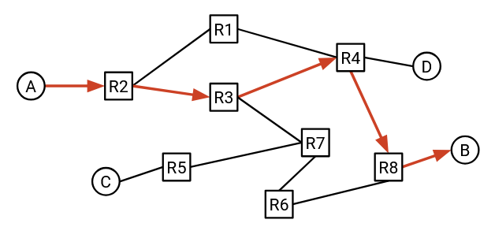Trước tiên, chúng ta sẽ xây dựng một mô hình của Internet để có thể đặt bài toán định tuyến một cách rõ ràng. Chúng ta cũng sẽ xem xét các câu trả lời cho bài toán định tuyến trông như thế nào, và điều gì khiến một câu trả lời trở nên hợp lệ và tốt.
Tiếp theo, chúng ta sẽ tìm hiểu một số loại giao thức định tuyến khác nhau có thể được triển khai để tạo ra lời giải cho bài toán định tuyến. Chúng ta cũng sẽ xem cách các giao thức định địa chỉ có thể được sử dụng để giúp giao thức định tuyến mở rộng quy mô ra toàn bộ Internet.
Cuối cùng, chúng ta sẽ điểm qua một số phần cứng thực tế được sử dụng để triển khai các giao thức định tuyến này.
Định tuyến Liên miền và Nội miền
Một chiến lược khả thi cho việc định tuyến là xây dựng một mô hình Internet bao gồm mọi máy tính trên thế giới, và thiết kế một giao thức định tuyến khổng lồ duy nhất cho phép chúng ta gửi các gói tin (packet) đến bất kỳ đâu trên thế giới. Tuy nhiên, điều này không khả thi trong thực tế do quy mô quá lớn của Internet.
Thay vào đó, chúng ta sẽ tận dụng thực tế rằng Internet là một mạng của các mạng (network of networks). Nói cách khác, Internet bao gồm nhiều mạng cục bộ. Mỗi mạng cục bộ triển khai giao thức định tuyến riêng của mình, quy định cách gửi các gói tin trong phạm vi mạng cục bộ đó. Sau đó, chúng ta có thể kết nối tất cả các mạng cục bộ này lại với nhau và triển khai một giao thức định tuyến trên toàn bộ các mạng cục bộ, quy định cách gửi các gói tin giữa các mạng cục bộ khác nhau.

Các mạng cục bộ không giống nhau. Ví dụ, chúng có thể khác nhau về kích thước: Một số mạng có thể có nhiều máy hơn các mạng khác. Hoặc, các máy có thể được phân bố trên một khu vực địa lý rộng hơn (ví dụ: toàn bộ khuôn viên Đại học UC Berkeley), hoặc một khu vực nhỏ hơn (ví dụ: nhà bạn). Các mạng cũng có thể khác nhau về băng thông (bandwidth) cần hỗ trợ, tỷ lệ lỗi cho phép, số lượng nhân viên kỹ thuật hỗ trợ, độ tuổi của hạ tầng, ngân sách xây dựng và vận hành, v.v.
Vì mỗi mạng có cấu trúc và yêu cầu riêng, các mạng cục bộ khác nhau có thể lựa chọn sử dụng các giao thức định tuyến khác nhau. Một chiến lược định tuyến có thể hiệu quả trên một mạng, nhưng không hiệu quả trên mạng khác.
Với mô hình mạng của các mạng, chúng ta có thể để từng mạng cục bộ lựa chọn chiến lược định tuyến phù hợp cho các gói tin trong mạng của họ. Mỗi nhà vận hành có thể chọn giao thức phù hợp nhất với họ. Các giao thức định tuyến gói tin trong một mạng cục bộ được gọi là intra-domain routing protocols (giao thức định tuyến nội miền), hay interior gateway protocols (IGPs) (giao thức cổng nội bộ). Các ví dụ thực tế bao gồm OSPF (Open Shortest Path First – Tìm đường ngắn nhất mở) và IS-IS (Intermediate System to Intermediate System – Hệ thống trung gian đến hệ thống trung gian).
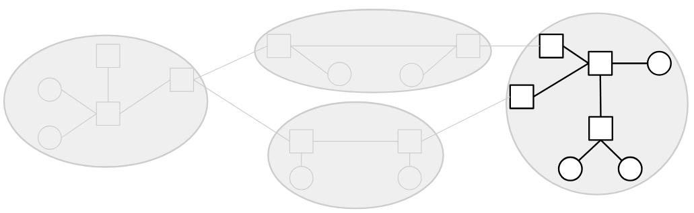Ngược lại, các giao thức định tuyến gói tin giữa các mạng khác nhau được gọi là inter-domain routing protocols (giao thức định tuyến liên miền), hay exterior gateway protocols (EGPs) (giao thức cổng bên ngoài). Để hỗ trợ việc gửi gói tin giữa các mạng cục bộ khác nhau, mọi mạng cần đồng thuận sử dụng cùng một giao thức để định tuyến gói tin giữa nhau. Nếu các mạng khác nhau sử dụng các giao thức liên miền khác nhau, thì không có gì đảm bảo rằng toàn bộ Internet có thể được kết nối một cách nhất quán. Giả sử một nhà vận hành chỉ triển khai giao thức X, còn nhà vận hành khác chỉ triển khai giao thức Y? Không rõ hai mạng cục bộ này sẽ trao đổi thông điệp như thế nào.
Vì mọi mạng phải đồng thuận sử dụng cùng một giao thức liên miền, nên chỉ có một giao thức được triển khai ở quy mô toàn Internet, đó là BGP (Border Gateway Protocol – Giao thức cổng biên).
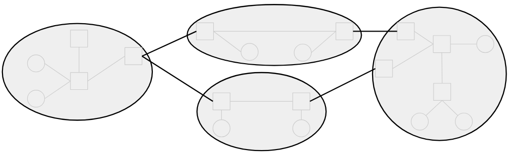Mô hình phân chia giữa giao thức cổng nội bộ và cổng bên ngoài này rất thuận tiện để hình dung, nhưng trong thực tế, không phải lúc nào cũng có sự phân biệt rõ ràng giữa chúng. Ví dụ, BGP đôi khi cũng được sử dụng bên trong một mạng cục bộ, ngoài việc sử dụng giữa các mạng khác nhau.
Bất kể giao thức được triển khai nội bộ trong một mạng hay bên ngoài giữa các mạng, chúng ta cũng có thể phân loại giao thức định tuyến bằng cách xem xét thuật toán cơ bản mà nó sử dụng. Cụ thể, chúng ta sẽ nghiên cứu các giao thức kiểu vector khoảng cách (distance-vector), trạng thái liên kết (link-state), và vector đường đi (path-vector) (sẽ tìm hiểu chi tiết từng loại sau).
Mô hình Định tuyến Nội miền (Intra-Domain Routing)
Mô hình hóa Mạng dưới dạng Đồ thị
Hãy cùng xây dựng một mô hình đơn giản hóa của Internet để giúp chúng ta định nghĩa bài toán định tuyến một cách chính xác.
Nhớ lại từ chương trước rằng chúng ta có thể hình dung Internet như một tập hợp các máy tính, được kết nối với nhau thông qua một tập hợp các liên kết (link), trong đó mỗi liên kết kết nối hai máy tính trong mạng.
Chúng ta có thể biểu diễn cấu trúc mạng dưới dạng một đồ thị, trong đó mỗi nút (node) đại diện cho một máy tính, và mỗi cạnh (edge) giữa hai nút đại diện cho một liên kết giữa hai máy tính.
Trong lịch sử, đôi khi các liên kết có thể kết nối nhiều hơn hai máy tính, nhưng trong các mạng hiện đại, liên kết gần như luôn kết nối chính xác hai máy tính.
Cấu trúc Mạng Full Mesh
Giả sử chúng ta có hai máy tính, A và B. Nếu hai máy này muốn trao đổi thông điệp, chúng ta có thể thêm một liên kết giữa chúng.
Nhưng nếu chúng ta có năm máy tính thay vì hai thì sao? Một cách tiếp cận khả thi là tạo liên kết giữa mọi cặp máy tính, sao cho mỗi máy được kết nối với tất cả các máy còn lại. Cấu trúc này đôi khi được gọi là full mesh topology (cấu trúc mạng lưới đầy đủ).

Vậy những hạn chế của cách tiếp cận này là gì?
Cách tiếp cận này không mở rộng tốt. Nếu chúng ta cố gắng mở rộng nó ra quy mô của Internet hiện đại, chúng ta sẽ cần một dây kết nối giữa mọi cặp máy tính trên thế giới. Khi một máy tính mới tham gia mạng, chúng ta sẽ phải tạo các liên kết mới giữa máy đó và mọi máy tính khác trên thế giới.
Mặc dù không thể mở rộng ra toàn bộ Internet, nhưng cấu trúc full mesh vẫn có một số lợi ích trong các môi trường nhỏ hơn. Cụ thể, việc có liên kết giữa mọi cặp máy tính mang lại rất nhiều bandwidth (băng thông) cho mạng. Mỗi máy có một liên kết riêng đến tất cả các máy khác, và mỗi cặp máy có thể sử dụng toàn bộ băng thông trên liên kết riêng của họ.
Nói chung, không có gì đảm bảo rằng mỗi máy có liên kết trực tiếp đến tất cả các máy khác. Nói cách khác, không có gì đảm bảo rằng đồ thị cơ bản là đồ thị liên thông hoàn toàn.
Cấu trúc Mạng Một Liên kết
Ngoài cấu trúc full mesh, còn có những cách khác để triển khai liên kết nhằm kết nối nhiều máy tính. Ví dụ, chúng ta có thể sử dụng một liên kết duy nhất để kết nối cả năm máy tính:

(Tại đây, chúng ta tạm thời phá vỡ giả định rằng một liên kết chỉ kết nối hai máy tính, bằng cách xem xét một liên kết kết nối nhiều hơn hai máy.)
Cách tiếp cận này mở rộng tốt hơn so với cấu trúc full mesh. Ví dụ, nếu một máy tính mới tham gia mạng, thay vì tạo năm liên kết mới giữa máy tính mới và năm máy tính hiện có, chúng ta chỉ cần mở rộng dây hiện có đến máy tính mới.
Tuy nhiên, cách tiếp cận này bị giới hạn hơn về lượng băng thông có sẵn cho các máy. Cụ thể, chỉ có một liên kết duy nhất, và cả năm máy phải chia sẻ băng thông trên liên kết này.
Để tạo ra các cấu trúc mạng phức tạp hơn, chúng ta cần giới thiệu khái niệm router (bộ định tuyến).
Router và Host
Trong mô hình đơn giản hóa của chúng ta, mỗi máy tính sẽ được phân loại thành một trong hai loại.
End hosts (máy chủ đầu cuối) là các máy tính kết nối với Internet để gửi và nhận dữ liệu. Ví dụ về end host bao gồm các ứng dụng trên máy tính cá nhân của bạn, như trình duyệt web. Các máy chủ web, chẳng hạn như máy chủ của Google nhận truy vấn tìm kiếm và gửi lại kết quả, cũng là end host. Những máy này gửi các gói tin (packet) ra ngoài đến các đích khác, và có thể là đích cuối cùng của các gói tin đến. Tuy nhiên, chúng thường không nhận và chuyển tiếp các gói tin trung gian (tức là các gói tin có đích cuối khác).
Router, ngược lại, là các máy tính kết nối với Internet có nhiệm vụ nhận và chuyển tiếp các gói tin trung gian đến gần hơn với đích cuối của chúng. Ví dụ, hãy xem xét router được lắp đặt trong mạng gia đình của bạn, hoặc các router trong một trung tâm dữ liệu nào đó. Những máy này thường không tự tạo và gửi các gói tin mới, và thường không phải là đích cuối của các gói tin. Ví dụ, trong quá trình sử dụng Internet hàng ngày, bạn có thể muốn gửi gói tin đến máy chủ web của Google để thực hiện tìm kiếm, nhưng bạn có lẽ không cần gửi thông điệp trực tiếp đến router gia đình hoặc router trong trung tâm dữ liệu. Những router đó sẽ giúp bạn chuyển tiếp gói tin đến Google, nhưng không phải là đích cuối của gói tin.

Tùy thuộc vào thiết kế mạng, router có thể là đích hợp lệ, nhưng trong chương này, chúng ta sẽ bỏ qua việc coi router là đích. Tuy nhiên, cần lưu ý rằng router vẫn có thể là nguồn và gửi các gói tin mới của riêng mình.
Router đôi khi cũng được gọi là switch (bộ chuyển mạch). Có sự khác biệt lịch sử giữa router và switch, nhưng ngày nay, hai thuật ngữ này thường được sử dụng thay thế cho nhau. Trong tài liệu này, chúng ta sẽ sử dụng "router" khi có thể.
Trong mô hình đồ thị của Internet, router xuất hiện như các nút trung gian thường được kết nối với nhiều nút lân cận. End host xuất hiện như các nút thường được kết nối với một hoặc nhiều router. Trong thực tế, các giả định này không phải lúc nào cũng đúng.
Trong tài liệu này, khi có thể, chúng ta sẽ luôn vẽ router dưới dạng hình vuông và end host dưới dạng hình tròn. Trong thực tế, đôi khi router được biểu diễn bằng các biểu tượng khác. Ví dụ, đây là một biểu tượng router phổ biến được sử dụng trong sơ đồ mạng:
Cấu trúc Mạng với Router
Giờ đây, khi chúng ta có thêm router bên cạnh các end host, chúng ta có thể tạo ra các cấu trúc mạng phức tạp hơn như sau:

Cấu trúc này cho phép chúng ta kết hợp các lợi ích của cấu trúc full mesh và cấu trúc một liên kết. Cụ thể, cấu trúc này sử dụng ít liên kết hơn so với cấu trúc full mesh trước đó. Đồng thời, nó có nhiều băng thông hơn so với cấu trúc một liên kết.
Cấu trúc này cũng có khả năng chống lỗi tốt hơn. Nếu một liên kết bị hỏng, gói tin có thể đi theo một đường khác trong mạng và vẫn đến được đích.

End Host trong Định tuyến
Lưu ý rằng end host thường không tham gia vào các giao thức định tuyến, vì chúng không chuyển tiếp các gói tin trung gian. Thay vào đó, end host thường được kết nối với một router duy nhất thông qua một liên kết duy nhất. Theo mặc định, end host sẽ gửi tất cả thông điệp ra ngoài đến router, và router sẽ xác định cách gửi gói tin đến đích cuối. Chiến lược gửi mọi thứ đến router này đôi khi được gọi là default route (định tuyến mặc định) của end host.
Khi thiết kế các giao thức định tuyến, chúng ta thường bỏ qua end host, ngoại trừ khi chúng là đích đến (vì router cần biết cách đến các đích khác nhau).
Gói tin (Packet)
Nhớ lại từ chương trước rằng khi một ứng dụng muốn gửi dữ liệu qua Internet, ứng dụng sẽ tạo ra một packet (gói tin) chứa dữ liệu. Khi gói tin được chuyển xuống các giao thức tầng thấp hơn, các phần tiêu đề (header) bổ sung sẽ được bọc quanh gói tin để cung cấp thông tin metadata giúp gói tin đến được đích.
Trong chương định tuyến này, chúng ta sẽ xem xét một mô hình đơn giản hóa, trong đó mỗi gói tin có một phần tiêu đề chứa metadata, và một phần payload chứa dữ liệu ở tầng ứng dụng. Chúng ta sẽ bỏ qua các tiêu đề lồng nhau và nhiều tầng trong thời điểm này.
Các giao thức định tuyến không quan tâm đến dữ liệu ở tầng ứng dụng. Không quan trọng người dùng đang cố gắng gửi một hình ảnh, một trang HTML, hay một tệp âm thanh; từ góc nhìn của routing (định tuyến), chúng ta chỉ có một chuỗi các số 1 và 0, và cần một giao thức để gửi những bit đó đến đúng đích.
Trong phần tiêu đề (header) của gói tin, trường metadata chính mà chúng ta quan tâm là địa chỉ đích (destination address). Trường này cho biết đích cuối cùng của gói tin. Khi một router (bộ định tuyến) nhận được gói tin, nó sẽ đọc trường metadata trong tiêu đề để xác định cách gửi gói tin đến gần hơn với đích cuối. Bài toán xác định nơi cần gửi gói tin chính là vấn đề cốt lõi mà chúng ta cần giải quyết trong định tuyến.

Định địa chỉ (Addressing)
Làm thế nào để chúng ta ghi lại địa chỉ đích của gói tin trong phần tiêu đề? Chúng ta cần một cách để định địa chỉ cho từng máy trong mạng. Nói cách khác, chúng ta cần một giao thức để gán địa chỉ cho mỗi máy trong mạng.
Ở phần sau của chương này, chúng ta sẽ thảo luận về các cách tiếp cận có khả năng mở rộng để định địa chỉ. Còn hiện tại, hãy gán cho mỗi máy một nhãn duy nhất (ví dụ: chúng ta có thể gán nhãn cho ba router là X, Y và Z), và coi các nhãn đó là địa chỉ của từng router. Cách làm này cho phép chúng ta tách biệt bài toán định tuyến và bài toán định địa chỉ.
Tại thời điểm này, chúng ta có thể định nghĩa bài toán định tuyến: Khi một router nhận được một gói tin, làm thế nào để router biết phải chuyển tiếp gói tin đến đâu để nó cuối cùng đến được đích cuối?
Cấu trúc Mạng Thay đổi
Tại thời điểm này, chúng ta đã định nghĩa được bài toán định tuyến, nhưng vẫn còn một số yếu tố thực tế khiến bài toán này trở nên phức tạp.
Nếu Internet có thể được vẽ dưới dạng một đồ thị cố định, không thay đổi, thì có lẽ chúng ta có thể giải bài toán định tuyến bằng cách đơn giản là nhìn vào đồ thị và tính toán các đường đi trong đó.
Tuy nhiên, cấu trúc mạng liên tục thay đổi. Ví dụ, các liên kết có thể bị hỏng vào những thời điểm không thể dự đoán. Khi đó, gói tin phải được gửi theo một tuyến đường khác để đến được đích.
Các liên kết mới cũng có thể được thêm vào, tạo ra các đường đi bổ sung có thể được xem xét trong quá trình định tuyến.
Do đó, các giao thức định tuyến mà chúng ta thiết kế cần phải có khả năng chống chịu với sự thay đổi của cấu trúc mạng.
Giao thức Định tuyến là Giao thức Phân tán
Nếu mạng thay đổi, có lẽ chúng ta có thể giải bài toán định tuyến bằng cách cập nhật đồ thị và tính toán lại các đường đi trong đồ thị mới.
Một vấn đề khác khiến định tuyến trở nên khó khăn là các router không có cái nhìn toàn cục về toàn bộ mạng. Ví dụ, nếu một liên kết ở đâu đó trong mạng bị hỏng, không có cách nào để tất cả các router tự động biết được điều đó. Chúng ta sẽ phải truyền thông tin về cấu trúc mạng mới đến các router như một phần của giao thức định tuyến.

Điều này dẫn đến việc các giao thức định tuyến thường là distributed protocols (giao thức phân tán). Thay vì có một trung tâm tính toán duy nhất đưa ra tất cả các câu trả lời, mỗi router phải tự tính toán phần của mình (có thể là không có đầy đủ thông tin về toàn bộ mạng). Tập hợp các câu trả lời được tính toán bởi từng router phải tạo thành một lời giải toàn cục cho bài toán định tuyến, cho phép các gói tin đến được đích cuối của chúng.
Tính chất phân tán của các giao thức định tuyến cũng có nghĩa là chúng ta phải tính đến khả năng từng router bị lỗi. Nếu có một máy tính duy nhất giải bài toán, và máy đó bị lỗi và quên mất lời giải, chúng ta có thể đơn giản yêu cầu máy tính đó tính toán lại toàn bộ lời giải từ đầu. Tuy nhiên, trong một giao thức phân tán, nếu một router bị lỗi và quên mất phần lời giải của nó, giao thức của chúng ta cần có cách giúp router đó phục hồi sau lỗi và học lại phần lời giải của mình.
Liên kết là Nỗ lực Tốt nhất (Best-Effort)
Nhớ lại từ chương trước rằng các giao thức ở tầng 3 trở xuống là best-effort (nỗ lực tốt nhất). Nói cách khác, khi một gói tin được gửi qua một liên kết, không có gì đảm bảo rằng gói tin sẽ đến được đích. Liên kết có thể làm rơi gói tin.
Khi thiết kế các giao thức định tuyến, chúng ta cũng cần tính đến vấn đề này.
Trạng thái Định tuyến (Routing States)
Các chiến lược Định tuyến Tồi (Bad Routing Strategies)
Cho đến nay, chúng ta đã định nghĩa bài toán định tuyến như sau: Khi một router nhận được một gói tin, làm thế nào để router biết được nơi để chuyển tiếp gói tin đó sao cho nó cuối cùng sẽ đến được đích cuối cùng?

Một khi chúng ta tìm thấy một thuật toán (một routing protocol (giao thức định tuyến)) để giải quyết vấn đề này, chúng ta có thể áp dụng thuật toán đó để tạo ra một câu trả lời, mà chúng ta sẽ gọi là routing state (trạng thái định tuyến). Bạn có thể nghĩ về một routing state như một tập hợp các quy tắc mà mỗi router sử dụng để chuyển tiếp các gói tin mà nó nhận được. Một routing state trông như thế nào, và làm thế nào chúng ta có thể kiểm tra xem một routing state cho trước có hợp lệ hay tốt không?
Để bắt đầu, chúng ta có thể xem xét một số chiến lược tồi để tạo ra các routing state. Một chiến lược định tuyến khả thi là: Router chuyển tiếp gói tin đến một láng giềng được chọn ngẫu nhiên. Về mặt trực quan, chúng ta đã có thể thấy rằng các routing state được tạo ra theo cách này có lẽ sẽ không hợp lệ. Nếu chúng ta sử dụng chiến lược này, chúng ta không thể chắc chắn rằng các gói tin sẽ đến được đích cuối cùng của chúng.
Một chiến lược tồi khả thi khác là: Router chuyển tiếp một bản sao của gói tin đến tất cả các láng giềng của nó. Về mặt trực quan, điều này có thể hợp lệ, theo nghĩa là các bản sao của gói tin cuối cùng sẽ lan truyền khắp toàn bộ mạng và có thể đến được đích. Tuy nhiên, chiến lược này không hiệu quả, vì nó lãng phí rất nhiều bandwidth (băng thông) để chuyển tiếp gói tin đến các router không cần thiết để gửi gói tin đến đích cuối cùng của nó.
Chúng ta có thể thấy một cách trực quan rằng hai chiến lược này là tồi, nhưng để phân tích các routing protocol thông minh hơn, chúng ta sẽ cần phải định nghĩa một cách chính thức một routing state trông như thế nào. Sau đó, chúng ta sẽ cần phải chính thức hóa điều gì làm cho một routing state hợp lệ, và điều gì làm cho một routing state tốt.
Bảng Chuyển tiếp (Forwarding Tables)
Trong mô hình mạng của chúng ta, mỗi router có một số liên kết đi ra kết nối nó với các router và máy chủ liền kề. Nói cách khác, trong đồ thị cơ bản, mỗi nút router có một số láng giềng, được kết nối với router bằng một cạnh.
Khi router nhận được một gói tin, với đích cuối cùng của nó trong siêu dữ liệu, router cần quyết định gói tin nên được chuyển tiếp đến router hoặc máy chủ liền kề nào. Router trung gian tiếp theo mà gói tin sẽ được chuyển tiếp đến được gọi là next hop (chặng kế tiếp).

Ví dụ, hãy xem xét mạng này. Nếu R2 nhận được một gói tin có đích cuối cùng là B, next hop tự nhiên tương ứng sẽ là R3. Các lựa chọn next hop có thể là R1, R3 và R4 (ba router liền kề với R2), và R3 là next hop gửi gói tin đến gần B hơn.
Nếu R2 thay vào đó nhận được một gói tin có đích cuối cùng là A, thì next hop tự nhiên tương ứng sẽ là R1.
Đối với mỗi đích cuối cùng có thể, chúng ta có thể viết ra next hop tương ứng để chuyển tiếp gói tin đến gần đích đó hơn. Kết quả được gọi là forwarding table (bảng chuyển tiếp).

Lưu ý rằng trong việc ánh xạ từ đích đến next hop, một next hop có thể được sử dụng nhiều lần. Ví dụ, trong forwarding table của R2, các gói tin đến B và các gói tin đến C đều sẽ được chuyển tiếp đến R3.
Bằng cách viết ra forwarding table cho mỗi router trung gian, chúng ta hiện có một routing state đầy đủ cho mạng. Nói cách khác, với một gói tin có một đích cuối cùng nào đó, chúng ta biết chính xác cách mỗi router sẽ chuyển tiếp gói tin đó.
Trong thế giới thực, thay vì ánh xạ các đích đến các next hop, các router thường sẽ ánh xạ các đích đến các physical ports (cổng vật lý), trong đó mỗi cổng vật lý tương ứng với một liên kết. Trong mô hình đồ thị, bây giờ chúng ta sẽ ánh xạ mỗi đích đến một cạnh, thay vì ánh xạ mỗi đích đến một nút láng giềng. Trong thế giới thực, bạn có thể nghĩ về điều này như một router có nhiều dây đi ra, trong đó mỗi dây được kết nối với một router khác. Thay vì viết ra các router láng giềng trong forwarding table, router thay vào đó viết ra dây nào mà một gói tin nên được gửi đi.

Đây là một sự khác biệt tinh tế, và nó phản ánh thực tế rằng router không thực sự quan tâm đến danh tính của router láng giềng. Quyết định duy nhất mà router cần đưa ra là gửi gói tin đi theo một trong các dây, bất kể dây đó được kết nối với ai. Trong các ghi chú này, chúng ta sẽ vẽ các forwarding table dưới dạng ánh xạ các đích đến các next hop (thay vì các cổng vật lý), để đơn giản.
Chuyển tiếp Dựa trên Đích đến (Destination-Based Forwarding)
Một hệ quả của việc sử dụng forwarding table là với một gói tin cho trước, quyết định về nơi chuyển tiếp gói tin chỉ phụ thuộc vào trường đích của gói tin. Nói cách khác, nếu một router nhận được nhiều gói tin khác nhau, tất cả đều có cùng một đích, chúng sẽ đều được định tuyến đến cùng một next hop (giả sử forwarding table không thay đổi). Vì mỗi đích chỉ được ánh xạ đến một next hop duy nhất, không có cách nào để hai gói tin có cùng một đích được chuyển tiếp đến các router khác nhau. Cách tiếp cận này được gọi là destination-based forwarding (chuyển tiếp dựa trên đích đến) hoặc destination-based routing (định tuyến dựa trên đích đến).
Destination-based routing là cách tiếp cận phổ biến nhất để định tuyến, và đó là những gì được sử dụng trong Internet hiện đại. Về lý thuyết, các cách tiếp cận khác có thể tồn tại, nơi siêu dữ liệu bổ sung được sử dụng để đưa ra quyết định chuyển tiếp, nhưng chúng thường chỉ được sử dụng trong các ứng dụng hạn chế (ví dụ: bên trong một mạng cục bộ cụ thể).
Trong các đơn vị sau, khi chúng ta xem xét các cấu trúc liên kết trung tâm dữ liệu, chúng ta có thể xem xét các phương pháp destination-based forwarding nơi có thể có nhiều hơn một next hop cho một đích cụ thể. Trong đơn vị này, chúng ta sẽ giả định rằng mỗi đích chỉ được ánh xạ đến một next hop duy nhất.
Định tuyến và Chuyển tiếp (Routing vs. Forwarding)
Bây giờ chúng ta đã giới thiệu ý tưởng về forwarding table, chúng ta cần phân biệt giữa quá trình tạo ra forwarding table và quá trình sử dụng forwarding table.
Routing (Định tuyến) là quá trình các router giao tiếp với nhau để xác định cách điền vào forwarding table của chúng.
Forwarding (Chuyển tiếp) là quá trình nhận một gói tin, tra cứu next hop thích hợp của nó trong bảng, và gửi gói tin đến láng giềng thích hợp.
Forwarding không giống như Routing. Khi Forwarding các gói tin, các router sử dụng forwarding table hiện có, mà không cần biết bảng đó được tạo ra như thế nào.
Forwarding là một quy trình cục bộ. Khi một router đang Forwarding các gói tin, router không cần biết toàn bộ cấu trúc liên kết mạng. Router cũng không quan tâm đến việc gói tin đi đâu sau khi nó đã được chuyển tiếp đến next hop. Router chỉ cần biết về gói tin đến và forwarding table của chính nó.
Ngược lại, Routing là một quy trình toàn cục. Để điền vào các forwarding table, chúng ta sẽ cần tìm hiểu một cái gì đó về cấu trúc liên kết toàn cục của mạng.

Ví dụ, khi điền vào forwarding table của R2, chúng ta đã phải bằng cách nào đó biết được rằng đích B được liên kết với R3, mặc dù máy chủ B không được kết nối trực tiếp với R2. Trong quá trình Routing, mỗi router cũng sẽ cần biết về các đích không thuộc cục bộ.
Tính hợp lệ của Trạng thái Định tuyến là Toàn cục (Routing State Validity is Global)
Hãy nhớ lại rằng một routing state bao gồm một forwarding table cho mỗi router, chúng cùng nhau cho chúng ta biết cách các gói tin sẽ di chuyển qua mạng. Với một routing state cho trước, làm thế nào chúng ta có thể biết được routing state đó là đúng hay sai?
Đầu tiên, chúng ta cần định nghĩa chính thức routing state validity (tính hợp lệ của trạng thái định tuyến) để xác định xem một routing state có hợp lệ hay không (mặc dù thuật ngữ này có thể không được sử dụng rộng rãi ngoài khóa học CS 168 tại UC Berkeley). Yêu cầu chính đối với tính hợp lệ là: routing state cần tạo ra các quyết định chuyển tiếp đảm bảo rằng các gói tin thực sự đến được đích của chúng.
Lưu ý rằng tính hợp lệ phải được đánh giá trong bối cảnh toàn cục, không phải bối cảnh cục bộ. Việc xem xét routing state cục bộ, chẳng hạn như forwarding table của một router duy nhất, không thể cho chúng ta biết liệu một routing state có hợp lệ hay không. Ví dụ, trong forwarding table cục bộ của router R2, chúng ta có thể thấy rằng next hop cho đích A là router R3, nhưng chúng ta không có cách nào để quyết định xem điều này có hợp lệ hay không. Liệu việc chuyển tiếp các gói tin đến R3 có giúp các gói tin đến được đích A không? Không có cách nào để biết chỉ từ forwarding table.

Thay vào đó, chúng ta cần xem xét routing state toàn cục, bao gồm tập hợp tất cả các forwarding table trong tất cả các router.

Định nghĩa Tính hợp lệ của Trạng thái Định tuyến (Routing State Validity Definition)
Bây giờ, chúng ta có thể định nghĩa một điều kiện chính thức mà chúng ta có thể sử dụng để kiểm tra xem các gói tin có đến được đích của chúng hay không đối với một routing state cho trước.
Một routing state toàn cục là hợp lệ khi và chỉ khi, đối với bất kỳ đích nào, các gói tin không bị kẹt trong các ngõ cụt hoặc vòng lặp.
Một dead end (ngõ cụt) xảy ra nếu một gói tin đến một router, nhưng router không biết cách chuyển tiếp gói tin đến đích của nó, vì vậy gói tin không được chuyển tiếp. Điều này có thể xảy ra nếu forwarding table của router không chứa một mục cho đích của gói tin.
Lưu ý rằng điều kiện dead end chỉ áp dụng cho các router trung gian, chứ không phải các máy chủ cuối. Khi một gói tin đến máy chủ cuối đích, không cần thiết máy chủ cuối phải chuyển tiếp gói tin đi xa hơn, vì vậy chúng ta sẽ không xem xét các máy chủ cuối trong điều kiện dead end.

Một loop (vòng lặp) xảy ra nếu một gói tin được gửi theo một chu kỳ xung quanh cùng một nhóm các nút. Lưu ý rằng vì chúng ta đang sử dụng destination-based forwarding, nơi next hop chỉ phụ thuộc vào đích, một khi một gói tin đi vào một loop, nó sẽ bị kẹt trong loop đó mãi mãi. Khi gói tin đến router lần đầu tiên, hoặc lần thứ 10, hoặc lần thứ 500, nó sẽ được chuyển tiếp theo cùng một cách chính xác (vì đích cuối cùng là như nhau). Vì điều này áp dụng cho mọi router trên loop, gói tin sẽ bị kẹt trong loop mãi mãi.

Điều kiện này (không có dead ends, không có loops) là cần và đủ để một tuyến đường là hợp lệ. Hãy kiểm tra cả hai chiều của mệnh đề logic này.
Không có dead ends và không có loops là một điều kiện cần cho tính hợp lệ. Nói cách khác, một trạng thái là hợp lệ chỉ khi không có dead ends và không có loops.
Chứng minh: Nếu có một dead end, gói tin sẽ không đến được đích. Gói tin sẽ đến dead end và không được chuyển tiếp.
Nếu có loops, gói tin sẽ không đến được đích. Gói tin sẽ bị kẹt trong loop mãi mãi (vì destination-based forwarding, được mô tả trước đó). Ngoài ra, lưu ý rằng đích cuối cùng không thể là một phần của loop, vì đích sẽ không chuyển tiếp gói tin. Do đó, một gói tin bị kẹt trong loop sẽ không đến được đích.
Bây giờ, hãy kiểm tra chiều ngược lại. Nếu không có loops và không có dead ends, thì trạng thái đó là hợp lệ.
Chứng minh: Giả sử rằng routing state không có loops hoặc dead ends. Một gói tin sẽ không đến cùng một nút hai lần (vì không có loops). Ngoài ra, gói tin sẽ không dừng lại trước khi đến đích (vì không có dead ends). Do đó, gói tin phải tiếp tục đi qua mạng, đến các nút khác nhau. Chỉ có một số lượng hữu hạn các nút duy nhất để ghé thăm, vì vậy gói tin cuối cùng phải đến được đích. Do đó, routing state phải hợp lệ.
Cây Phân phối Có hướng (Directed Delivery Trees)
Bây giờ chúng ta đã có một định nghĩa chính thức cho routing state validity, chúng ta có thể hỏi: với một routing state toàn cục cho trước, làm thế nào chúng ta có thể kiểm tra xem nó có hợp lệ không?
Để đơn giản hóa vấn đề, hãy bắt đầu bằng cách chỉ xem xét một máy chủ cuối đích duy nhất, bỏ qua tất cả các máy chủ cuối khác. Trong mỗi router, chúng ta có thể tra cứu đích này để lấy next hop tương ứng, điều này cho chúng ta biết cách mỗi router sẽ chuyển tiếp các gói tin dành cho đích này.
Chúng ta có thể biểu diễn next hop tại mỗi router (cho đích duy nhất này) dưới dạng một mũi tên, cho chúng ta thấy tất cả các đường đi có thể mà gói tin này có thể đi để đến đích duy nhất.

Trong đồ thị kết quả, mỗi nút sẽ chỉ có một mũi tên đi ra. Điều này phản ánh giả định của chúng ta rằng trong forwarding table của mỗi router, chỉ có một next hop tương ứng với một đích.
Lưu ý rằng trong đồ thị kết quả, một khi hai đường đi gặp nhau, chúng không bao giờ tách ra. Nói cách khác, ngay cả khi có nhiều mũi tên (đường đi) đến một nút, vì chỉ có một mũi tên đi ra, các đường đi đó bây giờ sẽ hội tụ thành một đường đi duy nhất. Điều này phản ánh phương pháp destination-based forwarding của chúng ta, bởi vì mỗi router chỉ sử dụng đích cuối cùng để quyết định cách chuyển tiếp một gói tin. Router không quan tâm gói tin đã đến router bằng cách nào ngay từ đầu.

Các mũi tên mà chúng ta đã vẽ tạo thành một tập hợp các đường đi mà một gói tin có thể đi để đến đích duy nhất. Tập hợp các đường đi này được gọi là directed delivery tree (cây phân phối có hướng).
Về mặt thuật ngữ đồ thị, các mũi tên trong một directed delivery tree hợp lệ phải tạo thành một oriented spanning tree (cây khung có hướng), có gốc tại đích. Hãy nhớ lại rằng một cây khung là một tập hợp các cạnh trong đồ thị chạm vào mọi nút và tạo thành một cây. Chúng ta muốn directed delivery tree là một cây, vì không nên có chu trình (các gói tin không thể đi theo vòng lặp). Chúng ta muốn directed delivery tree là cây khung (chạm vào mọi nút), bởi vì chúng ta muốn có thể đến đích từ mọi nơi. Directed delivery tree có hướng vì các cạnh có mũi tên, cho chúng ta biết hướng để chuyển tiếp gói tin.
Tất cả các cạnh trong một directed delivery tree hợp lệ phải hướng về phía đích. Nói cách khác, bắt đầu từ bất kỳ nút nào, đi theo các mũi tên phải luôn luôn dẫn đến việc đến được đích.
Xác minh Tính hợp lệ của Trạng thái Định tuyến (Verifying Routing State Validity)
Như trước đây, hãy chỉ xem xét một máy chủ cuối đích duy nhất, bỏ qua tất cả các máy chủ cuối khác.
Ví dụ: Mặc dù có nhiều máy chủ cuối ở đây, hãy chỉ xem xét máy chủ cuối A.

Sử dụng các forwarding table tại mỗi router, chúng ta sẽ vẽ các mũi tên vào mạng để tạo thành directed delivery tree cho đích duy nhất này. Về mặt chính thức, đối với mỗi router (nút trong đồ thị), chúng ta sẽ vẽ một mũi tên đi ra duy nhất từ nút đó.
Ví dụ: Sử dụng các forwarding table (không hiển thị), chúng ta có thể vẽ một mũi tên đi ra cho mỗi router.

Để đơn giản, tại thời điểm này, chúng ta có thể xóa tất cả các liên kết không có mũi tên trên chúng. Các liên kết không có mũi tên này sẽ không bao giờ được sử dụng để gửi gói tin đến đích duy nhất, vì chúng không nằm trên directed delivery tree.
Ví dụ: Chúng ta có thể xóa tất cả các liên kết không có mũi tên.

Nếu đồ thị còn lại là một directed delivery tree hợp lệ (cây khung, tất cả các mũi tên đều hướng về đích), thì chúng ta có thể nói rằng routing state là hợp lệ cho đích duy nhất này.
Trong ví dụ trên, đồ thị còn lại thực sự là một cây khung hợp lệ hội tụ tại A, vì vậy chúng ta có thể nói routing state này là hợp lệ cho A.
Dưới đây là một số ví dụ về các routing state không hợp lệ:

Trạng thái này không hợp lệ. Về mặt trực quan, có một router dead end. Một gói tin hướng đến A có thể được gửi đến router này, và router này sẽ loại bỏ gói tin mà không chuyển tiếp nó. Về mặt chính thức, đồ thị còn lại không phải là một cây khung, bởi vì các cạnh không được kết nối với nhau (có hai thành phần không liên thông, điều này không được phép trong một cây).

Trạng thái này cũng không hợp lệ. Về mặt trực quan, có một loop mà gói tin có thể bị kẹt trong đó. Về mặt chính thức, đồ thị còn lại không phải là một cây khung, bởi vì các cạnh không liên thông, và có một chu trình.
Chúng ta có thể lặp lại quá trình này, một lần cho mỗi máy chủ cuối khác nhau (cô lập một máy chủ cuối khác nhau mỗi lần). Nếu routing state là hợp lệ cho tất cả các đích, thì chúng ta có thể nói rằng routing state là hợp lệ, và sẽ luôn chuyển giao các gói tin đến đúng đích của chúng.
Định tuyến Chi phí Thấp nhất (Least-Cost Routing)
Bây giờ chúng ta đã có một định nghĩa về điều gì làm cho một routing state hợp lệ (các tuyến đường không có loops và dead ends), chúng ta có thể định nghĩa thêm điều gì làm cho một routing state tốt. Có thể một mạng có nhiều routing state hợp lệ, và chúng ta muốn có một số liệu có thể giúp chúng ta xác định xem một tuyến đường có tốt hơn tuyến đường khác hay không.
Least-cost routing (định tuyến chi phí thấp nhất) là một cách tiếp cận phổ biến để đo lường xem một tuyến đường có tốt hay không. Trong least-cost routing, chúng ta gán một chi phí bằng số cho mọi liên kết, và tìm kiếm các tuyến đường giảm thiểu chi phí. Nói cách khác, chúng ta muốn các tuyến đường dẫn đến việc các gói tin di chuyển dọc theo các đường đi có chi phí thấp nhất đến đích của chúng.

Có nhiều chi phí khác nhau mà chúng ta có thể xem xét gán cho các liên kết. Chi phí có thể phụ thuộc vào giá xây dựng liên kết, độ trễ lan truyền, khoảng cách vật lý của liên kết, độ không tin cậy, bandwidth, cùng nhiều yếu tố khác. Ví dụ, chúng ta có thể gán chi phí dựa trên chất lượng của liên kết (bandwidth và độ trễ lan truyền), sao cho đường đi chi phí thấp nhất ưu tiên các liên kết chất lượng cao hơn.
Bằng cách cho phép các nhà khai thác đặt chi phí liên kết một cách tùy ý, chúng ta trao cho nhà khai thác khả năng tối ưu hóa mạng cho các nhu cầu cụ thể của họ. Chi phí chúng ta gán phụ thuộc vào mục tiêu của nhà khai thác đối với mạng. Nếu chúng ta có một liên kết 400 Gbps với độ trễ lan truyền 20 ms, và một liên kết 10 Gbps với độ trễ lan truyền 5 ms, cái nào có chi phí thấp hơn? Điều đó phụ thuộc vào việc chúng ta đang tối ưu hóa cho bandwidth, độ trễ lan truyền, một sự kết hợp nào đó, hay một thứ gì đó hoàn toàn khác.
Nếu chúng ta gán chi phí là 1 cho mọi liên kết, thì đường đi chi phí thấp nhất là đường đi di chuyển qua ít liên kết nhất. Đôi khi chúng ta gọi đây là việc giảm thiểu hop count (số bước nhảy). Trong các ghi chú này, nếu các cạnh của một đồ thị không được dán nhãn với một chi phí, bạn có thể giả định tất cả các cạnh có chi phí là 1.
Nhà khai thác của một mạng có thể quyết định cách gán chi phí cho mỗi liên kết. Nhà khai thác có thể gán chi phí thủ công. Hoặc, nhà khai thác có thể để mạng tự động cấu hình chi phí, mặc dù điều này có thể không hoạt động với một số số liệu không thể đo lường tự động (ví dụ: mạng không biết gì về chi phí tài chính để xây dựng liên kết).
Khi thiết kế một routing protocol, chúng ta có thể trừu tượng hóa cách các chi phí được gán. Từ quan điểm của routing protocol, một ai đó khác (ví dụ: nhà khai thác mạng) đã gán các chi phí, dựa trên một cái gì đó mà họ cho là quan trọng. Thuật toán nhận các chi phí làm đầu vào, và tính toán các đường đi chi phí thấp nhất, bất kể các chi phí thực sự đại diện cho điều gì.

Lưu ý rằng chi phí là cục bộ đối với mỗi router. Một router biết về chi phí của các liên kết đi ra của chính nó, nhưng không có cách nào để router tự động biết chi phí của tất cả các liên kết. Điều này phù hợp với ràng buộc mà chúng ta đã đề cập trước đó, nơi các router không có cái nhìn toàn cục về toàn bộ cấu trúc liên kết của mạng.
Để đơn giản, các routing protocol đưa ra một số giả định về cách các chi phí được định nghĩa.
Chúng ta sẽ giả định rằng chi phí luôn là số nguyên dương. Điều này phù hợp với nhiều số liệu phổ biến trong đời thực, chẳng hạn như chiều dài của một liên kết hoặc chi phí tiền tệ của một liên kết. Nếu chúng ta đang cố gắng giảm thiểu tổng khoảng cách vật lý mà một gói tin di chuyển, một chi phí liên kết âm không có ý nghĩa. Bạn không thể di chuyển dọc theo một liên kết và giảm tổng khoảng cách đã đi. Giả định này sẽ giúp đơn giản hóa các giao thức của chúng ta sau này, vì chúng ta sẽ không phải lo lắng về các trường hợp biên như các vòng lặp có trọng số âm (nơi giải pháp chi phí thấp nhất sẽ là đi vòng quanh vòng lặp mãi mãi).
Chúng ta sẽ giả định rằng chi phí là đối xứng. Chi phí từ A đến B giống như chi phí từ B đến A. Điều này phản ánh các sơ đồ chúng ta sẽ vẽ, trong đó một cạnh được dán nhãn với một chi phí đối xứng duy nhất. Về lý thuyết, có thể có chi phí liên kết bất đối xứng, nhưng điều này không được thực hiện trong thực tế, và sẽ dẫn đến các routing protocol phức tạp hơn.
Với những giả định này, định nghĩa của chúng ta về các tuyến đường tốt (chi phí thấp nhất) phù hợp với định nghĩa của chúng ta về các tuyến đường hợp lệ. Cụ thể, một tuyến đường chi phí thấp nhất sẽ không có bất kỳ loops nào, bởi vì chi phí là dương (việc đi qua loop sẽ chỉ làm tăng chi phí).
Định tuyến Tĩnh (Static Routing)
Một cách khả thi để tạo ra các tuyến đường là để nhà khai thác mạng điền vào forwarding table một cách thủ công. Điều này được gọi là static routing (định tuyến tĩnh).
Bản thân static routing không thực tế (ví dụ: không thể mở rộng, dễ bị lỗi do con người), nhưng ngay cả khi đã triển khai một routing protocol, một số tuyến đường vẫn cần được các nhà khai thác tạo ra thủ công. Bạn có thể nghĩ về những tuyến đường thủ công này như những tuyến đường "tầm thường" hoặc "trường hợp cơ sở", từ đó routing protocol tạo ra các tuyến đường phức tạp hơn.
Nếu chúng ta được kết nối trực tiếp với một máy khác mà chúng ta muốn định tuyến các gói tin đến, chúng ta có thể cấu hình thủ công một tuyến đường để chuyển tiếp các gói tin đến máy đó. Những tuyến đường này được gọi là direct routes (tuyến đường trực tiếp) hoặc connected routes (tuyến đường kết nối). Ví dụ, router nhà bạn được kết nối với máy tính cá nhân của bạn bằng một liên kết, vì vậy router nhà bạn có thể thêm một mục trong forwarding table tương ứng với máy tính của bạn. Mục này được thêm vào bằng cách thông báo cho router về kết nối, và không được thêm vào từ việc chạy bất kỳ routing protocol nào.

Cũng có thể sử dụng static routing để mã hóa cứng các mục cho các đích trong forwarding table, ngay cả khi chúng ta không được kết nối trực tiếp với đích đó. Điều này có thể hữu ích nếu có một tuyến đường không bao giờ thay đổi, và chúng ta muốn tuyến đường đó luôn ở trong forwarding table của mình, bất kể routing protocol đang làm gì.
Các Giao thức Distance-Vector
Phác thảo Thuật toán
Trong phần này, chúng ta sẽ thiết kế một distance-vector protocol, là một trong ba loại thuật toán định tuyến (cùng với link-state (trạng thái liên kết) và path-vector (vector đường đi)).
Các giao thức distance-vector có một lịch sử lâu đời trên Internet và ARPANET (tiền thân của Internet). Giao thức distance-vector tiêu biểu là Routing Information Protocol (RIP) (Giao thức Thông tin Định tuyến), và giao thức D-V mà chúng ta sẽ thiết kế có nhiều điểm tương đồng với RIP.
Để có được một số trực giác về giao thức định tuyến mà chúng ta sẽ nghiên cứu trong phần này, hãy xem xét mạng sau đây.

Để bắt đầu, forwarding table của mọi router đều trống. Mục tiêu của chúng ta là điền vào các forwarding table của mọi router, sao cho các packet có thể được định tuyến từ bất kỳ đâu đến đích là A.
Để bắt đầu, A có thể nói với R1: "Tôi là A." Bây giờ, R1 biết cách forwarding các packet đến A.
Bây giờ R1 đã có một đường đi đến A, nó có thể nói với các neighbour của mình, R2 và R3: "Tôi là R1, và tôi có thể đến được A."

Bây giờ, R2 và R3 biết rằng chúng có thể đến được A bằng cách forwarding các packet đến R1.
R2 bây giờ có thể nói với các neighbour của mình, R4 và R5: "Tôi là R2, và tôi có thể đến được A." Tương tự, R3 có thể nói với các neighbour của mình, R6 và R7: "Tôi là R3, và tôi có thể đến được A."

Bây giờ, R4 và R5 biết rằng các packet cho A có thể được chuyển tiếp đến R2, và R6 và R7 biết rằng các packet cho A có thể được chuyển tiếp đến R3.
Quá trình tiếp tục: R4, R5, R6, và R7 mỗi người nói với neighbour của mình họ là ai, và rằng họ có thể đến được A. Đến cuối cùng, forwarding table của mọi người đều được điền đầy, và chúng ta có thể định tuyến các packet từ bất kỳ đâu trong mạng hướng về A.

Tóm lại: Khi bạn nhận được một thông báo từ ai đó nói rằng họ có thể đến được A, bạn nên ghi lại người đã gửi thông báo đó. Bây giờ, bạn có thể gửi các tin nhắn dành cho A thông qua người đó.
Ngoài ra, bây giờ bạn đã có cách để gửi tin nhắn đến A, bạn nên tạo một thông báo cho tất cả các neighbour của mình, để họ có thể gửi các tin nhắn dành cho A thông qua bạn.
Nếu có nhiều đích đến thì sao? Chúng ta có thể chạy cùng một thuật toán này lặp đi lặp lại, một lần cho mỗi đích. Forwarding table sau đó sẽ chứa nhiều mục, một mục cho mỗi đích.
Trong các ghi chú này, chúng ta sẽ tập trung vào một phần duy nhất cho đơn giản, nhưng giao thức chúng ta sẽ thiết kế có thể mở rộng cho nhiều đích.
{: .blue}
Hãy xem lại giao thức của chúng ta cho đến nay.
Đối với mỗi đích:
- Nếu bạn nghe về một đường đi đến đích đó, hãy cập nhật bảng.
- Sau đó, hãy nói cho tất cả các neighbour của bạn.
Hướng của Thông báo và Tin nhắn
Trong giao thức này, rất dễ nhầm lẫn giữa hướng mà các thông báo và tin nhắn được gửi.
Các thông báo về cách đến A bắt đầu tại A, và lan truyền ra ngoài. Ví dụ, B đã gửi một thông báo đến D, nói rằng "Tôi là B, và các tin nhắn cho A có thể được gửi qua tôi."
Ngược lại, các tin nhắn thực tế được gửi đến A lại được gửi vào trong, hướng về A. Ví dụ, một tin nhắn có thể bắt đầu tại D và được gửi đến B trên đường đến A.

Hướng của các thông báo hoàn toàn ngược lại với hướng của chính các tin nhắn! Hãy cẩn thận đừng nhầm lẫn giữa các thông báo và các tin nhắn thực tế!
Quy tắc 1: Cập nhật Bellman-Ford
Nếu có nhiều đường đi để đến A thì sao?

Trong kịch bản này, cả R3 và R4 sẽ thông báo rằng chúng có thể đến được A. R5 nên chọn forwarding các packet đến R3 hay R4?
Hãy nhớ lại rằng mục tiêu của chúng ta là tìm các tuyến đường có chi phí thấp nhất qua mạng. Để cho phép các router chọn đường đi có chi phí thấp nhất trong số nhiều đường đang được advertise, chúng ta cũng cần bao gồm chi phí trong các thông báo.
Thông báo của R3 bây giờ nói: "Tôi là R3, và tôi có thể đến A với chi phí 3."
Thông báo của R4 bây giờ nói: "Tôi là R4, và tôi có thể đến A với chi phí 2."
Bây giờ, R5 nhận thấy rằng R4 đang cung cấp đường đi ngắn hơn, và quyết định forwarding các packet qua R4.

Chúng ta sẽ sử dụng forwarding table để ghi nhớ chi phí tốt nhất đã biết đến đích (và chặng tiếp theo tương ứng). Mỗi mục của forwarding table bây giờ cho chúng ta biết: đích, chặng tiếp theo cho đích đó, và chi phí để đến đích qua chặng tiếp theo đó.
Lưu ý: Về mặt hình thức, forwarding table lưu trữ các cặp khóa-giá trị, ánh xạ mỗi đích đến một bộ 2-tuple chứa chặng tiếp theo và khoảng cách. Chúng ta sẽ vẽ các bảng với 3 cột cho đơn giản.
R5 có thể không nghe về cả hai đường đi đồng thời, vì vậy chúng ta cần phải chính xác hơn về những gì xảy ra khi chúng ta nghe về một đường đi mới. Có ba khả năng khi chúng ta nghe về một đường đi:
-
Nếu bảng không có đường đi đến đích, hãy chấp nhận đường đi đó. Nếu tôi không có cách nào để đến A, tôi nên chấp nhận bất kỳ đường đi nào được cung cấp.

-
Nếu đường đi mới (mà chúng ta nghe về) tốt hơn đường đi tốt nhất đã biết (từ forwarding table), chúng ta nên chấp nhận đường đi mới, và thay thế đường đi cũ khỏi bảng.

-
Nếu đường đi mới (mà chúng ta nghe về) tệ hơn đường đi tốt nhất đã biết (từ forwarding table), chúng ta nên bỏ qua đường đi mới, và tiếp tục sử dụng đường đi trong bảng.
{: .blue}
Hãy xem lại giao thức của chúng ta cho đến nay.
Đối với mỗi đích:
- Nếu bạn nghe về một đường đi đến đích đó, hãy cập nhật bảng nếu:
- Đích không có trong bảng.
- Chi phí được advertise tốt hơn chi phí tốt nhất đã biết.
- Sau đó, hãy nói cho tất cả các neighbour của bạn.
Làm thế nào để chúng ta biết một đường đi mới là tốt hơn hay tệ hơn? Chúng ta phải cẩn thận, bởi vì không phải tất cả các chi phí liên kết đều giống nhau. Khi ai đó advertise một đường đi, chi phí qua đường đi đó thực sự là tổng của hai con số: Chi phí liên kết từ bạn đến neighbour, cộng với chi phí từ neighbour đến đích (như được advertise bởi neighbour).
Như một ví dụ cụ thể, giả sử chúng ta nghe: "Tôi là R1, và A cách tôi 5." Chi phí của đường đi mới này thực sự là 1 (chi phí liên kết từ chúng ta đến R1), cộng với 5 (chi phí từ R1 đến A, từ advertise), là 6.

Sau đó, chúng ta có thể nghe: "Tôi là R2, và A cách tôi 3." Sẽ là không chính xác nếu chỉ nhìn vào chi phí trong advertise. Trong trường hợp này, chi phí của đường đi mới thực sự là 10 (chi phí liên kết từ chúng ta đến R2), cộng với 3 (chi phí từ R2 đến A, từ advertise), là 13. Chi phí này không tốt hơn chi phí tốt nhất đã biết của chúng ta là 6, vì vậy chúng ta không cập nhật bảng. Các packet vẫn được chuyển tiếp đến R1.

{: .blue}
Hãy xem lại giao thức của chúng ta cho đến nay.
Đối với mỗi đích:
- Nếu bạn nghe về một đường đi đến đích đó, hãy cập nhật bảng nếu:
- Đích không có trong bảng.
- Chi phí được advertise, cộng với chi phí liên kết đến neighbour, tốt hơn chi phí tốt nhất đã biết.
- Sau đó, hãy nói cho tất cả các neighbour của bạn.
Đối với mỗi thông báo chúng ta nghe được, chúng ta phải so sánh hai con số. Một con số là chi phí tốt nhất đã biết trong bảng. Con số kia là tổng của chi phí liên kết đến neighbour, cộng với chi phí được advertise từ neighbour đến đích. Nếu con số sau thấp hơn, chúng ta sử dụng đường đi mới và từ bỏ đường đi cũ.
Quy tắc 1: Thuật toán Bellman-Ford Phân tán
Phép toán này có quen thuộc không? Hóa ra, đây chính là phép toán nới lỏng từ Dijkstra's shortest paths algorithm (thuật toán tìm đường đi ngắn nhất của Dijkstra)!
Bellman-Ford (Thuật toán Bellman-Ford) là một thuật toán tìm đường đi ngắn nhất khác dựa trên phép nới lỏng làm hoạt động chính. Bellman-Ford thậm chí còn đơn giản hơn Dijkstra: Lặp đi lặp lại qua tất cả các cạnh, nới lỏng mọi cạnh, cho đến khi chúng ta có được tất cả các đường đi ngắn nhất.
Bạn có thể đã triển khai Dijkstra hoặc Bellman-Ford trước đây trong một lớp cấu trúc dữ liệu, như CS 61B tại UC Berkeley. Thật không may, đoạn mã bạn đã viết sẽ không hữu ích lắm cho giao thức định tuyến của chúng ta. Hãy nhớ rằng, giao thức định tuyến phải được phân tán, vì các router không có cái nhìn toàn cục về mạng (không có một bộ não trung tâm). Ngoài ra, các router đang hoạt động không đồng bộ. Không có ai thực thi thứ tự mà các router thực hiện các phép toán nới lỏng, hoặc thứ tự mà các router gửi đi các thông báo.
Thay vào đó, giao thức định tuyến mà chúng ta đã thiết kế là một phiên bản phân tán, không đồng bộ của thuật toán Bellman-Ford. Giao thức là phân tán, bởi vì chúng ta không yêu cầu một máy tính duy nhất chạy toàn bộ thuật toán. Thay vào đó, mỗi router đang tính toán phần câu trả lời của riêng mình (điền vào forwarding table của riêng mình) mà không thấy toàn bộ đồ thị. Giao thức là không đồng bộ, bởi vì các router đều có thể chạy thuật toán cùng một lúc, mà không cần phải kiểm soát thứ tự của các hoạt động.

Lưu ý: Mặc dù chúng ta đang hiển thị một đích duy nhất cho đơn giản, đừng quên rằng giao thức định tuyến của chúng ta sẽ có thể tìm thấy các đường đi ngắn nhất đến tất cả các đích, giống như các thuật toán Dijkstra hoặc Bellman-Ford tập trung (một máy tính).
Demo Bellman-Ford
Lưu ý về thuật ngữ: Khi chúng ta gửi một tin nhắn như "Tôi là R1, và tôi có thể đến A với chi phí 5," đến các neighbour của chúng ta, điều này thường được gọi là announcing (thông báo) hoặc advertising (quảng bá) một tuyến đường. Lưu ý rằng advertise chứa ba giá trị: đích, danh tính của bạn (để neighbour của bạn có thể chuyển tiếp đến bạn), và tổng chi phí từ bạn đến đích.
Để trình bày lại thuật toán cho đến nay một lần nữa:
Khi bạn nhận được một thông báo từ một router khác, bạn cộng chi phí từ đích đến router đó (chi phí này có trong thông báo), cộng với chi phí của liên kết từ router đó đến bạn. Nếu tổng này nhỏ hơn khoảng cách tốt nhất đã biết đến đích trong bảng của bạn, bạn thay thế mục forwarding table của mình cho đích này bằng chặng tiếp theo mới (danh tính của router khác từ thông báo) và khoảng cách mới (tổng bạn vừa tính).
Nếu bạn nhận được một thông báo từ một router khác, và đích không có trong forwarding table của bạn thì sao? Bạn không có khoảng cách tốt nhất đã biết đến đích này, bởi vì bạn chưa biết cách đến đích này. Trong trường hợp này, bạn có thể thêm một mục mới vào forwarding table của mình với đích mới, và chặng tiếp theo và chi phí từ thông báo.
Khi bạn thay đổi forwarding table của mình, điều đó có nghĩa là bạn đã khám phá ra một đường đi mới đến đích. Để lan truyền đường đi mới này đến phần còn lại của mạng, bạn sẽ cần thông báo đường đi mới này (đích, danh tính của bạn, và chi phí qua bạn) cho các router liền kề của bạn.
Với thuật toán này trong tâm trí, hãy chạy qua một ví dụ. Trong mạng này, chúng ta sẽ giả sử tất cả các cạnh có chi phí 1 vì các cạnh không được gán nhãn. Chúng ta muốn điền vào các forwarding table với các tuyến đường đến A, đích duy nhất.

Đầu tiên, sử dụng static routing (định tuyến tĩnh), chúng ta mã hóa cứng một mục trong forwarding table của R1. Để đến đích A, chặng tiếp theo là chính A, và chi phí của đường đi này là 1.

Forwarding table của R1 đã thay đổi, vì vậy R1 sẽ tạo một thông báo mới với 3 giá trị: đích (A), danh tính của router (R1), và chi phí đến đích qua router này (1). Thông báo này được gửi đến tất cả các router liền kề của R1, cụ thể là chỉ R2.

R2 nhận được thông báo này và tìm trong forwarding table của nó một mục tương ứng với đích A. Forwarding table trống, vì vậy không có mục nào như vậy tồn tại. Do đó, R2 sẽ thêm một mục mới với 3 giá trị: đích (A), chặng tiếp theo (R1, từ thông báo), và chi phí đến đích qua R1 (2, tổng hợp chi phí trong thông báo và chi phí của liên kết đến R1).
Forwarding table của R2 đã thay đổi, vì vậy R2 sẽ tạo một thông báo với 3 giá trị: đích (A), danh tính của router (R2), và chi phí đến đích qua router này (2). Thông báo này được gửi đến tất cả các router liền kề của R2, cụ thể là R3 và R1.

Lưu ý rằng trong giao thức của chúng ta cho đến nay, các router gửi thông báo đến tất cả các neighbour của chúng. Điều này có nghĩa là thông báo của R2 cũng được gửi đến R1. Nếu điều này làm bạn bận tâm, hãy chờ xem, chúng ta sẽ xem lại nó sau.
R1 nhận được thông báo này. Theo forwarding table của R1, cách tốt nhất đã biết để đến A có chi phí 1. Đường đi qua R2 sẽ có chi phí 2 (từ thông báo của R2), cộng 1 (liên kết đến R2), tổng cộng là 3. Đây là một cách tệ hơn để đến A, vì vậy R1 sẽ bỏ qua thông báo này và để forwarding table của nó không thay đổi.

R3 cũng nhận được cùng một thông báo. Forwarding table của R3 trống, vì vậy R3 sẽ cài đặt một mục mới với 3 giá trị: đích (A), chặng tiếp theo (R2, từ thông báo), và chi phí đến đích qua R2 (3, tổng hợp chi phí từ thông báo, và chi phí của liên kết R3-R2).

Theo các quy tắc của chúng ta cho đến nay, nếu bạn cập nhật forwarding table của mình, bạn cần gửi một thông báo đến tất cả các neighbour của bạn. Mặc dù chúng ta có thể thấy rằng thông báo tiếp theo này sẽ không thay đổi bất cứ điều gì, R3 không có cái nhìn toàn cục về mạng như chúng ta, vì vậy R3 sẽ gửi một thông báo đến tất cả các neighbour của nó, cụ thể là R2. Thông báo chứa: đích (A), chặng tiếp theo (R3), và chi phí qua chặng tiếp theo này (3).

R2 nhận được thông báo này. R2 biết một cách để đến A với chi phí 2, từ forwarding table. Thông báo cung cấp một đường đi với chi phí 3 (từ thông báo), cộng 1 (chi phí của liên kết R2-R3), cho tổng chi phí là 4. Điều này tệ hơn chi phí trong forwarding table, vì vậy R2 bỏ qua thông báo.
R2 không cập nhật forwarding table của nó, vì vậy nó không tạo thông báo. Tại thời điểm này, không có thông báo nào được tạo thêm, và chúng ta có thể thấy rằng mọi router đã điền vào forwarding table của nó với thông tin về cách đến A. Chúng ta cũng có thể thấy rằng các forwarding table cùng nhau tạo thành một cây phân phối hợp lệ, có chi phí thấp nhất với các tuyến đường ngắn nhất để đến A.

Quy tắc 2: Cập nhật từ Chặng tiếp theo
Hãy nhớ lại một trong những thách thức định tuyến của chúng ta từ phần trước: Topology mạng có thể thay đổi.
Giả sử chúng ta nghe một advertise từ R2, nói rằng A cách R2 là 3. Nếu không có gì trong bảng của chúng ta, chúng ta sẽ chấp nhận advertise này và ghi lại chi phí là 1+3=4.

Sau đó, chúng ta có thể nghe một advertise khác từ R2, nói rằng A cách R2 là 8. Từ quy tắc trước, chúng ta sẽ từ chối điều này, bởi vì chi phí được advertise (1+8=9) tệ hơn chi phí hiện tại của chúng ta (4).

Tuy nhiên, chúng ta phải cẩn thận khi từ chối advertise này. Router tạo ra thông báo (R2), cũng chính là router chặng tiếp theo mà chúng ta đang sử dụng. R2 đang cố nói: "Nếu bạn đang sử dụng tôi làm chặng tiếp theo, khoảng cách của tôi đến A không còn là 3 nữa, mà là 8." Nhưng chúng ta đã bỏ qua tin nhắn này vì chúng ta không nghĩ đến khả năng các đường đi có thể thay đổi.
Để khắc phục điều này, chúng ta phải sửa đổi quy tắc cập nhật của mình. Nếu chúng ta nghe một thông báo từ router chặng tiếp theo (router có đường đi tốt nhất đã biết mà chúng ta đang chuyển tiếp packet đến), chúng ta nên coi thông báo đó là một bản cập nhật, và chỉnh sửa forwarding table của mình. Chúng ta nên làm điều này ngay cả khi thông báo tạo ra một đường đi tệ hơn, bởi vì chặng tiếp theo có thể đang nói với chúng ta rằng chi phí đường đi đã thay đổi và trở nên tệ hơn.

Lưu ý rằng khi quy tắc mới này được áp dụng, chúng ta không cập nhật đích hoặc chặng tiếp theo trong forwarding table, chỉ có khoảng cách. Trong ví dụ, các packet tại R3 dành cho A vẫn được chuyển tiếp đến R2 (cùng đích, cùng chặng tiếp theo), nhưng chi phí qua R2 đã thay đổi.
{: .blue}
Hãy xem lại giao thức của chúng ta cho đến nay.
Đối với mỗi đích:
- Nếu bạn nghe một advertise cho đích đó, hãy cập nhật bảng nếu:
- Đích không có trong bảng.
- Chi phí được advertise, cộng với chi phí liên kết đến neighbour, tốt hơn chi phí tốt nhất đã biết.
- Quảng cáo đến từ chặng tiếp theo hiện tại.
- Sau đó, hãy nói cho tất cả các neighbour của bạn.
Để hỗ trợ các topology thay đổi, các router sẽ chạy giao thức định tuyến vô thời hạn.
Giả sử chúng ta chạy giao thức vô thời hạn, không có thay đổi topology. Ban đầu, một số phép nới lỏng sẽ thành công và các forwarding table sẽ thay đổi. Cuối cùng, thuật toán sẽ converge (hội tụ) khi chúng ta đã tìm thấy tất cả các tuyến đường có chi phí thấp nhất qua mạng. Tại thời điểm này, nếu chúng ta tiếp tục nới lỏng các cạnh, các forwarding table sẽ không thay đổi. Mọi phép nới lỏng sẽ bị từ chối, bởi vì các đường đi tốt nhất đã biết đến mục tiêu đều là các đường đi ngắn nhất, và chúng ta sẽ không bao giờ tìm thấy một đường đi tốt hơn để thay thế các đường đi ngắn nhất hiện tại. Trạng thái của mạng khi hội tụ được gọi là steady state (trạng thái ổn định).
Sau đó, giả sử chúng ta thay đổi topology (ví dụ: có thể một router bị lỗi). Khi chúng ta tiếp tục chạy giao thức, một số phép nới lỏng có thể thành công trở lại, vì chúng ta đã thay đổi đồ thị cơ bản. Sau một thời gian, cây phân phối sẽ hội tụ trở lại trên các tuyến đường có chi phí thấp nhất mới và ngừng thay đổi cho đến lần tiếp theo topology thay đổi.
Để tương tự, hãy xem xét một hồ nước. Ở steady state, không có sự xáo trộn, mặt nước hoàn toàn tĩnh lặng. Nếu bạn ném một viên đá xuống nước, sẽ có một số gợn sóng khi môi trường điều chỉnh theo sự thay đổi bạn vừa thực hiện, nhưng sau một thời gian, mặt nước sẽ trở lại hoàn toàn tĩnh lặng.
Quy tắc 3: Gửi lại
Hãy nhớ lại một thách thức định tuyến khác của chúng ta từ phần trước: Các packet có thể bị mất.
Ví dụ, hãy quay lại từ đầu ví dụ trước đó. Forwarding table của R2 và R3 trống, và R1 được cập nhật với tuyến đường được mã hóa cứng đến A. Nếu R1 đưa ra một thông báo, nhưng packet bị mất thì sao? R2 không bao giờ nghe thấy thông báo, và giao thức thất bại.

Bạn có thể thử thiết kế một lược đồ phức tạp hơn để đảm bảo độ tin cậy (ví dụ: buộc người nhận gửi xác nhận), nhưng hãy sử dụng một cái gì đó đơn giản: Nếu bạn có một thông báo cần thực hiện, hãy gửi lại thông báo đó sau mỗi vài giây. Hóa ra cách tiếp cận đơn giản này hoạt động tốt với một số lựa chọn thiết kế sau này của chúng ta, và không cần gì phức tạp hơn.
Về mặt hình thức, giao thức sẽ định nghĩa một advertisement interval (khoảng thời gian quảng bá). 30 giây là một khoảng thời gian phổ biến được sử dụng trong thực tế. Nếu khoảng thời gian là X giây, thì mọi advertise phải được gửi lại sau mỗi X giây.
Miễn là chúng ta đợi đủ lâu và gửi lại packet đủ nhiều lần, liên kết cuối cùng sẽ gửi thành công advertise, miễn là liên kết hoạt động một phần thời gian. Nếu liên kết làm mất mọi packet, thì không có cách nào để advertise được gửi đi (và có lẽ một liên kết với tỷ lệ thành công 0% không nên có trong đồ thị). Cuối cùng, với đủ lần gửi lại, giao thức này vẫn sẽ hội tụ.
{: .blue}
Hãy xem lại giao thức của chúng ta cho đến nay.
Đối với mỗi đích:
- Nếu bạn nghe một advertise cho đích đó, hãy cập nhật bảng nếu:
- Đích không có trong bảng.
- Chi phí được advertise, cộng với chi phí liên kết đến neighbour, tốt hơn chi phí tốt nhất đã biết.
- Quảng cáo đến từ chặng tiếp theo hiện tại.
- Quảng bá cho tất cả các neighbour của bạn khi bảng cập nhật, và định kỳ (advertisement interval).
Lưu ý rằng việc gửi lại theo chu kỳ có thể hoạt động kết hợp với quy tắc của chúng ta từ trước đó, nơi chúng ta gửi một thông báo bất cứ khi nào forwarding table thay đổi. Các thông báo được gửi ngay sau khi có thay đổi được gọi là triggered updates (cập nhật kích hoạt).
Giao thức vẫn sẽ hội tụ nếu chúng ta chỉ gửi thông báo theo chu kỳ. Bảng thay đổi, chúng ta đợi cho đến khi hết khoảng thời gian, và gửi đi thông báo. Tuy nhiên, việc thêm triggered updates ngoài các cập nhật theo chu kỳ là một tối ưu hóa có thể giúp giao thức hội tụ nhanh hơn. Ngay khi chúng ta biết về bản cập nhật, chúng ta cũng có thể thông báo nó ngay, mà không cần đợi hết khoảng thời gian.
Với quy tắc mới này, một khi mạng hội tụ, mọi router sẽ tiếp tục gửi lại các thông báo định kỳ, nhưng không có thông báo nào sẽ được chấp nhận, bởi vì chúng ta đang ở steady state và mọi người đã có các tuyến đường có chi phí ngắn nhất.
Trong ví dụ trước đó, sau khi mạng hội tụ, R3 có thể quyết định gửi lại thông báo của mình, với đích A, chặng tiếp theo R3, và chi phí qua R3 là 3. Nhưng R2 sẽ bỏ qua thông báo này vì forwarding table của nó đã có một tuyến đường rẻ hơn với chi phí 2 (đường đi trong thông báo có chi phí 3 + 1 = 4).
Quy tắc 4: Hết hạn
Hãy nhớ lại thách thức định tuyến của chúng ta từ trước đó: Topology mạng có thể thay đổi. Cụ thể, các liên kết và router có thể bị lỗi. Nếu một router bị lỗi trong mạng, tuyến đường của chúng ta có thể trở nên không hợp lệ. Router bị lỗi sẽ không cho chúng ta biết về vấn đề (vì nó đã bị lỗi), vì vậy chúng ta bị mắc kẹt với tuyến đường không hợp lệ này.
Để giải quyết vấn đề này, chúng ta sẽ cho mỗi tuyến đường (tức là mỗi mục trong bảng) một time to live (TTL) hữu hạn. Đây là một bộ đếm thời gian ngược, cho chúng ta biết chúng ta có thể giữ mục chuyển tiếp này trong bao lâu nữa.
Các cập nhật định kỳ giúp chúng ta xác nhận rằng một tuyến đường vẫn còn tồn tại. Nếu chúng ta nhận được một advertise từ chặng tiếp theo, chúng ta có thể đặt lại ("nạp lại") TTL về giá trị ban đầu của nó.
Nếu có điều gì đó trong mạng bị lỗi, chúng ta sẽ ngừng nhận các cập nhật định kỳ. Cuối cùng, TTL sẽ hết hạn. Nếu TTL hết hạn, chúng ta sẽ xóa mục đó khỏi bảng. Về mặt trực giác: Chúng ta không còn nhận được cập nhật nữa, vì vậy tuyến đường này có lẽ không còn hợp lệ.
Đây là một ví dụ về TTL đang hoạt động. Trong ví dụ này, chúng ta là R3. Tại thời điểm t=0, chúng ta nghe một thông báo: "Tôi là R2, và A cách tôi 5." Bảng của chúng ta không có mục nào cho A, vì vậy chúng ta sẽ chấp nhận đường đi này, và đặt TTL của nó là 11. Lưu ý rằng TTL này được liên kết với mục bảng cụ thể. Nếu chúng ta có nhiều mục trong bảng, mỗi mục sẽ có TTL riêng.

TTL là 11 cho chúng ta biết rằng R2 phải gửi cho chúng ta một xác nhận khác về tuyến đường này trong 11 giây tới. Nếu không, mục bảng này sẽ bị xóa. (Lưu ý: TTL ban đầu là 11 được chọn một cách tùy ý. Trong thực tế, con số này sẽ được đặt bởi giao thức hoặc người vận hành router.)
Thời gian trôi qua. Tại t=1, TTL bây giờ là 10. Tại t=2, TTL là 9. Tại t=3, TTL là 8. Tại t=4, TTL là 7.

Tại t=5, R2 thực hiện việc gửi lại thông báo định kỳ của mình: "Tôi là R2, và A cách tôi 5." Chúng ta nhìn vào bảng của mình và nhận ra rằng R2 là chặng tiếp theo hiện tại đến A, vì vậy chúng ta nên chấp nhận advertise này (theo Quy tắc 2) và cập nhật bảng.
Bởi vì chúng ta đã nhận được một xác nhận rằng tuyến đường này vẫn còn tồn tại, TTL có thể được đặt lại về giá trị ban đầu là 11. Chúng ta cần nhận được một xác nhận khác về tuyến đường này từ R2 trong 11 giây tới.

Giả sử rằng một liên kết bị hỏng tại t=6, và A bây giờ không thể đến được. R2 loại bỏ tuyến đường tĩnh của nó đến A, và không còn gửi bất kỳ cập nhật định kỳ nào nữa.
Tại t=16 (11 giây sau lần cập nhật cuối cùng tại t=5), TTL trong mục bảng của chúng ta đã giảm xuống 0, vì vậy chúng ta sẽ xóa mục đó khỏi bảng của mình.

{: .blue}
Hãy xem lại giao thức của chúng ta cho đến nay.
Đối với mỗi đích:
- Nếu bạn nghe một advertise cho đích đó, hãy cập nhật bảng và đặt lại TTL nếu:
- Đích không có trong bảng.
- Chi phí được advertise, cộng với chi phí liên kết đến neighbour, tốt hơn chi phí tốt nhất đã biết.
- Quảng cáo đến từ chặng tiếp theo hiện tại.
- Quảng bá cho tất cả các neighbour của bạn khi bảng cập nhật, và định kỳ (advertisement interval).
- Nếu một mục trong bảng hết hạn, hãy xóa nó.
Hãy cẩn thận đừng nhầm lẫn các bộ đếm thời gian khác nhau mà router phải duy trì.
Advertisement interval cho router biết khi nào cần quảng bá các tuyến đường cho các neighbour. Đây thường là một bộ đếm thời gian duy nhất cho toàn bộ bảng, vì vậy router quảng bá tất cả các tuyến đường trong bảng bất cứ khi nào bộ đếm thời gian advertisement interval hết hạn. Trong ví dụ trên, bộ đếm thời gian advertisement interval là 5 giây, vì R2 đã gửi advertise tại t=0 và t=5.
Ngược lại, TTL cho router biết khi nào cần xóa một mục trong bảng. Mỗi mục trong bảng có TTL độc lập riêng, đếm ngược cho mục cụ thể đó. Trong ví dụ trên, TTL ban đầu là 11 giây (đặt lại thành 11 khi chúng ta chấp nhận một advertise), và đếm ngược cho mỗi mục trong bảng.
Tại thời điểm này, chúng ta có một giao thức định tuyến gần như hoạt động đầy đủ! Hãy thêm một số tối ưu hóa để hội tụ nhanh hơn.
Quy tắc 5: Poisoning các Tuyến đường Hết hạn
Chờ đợi các tuyến đường hết hạn là chậm. Để thấy tại sao, hãy xem lại bản demo từ trước đó.
Trong ví dụ này, chúng ta là R3. Giả sử rằng đến t=5, chúng ta đã học được một tuyến đường đến A, qua R2, và tuyến đường này còn lại 11 giây TTL.

Tại t=6, liên kết A-đến-R2 bị hỏng! Mục trong bảng bây giờ đã hỏng, bởi vì nếu chúng ta chuyển tiếp các packet đến R2, chúng sẽ không thực sự đến được A. Tuy nhiên, chúng ta chưa biết rằng mục này đã hỏng. Chúng ta phải đợi thêm 10 giây nữa để tuyến đường này hết hạn.
Cũng tại t=6, chúng ta nhận được một thông báo mới: "Tôi là R1, và A cách tôi 1." Chúng ta nhìn vào bảng của mình, và chúng ta đã có một cách để đến A, vì vậy chúng ta từ chối thông báo này. (Lưu ý: Điều này không quan trọng cho bản demo này, nhưng chúng ta đang giả định rằng chúng ta không chấp nhận các đường đi có chi phí bằng nhau ở đây.)
Giá như chúng ta biết rằng tuyến đường hiện tại của mình đã hỏng, chúng ta có thể chấp nhận advertise mới này ngay bây giờ. Nhưng thay vào đó, chúng ta phải chờ đợi thêm 10 giây nữa để sử dụng con đường hỏng này.

Thời gian trôi qua. Đến t=11 (năm giây sau), tuyến đường hỏng vẫn còn lại 5 giây TTL.
Tại t=11, chúng ta nhận được một thông báo khác: "Tôi là R1, và A cách tôi 1." R1 đang gửi lại thông báo của mình từ trước đó. Một lần nữa, chúng ta nhìn vào bảng của mình, và chúng ta vẫn có một mục cho A, vì vậy chúng ta lại từ chối thông báo này.
Một lần nữa, giá như chúng ta có cách nào đó để biết rằng tuyến đường hiện tại của mình đã hỏng... thì chúng ta có thể chấp nhận advertise mới này. Tuy nhiên, với cách tiếp cận hiện tại của chúng ta, chúng ta phải tiếp tục sử dụng con đường hỏng trong 5 giây còn lại.

Thời gian trôi qua. Đến t=16 (năm giây sau), TTL của tuyến đường hỏng cuối cùng cũng về 0, và chúng ta có thể xóa mục này khỏi bảng.
Cũng tại t=16, R1 lại gửi lại thông báo của mình: "Tôi là R1, và A cách tôi 1." Cuối cùng, bảng của chúng ta không có tuyến đường đến A (tuyến đường hỏng vừa bị xóa), vì vậy chúng ta có thể chấp nhận thông báo này.

Chuyện gì vừa xảy ra vậy? Tại t=6, sự cố xảy ra, và mục trong bảng của chúng ta trở nên hỏng. Tuy nhiên, vì còn lại 10 giây TTL trên tuyến đường hỏng, chúng ta phải tiếp tục sử dụng tuyến đường hỏng trong 10 giây nữa. Trong thời gian này, bất kỳ packet nào đến A sẽ bị mất, bởi vì chúng ta sẽ chuyển tiếp packet dọc theo một con đường hỏng. Ngoài ra, chúng ta có thể quảng bá tuyến đường hỏng này cho người khác, khiến họ cũng bị mất packet. Cuối cùng, như chúng ta đã thấy, chúng ta có thể từ chối các đường đi mới, nghĩ rằng con đường hỏng vẫn còn hợp lệ.
Vấn đề chính ở đây là: Khi có sự cố xảy ra, nó không được báo cáo, vì vậy chúng ta buộc phải dựa vào thời gian chờ để xóa các con đường hỏng. Điều này chậm. Có cách nào để chúng ta phát hiện sự cố sớm hơn không?
Giải pháp là poison (đánh dấu độc): Khi có sự cố xảy ra, nếu có thể, hãy advertise một cách rõ ràng rằng một con đường đã hỏng.
Nói một cách thông thường, thông báo poison mới mà R2 gửi sẽ nói: "Tôi là R2, và tôi không còn cách nào để đến A." Trong giao thức, chúng ta mã hóa thông điệp này bằng cách advertise một con đường với chi phí vô cực: "Tôi là R2, và A cách tôi vô cực." Con đường chi phí vô cực này đại diện cho một con đường hỏng.
Các con đường bị poison lan truyền giống như bất kỳ con đường nào khác. Nếu chúng ta đang chuyển tiếp các packet đến R2, và chúng ta nhận được một thông điệp poison từ R2, chúng ta cập nhật forwarding table của mình và thay thế chi phí bằng vô cực (theo Quy tắc 2). Chúng ta cũng có thể quảng bá poison chi phí vô cực này cho các neighbour của mình, để họ cũng được cảnh báo về con đường hỏng. Điều này cho phép một con đường không hợp lệ lan truyền qua mạng, điều này có thể nhanh hơn nhiều so với việc chờ đợi con đường hết thời gian.
Hãy xem lại bản demo từ trước đó, nhưng với việc poisoning khi tuyến đường hết hạn. Như trước đây, giả sử rằng đến t=5, chúng ta đã học được một tuyến đường đến A, qua R2, và tuyến đường này còn lại 11 giây TTL.
Tại t=6, liên kết A-đến-R2 bị hỏng! Mục trong bảng bây giờ đã hỏng. Tuy nhiên, chúng ta chưa biết rằng mục này đã hỏng.
Với sửa đổi của chúng ta, thay vì không nói gì, R2 gửi cho chúng ta một thông báo poison: "Tôi là R2, và A cách tôi vô cực." Theo Quy tắc 2 (chấp nhận từ chặng tiếp theo), chúng ta nhận thấy rằng R2 là chặng tiếp theo của chúng ta, vì vậy chúng ta chấp nhận thông báo này và cập nhật bảng của mình.

Mục trong bảng của chúng ta bây giờ mã hóa thực tế rằng A thực sự không thể đến được qua R2. Mục này có TTL, giống như bất kỳ mục nào khác trong bảng. Ngoài ra, chúng ta có thể quảng bá con đường chi phí vô cực này cho các neighbour của mình, giống như bất kỳ mục nào khác. Điều này cho các neighbour của chúng ta biết rằng chúng ta cũng không còn có thể đến A.
Cũng tại t=6, sau khi cập nhật bảng, chúng ta nhận được một thông báo mới: "Tôi là R1, và A cách tôi 1." Sử dụng tuyến đường này có khoảng cách là 2 (1 từ liên kết, 1 từ advertise), tốt hơn vô cực (từ bảng). Chúng ta chấp nhận advertise này và cập nhật bảng. Bây giờ, các packet cho A được định tuyến qua R1 thay vì R2.

Trong bản demo trước của chúng ta, tại t=6, chúng ta buộc phải đợi 10 giây để tuyến đường hỏng hết hạn. Nhờ có thông báo poison, chúng ta đã có thể vô hiệu hóa ngay lập tức tuyến đường hỏng đó tại t=6, và chấp nhận con đường mới.
Với poison, chúng ta đã có thể hội tụ trên một con đường hợp lệ sớm hơn. Giữa t=6 và t=16, các packet bây giờ sẽ đến A một cách chính xác (trong khi trong cách tiếp cận không có poison, các packet trong khoảng thời gian này sẽ bị mất). Ngoài ra, nhờ có poison, chúng ta đã tránh được việc lan truyền một tuyến đường hỏng cho người khác trong khoảng thời gian đó. Thậm chí tốt hơn, chúng ta có thể lan truyền poison cho người khác và cho họ biết rằng con đường đến A qua chúng ta (và R2) đã hỏng.
Hãy hình thức hóa các quy tắc của poison. Poison bắt nguồn từ một trong hai nguồn: một trong các tuyến đường của bạn hết thời gian, hoặc bạn nhận thấy một sự cố cục bộ (ví dụ: một trong các liên kết của bạn bị hỏng). Khi một trong những điều này xảy ra, bạn có thể cập nhật mục bảng thích hợp với chi phí vô cực, đặt lại TTL, và quảng bá poison này cho các neighbour của bạn.
Poison lan truyền như thế nào? Khi bạn nhận được một advertise poison từ chặng tiếp theo hiện tại của mình, hãy chấp nhận nó. Chặng tiếp theo của bạn đang nói với bạn rằng tuyến đường không còn tồn tại (tương tự như advertise các con đường tệ hơn trong Quy tắc 2), vì vậy bạn cần cập nhật bảng của mình. Khi bạn cập nhật bảng, bạn đặt lại TTL, giống như bất kỳ cập nhật bảng nào khác. Bạn cũng quảng bá poison cho các neighbour của mình, giống như bất kỳ cập nhật bảng nào khác, để các neighbour của bạn cũng biết về tuyến đường hỏng.
Một sửa đổi cuối cùng: Bây giờ bảng của chúng ta chứa poison, chúng ta phải cẩn thận không chuyển tiếp các packet dọc theo một tuyến đường bị poison. Nếu một mục trong bảng nói rằng A có thể đến được qua R1 với chi phí vô cực, điều này thực sự có nghĩa là A không thể đến được qua R1. Nếu chúng ta nhận được một packet dành cho A, chúng ta không thể chuyển tiếp nó đến R1.

{: .blue}
Hãy xem lại giao thức của chúng ta cho đến nay.
Đối với mỗi đích:
- Nếu bạn nghe một advertise cho đích đó, hãy cập nhật bảng và đặt lại TTL nếu:
- Đích không có trong bảng.
- Chi phí được advertise, cộng với chi phí liên kết đến neighbour, tốt hơn chi phí tốt nhất đã biết.
- Quảng cáo đến từ chặng tiếp theo hiện tại. Bao gồm cả các advertise poison.
- Quảng bá cho tất cả các neighbour của bạn khi bảng cập nhật, và định kỳ (advertisement interval).
- Nếu một mục trong bảng hết hạn, hãy biến mục đó thành poison và quảng bá nó.
Quy tắc 6A: Split Horizon
Hãy quay lại ví dụ yêu thích của chúng ta một lần nữa để minh họa một vấn đề khác. Giả sử chúng ta đang ở steady state, và các forwarding table có các tuyến đường ngắn nhất chính xác đến A. Các thông báo đang được gửi lại định kỳ, nhưng tất cả các thông báo đều bị từ chối vì chúng ta đang ở steady state.

Liên kết R1-R2 bị hỏng, và mục của R2 hết hạn, bởi vì R1 đã ngừng gửi các thông báo định kỳ. R2 bây giờ có một forwarding table trống. Chuyện gì xảy ra tiếp theo?

Cuối cùng, R3 gửi lại thông báo của mình đến R2, với đích (A), chặng tiếp theo (R3), và chi phí qua chặng tiếp theo (3).
Bảng của R2 trống, vì vậy nó chấp nhận thông báo này và thêm đích (A), chặng tiếp theo (R3), và chi phí qua chặng tiếp theo (3 + 1 = 4).

Chúng ta đã tạo ra một vòng lặp định tuyến! R2 sẽ chuyển tiếp các packet đến R3, và R3 sẽ chuyển tiếp các packet đến R2.

Vấn đề này có thể khó nhận ra lúc đầu, vì vậy hãy diễn đạt lại nó một cách trực quan. Giả sử tôi đã chấp nhận một tuyến đường từ Alice, điều đó có nghĩa là tôi sẽ chuyển tiếp các packet đến Alice. Điều gì xảy ra nếu sau đó tôi cung cấp lại tuyến đường này cho Alice? Nếu cô ấy chấp nhận tuyến đường, cô ấy sẽ chuyển tiếp các packet đến tôi, và tôi sẽ chuyển tiếp packet trở lại cho cô ấy.
Nếu topology mạng không bao giờ thay đổi, advertise này là vô hại. Con đường tôi đang cung cấp cho Alice đi từ Alice, đến tôi, trở lại Alice. Con đường mới này chắc chắn đắt hơn vì nó thêm một vòng lặp không cần thiết, vì vậy Alice sẽ luôn từ chối advertise này.
Tuy nhiên, advertise này nguy hiểm nếu Alice mất tuyến đường của mình. Bây giờ, advertise của tôi đang lừa Alice nghĩ rằng cô ấy có thể gửi packet cho tôi. Nhưng, con đường của tôi lại dựa vào chính Alice, vì vậy nếu cô ấy chấp nhận con đường này, chúng ta sẽ tạo ra một vòng lặp nơi cô ấy gửi packet cho tôi, chỉ để tôi gửi packet ngay trở lại cho cô ấy. Vấn đề chính ở đây là: Alice nghĩ rằng con đường tôi đang quảng bá là độc lập và không bao giờ đi qua Alice. Nhưng thực tế, con đường của tôi có đi qua Alice, vì vậy nếu cô ấy chấp nhận con đường của tôi, cô ấy sẽ chuyển tiếp các packet trở lại chính mình.
Để giải quyết vấn đề này, chúng ta cần tránh cung cấp cho Alice một tuyến đường đã liên quan đến chính cô ấy. Chúng ta không bao giờ muốn Alice chấp nhận một tuyến đường gửi các packet trở lại chính mình.
Điều này dẫn chúng ta đến một giải pháp được gọi là split horizon (chân trời phân tách), nơi chúng ta không bao giờ quảng bá một tuyến đường trở lại cho người đã cung cấp tuyến đường đó cho chúng ta.
{: .blue}
Hãy xem lại giao thức của chúng ta cho đến nay.
Đối với mỗi đích:
- Nếu bạn nghe một advertise cho đích đó, hãy cập nhật bảng và đặt lại TTL nếu:
- Đích không có trong bảng.
- Chi phí được advertise, cộng với chi phí liên kết đến neighbour, tốt hơn chi phí tốt nhất đã biết.
- Quảng cáo đến từ chặng tiếp theo hiện tại. Bao gồm cả các advertise poison.
- Quảng bá cho tất cả các neighbour của bạn khi bảng cập nhật, và định kỳ (advertisement interval).
- Nhưng không quảng bá trở lại cho chặng tiếp theo.
- Nếu một mục trong bảng hết hạn, hãy biến mục đó thành poison và quảng bá nó.
Quy tắc 6B: Poison Reverse
Poison reverse (đánh dấu độc ngược) là một cách thay thế để tránh các vòng lặp định tuyến. Chúng ta có thể sử dụng split horizon hoặc poison reverse để giải quyết vấn đề từ trước đó (nhưng không phải cả hai).
Trong split horizon, nếu ai đó cho tôi một tuyến đường, tôi không quảng bá tuyến đường đó trở lại cho họ.
Ngược lại, trong poison reverse, nếu ai đó cho tôi một tuyến đường, tôi quảng bá poison một cách rõ ràng trở lại cho họ. Nói cách khác, tôi nói rõ với họ, "Đừng chuyển tiếp packet theo đường của tôi" (bởi vì tôi sẽ chỉ chuyển tiếp chúng trở lại cho bạn).

Hãy xem lại bản demo, nhưng lần này sử dụng poison reverse thay vì split horizon. Như trước đây, chúng ta đạt steady state, sau đó R1-R2 bị hỏng, và R2 mất mục trong bảng của nó.

Nếu chúng ta không triển khai sửa lỗi nào, đây là lúc R3 sẽ quảng bá tuyến đường của mình cho R2, và R2 sẽ chấp nhận một tuyến đường đi qua chính nó.
Nếu chúng ta triển khai split horizon, R3 sẽ không quảng bá tuyến đường của mình trở lại cho R2 tại thời điểm này.
Trong cách tiếp cận poison reverse, R3 gửi một advertise một cách rõ ràng trở lại cho R2: "Tôi là R3, và A cách tôi vô cực."

R2 không có mục nào cho A (mục cũ của nó đã hết hạn), vì vậy nó chấp nhận tuyến đường bị poison mới này. Bây giờ, bảng của R2 nói rõ rằng nó không thể đến A qua R3. Chúng ta đã tránh được vòng lặp định tuyến với sự trợ giúp của poison reverse!
Trong mô hình mạng của chúng ta, cả split horizon và poison reverse đều sẽ giúp tránh các vòng lặp định tuyến. Nói chung, poison reverse có thể giúp loại bỏ các vòng lặp định tuyến sớm hơn nếu chúng từng phát sinh.
Ví dụ, giả sử chúng ta kết thúc với một vòng lặp định tuyến bằng cách nào đó, nơi R2 và R3 đang chuyển tiếp các packet cho nhau.
Trong cách tiếp cận split horizon, không có poison nào được gửi. R2 nhận được tuyến đường của mình từ R3, vì vậy nó sẽ không gửi bất cứ điều gì cho R3. Tương tự, R3 nhận được tuyến đường của mình từ R2, vì vậy nó sẽ không gửi bất cứ điều gì cho R2. Vòng lặp tồn tại cho đến khi các mục trong bảng hết hạn. Cho đến lúc đó, các packet có thể bị mất trong vòng lặp.

Ngược lại, nếu chúng ta sử dụng cách tiếp cận poison reverse, R3 gửi poison một cách rõ ràng trở lại cho R2: "Tôi là R3, và A cách tôi vô cực." R2 chấp nhận advertise này (Quy tắc 2, tuyến đường từ chặng tiếp theo của nó), và cập nhật bảng của mình để vô hiệu hóa đường đi qua R3. Quảng cáo poison reverse ngay lập tức loại bỏ vòng lặp định tuyến.

{: .blue}
Hãy xem lại giao thức của chúng ta cho đến nay.
Đối với mỗi đích:
- Nếu bạn nghe một advertise cho đích đó, hãy cập nhật bảng và đặt lại TTL nếu:
- Đích không có trong bảng.
- Chi phí được advertise, cộng với chi phí liên kết đến neighbour, tốt hơn chi phí tốt nhất đã biết.
- Quảng cáo đến từ chặng tiếp theo hiện tại. Bao gồm cả các advertise poison.
- Quảng bá cho tất cả các neighbour của bạn khi bảng cập nhật, và định kỳ (advertisement interval).
- Nhưng không quảng bá trở lại cho chặng tiếp theo.
- ...Hoặc, quảng bá poison trở lại cho chặng tiếp theo.
- Nếu một mục trong bảng hết hạn, hãy biến mục đó thành poison và quảng bá nó.
Lưu ý rằng split horizon và poison reverse là hai lựa chọn, và bạn có thể chọn chính xác một để sử dụng (không phải cả hai). Hoặc bạn không nói gì trở lại cho chặng tiếp theo, hoặc bạn quảng bá poison một cách rõ ràng trở lại cho chặng tiếp theo.
Quy tắc 7: Đếm đến Vô cực
Split horizon hoặc poison reverse đã giúp chúng ta tránh các vòng lặp có độ dài 2, nơi R1 chuyển tiếp đến R2, và R2 chuyển tiếp đến R1. Nhưng chúng ta vẫn có thể gặp phải các vòng lặp định tuyến liên quan đến 3 hoặc nhiều router hơn.

Để thấy tại sao, hãy xem xét mạng này. Giả sử các bảng đạt steady-state. Cả R1 và R2 đều chuyển tiếp đến R3, R3 chuyển tiếp đến A.
Liên kết A-R3 bị hỏng! A bây giờ không thể đến được. Theo Quy tắc 5, R3 cập nhật bảng của mình để hiển thị chi phí vô cực đến A, và gửi poison này đến cả R2 và R1.

R2 nhận được advertise poison và cập nhật bảng của mình (Quy tắc 2, chấp nhận từ chặng tiếp theo). Bây giờ, cả R2 và R3 đều biết rằng A không thể đến được.
Quảng cáo poison đến R1 bị mất! R1 không thấy poison, vì vậy nó vẫn nghĩ rằng nó có thể đến A qua R3. (Poison có thể được gửi lại sau, nhưng trong bản demo này, tất cả những điều tồi tệ sắp xảy ra sẽ xảy ra trước khi poison có cơ hội được gửi lại.)
Tại thời điểm này, R2 và R3 không thể đến A, nhưng R1 nghĩ rằng nó vẫn có thể đến A.

Cuối cùng, R1 gửi đi một advertise. Con đường của R1 đến A là qua R3, vì vậy theo split horizon, nó sẽ không quảng bá cho R3. Tuy nhiên, R1 vẫn sẽ quảng bá cho R2: "Tôi là R1, và A cách tôi 2."

R2 không có cách nào để đến A, vì vậy nó chấp nhận tuyến đường này. Bây giờ, R2 bị lừa nghĩ rằng nó có thể đến A với chi phí 3.
R2 gửi đi một advertise về tuyến đường mới của mình. Split horizon quy định rằng R2 sẽ không quảng bá trở lại cho R1, nhưng nó vẫn sẽ quảng bá cho R3: "Tôi là R2, và A cách tôi 3."

R3 không có cách nào để đến A, vì vậy nó chấp nhận tuyến đường này. Bây giờ, R3 bị lừa nghĩ rằng nó có thể đến A với chi phí 4.
Tiếp theo, R3 gửi đi một advertise cho R1 (không phải R2, theo split horizon): "Tôi là R3, và A cách tôi 4."

R1 sẽ chấp nhận advertise này (Quy tắc 2, advertise từ chặng tiếp theo) và cập nhật bảng của mình. Bây giờ, R1 nghĩ chi phí của nó đến A là 5.
Có lẽ bạn đang thấy điều này sẽ đi đến đâu. R1 quảng bá cho R2 (không phải R3, theo split horizon): "Tôi là R1, và A cách tôi 5."

R2 chấp nhận advertise này (Quy tắc 2), và nghĩ rằng nó có thể đến A với chi phí 6.

R2 quảng bá một chi phí là 6 cho R3, người bây giờ nghĩ rằng nó có thể đến A với chi phí 7.

R3 quảng bá một chi phí là 7 cho R1, người bây giờ nghĩ rằng nó có thể đến A với chi phí 8.

R1, R2, và R3 sẽ tiếp tục gửi các advertise cho nhau theo một chu kỳ, với chi phí ngày càng cao (tất cả đều sẽ được chấp nhận bởi Quy tắc 2). Ngoài ra, các packet cho A sẽ bị kẹt trong một vòng lặp chuyển tiếp giữa các router này.
Hãy trình bày lại vấn đề một lần nữa. Poison đã không lan truyền chính xác đến tất cả các host, vì vậy một trong các router vẫn còn một con đường hỏng trong bảng của nó. Sau đó, con đường hỏng đó được quảng bá trong một vòng lặp, và Quy tắc 2 đã khiến chi phí tiếp tục tăng, không có hồi kết.
Tại sao split horizon không cứu chúng ta? Hãy nhớ rằng, split horizon chỉ ngăn một router quảng bá trở lại cho chặng tiếp theo của nó. Nhưng trong trường hợp này, vòng lặp có độ dài 3, và chúng ta chưa bao giờ quảng bá trở lại cho chặng tiếp theo.
(Lưu ý: Poison reverse cũng không cứu chúng ta. Nếu R3 quảng bá poison trở lại cho R2, thì R2 sẽ bỏ qua poison đó, bởi vì chặng tiếp theo của R2 là R1, không phải R3.)
Đây được gọi là vấn đề count-to-infinity (đếm đến vô cực), và không có sửa lỗi nào của chúng ta cho đến nay (poison các tuyến đường hết hạn, split horizon, poison reverse) có thể giải quyết được nó.
Để giải quyết vấn đề này, chúng ta sẽ thực thi một chi phí tối đa. Trong RIP, giá trị này là 15. Tất cả các chi phí lớn hơn mức tối đa này (tức là 16 trở lên) được coi là vô cực.
Với sửa lỗi này, vòng lặp vẫn sẽ tồn tại trong một thời gian, nhưng cuối cùng, tất cả các chi phí sẽ đạt đến 16 (vô cực). Hãy xem điều này hoạt động.
Các chi phí đang tăng lên với mỗi advertise. Cuối cùng, R1 quảng bá cho R2: "Tôi là R1, và A cách tôi 14." R2 chấp nhận (theo Quy tắc 2) và cập nhật chi phí của mình lên 15.

R2 quảng bá cho R3: "Tôi là R2, và A cách tôi 15." R3 chấp nhận (theo Quy tắc 2), nhưng thay vì cập nhật chi phí của mình lên 16, chi phí được cập nhật thành vô cực.

Tiếp theo, R3 quảng bá cho R1: "Tôi là R3, và A cách tôi vô cực." R1 chấp nhận (theo Quy tắc 2), và bây giờ R1 cũng có chi phí vô cực. (Lưu ý: Quảng cáo này trông giống như poison, mặc dù vô cực bắt nguồn từ việc đếm đến vô cực thay vì phát hiện một sự cố.)

Cuối cùng, R1 quảng bá cho R2: "Tôi là R1, và A cách tôi vô cực." R2 chấp nhận (theo Quy dashboards 2), và bây giờ tất cả các router đều có chi phí vô cực.

Chúng ta đã đạt đến steady-state một lần nữa! Bất kỳ advertise nào trong tương lai đều sẽ quảng bá chi phí vô cực, và chúng sẽ không thay đổi các bảng. Cuối cùng, các mục chi phí vô cực đều sẽ hết hạn. Hoặc, nếu một tuyến đường khác đến A xuất hiện, nó sẽ thay thế mục chi phí vô cực.
{: .blue}
Hãy xem lại giao thức của chúng ta cho đến nay.
Đối với mỗi đích:
- Nếu bạn nghe một advertise cho đích đó, hãy cập nhật bảng và đặt lại TTL nếu:
- Đích không có trong bảng.
- Chi phí được advertise, cộng với chi phí liên kết đến neighbour, tốt hơn chi phí tốt nhất đã biết.
- Quảng cáo đến từ chặng tiếp theo hiện tại. Bao gồm cả các advertise poison.
- Quảng bá cho tất cả các neighbour của bạn khi bảng cập nhật, và định kỳ (advertisement interval).
- Nhưng không quảng bá trở lại cho chặng tiếp theo.
- ...Hoặc, quảng bá poison trở lại cho chặng tiếp theo.
- Bất kỳ chi phí nào lớn hơn hoặc bằng 16 đều được quảng bá là vô cực.
- Nếu một mục trong bảng hết hạn, hãy biến mục đó thành poison và quảng bá nó.
Cập nhật theo Sự kiện
Có ba trường hợp mà một router có thể muốn gửi advertise:
-
Gửi advertise khi bảng thay đổi. Đây được gọi là triggered updates. Bảng có thể thay đổi khi chúng ta chấp nhận một advertise mới, hoặc khi một liên kết mới được thêm vào (ví dụ: tuyến đường tĩnh mới), hoặc khi một liên kết bị hỏng (ví dụ: tuyến đường bị poison).
-
Gửi advertise định kỳ, một lần mỗi advertisement interval.
-
Gửi advertise khi một mục trong bảng hết hạn (và được thay thế bằng poison).
Lưu ý rằng triggered updates là một tối ưu hóa. Thay vì advertise mỗi khi bảng thay đổi, chúng ta có thể chỉ cần đợi đến advertisement interval tiếp theo để quảng bá các thay đổi. Giao thức này vẫn sẽ đúng. Tuy nhiên, triggered updates, ngoài các cập nhật định kỳ, giúp giao thức của chúng ta hội tụ trên các tuyến đường chính xác nhanh hơn, bởi vì chúng ta lan truyền thông tin mới ngay khi chúng ta biết về nó.
Giao thức Trạng thái Liên kết (Link-State Protocols)
Giới thiệu về Giao thức Link-State
Hãy nhớ lại rằng có nhiều lớp routing protocol khác nhau, tùy thuộc vào thuật toán cơ bản của chúng. Trong phần trước, chúng ta đã tìm hiểu về lớp giao thức distance-vector. Trong phần này, chúng ta sẽ thảo luận về link-state (trạng thái liên kết), một lớp giao thức chính khác.
Cũng hãy nhớ lại rằng các giao thức cũng có thể được phân loại thành exterior gateway protocols (giao thức cổng ngoại vi) (hoạt động giữa các mạng) và interior gateway protocols (giao thức cổng nội vi) (hoạt động bên trong các mạng). Giống như distance-vector, các giao thức link-state thường là interior gateway protocols.
IS-IS (Intermediate System to Intermediate System - Hệ thống trung gian đến Hệ thống trung gian) và OSPF (Open Shortest Path First - Ưu tiên đường đi ngắn nhất) là hai ví dụ chính về các giao thức link-state. Cả hai đều được triển khai rộng rãi ngày nay.
Tổng quan về Link-State
Distance-vector thực hiện một phép tính phân tán, hợp tác. Mỗi nút tự tính toán phần giải pháp của riêng mình, dựa trên kết quả được tính toán bởi các láng giềng của nó. Phép tính trên tất cả các nút cùng nhau tạo thành giải pháp đầy đủ. Mỗi nút chỉ cần thông tin cục bộ từ các láng giềng của nó trong phép tính (các nút không biết toàn bộ network graph (đồ thị mạng)).
Ngược lại, các giao thức link-state thực hiện một phép tính cục bộ. Mỗi nút tự tính toán giải pháp đầy đủ một cách độc lập và từ đầu, mà không sử dụng bất kỳ kết quả tính toán nào từ các láng giềng. Tuy nhiên, để làm được điều này, mỗi nút cần thông tin toàn cục từ tất cả các phần của mạng.
Giao thức link-state trong một câu: Mọi router tìm hiểu toàn bộ network graph, và sau đó chạy thuật toán tìm shortest-paths (đường đi ngắn nhất) trên đồ thị để điền vào forwarding table.
Có hai bước chính mà chúng ta phải thực hiện. Đầu tiên, router cần bằng cách nào đó tìm hiểu toàn bộ network graph, bao gồm trạng thái của mọi liên kết (hoạt động hay không), chi phí của mọi liên kết, và vị trí của mọi đích đến.
Sau đó, router cần chạy một thuật toán nào đó trên đồ thị đó để tìm hiểu cách forwarding các gói tin đến mọi đích đến.
Chúng ta sẽ suy nghĩ về bước thứ hai trước (shortest-paths), sau đó suy nghĩ về bước thứ nhất (tìm hiểu đồ thị).
Tính toán Đường đi (Computing Paths)
Một khi router có cái nhìn toàn cục về mạng, nó có thể dễ dàng tính toán các đường đi qua mạng bằng một số shortest-path algorithm (thuật toán tìm đường đi ngắn nhất).
Cụ thể, router nên tính toán đường đi ngắn nhất đến mọi đích. Sau đó, đối với mỗi đích, router ghi lại next hop dọc theo đường đi ngắn nhất, giống như trong các giao thức distance-vector. Phần còn lại của đường đi không cần thiết trong quá trình forwarding.
Nhiều shortest-path algorithm từ một nguồn duy nhất có thể được sử dụng trong bước này. Ví dụ, Bellman-Ford algorithm (thuật toán Bellman-Ford) (phiên bản tuần tự, không có các thay đổi của distance-vector) và Dijkstra's algorithm (thuật toán Dijkstra) đều tính toán hiệu quả đường đi ngắn nhất từ một nguồn duy nhất đến tất cả các đích. Chúng ta cũng có thể xem xét các giải pháp thay thế như breadth-first search (tìm kiếm theo chiều rộng), hoặc các thuật toán có thể chạy song song.
Một điều chúng ta phải cẩn thận là sự không nhất quán giữa các router.

Hãy nhớ rằng, mọi router đều tính toán các đường đi ngắn nhất một cách độc lập, và quyết định một next hop tương ứng. Mỗi router chỉ kiểm soát next hop của chính nó, và không thể ảnh hưởng đến những gì next hop sẽ làm.
Ví dụ, giả sử R3 tính toán đường đi ngắn nhất này đến A, và quyết định forwarding các gói tin đến R2. Sau đó, R2 tính toán đường đi ngắn nhất này đến A, và quyết định forwarding các gói tin đến R3. Cả hai router đều tính toán các đường đi ngắn nhất hợp lệ, nhưng quyết định của chúng đã dẫn đến một routing loop (vòng lặp định tuyến).
Để tránh vấn đề này, chúng ta phải đảm bảo rằng tất cả các router đang đưa ra các quyết định forwarding tương thích với nhau. Các yêu cầu để tất cả các router đưa ra các quyết định tương thích là gì?
-
Tất cả các router phải đồng ý về network topology (cấu trúc liên kết mạng). Giả sử một liên kết bị lỗi, nhưng chỉ có một router biết về nó. Khi đó, các router khác nhau đang tính toán các đường đi trên các đồ thị hoàn toàn khác nhau, và có thể tạo ra các kết quả không nhất quán.
-
Tất cả các router đang tìm các đường đi chi phí thấp nhất qua đường đi. Nếu một router ưu tiên các đường đi đắt hơn vì một lý do nào đó, chúng ta sẽ nhận được kết quả không nhất quán.
-
Tất cả các chi phí đều là số dương. Chi phí âm có thể tạo ra các chu trình có trọng số âm.
-
Tất cả các router sử dụng cùng một quy tắc phá vỡ thế hòa (tiebreaking rules). Nếu chúng ta giả định rằng các đường đi ngắn nhất là duy nhất, thì hai điều kiện trước đó là đủ để đảm bảo mọi người đều chọn cùng một đường đi. Điều kiện này còn đảm bảo thêm rằng nếu có nhiều đường đi có cùng chi phí ngắn nhất, mọi người đều chọn cùng một đường.
Với bốn điều kiện này, các router có thể sử dụng các shortest-path algorithm khác nhau, và chúng vẫn sẽ cùng tính toán ra các đường đi giống nhau và đưa ra các quyết định tương thích. Tuy nhiên, trên thực tế, các router thường sử dụng cùng một thuật toán để đơn giản.
Tìm hiểu về Cấu trúc Liên kết Đồ thị (Learning About Graph Topology)
Làm thế nào các router tìm hiểu về toàn bộ network graph? Đầu tiên, chúng ta cần tìm hiểu ai là láng giềng của mình (cả router và đích đến). Sau đó, chúng ta cần phân phối thông tin đó ra toàn bộ mạng. Chúng ta cũng cần các router ghép nối tất cả thông tin mà nó nhận được thành một network topology.
Để khám phá các láng giềng, mọi router gửi một hello message (tin nhắn hello) đến tất cả các láng giềng của nó.

Ví dụ, trong mạng này, R2 gửi đến cả hai láng giềng của nó: "Xin chào, tôi là R2." Bây giờ, R1 biết rằng nó được kết nối với R2, và R3 cũng biết rằng nó được kết nối với R2. Tương tự, R1 gửi lời chào đến R2, vì vậy bây giờ R2 biết về R1. Tương tự, R3 gửi lời chào đến R2, vì vậy R2 cũng biết về R3.
Kết quả là, mọi người bây giờ đều biết ai là láng giềng ngay cạnh mình. Lưu ý rằng R1 không biết về R3, vì R1 và R3 không phải là láng giềng.

Chúng ta cũng muốn biết nếu các liên kết bị hỏng. Để hỗ trợ điều này, chúng ta sẽ định kỳ gửi lại hello message. Nếu một láng giềng ngừng gửi lời chào (ví dụ: bỏ lỡ một số lần gửi hello), chúng ta giả định rằng họ đã biến mất.
Bây giờ chúng ta đã biết về các láng giềng của mình, chúng ta nên thông báo sự thật đó cho mọi người. Để đưa ra một thông báo toàn cục, chúng ta gửi thông báo đến tất cả các láng giềng của mình. Ngoài ra, nếu chúng ta nhận được một thông báo, chúng ta cũng nên gửi nó đến tất cả các láng giềng của mình. Điều này đảm bảo rằng mọi tin nhắn được lan truyền khắp mạng. Điều này được gọi là flooding (quảng bá) thông tin trên toàn mạng. Nếu có bất kỳ thông tin nào thay đổi (ví dụ: một láng giềng biến mất), chúng ta cũng nên flooding thông tin đó.

Chúng ta cũng cần đảm bảo rằng các tin nhắn không bị mất. Nếu không, các router khác có thể bỏ lỡ một bản cập nhật và tính toán các đường đi trên đồ thị sai. Để khắc phục vấn đề này, chúng ta sử dụng cùng một thủ thuật mà chúng ta đã sử dụng trong distance-vector, và định kỳ gửi lại tin nhắn. Miễn là liên kết hoạt động, tin nhắn của chúng ta sẽ được gửi đi sau đủ số lần thử.
Tránh Quảng bá Vô hạn (Avoiding Infinite Flooding)
Chúng ta phải cẩn thận về cách chúng ta flooding các thông báo qua mạng.

R2 biết được một số thông tin và thông báo cho láng giềng R3 của nó. Khi R3 nhận được thông tin này, nó lại thông báo cho láng giềng R2 của mình. Khi R2 nhận được thông tin này, nó lại thông báo cho láng giềng R3 của mình. Hai router này bị kẹt trong việc thông báo cho nhau, lãng phí bandwidth, mặc dù không có thông tin mới nào.
Lưu ý rằng điều này không giống như việc gửi lại tin nhắn định kỳ để đảm bảo độ tin cậy. Để đảm bảo độ tin cậy, chúng ta có thể gửi lại một tin nhắn 5 giây một lần. Trong vòng lặp vô hạn này, các router đang nhận và gửi lại các thông báo trùng lặp với tốc độ tối đa (ví dụ: hàng triệu lần mỗi giây).
Vấn đề còn tồi tệ hơn nếu mạng của chúng ta chứa một loop:

Bước thời gian 1: R1 quảng bá đến R2 và R3.
Bước thời gian 2: R2 quảng bá đến R1 và R3. R3 quảng bá đến R1 và R2.
Bước thời gian 3: R1, R1, R2, và R3 tất cả đều thực hiện quảng bá đến (R2, R3), (R2, R3), (R1, R3), và (R1, R2) tương ứng. Lưu ý rằng R1 đã nhận được hai tin nhắn ở bước thời gian 2, vì vậy nó thực hiện hai lần quảng bá.
Bước thời gian 4: R1, R1, R2, R2, R2, R3, R3, R3 tất cả đều thực hiện quảng bá đến (R2, R3), (R2, R3), (R1, R3), (R1, R3), (R1, R3), (R1, R2), (R1, R2), (R1, R2), tương ứng.
Bước thời gian 5: R1 thực hiện 6 lần quảng bá, R2 thực hiện 5 lần quảng bá, R3 thực hiện 5 lần quảng bá.

Tất cả thông tin mới đã được biết đến ở bước thời gian 1. Nhưng, mọi người vẫn tiếp tục gửi lại cùng một thông tin, và các thông báo trùng lặp nhân lên theo cấp số nhân và cuối cùng làm quá tải mạng.
Để khắc phục vấn đề này, chúng ta cần đảm bảo rằng các router không gửi cùng một thông tin hai lần.
Khi chúng ta thấy một tin nhắn lần đầu tiên, hãy gửi tin nhắn đó đến tất cả các láng giềng, và ghi lại rằng chúng ta đã thấy tin nhắn đó. (Dù sao chúng ta cũng phải ghi lại tin nhắn này, vì chúng ta đang cố gắng sử dụng thông tin này để xây dựng network graph.) Sau đó, nếu chúng ta thấy lại cùng một tin nhắn đó, đừng gửi nó lần thứ hai.
Để xác định duy nhất một tin nhắn, chúng ta có thể giới thiệu một timestamp (dấu thời gian) (hoặc một bộ đếm nào đó khác là duy nhất cho mỗi tin nhắn).
Bây giờ, nếu chúng ta quay lại ví dụ từ trước:

Bước thời gian 1: R1 quảng bá đến R2 và R3.
Bước thời gian 2: R2 quảng bá đến R1 và R3. R3 quảng bá đến R1 và R2.
Bước thời gian 3: Tại thời điểm này, R1, R2, và R3 đều đã thấy tin nhắn này trước đó, vì vậy chúng không gửi lại nó. Không có thêm tin nhắn trùng lặp nào được gửi đi.
Lưu ý rằng các tin nhắn trùng lặp đôi khi vẫn được gửi với sự sửa đổi này, nhưng chúng ta đã tránh được việc các tin nhắn trùng lặp được gửi đi vô hạn.
Sự hội tụ (Convergence)
Link-state converges (hội tụ) về một routing state least-cost hợp lệ sau khi mọi router tìm hiểu toàn bộ network topology và tính toán forwarding table của nó tương ứng. Convergence dựa trên việc mọi nút sử dụng cùng một đồ thị. Sau khi convergence, routing state vẫn hợp lệ miễn là network topology không thay đổi.
Ngay khi network topology thay đổi, có thể mất một khoảng thời gian để mạng converge trở lại. Chúng ta phải đợi cho sự thay đổi được phát hiện (ví dụ: một liên kết bị lỗi). Sau đó, chúng ta phải đợi thông tin mới được lan truyền qua mạng, và để các router tính toán lại các mục trong forwarding table. Trong khi mạng đang converging, chúng ta có thể ở trong một routing state không hợp lệ, bởi vì một số router đang sử dụng đồ thị cũ, trong khi những router khác đang sử dụng đồ thị đã được cập nhật. Routing state có thể có các dead-ends, loops, hoặc các đường đi không phải là least-cost.

Ví dụ, giả sử liên kết R3-A đã bị lỗi. R3 biết về điều này, nhưng các router khác thì không. R3 sẽ forwarding các gói tin đến R1. Tuy nhiên, R1 vẫn sẽ forwarding các gói tin đến R3.
Phần lớn sự phức tạp trong các giao thức link-state nằm ở những chi tiết nhỏ. Để đảm bảo convergence nhanh hơn và tránh routing không hợp lệ càng nhiều càng tốt, chúng ta có thể thực hiện các tối ưu hóa và điều chỉnh nhỏ trong giao thức.
Link-State so với Distance-Vector
Một số ưu và nhược điểm của các giao thức link-state so với các giao thức distance-vector là gì?
Trong distance-vector, khi chúng ta nhận được một thông báo, chúng ta không nhất thiết biết tất cả các chi tiết về đường đi mà chúng ta đang chấp nhận. Chúng ta phải tin vào bất cứ điều gì mà láng giềng của chúng ta tuyên bố trong thông báo. Ngược lại, trong link-state, chúng ta biết toàn bộ topology của đồ thị, vì vậy chúng ta biết nhiều hơn về các đường đi mà các gói tin đang đi.
Tùy thuộc vào việc triển khai, distance-vector có thể chậm hơn để converge. Nếu mạng thay đổi, chúng ta phải đợi láng giềng của mình tính toán lại và advertise lại một đường đi, trước khi chúng ta có thể cập nhật forwarding table của mình. Sau đó, tất cả các láng giềng của chúng ta phải đợi chúng ta, và cứ thế tiếp tục. Ngược lại, trong link-state, mọi người có thể nhanh chóng flooding thông tin mới và tính toán lại cùng một lúc.
Các giao thức link-state tốt cho các mạng cục bộ nhỏ, nhưng không mở rộng tốt cho Internet toàn cầu. Cụ thể, link-state yêu cầu mọi router phải biết về toàn bộ mạng. Trên Internet toàn cầu, các nhà khai thác có thể không muốn tiết lộ network topology của họ (ví dụ: vị trí của các router của họ, bandwidth của các liên kết của họ) cho các đối thủ cạnh tranh.
Trên thực tế, hầu hết các mạng đều triển khai một sự kết hợp của các giao thức distance-vector và link-state.
Định địa chỉ (Addressing)
Mở rộng quy mô Định tuyến (Scaling Routing)
Cho đến nay, forwarding table (bảng chuyển tiếp) của chúng ta có một mục cho mỗi đích đến. Điều này sẽ không thể mở rộng cho toàn bộ Internet.
Nếu chúng ta chạy giao thức distance-vector (vector khoảng cách) trên toàn bộ Internet, chúng ta sẽ phải gửi một thông báo cho mỗi máy chủ trên Internet. Nếu chúng ta chạy giao thức link-state (trạng thái liên kết) trên toàn bộ Internet, mỗi router (bộ định tuyến) sẽ phải biết toàn bộ đồ thị mạng Internet. Trong cả hai trường hợp, nếu bất kỳ máy chủ nào tham gia hoặc rời khỏi Internet, chúng ta sẽ phải thực hiện lại các phép tính để hội tụ về một trạng thái định tuyến mới.
Bí quyết để mở rộng quy mô định tuyến nằm ở cách chúng ta định địa chỉ cho các máy chủ. Cho đến nay, chúng ta đã gọi mỗi máy chủ và router bằng một cái tên nào đó (ví dụ: R1, R2, A, B), nhưng trên thực tế, chúng ta sẽ sử dụng một lược đồ định địa chỉ thông minh hơn.

Định địa chỉ IP (IP Addressing)
Hãy nhớ lại trong phép ví von về dịch vụ bưu chính, chúng ta đã có các lược đồ định địa chỉ khác nhau cho các bối cảnh khác nhau. Người đưa thư sử dụng địa chỉ đường phố như 2551 Hearst Ave. Người thư ký bên trong tòa nhà sử dụng số phòng như 413 Soda Hall. Địa chỉ được gán theo một cách có cấu trúc nào đó. Ví dụ, tất cả các số phòng ở tầng ba bắt đầu bằng chữ số 3, và tất cả các phòng ở tầng bốn bắt đầu bằng chữ số 4.
Cũng giống như hệ thống bưu chính, Internet sử dụng các lược đồ định địa chỉ khác nhau ở mỗi lớp. Trong phần này, chúng ta sẽ tập trung vào IP address (địa chỉ IP), có thể được sử dụng để định tuyến ở Lớp 3.
Mỗi máy chủ trên mạng (ví dụ: máy tính của bạn, máy chủ của Google) được gán một IP address. Trong phần này, bạn có thể giả định rằng mỗi máy chủ có một IP address duy nhất.
Một IP address là một con số định danh duy nhất cho một máy chủ. Giống như hệ thống bưu chính, con số này được chọn để chứa một số thông tin về nơi máy chủ được đặt.
Lưu ý rằng IP address không nhất thiết phải tĩnh. Trong phép ví von, nếu bạn chuyển đến một ngôi nhà khác, địa chỉ của bạn sẽ thay đổi. Tương tự, nếu máy tính của bạn di chuyển đến một vị trí khác, nó có thể được gán một IP address khác khi tham gia vào mạng (và IP address cũ của bạn cuối cùng sẽ hết hạn).
Độ dài của một IP address phụ thuộc vào phiên bản IP đang được sử dụng. Địa chỉ IPv4 (Giao thức Internet phiên bản 4) dài 32 bit và địa chỉ IPv6 (Giao thức Internet phiên bản 6) dài 128 bit. Các khái niệm định tuyến là tương tự cho cả hai phiên bản, nhưng chúng ta sẽ sử dụng IPv4 khi có thể, vì địa chỉ nhỏ hơn dễ đọc hơn.
Định địa chỉ Phân cấp (Hierarchical Addressing)
Hãy nhớ lại rằng Internet là một mạng của các mạng. Có nhiều mạng cục bộ, và chúng ta thêm các liên kết giữa các mạng cục bộ để tạo thành Internet rộng lớn hơn. Điều này mang lại cho chúng ta một hệ thống phân cấp tự nhiên mà chúng ta có thể sử dụng để tổ chức lược đồ định địa chỉ của mình.

Đây là một hình dung trực quan về việc định địa chỉ. Chúng ta có thể gán một số cho mỗi mạng. Sau đó, trong mạng 3, chúng ta có thể gán các số máy chủ 3.1, 3.2, 3.3, v.v., và tương tự cho các máy chủ trong các mạng khác.

Bây giờ, hãy xem xét forwarding table trong router R9. Trước đây, chúng ta sẽ có một mục cho mỗi máy chủ trong mạng 1, và tất cả chúng đều có cùng một chặng kế tiếp là R6. Với hierarchical addressing (định địa chỉ phân cấp) của chúng ta, thay vào đó, chúng ta có thể có một mục duy nhất cho toàn bộ mạng cục bộ, nói rằng tất cả các địa chỉ 1.* (trong đó * đại diện cho bất kỳ số nào) có chặng kế tiếp là R6. Chúng ta cũng có thể nói rằng tất cả các địa chỉ 2.* có chặng kế tiếp là R8.
Mô hình phân cấp này, nơi chúng ta sử dụng các ký tự đại diện để tóm tắt các tuyến đường, làm cho forwarding table của chúng ta nhỏ hơn.
Ngoài ra, mô hình này cũng làm cho các bảng của chúng ta ổn định hơn.

Nếu cấu trúc liên kết bên trong mạng 1 thay đổi, chúng ta không cần cập nhật forwarding table của R9 (hoặc bất kỳ bảng nào khác trong các mạng khác). Trên thực tế, những thay đổi trong một mạng cục bộ (ví dụ: máy chủ mới tham gia mạng) xảy ra thường xuyên hơn nhiều so với những thay đổi giữa các mạng (ví dụ: lắp đặt cáp ngầm mới), vì vậy đây là một điều tốt khi các thay đổi cục bộ chỉ ảnh hưởng đến các bảng cục bộ.
Tổng quát hơn, địa chỉ của chúng ta có hai phần: network ID (định danh mạng) và host ID (định danh máy chủ). Điều này cho phép các giao thức inter-domain routing (định tuyến liên miền) tập trung vào network ID để tìm các tuyến đường giữa các mạng, và các giao thức intra-domain routing (định tuyến nội miền) tập trung vào host ID để tìm các tuyến đường bên trong các mạng. Điều này cũng làm cho các giao thức định tuyến của chúng ta ổn định hơn khi mạng thay đổi. Giao thức inter-domain routing không quan tâm đến những thay đổi bên trong các mạng, và giao thức intra-domain routing không quan tâm đến những thay đổi trong các mạng khác.

Lưu ý rằng forwarding table trong R9 vẫn cần các mục cho từng máy chủ riêng lẻ bên trong mạng của chính nó (tức là mạng 2).
Tương tự, R4, một router nội bộ không có kết nối đến các mạng khác, cần cả hai mục cho các máy chủ riêng lẻ bên trong mạng 3 và các mục tổng hợp cho các mạng khác (ví dụ: 2.* có chặng kế tiếp là R9). Quy mô của một forwarding table phụ thuộc vào số lượng máy chủ nội bộ trong cùng một mạng, cộng với số lượng các mạng bên ngoài.
Tuyến đường Mặc định (Default Routes)
Bây giờ chúng ta đã biết rằng các mục của chúng ta có thể đại diện cho toàn bộ dải địa chỉ, thay vì luôn đại diện cho một địa chỉ duy nhất. Chúng ta có thể mở rộng ý tưởng này hơn nữa để cải thiện quy mô.

Hãy xem xét R4. Nó có một mục cho mỗi mạng bên ngoài (1., 3., và 4.*), tất cả đều có cùng một chặng kế tiếp là R9. Chúng ta có thể tổng hợp mọi mạng bên ngoài thành một mục duy nhất. Chúng ta vẫn sẽ có các mục cho mỗi máy chủ nội bộ (2.1, 2.2, v.v.), nhưng cuối cùng, chúng ta sẽ nói: Đối với tất cả các máy chủ khác không có trong forwarding table, chặng kế tiếp là R9.

Chúng ta có thể sử dụng sự tổng hợp mạnh mẽ hơn tại R2. Một lần nữa, tất cả các mạng bên ngoài đều có chặng kế tiếp là R3. Nhưng, 2.1, 2.2, 2.3, 2.6, và 2.7 cũng có chặng kế tiếp là R3. Do đó, forwarding table chỉ cần các mục tĩnh cho 2.4 và 2.5. Sau đó, chúng ta có thể nói, đối với tất cả các máy chủ khác không có trong forwarding table (bao gồm một số máy chủ nội bộ và một số máy chủ bên ngoài), chặng kế tiếp là R3.
Để đại diện cho tất cả các máy chủ không có trong bảng, chúng ta có thể sử dụng ký tự đại diện . để khớp với mọi thứ. Khi chuyển tiếp đến một đích nhất định, router trước tiên sẽ kiểm tra các máy chủ cụ thể (ví dụ: 3.1) hoặc các dải (ví dụ: 2.*) để tìm kết quả khớp. Nếu router không thể tìm thấy bất kỳ kết quả khớp nào, cuối cùng nó sẽ khớp với ký tự đại diện .. Đây được gọi là default route (tuyến đường mặc định).
Hầu hết các máy chủ chỉ có một default route được mã hóa cứng duy nhất. Ví dụ, forwarding table của máy chủ 2.4 có một mục duy nhất, yêu cầu gửi mọi thứ đến R2. Trên thực tế, máy tính ở nhà của bạn có một mục duy nhất, yêu cầu gửi mọi thứ đến router tại nhà của bạn. Đây là lý do tại sao các máy chủ không cần tham gia vào các giao thức định tuyến.
Gán địa chỉ IP Phân cấp: Thời kỳ đầu của Internet
Để có được định tuyến có khả năng mở rộng tốt hơn, chúng ta cần gán địa chỉ theo một cách phân cấp nào đó. Các địa chỉ cần chứa một số thông tin về vị trí của chúng (ví dụ: các máy chủ gần nhau cần chia sẻ một phần địa chỉ của chúng).
Trong thời kỳ đầu của Internet, địa chỉ IPv4 có network ID 8-bit và host ID 24-bit, giống như trong phiên bản trực quan của chúng ta.

Ví dụ, AT&T có network ID 12, Apple có network ID 17, và Bộ Quốc phòng Hoa Kỳ có 13 network ID khác nhau.
Network ID 8-bit có nghĩa là chúng ta chỉ có thể gán 256 network ID khác nhau, nhưng trong thực tế, có nhiều hơn 256 tổ chức có thể vận hành mạng cục bộ của riêng họ. Ngoài ra, host ID 24-bit của chúng ta có nghĩa là mỗi mạng nhận được 2^24 = 16,777,216 địa chỉ. Một mạng nhỏ (ví dụ: một công ty có 10 nhân viên) có lẽ không cần 16 triệu địa chỉ. Khi Internet ngày càng lớn mạnh, một phương pháp định địa chỉ mới đã trở nên cần thiết.
Gán địa chỉ IP Phân cấp: Định địa chỉ theo lớp (Classful Addressing)
Nỗ lực đầu tiên để khắc phục điều này là classful addressing (định địa chỉ theo lớp), phương pháp này phân bổ các kích thước mạng khác nhau dựa trên nhu cầu. Trong phương pháp này, có 3 lớp địa chỉ, mỗi lớp có số bit khác nhau được phân bổ cho network ID và host ID. 1-3 bit đầu tiên xác định lớp nào đang được sử dụng.

Địa chỉ Lớp A (Class A) bắt đầu bằng bit 0. 7 bit tiếp theo là network ID (128 mạng), và 24 bit tiếp theo là host ID (16 triệu máy chủ).
Địa chỉ Lớp B (Class B) bắt đầu bằng các bit 10. 14 bit tiếp theo là network ID (16,000 mạng), và 16 bit tiếp theo là host ID (65,000 máy chủ).
Địa chỉ Lớp C (Class C) bắt đầu bằng các bit 110. 21 bit tiếp theo là network ID (2 triệu mạng), và 8 bit tiếp theo là host ID (256 máy chủ).
Trong phương pháp này, chúng ta giờ đây có thể có 2 triệu + 16,000 + 128 mạng cục bộ khác nhau. Các tổ chức lớn hơn với nhiều máy chủ hơn có thể nhận được một mạng Lớp A, và các tổ chức nhỏ hơn có thể nhận được một mạng Lớp B hoặc Lớp C. Như trước đây, trong một mạng duy nhất, (các) bit lớp đứng đầu và các bit network ID là giống nhau, và mỗi máy chủ nhận được một host ID khác nhau.
Một vấn đề lớn với classful addressing là kích thước của mỗi lớp. Lớp A (16 triệu máy chủ) quá lớn đối với hầu hết các tổ chức, và Lớp C (256 máy chủ) quá nhỏ đối với hầu hết các tổ chức. Do đó, hầu hết các mạng cần phải thuộc Lớp B.
Thật không may, chỉ có 16,000 network ID Lớp B, và đến năm 1994, chúng ta đã cạn kiệt các mạng Lớp B. Một lần nữa, một phương pháp định địa chỉ mới đã trở nên cần thiết.
Lưu ý: Classful addressing hiện đã lỗi thời trên Internet hiện đại.
Lưu ý: Về mặt kỹ thuật, số lượng máy chủ trên mỗi mạng bị trừ đi 2, vì địa chỉ toàn số không và địa chỉ toàn số một được dành riêng cho các mục đích đặc biệt. Ví dụ, trong Lớp C, thực sự có 254 máy chủ trên mỗi mạng, không phải 256.
Gán địa chỉ IP Phân cấp: CIDR
Phương pháp thứ ba của chúng ta để định địa chỉ phân cấp, và là phương pháp vẫn được sử dụng trên Internet hiện đại, là CIDR (Classless Inter-Domain Routing - Định tuyến liên miền không lớp). Trong CIDR, chúng ta vẫn có các network ID có độ dài thay đổi, nhưng thay vì chỉ có 3 độ dài network ID khác nhau (Lớp A, B, C), chúng ta làm cho số lượng bit cố định trở nên tùy ý.
Ví dụ, hãy xem xét công ty nhỏ với 10 nhân viên từ trước. Trong classful addressing, họ sẽ nhận được một mạng Lớp C với 256 địa chỉ máy chủ. Nếu họ chỉ cần 10 địa chỉ máy chủ, chúng ta có thể phân bổ ít địa chỉ hơn bằng cách cho họ một network ID dài hơn.
Nếu chúng ta phân bổ một network ID 28-bit, host ID sẽ dài 4 bit (16 địa chỉ khả dụng). Nếu chúng ta phân bổ một network ID 29-bit, host ID sẽ dài 3 bit (8 địa chỉ khả dụng). Chúng ta không thể phân bổ chính xác 10 địa chỉ, nhưng một network ID 28-bit sẽ đủ cho mục đích của công ty này. Có một chút lãng phí (6 địa chỉ không sử dụng), nhưng điều này vẫn tốt hơn nhiều so với việc phân bổ 256 địa chỉ.
Một ví dụ khác, hãy xem xét một tổ chức cần 450 địa chỉ máy chủ. Trong classful addressing, Lớp C (256 địa chỉ) không đủ, vì vậy họ sẽ nhận được một mạng Lớp B với 65,000 địa chỉ máy chủ, và hầu hết các địa chỉ sẽ không được sử dụng. Với các network ID có độ dài tùy ý, chúng ta có thể gán một network ID 23-bit, điều này cho phép 9 bit để định địa chỉ máy chủ (512 địa chỉ). Điều này đáp ứng nhu cầu của tổ chức và lãng phí ít địa chỉ hơn rất nhiều.
Gán Phân cấp Đa tầng (Multi-Layered Hierarchical Assignment)
Trong thực tế, hệ thống phân cấp có thể có nhiều tầng. Ví dụ, bên trong một mạng, một tổ chức có thể chọn gán các dải địa chỉ cụ thể cho các tổ chức con cụ thể (ví dụ: các phòng ban trong một công ty hoặc trường đại học).
Trên thực tế, chúng ta khai thác các hệ thống phân cấp về tổ chức và địa lý đa tầng trong đời thực để gán địa chỉ. ICANN (Internet Corporation for Names and Numbers - Tập đoàn Internet quản lý tên miền và số hiệu) là tổ chức toàn cầu sở hữu tất cả các địa chỉ IP.
ICANN cấp các khối địa chỉ cho Regional Internet Registries (RIRs) (Các cơ quan đăng ký Internet khu vực) đại diện cho các quốc gia hoặc châu lục cụ thể. Ví dụ, RIPE nhận tất cả các địa chỉ cho Liên minh Châu Âu, ARIN nhận địa chỉ Bắc Mỹ, APNIC nhận địa chỉ Châu Á/Thái Bình Dương, LACNIC nhận địa chỉ Nam Mỹ, và AFRINIC nhận địa chỉ Châu Phi. Ví dụ: ICANN cấp cho ARIN tất cả các địa chỉ bắt đầu bằng 1101.
Mỗi RIR sau đó cấp các phần trong dải của họ cho các tổ chức lớn (ví dụ: công ty, trường đại học) hoặc ISPs (Internet Service Providers - Nhà cung cấp dịch vụ Internet). Các tổ chức hoặc ISP này được gọi là Local Internet Registries (Các cơ quan đăng ký Internet địa phương). Ví dụ: ARIN kiểm soát tất cả các địa chỉ bắt đầu bằng 1101, và cấp cho AT&T tất cả các địa chỉ bắt đầu bằng 1101 11001.
Cuối cùng, mỗi cơ quan đăng ký Internet địa phương gán các IP riêng lẻ cho các máy chủ cụ thể. Để có thêm hệ thống phân cấp, các cơ quan đăng ký địa phương cũng có thể gán các dải IP cho các tổ chức nhỏ, và các tổ chức nhỏ này đến lượt mình có thể gán các IP riêng lẻ.

Ở mỗi cấp, số lượng bit cố định bổ sung được xác định bởi số lượng địa chỉ cần được phân bổ. Ví dụ, ARIN có thể muốn cấp cho AT&T 8 triệu địa chỉ, và tính toán rằng việc cố định 9 bit sẽ cho ra 8 triệu địa chỉ máy chủ. ARIN đã có 4 bit được cố định sẵn, vì vậy nó cố định thêm 5 bit nữa và gán cho AT&T tất cả các địa chỉ bắt đầu bằng 9 bit đó. AT&T sau đó có thể cấp tiền tố 1101 11001 110100010 để cung cấp 16,000 địa chỉ cho UC Berkeley. Khi chúng ta phân bổ địa chỉ cho các tổ chức con, nhiều bit hơn được cố định, luôn giữ lại các bit cố định từ các tổ chức mẹ.
Viết địa chỉ IP (Writing IP Addresses)
Chúng ta có thể viết địa chỉ IP dưới dạng một chuỗi 32-bit gồm các số 1 và 0, hoặc dưới dạng một số nguyên lớn duy nhất. Trên thực tế, để dễ đọc, chúng ta lấy mỗi chuỗi 8 bit và viết nó dưới dạng một số nguyên (từ 0 đến 255). Ví dụ, địa chỉ IP 00010001 00100010 10011110 00000101 có thể được viết là 17.34.158.5. Đôi khi, đây được gọi là biểu diễn dotted quad (bộ bốn dấu chấm).
Cho đến nay, chúng ta đã viết các dải địa chỉ dưới dạng bit (ví dụ: tất cả các IP bắt đầu bằng 1101). Để viết một dải địa chỉ, chúng ta có thể sử dụng slash notation (ký hiệu gạch chéo). Chúng ta viết tiền tố cố định, sau đó chúng ta viết các số 0 cho tất cả các bit không cố định còn lại, và chúng ta chuyển đổi giá trị 32-bit kết quả thành một địa chỉ IP dạng dotted quad. Sau đó, sau dấu gạch chéo, chúng ta viết số lượng bit cố định.
Ví dụ, nếu tiền tố là 11000000, chúng ta thêm các số không cho tất cả các bit không cố định để có được 11000000 00000000 00000000 00000000. Dưới dạng địa chỉ 32-bit, đây là 192.0.0.0. Sau đó, vì có 8 bit được cố định, chúng ta viết dải địa chỉ là 192.0.0.0/8.
Để viết một địa chỉ riêng lẻ dưới dạng một dải, chúng ta có thể viết một cái gì đó như 192.168.1.1/32, điều này chỉ ra rằng tất cả 32 bit đều được cố định. Ngoài ra, default route . có thể được viết là 0.0.0.0/0.
Slash notation đôi khi có thể trông hơi khó hiểu vì chúng ta đang sử dụng các phép chia 8-bit tùy ý và viết các số ở dạng thập phân. Ví dụ, tiền tố 8-bit 11000000 và tiền tố 12-bit 11000000 0000 sẽ được viết là 192.0.0.0/8 và 192.0.0.0/12 (cùng một địa chỉ IP đại diện cho các dải khác nhau). Một ví dụ khác, nếu tôi sở hữu tiền tố 4-bit 1100, tôi có thể gán tiền tố 5-bit 11001. Dưới dạng dải, chúng được viết là 192.0.0.0/4 và 200.0.0.0/5. Thoạt nhìn, không rõ ràng rằng dải thứ hai thực sự là một tập hợp con của dải thứ nhất, và chúng ta sẽ phải viết ra các bit để xác nhận.
Một phương án thay thế cho dấu gạch chéo (ví dụ: /16) trong slash notation là netmask (mặt nạ mạng). Giống như con số sau dấu gạch chéo, netmask cho chúng ta biết những bit nào được cố định. Để viết một netmask, chúng ta viết các số 1 cho tất cả các bit cố định và số 0 cho tất cả các bit không cố định, và chuyển đổi kết quả thành dạng dotted quad. Ví dụ, nếu chúng ta có dải 192.168.1.0/29, chúng ta có thể viết 29 số một (bit cố định) và 3 số không (bit không cố định). 11111111 11111111 11111111 11111000 dưới dạng dotted quad là 255.255.255.248. Dải địa chỉ trong ký hiệu netmask là 192.168.1.0, với netmask 255.255.255.248 (thay thế dấu gạch chéo bằng một netmask).
Trong các ghi chú này, chúng ta sẽ thường sử dụng slash notation vì chúng tiện lợi hơn để đọc. Trên thực tế, netmask có thể hữu ích vì với một địa chỉ IP cụ thể, nếu bạn thực hiện phép toán AND bit giữa địa chỉ IP và netmask, tất cả các bit của máy chủ sẽ bị xóa về không, và chỉ còn lại các bit của mạng.
Tổng hợp các tuyến đường với CIDR (Aggregating Routes with CIDR)
Trong mô hình ban đầu của chúng ta với network ID và host ID, chúng ta có thể tổng hợp tất cả các máy chủ trong cùng một mạng thành một tuyến đường duy nhất trong forwarding table (ví dụ: 2.* cho mọi thứ trong mạng 2).
Hierarchical addressing đa tầng có nghĩa là chúng ta cũng có thể tổng hợp nhiều mạng thành một tuyến đường duy nhất.

Hãy xem xét sơ đồ mạng này. Trong mô hình ban đầu của chúng ta, R6 cần một mục chuyển tiếp riêng cho AT&T, UCB, và Stanford.

Tuy nhiên, nếu chúng ta sử dụng hierarchical addressing, thì dải của UCB (4.12.0.0/16) và dải của Stanford (4.29.0.0/16) đều là tập hợp con của dải của AT&T (4.0.0.0/8). Điều này có thể xảy ra nếu AT&T phân bổ các dải đó cho các khách hàng cấp dưới của mình là UCB và Stanford.
Bây giờ, R6 chỉ cần một mục duy nhất cho AT&T, UCB, và Stanford. Chúng ta đã tổng hợp hai dải nhỏ hơn thành dải rộng hơn mà cả hai đều thuộc về.
Đa kết nối (Multi-Homing)
Việc tổng hợp các dải không phải lúc nào cũng hoạt động. Giả sử chúng ta thêm một liên kết từ R6 trực tiếp đến Stanford.

Tuyến đường tổng hợp của chúng ta nói rằng tất cả các gói tin đến AT&T (và các cấp dưới của nó) có chặng kế tiếp là R2. Chúng ta cần thêm một mục bổ sung nói rằng Stanford có chặng kế tiếp là R7.
Lưu ý rằng forwarding table của chúng ta bây giờ có các dải chồng chéo lên nhau. Một đích đến có thể khớp với nhiều dải. Để chọn một tuyến đường, chúng ta sẽ chạy longest prefix matching (khớp tiền tố dài nhất), có nghĩa là chúng ta sẽ sử dụng dải cụ thể nhất khớp với địa chỉ IP đích của chúng ta. Ví dụ, nếu chúng ta có một gói tin đến một máy chủ UCM, chúng ta sẽ sử dụng mục dành riêng cho UCM vì nó có tiền tố 19-bit dài hơn. Mặc dù mục AT&T 9-bit cũng khớp với đích, tiền tố của nó ngắn hơn, vì vậy chúng ta không sử dụng tuyến đường này.
Nếu thay vào đó chúng ta có một gói tin đến một máy chủ UCB, chúng ta không thể sử dụng mục dành riêng cho Stanford, vì tiền tố 16-bit sẽ không khớp với máy chủ UCB. Nhưng chúng ta vẫn có thể sử dụng mục AT&T 8-bit, nó sẽ khớp với đích.
Lịch sử tóm tắt của IPv6 (Brief History of IPv6)
Địa chỉ IPv4 dài 32 bit, có nghĩa là chúng ta có khoảng 4 tỷ địa chỉ khả dụng. Điều này có đủ không?

Biểu đồ này thể hiện số lượng địa chỉ IP chưa được phân bổ còn lại (trục y) cho mỗi cơ quan đăng ký khu vực theo thời gian.
Đến năm 2017, tất cả mọi người đều có ít hơn một khối /8 (tức là ít hơn 2^24 = 16 triệu địa chỉ) khả dụng. Mỗi cơ quan đăng ký khu vực giữ lại một khối địa chỉ /8 dự phòng phòng trường hợp cần thiết, nhưng đến năm 2017, tất cả mọi người đã phải bắt đầu sử dụng nguồn cung cấp địa chỉ dự phòng của mình. Đến năm 2021, ngay cả nguồn cung cấp địa chỉ dự phòng cũng sắp cạn kiệt.
Một sự thật thú vị: Vào tháng 2 năm 2011, đã có một buổi lễ trực tiếp khi khối /8 cuối cùng được phân bổ. Thậm chí còn có một giấy chứng nhận đặc biệt được cấp.
Khi Internet phát triển, chúng ta bắt đầu nhận ra rằng cuối cùng chúng ta sẽ hết địa chỉ. May mắn thay, điều này đã được nhận ra từ sớm, và IPv6 đã được phát triển vào năm 1998 như một giải pháp cho sự cạn kiệt địa chỉ IP.
Về cơ bản, cấu trúc định địa chỉ IPv6 giống như IPv4. Có một số thay đổi nhỏ về triển khai cần thiết cho IPv6, mặc dù chúng không liên quan ở đây.
Tính năng mới chính trong IPv6 là địa chỉ dài hơn. Địa chỉ IPv6 dài 128 bit, có nghĩa là có khoảng $$3.4 \times 10^{38}$$ địa chỉ khả dụng. Đây là một con số khổng lồ về mặt thiên văn học, vì vậy chúng ta sẽ không bao giờ cạn kiệt. Vũ trụ đã tồn tại $$10^{21}$$ giây, vì vậy chúng ta có thể gán một địa chỉ cho mỗi giây và vẫn chỉ sử dụng 0.000000000000001% tổng số địa chỉ khả dụng.

IPv6 được phát triển vào những năm 1990, nhưng không được tất cả các máy tính chấp nhận ngay lập tức. Ngay cả trong năm 2010, về cơ bản không ai sử dụng IPv6. Kể từ năm 2024, IPv6 được sử dụng bởi khoảng 45% người dùng cuối, và hầu hết những người dùng này đều ở các quốc gia phát triển với việc áp dụng Internet rộng rãi hơn. Lý do chính tại sao IPv6 đang được áp dụng rộng rãi hơn là vì chúng ta đang cạn kiệt địa chỉ IPv4.
Tại sao việc áp dụng IPv6 lại chậm như vậy? Người dùng, máy chủ, và các nhà khai thác Internet phải nâng cấp phần mềm và phần cứng của họ (ví dụ: router, liên kết, trình điều khiển thiết bị trên máy tính) để hỗ trợ IPv6. Các router giờ đây cần hai forwarding table, một với địa chỉ IPv4 và một với địa chỉ IPv6.
Việc nâng cấp IPv6 phải tương thích ngược. Nếu một máy chủ chỉ có địa chỉ IPv6, người dùng trên các máy tính cũ chỉ hỗ trợ IPv4 không thể sử dụng máy chủ này. IPv4 và IPv6 về cơ bản là các hệ thống định địa chỉ riêng biệt, và không có cách nào để chuyển đổi giữa địa chỉ IPv4 và IPv6. Kể từ năm 2024, nhiều máy tính vẫn không hỗ trợ IPv6, vì vậy nhiều dịch vụ cần phải hỗ trợ cả IPv4 và IPv6.
Các máy tính hỗ trợ cả IPv4 và IPv6 cũng phải suy nghĩ về việc nên sử dụng cái nào. Liệu cái này có tốt hơn cái kia không? Trên thực tế, IPv6 nhanh hơn, nhưng nhiều chi tiết triển khai khác có thể ảnh hưởng đến sự lựa chọn của bạn.
Ký hiệu địa chỉ IPv6 (IPv6 Address Notation)
Địa chỉ IPv6 thường được viết dưới dạng thập lục phân thay vì thập phân. Ví dụ:
2001:0D08:CAFE:BEEF:DEAD:1234:5678:9012
là một địa chỉ IPv6 (32 chữ số thập lục phân = 128 bit). Chúng ta thêm dấu hai chấm vào giữa mỗi 4 chữ số thập lục phân (16 bit) để dễ đọc.
Để dễ đọc, chúng ta có thể bỏ qua các số không đứng đầu trong một khối 4 chữ số. Ví dụ:
2001:0DB8:0000:0000:0000:0000:0000:0001
có thể được rút ngắn thành 2001:DB8:0:0:0:0:0:1.
Để dễ đọc, chúng ta cũng có thể bỏ qua một chuỗi dài các số không, ví dụ: 2001:DB8::1. Dấu hai chấm kép cho biết hãy điền tất cả các khối 4 chữ số còn thiếu bằng 0000. Điều này chỉ có thể được thực hiện một lần cho mỗi địa chỉ. (Việc bỏ qua hai dải sẽ tạo ra sự mơ hồ, vì chúng ta không biết có bao nhiêu số không trong mỗi dải.)
Slash notation vẫn có thể được sử dụng trong IPv6. Một địa chỉ riêng lẻ có /128 (tất cả các bit đều cố định). Một tiền tố 32-bit có thể trông giống như 2001:0DB8::/32.
Bởi vì không gian địa chỉ rất lớn, trong IPv6, bạn có thể cố định network ID là 64 bit và host ID là 64 bit, và vẫn không bao giờ hết network ID hoặc host ID. Trên thực tế, có các giao thức đặc biệt tồn tại nơi các mạng và máy chủ có thể tự chọn network ID 64-bit và host ID 64-bit của riêng mình (và kiểm tra xem không có ai khác đang sử dụng nó), mà không cần một tổ chức phải phân bổ các ID cụ thể.
Trên thực tế, các cơ quan đăng ký khu vực thường phân bổ các tiền tố 32-bit cho các ISP, và các ISP thường phân bổ các tiền tố 48-bit cho các tổ chức. Tổ chức sau đó có thể phân bổ các tiền tố 64-bit cho các mạng con nhỏ hơn. Trong IPv6, chúng ta thường không thấy các tiền tố dài hơn /64. Ngay cả các mạng con nhỏ nhất bên trong một tổ chức cũng có một tiền tố 64-bit, và 64 bit để định địa chỉ cho các máy chủ cụ thể. Việc sử dụng các kích thước tiền tố được tiêu chuẩn hóa này cho phép các tiền tố cung cấp nhiều thông tin hơn. Ví dụ, trong IPv4, không rõ ràng một tiền tố /19 đại diện cho cái gì, nhưng trong IPv6, chúng ta biết một tiền tố /32 thường đại diện cho một ISP.
Phần cứng Router
Router làm gì?
Một Router (thiết bị định tuyến) chạy một routing protocol (giao thức định tuyến) nào đó để điền thông tin vào forwarding table (bảng chuyển tiếp).
Sau đó, khi một packet (gói tin) đi vào, Router sẽ xem xét destination IP (IP đích) của nó và sử dụng forwarding table để chọn một liên kết để chuyển tiếp packet đi. Hãy nhớ rằng, forwarding table có thể chứa các dải địa chỉ.
Đến giờ, chúng ta vẫn vẽ Router như những chiếc hộp trên sơ đồ. Trong thực tế, Router là một máy tính chuyên dụng được tối ưu hóa để thực hiện các tác vụ định tuyến và chuyển tiếp. Trong phần này, chúng ta sẽ khám phá phần cứng bên trong Router.
Router ở đâu?
Trong đời thực, các gia đình và văn phòng có những chiếc Router nhỏ để kết nối các máy chủ (hosts) với Internet. Vậy tất cả những Router này kết nối với nhau ở đâu?

Colocation facilities (cơ sở hạ tầng chung) hay carrier hotels (khách sạn nhà mạng) là những tòa nhà nơi nhiều ISP (Nhà cung cấp dịch vụ Internet) lắp đặt Router để kết nối với nhau. Các tòa nhà này được thiết kế đặc biệt để có cơ sở hạ tầng về điện và làm mát, và các ISP có thể thuê không gian để lắp đặt Router và kết nối chúng với các Router khác trong cùng tòa nhà.
Bên trong một carrier hotel, các Router được xếp chồng lên nhau trong các rack (giá đỡ) (cao 6-7 feet, rộng 19 inch).
Kích thước và dung lượng Router
Router có đủ mọi kích cỡ, tùy thuộc vào yêu cầu của người dùng. Router gia đình chỉ chuyển tiếp lưu lượng cho một vài người dùng, và forwarding table chỉ có một mục mặc định duy nhất. Router công nghiệp có thể cần chuyển tiếp lưu lượng từ hàng nghìn khách hàng, với một forwarding table khổng lồ.

Có nhiều cách khác nhau để đo lường kích thước của một Router. Chúng ta có thể xem xét kích thước vật lý, số lượng port (cổng) vật lý mà nó có, và bandwidth (băng thông) của nó.
Chúng ta có thể đo dung lượng của một Router bằng số lượng port vật lý, nhân với bandwidth của mỗi port vật lý. Tốc độ hoặc bandwidth của một port vật lý thường được gọi là line rate (tốc độ đường truyền).
Không phải tất cả các port vật lý đều cần có cùng một line rate. Ví dụ, một Router gia đình hiện đại có thể có 4 port vật lý có thể gửi ở tốc độ 100 Mbps, và 1 port vật lý có thể gửi ở tốc độ 1 Gbps. Tổng dung lượng của Router này là 1.4 Gbps.

Một Router hiện đại tiên tiến được các ISP sử dụng có thể có line rate lên tới 400 Gbps cho mỗi port vật lý.
Router này chứa nhiều line card (card đường truyền) có thể tháo rời, mỗi line card chứa một bộ các port vật lý. Một Router hiện đại có thể có 8 line card, với 36 port vật lý trên mỗi line card, tổng cộng là 288 port vật lý.
288 port vật lý, mỗi port có bandwidth 400 Gbps, mang lại cho Router của chúng ta tổng dung lượng là 115.2 Tbps.
Router này có thể có giá lên tới hơn 1 triệu đô la. Việc chia một Router thành các line card cho phép chúng ta lắp đặt thêm line card khi cần thêm dung lượng.
Trong tương lai, các Router thế hệ tiếp theo sẽ có các port vật lý 800 Gbps. Không gian vật lý cho Router bị hạn chế, vì vậy các cải tiến hiện đại tập trung vào việc cải thiện tốc độ trên mỗi port, thay vì tăng số lượng port. (Việc nhồi nhét thêm port vào cùng một không gian cũng khó khăn do các hạn chế về điện và làm mát.)

Dung lượng Router đã tăng lên qua các năm để đáp ứng sự tăng trưởng nhu cầu của người dùng (ví dụ: chất lượng video đã tăng từ 720p lên 8K = 8000p). Vào năm 2010, các Router tiên tiến có dung lượng 1.7 Tbps, và con số đó đã tăng gấp 100 lần trong thập kỷ qua. Phần lớn sự cải thiện này đến từ việc tăng tốc độ liên kết, từ 10 Gbps vào năm 2010 lên 100 Gbps vào khoảng năm 2016 và 400 Gbps ngày nay. Những cải tiến này đang bắt đầu chậm lại do các hạn chế như Moore's law (định luật Moore) chậm lại và những thách thức vật lý trong việc gửi tín hiệu ở tốc độ cao. Cải tiến tiếp theo lên 800 Gbps chỉ là tăng gấp 2 lần (so với mức tăng 10 lần và 4 lần trước đó).
Các mặt phẳng Dữ liệu, Điều khiển, Quản lý
Các thành phần phần cứng và phần mềm của Router có thể được phân chia về mặt khái niệm thành ba mặt phẳng. data plane (mặt phẳng dữ liệu) chủ yếu chịu trách nhiệm chuyển tiếp packet. data plane được sử dụng mỗi khi một packet đến và cần được chuyển tiếp. data plane hoạt động cục bộ, không phối hợp với các Router khác.
control plane (mặt phẳng điều khiển) chủ yếu chịu trách nhiệm giao tiếp với các Router khác và chạy các routing protocol. Kết quả của các routing protocol đó (ví dụ: forwarding table) sau đó có thể được data plane sử dụng. control plane được sử dụng mỗi khi cấu trúc liên kết của mạng thay đổi (ví dụ: khi các liên kết được thêm vào hoặc loại bỏ).
Bởi vì data plane và control plane hoạt động ở các thang thời gian khác nhau và chạy các giao thức khác nhau, phần cứng và phần mềm của một Router được tối ưu hóa cho các nhiệm vụ khác nhau. Trong thực tế, các packet đến thường xuyên hơn nhiều so với việc cấu trúc liên kết mạng thay đổi. Do đó, data plane được tối ưu hóa để thực hiện các tác vụ rất đơn giản (tra cứu bảng và chuyển tiếp) rất nhanh. Ngược lại, control plane được tối ưu hóa cho các tác vụ phức tạp hơn (tính toán lại các đường đi trong mạng).
management plane (mặt phẳng quản lý) được sử dụng để ra lệnh cho Router phải làm gì và xem chúng đang làm gì. Các hệ thống và con người tương tác với management plane để cấu hình và giám sát Router. Đây là nơi các nhà khai thác có thể cấu hình chức năng của thiết bị. Chi phí nào nên được gán cho mỗi liên kết? routing protocol nào nên được chạy? Những điều này cần được nhà khai thác quyết định thủ công.
Ngoài việc cấu hình, management plane cũng cung cấp các công cụ giám sát. Bao nhiêu lưu lượng đang được truyền qua mỗi liên kết? Có thành phần vật lý nào của Router bị lỗi không? Thông tin này có thể được chuyển lại cho nhà khai thác.
management plane là nơi chính mà các nhà khai thác truy cập và tương tác với Router từ bên ngoài thiết bị. Nếu nhà khai thác đang sử dụng một đoạn mã nào đó để tương tác với Router, chúng ta thường coi đó cũng là một phần của management plane.
data plane và control plane hoạt động trong thời gian thực, nhận và xử lý các packet theo thứ tự nano giây (dữ liệu) và giây (điều khiển). Ngược lại, management plane hoạt động theo thứ tự từ hàng chục đến hàng trăm giây. Nếu nhà khai thác thay đổi một cấu hình, Router có thể mất thời gian thực hiện kiểm tra xác thực và xử lý cấu hình trước khi áp dụng hoàn toàn bản cập nhật.
network management system (NMS) (hệ thống quản lý mạng) là một phần mềm nào đó do nhà khai thác chạy để tương tác với các Router. Phần mềm này tính toán một cấu hình mạng (có thể với sự trợ giúp của đầu vào thủ công từ nhà khai thác), và sau đó áp dụng cấu hình đó cho các Router. Router công bố một số API (Giao diện lập trình ứng dụng) mà hệ thống có thể sử dụng để giao tiếp với Router.
network management system cũng cho phép đọc telemetry (dữ liệu đo lường từ xa) (thống kê và trạng thái hoạt động) từ các Router.
Sự phức tạp của network management system phụ thuộc vào những gì nhà khai thác đang cố gắng đạt được.
Cả ba mặt phẳng đều cần thiết để chạy một Router. Nếu chúng ta chỉ có data plane và không có control plane, chúng ta có thể chuyển tiếp các packet, nhưng chúng ta sẽ không biết phải chuyển tiếp chúng đi đâu.
Bên trong Router có gì?
Chúng ta đã định nghĩa Router là một máy tính thực hiện các tác vụ định tuyến, nhưng trong thực tế, bên trong Router, có nhiều máy tính nhỏ hơn (ví dụ: CPU (bộ xử lý trung tâm), chip chuyên dụng) làm việc cùng nhau để thực hiện các tác vụ định tuyến.
Khung vật lý tạo nên một Router kích thước công nghiệp được gọi là chassis (khung máy). Bên trong chassis, chúng ta lắp đặt nhiều line card, và chúng ta có một số port vật lý trên mỗi line card. Mỗi port vật lý có thể được sử dụng cho đầu vào hoặc đầu ra.

Mỗi port vật lý phải được kết nối với mọi port vật lý khác trong Router (cả trong cùng linecard và các linecard khác). Bạn có thể nhận một packet qua một port, và cần phải chuyển tiếp nó ra khỏi một port trên một linecard khác.
Sẽ khá kém hiệu quả nếu nối dây vật lý từ mỗi port đến mọi port khác. Thay vào đó, chúng ta có một fabric (kết cấu chuyển mạch) gồm các dây để kết nối các linecard lại với nhau. Mỗi linecard cũng có các chip để tạo điều kiện kết nối với fabric.
Tách biệt với tất cả các linecard, chúng ta có một card điều khiển với CPU riêng, giao tiếp với các Router khác để thực hiện các routing protocol. Sau khi chạy một thuật toán nào đó để tính toán đường đi, bộ điều khiển sẽ lập trình các chip chuyển tiếp với các mục forwarding table chính xác.

Mỗi linecard có CPU cục bộ riêng để điều khiển các chức năng của linecard (ví dụ: điền vào forwarding table). linecard cũng có phần cứng để xử lý cơ bản các packet (ví dụ: cập nhật TTL của nó trước khi gửi đi). linecard chứa một hoặc nhiều chip được tối ưu hóa đặc biệt cho việc chuyển tiếp.

Chúng ta cũng có thể phân loại các thành phần của Router theo các mặt phẳng khác nhau. data plane được hỗ trợ bởi các chip chuyển tiếp trên các linecard, fabric kết nối các linecard, và các chip fabric kết nối các linecard với fabric. control plane và management plane được hỗ trợ bởi card điều khiển.

Đây là hình ảnh của một Router công nghiệp. Router này có 6 khe cắm, trong đó 4 khe có line card, và 2 khe còn lại có card điều khiển. Ngoài ra còn có một khay quạt để làm mát. fabric kết nối các linecard nằm ở phía sau (không có trong ảnh).

Các loại Packet
Packet phổ biến nhất là user packet (gói tin người dùng), chứa dữ liệu từ một máy chủ đầu cuối. Khi Router nhận packet này, chip chuyển tiếp đầu tiên sẽ đọc trường đích trong phần đầu và tra cứu port thích hợp. Nếu port đó nằm trên một linecard khác, packet sẽ được gửi qua fabric đến linecard thích hợp. Khi packet đến đúng linecard, packet sẽ được gửi đi theo port thích hợp.

Một số packet là control-plane traffic (lưu lượng mặt phẳng điều khiển), được gửi đến chính Router. Cụ thể, khi chúng ta chạy các routing protocol, các thông điệp quảng bá sẽ được gửi đến chính Router. Khi Router nhận packet này, chip chuyển tiếp sẽ gửi packet lên card điều khiển. CPU trên card điều khiển sẽ xử lý packet tương ứng.
Loại lưu lượng cuối cùng là punt traffic (lưu lượng cần xử lý đặc biệt). Đây là các user packet, nhưng chúng yêu cầu một số xử lý đặc biệt bổ sung. Ví dụ, nếu chúng ta nhận được một packet có TTL (Time-to-Live, thời gian sống của gói tin) là 1, packet đã hết hạn, và chúng ta không nên chuyển tiếp nó. Chúng ta cũng có thể cần gửi một thông báo lỗi trở lại cho người gửi. Khi Router nhận một packet loại "punt", chip chuyển tiếp sẽ "punt" (chuyển) packet đó đến card điều khiển để xử lý đặc biệt.

Mở rộng quy mô Router
Tại sao Router của chúng ta lại được chia thành kiến trúc cụ thể này, với các chip chuyển tiếp và card điều khiển? Chẳng phải chúng ta có thể chạy mọi thứ trên một CPU đa dụng sao?
Vấn đề là, các Router tiên tiến cần phải hoạt động ở quy mô rất lớn. Với tốc độ hiện đại là 400 Gbps mỗi giây, và giả sử các packet có kích thước 64-byte, chúng ta phải xử lý 781 triệu packet mỗi giây, trên mỗi port. Trên 36 port, toàn bộ Router phải xử lý 56 tỷ packet mỗi giây. (Trong thực tế, con số này có thể thấp hơn một chút nếu một số packet lớn hơn.)
Quy mô này không thể đạt được bằng phần mềm trên một CPU đa dụng. Để có cảm nhận về quy mô, nếu chúng ta thử viết một chương trình để chuyển tiếp packet, và chúng ta chạy chương trình đó trên một CPU, sẽ rất ấn tượng nếu chúng ta có thể chuyển tiếp một packet mỗi 10 micro giây = 0.00001 giây. Một Router tiên tiến cần xử lý một packet trong khoảng 10 nano giây = 0.00000001 giây. Ngay cả phần mềm được tối ưu hóa nhất cũng không thể xử lý packet ở quy mô này. Thay vào đó, chúng ta cần triển khai chức năng của Router trực tiếp trên phần cứng.
Bằng cách chia Router thành các linecard chuyên dụng cho data plane và các card điều khiển cho control plane, chúng ta tạo ra một fast path (đường đi nhanh) và một slow path (đường đi chậm). fast path chỉ liên quan đến phần cứng chuyển tiếp và được tối ưu hóa để chuyển tiếp packet ở tốc độ rất cao. slow path với CPU điều khiển chỉ được sử dụng khi cần thiết, và hầu hết các packet được gửi qua fast path. Các thành phần chuyên dụng này làm cho Router hiệu quả hơn nhiều (sử dụng ít năng lượng hơn, rẻ hơn, chiếm ít không gian vật lý hơn).
Chức năng của Linecard
Một linecard cần phải làm những nhiệm vụ cụ thể nào khi nó nhận một packet?
Đầu tiên, linecard cần phải lấy tín hiệu (ví dụ: quang, điện) và giải mã tín hiệu này thành các bit một và không tạo nên packet. Đây là phần PHY (lớp vật lý) của linecard, xử lý chức năng của lớp vật lý (Lớp 1).
Khi chúng ta đã có một chuỗi các bit một và không, chúng ta phải đọc các bit đó và phân tích chúng (ví dụ: tìm ra bit nào tương ứng với IP header (phần đầu của gói tin IP)). Chúng ta cũng có thể phải thực hiện các hoạt động khác ở lớp liên kết dữ liệu (ví dụ: nếu một liên kết được kết nối với hơn 2 máy). Phần MAC (lớp liên kết dữ liệu) của linecard xử lý chức năng của lớp liên kết dữ liệu (Lớp 2).
Bây giờ chúng ta đã có một packet IP, chúng ta phải phân tích packet đó. Ví dụ, chúng ta cần kiểm tra xem packet là IPv4 hay IPv6. Sau đó, chúng ta phải đọc địa chỉ đích và thực hiện tra cứu để chuyển tiếp (hoặc phát hiện ra rằng chúng ta cần "punt" packet).
Chúng ta cũng có thể cần cập nhật các trường IP header khác nhau. Chúng ta phải giảm TTL. Vì chúng ta đã cập nhật phần đầu, chúng ta cũng cần cập nhật checksum (tổng kiểm tra) trong phần đầu. Chúng ta cũng có thể cần cập nhật các trường khác như tùy chọn và phân mảnh (sẽ được thảo luận chi tiết hơn trong phần IP header).

Tất cả các chức năng này phải diễn ra trong vài nano giây. Ngay cả khi chúng ta bằng cách nào đó thực hiện tất cả quá trình xử lý trong một chu kỳ xung nhịp, linecard vẫn phải hoạt động ở tốc độ 0.2 GHz. Trong thực tế, tất cả các hoạt động này sẽ mất nhiều hơn một chu kỳ xung nhịp. Ngoài ra, chúng ta phải thực hiện tất cả quá trình xử lý này cho mọi port trên linecard (một chip chuyển tiếp hỗ trợ tất cả các port).
Để làm cho các hoạt động này nhanh chóng, các chip chuyển tiếp cực kỳ chuyên dụng cho các nhiệm vụ hạn chế mà chúng thực hiện (ví dụ: đọc phần đầu packet, tra cứu bảng). Bạn không thể viết một chương trình đa dụng và chạy nó trên một chip chuyển tiếp. Nếu một packet yêu cầu chức năng mà chip chuyển tiếp không thể hỗ trợ, chúng ta luôn có thể "punt" packet đó đến CPU đa dụng trên card điều khiển.
Các hoạt động đơn giản, như giảm TTL, dễ dàng triển khai trong phần cứng. Các hoạt động phức tạp hơn, như các tùy chọn đặc biệt, thường yêu cầu "punt" đến card điều khiển. Trong Internet hiện đại, chúng ta tránh các tùy chọn đặc biệt bất cứ khi nào có thể, để tối đa hóa việc sử dụng fast path và tránh "punt" (nếu chúng ta "punt" mọi thứ, card điều khiển sẽ bị quá tải).
Các chip kết nối fabric cũng được chuyên môn hóa tương tự. Các chip này giúp gửi các packet qua fabric đến các linecard khác. Các chip này có xu hướng là những chip chuyên dụng nhất và hiệu năng cao nhất trong toàn bộ Router.
Hàng đợi Packet
CẦN LÀM

Tra cứu Bảng chuyển tiếp hiệu quả
Bây giờ chúng ta biết rằng các router cần thực hiện tra cứu trong các forwarding table ở tốc độ cực kỳ cao. Một thách thức lớn là các mục trong bảng của chúng ta có thể chứa các dải địa chỉ IP (192.0.1.0/24) ngoài các địa chỉ IP riêng lẻ. Ngoài ra, các dải này có thể chồng chéo lên nhau (một đích có thể khớp với nhiều dải). Làm thế nào chúng ta có thể làm cho việc tra cứu cực kỳ nhanh chóng?
Lý tưởng nhất, để có tốc độ tối đa, forwarding table có thể chứa một mục cho mỗi đích, không có dải nào. Khi đó, chúng ta chỉ cần lấy đích trong packet, và tra cứu một kết quả khớp chính xác để biết chặng tiếp theo.
Để đạt được cách tiếp cận lý tưởng này, chúng ta có thể mở rộng mọi dải thành các địa chỉ IP riêng lẻ của nó. Ví dụ, một mục cho tiền tố 24-bit 192.0.1.0/24 sẽ được mở rộng thành 256 mục.

Điều này không hiệu quả về mặt không gian (hãy nhớ rằng, điều này đang được triển khai trong phần cứng). Ngoài ra, nếu một tuyến đường thay đổi, chúng ta sẽ phải cập nhật hàng tấn mục trong bảng. Việc mở rộng các tuyến đường sẽ không khả thi, vì vậy chúng ta sẽ phải làm việc với các dải.
Hãy nhớ lại rằng việc tra cứu forwarding table được thực hiện bằng cách sử dụng longest prefix matching (khớp tiền tố dài nhất). Nếu nhiều dải khớp với đích, chúng ta chọn dải cụ thể nhất (có nhiều bit tiền tố được cố định nhất). Nếu không có dải nào khớp, chúng ta chọn default route (tuyến đường mặc định) (., 0.0.0.0/32, khớp với tất cả các đích). Nếu không có default route, chúng ta sẽ loại bỏ packet.
Làm thế nào để chúng ta triển khai longest prefix matching trong phần cứng một cách hiệu quả?

CẦN VIẾT LẠI ĐỂ KHỚP VỚI SƠ ĐỒ
Đầu tiên, để dễ đọc, chúng ta viết lại tất cả các dải và đích ở dạng nhị phân. Sau đó, chúng ta quét các bit của đích, từng bit một. Đối với 21 bit đầu tiên, cả bốn dải đều khớp, vì vậy cả bốn dải vẫn còn trong cuộc. Sau đó, bit thứ 22 là 1. Hàng đầu tiên có số 0 ở bit thứ 22, vì vậy chúng ta có thể loại bỏ hàng này (không khớp). Ba hàng còn lại vẫn khớp trong 21 bit đầu tiên, vì vậy chúng vẫn còn trong cuộc.
Tiếp theo, chúng ta kiểm tra bit thứ 23, cũng là 1. Hàng thứ hai và thứ ba có số 0 ở bit thứ 23, vì vậy chúng ta loại bỏ chúng (không khớp). Hàng thứ tư vẫn khớp.
Tại thời điểm này, chúng ta có thể xác nhận rằng hàng thứ tư là một kết quả khớp hoàn toàn, vì nó là một tiền tố 23-bit, và tất cả 23 bit đều khớp. Không cần kiểm tra thêm hàng này nữa.
Chúng ta tiếp tục kiểm tra từng bit, loại bỏ các hàng không khớp, và xác nhận các hàng là kết quả khớp hoàn toàn. Cuối cùng, chúng ta có một hoặc nhiều hàng khớp, và chúng ta chọn kết quả khớp có tiền tố dài nhất.
Nếu chúng ta triển khai điều này một cách ngây thơ, thì với mỗi bit, chúng ta sẽ phải so sánh bit đó với mọi mục trong forwarding table. Thời gian chạy tiệm cận sẽ tỷ lệ với số lượng mục trong forwarding table. Liệu chúng ta có thể làm tốt hơn không?
Tra cứu hiệu quả với Tries
Nhớ lại một lớp về cấu trúc dữ liệu (như CS 61B ở UC Berkeley), bạn có thể nhớ rằng trie (cấu trúc cây tiền tố) là một cấu trúc dữ liệu lưu trữ hiệu quả các ánh xạ trong đó khóa là các chuỗi (trong trường hợp này là chuỗi bit). Trie lưu trữ các cặp khóa-giá trị bằng cách viết ra các khóa từng ký tự (bit) một, cho phép thực hiện longest prefix matching hiệu quả.
Ví dụ, trie này lưu trữ một ánh xạ từ các từ đến các số. Nếu bạn không nhớ về trie, cũng không sao.

Nếu chúng ta muốn tìm tiền tố dài nhất, cũng giống như trước đây, chúng ta đọc từng chữ cái của từ. Điều này cho phép chúng ta theo một đường đi xuống cây, từ gốc đến lá. Dọc theo con đường này, chúng ta tìm tất cả các tiền tố trong bảng (các nút có màu), và chọn tiền tố dài nhất.

Chúng ta có thể sử dụng một cách tiếp cận tương tự cho forwarding table của mình. Mỗi tầng của trie đại diện cho một trong các chữ số trong địa chỉ IP. Tầng thứ không là gốc (chuỗi rỗng), tầng thứ nhất đại diện cho bit đầu tiên, tầng thứ hai đại diện cho bit thứ hai, v.v.
Mỗi nút trong trie đại diện cho một tiền tố. Ví dụ, tiền tố 2-bit 11* ở tầng thứ hai của cây, và tiền tố 3-bit 100 ở tầng thứ ba của cây. trie có tất cả các tiền tố 3-bit có thể có. Nếu một tiền tố có trong forwarding table, tại nút tương ứng, chúng ta ghi chặng tiếp theo. Nếu tiền tố không có trong forwarding table, chúng ta không ghi gì vào nút đó (trong hình, được tô màu trắng).

Việc đi theo đường dẫn xuống cây có thể được thực hiện trong thời gian hằng số. Chúng ta duyệt một nút cho mỗi bit của địa chỉ đích, và địa chỉ đích luôn là 32 bit (hằng số). Ngay cả khi forwarding table có hàng triệu mục, chúng ta vẫn sẽ chỉ chọn ra 32 nút.
Nếu không có các dải chồng chéo, mỗi tiền tố hợp lệ tương ứng với một nút lá. Nếu các dải chồng chéo, một nút không phải lá cũng có thể là một tiền tố hợp lệ.
Như trước đây, chúng ta sử dụng địa chỉ đích để theo một đường đi xuống cây. Nếu chúng ta đi ra khỏi cây, chúng ta dừng lại sớm và chọn tiền tố dài nhất trong số các nút chúng ta đã duyệt qua.
Như một sự tối ưu hóa nhỏ, khi chúng ta đi xuống cây, chúng ta có thể theo dõi kết quả khớp tiền tố dài nhất đã thấy cho đến nay. Đây sẽ luôn là kết quả khớp gần đây nhất, vì các tiền tố trở nên dài hơn khi chúng ta đi xuống cây. Nếu chúng ta đi ra khỏi cây, chúng ta sử dụng kết quả khớp tiền tố dài nhất (kết quả khớp gần đây nhất chúng ta tìm thấy).

Lưu ý rằng default route sẽ được lưu trữ trong nút gốc (tiền tố có độ dài 0). Thuật toán đi xuống cây của chúng ta đảm bảo rằng chúng ta chỉ sử dụng default route nếu không có tiền tố nào khác khớp.

Tất cả các router đều có một dạng chức năng longest prefix matching, nhưng một số sử dụng các giải pháp tiên tiến hơn những router khác. Ví dụ, chúng ta có thể thêm các phương pháp phỏng đoán và tối ưu hóa dựa trên các giả định của Internet trong thế giới thực. Một số đích có thể phổ biến hơn, vì vậy chúng ta có thể muốn tra cứu chúng hiệu quả hơn. Một số port có thể được sử dụng cho nhiều dải hơn. Internet hiện đại có một số quy ước về kích thước tiền tố (ví dụ: tiền tố IPv4 dài nhất cho các tuyến đến các mạng khác là 24 bit). Chúng ta cũng có thể thực hiện các tối ưu hóa để cập nhật các forwarding table.
Mô hình cho Định tuyến Liên miền
Định tuyến Liên miền
Như đã đề cập trước đó, việc định tuyến được thực hiện trong một mạng của các mạng. Chúng ta đã tìm hiểu về các giao thức distance-vector (véc-tơ khoảng cách) và link-state (trạng thái liên kết) có thể được sử dụng để triển khai intra-domain routing (định tuyến nội miền), cho phép các gói tin được gửi trong một mạng cục bộ.
Trong phần này, chúng ta sẽ xây dựng một mô hình cho phép định nghĩa các giao thức inter-domain routing (định tuyến liên miền), có thể gửi gói tin giữa các mạng cục bộ khác nhau. Chúng ta cũng sẽ thấy cách các giao thức inter-domain routing và intra-domain routing kết hợp với nhau để cho phép các gói tin được gửi đến bất kỳ máy chủ nào trong bất kỳ mạng nào.
Định nghĩa các Hệ thống Tự trị
Chúng ta có thể chính thức hóa khái niệm về một mạng cục bộ bằng cách định nghĩa một autonomous system (AS) (hệ thống tự trị), là một hoặc nhiều mạng cục bộ được vận hành bởi cùng một nhà điều hành. Ví dụ, trong một công ty như Google, có thể có một mạng cục bộ cho máy tính của nhân viên và một mạng cục bộ khác cho các trung tâm dữ liệu, nhưng cả hai mạng này đều do cùng một công ty kiểm soát. Nhà điều hành có thể triển khai một giao thức intra-domain routing duy nhất để gửi tin nhắn giữa các máy trên bất kỳ mạng cục bộ nào trong số đó. Đôi khi, thuật ngữ domain (miền) được sử dụng một cách không chính thức để chỉ một AS, mặc dù thuật ngữ này cũng được sử dụng trong các giao thức khác, vì vậy chúng ta sẽ dùng AS khi có thể.
Để hình dung về việc định tuyến các gói tin giữa các autonomous system, chúng ta có thể trừu tượng hóa tất cả các router và máy chủ riêng lẻ trong AS, và coi AS như một thực thể duy nhất. Sau đó, chúng ta có thể vẽ một đồ thị trong đó mỗi nút đại diện cho một AS, và các cạnh giữa hai AS biểu thị một kết nối giữa chúng. Đồ thị này đôi khi được gọi là inter-domain topology (tô-pô liên miền) hoặc AS graph (đồ thị AS).

Lịch sử Tóm tắt của các Hệ thống Tự trị
Trong thực tế, một tổ chức có tên là Internet Assigned Numbers Authority (IANA) (Tổ chức cấp phát số hiệu Internet) quản lý một danh sách toàn cầu của tất cả các autonomous system tồn tại trên Internet. Để trở thành một AS, bạn phải đăng ký với tổ chức này và nhận một autonomous system number (ASN) (số hiệu hệ thống tự trị) duy nhất.
Một sự thật thú vị: Trong những ngày đầu, IANA được quản lý thủ công bởi một người duy nhất, Jon Postel. Điều này có nghĩa là bất kỳ ai trên thế giới muốn đăng ký một AS mới đều phải xin sự chấp thuận của ông.
Ngày nay, có hơn 90.000 autonomous system, trong đó Hoa Kỳ là quốc gia có nhiều AS nhất.


Một sự thật thú vị khác: UC Berkeley có ASN 25, một con số thấp đáng kể khi có rất nhiều ASN. Điều này phản ánh sự thật rằng UC Berkeley đã nhận được ASN của mình từ rất sớm trong lịch sử Internet (vào những năm 1980).
Các loại AS
Hãy nhớ lại rằng khi mô hình hóa mạng cho intra-domain routing, chúng ta đã phân biệt giữa end hosts (máy chủ đầu cuối) và routers (bộ định tuyến). Chúng ta cũng sẽ có một sự phân biệt tương tự cho inter-domain routing bằng cách định nghĩa hai loại AS.
Một stub autonomous system (hệ thống tự trị cụt) chỉ tồn tại để cung cấp kết nối Internet cho các máy chủ trong các mạng cục bộ của nó. Một stub AS chỉ gửi và nhận các gói tin thay mặt cho các máy chủ bên trong AS đó, và không chuyển tiếp các gói tin giữa các AS khác nhau. Chúng tương tự như các end hosts trong mô hình intra-domain routing của chúng ta, vốn chỉ gửi và nhận các gói tin của riêng mình và không chuyển tiếp gói tin của người khác.
Các ví dụ thực tế về stub AS bao gồm các công ty không chuyên về Internet (ví dụ: một ngân hàng cung cấp kết nối cho nhân viên của mình) hoặc các trường đại học (ví dụ: UC Berkeley cung cấp kết nối cho sinh viên và nhân viên). Các tổ chức này không chịu trách nhiệm vận chuyển lưu lượng Internet từ các tổ chức khác. Đại đa số các AS trên thế giới là stub AS.
Ngược lại, một transit autonomous system (hệ thống tự trị chuyển tiếp) chuyển tiếp các gói tin thay mặt cho các AS khác. Một transit AS có thể vận chuyển một gói tin giữa hai AS khác nhau bằng cách nhận và chuyển tiếp gói tin đó.
Transit AS tương ứng với các công ty trong thực tế có hoạt động kinh doanh bao gồm việc bán kết nối Internet cho các tổ chức khác. Các ví dụ thực tế về transit AS bao gồm AT&T và Verizon, là những công ty mà bạn có thể trả tiền để họ cung cấp kết nối Internet cho bạn. Một số transit AS như AT&T có quy mô toàn cầu, với cơ sở hạ tầng trên khắp thế giới. Những AS khác có thể chỉ hoạt động trong một khu vực cụ thể, như Sonic, một nhà cung cấp dịch vụ Internet chỉ chuyển tiếp lưu lượng đến và đi từ California.
Lưu ý rằng một transit AS vẫn có thể chứa các end hosts gửi và nhận các gói tin của riêng mình. Tuy nhiên, một transit AS tương tự như các routers trong mô hình intra-domain routing của chúng ta, vốn nhận các gói tin của người dùng khác và chuyển tiếp chúng thay mặt cho người dùng.
Mô hình về stub AS và transit AS này là những gì chúng ta sẽ sử dụng trong tài liệu này, mặc dù đôi khi, sự phân loại trong thực tế có thể không rõ ràng như vậy. Ví dụ, các công ty công nghệ lớn như Google, Microsoft và Amazon kiểm soát các AS khổng lồ vận chuyển lưu lượng nhiều như các transit AS (và thậm chí có thể nhiều hơn). Bởi vì vai trò chính của họ là vận chuyển lưu lượng đến và đi từ các dịch vụ của họ (ví dụ: nhận yêu cầu tìm kiếm Google và gửi kết quả tìm kiếm), họ có thể được phân loại là stub AS. Tuy nhiên, trong những năm gần đây, các công ty này cũng đã đề nghị vận chuyển lưu lượng giữa các AS, vì vậy họ cũng có thể được phân loại là transit AS.
Tô-pô Liên miền được Định nghĩa bởi các Mối quan hệ Kinh doanh
Trong inter-domain topology của chúng ta, chúng ta vẽ một cạnh giữa hai AS nếu chúng trao đổi lưu lượng với nhau. Điều gì khiến hai tổ chức trong đời thực, chẳng hạn như một ngân hàng địa phương và Verizon, đồng ý trao đổi lưu lượng? Các cạnh trong AS được định nghĩa bởi các mối quan hệ kinh doanh thực tế giữa các AS.
Có hai cách khả dĩ mà một cặp AS có thể liên quan đến nhau.
Một cặp AS có thể có customer-provider relationship (mối quan hệ khách hàng-nhà cung cấp). Trong đời thực, customer (khách hàng) trả tiền cho dịch vụ, và provider (nhà cung cấp) cung cấp kết nối để đổi lấy tiền. Ví dụ, AS của ngân hàng địa phương có thể là customer, trả tiền cho provider là Verizon để sử dụng dịch vụ Internet.
Một cặp AS cũng có thể có mối quan hệ peer (ngang hàng). Hai AS ngang hàng thường gửi cho nhau một lượng lưu lượng xấp xỉ bằng nhau. Trong đời thực, hai AS có thể đồng ý trở thành peer bằng cách ký một hợp đồng pháp lý giữa các công ty. Thông thường, hai peer đồng ý không trả tiền cho nhau cho các dịch vụ kết nối, miễn là lưu lượng gửi theo cả hai hướng là tương đối bằng nhau.
Đồ thị AS với các Mối quan hệ Kinh doanh
Chúng ta có thể vẽ các mối quan hệ này vào AS graph bằng cách thêm các mũi tên vào đồ thị. Một cạnh có hướng chỉ từ provider đến customer. Một cạnh không có hướng nối hai peer. Lưu ý rằng đồ thị có thể chứa cả cạnh có hướng và không có hướng (không phải tất cả các cạnh đều cần có mũi tên).

Các stub AS trong đồ thị chỉ là customer. Chúng có các cạnh đi vào, cho thấy ai cung cấp kết nối cho chúng. Tuy nhiên, chúng không có bất kỳ cạnh đi ra nào, bởi vì chúng không cung cấp kết nối cho người khác.
Ngược lại, các transit AS trong đồ thị là các provider. Các mũi tên đi ra của chúng cho thấy rằng chúng đang bán kết nối cho các tổ chức khác.
Lưu ý rằng hướng của mũi tên không cho chúng ta biết gì về hướng mà các gói tin đang được gửi. Trên thực tế, các gói tin có thể được gửi theo cả hai hướng ngay cả trên một cạnh có hướng. Customer thường trả tiền cho provider để có khả năng gửi và nhận gói tin đến và từ phần còn lại của Internet.
Đồ thị AS là Phi chu trình (Acyclic)
Đồ thị của các mối quan hệ customer-provider là phi chu trình. Đồ thị không chứa bất kỳ chu trình nào bao gồm các cạnh có hướng.
Thuộc tính phi chu trình này tồn tại do những hệ quả trong thế giới thực của việc có một chu trình. Trong đời thực, một chu trình có nghĩa là A trả tiền cho B, B trả tiền cho C, và sau đó C trả tiền cho A, và việc tiền chảy từ một người quay trở lại chính họ là không hợp lý. Ngoài ra, chu trình này cũng có nghĩa là A cung cấp dịch vụ cho C, C cung cấp dịch vụ cho B, và B cung cấp dịch vụ cho A. Việc một người tự cung cấp kết nối cho chính mình cũng không hợp lý.
Để dùng một phép loại suy, hãy tưởng tượng nếu bạn trả học phí cho UC Berkeley để học các lớp, sau đó UC Berkeley trả tiền cho hệ thống UC để học các lớp, và rồi hệ thống UC lại trả tiền cho bạn để học các lớp. Mối quan hệ kinh doanh này hoàn toàn vô lý!

Lưu ý rằng thuộc tính phi chu trình chỉ áp dụng cho các mối quan hệ customer-provider. Sẽ không có vấn đề gì nếu các mối quan hệ peer tạo thành một chu trình. Ví dụ, không sao nếu A-B, B-C, và C-A đều là peer. Không ai trong số họ gửi tiền cho nhau, vì vậy chúng ta không có một mối quan hệ kinh doanh được định nghĩa sai.
Hệ thống phân cấp Provider và các AS Cấp 1 (Tier 1)
Một hệ quả của việc đồ thị là phi chu trình là chúng ta có thể hình thành một hệ thống phân cấp các provider. Nói cách khác, chúng ta có thể sắp xếp các nút sao cho tất cả các mũi tên đều chỉ xuống dưới. Các stub AS ở dưới cùng, các provider ở trên cùng. Dịch vụ chảy từ các nút cao hơn xuống các nút thấp hơn. Các nút thấp hơn trả tiền lên cho các nút cao hơn.
Ở đỉnh cao nhất của hệ thống phân cấp là các Tier 1 autonomous systems (các hệ thống tự trị Cấp 1), không có provider nào (không có cạnh đi vào). Mọi Tier 1 AS đều có mối quan hệ peer với mọi Tier 1 AS khác.

Một hệ quả của hệ thống phân cấp này là: Mọi AS không phải Tier 1 đều có ít nhất một provider (cạnh đi vào). Điều này hợp lý trong thực tế, vì bạn phải trả tiền cho ai đó để cung cấp kết nối cho bạn.
Trong hệ thống phân cấp này, bắt đầu từ bất kỳ AS nào và đi theo chuỗi các provider lên trên, luôn luôn dẫn đến một Tier 1 AS. Điều này cũng hợp lý trong thực tế. Việc tất cả các Tier 1 AS đều có quan hệ peer với nhau là lý do tại sao toàn bộ Internet được kết nối (thay vì, chẳng hạn, hai đồ thị con không kết nối đại diện cho hai Internet riêng biệt nơi bạn chỉ có thể nói chuyện với các máy chủ trong nửa của mình). Để đảm bảo có một đường dẫn đến mọi AS khác trong đồ thị, mọi AS phải có một đường dẫn đi lên mà cuối cùng sẽ dẫn đến một Tier 1 AS.
TODO-diagram
Một số ví dụ thực tế về các Tier 1 AS là AT&T và Verizon (trụ sở tại Mỹ), France Telecom và Telecom Italia (trụ sở tại châu Âu), và NTT Communications (trụ sở tại Nhật Bản). Có khoảng 20 AS là Tier 1 hoặc gần như Tier 1 trong thực tế. Các Tier 1 AS này thường sở hữu cơ sở hạ tầng trải dài trên nhiều lục địa (ví dụ: cáp ngầm dưới biển).
Cấu trúc phân cấp của AS graph được định nghĩa bởi các động cơ kinh doanh và chính trị trong thế giới thực. Về lý thuyết, có thể vẽ một AS graph trông giống như một cây, với một Tier 1 AS duy nhất ở gốc cung cấp dịch vụ cho mọi stub AS. Tuy nhiên, điều này có nghĩa là một thực thể duy nhất trong đời thực kiểm soát toàn bộ quyền truy cập Internet của thế giới, điều này có thể không mong muốn vì lý do chính trị.
Định tuyến Dựa trên Chính sách
Hãy nhớ lại rằng trong intra-domain routing, mục tiêu của chúng ta là tìm các đường dẫn hợp lệ (không có vòng lặp và không có ngõ cụt) và tốt (chi phí thấp nhất).
Trong inter-domain routing, chúng ta vẫn muốn các đường dẫn phải hợp lệ. Tuy nhiên, không giống như trong intra-domain routing, nơi không có gì đặc biệt về một router này so với router khác, mỗi autonomous system có các mục tiêu kinh doanh và mối quan hệ riêng với các AS khác (ví dụ: customer, provider, peer). Do đó, chúng ta sẽ cần định nghĩa lại "tốt" để phản ánh các mục tiêu và sở thích kinh doanh trong thế giới thực của các AS.
Để cho phép mỗi AS vận chuyển lưu lượng theo cách tương thích với các mục tiêu thực tế của mình, giao thức định tuyến của chúng ta sẽ cho phép mỗi AS đặt policy (chính sách) riêng. Sau đó, các đường dẫn được tính toán bởi giao thức phải tôn trọng đúng policy của mỗi AS.
Về lý thuyết, các AS có thể đặt bất kỳ loại policy nào mà họ thích, mặc dù các quy ước tiêu chuẩn vẫn tồn tại (chúng ta sẽ thảo luận tiếp theo). Dưới đây là một số ví dụ về các policy mà một AS có thể đặt:
- "Tôi không muốn vận chuyển lưu lượng của AS#2046 qua mạng của mình." (Xác định cách tôi sẽ xử lý lưu lượng từ các AS khác.)
- "Tôi ưu tiên lưu lượng của mình được vận chuyển bởi AS#10 thay vì AS#4." (Xác định cách các AS khác nên xử lý lưu lượng của tôi.)
- "Đừng gửi lưu lượng của tôi qua AS#54 trừ khi thực sự cần thiết."
- "Tôi ưu tiên AS#12 vào các ngày trong tuần và AS#13 vào cuối tuần." (Policy có thể thay đổi theo thời gian!)
Giao thức định tuyến không quan tâm tại sao AS có những sở thích này. Có thể tôi từ chối vận chuyển lưu lượng từ AS#2046 vì đó là một công ty đối thủ, nhưng giao thức không cần biết điều đó.
Các giao thức định tuyến chi phí thấp nhất của chúng ta cho đến nay không có cách nào hỗ trợ các policy này. Chi phí thấp nhất là một bài toán tối ưu hóa toàn cục, nơi mọi router đều cố gắng giải quyết cùng một vấn đề. Ngược lại, trong Policy-Based Routing (Định tuyến dựa trên chính sách), mỗi AS chỉ quan tâm đến policy của riêng mình, và không có một bài toán toàn cục nào mà mọi người cùng hợp tác để giải quyết.
Các quy tắc Gao-Rexford cho Chính sách Định tuyến
Mặc dù giao thức định tuyến của chúng ta cho phép mỗi AS đặt bất kỳ policy tùy ý nào họ thích, trong thực tế, hầu hết các AS đặt policy của họ theo một số quy ước tiêu chuẩn, được gọi là Gao-Rexford rules (các quy tắc Gao-Rexford). Các quy ước này dựa trên giả định rằng các tổ chức trong thế giới thực thích kiếm tiền và không thích mất tiền.
Có hai quy tắc lớn mà các AS thường tuân theo. Đầu tiên, khi một AS có nhiều lựa chọn tuyến đường, AS đó ưu tiên chuyển tiếp gói tin đến chặng kế tiếp có lợi nhuận cao nhất. Cụ thể, AS ưu tiên một tuyến đường với chặng kế tiếp là một customer. Nếu không có tuyến đường nào như vậy, AS ưu tiên một tuyến đường với chặng kế tiếp là một peer. AS sẽ chỉ chọn một tuyến đường với chặng kế tiếp là một provider nếu buộc phải làm vậy, vì không có tuyến đường nào tốt hơn.

Nguyên tắc này quyết định các tuyến đường mà AS lựa chọn. Bạn có thể coi nguyên tắc này như một phiên bản dựa trên sở thích của việc lựa chọn đường đi trong giao thức distance-vector. Thay vì chọn tuyến đường ngắn nhất mà tôi biết, tôi chọn tuyến đường mà chặng kế tiếp giúp tôi kiếm tiền (customer là tốt nhất), hoặc tiết kiệm tiền cho tôi (nếu không có customer thì là peer), và tránh mất tiền (nếu không có customer hoặc peer thì là provider).

Thứ hai, các AS chỉ vận chuyển lưu lượng nếu họ được trả tiền cho việc đó. Không có động cơ nào để các AS làm việc miễn phí. Nguyên tắc này quyết định các đường dẫn mà AS sẵn sàng tham gia. Bạn có thể coi nguyên tắc này như một phiên bản hạn chế hơn của việc thông báo đường đi trong giao thức distance-vector. Thay vì quảng bá một tuyến đường đến mọi neighbour, cho phép bất kỳ ai chuyển tiếp gói tin qua tôi, tôi chỉ quảng bá các tuyến đường mà tôi được trả tiền để chuyển tiếp gói tin.
Một hệ quả của nguyên tắc thứ hai này là: Với tư cách là một AS, lưu lượng tôi vận chuyển phải đến từ một customer, hoặc đi đến một customer. Nói cách khác, đối với bất kỳ tuyến đường nào đi qua tôi, một trong những neighbour của tôi phải là một customer.
Hãy xem xét tất cả các trường hợp cụ thể.
Các tuyến đường mà cả hai neighbour của tôi đều là customer là tốt, bởi vì tôi đang được hai customer trả tiền để chuyển tiếp gói tin.

Tương tự, các tuyến đường mà một trong những neighbour của tôi là customer và một neighbour là peer là tốt, bởi vì mặc dù peer không trả tiền cho tôi, nhưng customer thì có.

Các tuyến đường mà một trong những neighbour của tôi là customer, và neighbour còn lại là provider là tốt. Thoạt nhìn, có vẻ như đường đi này không tốt, bởi vì customer đang trả tiền cho tôi, và sau đó tôi lại trả tiền cho provider. Liệu có khả năng tôi không kiếm được đồng nào, hoặc thậm chí lỗ vốn từ giao dịch này không? Điều đó có thể đúng, nhưng nếu chúng ta không tham gia vào các tuyến đường này, chúng ta sẽ trở thành một AS vô dụng không có customer. Công việc của một AS là cung cấp kết nối cho người dùng của mình, và việc tham gia vào các tuyến đường customer-AS-provider này sẽ mở ra nhiều tuyến đường hơn đến phần còn lại của Internet.

Các tuyến đường mà cả hai neighbour của tôi đều là peer là không tốt, bởi vì không bên nào trả tiền cho tôi để chuyển tiếp gói tin.
Nói chung, các peer không cung cấp dịch vụ chuyển tiếp giữa các peer khác. Xét theo cấu trúc phân cấp, một đường dẫn không nên đi ngang ở một cấp độ nhất định qua nhiều chặng.

Các tuyến đường mà một trong những neighbour của tôi là peer và neighbour còn lại là provider cũng không tốt, bởi vì một lần nữa, không bên nào trả tiền cho tôi để chuyển tiếp gói tin.
Nói chung, nếu một AS có một liên kết peer, liên kết đó sẽ chỉ vận chuyển lưu lượng đến/từ các customer của chính nó. Nói cách khác, khi các gói tin đến B qua liên kết peer đó, lựa chọn có lợi nhuận duy nhất của B là chuyển tiếp gói tin đến một customer (không phải provider, và không phải một peer khác). Tương tự, các gói tin từ customer có thể được chuyển tiếp qua liên kết peer (customer trả tiền), nhưng các gói tin từ provider và peer không thể được chuyển tiếp qua liên kết peer (không ai trả tiền).

Tương tự, các tuyến đường mà cả hai neighbour của tôi đều là provider là không tốt, bởi vì tôi phải trả tiền cho cả hai bên để chuyển tiếp gói tin, và không ai trả tiền cho tôi để làm việc này.

Ví dụ về các quy tắc Gao-Rexford
Policy để chọn tuyến đường (customer tốt nhất, provider tệ nhất), và policy để thông báo tuyến đường (chỉ thông báo và tham gia vào các tuyến đường mà một trong những neighbour của tôi là customer) sẽ được sử dụng trong giao thức đã sửa đổi của chúng ta để tính toán các tuyến đường tôn trọng policy của mỗi AS. Chúng ta chưa nói về cách tính toán tuyến đường, nhưng với một tuyến đường cho trước, chúng ta có thể kiểm tra xem nó có thỏa mãn hai policy này không.

Trong ví dụ này, giả sử một máy tính trong D (một stub AS) muốn nói chuyện với một máy tính trong E (một stub AS khác). D và E có thể muốn trao đổi tin nhắn (hãy nhớ, mũi tên đại diện cho mối quan hệ customer/provider, không phải hướng của gói tin).
Một đường dẫn khả dĩ cho lưu lượng là D, B, A, C, E (và ngược lại cho các tin nhắn từ E đến D).
Ai đang trả tiền cho ai trong đường dẫn này? Vì lưu lượng đang được gửi dọc theo liên kết D-B, customer (D) phải trả tiền cho provider (B). Tương tự, E phải trả tiền cho C, và cả B và C đều phải trả tiền cho A.
Liệu các transit AS A, B, và C có đồng ý thông báo và tham gia vào tuyến đường này không? Hãy kiểm tra từng neighbour của chúng.
Các neighbour của A dọc theo đường dẫn này đều là customer, vì vậy A đang kiếm tiền và cho rằng đường dẫn này tốt.
Các neighbour của B là một customer (D) và một provider (A). B đang kiếm tiền từ customer (D), và cho rằng đường dẫn này tốt. (Hãy nhớ rằng, các đường dẫn có một neighbour là customer và một neighbour là provider là tốt, ngay cả khi AS có lợi nhuận ròng bằng 0, bởi vì chúng cho phép kết nối rộng hơn.)
Tương tự, C có ít nhất một neighbour là customer (E), vì vậy nó cũng cho rằng tuyến đường này tốt.

Thay vì cả B và C đều trả tiền cho A, có lẽ họ chọn thiết lập một mối quan hệ peer, điều này làm thay đổi AS graph:

Bây giờ, một đường dẫn khả dĩ khác cho lưu lượng là D, B, C, E. Lúc này, D vẫn cần trả tiền cho B, và E vẫn phải trả tiền cho C. Tuy nhiên, B và C không còn cần trả tiền cho A, và họ không trả tiền cho nhau (mối quan hệ peer).
Một lần nữa, chúng ta có thể kiểm tra xem các transit AS trên đường dẫn này, cụ thể là B và C, có đồng ý thông báo và tham gia vào tuyến đường này không. Các neighbour của B là một customer (D) và một provider (C). B đang kiếm tiền từ customer (D), và cho rằng đường dẫn này tốt. Tương tự, C có ít nhất một neighbour là customer (E), vì vậy C cũng cho rằng tuyến đường này tốt.

Chúng ta vừa lý giải rằng có hai đường dẫn tốt có thể được sử dụng để gửi tin nhắn từ D đến E. Bây giờ, B phải quyết định chuyển tiếp qua đường dẫn B-A-C-E, hoặc đường dẫn B-C-E. B nên chọn đường dẫn nào? Theo nguyên tắc đầu tiên của chúng ta, B ưu tiên đường dẫn có lợi nhuận cao nhất (không phải đường dẫn ngắn nhất). Trong B-A-C-E, chặng kế tiếp là provider A (người mà chúng ta phải trả tiền), và trong B-C-E, chặng kế tiếp là peer C (không cần thanh toán). Do đó, B sẽ chọn đường dẫn qua C, cho ra đường dẫn cuối cùng là D-B-C-E.
Lưu ý: Dường như B và C đang tiết kiệm tiền với mối quan hệ peer bổ sung, vậy tại sao không phải mọi AS đều thiết lập mối quan hệ peer để tiết kiệm tiền? Trong thực tế, việc thiết lập một liên kết cũng đòi hỏi phải lắp đặt cơ sở hạ tầng vật lý (ví dụ: đặt cáp ngầm), vì vậy có một sự đánh đổi về chi phí khi thiết lập các mối quan hệ mới giữa các AS, để đổi lấy các tuyến đường rẻ hơn.
Các tuyến đường không có dạng Thung lũng (Valley-Free)
Nói chung, các đường dẫn trong AS graph luôn valley-free (không có dạng thung lũng).
Xét theo cấu trúc phân cấp, nếu một đường dẫn bao gồm một chặng đi ngang qua một liên kết peer, chặng kế tiếp ngay lập tức cần phải đi xuống dốc đến một customer. Chặng kế tiếp không thể lại đi ngang (cả hai neighbour đều là peer), và chặng kế tiếp không thể đi lên dốc đến một provider (neighbour là peer và provider).
Xét theo cấu trúc phân cấp, nếu một đường dẫn bao gồm một chặng đi xuống dốc từ provider đến customer, chặng kế tiếp ngay lập tức phải tiếp tục đi xuống dốc đến một trong những customer của nó. Chặng kế tiếp không thể lại đi ngang (các neighbour là provider và peer), và chặng kế tiếp không thể đi lên dốc (cả hai neighbour đều là provider).
Nếu một liên kết đi xuống phải được theo sau bởi một liên kết đi xuống khác, thì chúng ta có thể kết luận rằng ngay khi bạn có một liên kết đi xuống trong một đường dẫn, tất cả các liên kết tiếp theo cũng phải đi xuống. Một thung lũng là một đường dẫn đi xuống, và sau đó quay đầu để bắt đầu đi lên. Các đường dẫn không thể chứa thung lũng, bởi vì một khi bạn bắt đầu đi xuống, bạn phải tiếp tục đi xuống cho đến tận đích.

Tóm lại, đây là các quy tắc chúng ta đã rút ra (mặc dù tốt hơn là nên hiểu chúng dưới góc độ tôn trọng sở thích về tiền bạc của AS, thay vì học thuộc lòng):
- Một liên kết đi lên có thể được theo sau bởi một liên kết peer, một liên kết đi xuống, hoặc một liên kết đi lên khác. (Nếu chặng trước trả tiền cho tôi, tôi sẵn lòng chuyển tiếp gói tin cho bất kỳ ai.)
- Một liên kết peer chỉ có thể được theo sau bởi một liên kết đi xuống. (Nếu chặng trước không trả tiền cho tôi, tôi cần chặng kế tiếp là một customer trả tiền cho tôi.)
- Một liên kết đi xuống chỉ có thể được theo sau bởi một liên kết đi xuống. (Nếu chặng trước là một provider mà tôi đang trả tiền, tôi cần chặng kế tiếp là một customer trả tiền cho tôi.)
Những quy tắc này có nghĩa là các tuyến đường luôn valley-free và có một đỉnh duy nhất. Một tuyến đường có thể bắt đầu bằng 0 hoặc nhiều liên kết đi lên. Cuối cùng, nó sẽ đạt đến một đỉnh duy nhất, và đi qua 0 hoặc 1 liên kết peer. Sau đó, tuyến đường phải bắt đầu đi xuống cho đến tận đích (không còn di chuyển ngang hoặc lên nữa).
Các đường dẫn không thể có thung lũng (đi xuống rồi quay đầu đi lên). Ngoài ra, các đường dẫn không thể có các bước di chuyển ngang ở bất kỳ đâu ngoại trừ đỉnh. Ngay khi bạn thực hiện một bước di chuyển ngang, bạn phải quay đầu và đi xuống. Bạn không thể tiếp tục di chuyển ngang hoặc đi lên.
Các AS muốn Quyền tự chủ và Quyền riêng tư
Khi thiết kế một giao thức để tính toán các tuyến đường liên miền, giao thức của chúng ta nên tôn trọng autonomy (quyền tự chủ) và privacy (quyền riêng tư) của mỗi AS.
Các AS muốn autonomy, sự tự do lựa chọn các policy tùy ý của riêng mình, mà không cần phối hợp với các AS khác, hoặc lo lắng về những policy mà giao thức cho phép. Trong thực tế, các policy thường tuân theo các nguyên tắc dựa trên tiền bạc mà chúng ta đã mô tả, nhưng giao thức không nên buộc AS phải tuân theo bất kỳ policy cụ thể nào.
Các AS cũng muốn privacy. Các AS không muốn phải nói rõ cho những người khác trong mạng về sở thích và policy của họ. Ví dụ, một AS không nên cần phải công khai cho mọi người biết về việc các neighbour của nó là peer, customer, hay provider. Điều này phản ánh các chiến lược kinh doanh trong thế giới thực. Với tư cách là một công ty, bạn có thể không muốn tiết lộ thông tin về customer và provider của mình cho các đối thủ.
Lưu ý rằng định nghĩa của chúng ta về privacy nói rằng các AS không cần phải tiết lộ một cách rõ ràng các policy của họ. Trong thực tế, các AS vẫn cần phối hợp với phần còn lại của mạng để thống nhất về các đường dẫn qua mạng, vì vậy một lượng thông tin bị rò rỉ là không thể tránh khỏi. Các kỹ thuật đảo ngược (reverse-engineering) tồn tại để theo dõi các tuyến đường mà gói tin đang đi qua mạng.
Ví dụ, việc những người khác trên mạng có thể khám phá ra một gói tin đang đi theo tuyến đường nào là không thể tránh khỏi. Tuy nhiên, giao thức của chúng ta không nên buộc một AS phải nói với thế giới rằng "Tôi thích đường dẫn này hơn đường dẫn kia." Chúng ta cũng không nên buộc một AS phải tiết lộ ai là provider, peer, và customer của họ.
Border Gateway Protocol (BGP)
Lược sử BGP
Các routing protocol least-cost routing (định tuyến chi phí thấp nhất) có liên quan chặt chẽ đến bài toán đường đi ngắn nhất trong lý thuyết đồ thị, vốn đã được nghiên cứu trong khoa học máy tính ngay cả trước khi Internet tồn tại. Thuật toán của Dijkstra ra đời năm 1956, và thuật toán Bellman-Ford ra đời năm 1958. Khi phát triển các routing protocol sơ khai, các nhà thiết kế có thể áp dụng các ý tưởng từ những thuật toán này.
Trong những ngày đầu, Internet là một dự án do chính phủ tài trợ, nơi mạng lưới được kiểm soát tập trung bởi Bộ Quốc phòng Hoa Kỳ. Khái niệm về AS (hệ tự trị) chưa tồn tại, và các thuật toán least-cost routing có thể được mở rộng quy mô để phù hợp với kích thước nhỏ của Internet thời kỳ đầu. Dần dần, khi Internet phát triển, chính phủ đã chuyển giao quyền kiểm soát cho các thực thể thương mại khác nhau, những người đã phải phát triển các giao thức inter-domain routing (định tuyến liên miền) một cách nhanh chóng.
Không giống như các routing protocol least-cost routing sơ khai, khái niệm về các AS có policy (chính sách) riêng của mình không có tiền lệ trong khoa học máy tính. Các ý tưởng đằng sau các giao thức inter-domain routing phải được phát triển một cách nhanh chóng để đáp ứng nhu cầu của các công ty Internet mới này.
BGP được tạo ra vào những năm 1989-1995, và quá trình phát triển đặc thù của nó có nghĩa là giao thức này không hoàn hảo. Nếu chúng ta có thể viết lại giao thức từ đầu ngày hôm nay, kết quả có thể sẽ khác. Tuy nhiên, giao thức này đã chứng tỏ được hiệu quả và khả năng phục hồi, và vẫn là routing protocol liên miền được sử dụng cho đến ngày nay. (Hãy nhớ rằng, mọi người đều phải đồng ý sử dụng cùng một routing protocol liên miền, vì vậy chỉ có một.)
BGP dựa trên Distance-Vector
Hãy nhớ lại rằng chúng ta đã thấy hai lớp thuật toán định tuyến nội miền: thuật toán distance-vector (vector khoảng cách) và thuật toán link-state (trạng thái liên kết). Khi thiết kế BGP, lớp thuật toán nào sẽ là điểm khởi đầu tốt hơn cho thiết kế của chúng ta?
Hãy nhớ rằng trong BGP, chúng ta cần tôn trọng quyền riêng tư của từng AS. Nếu chúng ta sử dụng một giao thức link-state, thì mọi AS phải thông báo cho toàn bộ mạng về các policy của mình, để mọi người có đầy đủ kiến thức để tự tính toán các tuyến đường.
Ngoài ra, trong BGP, chúng ta cần tôn trọng quyền tự chủ và cho phép mỗi AS đưa ra quyết định policy của riêng mình. Tuy nhiên, một giao thức link-state yêu cầu mọi người phải tính toán các tuyến đường theo một cách nhất quán nào đó (ví dụ: mọi người đồng ý sử dụng các đường đi có chi phí thấp nhất).
Thuật toán link-state không tôn trọng quyền riêng tư hay quyền tự chủ của các AS, vì vậy link-state sẽ là một lựa chọn tồi để thiết kế BGP. Ngược lại, distance-vector sẽ cho phép mỗi AS riêng lẻ đưa ra quyết định của riêng mình về việc chấp nhận/từ chối tuyến đường nào, và quảng bá tuyến đường nào. Ngoài ra, vì distance-vector không phải là một giao thức toàn cục, mỗi AS không cần biết về policy của mọi người khác để tính toán các tuyến đường hợp lệ.
Nhiều ý tưởng cốt lõi trong các giao thức distance-vector vẫn sẽ được áp dụng trong BGP. Các thông điệp quảng bá mà chúng ta gửi và nhận vẫn sẽ dành riêng cho một đích. Giống như trong các phần trước, chúng ta sẽ nghĩ về các quảng bá và tuyến đường cho một đích duy nhất, nhưng hãy biết rằng giao thức đang được chạy cho nhiều đích đồng thời.
Trong cả giao thức distance-vector và BGP, mỗi AS tính toán các tuyến đường chỉ sử dụng thông tin từ các quảng bá mà nó nhận được, mà không thấy được bức tranh toàn cục về cấu trúc liên kết mạng. Ngoài ra, trong cả hai loại giao thức, AS sẽ gửi và nhận các quảng bá vô thời hạn, cho đến khi mọi người đã convergence (hội tụ) trên một tập hợp các tuyến đường.
BGP tuân theo cùng một ý tưởng cốt lõi như các giao thức distance-vector, nhưng có một chút thay đổi về thuật ngữ. Thay vì nói rằng mỗi AS thông báo hoặc quảng bá các tuyến đường, chúng ta nói rằng AS đang exporting (xuất) các tuyến đường. Sau đó, mỗi AS lắng nghe các quảng bá và chọn tuyến đường ưa thích của mình, chúng ta sẽ gọi là importing (nhập) các tuyến đường.
Distance-vector là một điểm khởi đầu tốt, nhưng còn thiếu gì?
Các giao thức distance-vector được thiết kế để tìm các tuyến đường least-cost, nhưng trong BGP, chúng ta muốn các tuyến đường được quyết định dựa trên các policy riêng của mỗi AS.
Nhập và Xuất dựa trên Chính sách
Ở cấp độ cao, để hỗ trợ các policy, chúng ta sẽ thay đổi các quy tắc để importing và exporting các tuyến đường. Mỗi AS sẽ chỉ export (quảng bá) các tuyến đường mà AS đó thích (theo policy của nó). Ngoài ra, khi importing (lựa chọn) các tuyến đường, AS sẽ chọn tuyến đường tốt nhất theo policy, chứ không phải khoảng cách.
Khi một AS nhận được nhiều quảng bá cho cùng một đích, thay vì chọn tuyến đường ngắn nhất, AS giờ đây sẽ chọn (import) một tuyến đường dựa trên policy.

Hãy nhớ rằng các quảng bá lan truyền ra ngoài từ đích, và các thông điệp được chuyển tiếp đến gần đích hơn (hướng ngược lại với các quảng bá). Quyết định import quyết định nơi một AS sẽ gửi lưu lượng đi ra ngoài của mình. Ví dụ, nếu S nghe các quảng bá từ A, B, và C về cùng một đích, quyết định import của S (A hoặc B hoặc C) sẽ xác định nơi các packet cho đích đó sẽ được chuyển tiếp.

Trong giao thức distance-vector, khi tôi nhận được một thông báo và cài đặt một tuyến đường mới, tôi luôn thông báo tuyến đường mới này cho tất cả các neighbour của mình.
Bây giờ các AS có policy riêng, chúng có thể chọn có muốn tham gia vào một tuyến đường hay không. Nếu một AS có một tuyến đường mà nó có thể không thích, nó có thể chọn không export tuyến đường đó cho một số neighbour nhất định.
Ví dụ, giả sử policy của tôi là tôi không muốn mang lưu lượng của C. Điều này có thể là do lý do tiền tệ, hoặc có thể là một quyết định policy khác của tôi. Khi tôi chấp nhận một quảng bá và cài đặt một tuyến đường, sẽ không sao nếu tôi không quảng bá tuyến đường đó cho C.
Một lần nữa, hãy nhớ rằng dữ liệu chảy theo hướng ngược lại với các quảng bá. Quyết định export quyết định lưu lượng đến mà một AS sẵn sàng mang theo. Nếu tôi export một tuyến đường, tôi đang đồng ý tham gia vào tuyến đường này và để người khác chuyển tiếp các packet đến tôi dọc theo tuyến đường này.
Một hệ quả của quy tắc này là, ngay cả khi đồ thị cơ bản được kết nối (tồn tại một đường đi giữa hai nút bất kỳ), không có gì đảm bảo rằng mọi AS đều có thể đến được mọi AS khác. Trong thực tế, chúng ta sẽ có thể đảm bảo reachability (khả năng kết nối) bằng cách thiết lập một số quy ước về policy của các AS và cấu trúc của đồ thị AS.
Triển khai các quy tắc Gao-Rexford
Nói chung, BGP hỗ trợ các policy tùy ý, nhưng các policy tùy ý không cho chúng ta bất kỳ đảm bảo nào rằng Internet được kết nối đầy đủ (packet có thể đi từ bất kỳ nguồn nào đến bất kỳ đích nào).
Hãy nhớ lại rằng Gao-Rexford rules (các quy tắc Gao-Rexford) thực thi một bộ policy hạn chế hơn, dựa trên các policy import và export phổ biến dựa trên tiền tệ. Không ai bắt buộc một AS phải tuân theo các quy tắc này. Tuy nhiên, nếu các AS đồng ý tuân theo các quy tắc này, chúng ta có thể đưa ra các giả định mạnh mẽ hơn về khả năng kết nối Internet.
Lược sử ngắn gọn: Các quy tắc được đặt theo tên của Lixin Gao và Jennifer Rexford tại AT&T vào những năm 1990. Thời đó, mỗi AS tự đặt ra các policy của riêng mình một cách nhanh chóng. Gao và Rexford đã khảo sát các AS về policy của họ để đưa ra các quy tắc này, và sử dụng chúng để chứng minh các đảm bảo về Internet.
Khi importing các tuyến đường, Gao-Rexford rules nói rằng AS ưu tiên import một tuyến đường được quảng bá bởi một customer (khách hàng), hơn một tuyến đường được quảng bá bởi một peer (đối tác ngang hàng), hơn một tuyến đường được quảng bá bởi một provider (nhà cung cấp).
Trong thực tế, các AS cũng triển khai thêm các quy tắc phá vỡ thế cân bằng ngoài Gao-Rexford rules. Ví dụ, nếu tôi nhận được quảng bá từ hai customer, tôi cần một số quy tắc phá vỡ thế cân bằng bổ sung để ưu tiên một trong số họ. Hiệu suất là một quy tắc phá vỡ thế cân bằng phổ biến, trong đó chúng ta chọn các tuyến đường có bandwidth cao hơn hoặc đường đi ngắn hơn.
Dựa trên Gao-Rexford rules, chúng ta nên export các đường đi như thế nào? Hãy nhớ lại rằng một AS đồng ý tham gia vào một tuyến đường nếu ít nhất một neighbour là một customer. Do đó, AS chỉ nên quảng bá các tuyến đường nếu tuyến đường kết quả, nếu được chấp nhận, có một neighbour ở một phía.
Hãy xem xét tất cả các trường hợp cụ thể.
Tôi nhận và cài đặt một tuyến đường từ một customer. Điều này có nghĩa là chặng tiếp theo trên tuyến đường này là customer đó. Tôi nên export tuyến đường này cho ai? Tôi đã đảm bảo rằng có một customer ở một phía đang trả tiền cho tôi, vì vậy tôi có thể export tuyến đường này cho mọi người (customer, provider, và peer).


Tôi nhận và cài đặt một tuyến đường từ một peer (chặng tiếp theo là một peer). Tôi nên export tuyến đường này cho ai? Chưa có ai trả tiền cho tôi, vì vậy tôi chỉ nên export tuyến đường này cho customer. Nếu tôi export tuyến đường này cho một peer hoặc provider chấp nhận, thì tôi đã tạo ra một tuyến đường mà không có bên nào trả tiền cho tôi.


Tương tự, nếu tôi nhận và cài đặt một tuyến đường từ một provider, tôi chỉ nên export tuyến đường này cho customer, vì tôi cần ít nhất một bên trả tiền cho tôi, và provider không trả tiền.


Gao-Rexford rules cho phép chúng ta chứng minh được rằng mệnh đề này là đúng: Giả sử rằng đồ thị AS có cấu trúc phân cấp và không có chu trình, và tất cả các AS tuân theo Gao-Rexford rules, thì chúng ta có thể đảm bảo reachability và convergence ở trạng thái ổn định.
Phân tích các thuật ngữ cụ thể trong mệnh đề: Reachability có nghĩa là hai AS bất kỳ trong đồ thị có thể giao tiếp với nhau. Convergence có nghĩa là tất cả các AS cuối cùng sẽ ngừng cập nhật đường đi của chúng, và mạng sẽ đạt đến trạng thái ổn định với các đường đi hợp lệ giữa hai AS bất kỳ. "Ở trạng thái ổn định" có nghĩa là nếu cấu trúc liên kết mạng thay đổi, các đường đi có thể mất một thời gian để thay đổi và đạt lại trạng thái ổn định.
Hãy nhớ lại rằng phân cấp có nghĩa là bắt đầu từ bất kỳ AS nào, đi lên trong hệ thống phân cấp (từ customer đến provider) sẽ dẫn đến một AS Cấp 1. Không có chu trình có nghĩa là không có chu trình trong các mối quan hệ customer-provider (các cạnh có hướng).
Việc chứng minh mệnh đề này yêu cầu mọi người phải tuân theo Gao-Rexford rules. Nếu các AS chạy policy tùy ý của riêng mình, các đảm bảo sẽ không còn đúng nữa.
Sửa đổi: BGP tổng hợp các đích
Có hai sửa đổi nữa chúng ta cần thực hiện đối với giao thức distance-vector.
Trong các giao thức distance-vector, chúng ta đã chỉ ra rằng mỗi đích có một địa chỉ duy nhất, và forwarding table ánh xạ mỗi đích đến một chặng tiếp theo và khoảng cách.
Trong BGP, mỗi AS được định danh bằng một prefix (tiền tố), chỉ ra rằng tất cả các máy bên trong AS đó đều chia sẻ cùng một prefix.
Các forwarding table này có thể trở nên rất lớn (hãy tưởng tượng nếu một provider có hàng trăm customer), và mỗi đích duy nhất sẽ cần được mô tả trong một quảng bá riêng biệt. Có cách nào chúng ta có thể thể hiện forwarding table này một cách ngắn gọn hơn không?
Để cải thiện khả năng mở rộng, BGP cho phép các AS aggregate (tổng hợp) nhiều đích thành một mục forwarding table duy nhất, và quảng bá một prefix chung hơn bao gồm tất cả các đích được kết hợp.

Lưu ý rằng trong thực tế, BGP có các quy ước về kích thước của các prefix được quảng bá. Ví dụ, các AS sẽ không tạo một quảng bá cho một địa chỉ IP riêng lẻ. Các prefix 24-bit (các khối 256 địa chỉ) thường là đơn vị địa chỉ nhỏ nhất được quảng bá.
Sửa đổi: Giao thức Path-Vector
Trong các giao thức least-cost như distance vector, chúng ta không phải lo lắng về các vòng lặp. Mọi Router đều cố gắng tìm các tuyến đường least-cost, và theo định nghĩa, tuyến đường least-cost sẽ không chứa vòng lặp.
Bây giờ mỗi AS đang chọn các tuyến đường dựa trên sở thích của riêng mình, chúng ta đã mất đi sự đảm bảo không có vòng lặp. Ví dụ, giả sử B thích các đường đi qua C, và C thích các đường đi qua B. Chúng ta đã tạo ra một vòng lặp định tuyến!

Để khắc phục vấn đề này, thay vì khoảng cách đến đích, các quảng bá BGP sẽ bao gồm toàn bộ đường đi AS đến đích. Điều này thay đổi giao thức từ một giao thức distance-vector thành một giao thức path-vector (vector đường đi).
Ví dụ, trong một giao thức distance-vector, A sẽ quảng bá: "Tôi có thể đến đích với chi phí 1." Sau đó, B sẽ quảng bá: "Tôi có thể đến đích với chi phí 2."
Trong một giao thức path-vector, A sẽ quảng bá: "Tôi có thể đến đích với đường đi [A]." Sau đó, B sẽ quảng bá: "Tôi có thể đến đích với đường đi [B, A]."
Với sửa đổi này, các AS có thể xác định xem một đường đi được quảng bá có chứa vòng lặp hay không bằng cách theo dõi qua đường đi trong quảng bá. Cụ thể, nếu tôi nhận được một quảng bá, tôi chỉ cần kiểm tra xem đường đi có bao gồm chính tôi hay không. Điều đó sẽ khiến packet được gửi lại cho tôi, tạo ra một vòng lặp, vì vậy tôi sẽ bỏ qua quảng bá đó và không chấp nhận hoặc quảng bá tuyến đường có vòng lặp.
Lưu ý: Nếu mọi người đồng ý loại bỏ các tuyến đường có vòng lặp, điều này đảm bảo rằng các quảng bá sẽ không chứa vòng lặp. Cách duy nhất mà một tuyến đường được quảng bá có thể tạo ra vòng lặp là nếu tôi thấy một tuyến đường đã bao gồm chính tôi, và việc thêm chính tôi vào là điều tạo ra vòng lặp.
Sự thay đổi từ distance-vector sang path-vector cũng cho phép các AS triển khai các policy tùy ý. Trong một giao thức distance-vector, tôi có thể có một policy như "tránh AS#2063 khi có thể." Nếu tôi nhận được một quảng bá "Tôi có thể đến đích với chi phí 12," tôi không biết liệu đường đi được quảng bá có đi qua AS#2063 hay không. Thay vào đó, nếu quảng bá chứa toàn bộ đường đi, tôi có thể kiểm tra xem đường đi có đi qua AS#2063 hay không trước khi quyết định chấp nhận hay từ chối nó.
Lưu ý: policy import BGP thông thường mà chúng ta đã thấy trước đó (ưu tiên chọn các tuyến đường đi đến customer, hơn peer, hơn provider) chỉ phụ thuộc vào chặng tiếp theo, không phải toàn bộ đường đi. Tuy nhiên, sự thay đổi sang path-vector rất hữu ích cho việc phát hiện vòng lặp, và cho phép chúng ta tổng quát hóa giao thức cho các policy tùy ý.
Stub AS sử dụng Default Route
Một số AS không cần chạy BGP để xác định cách chuyển tiếp packet qua mạng. Cụ thể, nếu một stub AS (AS nhánh) chỉ được kết nối với một provider duy nhất, thì mọi packet hướng đến các AS khác nên được gửi đến provider đó. stub AS có thể cài đặt một default route (tuyến đường mặc định) được mã hóa cứng duy nhất cho tất cả các đích ở các AS khác.
Vậy còn các AS khác cố gắng gửi packet đến stub AS thì sao? stub AS có thể yêu cầu provider cài đặt một static route (tuyến đường tĩnh), cho provider biết cách gửi packet đến stub AS. Bây giờ, provider có thể chạy BGP và quảng bá static route này cho phần còn lại của Internet. stub AS có thể yêu cầu provider mã hóa cứng static route, và stub AS không bao giờ phải chạy BGP, vì provider đang quảng bá các tuyến đường đến stub AS thay mặt cho stub AS.

Hầu hết các AS nhỏ trên Internet là các stub AS sử dụng default route và static route.
Các stub AS tương tự như các end host trong định tuyến nội miền. Chúng gửi và nhận packet cho AS của riêng mình, nhưng không chuyển tiếp packet của người khác và không tham gia vào quá trình định tuyến. Giống như trong định tuyến nội miền, chúng ta thường sẽ bỏ qua các stub AS và chỉ xem xét các AS chuyển tiếp thực sự tham gia vào BGP.
Triển khai (Implementation) và các vấn đề của BGP
Router Biên và Router Nội bộ
Đến thời điểm này, chúng ta đã có một hình dung trực quan về cách BGP (Giao thức Cổng Biên giới - Border Gateway Protocol) hoạt động giữa các AS (Hệ tự trị - Autonomous System). Trong phần này, chúng ta sẽ xem cách BGP thực sự được triển khai ở cấp độ Router. Khi làm như vậy, chúng ta cũng sẽ chỉ ra cách BGP tương tác với các routing protocol nội miền đã học trước đó.
Cho đến nay, mô hình định tuyến liên miền của chúng ta đã coi toàn bộ một AS như một thực thể duy nhất, nhập và xuất các đường đi.

Tuy nhiên, trên thực tế, AS chứa nhiều Router (và các máy chủ) được kết nối bởi các liên kết.

Để thực sự triển khai BGP, chúng ta cần tất cả các Router bên trong AS hoạt động hợp tác để đóng vai trò như một nút duy nhất.
Trong một AS, chúng ta sẽ phân loại tất cả các Router thành hai loại. Border routers (Router biên) có ít nhất một liên kết đến một Router trong một AS khác. Interior routers (Router nội bộ) chỉ có liên kết đến các Router khác trong cùng một AS.

Chỉ có border routers cần quảng bá các tuyến đường đến các AS khác. Đôi khi, chúng ta gọi các Router quảng bá các tuyến BGP là BGP speakers (các bộ phát BGP). Các BGP speakers cần hiểu ngữ nghĩa và cú pháp của giao thức BGP (cách đọc và tạo một thông báo BGP, phải làm gì khi nhận được một thông báo, v.v.).
Các phiên BGP Ngoài và BGP Nội bộ
Một BGP session (phiên BGP) bao gồm hai Router trao đổi thông tin với nhau.

Một external BGP (eBGP) session (phiên BGP ngoại) là giữa hai Router từ các AS khác nhau. Các eBGP session có thể được sử dụng để trao đổi các thông báo giữa các AS khác nhau và tìm hiểu về các tuyến đường đến các AS khác. Chỉ có border routers tham gia vào các eBGP session (vì eBGP yêu cầu giao tiếp với một AS khác).

Ngược lại, một internal BGP (iBGP) session (phiên BGP nội) là giữa hai Router trong cùng một AS (không nhất thiết phải kết nối trực tiếp bằng một liên kết). Cụ thể hơn, nếu một border router biết về một tuyến đường mới, nó có thể sử dụng iBGP để phân phối tuyến đường mới đó đến các Router khác trong AS. Điều này cho phép tất cả các Router trong AS phối hợp và hoạt động cùng nhau như một thực thể. Cả border router và internal router đều tham gia vào các iBGP session.

Các eBGP session và iBGP session khác với interior gateway protocols (IGP) (các giao thức cổng nội bộ). Đây là các routing protocol nội miền (ví dụ: distance-vector, link-state) được triển khai trong một AS để định tuyến các packet bên trong AS.

Rất dễ nhầm lẫn giữa iBGP và IGP. Cả hai đều trao đổi thông điệp trong cùng một AS. Tuy nhiên, iBGP là một phần của giao thức liên miền, giúp các Router tìm hiểu về các đường đi đến các AS khác. IGP là một giao thức nội miền, giúp các Router tìm hiểu về các đường đi đến các đích trong cùng một AS.

eBGP, iBGP, và IGP làm việc cùng nhau để thiết lập các tuyến đường từ bất kỳ Router nào đến bất kỳ Router nào khác trên Internet (ngay cả khi các Router ở trong các AS khác nhau).
Đầu tiên, mỗi AS chạy IGP để tìm hiểu các đường đi có chi phí thấp nhất giữa hai Router bất kỳ bên trong cùng một AS.

Tiếp theo, các AS chạy eBGP, quảng bá các tuyến đường cho nhau để tìm hiểu về các tuyến đường đến các AS khác.

Cuối cùng, các AS chạy iBGP, để một Router đã biết về một tuyến đường bên ngoài có thể phân phối tuyến đường đó đến tất cả các Router khác trong cùng AS.

Các tuyến đường học được từ eBGP, iBGP, và IGP có thể được sử dụng để gửi packet đến bất kỳ đâu trên Internet. Nếu đích nằm trong cùng một AS (cùng tiền tố IP), chúng ta có thể sử dụng các tuyến đường học được từ IGP để chuyển tiếp packet. Nếu đích ở một AS khác (tiền tố IP khác), chúng ta có thể nghĩ lại về iBGP, thứ đã cho chúng ta biết về bất kỳ tuyến đường bên ngoài nào được phát hiện bởi bất kỳ ai trong AS của tôi. Sử dụng kết quả của iBGP, chúng ta có thể tìm ra border router nào nằm trên tuyến đường bên ngoài đó. Sau đó, chúng ta có thể sử dụng IGP để chuyển tiếp packet đến đúng border router (sau đó nó sẽ chuyển tiếp packet đến AS tiếp theo).

Ví dụ cụ thể, giả sử E muốn gửi packet đến Z. Đầu tiên, mọi Router trong AS của E chạy IGP, học tất cả các tuyến đường nội bộ. Tiếp theo, một Router nào đó trong AS#5 quảng bá một tuyến đường đến Z bằng eBGP. Tại thời điểm này, chỉ có G biết rằng nó có thể đến được Z. Cuối cùng, G thông báo cho tất cả các Router trong AS của mình rằng nó có thể đến được Z, bằng cách sử dụng iBGP.
E đã nghe từ iBGP rằng G, một Router trong cùng AS, có thể đến được Z. Sử dụng các tuyến đường IGP, E có thể gửi packet đến G (chuyển tiếp đến F trước). Sau đó, G có thể sử dụng tuyến đường đã học trong eBGP để gửi packet đến Z.
border router quảng bá một tuyến đường đến một đích bên ngoài đôi khi được gọi là egress router (router đầu ra) cho đích đó. Đây là Router có thể giúp packet của bạn thoát khỏi mạng cục bộ và di chuyển đến các mạng khác gần đích hơn. Trong ví dụ trên, G là egress router cho đích Z.
Một hệ quả của các giao thức này là mọi Router đều có hai forwarding table. Một bảng là ánh xạ tất cả các đích nội bộ (cùng AS) tới một chặng tiếp theo, được điền thông tin từ IGP. Bảng còn lại là ánh xạ tất cả các đích bên ngoài tới một egress router (nơi biết một tuyến đường đến đích bên ngoài), được điền thông tin từ eBGP.

Lưu ý rằng trong bảng eBGP, egress router không nhất thiết là một chặng tiếp theo. egress router có thể cách xa vài chặng cục bộ, nhưng chúng ta sử dụng IGP để đến được egress router đó.

Chúng ta đã thấy cách eBGP (path-vector, quảng bá tuyến đường) và IGP (distance-vector hoặc link-state) được triển khai dưới dạng thuật toán. iBGP được triển khai như thế nào? Khi một border router cài đặt một tuyến đường mới đến một đích, nó phải thông báo cho các Router khác trong AS. Một giải pháp đơn giản là để border router trực tiếp thông báo cho mọi Router khác trong AS.

Giải pháp này tương đối đơn giản, mặc dù nó yêu cầu mọi border router phải có một iBGP session với mọi Router khác. Trong một mạng có B border router và tổng cộng N Router, giao thức này sẽ yêu cầu BN kết nối iBGP, và có thể không mở rộng tốt khi các mạng cục bộ lớn hơn.
Lưu ý: Trong thực tế, có những cách khác để kết hợp các router liên miền và nội miền. Bạn có thể tìm hiểu về "route reflectors" nếu bạn quan tâm, mặc dù chúng sẽ không được đề cập trong lớp học này.
Nhiều liên kết giữa các AS: Định tuyến Khoai tây nóng
Cho đến nay, trong biểu đồ AS của chúng ta, chúng ta đã thể hiện hai AS có một liên kết (cạnh) duy nhất giữa chúng nếu chúng được kết nối. Trong thực tế, vì một AS thực sự bao gồm nhiều Router, hai AS có thể được kết nối bởi nhiều liên kết.
Trong thực tế, việc có nhiều liên kết giữa các AS lớn có thể hữu ích. Ví dụ, Verizon và AT&T là những AS rất lớn với cơ sở hạ tầng trên toàn nước Mỹ. Giả sử chỉ có một liên kết giữa hai AS ở bờ Tây. Nếu một Router của Verizon ở bờ Đông và một Router của AT&T ở bờ Đông muốn liên lạc, packet sẽ phải đi xuyên quốc gia trên mạng của Verizon, đi qua liên kết vào mạng của AT&T, và sau đó đi ngược lại xuyên quốc gia đến đích.

Nhiều liên kết giữa hai AS cũng có nghĩa là có thể có nhiều đường đi giữa hai Router đi qua cùng các AS. Ở cấp độ AS, cả hai đường đi này đều đi qua cùng các AS, và mô hình trước đó của chúng ta không phân biệt giữa chúng. Tuy nhiên, trong mô hình chi tiết hơn của chúng ta, cả hai đường đi cần được xuất ra, và một tuyến đường ưu tiên phải được nhập vào.

Nếu có hai tuyến đường, AS nhập sẽ ưu tiên tuyến đường nào?

Bandwidth tốn tiền, vì vậy tôi sẽ ưu tiên nếu lưu lượng này đi càng xa càng tốt trên cơ sở hạ tầng do người khác sở hữu và chi trả, và đi càng ít càng tốt trên cơ sở hạ tầng của riêng tôi. Do đó, đường màu cam được ưu tiên.
Chính thức hơn, AS nhập nhận được hai thông báo: một từ router phía Tây, và một từ router phía Đông.

Sử dụng iBGP, mọi Router bên trong AS đều thấy cả hai thông báo. Một thông báo nói rằng, egress router là router phía Tây, và thông báo còn lại nói rằng, egress router là router phía Đông. Mọi Router phải quyết định nên nhập thông báo nào.

Hãy tập trung vào Router E. Sử dụng IGP, Router này có thể tìm ra khoảng cách đến egress router phía Tây (F), và khoảng cách đến egress router phía Đông (I). Vì egress router phía Tây (F) gần hơn, việc định tuyến packet qua egress router phía Tây (F) sẽ sử dụng ít bandwidth của AS này hơn. Do đó, Router này sẽ nhập đường đi qua egress router phía Tây (F). Một Router khác, chẳng hạn như một Router gần egress router phía Đông (I) hơn, có thể quyết định nhập một đường đi khác.

Chiến lược chọn egress router gần nhất này đôi khi được gọi là hot potato routing (định tuyến khoai tây nóng). Chúng ta muốn packet rời khỏi AS của mình càng sớm càng tốt, và bắt đầu di chuyển trên các liên kết của người khác càng sớm càng tốt.
Nhiều liên kết giữa các Router: MED
Điều gì sẽ xảy ra nếu một Router cách đều cả hai egress router có thể có?

Để phá vỡ thế cân bằng, AS xuất có thể thông báo ưu tiên cho một tuyến đường hơn tuyến đường kia.
AS xuất ưu tiên tuyến đường nào? Một lần nữa, vì bandwidth tốn tiền, AS xuất ưu tiên đường màu hồng, vì nó sử dụng ít bandwidth của mình hơn. Trong thông báo của đường màu hồng, AS xuất có thể nói thêm "Tôi ưu tiên nếu bạn sử dụng đường này," và trong thông báo của đường màu cam, AS xuất có thể nói thêm "Tôi ưu tiên nếu bạn tránh đường này."

Bây giờ, Router cách đều cả hai egress router có thể thấy thông tin bổ sung này trong thông báo iBGP.

Sử dụng thông tin bổ sung này, Router có thể chọn egress router trên đường màu hồng, vì AS xuất đã ưu tiên đường này.

Thông tin bổ sung này trong thông báo xuất được gọi là Multi-Exit Discriminator (MED) (Bộ phân biệt đa lối ra). Từ góc độ của bên xuất, nó chỉ ra Router ưu tiên của tôi để vào mạng của tôi. Từ góc độ của bên nhập, nó chỉ ra Router ưu tiên của AS khác để thoát khỏi mạng của tôi và vào mạng của AS kia.
Một cách khác để diễn giải MED là, khoảng cách đến đích, thông qua Router này. Bên xuất có thể nói, " router bờ Tây cách đích 3 chặng," và " router bờ Đông cách đích 12 chặng." Các số MED thấp hơn được ưu tiên, vì bên xuất muốn sử dụng càng ít bandwidth của mình càng tốt. Bên xuất thà sử dụng 3 liên kết của mình, thay vì 12 liên kết của mình.
Ưu tiên Chính sách Nhập
Mô hình chi tiết hơn của chúng ta, nơi hai AS có thể được kết nối bằng nhiều liên kết, có nghĩa là bây giờ chúng ta có thêm các quy tắc chính sách nhập, ngoài các quy tắc Gao-Rexford. Khi bạn nhận được nhiều thông báo cho cùng một đích, hãy chọn một đường đi dựa trên các quy tắc phá vỡ thế cân bằng này, theo thứ tự sau:
- Sử dụng Gao-Rexford rules (các quy tắc Gao-Rexford). Chọn đường đi được quảng bá bởi một khách hàng, hơn đường đi được quảng bá bởi một đối tác ngang hàng, hơn đường đi được quảng bá bởi một nhà cung cấp.
- Nếu nhiều đường đi có cùng mức độ ưu tiên Gao-Rexford (ví dụ: hai đường đi từ khách hàng), hãy chọn đường đi ngắn hơn (đường đi qua ít AS hơn).
- Nếu nhiều đường đi có cùng độ dài, hãy chọn đường đi có egress router gần hơn (sử dụng IGP để tìm khoảng cách đến mỗi egress router).
- Nếu nhiều đường đi có cùng khoảng cách đến egress router, hãy chọn đường đi có MED thấp hơn (trong đó MED được bao gồm trong quảng bá).
- Nếu nhiều đường đi có cùng MED, phá vỡ thế cân bằng một cách tùy ý (ví dụ: chọn Router có địa chỉ IP thấp hơn).

Lưu ý rằng egress router gần nhất (hot potato routing) và MED thường mâu thuẫn với nhau. Mọi AS đều muốn giảm thiểu việc sử dụng bandwidth của mình, và muốn packet được vận chuyển trên bandwidth của các AS khác.
Với tư cách là AS xuất, tôi muốn packet vào AS của mình càng gần đích càng tốt. Điều này có nghĩa là tôi muốn AS nhập mang packet đi rất xa (đường dài đến egress router).

Ngược lại, với tư cách là AS nhập, tôi muốn mang packet đi càng ít càng tốt (đường ngắn đến egress router). Điều này có nghĩa là tôi muốn packet vào AS kia càng xa đích càng tốt (buộc AS kia phải làm tất cả công việc).

Một hệ quả của sự mâu thuẫn này là các đường đi qua Internet thường không đối xứng. Nếu hai máy chủ đang gửi packet qua lại, đường đi theo một hướng có thể khác với đường đi theo hướng ngược lại.

Trong ví dụ này, đối với các packet đi về phía Đông, A chọn egress router phía Tây và buộc B phải mang lưu lượng đi gần hết quãng đường. Ở chiều ngược lại (về phía Tây), B chọn egress router phía Đông, và buộc A phải mang lưu lượng đi gần hết quãng đường.
Về cơ bản, BGP cho phép hành vi này vì mọi AS đều được cấp quyền tự chủ để đặt chính sách của riêng mình (ở đây, chính sách đó là hot potato routing).
Trong thực tế, đôi khi các AS sẽ cố gắng thực hiện các chiến lược thông minh hơn để lừa các AS khác mang packet đi xa hơn. Hoặc, một AS có bandwidth tốt hơn có thể đồng ý mang lưu lượng của bạn đi xa hơn, nếu bạn trả một khoản phí cao cấp.
Các loại thông điệp BGP và Thuộc tính tuyến đường
Hãy nhớ lại rằng một giao thức phải xác định cú pháp và ngữ nghĩa. Cụ thể, BGP phải xác định cấu trúc của các thông điệp được gửi và nhận. BGP cũng phải xác định một Router nên làm gì khi nhận được một thông điệp.
Có bốn loại thông điệp BGP khác nhau. Thông điệp Open có thể được sử dụng để bắt đầu một phiên giữa hai Router để giao tiếp với nhau. Thông điệp KeepAlive có thể được sử dụng để xác nhận rằng một phiên vẫn đang mở, ngay cả khi các thông điệp không được gửi gần đây. Thông điệp Notification có thể được sử dụng để xử lý lỗi. Chúng ta sẽ không mô tả ba loại thông điệp đầu tiên này một cách chi tiết hơn.
Chúng ta sẽ tập trung vào loại thông điệp thứ tư và thú vị nhất, Update. Các thông điệp này được sử dụng để thông báo các tuyến đường mới, thay đổi các tuyến đường hiện có, hoặc xóa các tuyến đường không còn hoạt động.
Thông điệp Update chứa một đích, được biểu thị bằng một tiền tố IP. Thông điệp cũng chứa route attributes (thuộc tính tuyến đường), có thể được sử dụng để mã hóa bất kỳ thông tin hữu ích nào tương ứng với tiền tố IP đó. Các route attributes là một tập hợp các cặp tên-giá trị, trong đó tên cho biết loại thuộc tính, và giá trị cho biết giá trị của thuộc tính đó. Một ví dụ về các thuộc tính không liên quan đến mạng có thể là: color=red, shape=triangle. Tên thuộc tính là color và shape, và chúng tương ứng với các giá trị red và triangle.
Một số thuộc tính là cục bộ cho một AS, và chỉ được trao đổi trong các thông điệp iBGP. Các thuộc tính khác là toàn cục, và có thể được gửi trong các quảng bá eBGP.
Có nhiều thuộc tính BGP, nhưng chúng ta sẽ tập trung vào ba thuộc tính quan trọng, được sử dụng để mã hóa các quy tắc phá vỡ thế cân bằng khác nhau để nhập đường đi.
Thuộc tính LOCAL PREFERENCE (Ưu tiên Cục bộ) mã hóa các quy tắc nhập Gao-Rexford (quy tắc phá vỡ thế cân bằng ưu tiên hàng đầu) bên trong một AS cụ thể. Một AS có thể gán một giá trị cao hơn cho các tuyến đường được ưu tiên hơn (ví dụ: từ khách hàng), và một giá trị thấp hơn cho các tuyến đường ít được ưu tiên hơn (ví dụ: từ các nhà cung cấp). Thuộc tính này là cục bộ, và chỉ được mang trong các thông điệp iBGP. Thuộc tính này không được gửi đến các AS khác trong các thông báo eBGP, vì các AS khác không cần biết về các ưu tiên của AS này.

Ví dụ, giả sử Router E nhận được một thông báo eBGP từ AS#7, và Router A biết rằng AS#7 là một khách hàng. Sau đó, trong thông điệp iBGP, Router E có thể đặt giá trị local preference là 3000 (số cao). Bây giờ, mọi Router khác trong cùng AS đều biết rằng Router E có thể đến được đích mà nó đang thông báo, thông qua đường đi trong thuộc tính ASPATH, với local preference là 3000.
Ngược lại, nếu Router D nhận được một thông báo eBGP từ AS#79, và AS này là một đối tác ngang hàng, thì trong thông điệp iBGP, Router D có thể đặt giá trị local preference thấp hơn là 1000 và sau đó phân phối đường đi này (với local preference thấp hơn) đến các Router khác trong AS.
Các số local preference là tùy ý, và chỉ có thứ hạng tương đối của chúng là quan trọng. Trong ví dụ trên, các số có thể là 300 và 100 thay vì 3000 và 1000, và hành vi sẽ giống nhau. Các số local preference thường được các nhà khai thác đặt thủ công.
Thuộc tính ASPATH (Đường đi AS) chứa một danh sách các AS dọc theo tuyến đường đang được quảng bá (theo thứ tự ngược lại). Thuộc tính này là toàn cục, và có thể được gửi trong các thông báo eBGP.

Ví dụ, một thông báo sẽ có tiền tố IP của đích (128.112.0.0/16), và một thuộc tính ASPATH là.
ASPATH là quy tắc phá vỡ thế cân bằng ưu tiên thứ hai khi nhập đường đi. Nếu hai thông báo có cùng local preference (ví dụ: cả hai đều từ khách hàng), thì chúng ta sẽ chọn đường đi ngắn hơn. ASPATH cho chúng ta biết độ dài của mỗi đường đi, được đo bằng số lượng AS mà đường đi đó đi qua.
Nếu local preference và độ dài đường đi bằng nhau, quy tắc phá vỡ thế cân bằng ưu tiên thứ ba là chi phí IGP đến egress router. Chi phí này được lưu trữ trong forwarding table cục bộ của Router (ví dụ: một giao thức distance-vector cục bộ sẽ lưu trữ chi phí đến mọi Router khác trong cùng AS).
Thuộc tính MED mã hóa các ưu tiên của AS xuất. Tương đương, thuộc tính này đại diện cho khoảng cách từ Router xuất đến đích (số thấp hơn được ưu tiên).

Ví dụ, nếu có hai liên kết giữa hai AS này, cả hai border router từ AS xuất sẽ thông báo một đường đi. ASPATH và đích là giống nhau, vì đường đi của các AS đến đích là giống nhau trong cả hai trường hợp. Tuy nhiên, router phía Tây sẽ bao gồm một số thuộc tính MED thấp hơn, so với router phía Đông. Điều này nói rằng: khi có thể, vui lòng định tuyến các packet cho đích thông qua router phía Tây của tôi (số thấp hơn), vì router này gần đích hơn.
Nếu local preference, độ dài đường đi, và khoảng cách đến egress router đều bằng nhau, quy tắc phá vỡ thế cân bằng ưu tiên thứ tư là số MED bên trong mỗi thông báo.
Các vấn đề với BGP
BGP không có đảm bảo bảo mật tích hợp. Một AS độc hại có thể nói dối và quảng bá một tuyến đường đến một đích, ngay cả khi AS đó không thể đến được đích đó. Một AS độc hại cũng có thể quảng bá một tuyến đường rất rẻ đến một đích, ngay cả khi tuyến đường rẻ đó thực sự không tồn tại. Điều này có thể khuyến khích các AS khác định tuyến packet qua AS độc hại, nơi kẻ tấn công có thể xóa hoặc sửa đổi các packet đi qua AS độc hại. Các cuộc tấn công này được gọi là prefix hijacking (chiếm đoạt tiền tố). Hiện có nghiên cứu tích cực về việc sử dụng mật mã để bảo mật BGP, mặc dù các giao thức như vậy chưa được triển khai rộng rãi.
BGP ưu tiên chính sách hơn là chi phí thấp nhất khi chọn đường đi. Ngoài ra, vì BGP đo độ dài đường đi bằng số lượng AS, độ dài đường đi có thể gây hiểu nhầm (ví dụ: một AS có thể chứa 2 Router hoặc 200 Router dọc theo đường đi đang được quảng bá). Điều này có thể dẫn đến các vấn đề trong đó các packet không phải lúc nào cũng đi theo đường có chi phí thấp nhất, và rất khó để lý giải về hiệu suất trên Internet. Một số người có thể phân loại đây là các vấn đề, mặc dù chúng có thể là một sự đánh đổi thiết kế có chủ ý. Các nhà thiết kế BGP đã đưa ra một lựa chọn thiết kế có ý thức để ưu tiên chính sách và che giấu cấu trúc liên kết nội bộ của một AS, đổi lại là hiệu suất.
BGP phức tạp để triển khai. Có nhiều chi tiết triển khai tinh vi mà chúng ta không đề cập đến. Ngay cả trong các chủ đề chúng ta đã đề cập, một số cấu hình nhất định như local preference hoặc số MED phải được nhà khai thác đặt thủ công, và các cấu hình không chính xác có thể dẫn đến các đường đi không chính xác lan truyền qua mạng. Cấu hình sai BGP thường có thể dẫn đến sự cố mất mạng Internet, và có nghiên cứu tích cực về các công cụ để xác minh rằng BGP được cấu hình đúng.
BGP yêu cầu một số giả định nhất định (mọi người đều tuân theo các quy tắc Gao-Rexford, biểu đồ AS tạo thành một hệ thống phân cấp, không có chu trình nhà cung cấp-khách hàng) để đảm bảo khả năng tiếp cận và hội tụ. Nếu các giả định này không được đáp ứng (ví dụ: một AS chọn chính sách riêng vi phạm Gao-Rexford), BGP có thể tạo ra hành vi không ổn định, trong đó các tuyến đường không bao giờ hội tụ, hoặc các chu trình và ngõ cụt xuất hiện.
IP Header
Mục tiêu thiết kế IP Header
Hãy nhớ lại rằng một giao thức như IP (Giao thức Internet) bao gồm syntax (cú pháp) và semantics (ngữ nghĩa). syntax xác định các trường có trong IP header (phần đầu IP), và semantics xác định cách các trường đó được xử lý.
Cũng hãy nhớ lại rằng packet IP bao gồm một header (phần đầu) và payload (phần dữ liệu). header chứa siêu dữ liệu liên quan mà giao thức IP có thể xử lý. payload chứa bất kỳ dữ liệu nào sẽ được chuyển lên các giao thức lớp cao hơn, và không được giao thức IP phân tích.
Cuối cùng, hãy nhớ lại rằng các header được thêm vào khi chúng ta đi xuống chồng giao thức, và được bóc đi khi chúng ta chuyển các packet lên trên chồng giao thức. IP header được xử lý ở cả các end hosts (máy chủ đầu cuối) và ở mọi Router trung gian.
IP header nên càng nhỏ càng tốt. Mỗi packet được gửi qua Internet đều cần đính kèm IP header, vì vậy việc tăng kích thước IP header, dù chỉ một byte, sẽ làm tăng đáng kể tổng lượng bandwidth trên toàn Internet.
IP header nên càng đơn giản càng tốt. Mọi Router và end host đều phải xử lý các packet IP khi chúng được gửi và nhận, vì vậy một header phức tạp để xử lý sẽ làm chậm toàn bộ Internet. Lý tưởng nhất, chúng ta muốn header được xử lý hoàn toàn bằng phần cứng, vì vậy chúng ta không thể giả định rằng chúng ta có quyền truy cập vào các hoạt động CPU đa dụng khi xử lý header này.
Các trường của IP Header
Một giao thức IP cần phải làm bốn việc:
Mọi người (các end host, Router) cần có khả năng phân tích packet và hiểu các bit có ý nghĩa gì. Để hỗ trợ điều này, header sẽ bao gồm IP version (phiên bản IP) (giá trị 4-bit), header length (độ dài phần đầu) (giá trị 4-bit, được đo bằng các từ 4-byte, cần thiết vì độ dài IP header không cố định), và packet length (độ dài gói tin) (giá trị 16-bit, được đo bằng byte).
Các Router (không phải end host) cần chuyển tiếp packet đến Router tiếp theo. Để hỗ trợ điều này, header sẽ bao gồm destination IP address (địa chỉ IP đích) (giá trị 32-bit).
Các end host (không phải Router) cần chuyển packet lên các lớp cao hơn. Để hỗ trợ điều này, header sẽ bao gồm một protocol number (số hiệu giao thức) (giá trị 8-bit), cho chúng ta biết giao thức Lớp 4 nào (TCP (Giao thức Điều khiển Truyền vận) hoặc UDP (Giao thức Gói Dữ liệu Người dùng)) nên được sử dụng để xử lý payload. Ví dụ, protocol number là 6 có nghĩa là sử dụng giao thức TCP để đọc payload còn lại (đọc các bit đầu tiên của payload là header TCP, v.v.). protocol number là 17 tương ứng với giao thức UDP.

Các end host và Router cần có khả năng gửi các gói tin trả lời lại cho nguồn. Để hỗ trợ điều này, header sẽ bao gồm source IP address (địa chỉ IP nguồn) (giá trị 32-bit).
Xử lý lỗi IP
Các end host và Router cũng cần có khả năng chỉ định các vấn đề hoặc các trường hợp đặc biệt trong trường hợp một packet cần xử lý bổ sung.
Các packet IP có thể bị kẹt trong các vòng lặp (ví dụ: nếu routing protocol chưa hội tụ). Một lựa chọn khả dĩ là để packet lặp vô hạn cho đến khi các tuyến đường hội tụ, nhưng việc chuyển tiếp packet diễn ra ở quy mô nano giây, và sự hội tụ định tuyến diễn ra ở quy mô mili giây hoặc giây. Việc để packet lặp cho đến khi các tuyến đường hội tụ có thể mất nhiều thời gian và lãng phí rất nhiều bandwidth. Để ngăn chặn vòng lặp vô hạn, IP header có một time to live (TTL) (giá trị 8-bit), được giảm đi ở mỗi chặng. Nếu TTL về 0, packet sẽ bị loại bỏ, và một thông báo lỗi được gửi lại cho nguồn. (Thông báo lỗi là yêu cầu của đặc tả IP, mặc dù không phải lúc nào cũng được gửi trong thực tế.)
Các packet IP có thể bị hỏng (ví dụ: các bit trên đường truyền có thể bị hỏng do các quá trình điện). Để phát hiện lỗi, IP header chứa một checksum (tổng kiểm tra) (giá trị 16-bit), và loại bỏ các packet nếu checksum không chính xác.
Lưu ý rằng IP checksum chỉ được tính toán trên IP header. checksum chỉ có thể phát hiện lỗi trong IP header, không phải lỗi trong IP payload. Điều này phản ánh end-to-end principle (nguyên tắc đầu cuối-đầu cuối), trong đó chúng ta bắt buộc rằng payload được kiểm tra bởi end host, chứ không phải bởi các Router trung gian.
IP checksum được cập nhật tại mỗi Router, vì TTL thay đổi, và checksum phải được tính toán lại. Một thiết kế thay thế khả thi là loại trừ TTL trong checksum, để tiết kiệm cho các Router công việc bổ sung.
Các packet IP có thể quá lớn đối với một liên kết cụ thể. Mỗi liên kết có một maximum transmission unit (MTU) (đơn vị truyền tải tối đa), chỉ ra kích thước packet lớn nhất (tính bằng byte) mà liên kết đó có thể mang theo như một đơn vị. Ví dụ, liên kết có thể có bộ nhớ hạn chế để ghi nhớ một packet trong khi nó gửi các bit đi trên đường truyền.
end host không biết liên kết nào sẽ mang packet, vì vậy end host có thể gửi một packet quá lớn đối với một trong các liên kết. Để giải quyết vấn đề này, một Router có thể thực hiện fragmentation (phân mảnh), chia packet thành nhiều mảnh nhỏ, mà Router ở đầu kia của liên kết phải tập hợp lại để phục hồi packet ban đầu. Các trường identification (định danh) (16-bit), flags (cờ) (3-bit), và offset (độ lệch) (13-bit) trong header được sử dụng để triển khai fragmentation.

Fragmentation có thể thực hiện được trong phần cứng (ví dụ: một Router có thể nhanh chóng phân mảnh các packet mà không cần "punt" packet để xử lý đặc biệt), nhưng nó gây ra thêm chi phí. Internet hiện đại tránh fragmentation bất cứ khi nào có thể. Ví dụ, chúng ta cố gắng chuẩn hóa MTU càng nhiều càng tốt (một tiêu chuẩn hiện đại là 1500 byte).
Các nhà thiết kế ban đầu của IP đã không hoàn toàn đi theo thiết kế nỗ lực tối đa (best-effort), và nghĩ rằng có thể hữu ích nếu cho phép các ứng dụng gửi các loại packet khác nhau dựa trên nhu cầu của ứng dụng. Để thực hiện điều này, IP header có các bit Type of Service (ToS) (Loại dịch vụ) (giá trị 8-bit), có thể được sử dụng để yêu cầu các hình thức phân phối packet khác nhau. Ví dụ, một số packet có thể được đánh dấu là nhạy cảm với độ trễ hoặc ưu tiên cao. Qua nhiều năm, các bit này đã được định nghĩa lại để đại diện cho các giao thức khác nhau, và ToS không còn tồn tại ở dạng ban đầu. Thay vào đó, các bit này bây giờ đại diện cho một khái niệm nào đó về mức độ ưu tiên. Ví dụ về các giao thức sử dụng các bit này là Differentiated Services Code Point (DSCP) (Điểm mã Dịch vụ Phân biệt), định nghĩa các loại lưu lượng nhất định, và Explicit Congestion Notification (ECN) (Thông báo Tắc nghẽn Tường minh), sẽ giúp xử lý tắc nghẽn lưu lượng (sẽ được thảo luận sau).
Trong thiết kế IP ban đầu, các option bits (các bit tùy chọn) bổ sung có thể được thêm vào IP header để yêu cầu xử lý nâng cao hơn trên packet. Ví dụ, người gửi có thể yêu cầu các Router ghi lại tuyến đường mà packet đang đi (ví dụ: để chẩn đoán). Người gửi có thể bao gồm một tuyến đường nguồn trong header của packet và buộc packet phải đi theo một tuyến đường nhất định. header của packet cũng có thể bao gồm một dấu thời gian. Trong các triển khai hiện đại, các tùy chọn này hầu như luôn bị vô hiệu hóa, vì chúng dẫn đến các triển khai phức tạp không cần thiết làm tăng chi phí xử lý packet. Ví dụ, các tùy chọn này buộc IP header phải có độ dài thay đổi, điều này khó xử lý hơn một header có độ dài cố định.

Các thay đổi trong Header IPv6
IPv6 (Giao thức Internet phiên bản 6) được thúc đẩy bởi lo ngại rằng cuối cùng chúng ta sẽ hết địa chỉ IPv4 (Giao thức Internet phiên bản 4) 32-bit. IPv6 mở rộng địa chỉ để địa chỉ dài 128 bit. Số lượng địa chỉ IPv6 khả dụng là cực lớn (hãy nghĩ đến: số lượng nguyên tử trong vũ trụ), vì vậy chúng ta gần như chắc chắn sẽ không bao giờ hết địa chỉ IPv6.
Các nhà thiết kế IPv6 đã nhân cơ hội này để dọn dẹp và hiện đại hóa IP header, loại bỏ và cập nhật các trường đã lỗi thời. Ban đầu, IPv6 được dự định là một giao thức tham vọng hơn với nhiều tính năng địa chỉ mới, nhưng hầu hết các tính năng này chưa bao giờ được hiện thực hóa. Trong thực tế, ngoài việc "dọn dẹp mùa xuân" loại bỏ các tính năng lỗi thời này, không có nhiều thay đổi đáng kể đối với giao thức so với IPv4, vì vậy kết quả là một giao thức IP thanh lịch hơn, không có nhiều thay đổi tham vọng.
Lưu ý: Trong trường hợp bạn tò mò, IPv5 (Giao thức Internet phiên bản 5) đã được công bố vào năm 1990 (trước IPv6 vào năm 1998). Nó là một giao thức thử nghiệm chưa bao giờ được triển khai rộng rãi.
IPv6 loại bỏ checksum trong header của packet IP. Lập luận ủng hộ việc bao gồm checksum là: nếu một packet bị hỏng và không được phát hiện, packet hỏng đó tiếp tục được gửi đi, lãng phí bandwidth. Việc bao gồm checksum đảm bảo rằng packet bị loại bỏ và bandwidth không bị lãng phí cho một packet bị hỏng. Trong thời hiện đại, bandwidth ít bị tắc nghẽn hơn, vì vậy checksum không còn cần thiết nữa, và không ảnh hưởng lớn đến hiệu suất nếu một số packet bị hỏng được gửi đi hết mạng.
IPv6 loại bỏ fragmentation. Nếu một packet IPv6 quá lớn đối với một liên kết cụ thể, Router sẽ loại bỏ packet và gửi một thông báo lỗi trở lại nguồn với kích thước packet tối đa cho phép (MTU). Người gửi ban đầu chịu trách nhiệm chia dữ liệu thành các packet nhỏ hơn và gửi lại các packet nhỏ hơn đó. Các end host (ví dụ: máy tính cá nhân của bạn) xử lý ít packet hơn các Router (ví dụ: trong các trung tâm dữ liệu), vì vậy việc chuyển khối lượng công việc fragmentation từ các Router sang các end host cải thiện khả năng mở rộng tổng thể của Internet.
IPv6 thay thế phần tùy chọn có độ dài thay đổi bằng một triển khai đã được sửa đổi của trường giao thức. Trong IPv4, các tùy chọn có vấn đề vì chúng tạo ra các header có độ dài thay đổi, khó phân tích hơn. Trong IPv6, header có độ dài cố định. Điều này cũng có nghĩa là trường header length có thể được loại bỏ.
Để tiếp tục hỗ trợ các tùy chọn, IPv6 tổng quát hóa trường giao thức để cho phép packet IP được chuyển lên để xử lý đặc biệt trước khi đến Lớp 4. (Hãy nhớ lại, header giao thức trong IPv4 được đặt thành 7 hoặc 19, để chỉ ra giao thức Lớp 4 nào sẽ xử lý packet tiếp theo.) Trường này được đổi tên từ protocol thành next header (phần đầu tiếp theo) trong IPv6.

Nếu bạn muốn một giao thức bổ sung xử lý packet IP, bạn có thể đặt số tương ứng của giao thức đó vào trường next header. Các nhà thiết kế và người dùng của các giao thức bổ sung này cần phải đồng ý về việc số nào tương ứng với giao thức nào, và một tổ chức tiêu chuẩn cần quản lý các số này. Sau đó, payload có thể được chuyển đến giao thức bổ sung, giao thức này có thể đọc một header bổ sung (sau header IPv6 Lớp 3, nhưng trước header Lớp 4) và thực hiện xử lý bổ sung, trước khi chuyển payload còn lại đến Lớp 4.
Nếu packet không có tùy chọn bổ sung nào, thì trường next header giống như trường protocol cũ, cho phép packet IP được chuyển trực tiếp lên một giao thức Lớp 4 mà không cần xử lý thêm.
Ý tưởng về các next header có thể được tổng quát hóa để cho phép nhiều giao thức xử lý packet sau IPv6, nhưng trước Lớp 4. Ví dụ, IPv6 có thể có một next header để xử lý đặc biệt. Sau đó, header của giao thức xử lý đặc biệt cũng có thể chứa một trường next header, chỉ định một giao thức Lớp 4, hoặc một giao thức xử lý đặc biệt khác nữa. Cách tiếp cận này có khả năng tương thích với tương lai, vì nó hỗ trợ các giao thức trong tương lai chưa được phát minh. Các giao thức trong tương lai đó có thể được thêm vào theo cách tiếp cận next-header này, mà không làm hỏng IPv6 hoặc yêu cầu cập nhật IPv6.
IPv6 thêm một trường flow label (nhãn luồng) vào header. Ở lớp 3, các packet được gửi độc lập (cách một packet được gửi không ảnh hưởng đến các packet khác), nhưng trong thực tế, thường có nhiều packet liên quan đến nhau theo một cách nào đó. Ví dụ, trong một luồng video giữa hai máy chủ, có thể có nhiều packet được gửi giữa hai ứng dụng giống nhau. Lớp 3 được cho là sẽ xử lý các packet này một cách riêng biệt, nhưng trong thực tế, các Router đã thêm các hệ thống tiên tiến hơn gọi là middleboxes (các hộp trung gian) (ví dụ: firewalls (tường lửa), intrusion detection systems (hệ thống phát hiện xâm nhập)) có thể quan tâm đến việc các packet này là một phần của cùng một luồng, hoặc kết nối. Ví dụ, một firewall có thể cần đọc nhiều packet từ một kết nối để quyết định xem kết nối đó có nên được cho phép hay chặn. Khi tất cả các packet được gửi độc lập, các middlebox này phải đoán xem hai packet có liên quan đến nhau hay không (ví dụ: nó nhận thấy các packet có cùng địa chỉ IP nguồn/đích). IPv6 thêm một cách tường minh để biểu thị rằng nhiều packet có liên quan đến nhau.

Số phiên bản không thay đổi giữa IPv4 và IPv6. Độ dài packet không thay đổi (mặc dù được đổi tên từ Total Length thành Payload Length). TTL được đổi tên thành Hop Limit (Giới hạn Chặng), mặc dù chức năng không thay đổi.
Các bit Type of Service được đổi tên thành Traffic Class (Lớp Lưu lượng), và vẫn có thể được sử dụng để thực hiện một số khái niệm về ưu tiên packet.
Nói chung, IPv6 đi theo end-to-end principle và yêu cầu end host thực hiện công việc (phân mảnh, xác minh checksum và gửi lại các packet bị hỏng) khi có thể. Một số trường, như hop limit hoặc TTL, về cơ bản là một vấn đề ở cấp độ IP, và không thể được thực hiện bởi các end host. (end host sẽ giúp xử lý một packet đang lặp trong mạng như thế nào?)
IPv6 cũng cố gắng đơn giản hóa header (loại bỏ các tùy chọn có độ dài thay đổi), trong khi vẫn cho phép khả năng mở rộng cho các cải tiến trong tương lai (cách tiếp cận next-header, flow label).
Bảo mật IP Header
IP không có bất kỳ cơ chế bảo mật tích hợp nào để chống lại những kẻ tấn công. Kẻ tấn công có thể gửi một packet với địa chỉ IP nguồn không chính xác, cho phép kẻ tấn công mạo danh người khác. Điều này có thể khiến máy chủ bị mạo danh bị đổ lỗi oan cho một packet. Hoặc, nếu kẻ tấn công gửi một packet giả mạo, gói tin trả lời có thể được gửi đến máy chủ bị mạo danh. Việc nói dối về địa chỉ nguồn được gọi là IP spoofing (giả mạo IP).
IP spoofing có thể được sử dụng cho các cuộc denial-of-service (DoS) attacks (tấn công từ chối dịch vụ). Một cuộc tấn công DoS có thể được sử dụng để làm quá tải một máy chủ và khiến nó bị sập bằng cách làm ngập máy chủ với các packet. Nếu tất cả các packet đến từ cùng một người gửi, máy chủ có thể ngăn chặn cuộc tấn công bằng cách bỏ qua các packet từ địa chỉ IP của kẻ tấn công. Tuy nhiên, nếu kẻ tấn công nói dối về địa chỉ IP nguồn, máy chủ sẽ khó phân biệt hơn giữa lưu lượng của kẻ tấn công và lưu lượng hợp pháp.
Các cuộc tấn công tinh vi hơn liên quan đến giả mạo tồn tại, mặc dù chúng ta sẽ không đề cập chi tiết trong lớp học này (xem ghi chú của CS 161 tại UC Berkeley để biết thêm chi tiết).
Trường ToS trong IP header cho phép người gửi đặt mức độ ưu tiên cho các packet của họ. Nếu chúng ta cho phép mọi người tự đặt mức độ ưu tiên, những người dùng độc hại có thể đặt mức độ ưu tiên cao hơn và lừa mạng ưu tiên lưu lượng của kẻ tấn công.
Nếu mạng tính phí bổ sung cho lưu lượng ưu tiên cao, kẻ tấn công có thể gửi một packet ưu tiên cao giả mạo, và máy chủ bị mạo danh sẽ phải trả tiền cho lưu lượng của kẻ tấn công.
Thiết kế Internet ban đầu không ngăn chặn các cuộc tấn công này, mặc dù các ISP (nhà cung cấp dịch vụ Internet) hiện đại đã triển khai các biện pháp bảo mật bổ sung để giảm thiểu các cuộc tấn công ở lớp IP. Trong Internet hiện đại, các ISP không cho phép các end host đặt trường ToS, và nhiều ISP có các công cụ để phát hiện và chặn các packet giả mạo.
Trong IPv4, kẻ tấn công có thể cố tình gửi các packet lớn, buộc các Router phải thực hiện thêm công việc phân mảnh các packet đó. Hoặc, kẻ tấn công có thể cố tình thêm các tùy chọn bổ sung, buộc các Router phải xử lý các tùy chọn bổ sung đó. Điều này có thể được sử dụng để thực hiện các cuộc tấn công DoS và làm quá tải khả năng xử lý của một Router.
Trường TTL có thể bị khai thác để tìm hiểu về cấu trúc liên kết mạng. Bạn có thể gửi một packet với TTL là 1. packet sẽ hết hạn ở chặng đầu tiên, và Router đầu tiên sẽ gửi cho bạn một thông báo lỗi, cho phép bạn biết được danh tính của Router đầu tiên.

Sau đó, bạn có thể gửi một packet với TTL là 2, nó sẽ hết hạn ở chặng thứ hai. Router thứ hai sẽ gửi cho bạn một thông báo lỗi, cho phép bạn cũng khám phá ra Router thứ hai.

Bằng cách lặp lại điều này với TTL là 3, TTL là 4, v.v., bạn có thể khám phá tất cả các Router trên đường đi của mình. Cuộc tấn công này được gọi là traceroute (công cụ theo dõi đường đi), mặc dù những người khác cho rằng nó không phải là một cuộc tấn công và hữu ích cho việc chẩn đoán.

Việc lặp lại cuộc tấn công này trên các nguồn và đích khác nhau cho phép bạn tìm hiểu thêm về cấu trúc liên kết mạng. Một số Router không gửi thông báo lỗi khi TTL bị vượt quá, điều này có thể hạn chế việc khai thác này.
Về mặt lý thuyết, kẻ tấn công có thể giả mạo trường giao thức hoặc checksum, nhưng điều này có khả năng khiến packet bị loại bỏ vì giao thức hoặc checksum không hợp lệ, vì vậy các cuộc tấn công thực tế với hai trường này không thực sự tồn tại.

Nguyên lý của Tầng Vận chuyển (Transport Layer Principles)
Trừu tượng hóa và Mục tiêu của Độ tin cậy (Reliability Abstraction and Goals)
Nhiều ứng dụng yêu cầu độ tin cậy (reliability). Ví dụ, khi gửi một tệp qua Internet, chúng ta muốn bên nhận nhận được đúng các byte theo đúng thứ tự mà bên gửi đã gửi.
Tuy nhiên, Layer 3 (tầng 3) chỉ cung cấp dịch vụ truyền gói tin (packet) không đáng tin cậy, theo cơ chế best-effort (nỗ lực tối đa nhưng không đảm bảo). Gói tin có thể bị mất (dropped), bị hỏng (corrupted), và bị thay đổi thứ tự (thứ tự gói tin gửi không khớp với thứ tự gói tin nhận). Gói tin cũng có thể bị trễ (ví dụ: bị kẹt trong hàng đợi chờ qua một liên kết).
Trong một số trường hợp hiếm, gói tin thậm chí có thể bị nhân bản (duplicated), khi bên gửi chỉ gửi một gói tin nhưng bên nhận lại nhận được nhiều bản sao của gói đó. Điều này thường xảy ra nếu một router trên đường truyền gặp lỗi nào đó. Trên thực tế, lỗi này rất hiếm.
Thông tin thú vị: Vern Paxson, giảng viên tại UC Berkeley, là một trong những người đầu tiên phát hiện và báo cáo hiện tượng gói tin bị nhân bản ở tầng liên kết (link layer).
Chúng ta sẽ sử dụng Layer 4 (tầng vận chuyển – transport layer) để lấp đầy khoảng trống này bằng cách phát triển các giao thức dựa trên trừu tượng hóa truyền gói tin best-effort do mạng cung cấp, và cung cấp một trừu tượng hóa đáng tin cậy mà lập trình viên ứng dụng có thể sử dụng.
Vì lý do thực tiễn (được thảo luận ở phần khác), độ tin cậy được triển khai tại các end host (máy đầu cuối), không phải tại các router trung gian. Ngoài ra, độ tin cậy được triển khai trong hệ điều hành (operating system) để thuận tiện, giúp các ứng dụng không phải tự triển khai lại cơ chế này.

Chúng ta sẽ chính thức hóa khái niệm độ tin cậy bằng cách định nghĩa at-least-once delivery (giao hàng ít nhất một lần). Trong mô hình này, đích đến phải nhận được mọi gói tin, không bị hỏng, ít nhất một lần, nhưng có thể nhận nhiều bản sao của cùng một gói. Transport layer sẽ sử dụng truyền best-effort để cung cấp at-least-once delivery. Sau đó, dựa trên at-least-once delivery, giao thức của chúng ta có thể loại bỏ các bản sao và cung cấp exactly-once delivery (giao hàng chính xác một lần) cho ứng dụng.
Lưu ý rằng truyền tin đáng tin cậy không đảm bảo rằng gói tin sẽ được gửi đi. Một máy tính không kết nối mạng thì không thể gửi dữ liệu đến đích, bất kể chúng ta dùng giao thức độ tin cậy nào. Các giao thức độ tin cậy được phép từ bỏ và không gửi một gói tin, nhưng lỗi này phải được báo cho ứng dụng. Giao thức không được phép báo sai rằng đã gửi thành công một gói tin.
Giao thức của chúng ta cũng cần hiệu quả. Cụ thể hơn, giao thức nên truyền dữ liệu nhanh nhất có thể, đồng thời giảm thiểu việc sử dụng bandwidth (băng thông) và tránh gửi gói tin không cần thiết. Ví dụ, chúng ta có thể đảm bảo gói tin đến nơi bằng cách gửi lại mỗi gói hàng trăm lần, nhưng điều này sẽ vi phạm yêu cầu sử dụng bandwidth hiệu quả.
Mục tiêu của Tầng Vận chuyển (Transport Layer Goals)
Tại transport layer, mục tiêu của chúng ta là cung cấp cho ứng dụng một trừu tượng hóa tiện lợi, giúp lập trình viên dễ dàng hơn. Transport layer cho phép lập trình viên nghĩ theo khái niệm kết nối (connection), thay vì từng gói tin riêng lẻ được gửi qua mạng. Lý tưởng nhất, lập trình viên không cần quan tâm đến các chi tiết mạng cấp thấp như chia nhỏ dữ liệu dài thành gói tin, gửi lại gói tin bị mất, timeout (hết thời gian chờ), v.v.
Reliability chỉ là một trong nhiều mục tiêu mà chúng ta muốn đạt được ở transport layer.
Transport layer triển khai demultiplexing (tách luồng) giữa các tiến trình khác nhau tại end host, bằng cách sử dụng số port (cổng) để liên kết mỗi luồng (flow hoặc connection) với một tiến trình khác nhau trên end host.
Transport layer cũng triển khai flow control (điều khiển luồng) và congestion control (điều khiển tắc nghẽn), giúp giới hạn tốc độ gửi gói tin để tránh làm quá tải bộ nhận và mạng.
Tách luồng bằng Port (Demultiplexing with Ports)
Giả sử máy tính cá nhân của tôi có hai ứng dụng cùng kết nối đến một máy chủ. Khi các gói tin đến máy tính của tôi, chúng có cùng địa chỉ IP nguồn (máy chủ) và cùng địa chỉ IP đích (máy tính của tôi). Làm sao tôi biết gói tin nào dành cho ứng dụng nào?

Để phân biệt, hay demultiplex, gói tin nào dành cho ứng dụng nào, transport layer thêm vào tiêu đề một port number (số cổng), dùng để xác định một ứng dụng cụ thể trên end host.

Khi transport layer nhận một gói tin, nó có thể dùng số port để quyết định ứng dụng tầng cao nào sẽ nhận phần dữ liệu (payload). Vì transport layer được triển khai trong operating system, các port (đôi khi gọi là logical ports – cổng logic) là điểm kết nối nơi ứng dụng liên kết với ngăn xếp mạng (network stack) của hệ điều hành. Ứng dụng biết số port của mình, và hệ điều hành biết số port của tất cả ứng dụng, nhờ đó dữ liệu được truyền chính xác giữa ứng dụng và hệ điều hành (không bị lẫn với dữ liệu của ứng dụng khác).

Số port dài 16 bit. Internet hiện đại thường sử dụng mô hình client-server (máy khách – máy chủ), trong đó client truy cập dịch vụ và server cung cấp dịch vụ. Server thường lắng nghe yêu cầu trên các well-known ports (cổng nổi tiếng, số từ 0–1023). Client biết các cổng này và có thể truy cập để yêu cầu dịch vụ. Ví dụ, các giao thức tầng ứng dụng với cổng nổi tiếng gồm HTTP (cổng 80) và SSH (cổng 22).
Ngược lại, client có thể chọn số port ngẫu nhiên (thường từ 1024–65535). Các số port này có thể được chọn ngẫu nhiên vì client là bên khởi tạo kết nối, và không ai cần client có số port cố định (vì client không cung cấp dịch vụ). Số port của client là ephemeral (tạm thời), vì có thể bỏ sau khi kết nối kết thúc.
Trừu tượng hóa luồng byte (Bytestream Abstraction)
Việc triển khai reliability (độ tin cậy) ở transport layer (tầng vận chuyển) có nghĩa là lập trình viên ứng dụng không còn phải nghĩ đến từng packet (gói tin) kích thước giới hạn được gửi qua mạng. Thay vào đó, lập trình viên có thể nghĩ theo khái niệm reliable in-order bytestream (luồng byte đáng tin cậy, đúng thứ tự).
Phía gửi có một luồng byte không giới hạn độ dài và cung cấp luồng này cho transport layer. Sau đó, phía nhận sẽ nhận được chính xác cùng luồng byte đó, theo đúng thứ tự, không mất byte nào. Bạn có thể hình dung bytestream như một đường ống: phía gửi đưa từng byte vào một đầu ống, và các byte đó xuất hiện ở đầu kia của ống theo đúng thứ tự.
Phía gửi và phía nhận không cần quan tâm đến việc gửi lại các packet bị mất hay xử lý packet đến sai thứ tự, vì giao thức transport layer sẽ đảm nhiệm điều đó cho lập trình viên.

UDP và Datagram
Đôi khi, ứng dụng không cần reliability. Ví dụ, hãy xem xét một cảm biến đo áp suất nước trong nhà bạn. Cảm biến này gửi một bản ghi (thông điệp nhỏ, kích thước cố định, gồm thời gian và áp suất nước) đến công ty cấp nước mỗi phút.
Hệ thống này có thể không cần các packet đến đúng thứ tự (ví dụ: nếu bản ghi đã bao gồm dấu thời gian), và cũng có thể không cần khả năng chia nhỏ thông điệp dài thành nhiều packet (mỗi bản ghi vốn đã nhỏ). Hệ thống thậm chí có thể không cần reliability, miễn là phần lớn bản ghi đến được công ty cấp nước.
Các ứng dụng không cần reliability có thể sử dụng UDP (User Datagram Protocol – Giao thức gói tin người dùng) thay vì TCP ở transport layer. UDP không cung cấp đảm bảo reliability. Nếu ứng dụng cần một packet đến nơi, ứng dụng phải tự xử lý việc gửi lại (vì transport layer sẽ không gửi lại).
Thông điệp trong UDP bị giới hạn trong một packet. Nếu ứng dụng muốn gửi thông điệp lớn hơn, ứng dụng phải tự chia nhỏ và ghép lại. Lưu ý rằng UDP vẫn sử dụng khái niệm port để demultiplexing (tách luồng).

Ở transport layer, bạn có thể chọn dùng UDP hoặc TCP tùy nhu cầu, nhưng không thể dùng cả hai cùng lúc. UDP và TCP là các giao thức transport layer tiêu chuẩn trên Internet hiện đại.

Các thiết kế Reliability khác (Other Reliability Designs)
TCP ban đầu được triển khai bởi Vint Cerf và Bob Kahn khi họ còn là sinh viên tại UCLA. Sau này, họ đã nhận Giải thưởng Turing, Huân chương Tự do của Tổng thống, v.v. cho công trình của mình.
Điều đáng chú ý là thiết kế ban đầu của TCP khá giống với những gì đang được sử dụng trong thực tế ngày nay và đã đứng vững trước thử thách của thời gian. Các ý tưởng cốt lõi của TCP rất đơn giản, thiết kế thanh thoát (dù không hoàn hảo). Tuy nhiên, việc triển khai có thể phức tạp để làm đúng, và rủi ro cao vì gần như toàn bộ Internet hiện đại chạy trên TCP.
Kể từ khi ra đời, nhiều thành phần riêng lẻ của TCP đã được cải tiến (ví dụ: thuật toán ước lượng bộ định thời tốt hơn, cơ chế acknowledgement thông minh hơn, lựa chọn ISN tốt hơn, congestion control thông minh hơn), nhưng các quyết định kiến trúc và trừu tượng hóa cốt lõi (luồng byte theo kết nối, cửa sổ truyền) vẫn giữ nguyên.
TCP là giao thức reliability tiêu chuẩn trên Internet, nhưng vẫn tồn tại các cách tiếp cận hoàn toàn khác.
Ví dụ, phía gửi có thể tận dụng ý tưởng redundancy (dư thừa – như trong mã sửa lỗi (error-correcting codes) hoặc RAID) để gửi dữ liệu đáng tin cậy hơn. Thay vì gửi nguyên dữ liệu, phía gửi mã hóa dữ liệu thành nhiều packet hơn, với phần dư thừa được chèn vào mỗi packet.
Ví dụ: người dùng có 10 packet, và một thuật toán có thể mã hóa dữ liệu đó thành 20 packet. Thuật toán có thể đảm bảo rằng chỉ cần nhận được bất kỳ 15 trong số 20 packet, dữ liệu gốc gồm 10 packet có thể được khôi phục.
Một cách mô tả chính xác hơn: thuật toán mã hóa nhận vào k packet, mã hóa thành n packet (với n > k), sao cho dữ liệu gốc có thể được khôi phục nếu nhận được bất kỳ k' packet nào (với k' > k nhưng k' < n).
Các sơ đồ mã hóa (coding schemes) là một chủ đề sâu rộng với nhiều thuật toán (ví dụ: fountain codes, raptor codes), dù ở đây chúng ta sẽ không đi sâu. Chúng có thể được ứng dụng thực tế trong các nền tảng truyền phát video (video streaming).
Thiết kế TCP (TCP Design)
Gửi một Gói tin Duy nhất một cách Đáng tin cậy (Reliably Delivering a Single Packet)
Thời gian để một gói tin di chuyển từ người gửi đến người nhận là one-way delay (độ trễ một chiều). Thời gian để một gói tin di chuyển từ người gửi đến người nhận, cộng với thời gian để một gói tin trả lời di chuyển từ người nhận đến người gửi, là round-trip time (RTT) (thời gian trọn vòng).

Hãy xây dựng trực giác bằng cách thiết kế một giao thức đơn giản hóa để gửi một gói tin duy nhất một cách đáng tin cậy.
Người gửi cố gắng gửi một gói tin. Làm thế nào người gửi biết được gói tin đã được nhận thành công hay chưa?

Người nhận có thể gửi một tin nhắn acknowledgment (ack) (tin báo nhận), xác nhận rằng gói tin đã được nhận.
Điều gì xảy ra nếu gói tin bị mất?
Chúng ta có thể gửi lại gói tin nếu nó bị mất. Làm thế nào chúng ta biết khi nào cần gửi lại gói tin?

Người gửi có thể duy trì một bộ đếm thời gian. Khi bộ đếm thời gian hết hạn, chúng ta có thể gửi lại gói tin.
Khi người gửi nhận được một ack, người gửi có thể hủy bộ đếm thời gian và không cần phải gửi lại gói tin.
Điều gì xảy ra nếu ack bị mất?

Giao thức vẫn hoạt động mà không cần sửa đổi. Người gửi sẽ hết thời gian chờ (không nhận được ack) và gửi lại gói tin cho đến khi ack được gửi thành công. Trong trường hợp này, đích đến đã nhận được hai bản sao của cùng một gói tin, nhưng điều đó không sao cả. Đích đến có thể nhận thấy bản sao trùng lặp và loại bỏ nó.
Bộ đếm thời gian nên được đặt như thế nào? Nếu bộ đếm thời gian quá dài, gói tin có thể mất nhiều thời gian hơn cần thiết để được gửi đi. Nếu bộ đếm thời gian quá ngắn, gói tin có thể được gửi lại khi không cần thiết. Việc đặt sai bộ đếm thời gian có thể ảnh hưởng đến các mục tiêu hiệu quả của chúng ta.
Một khoảng thời gian tốt cho bộ đếm sẽ là round-trip time. Đây là lúc người gửi mong đợi nhận được ack, vì vậy nếu ack chưa đến vào thời điểm đó, người gửi nên gửi lại gói tin.
Trên thực tế, việc ước tính RTT có thể khó khăn. RTT có thể thay đổi tùy thuộc vào đường đi mà gói tin đi qua mạng, và ngay cả trên một đường đi cụ thể, RTT có thể bị ảnh hưởng bởi tải và tắc nghẽn trên đường đi đó.
Một cách để ước tính RTT là đo thời gian giữa việc gửi một gói tin và nhận được ack cho gói tin đó. Chúng ta có thể nhận được một phép đo RTT ước tính từ mỗi gói tin được gửi, và áp dụng một thuật toán nào đó (ví dụ: trung bình động hàm mũ) để kết hợp các phép đo này thành một ước tính RTT. Thuật toán của chúng ta cũng sẽ phải tính đến việc các tin nhắn được gửi lại (sự biến thiên trong các phép đo).
Trên thực tế, các nhà khai thác thường có xu hướng đặt bộ đếm thời gian dài hơn. Nếu bộ đếm thời gian quá ngắn, và việc hết thời gian chờ liên tục xảy ra, kết nối của bạn có lẽ đang hoạt động kém (liên tục gửi lại các gói tin).
Điều gì sẽ xảy ra nếu các bit bị hỏng?

Chúng ta có thể thêm một checksum (tổng kiểm) trong phần đầu của lớp vận chuyển (khác với checksum của lớp IP). Khi người nhận thấy một gói tin bị hỏng, nó có thể làm hai việc: Hoặc người nhận có thể gửi lại một cách tường minh một negative acknowledgement (nack) (tin báo nhận tiêu cực), yêu cầu người gửi gửi lại gói tin.
Hoặc, người nhận có thể bỏ gói tin bị hỏng và không làm gì cả (không gửi ack hay nack). Sau đó, người gửi sẽ hết thời gian chờ và gửi lại gói tin.

Cả hai cách tiếp cận (nack hoặc chờ hết thời gian) đều hoạt động, mặc dù TCP sử dụng cách thứ hai (chờ hết thời gian) và không triển khai nack.
Điều gì sẽ xảy ra nếu các gói tin bị trễ?

Không cần sửa đổi gì. Nếu độ trễ rất dài, người gửi có thể hết thời gian chờ trước khi ack đến. Người gửi sẽ gửi lại gói tin (vì vậy người nhận có thể nhận được hai bản sao), và người gửi có thể nhận được hai ack, nhưng điều đó không sao cả.
Điều gì sẽ xảy ra nếu người gửi gửi một gói tin, nhưng nó bị nhân đôi trong mạng, và người nhận nhận được hai bản sao?

Không cần sửa đổi gì. Người nhận sẽ gửi hai ack, nhưng cả người gửi và người nhận đều có thể xử lý các bản sao một cách an toàn.
Lưu ý: Từ giao thức đơn giản hóa này, chúng ta có thể thấy rằng đôi khi người nhận nhận được hai bản sao của gói tin. Nếu một liên kết cụ thể đang triển khai một giao thức đảm bảo độ tin cậy, phía nhận của liên kết có thể nhận được hai bản sao. Thông thường, bản sao sẽ bị loại bỏ và chỉ một gói tin được chuyển tiếp đến đích. Nhưng, nếu router bị treo và khởi động lại trong khoảng thời gian giữa hai bản sao đến, router có thể chuyển tiếp cả hai bản sao đến đích.
Tóm lại, giao thức đảm bảo độ tin cậy cho một gói tin duy nhất là:
Nếu bạn là người gửi: Gửi gói tin, và đặt một bộ đếm thời gian. Nếu không có ack nào đến trước khi bộ đếm thời gian kết thúc, hãy gửi lại gói tin và đặt lại bộ đếm thời gian. Dừng và hủy bộ đếm thời gian khi ack đến.
Nếu bạn là người nhận: Nếu bạn nhận được gói tin không bị hỏng, hãy gửi một ack. (Bạn có thể gửi nhiều ack nếu bạn nhận được gói tin nhiều lần.)
Các ý tưởng cốt lõi trong ví dụ này cũng sẽ được áp dụng cho các giao thức sau này: checksum (để chống lỗi), acknowledgements, gửi lại gói tin, và hết thời gian chờ.
Lưu ý rằng giao thức này đảm bảo việc gửi ít nhất một lần, vì có thể tồn tại các bản sao.
Gửi Nhiều Gói tin một cách Đáng tin cậy (Reliably Delivering Multiple Packets)
Giao thức này sẽ được mở rộng cho nhiều gói tin như thế nào?

Chúng ta có thể tuân theo các quy tắc truyền tin tương tự (gửi lại khi hết thời gian chờ) cho mỗi gói tin. Để phân biệt các gói tin, chúng ta có thể đính kèm một sequence number (số thứ tự) duy nhất cho mỗi gói tin. Mỗi ack sẽ liên quan đến một gói tin cụ thể. Sequence numbers cũng có thể giúp chúng ta sắp xếp lại các gói tin nếu chúng đến không đúng thứ tự.
Người gửi sẽ gửi mỗi gói tin khi nào? Cách tiếp cận đơn giản nhất là giao thức stop and wait (dừng và chờ), trong đó người gửi đợi gói tin i được xác nhận trước khi gửi gói tin i+1. Điều này sẽ cung cấp độ tin cậy một cách chính xác, nhưng rất chậm. Mỗi gói tin mất ít nhất một RTT để được gửi đi (nhiều hơn nếu một gói tin bị mất hoặc bị hỏng).

Giao thức này có thể hoạt động trong các môi trường nhỏ hơn nơi hiệu quả ít được quan tâm hơn, nhưng điều này quá chậm đối với Internet. Làm thế nào chúng ta có thể làm cho nó nhanh hơn?

Chúng ta có thể gửi các gói tin song song. Cụ thể hơn, chúng ta có thể gửi nhiều gói tin hơn trong khi chờ ack đến. Khi một gói tin được gửi đi, nhưng ack tương ứng của nó chưa được nhận, chúng ta gọi gói tin đó là in flight (đang trên đường truyền).
Cách tiếp cận đơn giản nhất là gửi tất cả các gói tin ngay lập tức, nhưng điều này có thể làm quá tải mạng (ví dụ: liên kết đến máy tính của bạn có thể có bandwidth hạn chế).
Thuật toán dựa trên Cửa sổ (Window-Based Algorithms)
Gửi từng gói tin một thì quá chậm, nhưng gửi tất cả các gói tin cùng một lúc sẽ làm quá tải mạng. Để giải quyết vấn đề này, chúng ta sẽ đặt một giới hạn W và nói rằng chỉ có thể có W gói tin in flight tại bất kỳ thời điểm nào. Đây là ý tưởng chính đằng sau window-based protocols (các giao thức dựa trên cửa sổ), trong đó W là kích thước của cửa sổ.
Nếu W là số lượng gói tin in flight tối đa, thì người gửi có thể bắt đầu bằng cách gửi W gói tin. Khi một ack đến, chúng ta gửi gói tin tiếp theo trong hàng đợi.

W nên được chọn như thế nào?
Chúng ta muốn sử dụng hết công suất mạng hiện có của mình ("lấp đầy đường ống"). Nếu W quá thấp, chúng ta không sử dụng hết bandwidth có sẵn cho mình.
Tuy nhiên, chúng ta không muốn làm quá tải các liên kết, vì những người khác cũng có thể đang sử dụng liên kết đó (congestion control (kiểm soát tắc nghẽn)). Chúng ta cũng không muốn làm quá tải người nhận, người cần nhận và xử lý tất cả các gói tin từ người gửi (flow control (kiểm soát luồng)).
Kích thước Cửa sổ: Lấp đầy Đường ống (Window Size: Filling the Pipe)
Hãy tập trung vào RTT đầu tiên, từ thời điểm gói tin đầu tiên được gửi, đến thời điểm ack đầu tiên đến. Giả sử thời gian này là 5 giây (không phải là một con số thực tế, chỉ để làm ví dụ). Cũng giả sử rằng liên kết đi ra cho phép người gửi gửi 10 gói tin mỗi giây (cũng không phải là một con số thực tế). Tổng cộng, trong khoảng thời gian RTT đầu tiên này, người gửi sẽ có thể gửi tổng cộng 50 gói tin. Do đó, 50 sẽ là một kích thước cửa sổ hợp lý, để người gửi luôn gửi các gói tin và không bao giờ ở trạng thái nhàn rỗi.
Nếu chúng ta đặt W thấp hơn 50, thì người gửi sẽ gửi xong tất cả các gói tin ban đầu trước khi ack đầu tiên đến. Sau đó, người gửi sẽ buộc phải ngồi nhàn rỗi trong khi chờ ack đến, và một phần bandwidth của mạng sẽ bị lãng phí. Tổng quát hơn, chúng ta muốn người gửi gửi các gói tin trong toàn bộ RTT.

Trong ví dụ này, W là 4. Nhưng, sau khi gửi 4 gói tin, người gửi đang nhàn rỗi và lãng phí bandwidth trong khi chờ ack đầu tiên đến.

Trong ví dụ này, W được tăng lên để người gửi liên tục gửi các gói tin. Khi ack đầu tiên đến, người gửi sắp đạt đến giới hạn W gói tin in flight, và có thể ngay lập tức tiếp tục gửi các gói tin khi nhiều ack hơn đến.
Đường đi đến đích có thể có nhiều liên kết, với các dung lượng khác nhau. Gọi B là bandwidth của liên kết tối thiểu (bottleneck - nút cổ chai) trên đường đi. Chúng ta không nên gửi các gói tin nhanh hơn B, để tránh làm quá tải liên kết. Chúng ta cũng không muốn gửi các gói tin chậm hơn B (tức là chúng ta muốn sử dụng tốc độ B mọi lúc).
Ngoài ra, giả sử R là round-trip time giữa người gửi và người nhận. Chúng ta có thể nhân R với B để có được tổng số gói tin có thể được gửi trong RTT. (Chúng ta có thể gửi B gói tin mỗi giây, trong R giây.) Điều này cho chúng ta biết kích thước cửa sổ, tính bằng gói tin.
Trong thực tế, B được đo bằng bit trên giây, không phải gói tin trên giây. Khi chúng ta nhân R với B, chúng ta nhận được số bit có thể được gửi trong RTT. (B bit mỗi giây, trong R giây.) Điều này cho chúng ta biết kích thước cửa sổ, tính bằng byte. Tổng cộng, chúng ta có thể viết:
Kích thước cửa sổ W * kích thước gói tin = R * B
Vế bên trái cho chúng ta biết số byte được gửi trong cửa sổ (W gói tin, nhân với số byte mỗi gói tin), và vế bên phải cho chúng ta biết số byte có thể được gửi trong RTT.
Để có một ví dụ cụ thể, chúng ta có thể đặt RTT = 1 giây, và B = 8 Mbits/giây. Khi đó, R nhân B là 8 Mbits, hoặc 1 megabyte, hoặc 1,000,000 byte.
Nếu kích thước gói tin của chúng ta là 100 byte, thì chúng ta muốn W = 10,000 gói tin, để chúng ta sử dụng hết bandwidth và gửi 1,000,000 byte trong RTT.


Chúng ta cũng có thể vẽ kích thước cửa sổ theo chính liên kết đó. Trong hình này, chúng ta đang hiển thị hướng đi ra và hướng đi vào của một liên kết cụ thể. Khi người gửi đẩy các gói tin qua liên kết với công suất tối đa, ack đầu tiên sẽ đến ngay sau khi gói tin thứ 6 được gửi. Do đó, kích thước cửa sổ của chúng ta nên là 6.
Lưu ý rằng kích thước cửa sổ không phải là 3. Khi gói tin 6 được gửi, 3 gói tin đang được gửi, nhưng có thêm 3 gói tin nữa mà ack của chúng chưa đến, vì vậy có tổng cộng 6 gói tin in flight.
Nếu chúng ta đặt kích thước cửa sổ là 3, đường ống đi ra sẽ không được sử dụng trong khi các ack cho 1, 2, 3 đang in flight.

Lưu ý rằng các ack không lấp đầy toàn bộ đường ống đi vào vì các gói tin không chứa bất kỳ dữ liệu thực tế nào ngoài việc xác nhận đã nhận được một gói tin.
Kích thước Cửa sổ: Kiểm soát Luồng (Window Size: Flow Control)
Hãy xem xét giao thức lớp vận chuyển trong hệ điều hành của người nhận. Người nhận có thể nhận các gói tin không đúng thứ tự, nhưng trừu tượng hóa bytestream (luồng byte) yêu cầu các gói tin phải được giao theo đúng thứ tự. Điều này có nghĩa là việc triển khai lớp vận chuyển phải giữ lại các gói tin không đúng thứ tự bằng cách buffering (đệm) chúng (giữ chúng trong bộ nhớ) cho đến khi đến lượt chúng được giao.
Ví dụ, giả sử người nhận đã nhận và xử lý các gói tin 1 và 2. Sau đó, người nhận thấy các gói tin 4 và 5. Việc triển khai lớp vận chuyển chưa thể giao 4 và 5 cho ứng dụng. Thay vào đó, chúng ta phải đợi gói tin 3 đến, và trong thời gian chờ đợi, chúng ta phải giữ các gói tin 4 và 5 được lưu trữ trong bộ nhớ của việc triển khai lớp vận chuyển.

Tuy nhiên, bộ nhớ không phải là vô hạn, và kích thước bộ đệm của người nhận để lưu trữ các gói tin không đúng thứ tự là hữu hạn. Người nhận phải lưu trữ mọi gói tin không đúng thứ tự trong bộ nhớ cho đến khi các gói tin bị thiếu ở giữa đến. Nếu kết nối có nhiều mất mát và sắp xếp lại gói tin, người nhận có thể hết bộ nhớ.
Flow control đảm bảo rằng bộ đệm của người nhận không bị hết bộ nhớ. Để đạt được điều này, chúng ta để người nhận thông báo cho người gửi biết còn bao nhiêu dung lượng trống trong bộ đệm. Lượng dung lượng trống còn lại trong bộ đệm của người nhận được gọi là advertised window (cửa sổ được quảng bá). Trong acknowledgment, người nhận nói "Tôi đã nhận được các gói tin này, và tôi còn lại X byte dung lượng để chứa các gói tin."

Khi người gửi biết về advertised window, người gửi sẽ điều chỉnh cửa sổ của mình cho phù hợp. Cụ thể, số lượng gói tin in flight không thể vượt quá advertised window của người nhận. Nếu người nhận nói "bộ đệm của tôi có đủ dung lượng cho 5 gói tin," người gửi phải đặt cửa sổ tối đa là 5 gói tin (ngay cả khi bandwidth có thể cho phép nhiều gói tin hơn in flight).
Kích thước Cửa sổ: Kiểm soát Tắc nghẽn (Window Size: Congestion Control)
Hãy nhớ lại rằng để tận dụng tối đa bandwidth, người gửi đặt kích thước cửa sổ để tiêu thụ hoàn toàn bandwidth của liên kết bottleneck. Ví dụ, nếu liên kết bottleneck có bandwidth là 1Gbps, chúng ta sẽ đặt kích thước cửa sổ sao cho người gửi liên tục gửi dữ liệu ở tốc độ 1Gbps trong toàn bộ RTT (không nhàn rỗi).
Trên thực tế, không có khả năng liên kết 1Gbps chỉ được sử dụng bởi một kết nối duy nhất. Các kết nối khác cũng có thể đang sử dụng dung lượng trên liên kết đó. Thay vì tiêu thụ toàn bộ bandwidth trên liên kết đó, người gửi chỉ nên tiêu thụ phần bandwidth của riêng mình trong dung lượng đó.

Nhưng, phần bandwidth nào sẽ thuộc về mỗi kết nối?
Giả sử chúng ta có hai kết nối đang sử dụng lần lượt là 400MBps và 250MBps. Nếu một kết nối khác sau đó cố gắng sử dụng cùng một liên kết đó, có lẽ phần của người gửi là 350MBps còn lại. Nhưng một lập luận khác là bandwidth không được chia sẻ một cách công bằng, vì vậy có lẽ mọi người nên điều chỉnh để sử dụng 333MBps.
Xác định và tính toán lượng bandwidth chính xác mà mỗi kết nối được phép sử dụng là mục tiêu của congestion control. Các thuật toán cho congestion control là một chủ đề hoàn toàn riêng (sẽ được đề cập trong phần tiếp theo). Bây giờ, chúng ta sẽ trừu tượng hóa congestion control và nói rằng như một phần của lớp vận chuyển, người gửi đang triển khai một thuật toán congestion control, có nhiệm vụ tính toán động phần của người gửi trên liên kết bottleneck của kết nối.
Kết quả của việc chạy thuật toán là congestion window (cwnd) (cửa sổ tắc nghẽn) của người gửi. Bây giờ, tất cả những gì bạn cần biết là thuật toán sẽ đưa ra con số này, đại diện cho một bandwidth tối đa hóa hiệu suất, không làm quá tải một liên kết, trong khi chia sẻ bandwidth một cách công bằng với các kết nối khác.
Bây giờ chúng ta đã biết cách đặt cửa sổ để đạt được ba mục tiêu của mình từ trước. Để tận dụng hết công suất mạng, chúng ta sẽ đặt kích thước cửa sổ theo RTT và bandwidth của liên kết bottleneck.
Để tránh làm quá tải người nhận, chúng ta sẽ giới hạn kích thước cửa sổ theo advertised window của người nhận. Để tránh làm quá tải các liên kết, chúng ta sẽ giới hạn kích thước cửa sổ theo congestion window của người gửi (một con số được đưa ra bởi người gửi chạy một thuật toán congestion control).
Để đáp ứng cả ba mục tiêu, chúng ta sẽ đặt kích thước cửa sổ bằng giá trị nhỏ nhất trong cả ba giá trị. Trên thực tế, lưu ý rằng congestion window (mục tiêu thứ ba) luôn nhỏ hơn hoặc bằng kích thước cửa sổ từ việc sử dụng hết bandwidth (mục tiêu đầu tiên). Nếu không có tắc nghẽn, chúng ta sẽ sử dụng hết bandwidth của bottleneck, vì vậy hai con số sẽ bằng nhau. Trong hầu hết các trường hợp, tắc nghẽn sẽ buộc chúng ta phải sử dụng ít hơn toàn bộ bandwidth của bottleneck, vì vậy con số thứ ba sẽ nhỏ hơn con số đầu tiên. Không có trường hợp nào bandwidth của congestion window lớn hơn bandwidth của bottleneck.
Ngoài ra, trên thực tế, rất khó để khám phá ra bandwidth của bottleneck. Người gửi sẽ phải bằng cách nào đó đi qua network topology và tìm hiểu về bandwidth của mỗi liên kết. Bởi vì con số đầu tiên khó tìm hiểu, và luôn lớn hơn hoặc bằng con số thứ ba, chúng ta có thể đặt kích thước cửa sổ của mình bằng giá trị nhỏ nhất của hai con số sau (bỏ qua con số đầu tiên). Kích thước cửa sổ là giá trị nhỏ nhất của congestion window của người gửi và advertised window của người nhận.
Các tin báo nhận Thông minh hơn (Smarter Acknowledgments)
Cho đến nay, mỗi gói tin ack tương ứng với một gói tin duy nhất. Chúng ta có thể làm tốt hơn việc xác nhận từng gói tin một không? Một số vấn đề với việc xác nhận từng gói tin một là gì?

Trong ví dụ này, một trong các ack bị mất, mặc dù người nhận đã nhận thành công tất cả 4 gói tin. Điều này sẽ buộc người gửi phải gửi lại gói tin 2, mặc dù việc gửi lại này là không cần thiết.
Thay vì gửi một acknowledgment cho một gói tin cụ thể, mỗi lần chúng ta gửi một acknowledgment, chúng ta thực sự có thể liệt kê mọi gói tin mà chúng ta đã nhận được. Điều này được gọi là full information ack (tin báo nhận đầy đủ thông tin).

Trong ví dụ này, các ack bây giờ nói: "Tôi đã nhận 1," và "Tôi đã nhận 1 và 2", và "Tôi đã nhận 1, 2, 3", và "Tôi đã nhận 1, 2, 3, 4."
Mặc dù ack thứ hai đã bị mất, ack thứ ba và thứ tư giúp người gửi xác nhận rằng gói tin 2 đã được nhận, và gói tin 2 không cần phải được gửi lại nữa.
Khi nhiều gói tin hơn được gửi, danh sách tất cả các gói tin đã nhận sẽ trở nên rất dài. Full information acks có thể viết tắt thông tin này bằng cách nói: "Tôi đã nhận tất cả các gói tin cho đến #12. Ngoài ra, tôi đã nhận #14 và #15." Về mặt hình thức, chúng ta cung cấp ack tích lũy cao nhất (tất cả các gói tin nhỏ hơn hoặc bằng số này đã được nhận), cộng với danh sách bất kỳ gói tin bổ sung nào đã nhận được.
Ngay cả với việc viết tắt này, full information acks có thể trở nên dài. Ví dụ, nếu tất cả các gói tin có số thứ tự chẵn bị mất, thì ack tích lũy cao nhất sẽ luôn là 1 (chúng ta chỉ có thể nói tất cả các gói tin cho đến 1 đã được nhận, vì 2 bị mất). Phần còn lại của các gói tin đã nhận sẽ phải nằm trong một danh sách như [1, 3, 5, 7, 9, ...] có thể trở nên rất dài.

Một sự thỏa hiệp giữa các ack riêng lẻ (mỗi lần mất ack buộc phải gửi lại) và full information acks (ack có thể trở nên dài) là cumulative acks (tin báo nhận tích lũy), trong đó chúng ta chỉ cung cấp ack tích lũy cao nhất, và loại bỏ danh sách bổ sung. Về mặt hình thức, ack mã hóa sequence number cao nhất mà tất cả các gói tin trước đó đã được nhận.

Trong ví dụ này, nơi các gói tin có số thứ tự chẵn bị mất, mỗi cumulative ack sẽ nói: "Tôi đã nhận tất cả các gói tin cho đến và bao gồm 1." Mặc dù 3 và 5 đã được nhận, cumulative ack sẽ không mã hóa thông tin này, bởi vì nó chỉ xác nhận việc nhận các gói tin liên tiếp bắt đầu từ 1.
Cumulative acks không còn có vấn đề về khả năng mở rộng (chúng ta luôn gửi một số, không phải một danh sách các số). Tuy nhiên, chúng có thể mơ hồ hơn, như trong trường hợp trên. Người gửi thấy ba acknowledgements đều nói "Tôi đã nhận mọi thứ cho đến và bao gồm 1," và có thể suy ra rằng 3 gói tin đã được nhận (gói tin 1, và hai gói tin khác), nhưng không thể suy ra hai gói tin khác đó là gì.
Phát hiện Mất mát Sớm (Detecting Loss Early)
Chúng ta có thể làm tốt hơn việc chờ hết thời gian chờ, và sử dụng các thông tin khác mà chúng ta nhận được để phát hiện mất mát sớm hơn và gửi lại các gói tin sớm hơn không? Ví dụ, trong mô hình ack riêng lẻ của chúng ta, nếu chúng ta nhận được ack cho các gói tin 1, 3, 4, 5, 6, chúng ta có thể suy ra rằng gói tin 2 bị mất và gửi lại nó, ngay cả trước khi bộ đếm thời gian của gói tin 2 hết hạn.
Một cách chính thức hơn, chúng ta có thể đặt một giá trị K (không liên quan đến cửa sổ), và nói rằng nếu K gói tin tiếp theo được xác nhận sau gói tin bị thiếu, chúng ta sẽ coi gói tin đó là bị mất (ngay cả khi bộ đếm thời gian chưa hết hạn). Ví dụ, nếu K=3, chúng ta đang chờ ack của gói tin 5, và chúng ta nhận được ack cho 6, 7, và 8, thì chúng ta có thể coi gói tin 5 là bị mất.
Trên thực tế, việc phát hiện mất mát từ các ack tiếp theo nhanh hơn nhiều so với việc chờ hết thời gian chờ. Nếu thời gian chờ của chúng ta được tính từ RTT, nó có thể lên đến hàng giây. Mặt khác, bandwidth hiện đại có thể cho phép các ack đến vài micro giây một lần.
Chiến lược phát hiện mất mát này trông khác nhau tùy thuộc vào chiến lược gửi ack của chúng ta. Các ví dụ trên giả định rằng chúng ta đang gửi các ack riêng lẻ, nhưng còn hai mô hình ack kia thì sao?
Nếu chúng ta sử dụng full-information acks, chiến lược khá giống nhau, và các ack thực sự sẽ cho thấy gói tin bị thiếu một cách rõ ràng hơn.
Nếu gói tin 5 bị mất, các ack có thể nói "cho đến 4", sau đó "cho đến 4, cộng với 6", sau đó "cho đến 4, cộng với 6, 7", sau đó "cho đến 4, cộng với 6, 7, 8." Tại thời điểm này, nếu K=3, thì K gói tin sau 5 đã được xác nhận, vì vậy chúng ta có thể tuyên bố rằng gói tin 5 bị mất.
Nếu chúng ta sử dụng cumulative acks, chiến lược này có thể mơ hồ hơn. Nếu gói tin 5 bị mất, thì các ack có thể nói "cho đến 4" (xác nhận 4), "cho đến 4" (xác nhận 6), "cho đến 4" (xác nhận 7), "cho đến 4" (xác nhận 8). Người gửi đang thấy duplicate acks (tin báo nhận trùng lặp) vì có khoảng trống trong các gói tin liên tiếp. Nếu K=3, thì chúng ta có thể tuyên bố gói tin 5 bị mất sau khi nhận được 3 gói tin trùng lặp (tương ứng với 3 gói tin nữa được xác nhận sau khoảng trống), tổng cộng là 4 bản sao.
Khi chúng ta có các ack riêng lẻ và full-information, chúng ta có thể thấy rõ gói tin nào cần được gửi lại. Có một gói tin bị thiếu ack (và K ack tiếp theo đến). Tuy nhiên, quyết định gửi lại gói tin nào sẽ mơ hồ hơn với cumulative acks, đặc biệt là khi nhiều gói tin bị mất.
Làm ví dụ, hãy xem xét một người gửi có kích thước cửa sổ W=6, và K=3. Cho đến nay, các gói tin 1 và 2 đã được xác nhận, và các gói tin 3-8 đang in flight. Giả sử các gói tin 3 và 5 đã bị mất. Trước tiên, hãy xem qua ví dụ này với các ACK riêng lẻ.
4 đến, và người nhận gửi một ack cho 4. Người gửi bây giờ có thể gửi 9.
6 đến, và người nhận gửi một ack cho 6. Người gửi bây giờ có thể gửi 10.
7 đến, và người nhận gửi một ack cho 7. Người gửi bây giờ có thể gửi 11.
Tại thời điểm này, người gửi nhận thấy rằng K=3 gói tin sau gói tin 3 (cụ thể là 4, 6, và 7) đã được xác nhận. Người gửi có thể tuyên bố 3 bị mất, và gửi lại 3.
Lưu ý rằng mặc dù người gửi đã gửi lại 3 và gửi 11 để phản hồi ack cho 7, vẫn có tổng cộng 6 gói tin in flight với việc gửi lại này, vì vậy cửa sổ không bị vi phạm. Điều này là do 3 đã là một trong những gói tin in flight khi chúng ta gửi lại nó.
8 đến, và người nhận gửi một ack cho 8. Người gửi bây giờ có thể gửi 12.
Ngoài ra, người gửi nhận thấy rằng K=3 gói tin sau gói tin 5 (cụ thể là 6, 7, và 8) đã được xác nhận, vì vậy người gửi cũng có thể gửi lại 5.
9 đến, và người nhận gửi một ack cho 9. Người gửi bây giờ có thể gửi 13.
Bây giờ, hãy làm lại ví dụ này với các ACK tích lũy.
4 đến, và người nhận gửi một ack cho 4, trong đó nói "ack mọi thứ cho đến 2." Tại thời điểm này, người gửi biết một gói tin phải đã đến, nhưng không biết đó là 4. Tuy nhiên, người gửi vẫn có thể gửi 9 tiếp theo. Lưu ý rằng cửa sổ không bị vi phạm, bởi vì mặc dù người gửi dường như có 7 gói tin chưa được xác nhận, một trong số chúng đã được xác nhận bởi duplicate "ack mọi thứ cho đến 2," vì vậy chỉ có 6 gói tin in flight.
6 đến, và người nhận gửi một ack cho 6, trong đó vẫn nói "ack mọi thứ cho đến 2." Một lần nữa, người gửi suy ra rằng một gói tin khác đã đến, và có thể gửi 10 tiếp theo.
7 đến, và người nhận gửi một ack cho 7, trong đó vẫn nói "ack mọi thứ cho đến 2." Người gửi suy ra rằng một gói tin khác đã đến, và có thể gửi 10.
Tại thời điểm này, người gửi nhận thấy rằng "ack mọi thứ cho đến 2" đã đến 3 lần trùng lặp (ngoài ack ban đầu cho 2). Gói tin chưa được xác nhận tiếp theo là 3, vì vậy người gửi sẽ gửi lại 3.
Đây là lúc mọi thứ trở nên mơ hồ. Khi 8, 9, và 10 đến người nhận, người gửi sẽ nhận được thêm ba bản sao của "ack mọi thứ cho đến 2." (Chúng ta đang giả định người nhận chưa nhận được 3, vì nó được gửi lại sau 9 và 10).
Người gửi bây giờ có thể gửi 12, 13, và 14, vì ba ack nữa đã đến, nhưng gói tin nào nên được gửi lại tiếp theo? Người gửi nên gửi lại 3, 4, 5, hay một cái gì đó khác?
Ví dụ này cho thấy rằng cumulative acks không phải lúc nào cũng chỉ ra chính xác những gói tin nào đã được nhận. Tuy nhiên, số lượng ack (có thể bao gồm cả các bản sao) có thể được sử dụng để xác định có bao nhiêu gói tin đã được nhận (mà không biết chính xác những gói tin nào đã được nhận), điều này cho phép chúng ta tiếp tục gửi theo kích thước cửa sổ. Tuy nhiên, sự mơ hồ phát sinh khi chúng ta nhận được quá nhiều duplicate acks và không thể biết gói tin nào cần gửi lại.
Triển khai TCP (TCP Implementation)
Phân đoạn TCP (TCP Segments)
Cho đến nay, chúng ta đã nói về TCP một cách khái niệm, dưới dạng các gói tin riêng lẻ được gửi đi. Nhưng ứng dụng không cung cấp cho chúng ta các gói tin được tạo sẵn để chúng ta có thể gửi trực tiếp vào mạng Lớp 3. Ứng dụng đang dựa vào một trừu tượng hóa bytestream, và thay vào đó đang gửi cho chúng ta một luồng byte liên tục. Để triển khai đầy đủ TCP, chúng ta sẽ cần phải suy nghĩ lại tất cả các ý tưởng trước đây của mình (ví dụ: sequence numbers, kích thước cửa sổ, v.v.) dưới dạng byte, chứ không phải gói tin. (Tuy nhiên, bạn vẫn nên có khả năng lý giải về các lựa chọn thiết kế dưới cả hai góc độ byte hoặc gói tin.)

Để tạo thành các gói tin từ các byte trong bytestream, chúng ta sẽ giới thiệu một đơn vị dữ liệu được gọi là TCP segment (phân đoạn TCP). Việc triển khai TCP ở phía người gửi sẽ thu thập các byte từ bytestream, từng byte một, và đặt các byte đó vào một TCP segment. Khi TCP segment đầy (đạt đến một kích thước phân đoạn tối đa cố định), chúng ta gửi TCP segment đó, và sau đó bắt đầu một TCP segment mới.
Đôi khi, người gửi muốn gửi ít dữ liệu hơn kích thước phân đoạn tối đa. Trong trường hợp đó, chúng ta sẽ không muốn TCP segment phải chờ đợi mãi mãi để có thêm các byte không bao giờ đến. Để khắc phục điều này, chúng ta sẽ bắt đầu một bộ đếm thời gian mỗi khi chúng ta bắt đầu điền vào một phân đoạn trống mới. Nếu bộ đếm thời gian hết hạn, chúng ta sẽ gửi TCP segment, ngay cả khi nó chưa đầy.

Trước khi gửi dữ liệu trong một TCP segment, việc triển khai TCP của người gửi sẽ thêm một TCP header (phần đầu TCP) với các siêu dữ liệu liên quan (ví dụ: sequence number, số cổng). Sau đó, phân đoạn và phần đầu được chuyển xuống IP layer (lớp IP), lớp này sẽ đính kèm một IP header (phần đầu IP) và gửi gói tin qua mạng.
TCP segment, với một TCP header và IP header ở trên, đôi khi được gọi là TCP/IP packet (gói tin TCP/IP). Tương đương, đây là một gói tin IP có phần tải (payload) bao gồm một TCP header và dữ liệu.

Maximum segment size (MSS) (kích thước phân đoạn tối đa) nên được đặt như thế nào? Hãy nhớ lại rằng kích thước của một gói tin IP bị giới hạn bởi maximum transmission unit (MTU) (đơn vị truyền tải tối đa) dọc theo mỗi liên kết. Tuy nhiên, gói tin IP cũng phải chứa IP header và TCP header, vì vậy maximum segment size của TCP sẽ nhỏ hơn một chút so với maximum transmission unit của IP. Cụ thể:
MSS (giới hạn TCP segment) = MTU (giới hạn gói tin IP) - kích thước IP header - kích thước TCP header
Số Thứ tự (Sequence Numbers)
Cho đến nay, chúng ta đã gán nhãn cho mỗi gói tin bằng một con số, để người nhận có thể nhận các gói tin theo đúng thứ tự.
Trên thực tế, thay vì đánh số các phân đoạn riêng lẻ, chúng ta gán một số cho mỗi byte trong bytestream. TCP header của mỗi phân đoạn sẽ chứa một sequence number tương ứng với số của byte đầu tiên trong phân đoạn đó. Người nhận vẫn có thể sử dụng sequence numbers để xác định vị trí của mỗi phân đoạn trong bytestream, và lắp ráp lại các phân đoạn theo đúng thứ tự.
Mỗi bytestream bắt đầu với một initial sequence number (ISN) (số thứ tự ban đầu). Người gửi chọn một ISN và gán nhãn cho byte đầu tiên với số ISN+1, byte tiếp theo với số ISN+2, byte tiếp theo với ISN+3, và cứ thế tiếp tục.

Vì bây giờ chúng ta đang đánh số các byte thay vì các gói tin, số acknowledgement bây giờ cũng sẽ được tính theo byte, chứ không phải gói tin. Cụ thể, số acknowledgement cho biết, tôi đã nhận được tất cả các byte cho đến, nhưng không bao gồm, con số này. Tương đương, số acknowledgement đại diện cho byte tiếp theo mà nó mong đợi nhận được (nhưng chưa nhận được). Lưu ý rằng TCP đang sử dụng mô hình cumulative ack (thay vì full-information acks hoặc ack cho từng byte riêng lẻ).
Làm ví dụ, giả sử ISN đã được chọn ngẫu nhiên là 50. Khi đó, một vài byte đầu tiên có các số 51, 52, 53, v.v. Một TCP segment cụ thể có thể chứa các byte từ 140 đến 219, bao gồm cả hai. Sequence number của phân đoạn này là 140 (đại diện cho byte đầu tiên trong phân đoạn). Nếu người nhận đã nhận được mọi thứ cho đến nay, người nhận có thể xác nhận phân đoạn này bằng cách gửi một số ack là 220, là byte tiếp theo chưa được nhận.

Tổng quát hơn, giả sử chúng ta có một gói tin trong đó byte đầu tiên có sequence number là X, và gói tin có B byte. Gói tin này có các byte X, X+1, X+2, ..., X+B-1. Nếu gói tin này (và tất cả dữ liệu trước đó) được nhận, ack sẽ xác nhận X+B (byte tiếp theo được mong đợi). Nếu gói tin này không được nhận, hoặc gói tin này được nhận nhưng một số gói tin trước đó không được nhận, thì ack sẽ xác nhận một số nhỏ hơn (bởi vì TCP sử dụng cumulative acks).
Tổng quát hơn nữa, giả sử chúng ta có nhiều gói tin, tất cả đều dài B byte. ISN là X, và kích thước cửa sổ là 1 (giao thức stop-and-wait, chỉ có một gói tin hoặc ack được gửi tại một thời điểm). Giả sử không có gói tin nào bị mất. Khi đó, các sequence number và số ack sẽ tiến hành như sau: Gói tin đầu tiên có sequence number X. Ack đầu tiên có số ack là X+B. Gói tin thứ hai có sequence number là X+B. Ack thứ hai có số ack là X+2B. Gói tin thứ ba có sequence number là X+2B, và cứ thế tiếp tục. Cụ thể, lưu ý rằng khi không có mất mát, số ack tương ứng với sequence number của gói tin tiếp theo.

Trong lịch sử, ISN được chọn là ngẫu nhiên vì các nhà thiết kế lo ngại về các sequence number không rõ ràng nếu tất cả các bytestream đều bắt đầu đánh số từ 0. Cụ thể, giả sử một kết nối TCP gửi một số dữ liệu bắt đầu từ ISN 0, và sau đó người gửi bị treo. Nếu người gửi khởi động lại một kết nối mới, và ISN lại bắt đầu từ 0, người nhận có thể bị nhầm lẫn nếu thấy một gói tin có sequence number là 0. Gói tin này là từ kết nối đầu tiên trước khi bị treo, hay kết nối thứ hai sau khi bị treo?
Trên thực tế, ISN được chọn là ngẫu nhiên vì lý do bảo mật. Nếu ISN được chọn một cách có thể dự đoán được, những kẻ tấn công có thể suy ra ISN và gửi các gói tin giả mạo trông giống như chúng đến từ người gửi. Khi ISN được chọn ngẫu nhiên, kẻ tấn công khó suy ra ISN và gửi các gói tin giả mạo hơn.
Trạng thái của TCP (TCP State)
Trong TCP, cả người gửi và người nhận đều cần duy trì trạng thái. Trạng thái được duy trì tại các máy chủ cuối triển khai TCP, chứ không phải trong mạng.
Người gửi phải nhớ những byte nào đã được gửi nhưng chưa được xác nhận. Người gửi cũng phải theo dõi các bộ đếm thời gian khác nhau, ví dụ: một bộ đếm thời gian cho việc khi nào gửi một phân đoạn chưa đầy, và một bộ đếm thời gian cho việc khi nào gửi lại các byte.
Người nhận phải nhớ các byte không theo thứ tự mà chưa thể được giao cho ứng dụng.
Bởi vì TCP yêu cầu lưu trữ trạng thái, mỗi bytestream được gọi là một connection (kết nối) hoặc session (phiên), và TCP là một giao thức hướng kết nối. Không giống như Lớp 3, nơi mọi gói tin có thể được xem xét riêng biệt, TCP yêu cầu cả hai bên phải thiết lập một connection và khởi tạo trạng thái trước khi có thể gửi dữ liệu. TCP cũng cần một cơ chế để hủy các connection để giải phóng bộ nhớ được phân bổ cho trạng thái trên cả hai máy chủ cuối.
TCP là Duplex toàn phần
Cho đến nay, chúng ta đã xem TCP như một bytestream từ một máy chủ cuối (người gửi) đến máy chủ cuối kia (người nhận). Trên thực tế, hai máy chủ cuối thường muốn gửi tin nhắn theo cả hai hướng.
Để hỗ trợ gửi tin nhắn theo cả hai hướng, các connection TCP là full duplex (song công toàn phần). Thay vì chỉ định một người gửi và một người nhận, cả hai máy chủ cuối trong connection có thể gửi và nhận dữ liệu đồng thời, trong cùng một connection.

Để hỗ trợ gửi dữ liệu theo cả hai hướng, mỗi connection TCP có hai bytestream: một chứa dữ liệu từ A đến B, và cái còn lại chứa dữ liệu từ B đến A. Mỗi gói tin có thể chứa cả dữ liệu và thông tin acknowledgement. Sequence number sẽ tương ứng với bytestream của người gửi (các byte tôi đang gửi), và số acknowledgement sẽ tương ứng với bytestream của người nhận (các byte tôi đã nhận từ bạn).
TCP Handshake
Hãy nhớ lại rằng TCP là hướng kết nối, vì vậy các connection phải được tạo và hủy một cách tường minh. Cũng hãy nhớ lại rằng các bytestream bắt đầu tại một initial sequence number (ISN) được chọn ngẫu nhiên, và mỗi connection TCP là full-duplex (hai bytestream, một theo mỗi hướng). Khi chúng ta tạo một connection mới, chúng ta cần cả hai bên đồng ý về hai ISN khởi đầu (một cho mỗi hướng).
Để thiết lập một connection TCP, hai máy chủ thực hiện một three-way handshake (bắt tay ba bước) để đồng ý về các ISN ở mỗi hướng.

Gói tin đầu tiên (từ A đến B) là tin nhắn SYN (tin nhắn SYN). Tin nhắn này chứa ISN của A (dữ liệu từ A đến B sẽ bắt đầu đếm từ ISN này), trong sequence number.
Gói tin thứ hai (từ B đến A) là tin nhắn SYN-ACK (tin nhắn SYN-ACK). Tin nhắn này chứa ISN của B (dữ liệu từ B đến A sẽ bắt đầu đếm từ ISN này), trong sequence number. Tin nhắn này cũng xác nhận rằng B đã nhận được ISN của A, trong số ack.
Gói tin thứ ba (lại từ A đến B) là tin nhắn ACK (tin nhắn ACK). Tin nhắn này xác nhận rằng A đã nhận được ISN của B, trong số ack.
Cái handshake này là lý do tại sao các bytestream bắt đầu đếm từ ISN+1. Khi tôi gửi một ISN, ack là ISN+1, cho biết rằng ISN đã được nhận, và byte (đầu tiên) tiếp theo được mong đợi là ISN+1.
Sau khi three-way handshake kết thúc, B có thể bắt đầu gửi dữ liệu.
Kết thúc Kết nối (Ending Connections)
Có hai cách để kết thúc một connection.
Trong trường hợp bình thường, khi tôi gửi xong tin nhắn, tôi có thể gửi một FIN packet (gói tin FIN) đặc biệt, có nội dung: Tôi sẽ không gửi thêm bất kỳ dữ liệu nào nữa, nhưng tôi sẽ tiếp tục nhận dữ liệu nếu bạn còn gì để gửi. Tại thời điểm này, connection được đóng một nửa. Gói tin này sẽ được xác nhận, giống như bất kỳ gói tin nào khác.
Cuối cùng, phía bên kia cũng sẽ gửi xong dữ liệu và gửi một FIN packet. Khi FIN packet này được xác nhận, connection sẽ được đóng.

Đôi khi, chúng ta phải chấm dứt một connection một cách đột ngột, mà không có sự đồng ý của phía bên kia. Để đơn phương kết thúc một connection, tôi có thể gửi một RST packet (gói tin RST) đặc biệt, có nội dung: Tôi sẽ không gửi hoặc nhận thêm bất kỳ dữ liệu nào nữa. Gói tin này không cần phải được xác nhận, và tôi có thể hủy connection của mình ngay khi tôi gửi dữ liệu này.
Các RST packet thường được sử dụng khi một máy chủ gặp lỗi và không thể tiếp tục gửi hoặc nhận các gói tin. Lưu ý rằng bất kỳ dữ liệu nào đang in-flight sẽ bị mất nếu một RST xảy ra và máy chủ cuối bị treo và mất trạng thái của nó.
Nếu tôi đã gửi một RST, và ai đó tiếp tục gửi dữ liệu cho tôi, nếu có thể, tôi sẽ tiếp tục gửi các bản sao của RST packet để liên tục cố gắng chấm dứt connection.
Các RST packet cũng có thể được những kẻ tấn công sử dụng để kiểm duyệt các connection. Một kẻ tấn công có thể giả mạo và tiêm một RST packet, điều này khiến toàn bộ connection bị chấm dứt.

Sơ đồ trạng thái TCP đầy đủ khá phức tạp, với nhiều trạng thái trung gian trong quá trình mở hoặc đóng một connection. Ví dụ về các trạng thái trung gian bao gồm: Tôi đã gửi một SYN, và đang chờ một SYN-ACK. Hoặc, tôi đã nhận một FIN, đã gửi FIN của mình, nhưng đang chờ FIN của mình được xác nhận. Hầu hết các connection TCP dành phần lớn thời gian của chúng ở trạng thái Established (Đã thiết lập), nơi connection đã bắt đầu (nhưng chưa kết thúc), và dữ liệu đang được trao đổi qua lại. Bạn không cần phải hiểu toàn bộ sơ đồ trạng thái này cho các ghi chú này.

Trong sơ đồ trạng thái đơn giản hóa, chúng ta bắt đầu ở trạng thái đóng (không có connection nào đang diễn ra). Để bắt đầu một connection, chúng ta gửi một SYN. Cuối cùng, chúng ta nhận được một SYN-ACK và trả lời bằng một ACK, chuyển sang một connection đã được thiết lập. Khi chúng ta gửi xong dữ liệu, chúng ta gửi một FIN, và nhận một ACK. Cuối cùng, chúng ta nhận được một FIN, và connection lại được đóng.

Gửi ké (Piggybacking)
Bởi vì TCP là full duplex, có thể một gói tin vừa xác nhận một số dữ liệu vừa gửi dữ liệu mới.
Khi người nhận nhận được một gói tin, nếu nó không có dữ liệu để gửi, người nhận có hai lựa chọn. Người nhận có thể gửi ngay ack, mà không có dữ liệu để gửi. Hoặc, người nhận có thể đợi cho đến khi có dữ liệu để gửi, và sau đó gửi ack cùng với dữ liệu mới. Cách tiếp cận thứ hai này được gọi là piggybacking (gửi ké).
Trên thực tế, một lý do chúng ta có thể không piggybacking là vì TCP được triển khai trong hệ điều hành, tách biệt với ứng dụng.
Hãy xem xét hệ điều hành, không biết ứng dụng đang làm gì. Khi hệ điều hành nhận được một gói tin, nó không biết khi nào người gửi sẽ có thêm dữ liệu để gửi (hoặc liệu người gửi có bao giờ có thêm dữ liệu để gửi hay không), vì vậy nó có thể bị kẹt trong việc chờ đợi một thời gian dài trước khi có thể piggybacking ack với một số dữ liệu mới.
Ở phía bên kia, hãy xem xét ứng dụng, không biết hệ điều hành đang làm gì. Ứng dụng đang chạy trên trừu tượng hóa bytestream, và hoàn toàn không nghĩ về các gói tin, vì vậy nó không có cách nào để nghĩ về piggybacking.
Piggybacking còn phức tạp hơn bởi thực tế là hệ điều hành không chạy mọi chương trình đồng thời. Nhớ lại một khóa học kiến trúc máy tính (như CS 61C tại UC Berkeley), CPU liên tục chuyển đổi giữa các tiến trình khác nhau trên máy tính của bạn, tùy thuộc vào những gì cần chú ý. Sẽ khá ngớ ngẩn nếu, mỗi khi một gói tin TCP đến, CPU ngắt những gì nó đang làm để chuyển gói tin đó cho ứng dụng, và cho ứng dụng một chút thời gian để phản hồi. Thay vào đó, khi một gói tin TCP đến, hệ điều hành có thể gửi đi ack, trước khi ứng dụng có cơ hội piggybacking dữ liệu mới trên ack.
Một trường hợp mà dữ liệu luôn được piggybacked là gói tin SYN-ACK trong handshake. Ngoài ack, chúng ta đang piggybacking initial sequence number của chính mình. Điều này không có vấn đề đã thảo luận ở trên, vì TCP handshake hoàn toàn được thực hiện bởi hệ điều hành. (Ứng dụng hoàn toàn không nghĩ về các gói tin SYN hoặc SYN-ACK.)
Sliding Window
Khi chúng ta thảo luận về các gói tin, chúng ta đã định nghĩa cửa sổ là số lượng gói tin có thể in flight tại bất kỳ thời điểm nào. Bây giờ chúng ta đang triển khai TCP dưới dạng byte, chúng ta sẽ định nghĩa sliding window (cửa sổ trượt) là số lượng byte liên tục tối đa có thể in flight tại bất kỳ thời điểm nào.
Việc hạn chế các byte in flight phải liên tục là khác so với trước đây. Định nghĩa cửa sổ dựa trên gói tin của chúng ta cho phép các gói tin không liên tục (ví dụ: 5, 7, 8) được in-flight. Tuy nhiên, các byte in flight được yêu cầu phải liên tiếp, không có khoảng trống. Yêu cầu này tạo ra một cửa sổ (phạm vi các byte) trong luồng byte.
Bên trái của cửa sổ là byte đầu tiên chưa được xác nhận (được xác định bởi số ack từ người nhận). Bắt đầu từ byte này, W byte tiếp theo, cho đến bên phải của cửa sổ, có thể in-flight.

Lưu ý rằng ngay cả khi một số byte trung gian trong cửa sổ này đã được xác nhận, chúng ta vẫn không thể gửi thêm byte nào ngoài cửa sổ. Cách duy nhất chúng ta có thể gửi thêm byte là nếu cửa sổ trượt sang phải, tức là khi số ack tăng lên (các byte ở bên trái của cửa sổ được xác nhận).

Hãy nhớ lại rằng kích thước cửa sổ (xác định cạnh phải của cửa sổ) bị giới hạn bởi flow control và congestion control. Trong trường hợp flow control, kích thước cửa sổ được quyết định bởi cửa sổ được quảng bá bởi người nhận. Người nhận quyết định advertised window dựa trên lượng không gian bộ đệm có sẵn ở phía người nhận.
Phát hiện mất mát và hửi lại Dữ liệu (Detecting Loss and Re-Sending Data)
Có hai điều kiện để dữ liệu được gửi lại. Chỉ cần một điều kiện (không phải cả hai) là đúng để kích hoạt việc gửi lại.

Tác nhân kích hoạt đầu tiên cho việc truyền lại là một bộ đếm thời gian (dữ liệu không được xác nhận sau một khoảng thời gian). Trong TCP dựa trên gói tin, mỗi gói tin có một bộ đếm thời gian, và khi bộ đếm thời gian hết hạn mà gói tin đó chưa được xác nhận, chúng ta sẽ gửi lại gói tin đó.
Trong TCP dựa trên byte, thay vì một bộ đếm thời gian cho mỗi byte hoặc mỗi gói tin, chúng ta sẽ chỉ có một bộ đếm thời gian duy nhất, tương ứng với byte đầu tiên chưa được xác nhận (bên trái của cửa sổ). Nếu bộ đếm thời gian hết hạn, chúng ta sẽ gửi lại phân đoạn chưa được xác nhận ở ngoài cùng bên trái. Hãy nhớ lại rằng độ dài bộ đếm thời gian dựa trên RTT, và RTT được ước tính bằng cách sử dụng các phép đo thời gian giữa việc gửi dữ liệu và nhận ack. Cũng hãy nhớ lại rằng bộ đếm thời gian được đặt lại mỗi khi một ack mới đến (và cửa sổ thay đổi).
Tác nhân kích hoạt thứ hai cho việc truyền lại là giả định rằng dữ liệu bị mất khi chúng ta nhận được ack cho các gói tin tiếp theo. Trong TCP dựa trên gói tin với cumulative acks (là những gì TCP sử dụng), chúng ta sẽ gửi lại một gói tin nếu chúng ta nhận được K duplicate acks (K=3 là phổ biến), điều này cho thấy rằng ba gói tin tiếp theo đã được xác nhận.
Trong TCP dựa trên byte, nếu chúng ta nhận được K duplicate acks, chúng ta sẽ gửi lại phân đoạn chưa được xác nhận ở ngoài cùng bên trái.
TCP Header

TCP header có các source and destination ports (cổng nguồn và cổng đích) 16-bit.
TCP header có một sequence number 32-bit (độ lệch byte của byte đầu tiên trong gói tin này), và một số acknowledgement 32-bit (số thứ tự liên tục cao nhất đã nhận, cộng một).
TCP header có một checksum trên toàn bộ dữ liệu (không chỉ phần đầu), để phát hiện dữ liệu bị hỏng.
TCP header có advertised window, được sử dụng để hỗ trợ flow control và congestion control.
Header length (độ dài phần đầu) chỉ định số lượng từ 4-byte trong TCP header. Giả sử không có tùy chọn bổ sung nào, độ dài này là 5.
Các flags (cờ) là một chuỗi các bit có thể được đặt thành 1 hoặc 0. Khi một bit được đặt thành 1, cờ tương ứng được bật. Mọi người đều hiểu ngữ nghĩa của phần đầu, vì vậy họ biết bit nào tương ứng với cờ nào. Có bốn cờ liên quan cho các ghi chú này.
Cờ SYN (synchronize - đồng bộ hóa) được bật khi máy chủ đang gửi ISN của nó. Cờ này thường chỉ được bật trong hai tin nhắn đầu tiên của three-way handshake.
Cờ ACK (acknowledge - xác nhận) được bật khi số acknowledgement có liên quan và đang được sử dụng để xác nhận dữ liệu. Nếu tôi muốn gửi dữ liệu, nhưng không nhận được bất kỳ dữ liệu nào cần được xác nhận, tôi có thể tắt cờ này, điều này cho máy chủ khác biết để bỏ qua số ack.
Có 6 bit dành riêng sau header length luôn được đặt thành 0. Bạn có thể bỏ qua chúng một cách an toàn.
Urgent pointer (con trỏ khẩn) có thể được sử dụng để đánh dấu một số byte là khẩn cấp, điều này cho người nhận biết để gửi dữ liệu này đến ứng dụng càng sớm càng tốt. Đây là một trường lịch sử mà chúng ta sẽ không đề cập thêm.
TCP header có thể có các tùy chọn bổ sung được nối vào cuối (điều này sẽ làm cho phần đầu dài hơn), nhưng chúng ta sẽ bỏ qua các tùy chọn cho lớp học này. Ví dụ, nếu bạn muốn triển khai full-information acks, có một tùy chọn gọi là selective acknowledgements (SACK) (tin báo nhận chọn lọc) có thể được thêm vào phần đầu.
Các Nguyên tắc Kiểm soát Tắc nghẽn
Tắc nghẽn Gây hại
Hãy nhớ lại rằng nếu nhiều packet (gói tin) đến một router (bộ định tuyến) cùng một lúc (ví dụ: bursty traffic (lưu lượng truy cập dồn dập)), và router đó cần gửi tất cả các packet qua cùng một link, thì router sẽ gửi một packet và đặt các packet còn lại vào một queue (hàng đợi) (để được gửi sau).

Tổng quát hơn, nếu tốc độ packet đầu vào vượt quá tốc độ đầu ra mà link có thể duy trì, router sẽ không thể theo kịp tốc độ của các packet đến. Router này đang bị congested (bị tắc nghẽn), và cần phải giữ các packet trong một queue trong khi chúng chờ đến lượt được gửi. Queue có thể gây ra packet delay (độ trễ gói tin). Nếu chính queue trở nên quá đầy mà các packet vẫn tiếp tục đến, thì các packet có thể bị dropped (bị loại bỏ/rớt).

Biểu đồ này cho thấy hiệu suất của một hệ thống hàng đợi với lượng truy cập đến dồn dập. Đường đứt nét biểu thị dung lượng (tải tối đa) của link. Khi chúng ta tăng load (tải), các packet sẽ bị trễ nhiều hơn.
Khi lượng truy cập đến là bursty traffic, chúng ta không thể thực tế sử dụng hết dung lượng tối đa của link. Chúng ta phải tìm một sự cân bằng hiệu suất phù hợp giữa load và packet delay.
Lưu ý rằng biểu đồ bắt đầu dốc lên ngay cả trước khi chúng ta chạm đến đường đứt nét. Điều này có nghĩa là queue đã làm trễ các packet, ngay cả khi chưa có packet nào bị dropped. Vào thời điểm chúng ta đạt đến mức utilization (mức độ sử dụng) tối đa và bắt đầu mất packet, chúng ta đã phải gánh chịu độ trễ packet rất lớn từ queue.
Lược sử về Tắc nghẽn
Vào những năm 1980, TCP (Transmission Control Protocol - Giao thức Điều khiển Truyền vận) không triển khai bất kỳ cơ chế kiểm soát tắc nghẽn nào. Tốc độ gửi chỉ bị giới hạn bởi flow control (điều khiển luồng) (dung lượng bộ đệm của người nhận).
Nếu các packet bị dropped, bên gửi sẽ gửi lại các bản sao của packet đó nhiều lần, với cùng tốc độ nhanh, cho đến khi packet đến nơi. Một cách tiếp cận thông minh hơn là giảm tốc độ để tránh packet bị dropped và giảm số lượng bản sao làm tắc nghẽn mạng, nhưng các triển khai TCP thời kỳ đầu đã không làm điều này.
Vào tháng 10 năm 1986, Internet bắt đầu hứng chịu một loạt các sự kiện congestion collapse (sụp đổ do tắc nghẽn), khi dung lượng của Internet giảm đáng kể. Một link giữa UC Berkeley và Lawrence Berkeley Lab (hai địa điểm cách nhau khoảng 400 yard) đã chứng kiến throughput (thông lượng) của nó giảm từ 32 Kbps = 32.000 bps xuống còn 40 bps.
Michael Karels (sinh viên đại học UC Berkeley) và Van Jacobson (nhà nghiên cứu tại Lawrence Berkeley Lab) đang làm việc trên chồng giao thức mạng trong hệ thống Unix Berkeley (một operating system (hệ điều hành) có ảnh hưởng thời kỳ đầu), và họ nhận ra rằng mạng có hàng ngàn bản sao của cùng một packet, bởi vì mọi người đều đang cố gắng gửi lại các packet bị dropped.
Karels và Jacobson đã phát triển một thuật toán để khắc phục sự cố, thuật toán này đã phát triển thành thuật toán kiểm soát tắc nghẽn TCP hiện đại. Giải pháp của họ là một sửa đổi đối với chính TCP, trong đó window size (kích thước cửa sổ) (quyết định tốc độ gửi packet) được điều chỉnh linh hoạt để phản ứng với việc mất packet.
Bởi vì giải pháp của họ là một sửa đổi logic của TCP (hãy nhớ lại, TCP được triển khai trong operating system), không cần phải nâng cấp router hay các ứng dụng.
Kiểm soát tắc nghẽn TCP là một trong nhiều ví dụ về thiết kế Internet mang tính đặc thù (ad-hoc). Bản vá của Karels và Jacobson chỉ là vài dòng mã bổ sung trong việc triển khai TCP của hệ điều hành BSD. Bản vá đã hoạt động hiệu quả, vì vậy nó nhanh chóng được chấp nhận. Kể từ đó, chủ đề kiểm soát tắc nghẽn đã được nghiên cứu rộng rãi và một số cải tiến đã được thực hiện, nhưng cuối cùng, những ý tưởng cốt lõi trong bản vá ban đầu vẫn tồn tại cho đến ngày nay. Internet đã không còn xảy ra congestion collapse kể từ đó, vì vậy giải pháp ban đầu đã đứng vững trước thử thách của thời gian.
Tại sao Kiểm soát Tắc nghẽn lại Khó?
Để có cảm nhận về lý do tại sao kiểm soát tắc nghẽn là một vấn đề khó khăn, hãy xem xét network graph (đồ thị mạng) sau đây. Host (thiết bị đầu cuối) A nên gửi lưu lượng với tốc độ nào?

Điều đó phụ thuộc vào đích đến, vì vậy A không thể chỉ đưa ra một tốc độ cố định cho tất cả các đích. Ví dụ, nếu A đang giao tiếp với C, thì A có thể gửi packet ở tốc độ 10 Gbps.
Nếu A đang giao tiếp với F thì sao? Bottleneck link (liên kết thắt cổ chai) (dung lượng thấp nhất) trên đường đi này là 2Gbps, vì vậy A có lẽ nên gửi packet ở tốc độ 2 Gbps.

Nếu A đang giao tiếp với E thì sao?
Điều đó phụ thuộc vào đường đi mà lưu lượng đang di chuyển giữa A và E. Nếu lưu lượng đang đi theo đường dưới qua R3, thì A có thể gửi packet ở tốc độ 10 Gbps. Nhưng nếu lưu lượng đang đi theo đường trên qua R2, thì A bây giờ chỉ có thể gửi packet ở tốc độ 1 Gbps.

Một điểm có thể rút ra cho đến nay là thuật toán kiểm soát tắc nghẽn của chúng ta sẽ cần phải tìm hiểu bằng cách nào đó về bandwidth (băng thông) và các bottleneck link trên đường đi mà packet đang di chuyển.
Ngoài ra, hãy nhớ lại rằng network graph thay đổi theo thời gian khi các link mới được thêm vào hoặc các link bị hỏng. Điều này có nghĩa là việc tìm hiểu về các đường đi một lần là không đủ. Thuật toán của chúng ta cần phải thích ứng với những thay đổi trong cấu trúc liên kết mạng.
Cho đến nay, chúng ta đã giả định rằng A là host duy nhất gửi lưu lượng trên mạng và A có thể sử dụng toàn bộ dung lượng của mọi link. Nhưng nếu các connection (kết nối) khác cũng đang sử dụng bandwidth thì sao?

Trong ví dụ này, A và F có một connection, và B và E có một connection. Hai connection này có vẻ hoàn toàn tách biệt (người gửi khác nhau, người nhận khác nhau), nhưng thực tế, đường đi của chúng chia sẻ chung một link trong mạng.
Nếu chúng ta muốn hai connection này chia sẻ dung lượng trên link này một cách công bằng, có lẽ A và B mỗi bên nên gửi ở tốc độ 1 Gbps.
Điều gì sẽ xảy ra nếu một connection mới bắt đầu giữa G và D? A có nên thay đổi tốc độ 1 Gbps của mình không? (Chưa có thuật toán chính thức, chỉ cần suy nghĩ về việc sử dụng bandwidth một cách hợp lý.)

Đầu tiên, hãy lưu ý rằng các connection G-D và B-E đang chia sẻ chung một link. Điều này có nghĩa là hai connection này phải giảm tốc độ xuống còn 0.5 Gbps.
Bây giờ, nếu chúng ta nhìn lại link 2 Gbps mà A-F và B-E có chung, B-E chỉ đang sử dụng 0.5 Gbps trên link này. Điều này có nghĩa là A có thể tăng tốc độ của mình lên 1.5 Gbps.
Chuyện gì đã xảy ra ở đây? Connection G-D được tạo ra, và đường đi của nó không có link nào chung với connection A-F. Tuy nhiên, connection tưởng chừng như không liên quan này lại khiến tốc độ của connection A-F tăng lên. Các connection có thể gián tiếp ảnh hưởng đến các connection khác, ngay cả khi hai connection đó không chia sẻ chung bất kỳ link nào!
Tóm lại: Khi bên gửi đang cố gắng xác định tốc độ gửi packet, nó phải xem xét: Đích đến, đường đi đến đích đó, các connection chia sẻ link trên đường đi đó, và các connection chia sẻ link với những connection đó (cạnh tranh gián tiếp), và cứ thế tiếp diễn. Kiểm soát tắc nghẽn là một vấn đề khó khăn vì tất cả các connection trong mạng đều phụ thuộc lẫn nhau để xác định tốc độ gửi tối ưu của chúng.
Về cơ bản hơn, kiểm soát tắc nghẽn là một bài toán resource allocation (phân bổ tài nguyên). Bandwidth là một tài nguyên có hạn, mỗi connection muốn một lượng tài nguyên nhất định, và chúng ta cần quyết định phân bổ bao nhiêu bandwidth cho mỗi connection.
Resource allocation là một bài toán kinh điển trong khoa học máy tính. (Ví dụ bao gồm các thuật toán lập lịch CPU và phân bổ bộ nhớ.) Tuy nhiên, không giống như một số bài toán resource allocation, sự thay đổi trong việc phân bổ của một connection có thể có tác động toàn cục đến tất cả các connection khác. Ngoài ra, việc phân bổ phải thay đổi mỗi khi một connection được tạo hoặc hủy. Do đó, kiểm soát tắc nghẽn phức tạp hơn bài toán resource allocation truyền thống, và trên thực tế, chúng ta thậm chí không có một mô hình chính thức để định nghĩa bài toán.
Không giống như một bài toán resource allocation truyền thống, nơi thuật toán biết trước về tài nguyên (ví dụ: thời gian CPU) và các công việc (ví dụ: các tiến trình), không có một bộ não trung tâm nào có thể nhìn thấy toàn bộ mạng để phân bổ tài nguyên. Giải pháp của chúng ta phải là decentralized (phân tán), nơi mỗi người gửi tự quyết định việc phân bổ của mình (mặc dù các quyết định của mọi người phụ thuộc rất nhiều vào nhau).
Các Mục tiêu cho một Thuật toán Kiểm soát Tắc nghẽn Tốt
Từ góc độ resource allocation, có ba mục tiêu chúng ta muốn đạt được từ một thuật toán kiểm soát tắc nghẽn tốt.
Chúng ta muốn việc resource allocation phải efficient (hiệu quả). Các link không nên bị quá tải, và phải có packet delay và mất mát packet ở mức tối thiểu. Ngoài ra, các link nên được tận dụng càng nhiều càng tốt.
Chúng ta cũng muốn việc resource allocation phải fair (công bằng) giữa các connection. Chúng ta sẽ định nghĩa chính thức khái niệm công bằng sau, nhưng nói một cách gần đúng, mỗi connection nên chia sẻ một phần bằng nhau của dung lượng có sẵn.
Chúng ta muốn một giải pháp đạt được sự cân bằng tốt giữa các mục tiêu này. Có thể tối ưu hóa một mục tiêu bằng cách hy sinh các mục tiêu khác, nhưng điều đó dẫn đến các giải pháp tồi. Ví dụ, chúng ta có thể đảm bảo utilization link tối đa bằng cách để mọi người gửi packet cực nhanh (giải pháp tồi, gây tắc nghẽn). Hoặc, chúng ta có thể đảm bảo mất packet tối thiểu bằng cách để mọi người gửi packet cực chậm (giải pháp tồi, không tận dụng hết dung lượng).
Từ góc độ hệ thống thực tế hơn, giải pháp mà chúng ta đưa ra cần phải scalable (có khả năng mở rộng) và decentralized. Giải pháp của chúng ta cũng phải có khả năng thích ứng với những thay đổi trong mạng (ví dụ: cấu trúc liên kết thay đổi, các connection được tạo và hủy).
Không gian Thiết kế của các Giải pháp
Như chúng ta đã thấy trước đó, Karels và Jacobson đã sửa lỗi kiểm soát tắc nghẽn TCP bằng cách vá lại việc triển khai TCP trong operating system. Nhưng, nếu chúng ta có thể quay lại và thiết kế lại Internet từ đầu, những thiết kế khả thi nào khác cho kiểm soát tắc nghẽn tồn tại?
Một thiết kế thay thế khả thi là dựa trên reservations (dành riêng/đặt trước). Người gửi có thể yêu cầu bandwidth trước, và sau đó giải phóng bandwidth đó sau khi connection kết thúc. Như đã thảo luận trước đó, việc duy trì một reservation trên toàn bộ mạng đi kèm với nhiều khó khăn kỹ thuật. Cách tiếp cận này cũng có vấn đề vì nó giả định rằng người gửi biết trước mình cần bao nhiêu bandwidth, điều này không nhất thiết phải đúng.
Một thiết kế thay thế khác là dựa trên pricing (định giá). Tương tự như vậy, hãy xem xét các làn đường thu phí nhanh trên đường cao tốc (các làn đường dành riêng chỉ dành cho những người lái xe trả phí). Giá để sử dụng làn đường thu phí nhanh phụ thuộc vào mức độ tắc nghẽn của đường cao tốc. Khi đường cao tốc có rất ít xe, việc sử dụng làn thu phí rất rẻ, và khi có lưu lượng giao thông đông đúc, việc sử dụng làn thu phí sẽ đắt hơn. Một hình thức pricing tắc nghẽn khác xảy ra trong vé máy bay, giá sẽ cao hơn vào những thời điểm bận rộn hơn (ví dụ: ngày lễ).
Để áp dụng pricing tắc nghẽn cho Internet, ISP (Internet Service Provider - Nhà cung cấp dịch vụ Internet) của bạn có thể thêm một nút trong trình duyệt web cho phép tốc độ Internet cao hơn với một khoản phí bổ sung, và khoản phí này có thể thay đổi tùy thuộc vào mức độ tắc nghẽn của Internet. Sau đó, các router có thể ưu tiên gửi packet từ những người dùng trả nhiều tiền hơn, và drop các packet từ những người dùng không trả tiền. Đã có nghiên cứu về pricing tắc nghẽn trên Internet, và các nhà kinh tế đôi khi cho rằng nếu bandwidth là một mặt hàng khan hiếm, thì cấu trúc thị trường sẽ dẫn đến một giải pháp tối ưu. Pricing tắc nghẽn chưa được triển khai rộng rãi, vì nó đòi hỏi một mô hình kinh doanh nào đó kết nối việc thanh toán với tình trạng tắc nghẽn.
Tất cả các thuật toán kiểm soát tắc nghẽn hiện đại (bao gồm cả những thuật toán chúng ta sẽ nghiên cứu) đều dựa trên dynamic adjustment (điều chỉnh động). Các host tự động tìm hiểu mức độ tắc nghẽn hiện tại và điều chỉnh tốc độ gửi của chúng cho phù hợp. Trong thực tế, dynamic adjustment là một giải pháp thiết thực vì nó có thể được tổng quát hóa một cách dễ dàng. Cách tiếp cận này không giả định bất kỳ mô hình kinh doanh nào (cần thiết cho pricing), và không giả định bất cứ điều gì về việc người dùng biết trước bandwidth họ cần (cần thiết cho reservations).
Dynamic adjustment đòi hỏi ý thức công dân tốt. TCP cần mọi người trên mạng làm việc cùng nhau để chia sẻ tài nguyên một cách công bằng. Ví dụ, khi một connection mới bắt đầu sử dụng các link, các connection khác cần phải giảm tốc độ và chia sẻ bandwidth.
Trong cách tiếp cận dynamic adjustment, có hai lớp giải pháp chính. Trong các thuật toán kiểm soát tắc nghẽn host-based (dựa trên host), người gửi giám sát hiệu suất và điều chỉnh tốc độ của mình cho phù hợp. Các thuật toán này được triển khai hoàn toàn tại người gửi, và không có sự hỗ trợ đặc biệt nào từ các router. Việc sửa đổi TCP là một thuật toán host-based, và được triển khai rộng rãi ngày nay.
Trong các thuật toán kiểm soát tắc nghẽn router-assisted (có sự hỗ trợ từ router), các router sẽ gửi thông tin rõ ràng về tắc nghẽn trở lại cho người gửi, để giúp người gửi điều chỉnh tốc độ của mình. Tắc nghẽn xảy ra tại các router, vì vậy các router ở một vị trí tốt để cung cấp thông tin về tắc nghẽn. Các thuật toán router-assisted đã được triển khai trong những năm gần đây, đặc biệt là trong các trung tâm dữ liệu.
Một số thuật toán router-assisted gửi rất ít thông tin, ví dụ: một bit duy nhất cho biết có tắc nghẽn, trong khi các thuật toán khác gửi thông tin chi tiết hơn, ví dụ: tốc độ chính xác mà người gửi nên sử dụng.
Lưu ý rằng trong cả hai trường hợp, các router đều đang báo hiệu tắc nghẽn trở lại cho người gửi. Trong các thuật toán router-assisted, router đang gửi một thông điệp rõ ràng về mức độ tắc nghẽn của nó. Ngược lại, trong các thuật toán host-based, người gửi không nhận được phản hồi rõ ràng từ các router. Thay vào đó, người gửi sử dụng các manh mối ngầm từ router (ví dụ: packet bị dropped hoặc bị trễ) để suy luận rằng router đang bị congested.

Trong sơ đồ phân loại các phương pháp kiểm soát tắc nghẽn này, chúng ta sẽ tập trung vào phương pháp dynamic adjustment, và trong không gian các giải pháp dynamic adjustment, chúng ta sẽ tập trung vào các giải pháp host-based.
Thiết kế Kiểm soát Tắc nghẽn (CC Design)
Phác thảo Thuật toán dựa trên Máy chủ
Hầu hết các thuật toán dựa trên máy chủ đều tuân theo cùng một phương pháp chung, và sự khác biệt nảy sinh ở ba điểm lựa chọn chính.
Mỗi nguồn chạy độc lập logic sau đây một cách lặp đi lặp lại trong một vòng lặp: Thử gửi ở một rate (tốc độ) R trong một khoảng thời gian nào đó. Sau đó, tự hỏi: Liệu tôi có gặp phải congestion (sự tắc nghẽn) trong khoảng thời gian này không? Nếu có, thì giảm R. Nếu không, thì tăng R.
Một mảnh ghép còn thiếu là: chúng ta bắt đầu gửi ở rate ban đầu nào? Chúng ta sẽ cần một cách nào đó để chọn rate ban đầu R.
Ba điểm lựa chọn chính là: Làm thế nào để chúng ta chọn rate ban đầu? Làm thế nào để chúng ta phát hiện congestion? Chúng ta nên tăng và giảm bao nhiêu mỗi lần?
Phát hiện Tắc nghẽn
Làm thế nào người gửi phát hiện ra nếu mạng bị tắc nghẽn? Có hai cách tiếp cận phổ biến.
Người gửi có thể kiểm tra packet loss (mất gói tin). Đây là phương pháp thường được TCP sử dụng. Cách tiếp cận này tốt vì tín hiệu là rõ ràng. Mỗi packet hoặc được đánh dấu là bị mất (timeout (hết thời gian chờ) hoặc duplicate ack (ack trùng lặp)), hoặc không bị mất. Ngoài ra, TCP đã phát hiện các packet bị mất để gửi lại chúng, vì vậy chúng ta không cần phải triển khai lại điều này từ đầu.
Cách tiếp cận này có thể không tốt vì đôi khi, packet loss là do corruption (lỗi dữ liệu) (checksum không hợp lệ), chứ không phải do congestion. Trên thực tế, TCP bị nhầm lẫn và hoạt động kém khi một liên kết không bị tắc nghẽn, nhưng thường xuyên làm hỏng các packet. Ngoài ra, TCP có thể bị nhầm lẫn bởi các packet bị reordered (sắp xếp lại thứ tự). Một packet đến muộn có thể bị coi nhầm là đã mất.
Một nhược điểm quan trọng khác của cách tiếp cận này là, chúng ta phát hiện congestion muộn. Vào thời điểm các packet bắt đầu bị loại bỏ, hàng đợi của router đã đầy và các packet đang bị trễ.
Thay vì kiểm tra packet loss, người gửi có thể phát hiện congestion bằng cách kiểm tra packet delay (độ trễ gói tin). Người gửi có thể đo thời gian giữa việc gửi một packet và nhận được ack cho packet đó. Nếu người gửi nhận thấy rằng độ trễ đang tăng lên, đó có thể là một dấu hiệu của congestion.
Trong lịch sử, việc đo lường độ trễ một cách chính xác được coi là khó khăn. Packet delay có thể thay đổi tùy thuộc vào kích thước hàng đợi và lưu lượng khác. Trong nhiều năm, phương pháp dựa trên độ trễ không được triển khai rộng rãi, mặc dù trong những năm gần đây, giao thức BBR của Google (2016) đã cho thấy rằng các thuật toán dựa trên độ trễ là khả thi, và một số dịch vụ (ví dụ: các dịch vụ của Google) đã áp dụng các thuật toán dựa trên độ trễ.

Khám phá Tốc độ ban đầu
Khi một kết nối mới bắt đầu, chúng ta phải tìm ra một rate ban đầu để gửi các packet. Chúng ta có thể tìm ra một rate ban đầu bằng cách sử dụng một quy trình khám phá, trong đó chúng ta thử một vài rate khác nhau để có được ước tính về bandwidth khả dụng.
Chúng ta muốn quy trình khám phá này phải an toàn, vì vậy chúng ta nên bắt đầu với các rate chậm. Chúng ta không muốn ngay lập tức làm ngập mạng với các packet.
Đồng thời, chúng ta muốn quy trình khám phá nhanh chóng tìm ra bandwidth khả dụng, vì lý do hiệu quả. Để đạt được điều này, chúng ta sẽ nhanh chóng tăng rate trong mỗi lần thử tiếp theo. Nếu quá trình khám phá mất nhiều thời gian, chúng ta đã lãng phí thời gian mà lẽ ra có thể dành để gửi các packet ở rate tối ưu. Ví dụ, giả sử chúng ta cộng thêm 0.5 Mbps vào rate mỗi 100ms, cho đến khi chúng ta phát hiện congestion (mất mát). Nếu bandwidth khả dụng là 1 Mbps, giai đoạn khám phá sẽ mất 2 lần lặp = 200 ms. Tuy nhiên, nếu bandwidth khả dụng là 1 Gbps = 1000 Mbps, thì giai đoạn khám phá sẽ mất 2000 lần lặp = 200 giây trước khi chúng ta tăng tốc đến một rate tốt, điều này quá dài. Internet có rất nhiều tốc độ liên kết khác nhau, vì vậy cả hai khả năng đều có thể xảy ra trong thực tế.
Để hỗ trợ việc bắt đầu chậm nhưng tăng tốc nhanh, chúng ta sẽ tăng bandwidth theo một hệ số nhân mỗi lần (thay vì một hệ số cộng). Giải pháp này được gọi là slow start (khởi động chậm), mặc dù đây có thể là một cái tên không trực quan. Trong slow start, chúng ta bắt đầu với một rate nhỏ mà gần như luôn luôn nhỏ hơn nhiều so với bandwidth thực tế. Sau đó, chúng ta tăng rate theo cấp số nhân (ví dụ: nhân đôi rate mỗi lần) cho đến khi gặp phải packet loss. Một rate an toàn để sử dụng là rate ngay trước khi chúng ta gặp packet loss (chúng ta không muốn sử dụng một rate mà chúng ta đã gặp packet loss). Về mặt hình thức, nếu packet loss xảy ra ở rate R, thì rate an toàn là R/2.

Điều chỉnh: Phản ứng với Tắc nghẽn
Hãy nhớ lại rằng sau giai đoạn khám phá, chúng ta sẽ liên tục điều chỉnh bandwidth, vì bản thân mạng đang thay đổi, và bandwidth khả dụng không phải là hằng số.
Điểm lựa chọn cuối cùng là quyết định chúng ta nên giảm bandwidth bao nhiêu nếu phát hiện congestion, và tăng bandwidth bao nhiêu nếu không phát hiện congestion.
Quyết định của chúng ta sẽ xác định tốc độ một máy chủ thích ứng với những thay đổi về bandwidth khả dụng, điều này lại quyết định hiệu quả tiêu thụ bandwidth. Nếu chúng ta mất nhiều thời gian để thích ứng với những thay đổi và tìm ra một rate tốt, chúng ta sẽ dành nhiều thời gian hoạt động ở bandwidth dưới mức tối ưu, điều này không hiệu quả. Sự thích ứng chậm cũng có thể dẫn đến các vấn đề về tính công bằng. Ví dụ, nếu tôi đang sử dụng toàn bộ bandwidth của một liên kết, và một kết nối khác được mở, tôi cần phải nhanh chóng thích ứng và giảm bandwidth của mình để chia sẻ liên kết.
Hãy nhớ lại rằng các mục tiêu chính của chúng ta trong một thuật toán kiểm soát tắc nghẽn là efficiency (hiệu quả) (sử dụng tất cả bandwidth khả dụng) và fairness (tính công bằng) (các kết nối chia sẻ bandwidth một cách bình đẳng). Chúng ta sẽ cần chọn các quy tắc tăng và giảm để đạt được cả hai mục tiêu này.
Chúng ta có thể chọn những quy tắc nào? Ở cấp độ cao, chúng ta có thể phản ứng nhanh hoặc chậm. Cụ thể hơn, những thay đổi nhanh là theo cấp số nhân, ví dụ: nhân đôi hoặc chia đôi rate trong mỗi lần lặp. Những thay đổi chậm là theo cấp số cộng, ví dụ: cộng 1 vào rate hoặc trừ 1 khỏi rate trong mỗi lần lặp. Những tùy chọn này tạo ra bốn phương án khả thi:
AIAD: additive increase (tăng tuyến tính), additive decrease (giảm tuyến tính)
AIMD: additive increase, multiplicative decrease (giảm theo cấp số nhân)
MIAD: multiplicative increase (tăng theo cấp số nhân), additive decrease
MIMD: multiplicative increase, multiplicative increase
Trong bốn phương án này, hóa ra AIMD (tăng chậm, giảm nhanh) là tốt nhất để đạt được efficiency và fairness.
Về mặt trực quan, AIMD là một lựa chọn hợp lý vì gửi quá nhiều còn tệ hơn gửi quá ít. Khi rate của chúng ta quá cao, chúng ta gây ra congestion, và các packet bị loại bỏ. Khi rate của chúng ta quá thấp, chúng ta không sử dụng hết bandwidth, nhưng ít nhất chúng ta không gây ra congestion.
AIMD dẫn đến hành vi mà chúng ta từ từ tăng rate khi không có congestion, dần dần tiến đến bandwidth tối đa. Sau đó, ngay khi chúng ta vượt quá bandwidth tối đa và phát hiện congestion, chúng ta nhanh chóng giảm xuống. Bằng cách này, chúng ta dành phần lớn thời gian với rate quá thấp (được ưu tiên hơn), và khi rate quá cao (không được ưu tiên), chúng ta nhanh chóng giảm để tránh congestion.

Điều chỉnh: Mô hình
Tại sao AIMD là lựa chọn tốt nhất để đạt được efficiency và fairness? Hãy thực hiện một phân tích chi tiết hơn.
Đầu tiên, hãy lưu ý rằng cả bốn tùy chọn đều làm khá tốt trong việc đạt được efficiency. Bằng cách tăng khi chúng ta ở dưới rate tối ưu (không bị tắc nghẽn), và giảm khi chúng ta ở trên rate tối ưu (bị tắc nghẽn), rate của chúng ta sẽ luôn dao động quanh rate tối ưu trong dài hạn.
Tuy nhiên, hóa ra trong bốn tùy chọn này, AIMD là tùy chọn duy nhất dẫn đến fairness. Để hiểu tại sao, hãy xem xét một mô hình đơn giản trong đó có hai kết nối đi qua một liên kết duy nhất có capacity (dung lượng) C. Hai kết nối đang gửi ở các rate X1 và X2, tương ứng. Chúng ta biết rằng nếu X1+X2 lớn hơn C, mạng bị tắc nghẽn, và nếu X1+X2 nhỏ hơn C, thì mạng đang bị underloaded (sử dụng dưới tải).
Để đạt được efficiency, chúng ta muốn liên kết được sử dụng hết, tức là X1+X2 = C. Để đạt được fairness, chúng ta muốn X1 = X2, để cả hai kết nối đều chia sẻ capacity một cách bình đẳng.
Để hình dung không gian các khả năng, hãy xem xét một biểu đồ 2D, trong đó trục x là X1 (rate của người dùng 1), và trục y là X2 (rate của người dùng 2). Mỗi điểm trên biểu đồ này đại diện cho một kịch bản khả thi trong đó mỗi người dùng đang gửi ở một rate cụ thể.
Giả sử C=1. Để đạt được efficiency tối đa, chúng ta muốn X1+X2 = 1. Chúng ta có thể vẽ đường thẳng này trên đồ thị. Mọi điểm dọc theo đường thẳng này đều đang sử dụng toàn bộ bandwidth khả dụng.

Chúng ta biết rằng mạng bị tắc nghẽn khi X1+X2 lớn hơn 1. Trên biểu đồ, bất đẳng thức này là nửa mặt phẳng phía trên đường thẳng. Chúng ta cũng biết rằng mạng đang được sử dụng dưới mức khi X1+X2 nhỏ hơn 1, được biểu thị bằng nửa mặt phẳng bên dưới đường thẳng. Điều này có nghĩa là tất cả các điểm phía trên đường thẳng đại diện cho trạng thái tắc nghẽn, và tất cả các điểm bên dưới đường thẳng đại diện cho trạng thái sử dụng dưới mức.

Để đạt được fairness, chúng ta muốn X1 = X2. Chúng ta cũng có thể vẽ đường thẳng này. Mọi điểm dọc theo đường thẳng này đại diện cho một trạng thái công bằng, trong đó cả hai người dùng đang sử dụng cùng một lượng bandwidth. Bất kỳ điểm nào không nằm trên đường này là không công bằng.
Trạng thái lý tưởng xảy ra tại giao điểm của hai đường thẳng, khi X1 = X2 = 0.5. Điểm này nằm trên cả hai đường thẳng, vì vậy nó vừa công bằng vừa hiệu quả.
Điểm (0.2, 0.5) là không hiệu quả, vì chúng ta chỉ đang sử dụng 0.7 bandwidth. Về mặt đồ thị, chúng ta đang ở dưới đường hiệu quả. Điểm (0.7, 0.5) bị tắc nghẽn và do đó ở trên đường hiệu quả. Điểm (0.7, 0.3) là hiệu quả (nằm trên đường hiệu quả), nhưng không công bằng (không nằm trên đường công bằng).

Hãy nhớ lại rằng trong thuật toán điều chỉnh động của chúng ta, mỗi người gửi đều chạy độc lập cùng một thuật toán để xác định rate của riêng mình. Điều này có nghĩa là nếu hai người dùng phát hiện việc sử dụng dưới mức, cả hai sẽ tăng rate của họ theo cùng một cách (cộng hoặc nhân, tùy thuộc vào lựa chọn quy tắc của chúng ta). Tương tự, nếu hai người dùng phát hiện congestion, cả hai sẽ giảm rate của họ theo cùng một cách.
Điều gì xảy ra nếu cả hai người dùng tăng hoặc giảm rate của họ theo phép cộng? Nếu cả hai người dùng tăng rate của họ bằng cách cộng thêm b, trạng thái (x1, x2) sẽ trở thành (x1+b, x2+b). Nếu cả hai người dùng giảm rate của họ bằng cách trừ đi a, trạng thái (x1, x2) sẽ trở thành (x1-a, x2-a).
Trên đồ thị, nếu chúng ta thực hiện một thay đổi cộng, điểm đại diện cho trạng thái của chúng ta sẽ di chuyển dọc theo một đường thẳng có độ dốc là 1.

Điều gì xảy ra nếu cả hai người dùng tăng hoặc giảm rate của họ theo phép nhân? Nhân với c biến (x1, x2) thành (cx1, cx2), và chia cho d biến (x1, x2) thành (x1/d, x2/d).
Trên đồ thị, nếu chúng ta thực hiện một thay đổi nhân, điểm đại diện cho trạng thái của chúng ta sẽ di chuyển dọc theo một đường thẳng có độ dốc x2/x1. Tương đương, đây là đường thẳng nối (x1, x2) với gốc tọa độ (0, 0).

Bây giờ, chúng ta có thể áp dụng mô hình này cho từng tùy chọn tăng/giảm trong bốn tùy chọn, và xem liệu chúng có khiến điểm tiến đến, hay di chuyển ra xa, đường công bằng hay không. Mục tiêu của chúng ta là điểm tiến đến đường công bằng khi chúng ta điều chỉnh rate.
Điều chỉnh: Động học AIAD
Hãy xem xét việc cộng 1 cho mỗi lần tăng, và trừ 2 cho mỗi lần giảm. Giả sử chúng ta có capacity là C = 5. Thì từ một điểm xuất phát cho trước, điểm của chúng ta sẽ di chuyển như sau:
X1 = 1, X2 = 3 (điểm bắt đầu, 4 nhỏ hơn 5, tăng)
X1 = 2, X2 = 4 (6 lớn hơn 5, giảm)
X1 = 0, X2 = 2 (2 nhỏ hơn 5, tăng)
X1 = 1, X2 = 3
Chúng ta đã quay trở lại nơi chúng ta bắt đầu! Phân bổ ban đầu của chúng ta không công bằng, và sau một vài lần lặp, chúng ta đã quay trở lại cùng một phân bổ không công bằng.
Trên thực tế, nếu chúng ta nhìn vào sự khác biệt giữa X1 và X2 (khoảng cách công bằng là 0), khoảng cách này là như nhau (2) trong mỗi lần lặp. Các lần lặp không làm cho phân bổ của chúng ta công bằng hơn hay kém công bằng hơn.
Chúng ta có thể thấy hành vi này trên đồ thị. Từ một điểm xuất phát cho trước, nếu chúng ta tăng và giảm theo phép cộng, chúng ta sẽ luôn di chuyển dọc theo một đường thẳng có độ dốc là 1, không bao giờ tiến gần hơn đến đường công bằng.

Tuy nhiên, hãy lưu ý rằng điểm của chúng ta dao động quanh đường hiệu quả, như mong muốn. Tất cả bốn tùy chọn sẽ có hành vi này.
Chúng ta cũng có thể thấy hành vi này về mặt đại số. Giả sử X1 và X2 cách nhau 5 đơn vị (phân bổ không công bằng). Nếu chúng ta cộng cùng một số vào X1 và X2, kết quả X1' và X2' vẫn cách nhau 5 đơn vị (cũng không công bằng). Điều tương tự cũng xảy ra nếu chúng ta trừ cùng một số khỏi cả X1 và X2.
Tóm lại, không có cách nào để thu hẹp khoảng cách công bằng trong cách tiếp cận này. Nếu phân bổ ban đầu không công bằng, nó sẽ vẫn không công bằng.
Bạn có thể hỏi: Điều gì sẽ xảy ra nếu chúng ta tăng X1 nhiều hơn (ví dụ: +2), và X2 ít hơn (ví dụ: +1)? Hãy nhớ rằng, cách tiếp cận phi tập trung của chúng ta có nghĩa là mọi người đều đang chạy cùng một thuật toán. Về mặt thực tế, chúng ta cũng không có cách nào để một máy chủ biết nó nên cộng thêm bao nhiêu so với các máy chủ khác.
Điều chỉnh: Động học MIMD
Hãy xem xét việc tăng bằng cách nhân đôi, và giảm bằng cách chia cho 4. Một lần nữa, capacity là C = 5. Từ một điểm xuất phát cho trước, một vài lần lặp đầu tiên sẽ là:
X1 = 0.5, X2 = 1 (1.5 nhỏ hơn 5, tăng)
X1 = 1, X2 = 2 (3 nhỏ hơn 5, tăng)
X1 = 2, X2 = 4 (6 lớn hơn 5, giảm)
X1 = 0.5, X2 = 1
Một lần nữa, chúng ta đã quay trở lại nơi chúng ta bắt đầu, không có sự cải thiện nào về fairness!
Chúng ta có thể thấy hành vi này trên biểu đồ. Khi chúng ta tăng hoặc giảm rate theo phép nhân, chúng ta đang di chuyển dọc theo đường thẳng giữa điểm đó và gốc tọa độ, và chúng ta không bao giờ tiến gần hơn đến đường công bằng.

Về mặt đại số, hãy xem xét tỷ lệ giữa X2 và X1, tức là X2/X1 (tỷ lệ công bằng sẽ là 1). Trong ví dụ trên, tỷ lệ luôn là 2, tức là X2 luôn có bandwidth gấp đôi X1. Tỷ lệ này không đổi ngay cả khi chúng ta nhân hoặc chia cả X1 và X2 cho một hệ số không đổi. Các điều chỉnh của chúng ta không đưa chúng ta đến gần hơn với tỷ lệ công bằng là 1.
Điều chỉnh: Động học MIAD
Cái này phức tạp hơn một chút. Hãy xem xét việc tăng bằng cách nhân đôi, và giảm bằng cách trừ đi 1. Với C = 5, một vài lần lặp đầu tiên là:
X1 = 1, X2 = 3 (4 nhỏ hơn 5, tăng)
X1 = 2, X2 = 6 (8 lớn hơn 5, giảm)
X1 = 1, X2 = 5 (6 lớn hơn 5, giảm)
X1 = 0, X2 = 4 (4 nhỏ hơn 5, tăng)
X1 = 0, X2 = 8
Tại thời điểm này, X1 có bandwidth bằng không. Mỗi lần chúng ta tăng bằng cách nhân đôi, X1 vẫn sẽ có bandwidth bằng không. Chúng ta thực sự đã tạo ra tình huống không công bằng nhất, trong đó X2 có tất cả bandwidth, và X1 không có gì.
Nói chung, nếu bạn bắt đầu với một phân bổ không công bằng, MIAD sẽ làm cho phân bổ đó trở nên không công bằng hơn nữa, cuối cùng đạt đến một điểm mà một người có tất cả bandwidth, và người kia có không.
Để thấy điều này về mặt đại số, hãy xem xét khoảng cách giữa X1 và X2. Khi chúng ta tăng bằng cách nhân đôi, kích thước của khoảng cách cũng tăng gấp đôi, từ (X2 - X1) thành (2 X2 - 2 X1) = 2(X2 - X1). Nhưng, khi chúng ta trừ 1 khỏi cả X1 và X2, khoảng cách vẫn giữ nguyên. Khoảng cách hoặc tăng lên hoặc giữ nguyên, và với đủ các lần lặp tăng và giảm, khoảng cách sẽ đạt đến mức độ không công bằng tối đa (một người có bandwidth bằng không mãi mãi).
Điều chỉnh: Động học AIMD
Cuối cùng, hãy xem xét việc tăng bằng cách cộng 1, và giảm bằng cách chia đôi. Với C = 5, một vài lần lặp đầu tiên là:
X1 = 1, X2 = 2 (3 nhỏ hơn 5, tăng)
X1 = 2, X2 = 3 (5 không lớn hơn 5, tăng)
X1 = 3, X2 = 4 (7 lớn hơn 5, giảm)
X1 = 1.5, X2 = 2 (3.5 nhỏ hơn 5, tăng)
X1 = 2.5, X2 = 3 (5.5 lớn hơn 5, giảm)
X1 = 1.25, X2 = 1.5 (2.75 nhỏ hơn 5, tăng)
X1 = 2.25, X2 = 2.5 (4.75 nhỏ hơn 5, tăng)
X1 = 3.25, X2 = 3.5 (6.75 lớn hơn 5, giảm)
X1 = 1.625, X2 = 1.75 (nhỏ hơn 5, tăng)
X2 = 2.625, X2 = 2.75
Chúng ta có thể thấy rằng X1 và X2 đang tiến lại gần nhau hơn, và trên thực tế, chúng đang tiến đến phân bổ công bằng X1 = X2 = 2.5.
Về mặt đại số, chúng ta có thể thấy rằng khoảng cách giữa X1 và X2 đang giảm. Cụ thể, khi chúng ta cộng một hằng số vào cả hai số, khoảng cách vẫn giữ nguyên. Nhưng, khi chúng ta chia đôi cả hai số, khoảng cách cũng giảm đi một nửa, từ (X1 - X2) thành (X1 / 2 - X2 / 2) = (X1 - X2) / 2. Khi chúng ta xen kẽ việc tăng và giảm, khoảng cách sẽ tiếp tục giảm đi một nửa và tiến đến 0.

Chúng ta cũng có thể thấy điều này trên đồ thị. Khi chúng ta giảm theo phép nhân, chúng ta đang di chuyển dọc theo đường thẳng qua gốc tọa độ. Đường thẳng này nghiêng về phía đường công bằng, và việc di chuyển xuống dưới dọc theo đường này có nghĩa là chúng ta đang tiến đến đường công bằng. Như trước đây, việc tăng theo phép cộng không đưa chúng ta đến gần đường công bằng hơn, vì chúng ta đang di chuyển dọc theo một đường thẳng có độ dốc là 1 (song song với đường công bằng). Nhưng nhận thức quan trọng là việc cộng không làm chúng ta đi xa hơn. Hai hoạt động duy nhất của chúng ta là tiến lại gần hơn, hoặc không tiến gần hơn hay xa hơn. Sau nhiều lần lặp, điểm của chúng ta sẽ từ từ di chuyển đến gần đường công bằng hơn.
Tóm lại: AIAD và MIMD giữ nguyên sự không công bằng, và không có cải thiện nào về fairness. MIAD làm tăng sự không công bằng, và AIMD hội tụ về fairness.

Triển khai Kiểm soát Tắc nghẽn
Tóm tắt lại: Các Cửa sổ TCP
Cho đến nay, chúng ta đã thiết kế một phác thảo khái niệm về một thuật toán điều chỉnh động, dựa trên host, nơi mỗi nguồn chạy cùng một thuật toán một cách độc lập để đạt được một phần bandwidth hiệu quả và công bằng.
Đầu tiên, sử dụng slow-start (khởi động chậm) (bắt đầu ở tốc độ thấp, tăng theo cấp số nhân) để khám phá ra một tốc độ ban đầu. Sau đó, trong mỗi vòng lặp, nếu chúng ta phát hiện tắc nghẽn (phát hiện mất mát), chúng ta giảm R theo cấp số nhân. Nếu chúng ta không phát hiện tắc nghẽn, chúng ta tăng R theo cấp số cộng.
Trong phần này, chúng ta sẽ xem cách TCP triển khai thuật toán này. Dù tốt hay xấu, các cơ chế Congestion Control (Kiểm soát tắc nghẽn) của TCP rất gắn liền với các cơ chế độ tin cậy của TCP. (Đây là kết quả của thiết kế ban đầu, nơi TCP được vá để tính đến tắc nghẽn.) Trong phần này, chúng ta sẽ xem cách triển khai của TCP hoạt động để đạt được cả độ tin cậy và congestion control cùng một lúc.
Hãy nhớ lại rằng trong TCP, bên gửi duy trì một sliding window (cửa sổ trượt) gồm các byte/packet liên tiếp đang trên đường truyền. Kích thước của cửa sổ được quyết định bởi flow control (kiểm soát luồng) (do không gian bộ đệm ở bên nhận quyết định) và congestion control (tốc độ do bên gửi tính toán).
Cụ thể hơn, trong flow control, bên nhận gửi một cửa sổ quảng bá, cho biết có thể gửi thêm bao nhiêu byte nữa mà không làm tràn bộ nhớ của bên nhận. Giá trị cửa sổ quảng bá này đôi khi được viết tắt là RWND (cửa sổ phía nhận).
Trong congestion control, bên gửi duy trì một giá trị, đôi khi được viết tắt là CWND (cửa sổ tắc nghẽn), biểu thị tốc độ mà bên gửi có thể gửi các packet mà không làm quá tải các liên kết. Giá trị này sẽ được đặt và điều chỉnh động bởi thuật toán congestion control.
Cửa sổ của bên gửi được tính bằng giá trị nhỏ nhất của CWND và RWND. Trong bài giảng này, chúng ta sẽ giả định rằng RWND lớn hơn CWND, do đó nút thắt cổ chai là mạng, chứ không phải bộ nhớ của bên nhận. Điều này thường đúng, nhưng không phải lúc nào cũng đúng trong thực tế.
Hãy nhớ lại rằng chúng ta có thể xem sliding window như một khoảng trong luồng byte. Cạnh trái của cửa sổ là byte đầu tiên chưa được xác nhận (mọi thứ bên trái cửa sổ đã được gửi và xác nhận). Cạnh phải của cửa sổ được xác định bởi kích thước cửa sổ. Chỉ các packet bên trong cửa sổ này mới được phép đang trên đường truyền.
Khi dữ liệu ở cạnh trái của cửa sổ được xác nhận, cửa sổ trượt sang phải, và dữ liệu bổ sung bây giờ có thể được gửi đi.
Để phát hiện mất mát, chúng ta duy trì một bộ đếm thời gian duy nhất cho packet ngoài cùng bên trái trong cửa sổ. Nếu bộ đếm thời gian hết hạn mà packet đó chưa được xác nhận, chúng ta sẽ gửi lại packet ngoài cùng bên trái trong cửa sổ. Ngoài ra, để phát hiện mất mát, chúng ta đếm số lượng duplicate acks (ack trùng lặp), và gửi lại packet ngoài cùng bên trái nếu chúng ta thấy 3 duplicate acks. Cách tiếp cận dựa trên ack trùng lặp này đôi khi được gọi là fast retransmit (truyền lại nhanh).
Cửa sổ và Tốc độ
Làm thế nào để chúng ta điều chỉnh tốc độ cho congestion control, và làm thế nào để chúng ta tính toán congestion window? Hóa ra hai giá trị này có liên quan trực tiếp, và việc điều chỉnh cửa sổ được thực hiện bằng cách điều chỉnh tốc độ. Kích thước cửa sổ và tốc độ gửi dữ liệu có tương quan với nhau theo phương trình sau: tốc độ nhân với RTT = kích thước cửa sổ.
Về mặt trực quan, bạn có thể nghĩ kích thước cửa sổ và tốc độ là cùng một đại lượng, được biểu thị bằng hai "đơn vị đo" khác nhau. Kích thước cửa sổ tăng có nghĩa là chúng ta đang gửi dữ liệu nhanh hơn, và ngược lại.
Để thấy tại sao phương trình này đúng, hãy xem xét RTT đầu tiên. Chúng ta có thể gửi [kích thước cửa sổ] packet trong RTT đầu tiên này (trước khi bất kỳ ack nào đến), cho tốc độ là kích thước cửa sổ / RTT.
Hãy nhớ lại rằng thiết kế TCP khái niệm của chúng ta đo dữ liệu bằng packet cho đơn giản, nhưng trong thực tế, TCP suy nghĩ theo byte. Trong một triển khai thực tế, kích thước cửa sổ được đo bằng byte, nhưng để đơn giản, chúng ta sẽ xem xét kích thước cửa sổ theo packet.
Để chuyển đổi giữa packet và byte, hãy nhớ lại rằng chúng ta đã định nghĩa Maximum Segment Size (MSS) (Kích thước Phân đoạn Tối đa), là số byte trên mỗi packet. Điều này cho chúng ta biết rằng MSS nhân với số lượng packet = số lượng byte. Một lần nữa, về mặt trực quan, bạn có thể nghĩ byte và packet là hai đơn vị đo khác nhau cho cùng một đại lượng (lượng dữ liệu).
Cập nhật theo Sự kiện
Trong mô hình khái niệm của chúng ta, mục tiêu là điều chỉnh tốc độ/cửa sổ một lần mỗi "vòng lặp", nhưng chúng ta chưa hình thức hóa cách đo mỗi vòng lặp. Chúng ta có thể định nghĩa sơ bộ mỗi vòng lặp là một RTT, nhưng bản thân RTT là một giá trị thay đổi động mà chúng ta không thể đo chính xác.
Để cập nhật kích thước cửa sổ một cách dễ dự đoán và đo lường hơn, chúng ta có thể xem xét các sự kiện khác nhau mà việc triển khai TCP hiện có phản ứng lại, và cập nhật cửa sổ mỗi khi một trong những sự kiện này xảy ra. Đây được gọi là event-driven updates (cập nhật theo sự kiện).
Ba sự kiện TCP mà chúng ta cần cập nhật kích thước cửa sổ là: ack mới, 3 duplicate acks, và hết thời gian chờ.
Khi chúng ta thấy một ack mới (cho dữ liệu chưa được xác nhận trước đó), đây là một dấu hiệu cho thấy dữ liệu của chúng ta đã đi qua mạng mà không bị mất. Trong mô hình của chúng ta, chúng ta phát hiện tắc nghẽn bằng cách kiểm tra mất mát, vì vậy một ack mới là một dấu hiệu cho thấy mạng không bị tắc nghẽn. Do đó, khi chúng ta thấy một ack mới, chúng ta có thể tăng kích thước cửa sổ (hoặc trong quá trình khám phá slow-start, hoặc điều chỉnh AIMD).
Khi chúng ta thấy 3 duplicate acks, chúng ta đánh dấu một packet bị mất. Đây là một tín hiệu của mất mát đơn lẻ, cho thấy tắc nghẽn nhẹ. Chúng ta đã mất một packet, nhưng các packet tiếp theo vẫn đang được nhận. Để phản ứng với sự mất mát này, chúng ta sẽ giảm kích thước cửa sổ (trong quá trình điều chỉnh AIMD).
Khi chúng ta gặp phải một lần hết thời gian chờ, chúng ta đánh dấu một packet bị mất. Việc chúng ta phát hiện mất mát sau khi hết thời gian chờ, chứ không phải duplicate acks, là một tín hiệu của việc nhiều packet bị mất (tắc nghẽn nặng). Để thấy tại sao, hãy xem xét kích thước cửa sổ là 100 packet. Nếu chúng ta gặp phải một lần hết thời gian chờ, điều này có nghĩa là chúng ta không nhận được ack cho packet ngoài cùng bên trái trong cửa sổ. Nhưng nó cũng có nghĩa là chúng ta đã không nhận được 3 duplicate acks cho bất kỳ packet nào khác trong cửa sổ trong suốt thời gian của bộ đếm. Một lần hết thời gian chờ có nghĩa là rất ít, nếu có, packet đang được nhận, và có điều gì đó tồi tệ đã xảy ra.
Nếu chúng ta phát hiện một lần hết thời gian chờ, có điều gì đó không mong muốn đã xảy ra (ví dụ: mạng đã thay đổi), và chúng ta không nên tin tưởng vào kích thước cửa sổ hiện tại của mình nữa. Để phản ứng, chúng ta nên quay lại giai đoạn slow-start và khám phá lại một kích thước cửa sổ tốt. Đây không phải là cách duy nhất để phản ứng với việc hết thời gian chờ, nhưng đây là những gì TCP đã quyết định.
Slow-Start theo Sự kiện
Trong mô hình khái niệm của chúng ta, chúng ta đã triển khai slow-start bằng cách chọn một tốc độ chậm, và tăng tốc độ theo cấp số nhân (ví dụ: nhân đôi trong mỗi vòng lặp) cho đến khi chúng ta gặp phải lần mất mát đầu tiên. Bây giờ chúng ta cần một cách theo sự kiện để nhân đôi cửa sổ một lần mỗi RTT.
TCP bắt đầu với một cửa sổ nhỏ là 1 packet. Hãy nhớ, chúng ta có thể chuyển đổi packet thành byte với maximum segment size (MSS), và sau đó chuyển đổi byte thành tốc độ bằng cách chia MSS/RTT.
Mỗi khi chúng ta nhận được một xác nhận, chúng ta sẽ tăng kích thước cửa sổ thêm 1 packet. Trực giác về những gì sẽ xảy ra là:
Ban đầu, kích thước cửa sổ là 1 packet. Chúng ta gửi 1 packet, và sau một RTT, nhận lại 1 ack. Ack đó cho phép chúng ta tăng cửa sổ lên 2 packet.
Bây giờ chúng ta gửi 2 packet, và sau một RTT, chúng ta nhận lại 2 ack. 2 ack đó cho phép chúng ta tăng cửa sổ thêm 2 packet nữa, cho kích thước cửa sổ mới là 4 packet.
Bây giờ chúng ta gửi 4 packet, và sau một RTT, chúng ta nhận lại 4 ack. 4 ack đó cho phép chúng ta tăng cửa sổ thêm 4 packet nữa, cho kích thước cửa sổ mới là 8 packet.

Tuy nhiên, bức tranh trực quan này giả định chúng ta đang gửi tất cả 4 packet và nhận tất cả 4 ack đồng thời. Trong thực tế, hành vi sliding window khiến cửa sổ của chúng ta tăng thêm 1 mỗi khi chúng ta nhận được một ack, mặc dù hành vi cuối cùng (nhân đôi cửa sổ mỗi RTT) là như nhau.
Như trước đây, chúng ta bắt đầu với kích thước cửa sổ là 1 packet. Chúng ta gửi 1 packet (A), và sau một RTT, nhận lại ack cho A. Ack đó cho phép chúng ta tăng cửa sổ lên 2 packet, và không có packet nào đang trên đường truyền.
Tiếp theo, chúng ta có thể gửi ra 2 packet (B và C). Khi chúng ta nhận được ack cho B, chúng ta tăng cửa sổ lên 3 packet. Vẫn còn 1 packet đang trên đường truyền (C), vì vậy chúng ta có thể gửi thêm 2 packet nữa (D và E).
Khi chúng ta nhận được ack cho C, chúng ta có thể tăng cửa sổ lên 4 packet. Vẫn còn 2 packet đang trên đường truyền (D và E), vì vậy chúng ta có thể gửi thêm 2 packet nữa (F và G).
Nói chung, giả sử không có mất mát và không có sắp xếp lại thứ tự, mỗi khi chúng ta nhận được một ack, sliding window cho phép chúng ta gửi thêm một packet, và cửa sổ được tăng lên cho phép chúng ta gửi thêm một packet nữa. Bởi vì mỗi ack dẫn đến việc 2 packet được gửi đi, chúng ta có được hành vi mà cửa sổ nhân đôi mỗi RTT. Ví dụ, trong một khoảng RTT mà chúng ta nhận được 16 ack, mỗi ack kích hoạt hai packet được gửi đi, tổng cộng là 32 packet. Sau đó, trong khoảng RTT tiếp theo, 32 packet đó sẽ được xác nhận, kích hoạt 64 packet được gửi đi.
Cuối cùng, sau một thời gian nhân đôi cửa sổ mỗi RTT (tăng cửa sổ thêm 1 cho mỗi ack), chúng ta sẽ gặp phải mất mát. Điều này cũng có nghĩa là chúng ta đã học được tốc độ "an toàn" tối đa cho phép để gửi các packet mà không gặp phải mất mát. Chúng ta sẽ ghi nhớ tốc độ này trong một tham số mới gọi là SSTHRESH (ngưỡng khởi động chậm). Cụ thể, ngay khi chúng ta gặp phải mất packet, chúng ta sẽ đặt SSTHRESH bằng một nửa kích thước cửa sổ. Ví dụ, nếu một cửa sổ 16 packet không gây ra mất mát, nhưng một cửa sổ 32 packet lại gây ra mất mát, thì chúng ta sẽ đặt SSTHRESH là 16.

Hãy nhớ lại rằng sau slow-start, chúng ta sẽ liên tục điều chỉnh kích thước cửa sổ (AIMD). SSTHRESH cho phép chúng ta ghi nhớ tốc độ an toàn mà chúng ta đã học được từ slow-start, ngay cả khi tốc độ bắt đầu thay đổi sau này.
Triển khai Tăng Cộng
Trong mô hình khái niệm của chúng ta, sau slow-start, chúng ta muốn tăng tốc độ một cách từ từ (cộng tính) khi không có mất mát. Chúng ta cần một cách theo sự kiện để tăng cửa sổ thêm 1 packet cho mỗi RTT.
Chúng ta không có một con số chính xác cho RTT, nhưng chúng ta biết rằng trong một RTT duy nhất, chúng ta mong đợi một lượng packet bằng kích thước cửa sổ sẽ được xác nhận. Ví dụ, với kích thước cửa sổ là 10, chúng ta nhận được 10 ack mỗi RTT. Nếu chúng ta tăng cửa sổ thêm 1/10 packet cho mỗi ack, thì trong suốt một RTT, cửa sổ sẽ tăng thêm 1 packet, như mong muốn.
Mỗi khi chúng ta nhận được một xác nhận, chúng ta sẽ lấy kích thước cửa sổ hiện tại CWND và gán lại nó thành CWND + (1/CWND). Điều này tăng cửa sổ thêm một phần nhỏ của một packet trên mỗi ack. Sau một lượng packet bằng kích thước cửa sổ (tức là sau một RTT), cửa sổ tăng thêm 1 packet.
Về mặt hình thức, TCP đo cửa sổ bằng byte, không phải packet, vì vậy (1/CWND) tương đương với MSS * (MSS/CWND) bằng byte. Trong (1/CWND), tử số là 1 packet (tổng mức tăng trong một RTT), và mẫu số là CWND được đo bằng packet. Vì mẫu số bây giờ được đo bằng packet, chúng ta cũng phải đo tử số bằng packet: 1 packet = MSS byte.
Nhưng phân số 1/CWND hoặc MSS/CWND vẫn là một tỷ lệ (không có thứ nguyên), đại diện cho phần trăm cần tăng trên mỗi ack. Tổng mức tăng chúng ta muốn là 1 packet = MSS byte, vì vậy chúng ta phải nhân phân số này với MSS byte.
Ví dụ, giả sử CWND của chúng ta là 3 packet = 150 byte (giả sử MSS = 50 byte). Trong chế độ xem packet, chúng ta sẽ thêm 1/3 packet vào cửa sổ mỗi lần, cho tổng mức tăng là 1 packet.
Trong chế độ xem byte, chúng ta có thể chia MSS/CWND = 50/150 để có được cùng một tỷ lệ 1/3 mà chúng ta cần để tăng mỗi lần, cho tổng mức tăng là 1. Nhưng chúng ta vẫn cần nhân với MSS để tổng mức tăng là MSS thay vì 1.

Lưu ý rằng mức tăng không hoàn toàn tuyến tính, nhưng cung cấp một sự xấp xỉ đủ tốt. Ví dụ, bắt đầu với CWND = 4, lần cập nhật đầu tiên là 4 + 1/4 = 4.25, và lần tăng thứ hai là 4.25 + 1/4.25 = 4.49. Sau bốn lần cập nhật, kích thước cửa sổ sẽ là 4.92 trong phép xấp xỉ này (chúng ta muốn nó là 5 trong mô hình chính xác).
Triển khai Giảm Nhân
Nếu chúng ta phát hiện mất mát từ 3 duplicate acks, chúng ta chia kích thước cửa sổ cho 2.
Hãy nhớ lại rằng nếu bộ đếm thời gian truyền lại hết hạn, chúng ta hiểu việc hết thời gian chờ là nhiều packet bị mất (chúng ta thậm chí không nhận được duplicate acks). Chúng ta giả định rằng cửa sổ hiện tại có thể sai lệch rất nhiều, và để thận trọng, chúng ta sẽ khám phá lại một tốc độ tốt từ đầu.
Đầu tiên, chúng ta sẽ ghi nhận rằng tốc độ hiện tại quá cao, và tốc độ an toàn tốt nhất đã biết là một nửa tốc độ hiện tại của chúng ta (theo nguyên tắc giảm nhân). Để ghi lại tốc độ an toàn này, chúng ta sẽ đặt SSTHRESH bằng một nửa cửa sổ hiện tại.
Sau đó, chúng ta sẽ đặt lại kích thước cửa sổ về 1 packet, và lặp lại quá trình slow-start một lần nữa.
Lưu ý rằng khi chúng ta thử lại slow-start, chúng ta cần cẩn thận để không quay trở lại tốc độ nguy hiểm với việc hết thời gian chờ từ trước đó. May mắn thay, chúng ta đã đặt SSTHRESH ngay dưới tốc độ nguy hiểm. Do đó, trong các lần thử lại slow-start tiếp theo (nơi SSTHRESH được đặt), ngay khi cửa sổ của chúng ta vượt quá SSTHRESH, chúng ta nên chuyển từ tăng nhân sang tăng cộng. Trong lần slow-start đầu tiên, SSTHRESH không được đặt (hoặc là vô cực).
Tóm lại: Trong slow-start, chúng ta tăng cửa sổ thêm 1 packet cho mỗi ack (dẫn đến nhân đôi tốc độ mỗi RTT). Khi ở chế độ AIMD, chúng ta tăng cửa sổ thêm một phần nhỏ của kích thước cửa sổ cho mỗi ack (dẫn đến tăng thêm 1 cho mỗi lượng dữ liệu bằng kích thước cửa sổ). Chúng ta giảm cửa sổ bằng cách chia đôi nó khi nhận được 3 duplicate acks, và thay đổi nó thành 1 khi hết thời gian chờ.
Lưu ý rằng khi giảm, chúng ta không bao giờ giảm kích thước cửa sổ xuống dưới 1 packet. Trong trường hợp xấu nhất, chúng ta cần cho phép 1 packet được đang trên đường truyền.
Mô hình Răng cưa TCP

Nếu chúng ta vẽ đồ thị tốc độ theo thời gian, chúng ta sẽ thấy sự tăng trưởng theo cấp số nhân ban đầu (slow-start). Ngay khi chúng ta gặp phải mất mát, chúng ta cắt giảm một nửa tốc độ, và chuyển sang chế độ AIMD. Bây giờ, chúng ta tăng tuyến tính cho đến khi gặp phải mất mát, và chúng ta giảm một nửa tốc độ mỗi khi gặp phải mất mát.
Fast Recovery: Ví dụ Thực tế
Còn một vấn đề cuối cùng chúng ta phải giải quyết trong việc triển khai congestion control của mình. Khi chúng ta gặp phải một packet bị mất đơn lẻ, congestion window bị giảm đi một nửa, như dự định. Tuy nhiên, điều này có tác dụng phụ không mong muốn là khiến bên gửi bị đình trệ một thời gian trước khi có thể tiếp tục gửi các packet.
Để thấy điều này hoạt động, hãy xem xét một ví dụ thực tế. Chúng ta gửi 10 packet, được đánh số từ 101 đến 110. Packet đầu tiên (101) bị mất.
Kết quả là, 9 packet còn lại, từ 102 đến 110, đều được xác nhận là ack(101), bởi vì byte tiếp theo được mong đợi vẫn là 101.
Sau duplicate ack(101) thứ ba (được tạo ra khi nhận 102, 103, và 104), bên gửi sẽ gửi lại 101.
Cuối cùng, ack cho packet 101 được gửi lại sẽ đến. Nó ghi ack(111), bởi vì các packet từ 102 đến 110 đều đã được nhận trước đó, và với việc nhận được 101, byte tiếp theo được mong đợi là 111.

Tóm lại: Ở phía bên gửi, chúng ta gửi từ 101 đến 110, và 101 bị mất. Chúng ta nhận được ack(101) từ 102, ack(101) từ 103, và ack(101) từ 104. Tại thời điểm này, chúng ta gửi lại 101. Sau đó, chúng ta nhận được ack(101) từ 105 đến 110. Cuối cùng, chúng ta nhận được ack(111) từ 101.
Ở phía bên nhận, chúng ta nhận từ 102 đến 110, và gửi lại ack(101) mỗi lần, vì byte chưa nhận tiếp theo vẫn là 101. Cuối cùng, chúng ta nhận được packet 101 được gửi lại, và chúng ta gửi lại ack(111) bởi vì byte chưa nhận tiếp theo là 111.
CWND trông như thế nào trong ví dụ thực tế này? Hãy nhớ rằng cửa sổ bắt đầu từ byte đầu tiên chưa được xác nhận, và kéo dài cho CWND byte liên tiếp. Cách duy nhất để dịch chuyển cửa sổ về phía trước là nhận được byte đầu tiên chưa được xác nhận. Nếu chúng ta nhận được ack cho một số byte khác trong cửa sổ, cửa sổ vẫn giữ nguyên, bởi vì cửa sổ được xác định bởi byte đầu tiên chưa được xác nhận.
Fast Recovery: Vấn đề
Hãy giả sử rằng CWND bắt đầu là 10. Các packet từ 101 đến 110 được phép đang trên đường truyền. Bên gửi gửi từ 101 đến 110, nhưng 101 bị mất.

Bên gửi thấy ack(101), được tạo ra từ việc phía bên kia nhận 102. Tại thời điểm này, byte đầu tiên chưa được xác nhận vẫn là 101, vì vậy cửa sổ không thay đổi. Các packet duy nhất được phép đang trên đường truyền vẫn là từ 101 đến 110, và bên gửi không thể gửi bất cứ thứ gì mới (ví dụ: 111 không thể được gửi).
Tiếp theo, bên gửi thấy ack(101), được tạo ra từ việc phía bên kia nhận 103. Một lần nữa, byte đầu tiên chưa được xác nhận vẫn là 101, vì vậy cửa sổ không thay đổi. Cửa sổ vẫn bắt đầu từ 101 và kéo dài đến 110, và bên gửi không thể gửi bất cứ thứ gì mới.
Tiếp theo, bên gửi thấy ack(101), được tạo ra từ việc phía bên kia nhận 104. Đây là duplicate ack thứ ba, vì vậy chúng ta phải giảm CWND xuống 5. Byte đầu tiên chưa được xác nhận vẫn là 101, và CWND là 5, vì vậy các packet từ 101 đến 105 được phép đang trên đường truyền. Bên gửi vẫn không thể gửi bất cứ thứ gì mới. Chúng ta gửi lại 101 (packet ngoài cùng bên trái trong cửa sổ) vì chúng ta đã thấy duplicate ack thứ ba.
Tiếp theo, bên gửi thấy ack(101), được tạo ra từ việc phía bên kia nhận 105. Cửa sổ vẫn là 101 (byte đầu tiên chưa được xác nhận) đến 105 (CWND byte sau đó), vì vậy chúng ta không thể gửi bất cứ thứ gì mới.

Tiếp theo, bên gửi thấy ack(101), được tạo ra từ việc phía bên kia nhận 106. Một lần nữa, cửa sổ không thay đổi, và chúng ta không thể gửi bất cứ thứ gì mới.
Bên gửi nhận được ack(101), ack(101), ack(101), ack(101) từ việc phía bên kia nhận 107, 108, 109, 110. Trong mọi trường hợp, 101 vẫn là byte đầu tiên chưa được xác nhận, vì vậy cửa sổ vẫn là 101 đến 105, và bên gửi không thể gửi bất cứ thứ gì mới.
Chuyện gì đã xảy ra ở đây? Chỉ có một packet duy nhất bị mất, nhưng kết quả là bên gửi đã phải ngừng gửi hoàn toàn trong một thời gian dài.
Cửa sổ được định nghĩa bởi byte đầu tiên chưa được xác nhận, vì vậy cửa sổ không chịu di chuyển về phía trước cho đến khi 101 được gửi lại và xác nhận. Mặc dù tất cả các packet khác (từ 102 đến 110) đều đến, cửa sổ vẫn bị kẹt ở 101, và các packet sau đó (từ 111 trở đi) không thể được gửi. Bên gửi bị đình trệ!
Cuối cùng, bên gửi nhận được ack(111) từ packet 101 được gửi lại. Điều này khiến cửa sổ nhảy về phía trước và trượt đến packet đầu tiên chưa được xác nhận mới, 111. CWND vẫn là 5, vì vậy bên gửi bây giờ có thể gửi từ 111 đến 115.

Chuyện gì đã xảy ra ở đây? Bây giờ chúng ta có một vấn đề thứ hai. Bên gửi đã bị đình trệ một thời gian dài, nhưng ngay khi 101 được xác nhận với ack(111), cửa sổ đã nhảy về phía trước đến tận 111-115, và bên gửi đột nhiên phải vội vàng gửi 111-115 cùng một lúc.
Bên gửi đã bị đình trệ một thời gian dài, không gửi gì cả, và sau đó đột nhiên vội vàng gửi 111-115 cùng một lúc. Bây giờ, bên gửi phải đợi thêm một round-trip đầy đủ để 111-115 được xác nhận, trước khi có thể gửi 116 và xa hơn nữa.

Tóm lại: Việc mất packet đơn lẻ đã khiến cửa sổ bị kẹt, điều này khiến bên gửi bị đình trệ và không gửi gì cả. Cuối cùng, khi packet đó được gửi lại và xác nhận, cửa sổ nhảy về phía trước, khiến bên gửi phải vội vàng gửi một loạt packet mới cùng một lúc. Bên gửi bây giờ phải đợi thêm một round-trip nữa để những packet mới đó được xác nhận, trước khi có thể tiếp tục hoạt động như bình thường.

Một vài lưu ý về vấn đề này:
Nếu vấn đề vẫn còn khó hiểu, có thể hữu ích khi lưu ý rằng vấn đề này chủ yếu là do lược đồ sliding window của TCP, và không thực sự là do lược đồ congestion control. Congestion control khiến cửa sổ thu nhỏ lại, nhưng ngay cả khi cửa sổ không thu nhỏ, bên gửi vẫn sẽ bị buộc phải đình trệ cho đến khi 101 được nhận và cửa sổ nhảy về phía trước.
Khi chúng ta suy nghĩ về vấn đề này một cách trực quan, việc vẽ các sơ đồ về cửa sổ của bên gửi, đánh dấu các byte đã được xác nhận sẽ hữu ích. Ví dụ, sau ba duplicate acks, chúng ta đánh dấu 102, 103, 104 là đã nhận, và cửa sổ cho phép 101 (byte đầu tiên chưa được xác nhận) đến 105 được đang trên đường truyền.
Tuy nhiên, đây không thực sự là những gì bên gửi thấy. Hãy nhớ rằng, bên gửi chỉ thấy các cumulative acks (xác nhận tích lũy), vì vậy nó không thực sự biết rằng 102, 103, và 104 đã được nhận. Bên gửi có thể suy luận rằng 3 packet trong cửa sổ (không phải là 101) đã được nhận, nhưng nó không biết chính xác là 3 packet nào.
Cuối cùng, lưu ý rằng sau khi chúng ta nhận được 3 thông điệp duplicate ack(101), chúng ta gửi lại 101, và chúng ta không bao giờ gửi lại 101 một lần nữa, ngay cả khi có thêm các thông điệp duplicate ack(101) đến. Đây chỉ là quy tắc của TCP để gửi lại khi có duplicate acks.
Fast Recovery: Ý tưởng
Vậy, làm thế nào để chúng ta giải quyết vấn đề này? Lý tưởng nhất, chúng ta không muốn bên gửi bị đình trệ, và chúng ta muốn bên gửi tiếp tục gửi các packet sau đó (từ 111 trở đi), ngay cả khi 101 bị mất.
Lưu ý rằng mặc dù bên gửi không thể suy luận chính xác packet nào đến, bên gửi có thể suy luận rằng các packet sau đó (không phải 101) đang được nhận.
Khi chúng ta thấy ack(101), được tạo ra từ việc 102 được nhận, chúng ta không thực sự biết rằng 102 đã được nhận, nhưng chúng ta biết một packet nào đó (không phải 101) đã được nhận. Do đó, chỉ còn 9 packet đang trên đường truyền.
Khi chúng ta thấy một ack(101) khác, được tạo ra từ việc 103 được nhận, chúng ta lại không biết rằng cụ thể là 103 đã được nhận, nhưng chúng ta biết rằng một packet khác (không phải 101) đã được nhận. Do đó, chỉ còn 8 packet đang trên đường truyền.
Khi chúng ta tiếp tục nhận các thông điệp duplicate ack(101), chúng ta có thể suy luận rằng còn ít packet hơn đang trên đường truyền:
Sau ack(101) từ 102: 9 packet đang trên đường truyền.
Sau ack(101) từ 103: 8 packet đang trên đường truyền.
Sau ack(101) từ 104: 7 packet đang trên đường truyền.
Sau ack(101) từ 105: 6 packet đang trên đường truyền.
Sau ack(101) từ 106: 5 packet đang trên đường truyền.
Sau ack(101) từ 107: 4 packet đang trên đường truyền.
Sau ack(101) từ 108: 3 packet đang trên đường truyền.
Sau ack(101) từ 109: 2 packet đang trên đường truyền.
Sau ack(101) từ 110: 1 packet đang trên đường truyền.
Cuối cùng, sau khi chúng ta nhận được ack(101) chín lần (từ việc 102 đến 110 được nhận), chúng ta biết rằng chỉ còn 1 packet đang trên đường truyền, đó là 101.
Sau khi mất mát đơn lẻ, chúng ta thực sự muốn CWND là 5, có nghĩa là chúng ta muốn có 5 packet đang trên đường truyền tại bất kỳ thời điểm nào. Đến khi chúng ta nhận được ack(101) từ 107, chúng ta có thể suy luận rằng chỉ còn 4 packet đang trên đường truyền. (Thực tế, chúng là 101, 108, 109, 110, mặc dù bên gửi không biết điều đó.)
Tại thời điểm này, chúng ta muốn có thể gửi 111, để có tổng cộng 5 packet đang trên đường truyền. Nhưng cửa sổ sẽ không cho phép chúng ta làm điều đó, bởi vì cửa sổ vẫn bị kẹt ở 101 (byte đầu tiên chưa được xác nhận) đến 105 (CWND byte sau đó).
Ý tưởng chính sẽ giúp bên gửi không bị đình trệ là: Hãy cấp cho bên gửi tín dụng tạm thời cho mỗi duplicate ack.
Khi một duplicate ack đến, chúng ta có thể suy luận rằng có ít hơn một packet đang trên đường truyền, mặc dù chúng ta không biết là packet nào. Để giải quyết điều này, chúng ta sẽ mở rộng cửa sổ một cách nhân tạo thêm 1 packet, để cho phép bên gửi gửi thêm một packet nữa.
Fast Recovery: Giải pháp
Hãy lấy ý tưởng mở rộng cửa sổ một cách nhân tạo cho mỗi duplicate ack, và áp dụng nó vào ví dụ từ trước.
Như trước đây, cửa sổ bắt đầu từ 101 đến 110, và chúng ta gửi đi 10 packet.

Như trước đây, chúng ta nhận được ack(101) từ 102, cửa sổ không thay đổi, và chúng ta không thể gửi bất cứ thứ gì mới.
Như trước đây, chúng ta nhận được ack(101) từ 103, cửa sổ không thay đổi, và chúng ta không thể gửi bất cứ thứ gì mới.

Như trước đây, chúng ta nhận được ack(101) từ 104, cửa sổ không thay đổi, và chúng ta không thể gửi bất cứ thứ gì mới.
Duplicate ack thứ ba có nghĩa là chúng ta giảm CWND xuống 5, vì vậy cửa sổ bây giờ là 101 đến 105.
Tuy nhiên, chúng ta đã nhận được 3 ack, vì vậy chúng ta mở rộng cửa sổ một cách nhân tạo thêm 3 để tính đến những ack đó. Do đó, CWND thực sự được đặt thành 5 + 3 = 8.
Tiếp theo, chúng ta nhận được ack(101) từ 105. Điều này cho phép chúng ta mở rộng cửa sổ một lần nữa, lên 9. Bây giờ cửa sổ kéo dài từ 101 đến 109, vì vậy chúng ta vẫn không thể gửi các packet mới.

Tiếp theo, chúng ta nhận được ack(101) từ 106. Chúng ta lại mở rộng cửa sổ lên 10, kéo dài từ 101 đến 110, và chúng ta không thể gửi bất cứ thứ gì mới.
Tiếp theo, chúng ta nhận được ack(101) từ 107. Chúng ta lại mở rộng cửa sổ lên 11, kéo dài từ 101 đến 111. Bây giờ chúng ta có thể gửi đi 111!
Tiếp theo, chúng ta nhận được ack(101) từ 108. Chúng ta lại mở rộng cửa sổ lên 12, kéo dài từ 101 đến 112. Bây giờ chúng ta có thể gửi đi 112!
Tiếp theo, chúng ta nhận được ack(101) từ 109. Chúng ta lại mở rộng cửa sổ lên 13, kéo dài từ 101 đến 113. Bây giờ chúng ta có thể gửi đi 113!
Tiếp theo, chúng ta nhận được ack(101) từ 110. Chúng ta lại mở rộng cửa sổ lên 14, kéo dài từ 101 đến 114. Bây giờ chúng ta có thể gửi đi 114!

Cuối cùng, chúng ta nhận được ack(111) từ packet 101 được gửi lại. Tại thời điểm này, chúng ta có thể đặt lại CWND về giá trị dự định ban đầu là 5, để cửa sổ kéo dài từ 111 đến 115. Điều này cho phép chúng ta gửi đi 115!
Với sửa lỗi này, chúng ta đã giải quyết được vấn đề bên gửi bị đình trệ. Ban đầu, bên gửi phải đợi packet 101 được gửi lại được xác nhận trước khi gửi các packet mới. Bây giờ, bên gửi có thể tiếp tục gửi các packet trước khi packet 101 được gửi lại được xác nhận.

Chúng ta cũng đã giải quyết vấn đề thứ hai từ trước đó, nơi cửa sổ nhảy về phía trước và chúng ta gửi một loạt packet mới (từ 111 đến 115). Bây giờ, từ 111 đến 114 đã được gửi đi sớm hơn, và khi cửa sổ nhảy về phía trước, chúng ta chỉ phải gửi đi 115.
Nếu không có sửa lỗi này, chúng ta đã phải đình trệ thêm một round-trip nữa trong khi chờ đợi loạt packet từ 111 đến 115 được xác nhận. Bây giờ, bởi vì chúng ta đã bận rộn hơn và gửi đi từ 111 đến 114, chúng sẽ được xác nhận sớm hơn, và chúng ta có thể tiếp tục gửi 116 và xa hơn nữa mà không cần cả RTT đình trệ đó.

Một cách khác để nhìn vào sửa lỗi này là tập trung vào các packet trong cửa sổ được mở rộng nhân tạo.
Khi chúng ta nhận được duplicate ack thứ ba, CWND thu nhỏ xuống 5, nhưng chúng ta mở rộng nhân tạo cho 3 duplicate acks để có CWND là 8. Nếu bạn nhìn vào cửa sổ mở rộng này, 3 trong số các packet đã được xác nhận (102, 103, 104, mặc dù chúng ta không biết đó là những packet này), và 5 packet còn lại đang trên đường truyền. Điều này đạt được cửa sổ dự định của chúng ta là 5 packet đang trên đường truyền.
Tiếp theo, khi chúng ta nhận được một ack(101) khác từ 105, cửa sổ mở rộng lên 9. Một lần nữa, nếu bạn nhìn vào cửa sổ này, 4 trong số các packet đã được xác nhận (chúng ta không biết là packet nào), và 5 packet còn lại đang trên đường truyền, cho chúng ta cửa sổ dự định là 5 packet đang trên đường truyền.
Khi chúng ta nhận được ack(101) từ 106, cửa sổ mở rộng lên 10, bao gồm 5 packet đã nhận (từ 5 duplicate acks), cộng với 5 packet đang trên đường truyền (kích thước cửa sổ dự định).
Ở mỗi bước, trong cửa sổ mở rộng của chúng ta, nếu bạn không tính các packet đã được xác nhận, có chính xác 5 packet đang trên đường truyền trong cửa sổ. Một lần nữa, chúng ta không biết chính xác packet nào trong cửa sổ đã được xác nhận, nhưng chúng ta có thể sử dụng các duplicate acks để đếm có bao nhiêu packet đã được xác nhận, và sử dụng số đếm đó để giữ 5 packet đang trên đường truyền.
Khi chúng ta nhận được ack(101) từ 107, cửa sổ mở rộng lên 11, bao gồm 6 packet đã nhận (từ 6 duplicate acks). 5 packet còn lại trong cửa sổ được phép đang trên đường truyền.
Tại thời điểm này, chúng ta đã gửi 10 packet ban đầu, và chúng ta đã nhận được 6 duplicate acks, điều này cho chúng ta biết rằng chỉ còn 4 packet đang trên đường truyền. Điều này cho phép chúng ta gửi đi 111. Cửa sổ mở rộng nhân tạo nắm bắt được lý luận này, bởi vì nó mở rộng cửa sổ để bao gồm 111.
Khi chúng ta nhận được ack(101) từ 108, chúng ta suy luận rằng bây giờ, có ít hơn một packet đang trên đường truyền. Vì vậy, chúng ta lại mở rộng cửa sổ một cách nhân tạo lên 12, cho phép 112 được gửi đi.
Fast Recovery: Triển khai
Khi chúng ta phát hiện mất packet từ các duplicate acks, chúng ta tạm thời vào chế độ fast recovery (phục hồi nhanh), nơi các duplicate acks bổ sung sẽ mở rộng cửa sổ một cách nhân tạo để ngăn chặn việc đình trệ.
Chế độ fast recovery được kích hoạt khi chúng ta nhận được 3 duplicate acks. Thay vì chỉ giảm một nửa CWND, như chúng ta đã làm trước đây, bây giờ chúng ta đặt CWND thành CWND/2 + 3, nơi cửa sổ được mở rộng nhân tạo thêm 3 cho 3 duplicate acks mà chúng ta đã nhận. Chúng ta cũng đặt SSTHRESH thành CWND/2, để chúng ta ghi nhớ tốc độ an toàn mới cho sau này.
Khi ở trong chế độ fast recovery, mỗi duplicate ack bổ sung khiến CWND tăng thêm 1, cho phép cửa sổ mở rộng một cách nhân tạo.
Cuối cùng, khi chúng ta nhận được một ack mới, không trùng lặp, chúng ta rời khỏi chế độ fast recovery và đặt CWND thành SSTHRESH. Lưu ý rằng trong khi chúng ta đang mở rộng cửa sổ một cách nhân tạo, SSTHRESH luôn giúp chúng ta ghi nhớ tốc độ ban đầu đã giảm đi một nửa mà chúng ta cuối cùng muốn gửi ở đó.
Máy trạng thái TCP
Cuối cùng, chúng ta đã sẵn sàng để kết hợp tất cả các mảnh ghép lại và triển khai TCP, với congestion control.
Bên gửi duy trì 5 giá trị:
Số đếm duplicate ack giúp chúng ta phát hiện mất mát sớm hơn so với việc hết thời gian chờ. Nó được khởi tạo là 0.
Bộ đếm thời gian được sử dụng để phát hiện mất mát. Chỉ có một bộ đếm thời gian duy nhất.
RWND được sử dụng cho flow control (không làm quá tải bộ đệm của bên nhận).
CWND được sử dụng cho congestion control. Nó được khởi tạo là 1 packet.
SSTHRESH giúp thuật toán congestion control ghi nhớ tốc độ an toàn mới nhất. Nó được khởi tạo là vô cực.
Bên nhận duy trì một bộ đệm gồm các packet không theo thứ tự.
Bên gửi phản ứng với 3 sự kiện: Ack cho dữ liệu mới (chưa được ack trước đó), duplicate ack, và hết thời gian chờ.
Bên nhận phản ứng với việc nhận một packet, bằng cách trả lời bằng một ack và một giá trị RWND.
Hãy xem cách bên gửi phản ứng với mỗi trong 3 sự kiện.
Khi chúng ta nhận được một ack cho dữ liệu mới, chưa được ack trước đó: Nếu ở trong chế độ slow-start, chúng ta tăng CWND thêm 1. Điều này cho phép CWND nhân đôi mỗi RTT. Nếu chúng ta đang ở trong chế độ fast-recovery, chúng ta đặt CWND thành SSTHRESH, để chúng ta rời khỏi fast recovery (vì chúng ta vừa nhận được một ack mới). Nếu chúng ta đang ở trong chế độ tránh tắc nghẽn, chúng ta thêm 1/CWND vào CWND, để CWND tăng thêm 1 mỗi RTT (tăng cộng). Chúng ta cũng đặt lại bộ đếm thời gian, đặt lại số đếm duplicate ack, và, nếu cửa sổ cho phép, gửi dữ liệu mới.
Khi chúng ta nhận được một duplicate ack, chúng ta tăng số đếm duplicate ack. Nếu số đếm đạt 3, chúng ta gửi lại packet ngoài cùng bên trái trong cửa sổ. Điều này đôi khi được gọi là fast retransmit. Chúng ta cũng vào chế độ fast-recovery bằng cách đặt SSTHRESH thành CWND/2 (ghi nhớ tốc độ an toàn cuối cùng) và đặt CWND thành CWND/2 + 3 (thêm 3 để mở rộng cửa sổ một cách nhân tạo cho các duplicate acks). Nếu số đếm vượt quá 3, chúng ta ở lại trong chế độ fast-recovery và mở rộng CWND một cách nhân tạo thêm 1 cho mỗi duplicate ack tiếp theo.
Khi bộ đếm thời gian hết hạn, chúng ta gửi lại packet ngoài cùng bên trái trong cửa sổ. Chúng ta cũng quay trở lại chế độ slow-start, đặt SSTHRESH thành CWND/2 (ghi nhớ tốc độ an toàn cuối cùng), và đặt lại CWND về 1 packet.
Máy trạng thái congestion control cho thấy 3 chế độ có thể có mà TCP có thể ở, và các điều kiện kích hoạt sự chuyển đổi giữa các chế độ.

Chúng ta vào chế độ fast-recovery nếu chúng ta nhận được 3 duplicate acks. Một khi chúng ta ở trong chế độ này, bất kỳ duplicate acks nào nữa cũng sẽ giữ chúng ta ở trong chế độ fast-recovery (tiếp tục mở rộng cửa sổ một cách nhân tạo). Để rời khỏi chế độ fast-recovery, hoặc là một lần hết thời gian chờ sẽ chuyển chúng ta trở lại chế độ slow-start, hoặc một ack mới cho phép chúng ta quay trở lại chế độ tránh tắc nghẽn.
Một lần hết thời gian chờ sẽ kích hoạt chế độ slow-start. Bất kỳ ack nào nữa (trùng lặp hoặc mới) cũng sẽ giữ chúng ta ở trong slow-start. Cuối cùng, nếu CWND vượt quá SSTHRESH (tốc độ an toàn), chúng ta sẽ vào chế độ tránh tắc nghẽn. Hoặc, nếu chúng ta phát hiện mất mát, chúng ta sẽ giảm một nửa tốc độ và vào chế độ fast-recovery một chút trước khi chuyển sang chế độ tránh tắc nghẽn.
Trong chế độ tránh tắc nghẽn, các ack mới sẽ giữ chúng ta ở trong chế độ này (tăng cộng), nhưng các duplicate acks sẽ gửi chúng ta đến chế độ fast-recovery, và việc hết thời gian chờ sẽ gửi chúng ta đến chế độ slow-start.
Các Biến thể Kiểm soát Tắc nghẽn TCP
Có một số biến thể của thuật toán congestion control TCP, tất cả đều được triển khai trong hệ điều hành của host cuối. Sự thật thú vị: Các tên này liên quan đến hệ điều hành Berkeley Software Distribution (BSD).
Trong TCP Tahoe, nếu chúng ta nhận được ba duplicate acks, chúng ta đặt lại CWND về 1, thay vì giảm một nửa CWND.
Trong TCP Reno, nếu chúng ta nhận được ba duplicate acks, chúng ta giảm một nửa CWND. Khi hết thời gian chờ, chúng ta đặt lại CWND về 1.
TCP New Reno giống như Reno, nhưng thêm fast recovery. Đây là những gì chúng ta vừa triển khai.
Các biến thể khác cũng tồn tại. Trong TCP-SACK, chúng ta thêm các selective acknowledgments (xác nhận chọn lọc) nơi các ack chứa nhiều chi tiết hơn (ví dụ: đã nhận tất cả đến 13, và cả 18 nữa).
Làm thế nào mà tất cả các biến thể khác nhau này có thể cùng tồn tại? Tại sao chúng ta không cần một giao thức thống nhất duy nhất mà mọi người đều nói? Hãy nhớ rằng, congestion control được triển khai ở các host cuối, vì vậy bên gửi có thể làm bất cứ điều gì họ muốn để điều chỉnh tốc độ của mình. Cuối cùng, mạng và các host cuối khác chỉ thấy các packet TCP được gửi ở một tốc độ (hy vọng là hợp lý), và họ không quan tâm tốc độ đang được tính toán như thế nào. Định dạng packet TCP cơ bản không thay đổi với các thuật toán congestion control khác nhau.
Tuy nhiên, không phải tất cả các giao thức đều tương thích. Nếu bạn sử dụng biến thể TCP-SACK với các selective acknowledgements, và tôi sử dụng TCP Tahoe, chúng ta có một vấn đề. Bạn mong đợi các ack chọn lọc, nhưng tôi chỉ cung cấp các cumulative acks.
Mô hình Thông lượng TCP (TCP Throughput Model)
Các giả định mô hình hóa
Trong các phần trước, chúng ta đã xây dựng một thuật toán điều khiển tắc nghẽn (congestion control). Thuật toán này cho chúng ta biết cách điều chỉnh tốc độ truyền dữ liệu khi gặp tắc nghẽn, nhưng nó không thực sự cho biết tốc độ đó là bao nhiêu.
Trong phần này, chúng ta sẽ xây dựng một mô hình để ước lượng throughput (thông lượng) của một kết nối TCP trên một tuyến đường cụ thể. Cụ thể, chúng ta muốn có một phương trình đơn giản thể hiện thông lượng dưới dạng hàm của RTT (Round-Trip Time – thời gian khứ hồi) và loss rate (tỷ lệ mất gói). Phương trình này cho phép các nhà vận hành và khách hàng ước lượng tốc độ của một kết nối TCP.
Để đơn giản hóa mô hình, chúng ta sẽ đưa ra một vài giả định: Chỉ có một kết nối TCP duy nhất. Chúng ta bỏ qua giai đoạn khởi động chậm (slow-start). Chúng ta giả định RTT là một hằng số cố định.
Khi kích thước cửa sổ truyền đạt đến giới hạn băng thông cổ chai cực đại $$W_\text{max}$$ (một hằng số), chúng ta giả định sẽ xảy ra đúng một lần mất gói. Vì chỉ mất một gói tin, nên việc mất gói sẽ được phát hiện thông qua các duplicate ACKs (ACK trùng lặp), không phải qua timeout.
Thông lượng theo Kích thước Cửa sổ
Trong mô hình đơn giản này, chúng ta phát hiện mất gói khi kích thước cửa sổ đạt $$W_\text{max}$$, và sau đó cửa sổ bị giảm xuống còn $$\frac{1}{2} W_\text{max}$$.
Sau đó, với mỗi RTT tiếp theo, kích thước cửa sổ sẽ tăng thêm 1: $$\frac{1}{2} W_\text{max} + 1$$, rồi $$\frac{1}{2} W_\text{max} + 2$$, rồi $$\frac{1}{2} W_\text{max} + 3$$, v.v. Cuối cùng, cửa sổ sẽ đạt lại $$W_\text{max}$$ và bị giảm một nửa, quá trình này sẽ lặp lại.
Bắt đầu từ $$\frac{1}{2} W_\text{max}$$ và tăng lên đến $$W_\text{max}$$ mất $$\frac{1}{2} W_\text{max}$$ RTT (mỗi lần tăng 1, mỗi lần là một RTT). Điều này cũng cho thấy có $$\frac{1}{2} W_\text{max}$$ RTT giữa mỗi lần mất gói.

Trong mỗi RTT, kích thước cửa sổ trung bình là $$\frac{3}{4} W_\text{max}$$ (nằm giữa $$\frac{1}{2} W_\text{max}$$ và $$W_\text{max}$$).
Kích thước cửa sổ được đo bằng số gói tin (vì mỗi lần tăng là thêm 1 gói). Mỗi gói tin có thể chứa $$\text{MSS}$$ byte (Maximum Segment Size – kích thước đoạn tối đa), nên kích thước cửa sổ trung bình tính theo byte là $$\frac{3}{4} W_\text{max} \times \text{MSS}$$.
Kích thước cửa sổ cho biết lượng dữ liệu có thể gửi trong mỗi RTT. Do đó, để tính tốc độ truyền, ta chia kích thước cửa sổ (dữ liệu) cho RTT (thời gian), thu được tốc độ trung bình là $$\frac{3}{4} W_\text{max} \times \frac{\text{MSS}}{\text{RTT}}$$.
Thông lượng theo Tỷ lệ Mất gói
Phương trình thông lượng hiện tại là:
$$\frac{3}{4} W_\text{max} \times \frac{\text{MSS}}{\text{RTT}}$$.
Nhưng mục tiêu của chúng ta là biểu diễn thông lượng theo RTT và tỷ lệ mất gói $$p$$. Vì vậy, ta cần biểu diễn $$W_\text{max}$$ theo $$p$$.
Từ trước, ta đã suy ra rằng một gói tin bị mất sau mỗi $$\frac{1}{2} W_\text{max}$$ RTT. Đây là thời gian cần thiết để tăng cửa sổ từ $$\frac{1}{2} W_\text{max}$$ lên $$W_\text{max}$$ và gặp lại mất gói.
Vậy để xác định tỷ lệ mất gói, ta cần biết có bao nhiêu gói tin được gửi trong $$\frac{1}{2} W_\text{max}$$ RTT.

Về mặt đồ họa, số gói tin gửi được là diện tích của hình này (tốc độ × thời gian), hay chính là diện tích dưới đường cong (đường cong biểu diễn tốc độ, và ta cần tích phân của tốc độ).
Ta đã biết kích thước cửa sổ trung bình là $$\frac{3}{4} W_\text{max}$$, tức là số gói tin gửi mỗi RTT. Vậy trong $$\frac{1}{2} W_\text{max}$$ RTT, ta gửi được:
$$(\frac{1}{2} W_\text{max}) \times \frac{3}{4} W_\text{max} = \frac{3}{8} W_\text{max}^2$$ gói tin.
Giờ ta biết số gói tin gửi giữa các lần mất gói, nên tỷ lệ mất gói là một gói bị mất chia cho số gói gửi giữa các lần mất. (Ví dụ: nếu gửi 100 gói giữa các lần mất, thì tỷ lệ mất gói là khoảng 1/100).
Vậy tỷ lệ mất gói là:
$$p = \frac{1}{\frac{3}{8} W_\text{max}^2} = \frac{8}{3W_\text{max}^2}$$.
Giờ ta có mối quan hệ giữa $$W_\text{max}$$ và $$p$$, ta chỉ cần biến đổi đại số để biểu diễn $$W_\text{max}$$ theo $$p$$:
$$\begin{align*} p &= \frac{8}{3W_\text{max}^2} \ 3W_\text{max}^2 p &= 8 \ W_\text{max}^2 &= \frac{8}{3p} \ W_\text{max} &= \frac{2\sqrt{2}}{\sqrt{3p}} \end{align*}$$
Giờ ta thay $$W_\text{max}$$ vào phương trình thông lượng ban đầu:
$$\begin{align*} \text{throughput} &= \frac{3}{4} W_\text{max} \times \frac{\text{MSS}}{\text{RTT}} \ &= \frac{3}{4} \left(\frac{2\sqrt{2}}{\sqrt{3p}}\right) \times \frac{\text{MSS}}{\text{RTT}} \ &= \sqrt{\frac{3}{2}} \times \frac{\text{MSS}}{\text{RTT}\sqrt{p}} \end{align*}$$
Ý nghĩa của Phương trình
Giờ ta có phương trình thông lượng biểu diễn theo RTT và tỷ lệ mất gói. Nó cho ta biết điều gì?
Thông lượng tỷ lệ nghịch với căn bậc hai của tỷ lệ mất gói. Trực giác cho thấy nếu tỷ lệ mất gói cao hơn, thì thông lượng thấp hơn. Điều này hợp lý, vì mất nhiều gói hơn khiến cửa sổ bị giảm một nửa thường xuyên hơn.
Thông lượng cũng tỷ lệ nghịch với RTT. Trực giác cho thấy nếu RTT thấp hơn, thì thông lượng cao hơn. Điều này hợp lý, vì cửa sổ tăng mỗi khi nhận được ACK, và RTT thấp giúp nhận ACK nhanh hơn.
Mối quan hệ giữa RTT và thông lượng có thể gây vấn đề nếu có nhiều kết nối với RTT khác nhau.

Kết nối có RTT thấp hơn sẽ nhận ACK nhanh hơn, đồng nghĩa với việc tăng cửa sổ nhanh hơn và gửi gói nhanh hơn. Trong trường hợp này, kết nối có RTT thấp hơn sẽ chiếm gấp đôi băng thông so với kết nối có RTT cao hơn.
Về bản chất, TCP là "không công bằng" khi RTT không đồng đều. RTT ngắn giúp cải thiện thời gian lan truyền, nhưng cũng giúp TCP tăng tốc độ nhanh hơn. Chúng ta chấp nhận điều này như một đặc điểm của TCP, và không có biện pháp xử lý trong thực tế.
Các vấn đề trong Điều khiển Tắc nghẽn (Congestion Control)
Nhầm lẫn giữa Hỏng gói tin (Corruption) và Tắc nghẽn (Congestion)
TCP phát hiện tắc nghẽn bằng cách kiểm tra tình trạng mất gói tin (packet loss), nhưng tắc nghẽn không phải là lý do duy nhất khiến gói tin bị mất. Gói tin cũng có thể bị mất do hỏng gói tin, và TCP không thể phân biệt được mất gói do hỏng hay do tắc nghẽn. Nếu một gói tin bị hỏng, TCP vẫn sẽ giảm tốc độ truyền, ngay cả khi mạng không bị tắc nghẽn.
Chúng ta cũng có thể thấy điều này trong phương trình liên hệ giữa throughput (thông lượng) và tỷ lệ mất gói (loss rate). Throughput và loss rate tỉ lệ nghịch với nhau, ngay cả đối với các trường hợp mất gói không do tắc nghẽn. Phương trình này hữu ích để ước lượng tác động của một đường truyền kém ổn định (lossy link, ví dụ: đường truyền không dây thường xuyên làm hỏng gói tin) đối với TCP.
Kết nối ngắn (Short Connections)
Hầu hết các kết nối TCP trong thực tế tồn tại rất ngắn. 50% số kết nối truyền ít hơn 1,5 KB dữ liệu, và 80% số kết nối truyền ít hơn 100 KB. Rất ít gói tin (có thể chỉ một gói) được gửi trong các kết nối này.
Giả sử chúng ta có một kết nối mà phía gửi chỉ có 3 gói tin cần gửi. TCP congestion control (điều khiển tắc nghẽn trong TCP) sẽ làm gì? Chúng ta bắt đầu với kích thước cửa sổ (window size) là 1 và gửi gói tin đầu tiên. Sau đó, chờ ack (thông báo xác nhận), tăng kích thước cửa sổ lên 2, và gửi hai gói tin còn lại. Tiếp theo, chờ thêm hai ack nữa, và hoàn tất.

Kết nối này mất hai RTT (Round-Trip Time – thời gian khứ hồi) để gửi 3 gói tin, dẫn đến throughput cực thấp (1,5 gói tin mỗi RTT).
Nói chung, các kết nối ngắn này không bao giờ thoát khỏi giai đoạn slow-start (khởi động chậm), và không bao giờ đạt được phần bandwidth (băng thông) công bằng của mình. Điều này khiến các kết nối ngắn phải chịu thời gian truyền tải dài không cần thiết.
Một vấn đề khác với kết nối ngắn là xử lý mất gói. Hãy nhớ rằng chúng ta phát hiện mất gói khi có 3 duplicate acks (gói xác nhận trùng lặp), nhưng trong một kết nối ngắn, có thể không đủ gói tin để kích hoạt 3 duplicate acks. Ví dụ, nếu chúng ta có 4 gói tin cần gửi, và mất gói thứ hai, chúng ta sẽ không bao giờ nhận được 3 duplicate acks. Thay vào đó, chúng ta phải chờ timeout (hết thời gian chờ) để kích hoạt. Với giá trị timeout thực tế khoảng 500ms, điều này cũng khiến kết nối ngắn mất nhiều thời gian hơn cần thiết.
Làm thế nào để khắc phục cả hai vấn đề này? Một giải pháp một phần là bắt đầu với initial window (cửa sổ khởi tạo) lớn hơn (ví dụ: 10 gói thay vì 1). Khi đó, các kết nối có 10 gói tin hoặc ít hơn có thể gửi toàn bộ dữ liệu ngay từ đầu kết nối.
TCP làm đầy hàng đợi (Queues)
TCP phát hiện tắc nghẽn bằng cách dựa vào mất gói, và thuật toán congestion control cố tình tăng tốc độ truyền cho đến khi gây ra mất gói. Để gây ra mất gói, các hàng đợi (queues) phải đầy. Điều này có nghĩa là TCP tạo ra độ trễ xếp hàng (queuing delay) trên toàn mạng, và độ trễ này ảnh hưởng đến tất cả mọi người trong mạng.
Giả sử chúng ta có một kết nối tải nặng truyền một tệp 10 GB, và sau đó, chúng ta bắt đầu một kết nối nhỏ chỉ truyền một gói tin. Cả hai kết nối chia sẻ cùng một đường truyền nghẽn cổ chai (bottleneck link). Kết nối tải nặng sẽ tăng tốc độ cho đến khi hàng đợi tại đường truyền nghẽn cổ chai đầy. Lúc này, khi kết nối nhỏ bắt đầu, nó sẽ phải chờ trong hàng đợi, phía sau các gói tin của kết nối tải nặng.
Vấn đề này trở nên tồi tệ hơn nếu router giữ hàng đợi cực lớn. Việc router có bộ nhớ quá lớn cho hàng đợi dài được gọi là bufferbloat. Một ví dụ về bufferbloat xảy ra ở các home router (router gia đình), vốn có thể có hàng đợi rất lớn nhưng chỉ có rất ít kết nối (chỉ các kết nối trong nhà bạn) sử dụng hàng đợi đó. Khi đó, bất kỳ kết nối nào bạn tạo ra sẽ gây ra độ trễ xếp hàng lớn cho các kết nối khác.
Để tránh việc hàng đợi bị đầy, chúng ta có thể tìm cách đo lường tắc nghẽn mà không cần cố tình gây mất gói. Cụ thể, chúng ta có thể phát hiện tắc nghẽn khi RTT bắt đầu tăng, điều này cho thấy có độ trễ. Đây là ý tưởng đằng sau thuật toán BBR của Google (2016). Phía gửi sẽ học được RTT tối thiểu của mình, và giảm tốc độ nếu nhận thấy RTT vượt quá giá trị tối thiểu.

Gian lận (Cheating)
Không có gì bắt buộc phía gửi phải tuân theo thuật toán TCP congestion control. Phía gửi có thể gian lận để giành được phần bandwidth lớn hơn một cách không công bằng.
Ví dụ, một phía gửi có thể tăng kích thước cửa sổ nhanh hơn (ví dụ: +2 mỗi RTT thay vì +1). Nếu áp dụng mô hình đồ thị của chúng ta cho một phía gửi gian lận và một phía gửi trung thực, các cập nhật AIMD (Additive Increase Multiplicative Decrease – Tăng cộng, giảm nhân) sẽ hội tụ về một đường công bằng xấu, nơi phía gửi gian lận nhận gấp đôi bandwidth của phía gửi trung thực.

Có nhiều cách khác để sửa đổi giao thức, chẳng hạn như bắt đầu với initial congestion window rất lớn.
Trong thực tế, vì TCP được triển khai trong hệ điều hành (operating system), để gian lận, phía gửi sẽ phải sửa đổi mã trong hệ điều hành của mình, điều mà phần lớn người dùng Internet không làm.
Nếu chỉ một số ít phía gửi lạm dụng hệ thống, họ sẽ nhận được nhiều bandwidth hơn. Nếu một số lượng lớn phía gửi lạm dụng hệ thống (ví dụ: Microsoft phát hành một phiên bản Windows lạm dụng TCP), hàng triệu người dùng Windows vẫn sẽ cạnh tranh với nhau, và khó có khả năng ai đó sẽ nhận được nhiều bandwidth hơn.
Một cách khác để gian lận, mà không cần sửa đổi TCP, là mở nhiều kết nối. TCP chỉ đảm bảo rằng mỗi kết nối nhận được phần công bằng. Nếu một phía gửi gian lận mở 10 kết nối và một phía gửi trung thực mở 1 kết nối, phía gian lận sẽ nhận được gấp 10 lần bandwidth. Nhiều ứng dụng cố tình mở nhiều kết nối để cải thiện bandwidth.
Nếu gian lận là có thể, tại sao Internet chưa gặp lại sự cố sụp đổ tắc nghẽn (congestion collapse)? Hóa ra, các nhà nghiên cứu cũng không thực sự biết câu trả lời. Một khả năng là: những kẻ gian lận sửa đổi thuật toán congestion control có thể nhận được phần bandwidth không công bằng, nhưng nếu họ vẫn tuân theo các nguyên tắc của congestion control (ví dụ: giảm tốc độ khi mất gói), thì họ không làm quá tải mạng. Ngược lại, trong sự cố congestion collapse những năm 1980, phía gửi liên tục gửi lại gói tin với tốc độ cao, mà không hề điều chỉnh tốc độ.
Nếu gian lận là có thể, thì trên thực tế có bao nhiêu gian lận xảy ra? Một lần nữa, chúng ta không thực sự biết. Rất khó để đo lường gian lận (ví dụ: bạn không biết kích thước window mà mỗi phía gửi đang sử dụng).
Điều khiển tắc nghẽn (Congestion Control) và Độ tin cậy (Reliability) gắn chặt với nhau
Các cơ chế điều khiển tắc nghẽn (congestion control) và độ tin cậy (reliability) được liên kết chặt chẽ. Như chúng ta đã thấy, congestion control được triển khai bằng cách lấy mã của phần đảm bảo TCP reliability và chỉnh sửa một vài dòng mã.
Chúng ta cũng có thể thấy sự phụ thuộc này ngay trong thuật toán. Window được cập nhật dựa trên acks và timeouts vì mã của phần reliability được viết để phản ứng với các sự kiện đó. Chúng ta phát hiện mất gói bằng duplicate acks vì phần triển khai reliability sử dụng cumulative acks (xác nhận cộng dồn).
Việc kết hợp reliability và congestion control là một lựa chọn thiết kế. Một lợi ích là congestion control chỉ cần một bản vá mã nhỏ và có thể triển khai rộng rãi để ứng phó với sự cố congestion collapse (sụp đổ tắc nghẽn) trong những năm 1980. Tuy nhiên, kể từ đó, việc kết hợp hai tính năng này đã làm phức tạp quá trình phát triển các thuật toán. Ví dụ, nếu chúng ta muốn thay đổi điều gì đó trong thuật toán congestion control, rất có thể chúng ta cũng phải thay đổi mã của phần reliability. Hoặc nếu muốn thay đổi phần triển khai reliability (ví dụ: chuyển từ cumulative acks sang full-information acks), chúng ta cũng phải cập nhật congestion control.
Từ góc độ thiết kế, đây là một thất bại về tính mô-đun (modularity), chứ không phải về phân lớp (layering). Congestion control và reliability đang hoạt động ở đúng lớp trừu tượng (transport layer – tầng vận chuyển). Tuy nhiên, bên trong tầng vận chuyển, chúng ta chưa tách biệt rõ ràng các chức năng khác nhau thành các phần mã riêng biệt.
Bởi vì congestion control phụ thuộc vào reliability, nên rất khó để đạt được congestion control mà không có reliability. Một số ứng dụng (ví dụ: video streaming – truyền phát video) có thể không muốn reliability, nhưng vẫn muốn congestion control. Tuy nhiên, hiện không có cách nào để tắt reliability và chỉ giữ lại congestion control.
Tương tự, cũng khó để đạt được reliability mà không có congestion control. Ví dụ, nếu chúng ta có một kết nối nhẹ chỉ gửi một gói tin mỗi 10 phút, có lẽ không cần congestion control cho kết nối này. Nhưng chúng ta cũng không thể dễ dàng tắt congestion control chỉ cho một số kết nối nhất định.
Kiểm soát tắc nghẽn hỗ trợ bởi Router
Kiểm soát tắc nghẽn với Router
Trước đây, chúng ta đã thấy một số vấn đề với các thuật toán kiểm soát tắc nghẽn dựa trên host. Nhiều vấn đề này có thể được khắc phục với sự hỗ trợ từ router (bộ định tuyến)!
TCP (Transmission Control Protocol - Giao thức kiểm soát truyền) nhầm lẫn giữa tắc nghẽn và hỏng hóc. TCP làm đầy hàng đợi, có tốc độ không ổn định, và hoạt động kém với các dòng chảy ngắn, tất cả đều vì host cần liên tục điều chỉnh tốc độ để phát hiện tắc nghẽn. Nếu router có thể thông báo cho người gửi về tắc nghẽn, hoặc thậm chí trực tiếp chỉ cho người gửi tốc độ lý tưởng, thì nhiều vấn đề này có thể được giải quyết.
Ngoài ra, nếu router thực thi chia sẻ công bằng, thì sẽ khó khăn hơn nhiều để host gian lận.
Về mặt triết lý, đây là một lựa chọn thiết kế tự nhiên để router tham gia vào kiểm soát tắc nghẽn. Tắc nghẽn xảy ra tại router, vì vậy chúng thường có nhiều thông tin hơn về tắc nghẽn so với host.
Kiểm soát tắc nghẽn hỗ trợ bởi router có thể rất hiệu quả và dẫn đến hiệu suất gần như tối ưu (sử dụng liên kết cao, độ trễ thấp), nhưng việc triển khai các giao thức này có thể gặp thách thức. Router giờ đây cần hỗ trợ chức năng bổ sung, và đôi khi chức năng đó có thể khá phức tạp. Một số giao thức thậm chí có thể yêu cầu mọi router đồng ý thêm chức năng đó.
Thực thi Fair Queuing
Làm thế nào để một router đảm bảo rằng mọi kết nối nhận được phần chia sẻ công bằng của mình?
Cho đến nay, một router đang nhận packet (gói tin), xếp hàng chúng nếu cần, và gửi chúng ra theo thứ tự first-in-first-out (FIFO - tiên nhập tiên xuất). Router không quan tâm packet đến từ kết nối nào.
Trong mô hình mới của chúng ta, router sẽ cần phân loại packet vào các kết nối. (Hiện tại, giả sử các kết nối đều là kết nối TCP.) Điều này có nghĩa là router phải nhìn vào bên trong packet để biết địa chỉ IP nguồn và đích cũng như port (cổng).
Để định nghĩa chính thức về tính công bằng, router có thể duy trì một hàng đợi riêng cho mỗi kết nối. Khi một packet đến, router thêm packet vào hàng đợi phù hợp. Sau đó, router chỉ cần chọn một hàng đợi mỗi lần, gửi packet từ đầu hàng đợi đó. Miễn là router chọn hàng đợi theo cách công bằng, thì router đang thực thi tính công bằng giữa các kết nối.
Nếu tất cả packet có kích thước giống nhau, thì router có thể chọn hàng đợi theo kiểu round-robin (luân phiên - gửi từ hàng đợi đầu tiên, sau đó hàng đợi thứ hai, v.v.). Hóa ra cách này hoạt động, ngay cả khi không phải tất cả kết nối cần cùng bandwidth (băng thông). Một số kết nối có thể xếp hàng packet chậm hơn những kết nối khác. Nếu chúng ta áp dụng dịch vụ round-robin cho các kết nối có bandwidth khác nhau, làm thế nào để tính toán bandwidth được phân bổ cho mỗi kết nối? Ví dụ, giả sử chúng ta có thể gửi 10 packet mỗi giây, và A, B, và C gửi 8, 6, và 2 packet mỗi giây, tương ứng.

Nếu chúng ta gửi packet theo kiểu round-robin, thì sẽ có bao nhiêu packet mỗi giây của mỗi loại được gửi? Chúng ta có thể mô hình hóa điều này như một vấn đề phân bổ tài nguyên và giải quyết nó.

Ví dụ, giả sử chúng ta có dung lượng liên kết là 10. Kết nối A yêu cầu 8, B yêu cầu 6, và C yêu cầu 2. Làm thế nào để phân bổ dung lượng giữa ba kết nối? Nếu chúng ta cố gắng công bằng, mọi người sẽ nhận 3.33. Nhưng C chỉ yêu cầu 2, vì vậy hãy cho C 2 mà nó yêu cầu, không thêm thừa.
Bây giờ chúng ta còn dư 8, và A và B vẫn cần phân bổ. Nếu chúng ta công bằng, mỗi bên sẽ nhận 4. Điều này ít hơn những gì chúng yêu cầu, nhưng chúng ta không có cách nào để thỏa mãn yêu cầu của chúng, vì vậy chúng ta sẽ cho mỗi bên phần chia sẻ công bằng là 4.
Chính thức, để định nghĩa max-min fairness (tính công bằng max-min), giả sử C là tổng bandwidth có sẵn cho router. Mỗi kết nối $$r_i$$ có nhu cầu bandwidth, và chúng ta phải phân bổ bandwidth $$a_i$$ cho mỗi kết nối. Các phân bổ bandwidth max-min là $$a_i = \min(f, r_i)$$, trong đó $$f$$ là giá trị duy nhất (giá trị giống nhau cho tất cả kết nối) sao cho $$\sum a_i = C$$. Trong phương trình này, thuật ngữ min đảm bảo rằng không ai nhận nhiều hơn những gì họ yêu cầu, và ràng buộc tổng đảm bảo rằng không có bandwidth nào bị lãng phí. Trực quan, $$f$$ là phần chia sẻ công bằng mà chúng ta phân bổ đều cho mọi người (do đó một giá trị $$f$$ cho tất cả kết nối).
Một cách khác để đọc phương trình này là: Có một con số chia sẻ công bằng kỳ diệu mà chúng ta có thể phân bổ đều cho mọi người. Nếu bạn yêu cầu ít hơn phần chia sẻ công bằng, bạn nhận phần chia sẻ công bằng (không thêm thừa). Nếu bạn yêu cầu nhiều hơn phần chia sẻ công bằng, bạn bị giới hạn ở phần chia sẻ công bằng, nhưng không ai khác nhận nhiều hơn bạn.
Trong ví dụ trước, $$f$$ là 4. A và B nhận $$f$$ (chúng muốn nhiều hơn), và C nhận 2 (nó muốn ít hơn).
Nếu chúng ta áp dụng max-min fairness, phương trình đảm bảo rằng nếu bạn không nhận đầy đủ nhu cầu của mình, không ai khác nhận nhiều hơn bạn. Cách tiếp cận round-robin là max-min fair (giả sử kích thước packet bằng nhau).
Điều gì nếu chúng ta không giả sử kích thước packet bằng nhau? Trong thực tế, kích thước packet có thể khác nhau lớn (ví dụ 40 byte so với 1500 byte). Lý tưởng, chúng ta muốn thực hiện bit-by-bit round robin (luân phiên từng bit), nơi chúng ta luân phiên gửi một bit từ hàng đợi của mỗi kết nối. Điều này không thực tế (chúng ta không gửi một bit mỗi lần), nhưng nếu chúng ta áp dụng lý thuyết này, chúng ta có thể ghi lại thời điểm bit cuối cùng của một packet được gửi ra, cho mọi packet. Chúng ta sẽ gọi đây là deadline (hạn chót) cho packet đó. Sau đó, một xấp xỉ công bằng sẽ là gửi packet theo thứ tự deadline (khi bit cuối cùng của chúng sẽ được gửi lý tưởng).
Sự thật thú vị: Bài báo về mô phỏng fair queuing (xếp hàng công bằng) rất có ảnh hưởng, và hai trong số các tác giả là Scott Shenker (giảng viên UC Berkeley) và Srinivasan Keshav (sinh viên tiến sĩ EECS lúc đó).
Dưới đây là ví dụ về fair queuing bit-by-bit chính xác trên hai kết nối (khi có hòa, chúng ta chọn packet đến trước).

Fair Queuing trong Thực tế
Fair queuing có gì tốt? Nó đảm bảo sự cô lập giữa các kết nối, và ngăn chặn các kết nối gian lận nhận nhiều bandwidth hơn. Các kết nối sẽ không cần triển khai TCP (hoặc một lựa chọn thay thế thân thiện với TCP), và có thể chọn thuật toán kiểm soát tắc nghẽn riêng của mình (có thể không thân thiện).
Về cơ bản, lợi ích của fair queuing là khả năng phục hồi trước các yếu tố bên ngoài như gian lận và biến đổi RTT (Round-Trip Time - thời gian khứ hồi). Dù sao đi nữa, mọi người đều nhận được phần chia sẻ công bằng của một liên kết nhất định. Nhưng, chúng ta vẫn cần các host đầu cuối phát hiện và thích ứng với phần chia sẻ công bằng của mình (ví dụ chậm lại nếu chúng yêu cầu quá nhiều).
Fair queuing có gì xấu? Nó phức tạp hơn nhiều so với xếp hàng FIFO. Quá trình tính toán deadline khó khăn và chúng ta chưa trình bày thuật toán để làm điều đó ở đây. Ngoài ra, router sẽ cần duy trì nhiều hàng đợi, và thực hiện công việc phân tích bổ sung trên mọi packet.
Trong thực tế, chúng ta không thể triển khai fair queuing hoàn hảo trong router (quá phức tạp để chạy ở tốc độ cao), nhưng các xấp xỉ tồn tại (ví dụ Deficit Round Robin). Các router hiện đại thường triển khai các xấp xỉ, mặc dù với ít hàng đợi hơn. Ít hàng đợi hơn nghĩa là thay vì một hàng đợi cho mỗi kết nối, sự cô lập thô hơn (ví dụ một hàng đợi cho mỗi khách hàng).
Fair queuing không thể loại bỏ tắc nghẽn. Nó chỉ là một cách thay thế để quản lý tắc nghẽn. Ví dụ, hãy xem xét liên kết nút cổ chai này: Nó có thể phân bổ 0.5 Gbps cho mỗi kết nối, điều này đánh bại gian lận. Nhưng, nếu kết nối trên cùng chạy ở 0.5 Gbps, thì 0.4 Gbps sẽ bị drop tại liên kết tiếp theo ngay lập tức. Một phân bổ tốt hơn sẽ là gửi 0.1 Gbps dọc theo kết nối trên cùng, và 0.9 Gbps dọc theo kết nối dưới cùng.
Về cơ bản, vấn đề là liên kết nút cổ chai này không biết điều gì sẽ xảy ra tại các liên kết tương lai (hạ lưu). Cách duy nhất để khắc phục là làm cho host người gửi chậm lại (xếp hàng router không thể giúp).
Fair queuing mang lại tính công bằng cho mỗi kết nối, nhưng về mặt triết lý, chúng ta vẫn phải hỏi liệu đây có phải là mô hình công bằng đúng đắn không. Như chúng ta đã thấy trước đó, tính công bằng cho mỗi kết nối nghĩa là ai đó có nhiều kết nối hơn vẫn nhận nhiều bandwidth hơn. Chúng ta có nên thực thi tính công bằng cho mỗi cặp nguồn-đích, hoặc có lẽ cho mỗi nguồn? Chúng ta có nên phạt các kết nối sử dụng nhiều liên kết tắc nghẽn hơn (chiếm nhiều tài nguyên khan hiếm hơn)?
Kiểm soát tắc nghẽn hỗ trợ bởi Router
Fair queuing thực thi tính công bằng trên một liên kết cụ thể, nhưng nó không thông báo gì cho người gửi. Điều gì nếu router truyền thông tin ngược lại cho người gửi để giúp người gửi điều chỉnh tốc độ của mình?
Một giải pháp là để router trực tiếp chỉ cho người gửi tốc độ mà chúng nên sử dụng. Chúng ta có thể thêm một trường rate trong packet, và để router điền vào trường đó với phần chia sẻ công bằng của kết nối. Khi packet đến người gửi, người gửi có thể đọc header và đặt tốc độ theo những gì router nói. Bây giờ, người gửi không cần điều chỉnh động để phát hiện tốc độ tốt.
Một giải pháp khác là để router thông báo cho người gửi về tắc nghẽn (mà không chỉ định tốc độ chính xác). Điều này được triển khai dưới dạng bit Explicit Congestion Notification (ECN - Thông báo tắc nghẽn rõ ràng) trong IP header (tiêu đề IP). Nếu một packet đi qua một router tắc nghẽn, router đặt bit đó thành 1. Khi người nhận nhận packet với bit ECN bật, ack (xác nhận) trả lời cũng sẽ có bit ECN được đặt, vì vậy người gửi biết về tắc nghẽn.
Có nhiều lựa chọn cho việc khi nào router đặt bit này. Router có thể hoang tưởng và đặt bit thường xuyên, điều này giảm độ trễ nhưng có thể dẫn đến liên kết không được sử dụng đầy đủ. Hoặc, router có thể liều lĩnh hơn và hiếm khi đặt bit, điều này tăng độ trễ nhưng dẫn đến sử dụng liên kết cao.
Cũng có nhiều lựa chọn cho cách host phản ứng khi bit này được đặt. Ví dụ, host có thể giả vờ packet bị drop và điều chỉnh tương ứng.
ECN có gì tốt? Nó giải quyết vấn đề nhầm lẫn giữa hỏng hóc và tắc nghẽn. Nó cho phép router cảnh báo host về tắc nghẽn sớm hơn (ví dụ trước khi hàng đợi đầy), điều này có thể giảm độ trễ. Nó cũng nhẹ để triển khai.
Trong thực tế, ECN hiệu quả yêu cầu hầu hết hoặc tất cả router hỗ trợ giao thức này và bật bit khi cần thiết. Trong Internet hiện đại, bit ECN được triển khai trên một số, nhưng không phải tất cả router. Tuy nhiên, bit ECN có thể hiệu quả trong một mạng nhỏ (ví dụ bên trong mạng cục bộ của datacenter) nơi tất cả router đồng ý kích hoạt bit.
DNS
DNS dùng để làm gì? (What is DNS For?)
Trong phần này, chúng ta sẽ xem xét một số ứng dụng phổ biến ở Layer 7 (tầng ứng dụng) hoạt động trên nền tảng các tầng mà chúng ta đã xây dựng trước đó.

Ứng dụng đầu tiên chúng ta sẽ tìm hiểu là DNS (Domain Name System – Hệ thống tên miền), đây là một giao thức hoạt động trên các tầng (1–4) để cung cấp chức năng mạng quan trọng là name resolution (phân giải tên miền).
Trên Internet, thông tin thường được lập chỉ mục theo hai cách khác nhau. Con người truy cập các trang web bằng các tên dễ đọc như google.com và eecs.berkeley.edu, trong khi máy tính truy cập các trang web bằng địa chỉ IP như 172.217.4.174 và 23.195.69.108. DNS là giao thức dịch giữa hai cách biểu diễn này.

Lược sử DNS (Brief History of DNS)
Để hiểu tại sao DNS được thiết kế như hiện nay, chúng ta cần quay lại tìm hiểu lịch sử phát triển của nó.
Trên Internet nguyên thủy và tiền thân của nó (ARPANET), có ba ứng dụng chính. Đây là thời kỳ trước khi có World Wide Web và trình duyệt web, khi hầu hết ứng dụng chạy trên dòng lệnh.
- Remote terminal (telnet) cho phép người dùng kết nối từ xa tới một máy khác và chạy lệnh trên máy đó. Bạn có thể đã nghe đến SSH, phiên bản hiện đại và bảo mật hơn của giao thức này.
- File transfer cho phép người dùng truyền tệp giữa máy cục bộ và máy từ xa. Bạn có thể đã nghe đến FTP (File Transfer Protocol), giao thức tầng ứng dụng dùng để truyền tệp.
- Email cho phép người dùng trao đổi thư điện tử. Email hiện đại thường có giao diện web trong trình duyệt, nhưng ban đầu, người dùng phải gõ lệnh trong terminal như mail alice@46.0.1.2, trong đó 46.0.1.2 là địa chỉ IP của người nhận và alice là tên người dùng trên máy đó.
Trong cả ba trường hợp, để thực hiện thao tác, cần chỉ định một máy chủ từ xa. Nhưng như đã đề cập, việc ghi nhớ địa chỉ IP của các máy chủ từ xa là khó và không thân thiện với người dùng.
Nỗ lực đầu tiên để khắc phục vấn đề này là gán một hostname (tên máy) cho mỗi địa chỉ IP. Mỗi máy tính sẽ có một tệp hosts.txt ánh xạ mỗi hostname tới địa chỉ IP tương ứng. Ví dụ, chúng ta có thể ánh xạ hostname ucb-arpa tới 10.0.0.78, và thay vì gõ mail mosher@10.0.0.78, ta có thể gõ mail mosher@ucb-arpa.
Khái niệm này thực tế vẫn tồn tại đến ngày nay. Nếu bạn từng khởi chạy một máy chủ trên máy tính của mình, nó thường có địa chỉ IP 127.0.0.1 và hostname localhost. Nhập một trong hai vào trình duyệt sẽ cho kết quả giống nhau.
Chúng ta phải đảm bảo rằng hosts.txt giống nhau trên các máy tính khác nhau. Nếu bạn đến một máy khác và gõ mail mosher@ucb-arpa, bạn vẫn phải gửi thư đến đúng người. Ban đầu, tệp hosts được duy trì bởi một người duy nhất (Elizabeth Feinler) và được chia sẻ giữa người dùng bằng cách sao chép tài liệu giấy.
Tệp hosts dạng giấy ban đầu có thể đọc được bởi con người. Nó ánh xạ hostname tới địa chỉ, nhưng cũng bao gồm thông tin như tên đầy đủ của người dùng, các giao thức họ sử dụng (ví dụ: TCP, FTP), và thậm chí cả số điện thoại.

Mọi người đều đồng ý (như được đề cập trong RFC606 năm 1973) rằng đây là một tình huống bất hợp lý. Nếu bạn nhận được bản sao giấy của tệp, bạn phải nhập thủ công vào máy tính. Hơn nữa, vì tệp được truyền tay dưới dạng giấy, bạn có thể nhận phải bản đã lỗi thời.
Cải tiến đầu tiên là làm cho danh sách này có thể đọc được bởi máy tính. Khi đó, thay vì bản giấy, chúng ta có thể dùng các giao thức như FTP để chia sẻ tệp. Nhưng cách này vẫn không thể mở rộng. Không thể yêu cầu một người duy nhất duy trì tệp này mãi mãi. Ngoài ra, khi tệp trở nên lớn, việc tải xuống có thể rất chậm, và nếu kết nối mạng bị gián đoạn, bạn có thể chỉ nhận được một phần tệp.
DNS lần đầu được đề xuất vào năm 1983 (RFC882) như một giải pháp cho các vấn đề này. Kể từ đó có một số sửa đổi, nhưng hệ thống cơ bản vẫn được sử dụng cho đến ngày nay.
Một thông tin thú vị: phần mềm đầu tiên để chạy máy chủ DNS trên Unix là BIND (1984, UC Berkeley), và đến nay vẫn khá phổ biến.
Mục tiêu thiết kế của DNS (DNS Design Goals)
Lược sử trên cho chúng ta thấy một số mục tiêu thiết kế của DNS cần ghi nhớ:
- DNS phải có khả năng mở rộng: Internet có số lượng máy chủ khổng lồ, và mỗi giây có một lượng lớn truy vấn được thực hiện. Các máy chủ có thể được thêm hoặc gỡ bỏ thường xuyên.
- DNS phải luôn sẵn sàng, nhẹ và nhanh: Hầu như mọi kết nối Internet đều bắt đầu bằng một truy vấn DNS để phân giải hostname thành địa chỉ IP. Do đó, DNS phải cực kỳ nhanh, nếu không mọi kết nối sẽ bị chậm lại. Đồng thời, không được tồn tại single point of failure (điểm lỗi đơn lẻ), nếu không Internet sẽ ngừng hoạt động khi xảy ra sự cố.
Name servers (Máy chủ tên miền)
Sẽ thật tuyệt nếu có một máy chủ tập trung duy nhất lưu trữ ánh xạ từ mọi tên miền tới mọi địa chỉ IP để mọi người có thể truy vấn, nhưng thật không may, không có máy chủ nào đủ lớn để lưu trữ địa chỉ IP của mọi tên miền trên Internet và đủ nhanh để xử lý khối lượng truy vấn DNS khổng lồ từ toàn thế giới. Thay vào đó, DNS sử dụng một tập hợp nhiều name server (máy chủ tên miền), là các máy chủ chuyên dụng để trả lời các truy vấn DNS.
Mỗi name server chịu trách nhiệm cho một zone (vùng) tên miền cụ thể, để không máy chủ nào phải lưu trữ toàn bộ tên miền trên Internet. Ví dụ, một name server chịu trách nhiệm cho zone .com chỉ cần trả lời các truy vấn cho tên miền kết thúc bằng .com. Máy chủ này không cần lưu bất kỳ thông tin DNS nào liên quan đến wikipedia.org. Tương tự, một name server chịu trách nhiệm cho zone berkeley.edu không cần lưu thông tin DNS nào liên quan đến stanford.edu.
Mặc dù có mục đích đặc biệt (trả lời truy vấn DNS), một name server cũng giống như bất kỳ máy chủ nào khác trên Internet – mỗi máy chủ đều có một tên miền dễ đọc (ví dụ: a.edu-servers.net) và một địa chỉ IP mà máy tính có thể đọc được (ví dụ: 192.5.6.30). Cần lưu ý không nhầm lẫn giữa tên miền của máy chủ và zone mà nó phục vụ. Ví dụ, name server này có .net trong tên miền, nhưng lại trả lời các truy vấn DNS cho các tên miền .edu.
Cấu trúc phân cấp của Name server (Name server hierarchy)
Bạn có thể nhận thấy hai vấn đề với thiết kế này. Thứ nhất, zone .com có thể nhỏ hơn toàn bộ Internet, nhưng vẫn là bất khả thi nếu một name server phải lưu trữ tất cả các tên miền kết thúc bằng .com. Thứ hai, nếu có nhiều name server, làm sao máy tính của bạn biết phải liên hệ với cái nào?
DNS (Domain Name System – Hệ thống tên miền) giải quyết cả hai vấn đề này bằng cách đưa ra một ý tưởng mới: khi bạn truy vấn một name server, thay vì luôn trả về địa chỉ IP của tên miền bạn hỏi, name server đó cũng có thể hướng bạn đến một name server khác để lấy câu trả lời. Điều này cho phép các name server có zone lớn như .edu chuyển hướng truy vấn của bạn đến các name server có zone nhỏ hơn như berkeley.edu. Khi đó, name server cho zone .edu không cần lưu trữ bất kỳ thông tin nào về eecs.berkeley.edu, math.berkeley.edu, v.v. Thay vào đó, name server .edu lưu thông tin về name server berkeley.edu và chuyển hướng các yêu cầu cho eecs.berkeley.edu, math.berkeley.edu, v.v. đến name server berkeley.edu.
DNS sắp xếp tất cả các name server thành một cấu trúc cây phân cấp dựa trên các zone của chúng:

Root server (máy chủ gốc) ở cấp cao nhất của cây có tất cả các tên miền trong zone của nó (zone này thường được viết là .). Các name server ở cấp thấp hơn của cây có các zone nhỏ hơn và cụ thể hơn.
Tra cứu DNS (Khái niệm) – DNS Lookup (Conceptual)
Các truy vấn DNS luôn bắt đầu từ root. Root sẽ hướng truy vấn của bạn đến một trong các name server con của nó. Sau đó, bạn gửi truy vấn đến name server con, và name server đó lại chuyển hướng bạn đến một trong các name server con của nó. Quá trình này lặp lại cho đến khi bạn truy vấn đến một name server biết câu trả lời, và nó sẽ trả về địa chỉ IP tương ứng với tên miền của bạn.
Để chuyển hướng bạn đến một name server con, name server cha phải cung cấp zone của name server con, tên miền dễ đọc và địa chỉ IP của nó, để bạn có thể liên hệ với name server con đó để biết thêm thông tin.
Ví dụ, một truy vấn DNS cho eecs.berkeley.edu có thể diễn ra như sau (phiên bản minh họa dạng comic có tại howdns.works):

- Bạn → root name server: Vui lòng cho tôi biết địa chỉ IP của eecs.berkeley.edu.
- Root server → bạn: Tôi không biết, nhưng tôi có thể chuyển bạn đến một name server khác có nhiều thông tin hơn. Name server này chịu trách nhiệm cho zone .edu. Nó có tên miền dễ đọc là a.edu-servers.net và địa chỉ IP là 192.5.6.30.
- Bạn → name server .edu: Vui lòng cho tôi biết địa chỉ IP của eecs.berkeley.edu.
- Name server .edu → bạn: Tôi không biết, nhưng tôi có thể chuyển bạn đến một name server khác có nhiều thông tin hơn. Name server này chịu trách nhiệm cho zone berkeley.edu. Nó có tên miền dễ đọc là adns1.berkeley.edu và địa chỉ IP là 128.32.136.3.
- Bạn → name server berkeley.edu: Vui lòng cho tôi biết địa chỉ IP của eecs.berkeley.edu.
- Name server berkeley.edu → bạn: Được, địa chỉ IP của eecs.berkeley.edu là 23.185.0.1.
Khi đã có câu trả lời, chúng ta có thể lưu nó vào bộ nhớ đệm (cache) để không phải hỏi lại nếu cần dùng bản ghi này sau đó.
Stub Resolvers và Recursive Resolvers
Ban đầu, máy chủ đầu cuối (ví dụ: máy tính của bạn) sẽ tự thực hiện các truy vấn DNS, liên hệ trực tiếp với từng name server.
Ngày nay, máy tính của bạn thường ủy quyền nhiệm vụ tra cứu DNS cho một DNS Recursive Resolver (bộ phân giải đệ quy DNS), bộ này sẽ truy vấn các name server thay cho bạn. Khi thực hiện tra cứu, DNS Stub Resolver (bộ phân giải stub DNS) trên máy tính của bạn sẽ gửi truy vấn đến recursive resolver, để resolver thực hiện toàn bộ công việc và trả lại kết quả.

Làm thế nào để biết địa chỉ IP của resolver? Khi bạn kết nối Internet lần đầu, ai đó (ví dụ: ISP hoặc Router) có thể cung cấp địa chỉ của resolver. Bạn cũng có thể nhập thủ công địa chỉ của resolver mà bạn muốn sử dụng.
Một số resolver nổi tiếng trên Internet gồm 1.1.1.1 (do Cloudflare vận hành) và 8.8.8.8 (do Google vận hành). Chúng thường có địa chỉ IP dễ nhớ để chúng ta không cần gọi tên. Nếu không, chúng ta sẽ phải thực hiện truy vấn DNS để tìm địa chỉ IP của chúng, và mục đích của các máy chủ này là thực hiện truy vấn DNS cho chúng ta.
Ngoài các công ty công nghệ, các ISP (Internet Service Provider – Nhà cung cấp dịch vụ Internet) cũng vận hành các resolver như một phần của dịch vụ Internet mà họ bán cho khách hàng. (Sẽ thật tệ nếu bạn trả tiền cho dịch vụ Internet nhưng lại phải nhập địa chỉ IP thủ công vào trình duyệt.)
Router trong gia đình bạn cũng có thể đóng vai trò là resolver. Truy vấn DNS có thể nhanh hơn nếu bạn sử dụng một router ở gần về mặt vật lý (độ trễ giữa bạn và router thấp hơn).
Một lợi ích lớn của resolver là khả năng lưu đệm tốt hơn. Resolver xử lý truy vấn từ nhiều máy chủ đầu cuối khác nhau (không chỉ riêng máy tính của bạn), nên nó xây dựng được bộ nhớ đệm lớn hơn nhiều. Nếu bạn hỏi resolver về eecs.berkeley.edu và trước đó có ai đó đã hỏi cùng câu này gần đây, resolver có thể trả lời ngay mà không cần liên hệ thêm bất kỳ name server nào khác.
Lưu ý rằng mặc dù recursive resolver lưu trữ bộ nhớ đệm lớn hơn, stub resolver vẫn có thể duy trì bộ nhớ đệm riêng của mình. Một số truy vấn có thể được trả lời ngay từ cache của stub resolver mà không cần hỏi recursive resolver.
Dự phòng (Redundancy)
Cho đến giờ, chúng ta vẫn đang nói về “name server berkeley.edu”, nhưng thực tế, mỗi zone có nhiều name server. Tất cả các name server của một zone đều giống nhau về chức năng, và mỗi name server có thể trả lời bất kỳ truy vấn nào trong zone đó.
Điều này đảm bảo tính sẵn sàng cho zone, và nếu một name server gặp sự cố, các server khác vẫn có thể trả lời truy vấn cho zone đó. Theo quy ước, mỗi zone phải có ít nhất hai name server, nhưng trên thực tế, hầu hết các zone sẽ có ít nhất ba.
Thông thường, một trong các name server được chỉ định là primary server (máy chủ chính) thực sự quản lý zone. Các server còn lại là secondary mirror server (máy chủ bản sao phụ) chỉ lưu trữ và phục vụ bản sao thông tin từ máy chủ chính.
Trong quá trình tra cứu DNS, name server có thể trả lời bạn: “Tôi không biết, nhưng bạn nên hỏi zone .edu. Zone này có 13 name server. Đây là tên miền và địa chỉ IP của từng cái.” Sau đó, bạn có thể chọn name server nào để liên hệ tiếp theo.
DNS APIs
Bây giờ, khi chúng ta đã có cái nhìn khái quát về DNS (Domain Name System – Hệ thống tên miền), hãy xem nó được triển khai thực tế như thế nào.
Trước hết, lập trình viên sử dụng DNS để thực hiện tra cứu (lookup) như thế nào?
Có những API (giao diện lập trình ứng dụng) tương đối đơn giản, phổ biến và ổn định để thực hiện tra cứu DNS. API này khá giống nhau giữa các ngôn ngữ lập trình khác nhau.
Trong thư viện C chuẩn, hàm gethostbyname("foo.com") có thể được dùng để tra cứu địa chỉ IP tương ứng với foo.com. Tuy nhiên, hàm này chỉ hỗ trợ IPv4, nên hiện đã bị loại bỏ (deprecated), mặc dù bạn vẫn có thể bắt gặp nó trong một số mã nguồn.
Phiên bản cập nhật, cũng nằm trong thư viện C chuẩn, là getaddrinfo("example.com", NULL, NULL, &result), dùng để tra cứu địa chỉ IP của example.com và lưu kết quả vào cấu trúc result. Bạn không cần quá lo lắng về chi tiết hoặc các tham số bổ sung (ở đây được đặt là NULL). API thay thế này hỗ trợ nhiều hơn IPv4, ví dụ như IPv6.
Là lập trình viên, bạn không cần quan tâm đến các phức tạp của DNS như recursive resolver (bộ phân giải đệ quy) hay các name server cụ thể. Bạn chỉ cần gọi hàm thư viện chuẩn. Các hàm này thường gửi yêu cầu đến stub resolver (bộ phân giải stub) trong hệ điều hành của bạn.
DNS sử dụng UDP, không phải TCP
Về bản chất, DNS là một giao thức client-server (máy khách – máy chủ). Một bên (client) gửi câu hỏi, và bên kia (server) gửi câu trả lời. Client thường là máy người dùng hoặc recursive resolver, còn server thường là name server. Vậy client và server nên định dạng thông điệp như thế nào?
DNS sử dụng UDP (User Datagram Protocol) – gói tin best-effort, không có bắt tay TCP – để giúp DNS nhẹ và nhanh. Chúng ta không phải chờ hoàn tất 3-way TCP handshake. Chúng ta cũng không cần quan tâm đến việc gói tin đến đúng thứ tự, vì truy vấn và phản hồi thường vừa vặn trong một gói UDP duy nhất.
Với UDP, server không cần lưu trạng thái cho mỗi kết nối (trái ngược với TCP, nơi server phải duy trì bộ đệm). Mỗi gói tin có thể được xử lý độc lập. Điều này giúp DNS nhẹ hơn, vì name server nhận rất nhiều yêu cầu, và việc mở kết nối mới cho từng yêu cầu sẽ rất tốn kém.
Vậy làm sao xử lý việc UDP không đáng tin cậy và gói tin có thể bị mất? Chúng ta giải quyết bằng cơ chế thử lại đơn giản: nếu không nhận được phản hồi trong một khoảng thời gian nhất định, hãy gửi lại truy vấn. Thời gian chờ (timeout) khác nhau giữa các hệ điều hành, và đôi khi khá chậm.
Việc UDP không đáng tin cậy và timeout chậm là lý do tại sao cần có một resolver ở gần và có thể liên hệ đáng tin cậy. Ví dụ, một resolver trong router gia đình ở gần bạn và thường khá ổn định (ít tắc nghẽn trong mạng nội bộ). Bạn cũng có thể cải thiện độ tin cậy bằng cách có nhiều resolver dự phòng (ví dụ: router gia đình và 8.8.8.8).
Như đã đề cập, truy vấn và phản hồi DNS thường vừa trong một gói tin. Ngoại lệ đáng chú ý là khi chúng ta transfer zone (truyền vùng dữ liệu) giữa primary name server (máy chủ tên miền chính) và secondary name server (máy chủ tên miền phụ). Secondary name server sẽ yêu cầu: “Hãy gửi cho tôi tất cả bản ghi của bạn để tôi có thể phục vụ chúng.” Phản hồi có thể rất lớn, nên các truyền vùng này thường được thực hiện qua TCP.
Những cải tiến gần đây của DNS đã bổ sung các tính năng bảo mật (ví dụ: ngăn kẻ tấn công thay đổi bản ghi trong quá trình truyền), điều này đôi khi cũng yêu cầu chuyển từ UDP sang TCP.
Hãy nhớ rằng UDP sử dụng port để hỗ trợ nhiều ứng dụng trên cùng một server. Theo quy ước, tất cả name server lắng nghe truy vấn DNS trên UDP port 53. Số port này là cố định và được biết rộng rãi để mọi người có thể liên hệ đúng cổng trên name server.
Định dạng gói tin DNS (DNS Message Format)

Trường đầu tiên là identification field (trường định danh) dài 16 bit, được chọn ngẫu nhiên cho mỗi truy vấn và dùng để ghép yêu cầu với phản hồi. Khi gửi truy vấn DNS, trường ID được điền bằng các bit ngẫu nhiên. Vì UDP là giao thức không trạng thái, phản hồi DNS phải gửi lại đúng các bit này trong trường ID để bên gửi truy vấn biết phản hồi này thuộc về truy vấn nào.
16 bit tiếp theo dành cho flags (cờ). Bit QR cho biết thông điệp là truy vấn (0) hay phản hồi (1). Bit RD cho biết bạn muốn resolver thực hiện truy vấn đệ quy hay chỉ trả về những gì name server nói (kể cả khi là “Tôi không biết”).
Về lý thuyết, bạn có thể chỉ định loại truy vấn trong flags, nhưng loại IQUERY đã lỗi thời, và loại STATUS hầu như không được định nghĩa, nên loại QUERY được dùng cho hầu hết mọi trường hợp.
Flags cũng có thể cho biết truy vấn thành công hay không (ví dụ: cờ NOERROR được đặt trong phản hồi nếu truy vấn thành công, cờ NXDOMAIN được đặt nếu truy vấn hỏi về tên miền không tồn tại).
Trường tiếp theo cho biết số lượng câu hỏi được hỏi (trên thực tế, luôn là 1). Ba trường tiếp theo được dùng trong thông điệp phản hồi và cho biết số lượng resource record (RR – bản ghi tài nguyên) chứa trong thông điệp. Chúng ta sẽ mô tả chi tiết từng loại RR này sau.
Phần còn lại của thông điệp chứa nội dung thực tế của truy vấn/phản hồi DNS. Nội dung này luôn được cấu trúc thành tập hợp các RR, mỗi RR là một cặp khóa–giá trị kèm loại dữ liệu.
Cụ thể, khóa của một bản ghi DNS được định nghĩa chính thức là bộ 3 <Name, Class, Type>, trong đó Name là dữ liệu khóa, Class luôn là IN cho Internet (trừ các truy vấn đặc biệt để lấy thông tin về DNS), và Type chỉ loại bản ghi. Giá trị của bản ghi DNS chứa <TTL, Value>, trong đó TTL là thời gian sống (tính bằng giây – thời gian bản ghi có thể được lưu trong cache), và Value là dữ liệu giá trị thực tế.
Có ba loại bản ghi chính trong DNS:
- A type record ánh xạ tên miền sang địa chỉ IPv4 (khóa là tên miền, giá trị là địa chỉ IP).
- AAAA type record ánh xạ tên miền sang địa chỉ IPv6.
- NS type record ánh xạ zone sang tên miền (khóa là zone, giá trị là tên miền).
Bạn cũng có thể gặp bản ghi loại CNAME dùng để tạo bí danh hoặc chuyển hướng. Cả tên và giá trị đều là tên miền, và bản ghi cho biết cả hai tên miền này có cùng địa chỉ IP.
Điểm mấu chốt: Mỗi gói DNS có một trường ID ngẫu nhiên 16 bit, một số siêu dữ liệu, và một tập hợp các resource record. Mỗi bản ghi thuộc một trong bốn loại (question, answer, authority, additional) và chứa loại, khóa, giá trị. Có các bản ghi loại A và loại NS.
DNS Lookup (Triển khai thực tế)
Bây giờ, hãy cùng đi qua một truy vấn DNS thực tế để lấy địa chỉ IP của eecs.berkeley.edu. Bạn có thể thử tại nhà với tiện ích dig – nhớ đặt cờ +norecurse để bạn có thể tự lần theo quá trình đệ quy.
Mỗi truy vấn DNS bắt đầu từ root server. Tên và địa chỉ IP của các root server thường được mã hóa sẵn trong resolver, dưới dạng root hints file. Bạn có thể xem một root hints file tại: https://www.internic.net/domain/named.root.
Root server đầu tiên có tên miền a.root-servers.net và địa chỉ IP 198.41.0.4. Chúng ta có thể dùng dig để gửi yêu cầu DNS đến địa chỉ này, hỏi địa chỉ IP của eecs.berkeley.edu.
$ dig +norecurse eecs.berkeley.edu @198.41.0.4
;; Got answer: ;; ->>HEADER<<- opcode: QUERY, status: NOERROR, id: 26114 ;; flags: qr; QUERY: 1, ANSWER: 0, AUTHORITY: 13, ADDITIONAL: 27
;; QUESTION SECTION: ;eecs.berkeley.edu. IN A
;; AUTHORITY SECTION: edu. 172800 IN NS a.edu-servers.net. edu. 172800 IN NS b.edu-servers.net. edu. 172800 IN NS c.edu-servers.net. ...
;; ADDITIONAL SECTION: a.edu-servers.net. 172800 IN A 192.5.6.30 b.edu-servers.net. 172800 IN A 192.33.14.30 c.edu-servers.net. 172800 IN A 192.26.92.30 ...
Trong phần đầu tiên của phản hồi, chúng ta có thể thấy thông tin tiêu đề (header information), bao gồm trường ID (26114), các cờ phản hồi (return flags) (NOERROR), và số lượng bản ghi được trả về trong mỗi phần.
Phần question (question section) chứa 1 bản ghi (bạn có thể xác minh bằng cách thấy QUERY: 1 trong phần header). Bản ghi này có key là eecs.berkeley.edu, type là A, và giá trị (value) để trống. Điều này biểu thị tên miền mà chúng ta đã truy vấn (giá trị để trống vì chúng ta chưa biết địa chỉ IP tương ứng).
Phần answer (answer section) để trống (ANSWER: 0 trong header), vì root server không cung cấp câu trả lời trực tiếp cho truy vấn của chúng ta.
Phần authority (authority section) chứa 13 bản ghi. Bản ghi đầu tiên có key là .edu, type là NS, và value là a.edu-servers.net. Đây là root server cung cấp cho chúng ta zone và tên miền của các name server tiếp theo mà chúng ta có thể liên hệ. Mỗi bản ghi trong phần này tương ứng với một name server tiềm năng mà chúng ta có thể hỏi tiếp.
Ghi chú: Thông thường, máy chủ có tên đứng đầu (theo thứ tự chữ cái hoặc số) là primary server (ở đây là a.edu-servers.net), và các máy chủ còn lại là các mirror (bản sao). Ngoài ra, việc có nhiều bản ghi cùng tên (.edu) là bình thường. Điều này chỉ cho biết có nhiều name server có thể trả lời truy vấn cho zone này.
Phần additional (additional section) chứa 27 bản ghi. Bản ghi đầu tiên có key là a.edu-servers.net, type là A, và value là 192.5.6.30. Đây là root server cung cấp cho chúng ta địa chỉ IP của name server tiếp theo bằng cách ánh xạ một tên miền từ phần authority sang một địa chỉ IP.
Kết hợp lại, phần authority và phần additional cung cấp cho chúng ta zone, tên miền, và địa chỉ IP của name server tiếp theo. Thông tin này được phân tách thành hai phần để duy trì cấu trúc key–value của thông điệp DNS.
Bổ sung: 172800 là TTL (time-to-live) cho mỗi bản ghi, được đặt ở mức 172.800 giây = 48 giờ trong trường hợp này. IN là lớp Internet class và về cơ bản có thể bỏ qua. Đôi khi bạn sẽ thấy các bản ghi loại AAAA, tương ứng với địa chỉ IPv6 (trong khi bản ghi loại A thông thường tương ứng với địa chỉ IPv4).
Kiểm tra nhanh: Name server nào chúng ta sẽ truy vấn tiếp theo? Làm sao chúng ta biết vị trí của name server đó? Chúng ta sẽ truy vấn name server đó về điều gì?
Trả lời: Truy vấn a.edu-servers.net, vị trí của nó được biết nhờ các bản ghi trong phần additional. Truy vấn địa chỉ IP của eecs.berkeley.edu giống như trước.
$ dig +norecurse eecs.berkeley.edu @192.5.6.30
;; Got answer: ;; ->>HEADER<<- opcode: QUERY, status: NOERROR, id: 36257 ;; flags: qr; QUERY: 1, ANSWER: 0, AUTHORITY: 3, ADDITIONAL: 5
;; QUESTION SECTION: ;eecs.berkeley.edu. IN A
;; AUTHORITY SECTION: berkeley.edu. 172800 IN NS adns1.berkeley.edu. berkeley.edu. 172800 IN NS adns2.berkeley.edu. berkeley.edu. 172800 IN NS adns3.berkeley.edu.
;; ADDITIONAL SECTION: adns1.berkeley.edu. 172800 IN A 128.32.136.3 adns2.berkeley.edu. 172800 IN A 128.32.136.14 adns3.berkeley.edu. 172800 IN A 192.107.102.142 ...
The next query also has an empty answer section, with NS records in the authority section and A records in the additional section which give us the domains and IP addresses of name servers responsible for the berkeley.edu zone.
$ dig +norecurse eecs.berkeley.edu @128.32.136.3
;; Got answer: ;; ->>HEADER<<- opcode: QUERY, status: NOERROR, id: 52788 ;; flags: qr aa; QUERY: 1, ANSWER: 1, AUTHORITY: 0, ADDITIONAL: 1
;; QUESTION SECTION: ;eecs.berkeley.edu. IN A
;; ANSWER SECTION: eecs.berkeley.edu. 86400 IN A 23.185.0.1
Cuối cùng, truy vấn cuối cùng cung cấp cho chúng ta địa chỉ IP tương ứng với eecs.berkeley.edu dưới dạng một bản ghi loại A duy nhất trong phần answer (phần trả lời).
Trên thực tế, vì recursive resolver (bộ phân giải đệ quy) lưu vào bộ nhớ đệm (cache) càng nhiều câu trả lời càng tốt, nên hầu hết các truy vấn có thể bỏ qua một vài bước đầu và sử dụng các bản ghi đã được lưu trong cache thay vì phải hỏi lại các root server và name server cấp cao như .edu mỗi lần. Cơ chế lưu đệm giúp tăng tốc DNS vì ít gói tin hơn phải được gửi qua mạng để phân giải tên miền thành địa chỉ IP. Lưu đệm cũng giúp giảm tải yêu cầu lên các name server cấp cao nhất.
Bây giờ, khi chúng ta đã biết DNS được triển khai như thế nào để hỗ trợ các truy vấn, chúng ta có thể xem DNS thực sự hoạt động ra sao trong thực tế và khám phá khía cạnh kinh doanh thực tế của DNS.
DNS Authority Hierarchy (Phân cấp quyền quản lý DNS)
Cấu trúc cây mà chúng ta đã vẽ thực tế thể hiện ba cách khác nhau mà DNS mang tính phân cấp.
Như chúng ta đã thấy, tên miền DNS có cấu trúc phân cấp. Đây là lý do tại sao tên miền của chúng ta, như eecs.berkeley.edu, gồm nhiều từ được phân tách bằng dấu chấm.

Chúng ta cũng đã thấy rằng hạ tầng của DNS có tính phân cấp. Chúng ta có thể tổ chức các name server thành cấu trúc cây, trong đó mỗi name server chỉ biết về phần cây mà nó quản lý.

Phân cấp thứ ba mà chúng ta sẽ giới thiệu là authority (quyền quản lý). Điều này cho biết ai là người định nghĩa các tên tồn tại trong cây. Ví dụ, tổ chức vận hành name server .edu chịu trách nhiệm cho tất cả các tên miền trong zone .edu. Tổ chức .edu có thể ủy quyền quản lý một phần zone của mình cho các đơn vị cấp dưới trong cây.
Ví dụ, tổ chức .edu có thể nói: berkeley.edu (và tất cả các tên miền con) thuộc zone của tôi, và tôi sẽ chuyển quyền kiểm soát phần này của zone cho tổ chức UC Berkeley. Bây giờ, chúng ta đã tạo ra một zone mới thuộc sở hữu của UC Berkeley, và tổ chức .edu không cần biết về các cập nhật trong zone berkeley.edu mới này. UC Berkeley có quyền tạo các tên miền mới trong zone của mình, hoặc có thể ủy quyền một số phần của zone cho các đơn vị cấp dưới khác.

Khi vẽ cây này với cả ba khía cạnh phân cấp, chúng ta có thể nói chính xác hơn rằng mỗi nút đại diện cho một zone. Zone được định nghĩa chính thức là một đơn vị quản trị chịu trách nhiệm cho một phần của hệ thống phân cấp.
- Về mặt tên miền: mỗi zone chứa một hoặc nhiều ánh xạ tên–IP, trong đó các tên là tên miền con của zone đó. Zone eecs.berkeley.edu có thể chứa tên eecs.berkeley.edu hoặc iris.eecs.berkeley.edu, nhưng không thể chứa math.berkeley.edu.
- Về mặt hạ tầng: zone đó được hỗ trợ bởi một hoặc nhiều name server trả lời các truy vấn về tên miền trong zone.
- Về mặt quyền quản lý: zone được kiểm soát bởi một tổ chức, tổ chức này được cấp quyền từ zone cha để quản lý các tên miền trong zone. Ví dụ, UC Berkeley, tổ chức kiểm soát zone berkeley.edu, có thể ủy quyền zone eecs.berkeley.edu cho khoa EECS.
DNS Zones in Practice (Các zone DNS trong thực tế)
Vậy trong thực tế, những tổ chức này là ai?

Root zone (zone gốc) được kiểm soát bởi ICANN (Internet Corporation for Assigned Names and Numbers). ICANN chịu trách nhiệm phân chia các phần của root zone (đại diện cho toàn bộ Internet) cho các top-level domain (TLD – tên miền cấp cao nhất) cụ thể.
Tất cả các zone nằm ngay dưới root trong cây là các TLD. Internet ban đầu được phát triển ở Mỹ, nên các TLD đầu tiên chia Internet thành các zone dựa trên mục đích, như .com (thương mại), .gov (chính phủ), .edu (giáo dục), và .mil (quân sự). Sau đó, các TLD cho quốc gia được tạo ra, như .fr (Pháp) và .jp (Nhật Bản).
Lịch sử cho thấy số lượng TLD ban đầu khá ít. Gần đây, ICANN bắt đầu bán các TLD mới với giá đăng ký 150.000 USD (chưa kể chi phí duy trì hàng năm), dẫn đến sự bùng nổ các TLD mới. Tính đến năm 2024, có hơn 1.500 TLD, bao gồm các TLD dành riêng cho công ty như .google, và các TLD đặc biệt như .travel hoặc .pizza.
Mỗi TLD được vận hành bởi một tổ chức, và tổ chức đó có thể quyết định cấu trúc chia nhỏ TLD của mình. Ví dụ, TLD .uk được quản lý bởi Nominet, và họ quyết định chia zone .uk theo mục đích, tạo ra các zone như .co.uk (thương mại), .ac.uk (học thuật).
Các zone sâu hơn trong cây có thể được gọi theo độ sâu của chúng. example.com là tên miền cấp hai (second-level domain), và blog.example.com là tên miền cấp ba (third-level domain). Các zone này thường được kiểm soát bởi các tổ chức hoặc công ty khác nhau, những đơn vị mua zone đó từ zone cha. Khi bạn mua một zone, bạn cũng cần thông báo cho zone cha về các name server mà bạn sử dụng. Điều này cho phép zone cha chuyển hướng người dùng đến name server của bạn.
Các name server ở sâu hơn trong cây thường được vận hành bởi domain name registrar (nhà đăng ký tên miền). Registrar là các công ty sở hữu các zone cụ thể và cho phép người dùng lưu trữ dịch vụ của họ trên các tên miền trong zone đó. Ví dụ, tôi có thể trả phí hàng tháng để lưu trữ trang web của mình trên blog.foo.com. Registrar thường sẽ cung cấp dịch vụ thêm ánh xạ tên miền–IP tương ứng vào name server của họ.
Ngoài các registrar, các công ty như Google cũng có thể vận hành name server riêng cho các ứng dụng của họ (ví dụ: cung cấp bản ghi cho maps.google.com). Amazon Web Services cũng có một name server gọi là Route 53, nơi người dùng có thể thêm các bản ghi để được phục vụ.
Root Server Availability with Anycast (Tính sẵn sàng của Root Server với Anycast)
Sẽ rất tệ nếu các root server không khả dụng. Một người có cache trống sẽ không thể thực hiện bất kỳ truy vấn DNS nào. Cuối cùng, cache của mọi người sẽ hết hạn khi TTL (time-to-live) kết thúc, và Internet sẽ ngừng hoạt động.
Để dự phòng, có 13 root server được đặt tại nhiều nơi trên thế giới. Chúng ta có thể tra cứu địa chỉ IP của các root server, vốn là thông tin công khai và được biết rộng rãi.
Con số 13 vẫn có vẻ khá ít, xét rằng toàn bộ Internet phụ thuộc vào chúng. Để cung cấp khả năng sẵn sàng cực cao, thực tế có nhiều hơn 13 root server, nhưng danh sách chỉ chứa 13 địa chỉ IP, nhờ một kỹ thuật thông minh gọi là anycast.
Trong kỹ thuật anycast, chúng ta triển khai nhiều bản sao (mirror) của một root server và sử dụng cùng một địa chỉ IP cho tất cả. Nếu bạn liên hệ với tên miền k.root-servers.net hoặc địa chỉ IP tương ứng, bạn có thể đang kết nối tới bất kỳ bản sao nào của nó.
Mỗi root server trong số 13 cái thực chất bao gồm nhiều bản sao. Ví dụ, f.root-servers.net có hơn 3.000 instance. Các bản sao này có thể được vận hành bởi các nhà cung cấp mạng khác nhau (ví dụ: Google và Cloudflare có thể hỗ trợ vận hành các root mirror).
Để triển khai anycast, trong quá trình hoạt động của giao thức định tuyến (routing protocol), mỗi máy chủ bản sao (mirror) sẽ thông báo cùng một địa chỉ IP. Phần còn lại của giao thức định tuyến vẫn hoạt động như bình thường. Bạn có thể nhận được nhiều thông báo về các tuyến đường (route) tới k.root-servers.net, và bạn có thể chấp nhận bất kỳ tuyến nào trong số đó, kết quả là các gói tin của bạn sẽ được định tuyến tới một trong các mirror. Nếu một mirror gặp sự cố, các mirror còn lại vẫn tiếp tục gửi thông báo, và bạn có thể chấp nhận một tuyến đường khác để duy trì tính sẵn sàng.
Anycast cũng có nghĩa là các địa chỉ IP của root server rất hiếm khi thay đổi, ngay cả khi các mirror được thêm hoặc gỡ bỏ. Do đó, root hints file (tệp gợi ý root) chứa các bản ghi cho các root name server với giá trị TTL (time-to-live) rất dài (42 ngày).

Đây là bản đồ tất cả các mirror của k.root-servers.net. Tất cả chúng đều quảng bá cùng một địa chỉ IP, và router của bạn có thể sẽ chọn kết nối tới mirror gần nhất. k.root-servers.net được vận hành bởi RIPE (tại châu Âu), điều này có thể giải thích tại sao có nhiều mirror ở châu Âu.
Các public resolver (bộ phân giải công cộng) như 8.8.8.8 của Google cũng có thể sử dụng anycast để đạt độ sẵn sàng cao.
DNS for Email (DNS cho Email)
DNS có thể được sử dụng để lưu trữ và cung cấp nhiều thông tin hơn là ánh xạ tên miền–địa chỉ IP. Ví dụ, nếu bạn muốn gửi email tới một địa chỉ như evanbot@berkeley.edu, máy tính của bạn vẫn cần biết phải gửi các gói tin tới đâu.
Để phân giải địa chỉ email thành máy chủ thư (mail server), chúng ta có thể sử dụng các bản ghi loại MX (Mail Exchange). Các bản ghi này ánh xạ tên miền như berkeley.edu tới máy chủ thư như aspmx.l.google.com. Lưu ý rằng máy chủ thư có thể nằm ở một zone khác (ví dụ: trong trường hợp này, các máy chủ thư của UC Berkeley được Google vận hành).
Trước đây, một địa chỉ email tương ứng với một người dùng trên một máy cụ thể, vì vậy máy chủ thư chính là máy đó. Ngày nay, bạn có thể muốn truy cập email của mình từ bất kỳ đâu. Đó là lý do tại sao các bản ghi MX ánh xạ tới các máy chủ thư như aspmx.l.google.com, nơi nhận thư của bạn và cho phép bạn truy cập từ bất kỳ máy tính nào.
Một điểm khác biệt quan trọng của bản ghi MX là giá trị của chúng còn chứa priority (độ ưu tiên). Nếu bạn nhận được nhiều bản ghi MX, tất cả đều ánh xạ cùng một tên miền tới các máy chủ thư khác nhau, bạn nên thử kết nối tới máy chủ thư có độ ưu tiên cao nhất (số nhỏ nhất) trước.
DNS for Load Balancing (DNS cho Cân bằng tải)
Chúng ta đã thấy trong phần demo rằng name server cuối cùng trả về một bản ghi loại A, nhưng thực tế có thể nhận được nhiều bản ghi loại A, ánh xạ một tên miền tới nhiều địa chỉ IP. Không có thứ tự cố định cho các bản ghi này, và server có thể xáo trộn thứ tự trước khi trả về. Tất cả đều hợp lệ, và client có thể chọn bất kỳ bản ghi nào (thường là bản đầu tiên). Việc cung cấp nhiều địa chỉ IP hữu ích cho load balancing (cân bằng tải) và redundancy (dự phòng).
Name server cũng có thể trả về các bản ghi loại A khác nhau tùy thuộc vào ai gửi truy vấn và từ đâu. Điều này hữu ích nếu chúng ta muốn cân bằng tải cho một tên miền phổ biến như www.google.com trên nhiều máy chủ. Ví dụ, chúng ta có thể cố gắng gửi người dùng tới máy chủ gần nhất.
Name server lúc này cần thêm logic bổ sung (có thể là độc quyền) để quyết định bản ghi nào sẽ được gửi trong phản hồi. Name server có thể kiểm tra recursive resolver là ai. Nó cũng có thể kiểm tra client cuối là ai, mặc dù điều này yêu cầu mở rộng DNS để truy vấn của resolver bao gồm địa chỉ của client. Thậm chí, nó có thể kiểm tra vị trí địa lý của người dùng cuối, mặc dù điều này cần ánh xạ địa chỉ IP sang vị trí vật lý. Các cơ sở dữ liệu thương mại như MaxMind tồn tại để phục vụ việc ánh xạ này.
Cân bằng tải dựa trên vị trí địa lý của người dùng không phải lúc nào cũng hoàn hảo. Ngay cả khi biết vị trí vật lý của máy chủ và của người dùng, chúng ta vẫn phải phỏng đoán máy chủ nào gần nhất về mặt mạng. Chúng ta cũng không biết về hiệu năng (ví dụ: network bandwidth – băng thông mạng) giữa người dùng và các máy chủ khác nhau.

Dưới đây là một thí nghiệm để xem Google thực hiện cân bằng tải theo vị trí địa lý tốt như thế nào. Chúng tôi tra cứu www.google.com tại San Francisco và Oregon và nhận được hai địa chỉ IP khác nhau.
Sau đó, chúng tôi thực hiện reverse lookup (tra cứu ngược) để ánh xạ mỗi địa chỉ IP tới một tên máy chủ cụ thể (khác nhau cho mỗi máy chủ, không phải www.google.com). Kết quả là một bản ghi loại PTR (Pointer), ánh xạ địa chỉ IP sang tên (ngược lại với bản ghi loại A). Chúng ta có thể thấy rằng địa chỉ IP mà Google cung cấp cho San Francisco được ánh xạ tới một máy chủ có tên sfo03s25. Giả sử sfo là viết tắt của San Francisco, thì điều này khá chính xác.
Nếu xem xét độ trễ (latency), kết nối từ máy tính ở San Francisco tới địa chỉ IP được cấp cho San Francisco mất 20 ms, trong khi kết nối từ máy tính ở San Francisco tới địa chỉ IP được cấp cho Oregon mất 35 giây. Google đã làm rất tốt khi cung cấp cho máy tính ở San Francisco một máy chủ gần hơn!
HTTP
Lược sử HTTP (Brief History of HTTP)
Năm 1989, Tim Berners-Lee đang làm việc tại CERN (phòng thí nghiệm nghiên cứu ở Thụy Sĩ) và cần trao đổi thông tin giữa các nhà khoa học. Thời điểm đó, đã tồn tại các giao thức như FTP (File Transfer Protocol) để truyền tệp qua Internet. Tuy nhiên, một tệp thường chứa các liên kết tới những tài nguyên khác trên Internet. Mục tiêu của ông là tạo ra một giao thức và định dạng tệp cho phép liên kết các trang với nhau và truy xuất các trang đó.
Phiên bản đặc tả HTTP ban đầu được đánh số HTTP/0.9 và phát hành năm 1991. HTTP/1.0 được tiêu chuẩn hóa năm 1996, và HTTP/1.1 được tiêu chuẩn hóa năm 1997. Trừ khi có ghi chú khác, phần này đề cập đến HTTP/1.1, vì đây là phiên bản phổ biến nhất hiện nay. Các phiên bản mới hơn có tồn tại (xem ở cuối phần này), nhưng các nguyên tắc cơ bản của giao thức đã giữ nguyên trong hơn 20 năm.
Kiến thức cơ bản về HTTP (HTTP Basics)
HTTP hoạt động trên TCP (Transmission Control Protocol). Hai bên muốn gửi dữ liệu qua HTTP sẽ bắt đầu bằng việc thiết lập kết nối TCP. Sau đó, họ có thể sử dụng cơ chế bytestream (luồng byte) của TCP để trao đổi dữ liệu có độ dài tùy ý một cách tin cậy. Các máy chủ chạy HTTP không phải lo lắng về việc gói tin bị sắp xếp lại, mất mát, v.v.

HTTP là một giao thức client-server. Một bên được chỉ định là client (ví dụ: bạn – người dùng cuối), và một bên là server (ví dụ: Google, trang web ngân hàng, v.v.). Client gần như luôn chạy HTTP trong trình duyệt web (ví dụ: Firefox hoặc Chrome), mặc dù HTTP cũng có thể chạy theo cách khác (ví dụ: trực tiếp trên terminal).
Khi thiết lập kết nối HTTP, server phải lắng nghe các yêu cầu kết nối trên port cố định và phổ biến là 80. (HTTPS, phiên bản bảo mật hơn, sử dụng port 443). Client có thể chọn bất kỳ ephemeral port (cổng tạm thời) ngẫu nhiên nào để bắt đầu kết nối, và server sẽ gửi phản hồi về cổng đó.
HTTP là một giao thức request-response (yêu cầu – phản hồi). Mỗi yêu cầu từ client sẽ nhận được đúng một phản hồi tương ứng từ server.
HTTP Requests (Yêu cầu HTTP)
Thông điệp yêu cầu HTTP được định dạng ở dạng văn bản thuần (plaintext) dễ đọc, nghĩa là bạn có thể gõ trực tiếp yêu cầu HTTP thô vào terminal. Yêu cầu gồm ba phần: method (phương thức), URL, version (phiên bản), và nội dung tùy chọn (optional content).
Thông điệp kết thúc bằng một ký tự xuống dòng (thực tế là CRLF – Carriage Return Line Feed), bạn có thể hình dung như việc nhấn phím Enter sau khi gõ yêu cầu HTTP trong terminal.
- Version: chỉ định phiên bản HTTP đang sử dụng, ví dụ: HTTP/0.9, HTTP/1.0, HTTP/1.1, v.v.
- URL: xác định tài nguyên trên server. Bạn có thể hình dung URL như đường dẫn tệp mà bạn muốn lấy từ server từ xa. Ví dụ: trong URL http://cs168.io/assets/lectures/lecture1.pdf, chúng ta đang yêu cầu tệp lecture1.pdf trong thư mục assets/lectures trên server cs168.io. (Server không bắt buộc phải hoạt động theo cách này, nhưng đây là một cách hình dung hữu ích).
- Method: xác định hành động mà người dùng muốn thực hiện. Ban đầu, HTTP chỉ có một phương thức là GET, cho phép client lấy một trang cụ thể (được chỉ định bởi URL) từ server.
Sau này, HTTP được mở rộng thêm các phương thức khác. Đáng chú ý là POST, cho phép client gửi dữ liệu tới server. Ví dụ: khi người dùng điền vào một biểu mẫu và nhấn Submit, dữ liệu sẽ được gửi tới server trong một yêu cầu POST.
Một số phương thức ít dùng hơn gồm:
- HEAD: chỉ lấy phần header (metadata) của phản hồi, không lấy nội dung.
- PUT, CONNECT, DELETE, OPTIONS, PATCH, TRACE: mở rộng HTTP thành giao thức cho phép người dùng tương tác và thay đổi nội dung trên server, thay vì chỉ lấy nội dung như thiết kế ban đầu.
Lưu ý: Với các phương thức như POST, chúng ta vẫn phải cung cấp URL để chỉ định cách diễn giải dữ liệu gửi đi. Ví dụ: trên trang web ngân hàng, gửi tên tới /send-money sẽ khác với gửi cùng tên đó tới /request-money.
- Với GET request, nội dung yêu cầu thường rỗng, vì chúng ta chỉ yêu cầu một trang từ server.
- Với POST request, nội dung yêu cầu chứa dữ liệu mà chúng ta muốn gửi tới server.
HTTP Responses (Phản hồi HTTP)
Mỗi yêu cầu HTTP tương ứng với một phản hồi HTTP. Phản hồi cũng ở dạng văn bản thuần dễ đọc, nghĩa là bạn có thể đọc phản hồi HTTP thô trong terminal. Phản hồi gồm bốn phần: version (phiên bản), status code (mã trạng thái), thông điệp tùy chọn (optional message), và content (nội dung).
- Version: chỉ định phiên bản HTTP đang sử dụng.
- Content: chứa nội dung mà server trả về, ví dụ: trang mà người dùng yêu cầu trong GET request.
- Status code: là số cho phép server thông báo kết quả xử lý yêu cầu của client. Mỗi mã trạng thái có thông điệp dễ đọc đi kèm.
Các mã trạng thái được phân loại theo giá trị số:
- 100 = Thông tin (Informational responses).
- 200 = Thành công (Successful responses).
- 200 OK: yêu cầu thành công (ý nghĩa cụ thể phụ thuộc vào phương thức và ứng dụng).
- 201 Created: yêu cầu thành công và một tài nguyên mới đã được tạo (thường thấy trong POST hoặc PUT).
- 300 = Chuyển hướng (Redirection messages).
- 301 Moved Permanently: tài nguyên đã được chuyển vĩnh viễn.
- 302 Found: tài nguyên được chuyển tạm thời.
Trong các trường hợp này, phản hồi thường kèm thông tin bổ sung về vị trí mới của tài nguyên (ví dụ: URL khác).
- 400 = Lỗi từ phía client (Client errors).
- 401 Unauthorized: client chưa được phép truy cập nội dung, nhưng có thể truy cập nếu xác thực (login).
- 403 Forbidden: client đã xác thực, server biết danh tính nhưng vẫn không cho phép truy cập.
- 500 = Lỗi từ phía server (Server errors).
- 500 Internal Server Error, 503 Service Unavailable là phổ biến. Client hầu như không thể làm gì ngoài thử lại sau.
Một số mã lỗi rất quen thuộc như 404 Not Found (không tìm thấy tệp) và 503 Service Unavailable (dịch vụ không khả dụng).
Đôi khi, việc chọn mã trạng thái phù hợp có thể không rõ ràng. Ví dụ: nếu gửi yêu cầu HTTP phiên bản 0.9 tới Google, mã phù hợp có thể là 505 HTTP Version Not Supported, nhưng Google lại trả về 400 Bad Request. Thông thường, mục tiêu là trả về mã lỗi thuộc đúng nhóm (ví dụ: 400 hoặc 500) để kích hoạt hành vi xử lý phù hợp từ phía client.
HTTP Headers
Nếu client (máy khách) có thêm thông tin muốn gửi tới server (máy chủ), họ có thể bao gồm metadata (siêu dữ liệu) bổ sung gọi là header. Trong HTTP/1.1, không có header nào là bắt buộc, vì vậy việc không gửi bất kỳ header nào là hợp lệ (mặc dù server hoặc client có thể mong đợi một header nhất định và báo lỗi nếu thiếu).
Ví dụ: Location header có thể được sử dụng trong phản hồi HTTP mã 300 để chỉ ra vị trí mới của tài nguyên.
Đôi khi, thông tin trong header là tùy chọn. Ví dụ: User-Agent header trong yêu cầu cho phép client thông báo cho server biết về trình duyệt hoặc chương trình client đang sử dụng (ví dụ: Firefox hoặc Chrome). Điều này có thể cho phép server xử lý yêu cầu khác nhau tùy thuộc vào giá trị của header (ví dụ: người dùng đang dùng Chrome hay đang gửi yêu cầu từ terminal).
Một số trường hợp khác, thông tin trong header lại rất quan trọng. Ví dụ: Content-Type cho biết payload (dữ liệu tải) là một trang HTML, hình ảnh, video, v.v. Thông tin này giúp trình duyệt biết cách hiển thị phản hồi HTTP. Nếu một server lưu trữ nhiều website, Host header có thể được dùng trong yêu cầu để chỉ định website nào cần truy cập.
Một số header liên quan đến request (yêu cầu). Chúng cho phép client truyền thông tin tới server. Ví dụ:
- Accept header: cho phép client cho server biết loại nội dung mà client mong đợi (ví dụ: HTML cho trang dễ đọc với con người, JSON cho dữ liệu máy có thể phân tích).
- User-Agent header: cho biết loại client đang được sử dụng.
- Host header: cho biết host cụ thể đang được truy cập (trong trường hợp server lưu trữ nhiều website).
- Referer header: cho biết cách client đã thực hiện yêu cầu (ví dụ: nếu họ nhấp vào một liên kết từ Facebook để thực hiện yêu cầu này).
Một số header liên quan đến response (phản hồi). Hãy nhớ rằng header là metadata về nội dung, không phải bản thân nội dung. Ví dụ:
- Content-Encoding: cho biết cách diễn giải các bit của phản hồi (ví dụ: Unicode/ASCII cho văn bản dễ đọc, hoặc gzip cho tệp nén).
- Date header: cho biết thời điểm server tạo ra phản hồi.
Một số header là representation header, được sử dụng trong cả request và response để mô tả cách nội dung được biểu diễn. Ví dụ: Content-Type header chỉ định loại tài liệu (ví dụ: văn bản, hình ảnh) và có thể xuất hiện trong POST request hoặc GET response. Representation header cho phép chúng ta truyền nhiều loại nội dung khác nhau qua HTTP, giúp giao thức này tổng quát và có thể được sử dụng cho nhiều loại ứng dụng.
HTTP Examples (Ví dụ về HTTP)
Trong terminal, bạn có thể gõ:
telnet google.com 80
để kết nối tới Port 80 (HTTP) trên server của Google. Terminal sau đó sẽ cho phép bạn gõ một yêu cầu HTTP thô, kèm header, như:
GET / HTTP/1.1 User-Agent: robjs
Đây là một GET request cho trang gốc trên server, chạy trên HTTP phiên bản 1.1. User-Agent header cho biết loại client mà chúng ta đang sử dụng.
Tương tự, phản hồi cũng ở dạng văn bản dễ đọc:
HTTP/1.1 200 OK Date: Sat, 16 Mar 2024 18:33:08 GMT Content-Type: text/html; charset=ISO-8859-1 <!doctype html>
...Dòng HTTP/1.1 200 OK cho chúng ta biết phiên bản và mã trạng thái (200) cùng thông điệp tương ứng (OK). Có hai header đi kèm: ngày tạo phản hồi và loại nội dung. Sau đó, phần nội dung chứa HTML thô của trang web. Nếu mở HTML này trong trình duyệt, nó sẽ hiển thị như một trang web thực sự.


Dưới đây là một số ví dụ khác. Lưu ý rằng phần nội dung trống trong GET request, nhưng chứa dữ liệu trong POST và PUT request. Ngược lại, phản hồi của POST và PUT không có nội dung, nhưng phản hồi của GET thì có.
Mã trạng thái và header cung cấp metadata hữu ích về yêu cầu. Ví dụ: mã trạng thái 201 Created cho biết tệp mà chúng ta gửi đã được lưu thành công trên server. Header cho biết vị trí trên server nơi tệp được lưu (và chúng ta có thể dùng vị trí đó để tải lại tệp sau này).
Speeding Up HTTP with Pipelining (Tăng tốc HTTP với Pipelining)
Tải một trang duy nhất trong trình duyệt web của bạn có thể yêu cầu nhiều HTTP request. Khi bạn yêu cầu một video YouTube, trình duyệt phải gửi các yêu cầu riêng cho:
- Video chính
- HTML chứa văn bản khác trên trang (ví dụ: tiêu đề video, bình luận)
- Ảnh thu nhỏ (thumbnail) của các video liên quan
… và nhiều thành phần khác. Nhiều yêu cầu trong số này có thể tới cùng một server (ví dụ: server của YouTube).
Hãy nhớ rằng HTTP chạy trên TCP. Trong trường hợp đơn giản, mỗi yêu cầu riêng biệt sẽ cần bắt đầu một kết nối TCP mới với 3-way handshake. Sau khi yêu cầu hoàn tất, chúng ta đóng kết nối và lại thực hiện handshake cho yêu cầu tiếp theo.

HTTP/1.1 đã tối ưu điều này bằng cách cho phép nhiều HTTP request và response được pipelined (xếp nối) trên cùng một kết nối. Giờ đây, chúng ta không cần một kết nối TCP riêng (với handshake riêng) cho mỗi yêu cầu nữa.

Một nhược điểm của tối ưu hóa này là server giờ phải giữ nhiều kết nối mở đồng thời hơn. Server cần có cơ chế timeout (hết thời gian chờ) cho các kết nối. Nếu server bị quá tải với các kết nối mở, client có thể gặp lỗi như 503 Service Unavailable. Kẻ tấn công có thể lợi dụng điều này để thực hiện denial-of-service attack (tấn công từ chối dịch vụ).
Tăng tốc HTTP với Caching: Các loại (Speeding Up HTTP with Caching: Types)
Một chiến lược khác để tăng tốc HTTP là lưu vào bộ nhớ đệm (cache) các phản hồi, nhằm tránh việc gửi các yêu cầu trùng lặp cho cùng một dữ liệu.
Nếu không có caching, mọi yêu cầu đều phải đi đến server.

Có ba loại HTTP cache:
- Private cache (bộ nhớ đệm riêng) gắn liền với một client (máy khách) cụ thể kết nối tới server (ví dụ: cache trong trình duyệt của bạn). Khi cùng một người dùng yêu cầu cùng một tài nguyên lần thứ hai, họ có thể lấy tài nguyên từ cache cục bộ. Tuy nhiên, private cache không được chia sẻ giữa các người dùng.

- Proxy cache (bộ nhớ đệm proxy) nằm trong mạng (không nằm trên máy của người dùng cuối), và được điều khiển bởi nhà vận hành mạng, không phải nhà cung cấp ứng dụng. Các cache này có thể được chia sẻ giữa nhiều người dùng, vì vậy một người dùng yêu cầu một tài nguyên lần đầu tiên có thể nhận dữ liệu từ proxy cache thay vì từ origin server (máy chủ gốc).

Vấn đề với proxy cache là client cần một cách nào đó để được chuyển hướng tới proxy cache. Ứng dụng không vận hành proxy cache, nên origin server không nhất thiết biết về nó. Nhà vận hành mạng cần một cách để kiểm soát client và thông báo cho họ về proxy cache.
Một cách phổ biến là “nói dối” trong phản hồi DNS (nếu nhà mạng kiểm soát cả proxy cache và recursive resolver). Khi client tra cứu địa chỉ IP của origin server, recursive resolver có thể trả về địa chỉ IP của proxy cache (ví dụ: 1.2.3.4). Khi đó, các yêu cầu tới origin server sẽ đi tới proxy cache, nơi có thể phục vụ dữ liệu đã được cache. Nếu tài nguyên chưa có trong proxy cache, proxy cache sẽ gửi yêu cầu tới origin server, nhận dữ liệu và trả lại cho người dùng.
Một vấn đề khác là ứng dụng không quản lý proxy cache, nên origin server phải tin rằng proxy cache hoạt động đúng (ví dụ: tôn trọng thời hạn cache, trả dữ liệu chính xác).
- Managed cache (bộ nhớ đệm được quản lý) nằm trong mạng và do nhà cung cấp ứng dụng điều khiển. Các máy chủ cache này được triển khai riêng biệt, không phải là origin server tạo ra nội dung. Vì được kiểm soát bởi nhà cung cấp ứng dụng, managed cache cho phép ứng dụng có nhiều quyền kiểm soát hơn.

Vì ứng dụng kiểm soát cả origin server và cache, họ có thể tự chuyển hướng người dùng tới cache. Ví dụ: khi bạn yêu cầu một trang video YouTube từ origin server, phản hồi có thể chứa HTML (tiêu đề video, bình luận). HTML này có thể bao gồm các liên kết để tải video và hình ảnh từ proxy cache (ví dụ: tải từ static.youtube.com thay vì www.youtube.com).
Tăng tốc HTTP với Caching: Lợi ích và Hạn chế (Benefits and Drawbacks)
Caching mang lại lợi ích cho tất cả mọi bên:
- Client: tải trang nhanh hơn vì tránh được các yêu cầu trùng lặp và có thể sử dụng proxy gần hơn.
- ISP (nhà cung cấp dịch vụ Internet): giảm số lượng HTTP request/response truyền qua mạng, tiết kiệm băng thông.
- Server: nhận ít yêu cầu hơn, giảm tải xử lý.
Tất cả (client, ISP, server) đều quan tâm đến việc mang lại hiệu năng tốt cho client. Client muốn xem video chất lượng cao, và ISP cùng ứng dụng sẽ thu hút nhiều khách hàng hơn nếu cung cấp hiệu năng tốt. Caching giúp đạt được điều này vì client có thể nhận dữ liệu từ cache gần hơn (cục bộ hoặc trong mạng), với độ trễ (latency) thấp hơn. Ngoài ra, hãy nhớ rằng TCP throughput và RTT (round-trip time) tỉ lệ nghịch, nên RTT ngắn hơn tới server gần hơn sẽ cho throughput cao hơn. Điều này đặc biệt hữu ích cho nội dung lớn như video.
Khi nghĩ về caching, cần xem xét nội dung có thay đổi ở các yêu cầu sau hay không:
- Tài nguyên tĩnh: không thay đổi giữa các lần yêu cầu (ví dụ: logo Google).
- Tài nguyên động: thay đổi tùy người yêu cầu và thời điểm yêu cầu (ví dụ: kết quả tìm kiếm Google).
Một số tài nguyên tĩnh có thể được cache và phục vụ từ proxy hoặc managed cache, trong khi tài nguyên động phải được tạo mới. Ví dụ: kết quả tìm kiếm Google (HTML) cần được tạo động từ origin server, nhưng HTML đó có thể chứa liên kết tải logo Google (tĩnh) từ managed cache.
Thuận lợi là các tài nguyên lớn như hình ảnh và video thường là tĩnh và có thể cache mạnh tay. Nội dung động như HTML tùy biến thường nhỏ hơn. Client có thể lấy nội dung động từ origin server (xa) và dùng cache/proxy (gần) cho nội dung tĩnh.
Tăng tốc HTTP với Caching: Triển khai (Implementation)
Để triển khai caching, chúng ta cần dùng HTTP header để mang metadata về caching (ví dụ: thời gian lưu cache). Đây là một ví dụ khác cho thấy header giúp mở rộng giao thức gốc (vốn không hỗ trợ caching).
- Trong HTTP/1.0, caching dùng Expires header, chỉ định thời gian dữ liệu có thể được cache.
- Trong HTTP/1.1, giới thiệu Cache-Control header phức tạp hơn. Để tương thích, một số web server trả về cả hai header. Client HTTP/1.0 sẽ bỏ qua Cache-Control, còn client HTTP/1.1 sẽ ưu tiên Cache-Control hơn Expires.
Cache-Control header chỉ định loại cache nào được phép lưu dữ liệu và thời gian lưu. Ví dụ: nếu tài nguyên là động và thay đổi theo từng người dùng nhưng giữ nguyên theo thời gian cho một người dùng cụ thể, server có thể trả về:
Cache-Control: private, max-age=86400
Điều này nghĩa là nội dung chỉ được lưu trong cache cục bộ của người dùng (không lưu trong proxy/managed cache chia sẻ) và có thể lưu trong 1 ngày (86400 giây).
Một số dữ liệu không thể cache (ví dụ: nội dung động thay đổi thường xuyên). Khi đó, server có thể đặt:
Cache-Control: no-store
để báo rằng client và proxy không được cache nội dung.
Cache-Control là tùy chọn, nên không đảm bảo client sẽ đọc hoặc tuân thủ. Bạn có thể coi đây là “yêu cầu” từ server để cache dữ liệu. Điều này đặc biệt đáng lo với proxy cache (không do nhà cung cấp ứng dụng vận hành). Ngược lại, private cache do client (trình duyệt) vận hành, vi phạm chỉ ảnh hưởng tới chính họ. Managed cache do cùng nhà cung cấp ứng dụng vận hành, nên họ có thể đảm bảo tuân thủ quy tắc từ origin server.
Header này cũng có thể dùng cho chính sách phức tạp hơn. Ví dụ: server có thể cho phép cache dữ liệu, nhưng yêu cầu trước khi dùng dữ liệu cache, client phải gửi HTTP HEAD request để lấy lại header và xác thực dữ liệu. Nếu header cho thấy dữ liệu đã thay đổi, hãy xóa cache.
Content Delivery Networks (CDNs) – Mạng phân phối nội dung
Trước đây, chúng ta đã thấy rằng managed cache (bộ nhớ đệm được quản lý) là một chiến lược tốt để lưu đệm và cải thiện hiệu năng cho người dùng. Không giống như private cache (bộ nhớ đệm riêng), chúng được chia sẻ giữa nhiều người dùng (ví dụ: một người dùng yêu cầu một nội dung lần đầu tiên vẫn có thể được phục vụ từ cache). Đồng thời, khác với proxy cache (bộ nhớ đệm proxy), chúng được kiểm soát bởi nhà cung cấp ứng dụng (application provider), điều này giúp ứng dụng có nhiều quyền kiểm soát hơn. Ứng dụng có thể đảm bảo rằng cache tuân thủ các quy tắc do origin server (máy chủ gốc) đặt ra, và origin server có thể kiểm soát việc người dùng được chuyển hướng tới cache nào.
Triển khai managed cache trên toàn mạng dẫn đến ý tưởng về Content Delivery Network (CDN) – tập hợp các máy chủ trong mạng phục vụ nội dung (ví dụ: các tài nguyên HTTP).
Để đạt hiệu năng tốt, chúng ta cố gắng đặt CDN gần người dùng cuối. Ở đây, “gần” có nghĩa là gần về mặt địa lý, nhưng cũng gần về mặt mạng (ít số bước nhảy hơn).
CDN mang lại tất cả lợi ích của caching. Người dùng nhận được nội dung với hiệu năng cao hơn vì máy chủ gần hơn. Chúng ta có thể giảm lượng network bandwidth (băng thông mạng) và hạ tầng cần thiết, vì người dùng chủ yếu gửi yêu cầu tới các máy chủ gần thay vì một origin server duy nhất (có thể ở rất xa).
CDN cho phép nhà cung cấp mở rộng hạ tầng máy chủ dễ dàng hơn. Với một origin server duy nhất, chúng ta phải nâng cấp máy chủ đó trở nên cực kỳ mạnh và có băng thông cực lớn. Ngược lại, với CDN, chúng ta chỉ cần bổ sung thêm nhiều máy chủ nhỏ trên khắp Internet.
CDN cũng cung cấp khả năng redundancy (dự phòng) tốt hơn cho nhà cung cấp. Nếu một origin server gặp sự cố, dịch vụ có thể bị gián đoạn. Ngược lại, với CDN, nếu một máy chủ gặp sự cố, người dùng vẫn có thể được chuyển hướng tới các máy chủ khác.
Triển khai CDN (CDN Deployment)
Hãy nhớ lại mô hình Internet: Yêu cầu của client được chuyển tiếp qua các WAN router (do ISP sở hữu) cho đến khi đến một peering location (điểm kết nối ngang hàng). Sau đó, yêu cầu đi tới peering location trong mạng của nhà cung cấp ứng dụng. Yêu cầu tiếp tục đi qua mạng WAN của ứng dụng cho đến khi đến datacenter network (mạng trung tâm dữ liệu), nơi đặt origin server.
Nếu không triển khai CDN, mọi yêu cầu đều phải đến origin server. Điều này dẫn đến latency (độ trễ) cao nhất (so với các phương án có CDN), hiệu năng thấp nhất, yêu cầu nhiều băng thông nhất, và buộc origin server phải mở rộng để xử lý mọi yêu cầu.

Một lựa chọn tốt hơn là triển khai một số máy chủ CDN ở rìa mạng của nhà cung cấp ứng dụng. Ví dụ: nếu mạng của Google kết nối ngang hàng với mạng ISP ở New York, chúng ta có thể đặt một số CDN tại đó.
Khi đó, lượng băng thông truyền qua mạng của nhà cung cấp ứng dụng giảm đáng kể. Origin server chỉ cần gửi video tới CDN một lần, và CDN có thể phục vụ video đó cho nhiều người dùng. Mạng ứng dụng không còn cần mở rộng mạng WAN của mình.
Ngoài ra, như đã thấy, chúng ta có thể mở rộng bằng cách thêm nhiều CDN thay vì nâng cấp một origin server duy nhất. Chúng ta cũng có thêm khả năng dự phòng.

Chúng ta có thể làm tốt hơn nữa bằng cách đẩy caching sâu hơn vào trong mạng. Lúc này, ứng dụng triển khai máy chủ ngay bên trong mạng của ISP.

Tại sao ISP lại đồng ý cho ứng dụng triển khai CDN trong mạng của họ? Thực tế, điều này mang lại lợi ích cho cả hai bên. Khách hàng của ISP sẽ có hiệu năng tốt hơn vì họ có thể sử dụng CDN gần hơn. Ngoài ra, lưu lượng lớn giữa người dùng và CDN giờ đây được giữ hoàn toàn trong mạng của ISP. Điều này có nghĩa là ISP cần ít băng thông hơn ở kết nối peering giữa ISP và ứng dụng (vì nội dung chỉ được gửi một lần qua kết nối đó).
Trên thực tế, ISP và CDN thường hợp tác để triển khai máy chủ. Ví dụ: ứng dụng cung cấp máy chủ miễn phí, và ISP kết nối máy chủ vào mạng miễn phí. Trong một số trường hợp, ISP và CDN cần đàm phán về khoản thanh toán (CDN trả cho ISP hoặc ISP trả cho CDN), tùy thuộc vào vị trí triển khai máy chủ trong mạng và chi phí máy chủ cũng như kết nối. Tuy nhiên, cả hai bên đều có lợi ích trong việc triển khai các máy chủ này.
Chúng ta có thể tiến xa hơn nữa, nhưng cuối cùng sẽ gặp giới hạn chi phí – lợi ích. Trong trường hợp cực đoan, chúng ta có thể triển khai CDN tại từng hộ gia đình, nhưng chi phí có thể vượt quá lợi ích. Đặc biệt, CDN hoạt động tốt nhất khi có nhiều người dùng sử dụng nó. Cache tập thể sẽ lớn hơn, và một điểm triển khai có thể phục vụ nhiều người dùng.

Nói chung, luôn tồn tại sự đánh đổi giữa chi phí bổ sung CDN mới và số tiền tiết kiệm được từ việc giảm xây dựng băng thông. Trên thực tế, CDN tồn tại trong mạng ISP vì chúng vẫn mang lại lợi nhuận khi lắp đặt.
Báo cáo năm 2023 của Sandvine (công ty giám sát gói tin) cho thấy 15% tổng lưu lượng Internet đến từ Netflix, 11,4% từ YouTube, và 4,5% từ Disney+. Nếu một ISP cài đặt máy chủ cho chỉ ba ứng dụng này trong mạng của họ, họ có thể giảm tới 25% dung lượng mạng cần xây dựng.
Các nhà cung cấp ứng dụng lớn như Google, Netflix, Amazon và Facebook triển khai CDN cả trong mạng của họ và trong mạng ISP.
Nếu bạn là nhà cung cấp ứng dụng, có thể bạn không phải là “ông lớn” công nghệ như Google hay Amazon, nhưng bạn vẫn muốn nội dung của mình được phân phối qua CDN để đạt hiệu năng tốt. Các ứng dụng nhỏ hơn có thể không đủ khả năng tự triển khai CDN. Tuy nhiên, các công ty như Cloudflare, Akamai và Edgio đã triển khai CDN, và bạn có thể trả phí để họ phân phối nội dung của bạn trên CDN sẵn có của họ. Các nhà cung cấp CDN này cũng triển khai hạ tầng cả trong mạng của họ và trong mạng ISP.
CDN cũng có thể được ISP sử dụng, vì bản thân ISP cũng có thể có ứng dụng phục vụ nội dung. Khi bạn trả tiền cho dịch vụ Internet, ISP có thể cung cấp thêm dịch vụ TV (truyền hình trực tiếp hoặc video theo yêu cầu). Các ISP này triển khai CDN riêng để phục vụ nội dung TV đó một cách hiệu quả.
Về cơ bản, các máy chủ trong CDN giống như bất kỳ máy chủ nào khác trên Internet cung cấp nội dung, mặc dù chúng thường được tối ưu hóa cao để lưu trữ và phân phối lượng lớn nội dung. Một số máy chủ có thể được tối ưu để lưu trữ và phục vụ lượng lớn dữ liệu, trong khi một số khác được tối ưu để phục vụ nhanh các phần nội dung nhỏ cho số lượng lớn khách hàng.
Directing Clients to Caches (Chuyển hướng client tới các bộ nhớ đệm)
Trong một CDN (Content Delivery Network – Mạng phân phối nội dung), có nhiều máy chủ khác nhau trên khắp Internet cùng cung cấp một nội dung giống nhau. Vậy làm thế nào để client (máy khách) biết nên kết nối tới máy chủ nào?
Một số kỹ thuật từ DNS (Domain Name System) cũng có thể áp dụng cho CDN. Chúng ta có thể sử dụng anycast, trong đó nhiều máy chủ quảng bá cùng một tiền tố địa chỉ IP (IP prefix). Điều này cho phép thuật toán định tuyến tìm đường tốt nhất tới bất kỳ máy chủ nào trong số đó.

Một vấn đề của anycast là với các kết nối dài hạn. Giả sử client đang có một kết nối TCP đang hoạt động với một trong các máy chủ. Trong quá trình kết nối, một liên kết trung gian trong mạng bị lỗi. Vì tất cả các máy chủ đều có cùng địa chỉ IP, nên từ góc nhìn của router trung gian, việc chuyển tiếp tới bất kỳ máy chủ nào cũng hợp lệ. Router trung gian có thể bắt đầu chuyển tiếp gói tin tới một máy chủ khác (có cùng địa chỉ IP). Tuy nhiên, kết nối TCP ban đầu là với máy chủ cũ, và máy chủ mới này không thể tiếp tục kết nối đó.
Lưu ý rằng vấn đề này không xảy ra khi chúng ta dùng anycast trong DNS, vì các kết nối DNS rất ngắn (thường chỉ là một gói UDP duy nhất).

Chúng ta cũng có thể dùng DNS để load-balance (cân bằng tải). Khác với anycast, các máy chủ lúc này có địa chỉ IP khác nhau, nhưng vẫn cùng một tên miền. Khi client truy vấn ánh xạ tên miền–IP, DNS name server có thể trả về địa chỉ IP khác nhau tùy theo vị trí của client.
Cách tiếp cận dựa trên DNS này không gặp vấn đề với kết nối dài hạn như anycast, vì các máy chủ có địa chỉ khác nhau. Router sẽ không đột ngột chuyển gói tin sang máy chủ khác.
Một vấn đề của cách tiếp cận dựa trên DNS là thiếu tính chi tiết (granularity). Ví dụ cực đoan: giả sử tất cả người dùng trong ISP Comcast dùng chung một recursive resolver. Điều này có nghĩa là tất cả gửi truy vấn DNS tới resolver này, và resolver sẽ gửi truy vấn tới application name server. Application name server chỉ thấy rằng truy vấn đến từ Comcast, và phải trả về một địa chỉ IP duy nhất cho Comcast. Kết quả là mọi người dùng trong mạng Comcast sẽ dùng cùng một máy chủ, ngay cả khi họ ở khắp nơi trên thế giới.

Một cách tiếp cận mạnh mẽ hơn anycast hoặc DNS là application-level mapping (ánh xạ ở tầng ứng dụng). Khi origin server nhận một yêu cầu HTTP, các liên kết trong phản hồi có thể trỏ tới các máy chủ khác nhau (ví dụ: static1.google.com hoặc static2.google.com, hai máy chủ ở các vị trí khác nhau), tùy thuộc vào nơi yêu cầu xuất phát. Hoặc, origin server có thể trả về mã trạng thái HTTP 300-level để chuyển hướng người dùng tới máy chủ phù hợp.
Cách tiếp cận ở tầng ứng dụng này không gặp vấn đề về granularity như DNS, vì ứng dụng có thể thấy địa chỉ của client trong yêu cầu HTTP. Nó cũng không gặp vấn đề của anycast, vì các máy chủ có thể có địa chỉ IP khác nhau.
Tuy nhiên, giống như trong cân bằng tải dựa trên DNS, ứng dụng vẫn cần một cách để ước lượng máy chủ gần nhất với client (gần có thể là về mặt địa lý hoặc dựa trên cấu trúc mạng).
Một lợi ích của application-level mapping là có thể tinh chỉnh tùy theo nội dung. Ví dụ: các video phổ biến có thể được triển khai trên nhiều máy chủ, cho phép mọi client lấy video từ máy chủ gần nhất. Ngược lại, các video ít phổ biến hơn có thể chỉ được triển khai trên ít máy chủ, buộc người dùng phải kết nối xa hơn để lấy nội dung.
Newer HTTP Versions (Các phiên bản HTTP mới hơn)
Khi Internet phát triển, HTTP bắt đầu được sử dụng bởi ngày càng nhiều ứng dụng, vì đây là một giao thức rất dễ tổng quát hóa.
Cuối cùng, vấn đề bảo mật của HTTP trở nên đáng lo ngại hơn. Một máy chủ ngân hàng chạy HTTP có lẽ không muốn thông tin được gửi dưới dạng văn bản thuần (plaintext) qua mạng, nơi các router trung gian hoặc kẻ tấn công có thể đọc được.
HTTPS là một phần mở rộng của HTTP bổ sung bảo mật. Một giao thức gọi là TLS (Transport Layer Security) được xây dựng trên TCP, nơi người dùng trao đổi khóa bí mật và mã hóa thông điệp trước khi gửi qua bytestream. HTTPS có cùng giao thức cơ bản, nhưng chạy trên TLS (TLS chạy trên TCP), thay vì trực tiếp trên TCP không bảo mật. Trong những năm gần đây, đã có xu hướng nâng cấp website lên HTTPS, và tính đến năm 2024, hơn 85% website mặc định sử dụng HTTPS.
HTTP/2.0 được giới thiệu năm 2015, là bản sửa đổi lớn đầu tiên của giao thức kể từ năm 1997. Mục tiêu chính là cải thiện hiệu năng bằng cách giảm độ trễ và tăng tốc độ tải trang.
HTTP/2.0 giới thiệu server push (đẩy từ phía máy chủ), cho phép server gửi phản hồi ngay cả khi client chưa gửi yêu cầu. Điều này cho phép server dự đoán và chủ động gửi nội dung mà người dùng có thể cần, mà không phải chờ yêu cầu. Ví dụ: khi tìm kiếm Google, HTML kết quả được trả về. Sau đó, trình duyệt phân tích HTML, nhận ra cần logo Google và gửi yêu cầu HTTP khác. Với HTTP/2.0, server có thể gửi logo Google ngay lập tức, không cần chờ yêu cầu.
HTTP/2.0 còn có các cải tiến hiệu năng khác:
- Header compression (nén header) để tiết kiệm dung lượng.
- Request/response prioritization (ưu tiên yêu cầu/phản hồi) để nội dung quan trọng (ví dụ: văn bản kết quả tìm kiếm) được gửi trước nội dung ít quan trọng (ví dụ: logo Google).
- Multiplexing hiệu quả hơn: nhiều yêu cầu đồng thời được xử lý thông minh, tránh việc phản hồi nhỏ bị chặn bởi phản hồi lớn.
HTTP/2.0 được hỗ trợ rộng rãi bởi cả client (trình duyệt hiện đại) và server (ví dụ: CDN).
HTTP/3.0 được giới thiệu năm 2022 (không lâu sau HTTP/2.0, so với khoảng cách giữa 1.1 và 2.0). Ngữ nghĩa giống HTTP/2.0, nhưng thay đổi giao thức tầng vận chuyển (transport layer protocol). Thay vì chạy trên bytestream của TCP, HTTP/3.0 chạy trên một giao thức vận chuyển mới gọi là QUIC (Quick UDP Connections), được thiết kế riêng để hoạt động tốt với HTTP/3.0. QUIC được Google phát triển và chuẩn hóa tại IETF.
HTTP/3.0 là một ví dụ về việc cố ý từ bỏ một trong những nguyên tắc cốt lõi của mạng máy tính (layering) để đổi lấy hiệu quả cao hơn. Bằng cách cho phép thiết kế tùy chỉnh cả giao thức tầng vận chuyển (QUIC) và tầng ứng dụng (HTTP/3.0), chúng ta có thể tối ưu để cả hai hoạt động tốt cùng nhau.
Ethernet
Mạng Cục bộ
Trong phần này, chúng ta sẽ tập trung vào những gì xảy ra bên trong một local area network (mạng cục bộ), chẳng hạn như mạng trong nhà bạn với máy tính và router (bộ định tuyến) của bạn. Điều này trái ngược với các wide-area networks (mạng diện rộng) mà chúng ta đã tìm hiểu cho đến nay, vốn trải dài trên những khoảng cách lớn hơn.
Cụ thể, chúng ta sẽ xem xét việc forwarding (chuyển tiếp) và addressing (đánh địa chỉ) ở Layer 2 (Lớp 2). Chúng ta sẽ phải định nghĩa cách các packet (gói tin) được chuyển tiếp từ một host (máy trạm) cục bộ đến một router. Chúng ta cũng sẽ thấy cách các host trong cùng một mạng cục bộ có thể trao đổi thông điệp ở Layer 2, mà không cần liên hệ với router ở các lớp cao hơn. Giao thức chiếm ưu thế ở Layer 2 là Ethernet.

Kết nối các Host Cục bộ
Cho đến nay, chúng ta đã vẽ các liên kết kết nối chính xác hai máy. Trong mạng cục bộ, chúng ta đã vẽ một đường nối mỗi host với router.
Thực tế, một sợi dây duy nhất có thể được sử dụng để kết nối nhiều máy. Trong mạng cục bộ, các host và router đều có thể nằm trên cùng một dây. Chúng ta có thể trừu tượng hóa hơn nữa và lưu ý rằng ở Layer 2, router thực sự chỉ là một máy như bất kỳ máy nào khác (chỉ là nó chạy các giao thức định tuyến ở các lớp cao hơn). Cuối cùng, sợi dây không thực sự quan tâm các máy được kết nối đang làm gì với dữ liệu chúng trao đổi.

Cách tốt nhất để nối dây các máy tính trong một mạng cục bộ là gì? Trước đây, khi lần đầu giới thiệu về định tuyến, chúng ta đã nghĩ đến việc sử dụng mesh topology (cấu trúc liên kết lưới) để kết nối tất cả các cặp máy tính trên thế giới. Chúng ta cũng đã xem xét việc sử dụng một sợi dây duy nhất để kết nối tất cả các máy tính. Cuối cùng, chúng ta quyết định rằng đối với một mạng toàn cầu, cả hai cách tiếp cận đều không thực tế, và chúng ta cần giới thiệu các router.

Chúng ta có thể xem xét lại các cấu trúc liên kết này trong mạng cục bộ. Một mesh topology vẫn khá không thực tế. Nếu một host mới tham gia, chúng ta sẽ phải thêm một dây nối nó với mọi host khác. Tuy nhiên, một bus topology (cấu trúc liên kết bus), nơi chúng ta kết nối tất cả các máy tính dọc theo một sợi dây duy nhất, lại khá phổ biến và thực tế trong một mạng cục bộ.
Bus topology một dây giới thiệu khái niệm về shared media (môi trường truyền dẫn chia sẻ). Khi chúng ta vẽ các liên kết nối hai máy, chỉ có hai máy tính đó sử dụng liên kết đó để giao tiếp. Bây giờ, một packet từ A đến C, và một packet từ B đến D, có thể ở trên dây cùng một lúc, và tín hiệu điện trên dây đó không thể chứa cả hai packet đồng thời.

Để tương tự, hãy xem xét nhiều người trong một cuộc gọi nhóm, chia sẻ một đường dây điện thoại duy nhất: Bất kỳ hai người nào cũng có thể nói chuyện với nhau, nhưng bạn không thể có hai cuộc trò chuyện đồng thời, nếu không không ai hiểu được điều gì đang được nói.
Chúng ta đã vẽ các liên kết như những sợi dây có tín hiệu điện trên đó cho đơn giản, nhưng thực tế, công nghệ liên kết có thể sử dụng các shared media khác. Ví dụ, trong một công nghệ liên kết không dây, tất cả các host được kết nối bởi liên kết đều chia sẻ cùng một phần của phổ điện từ.
Giao tiếp qua Môi trường Truyền dẫn Chia sẻ: Các phương pháp Phối hợp
Trong một mạng có môi trường truyền dẫn chia sẻ, có nguy cơ các lần truyền từ các nút khác nhau có thể gây nhiễu hoặc collision (xung đột) với nhau. Nếu hai máy tính cố gắng truyền dữ liệu đồng thời, tín hiệu của chúng sẽ chồng chéo và gây nhiễu. Bên nhận có thể không giải mã được tín hiệu, và họ không thể biết ai đã gửi tín hiệu. Để giải quyết vấn đề này, chúng ta cần một multiple access protocol (giao thức đa truy cập) để đảm bảo rằng nhiều máy tính có thể chia sẻ liên kết và truyền qua nó.

Một loại phương pháp khả thi là phân bổ một phần tài nguyên cố định cho mỗi nút trên liên kết. Có hai cách chúng ta có thể xem xét để phân chia tài nguyên. Trong frequency-division multiplexing (ghép kênh phân chia theo tần số), chúng ta phân bổ một dải tần số khác nhau cho mỗi máy tính. (Hãy xem xét đài AM/FM hoặc truyền hình quảng bá, chúng chia tần số thành các kênh.) Trong time-division multiplexing (ghép kênh phân chia theo thời gian), chúng ta chia thời gian thành các khe cố định và phân bổ một khe cho mỗi nút được kết nối.
Việc phân bổ tài nguyên cố định có một số nhược điểm. Chỉ có một lượng tần số/thời gian hạn chế để phân phối. Ngoài ra, không phải ai cũng có điều gì đó để nói mọi lúc, vì vậy tần số/thời gian chúng ta phân bổ có thể không được sử dụng trong phần lớn thời gian. Cách tiếp cận này lãng phí, bởi vì nó giới hạn các máy tính vào dải được phân bổ cụ thể của chúng, ngay cả khi các dải khác có thể không được sử dụng.
Thay vì phân bổ cố định, một loại phương pháp khác dựa trên việc các nút thay phiên nhau, không có bất kỳ sự phân bổ cố định nào. Trong loại này, chúng ta đang phân vùng động theo thời gian, để các nút chỉ sử dụng thời gian chúng cần trong lượt của mình, không có thời gian lãng phí. Có hai cách chúng ta có thể xem xét để các nút thay phiên nhau.
Trong một polling protocol (giao thức thăm dò), một điều phối viên tập trung quyết định khi nào mỗi nút được kết nối được phép nói. Điều phối viên đi đến từng nút một và hỏi xem nút đó có điều gì muốn nói không. Nếu nút nói có, điều phối viên cho phép nút nói trong một khoảng thời gian. Nếu nút nói không, điều phối viên ngay lập tức chuyển sang nút tiếp theo, và nút đó không lãng phí bất kỳ tài nguyên nào. Bluetooth là một giao thức trong thế giới thực sử dụng ý tưởng này.

Cách khác để cho các nút thay phiên là token passing. Thay vì có một điều phối viên tập trung, chúng ta có một thẻ bài ảo có thể được truyền giữa các nút, và chỉ nút có thẻ bài mới được phép nói. Nếu một nút có điều gì muốn nói, nó sẽ giữ thẻ bài trong khi truyền, sau đó chuyển nó cho nút tiếp theo. Nếu một nút không có gì để nói vào lúc đó, nó ngay lập tức chuyển thẻ bài cho nút tiếp theo. IBM Token Ring và FDDI là những ví dụ thực tế về các giao thức sử dụng ý tưởng này.

Một nhược điểm của các phương pháp dựa trên lượt này là sự phức tạp. Chúng ta phải triển khai một số hình thức giao tiếp giữa các nút, điều này có thể trở nên phức tạp. Trong token passing, chúng ta có thể cần một kênh tần số chuyên dụng để các nút có thể truyền thẻ bài một cách đáng tin cậy cho nhau. Chúng ta cũng có thể phải đối phó với các phức tạp như hai nút cùng nghĩ rằng chúng có thẻ bài và gây ra một collision. Trong một polling protocol, chúng ta cần chỉ định một điều phối viên trung tâm để giao tiếp với các nút, và triển khai một cách để điều phối viên nói chuyện với các nút. Trong Bluetooth, điện thoại thông minh của bạn có thể là điều phối viên trung tâm nói chuyện với các thiết bị phụ, nhưng trong các mạng khác, có thể không rõ ai là điều phối viên.
Giao tiếp qua Môi trường Truyền dẫn Chia sẻ: Các phương pháp Truy cập Ngẫu nhiên
Một loại phương pháp thứ ba, bên cạnh phân bổ cố định hoặc thay phiên nhau, là random access (truy cập ngẫu nhiên). Trong phương pháp này, chúng ta chỉ cho phép các nút nói bất cứ khi nào chúng có điều gì muốn nói, và giải quyết các collision khi chúng xảy ra. Các nút không phối hợp với nhau, và chỉ gửi dữ liệu bất cứ khi nào chúng có gì đó để gửi.
Một lợi ích lớn của các giao thức random access là sự đơn giản. Không giống như các phương pháp dựa trên lượt, chúng ta không cần triển khai giao tiếp giữa các nút.
Khi bên nhận nhận được một packet, nó sẽ trả lời bằng một ack (gói tin xác nhận). Nếu hai nút gửi dữ liệu đồng thời, collision sẽ làm hỏng các packet của chúng, vì vậy không có ack nào được gửi. Nếu bên gửi không thấy ack, nó sẽ đợi một khoảng thời gian ngẫu nhiên và gửi lại. Việc đợi một khoảng thời gian ngẫu nhiên, thay vì gửi lại ngay lập tức, giúp chúng ta tránh được các collision khi các packet được gửi lại.
Giao thức random access ngây thơ là "thô lỗ" vì các nút bắt đầu nói bất cứ khi nào chúng muốn, và giải quyết collision sau đó. Một biến thể "lịch sự" hơn của giao thức này được gọi là Carrier Sense Multiple Access (CSMA) (Đa truy cập nhận biết sóng mang). Các nút lắng nghe shared media trước để xem có ai đang nói không, và chỉ bắt đầu nói khi nó yên tĩnh. Ở đây, "lắng nghe" đề cập đến việc cảm nhận một tín hiệu trên dây.
Lưu ý rằng CSMA không giúp chúng ta tránh được tất cả các collision. Nếu tín hiệu lan truyền tức thời dọc theo toàn bộ chiều dài của dây, sẽ không có collision trong CSMA. Tuy nhiên, propagation delay (độ trễ lan truyền) có thể gây ra các vấn đề. Giả sử nút A ở một đầu của dây nghe thấy sự im lặng và bắt đầu truyền. Tín hiệu có thể chưa lan truyền đến nút B, ở đầu kia của dây. Nút B nghe thấy sự im lặng và cũng bắt đầu truyền, gây ra một collision.

Sơ đồ 2D này minh họa cách propagation delay có thể gây ra xung đột. Một mặt cắt ngang cho thấy sợi dây tại một thời điểm, và cho chúng ta thấy tín hiệu đã lan truyền được bao xa trên dây tại thời điểm đó. Một mặt cắt dọc cho thấy một vị trí duy nhất trên dây theo thời gian, và cho chúng ta thấy khi nào vị trí đó nhìn thấy các bit đầu tiên và cuối cùng của việc truyền. Cả H2 và H4 đều nghe thấy sự im lặng trước khi chúng bắt đầu truyền, nhưng tín hiệu của chúng vẫn xung đột.
Để giảm thiểu vấn đề này, chúng ta có thể sử dụng CSMA/CD (Carrier Sense Multiple Access with Collision Detection (Phát hiện xung đột)), mở rộng ý tưởng của CSMA. Ngoài việc lắng nghe trước khi nói, chúng ta cũng lắng nghe trong khi nói. Nếu bạn bắt đầu nghe thấy điều gì đó trong khi bạn đang truyền, bạn dừng lại ngay lập tức. Lưu ý rằng CSMA/CD vẫn không khắc phục được vấn đề collision, nhưng nó cho phép chúng ta phát hiện collision sớm hơn.
Nếu chỉ có một người nói, sẽ không có bất kỳ collision nào, và tất cả các lược đồ random access của chúng ta đều hoạt động tốt. Nếu chỉ có một vài người nói, có thể có những collision không thường xuyên, nhưng tất cả các lược đồ của chúng ta đều có thể giải quyết chúng. Tuy nhiên, nếu nhiều người gửi muốn nói đồng thời, chúng ta có thể gặp vấn đề với các collision lặp đi lặp lại, và việc đợi một khoảng thời gian ngẫu nhiên để gửi lại sẽ không giúp ích.
Để đối phó với các collision lặp đi lặp lại, CSMA/CD sử dụng binary exponential backoff (lùi số mũ nhị phân). Mỗi lần chúng ta phát hiện một collision trong một lần thử gửi lại, chúng ta đợi một khoảng thời gian dài gấp đôi trước lần gửi lại tiếp theo. Lưu ý rằng chúng ta vẫn chọn ngẫu nhiên thời gian gửi lại, nhưng mỗi lần chúng ta phát hiện một collision, chúng ta chọn số ngẫu nhiên từ một phạm vi có giới hạn cao gấp đôi. Ví dụ, nếu chúng ta chọn một thời gian ngẫu nhiên trong khoảng [0, 4] và phát hiện một collision, thời gian ngẫu nhiên tiếp theo chúng ta chọn là trong khoảng [0, 8].
Binary exponential backoff hoạt động tốt trong cả hai kịch bản. Khi có ít nút nói, các collision lặp lại không phổ biến, vì vậy chúng ta có thể gửi lại sau một thời gian chờ ngắn. Khi có nhiều nút nói, có nhiều collision lặp lại, vì vậy độ trễ tăng theo cấp số nhân cho đến khi không có collision nào (ví dụ: đủ số nút đã bị trì hoãn rất xa trong tương lai, và có ít nút cạnh tranh hơn ngay bây giờ). Cách tiếp cận này đảm bảo chúng ta chỉ giảm tốc độ khi nhiều nút muốn nói, và duy trì tốc độ truyền nhanh khi ít nút muốn nói.
Lược sử Layer 2: ALOHANet
Năm 1968, Norman Abramson gặp một vấn đề tại Đại học Hawaii. Có một máy tính trung tâm tại Đại học Hawaii, và ông cần một cách để các máy tính trên các hòn đảo khác có thể truy cập vào máy tính trung tâm này. Thiết kế kết quả đã có ảnh hưởng rất lớn đến các thiết kế giao thức Layer 2 hiện đại.
Giao thức kết quả được gọi là ALOHANet (Additive Links On-line Hawaii Area), cho phép giao tiếp không dây từ các hòn đảo khác đến máy tính trung tâm. ALOHANet là không dây và sử dụng một shared media, nơi mọi người đều gửi dữ liệu qua cùng một liên kết.
ALOHANet đã sử dụng một sự kết hợp của phân bổ cố định và random access, do thiết lập bất đối xứng của nó. Máy tính trung tâm (hub) sử dụng tần số chuyên dụng của riêng mình để truyền các thông điệp đi, và tất cả các nút từ xa đều lắng nghe trên tần số này để nhận thông điệp. Với chỉ một người gửi trên một tần số chuyên dụng, không có nguy cơ collision.
Ngược lại, tất cả các nút từ xa đều truyền trên một tần số chia sẻ riêng biệt, và hub lắng nghe trên tần số này. Hub sẽ không xung đột với các nút từ xa, vì chúng sử dụng các tần số khác nhau, nhưng các nút từ xa có thể xung đột với nhau.
Thiết kế bất đối xứng này hoạt động tốt cho ALOHANet vì hub có lẽ có nhiều thứ để gửi hơn các nút từ xa.

ALOHANet là một trong những hệ thống đầu tiên sử dụng một random access protocol để xử lý các collision, và cách tiếp cận này sau này sẽ được sử dụng trong Ethernet. ALOHANet đã sử dụng cách tiếp cận random access ngây thơ và thô lỗ. Các giao thức sau này như Ethernet đã sử dụng cách tiếp cận lịch sự hơn của CSMA/CD, nơi chúng ta lắng nghe các collision trước và trong khi truyền, và chúng ta lùi theo cấp số nhân khi có collision.
Giao tiếp LAN: Địa chỉ MAC
Bởi vì nhiều máy tính có thể được kết nối dọc theo cùng một liên kết Ethernet, chúng ta thực sự có thể sử dụng các giao thức Layer 2 để gửi thông điệp giữa các máy tính cục bộ trên cùng một liên kết, mà không cần sử dụng bất kỳ giao thức Layer 3 (Lớp 3) nào cả (ví dụ: không có router chuyển tiếp packet). Trong phép tương tự về hệ thống bưu chính, hai người trong cùng một phòng có thể chuyền thư cho nhau, mà không cần gửi thư đến bưu điện.
Một vấn đề khi gửi thông điệp qua shared media là: Khi chúng ta truyền thông điệp, mọi người trên liên kết đều nhận được thông điệp, không chỉ người nhận dự định. Để gửi một thông điệp chỉ cho một người, chúng ta cần một hệ thống addressing ở Layer 2 để có thể xác định máy nào là đích của thông điệp. Trong phép tương tự về hệ thống bưu chính, nếu tôi nói trong một căn phòng, mọi người đều nhận được thông điệp. Để nói chuyện với một người cụ thể, tôi cần gọi tên họ.
Ở Layer 2, mỗi máy tính có một MAC address (Địa chỉ Kiểm soát Truy cập Phương tiện). MAC address dài 48 bit, và thường được viết dưới dạng thập lục phân với dấu hai chấm ngăn cách mỗi 2 chữ số hex (8 bit), ví dụ: f8:ff:c2:2b:36:16. MAC address đôi khi được gọi là địa chỉ ether hoặc địa chỉ liên kết.
MAC address thường được mã hóa cứng vĩnh viễn ("burned in") trên một thiết bị (ví dụ: NIC trong máy tính của bạn). Hầu hết các hệ điều hành sẽ cho phép bạn ghi đè MAC address bằng phần mềm, nhưng mỗi thiết bị đã đi kèm với một MAC address được cài đặt sẵn. MAC address được phân bổ theo nhà sản xuất tạo ra phần cứng. Hai bit đầu tiên là cờ, sau đó 22 bit tiếp theo xác định nhà sản xuất, rồi 24 bit cuối cùng xác định máy cụ thể trong không gian địa chỉ của nhà sản xuất đó.
Tại sao không chỉ sử dụng IP addressing (việc đánh địa chỉ IP)? Các host trên một liên kết có thể muốn trao đổi thông điệp, mà không cần kết nối với Internet (tức là chúng hoàn toàn không có địa chỉ IP).
Lược đồ addressing vĩnh viễn này khác với IP, nơi bạn nhận được một địa chỉ khi lần đầu tham gia mạng, và địa chỉ đó phụ thuộc vào vị trí địa lý của bạn. MAC address thường được cho là duy nhất trên toàn cầu, bởi vì bạn có thể cắm máy tính của mình vào bất kỳ mạng cục bộ nào, và sẽ rất tệ nếu hai máy tính trên một liên kết có cùng một MAC address.
Các loại Giao tiếp LAN, Cấu trúc Gói tin Ethernet
Có các loại đích đến khác nhau trong một packet Layer 2. Trong unicast (truyền tin đơn hướng), packet được dành cho một người nhận duy nhất. Trong broadcast (truyền tin quảng bá), packet được dành cho tất cả các máy trên mạng cục bộ. Trong multicast (truyền tin đa hướng), packet được dành cho tất cả các máy trong mạng cục bộ thuộc về một nhóm cụ thể. Các máy có thể chọn tham gia các nhóm nhất định để nhận các packet dành cho nhóm đó. Ethernet hỗ trợ unicast, multicast, và broadcast.
Lưu ý rằng broadcast đôi khi được coi là một trường hợp đặc biệt của multicast, nơi mọi người tự động là một phần của nhóm quảng bá.
Mô hình unicast/broadcast/multicast này cũng mở rộng đến các lớp khác. Ví dụ, chúng ta đã thấy anycast (truyền tin tới một trong nhóm) ở Layer 3, với mục tiêu là gửi đến bất kỳ một thành viên nào của một nhóm (bất kỳ máy chủ nào có cùng địa chỉ IP).
Cấu trúc Gói tin Ethernet
Một packet dữ liệu trong Ethernet được gọi là một frame (khung dữ liệu). Nhiều trường trông tương tự như các trường tiêu đề IP, mặc dù có một số khác biệt.

Packet Ethernet bắt đầu bằng một preamble (phần mở đầu) 7 byte, chỉ ra sự bắt đầu của một packet. Điều này giúp tách biệt các packet khi chúng được truyền tín hiệu qua dây.
Sau đó, chúng ta có địa chỉ MAC đích và nguồn, tương tự như các trường đích và nguồn trong tiêu đề IP. Chúng ta có một trường loại 2 byte, cho phép chúng ta phân kênh giữa IPv4 hoặc IPv6, và chuyển tải trọng packet đến giao thức tiếp theo chính xác. Điều này tương tự như trường giao thức trong tiêu đề IP, hoặc trường cổng trong tiêu đề TCP/UDP. Chúng ta cũng có một checksum (tổng kiểm), mặc dù không giống như IP, checksum là trên toàn bộ packet, để chúng ta không phải dựa vào các lớp cao hơn (ví dụ: packet có thể hoàn toàn không phải là TCP/IP).
Để unicast một thông điệp, chúng ta đặt địa chỉ MAC đích thành MAC address của một máy cụ thể. Mọi người trên shared media đều nhận được packet, vì vậy mọi người cần kiểm tra MAC đích để xem packet có dành cho mình không. Nếu địa chỉ MAC đích không khớp với địa chỉ của bạn, bạn nên bỏ qua packet.
Để broadcast một thông điệp, chúng ta đặt MAC đích thành địa chỉ đặc biệt FF:FF:FF:FF:FF:FF (toàn bit 1). Giống như trong unicast, mọi người trên shared media đều nhận được packet, nhưng lần này, vì địa chỉ MAC đích là địa chỉ broadcast, mọi người đều biết để đọc packet. Lưu ý rằng địa chỉ broadcast toàn bit 1 này là giống nhau trong mọi mạng Ethernet.
Để multicast một thông điệp, chúng ta đặt MAC đích thành địa chỉ của nhóm đó. Nhớ lại rằng hai bit đầu tiên của MAC address là cờ. Các địa chỉ bình thường được phân bổ cho các máy luôn đặt bit đầu tiên thành 0, và các địa chỉ cho các nhóm luôn đặt bit đầu tiên thành 1. Giống như trong unicast và broadcast, mọi người vẫn nhận được thông điệp. Bất kỳ ai là thành viên của một nhóm cần đảm bảo rằng họ đang lắng nghe trên địa chỉ của nhóm đó để nhận các packet multicast đến nhóm đó. Các giao thức bổ sung là cần thiết để kiểm soát ai thuộc về nhóm nào, và chúng ta sẽ không thảo luận thêm về chúng.
Mạng Layer 2 với Ethernet
Cho đến nay, chúng ta đã trình bày các giao thức Layer 2 hoạt động trên một liên kết duy nhất với nhiều máy tính được gắn vào nó, nhưng chúng ta có thể giới thiệu nhiều liên kết và xây dựng một mạng hoàn toàn bằng Layer 2. Các packet có thể được chuyển tiếp, và các máy thậm chí có thể chạy các giao thức định tuyến, tất cả đều sử dụng độc quyền các MAC address Layer 2.
Các giao thức định tuyến chúng ta chạy ở lớp IP cũng có thể hoạt động ở Layer 2, mặc dù một nhược điểm là chúng ta không thể tổng hợp các MAC address. Địa chỉ IP được phân bổ dựa trên địa lý, nhưng MAC address được phân bổ dựa trên nhà sản xuất, vì vậy không có cách nào rõ ràng để tổng hợp chúng. Nhược điểm này là lý do tại sao chúng ta không thể xây dựng Internet toàn cầu chỉ bằng Layer 2.
Nếu có nhiều liên kết trong một mạng cục bộ duy nhất, chúng ta sẽ phải đảm bảo rằng nếu ai đó broadcast một thông điệp, bất kỳ switch (thiết bị chuyển mạch) nào ở Layer 2 cũng sẽ chuyển tiếp packet ra khỏi tất cả các cổng đi.
Multicast trở nên phức tạp hơn trong một mạng Layer 2 với nhiều liên kết. Cần có các giao thức bổ sung, mặc dù chúng ta sẽ không thảo luận thêm.
Một ví dụ về multicast hữu ích trên mạng LAN là Bonjour/mDNS, một giao thức do Apple phát triển. Trong giao thức này, tất cả các thiết bị của Apple (ví dụ: iPhone, iPad, Apple TV) được mã hóa cứng để tham gia một nhóm đặc biệt trên mạng cục bộ. Nếu iPhone của bạn muốn tìm các thiết bị gần đó để phát nhạc (ví dụ: Apple TV, loa Apple hoặc HomePod hay bất cứ tên gọi nào của chúng), iPhone có thể multicast một thông điệp đến nhóm, hỏi xem có ai có thể phát nhạc không. Các thiết bị trong nhóm cũng có thể multicast phản hồi, nói rằng "Tôi là một Apple TV và tôi có thể phát nhạc." Điều thú vị là giao thức này thực sự cũng sử dụng DNS trong nhóm multicast để gửi SRV records (bản ghi SRV), ánh xạ mỗi máy với các khả năng của nó.
Lưu ý lịch sử: Trong Internet hiện đại, chúng ta đã nói rằng các thuật ngữ "router" và "switch" có thể thay thế cho nhau. Bây giờ chúng ta đã có khái niệm về mạng Layer 2, chúng ta có thể nói rằng một switch chỉ hoạt động ở Lớp 1 và 2, trong khi một router hoạt động ở Lớp 1, 2 và 3.
Nếu bạn quay lại hình ảnh của chúng ta về việc đóng gói và mở gói các tiêu đề, chúng ta đã giả định rằng mọi router đều phân tích packet lên đến Layer 3, và chuyển tiếp packet đến router tiếp theo qua IP. Tuy nhiên, nếu chúng ta có một mạng Layer 2 với nhiều liên kết, một switch chỉ cần chuyển packet lên đến Layer 2 và chuyển tiếp packet đến switch tiếp theo qua Ethernet.
Ngày nay, hầu như tất cả các switch cũng triển khai Layer 3, đó là lý do tại sao chúng ta sử dụng các thuật ngữ này thay thế cho nhau. Về mặt lịch sử, Ethernet có trước Internet, đó là lý do tại sao có sự phân biệt giữa switch và router.
Định tuyến Layer 2 (STP)
Mạng Layer 2 với Ethernet
Cho đến nay, chúng ta đã trình bày các giao thức Layer 2 hoạt động trên một liên kết duy nhất với nhiều máy tính được gắn vào nó, nhưng chúng ta có thể giới thiệu nhiều liên kết và xây dựng một mạng hoàn toàn bằng Layer 2. Các packet có thể được forwarding, và các máy thậm chí có thể chạy các giao thức định tuyến, tất cả đều sử dụng độc quyền các MAC address Layer 2.
Các giao thức định tuyến chúng ta chạy ở lớp IP cũng có thể hoạt động ở Layer 2, mặc dù một nhược điểm là chúng ta không thể tổng hợp các MAC address. Địa chỉ IP được phân bổ dựa trên địa lý, nhưng MAC address được phân bổ dựa trên nhà sản xuất, vì vậy không có cách nào rõ ràng để tổng hợp chúng. Nhược điểm này là lý do tại sao chúng ta không thể xây dựng Internet toàn cầu chỉ bằng Layer 2.
Nếu có nhiều liên kết trong một mạng cục bộ duy nhất, chúng ta sẽ phải đảm bảo rằng nếu ai đó broadcast một thông điệp, bất kỳ switch nào ở Layer 2 cũng sẽ chuyển tiếp packet ra khỏi tất cả các port (cổng) đi.
Multicast trở nên phức tạp hơn trong một mạng Layer 2 với nhiều liên kết. Cần có các giao thức bổ sung, sẽ được thảo luận sau (trong phần Chủ đề Đặc biệt).
Một ví dụ về multicast hữu ích trên mạng LAN là Bonjour/mDNS, một giao thức do Apple phát triển. Trong giao thức này, tất cả các thiết bị của Apple (ví dụ: iPhone, iPad, Apple TV) được mã hóa cứng để tham gia một nhóm đặc biệt trên mạng cục bộ. Nếu iPhone của bạn muốn tìm các thiết bị gần đó để phát nhạc (ví dụ: Apple TV, loa Apple hoặc HomePod hay bất cứ tên gọi nào của chúng), iPhone có thể multicast một thông điệp đến nhóm, hỏi xem có ai có thể phát nhạc không. Các thiết bị trong nhóm cũng có thể multicast phản hồi, nói rằng "Tôi là một Apple TV và tôi có thể phát nhạc." Điều thú vị là giao thức này thực sự cũng sử dụng DNS trong nhóm multicast để gửi SRV records, ánh xạ mỗi máy với các khả năng của nó.
Lưu ý lịch sử: Trong Internet hiện đại, chúng ta đã nói rằng các thuật ngữ "router" và "switch" có thể thay thế cho nhau. Bây giờ chúng ta đã có khái niệm về mạng Layer 2, chúng ta có thể nói rằng một switch chỉ hoạt động ở Lớp 1 và 2, trong khi một router hoạt động ở Lớp 1, 2 và 3.
Nếu bạn quay lại hình ảnh của chúng ta về việc đóng gói và mở gói các tiêu đề, chúng ta đã giả định rằng mọi router đều phân tích packet lên đến Layer 3, và chuyển tiếp packet đến router tiếp theo qua IP. Tuy nhiên, nếu chúng ta có một mạng Layer 2 với nhiều liên kết, một switch chỉ cần chuyển packet lên đến Layer 2 và chuyển tiếp packet đến switch tiếp theo qua Ethernet.
Ngày nay, hầu như tất cả các switch cũng triển khai Layer 3, đó là lý do tại sao chúng ta sử dụng các thuật ngữ này thay thế cho nhau. Về mặt lịch sử, Ethernet có trước Internet, đó là lý do tại sao có sự phân biệt giữa switch và router.
Cấu trúc liên kết Mạng Layer 2
Giống như chúng ta đã thấy trong đơn vị về định tuyến, có nhiều topology (cấu trúc liên kết) khác nhau mà chúng ta có thể sử dụng để kết nối các máy tính trong một mạng cục bộ.
Chúng ta có thể sử dụng một liên kết duy nhất để kết nối tất cả các máy tính, nhưng điều này không hiệu quả. Chúng ta chỉ có bandwidth (băng thông) của một liên kết duy nhất để sử dụng. Ngoài ra, mọi người cần phải đợi đến lượt mình để gửi tin nhắn, và nếu hai máy tính gửi tin nhắn đồng thời, có thể xảy ra collision.
Chúng ta cũng có thể sử dụng một full mesh (lưới đầy đủ), cung cấp cho mỗi cặp host một liên kết chuyên dụng, nhưng lại khó mở rộng.
Giống như ở Layer 3, chúng ta có thể giới thiệu các switch chuyển tiếp các packet qua một topology, hướng tới đích cuối cùng của chúng. Nhưng, cũng giống như ở Layer 3, điều này giới thiệu vấn đề định tuyến, nơi các switch cần phải quyết định nơi để chuyển tiếp các packet.
Trong phần này, chúng ta sẽ khám phá một số giao thức định tuyến được thiết kế đặc biệt cho các mạng Layer 2 cục bộ. Chúng ta cũng sẽ thấy một số thách thức ngăn cản các giao thức này được mở rộng và sử dụng cho mạng Layer 3 toàn cầu.
Chuyển tiếp bằng Flooding
Cách tiếp cận ngây thơ (naive approach) nhất để forwarding là flooding (gửi tràn lan) mọi packet bạn nhận được. Khi một switch nhận được một packet, nó sẽ gửi packet đó ra khỏi mọi port.
Như một tối ưu hóa nhỏ, chúng ta không cần gửi packet trở lại port mà chúng ta đã nhận packet từ đó.

Cách tiếp cận ngây thơ này có hai vấn đề lớn:
-
Nó lãng phí bandwidth. Các bản sao của packet được gửi một cách không cần thiết đến các switch và host không cần packet đó.
-
Flooding có thể khiến các packet bị lặp lại và làm quá tải mạng.
Learning Switches
Hãy bắt đầu với vấn đề đầu tiên: Flooding các packet làm lãng phí bandwidth.
Để giải quyết vấn đề này, chúng ta muốn điền vào các forwarding table (bảng chuyển tiếp) cho các switch, để chúng có thể chuyển tiếp các packet trực tiếp đến đích của chúng, thay vì flooding các bản sao của packet ra mọi hướng.
Chúng ta có thể chạy một thuật toán định tuyến để điền vào các forwarding table, nhưng một cách tiếp cận thậm chí còn đơn giản hơn là sử dụng learning switches (switch học).
Giả sử bạn là router R2. Bạn không có thông tin gì về topology mạng đầy đủ, và forwarding table của bạn trống rỗng. Bạn có các port ở phía bắc, nam, đông và tây.
Bạn thấy một packet đến từ port phía tây của bạn. Packet đó ghi: "Từ A, Đến B." Từ packet này, bạn có thể suy ra rằng A phải ở phía tây của bạn.

Bây giờ bạn có thể thêm một mục vào forwarding table của mình: Các packet cho A nên được chuyển tiếp về phía tây.
Đây là ý tưởng chính đằng sau learning switches. Khi bạn nhận được một packet đến, bạn có một manh mối về vị trí của người gửi. Bạn có thể sử dụng thông tin đó để điền vào mục chuyển tiếp cho người gửi.
Lưu ý rằng packet đến không cho bạn biết bất cứ điều gì về vị trí của người nhận. Trong ví dụ trên, khi bạn nhận được "Từ A, Đến B" từ port phía tây, điều đó không cho bạn biết gì về vị trí của B (người nhận). Thay vào đó, bạn điền vào forwarding table cho A, để các packet trong tương lai cho A có thể được chuyển tiếp về phía tây.
Khi bạn nhận được nhiều packet đến hơn, bạn có thể bắt đầu điền vào forwarding table của mình với nhiều mục hơn. Nếu bạn nhận được một packet có đích không có trong forwarding table của bạn, bạn vẫn có thể chuyển tiếp packet bằng cách flooding nó ra tất cả các port (trừ port đến).
Ví dụ, khi bạn nhận "Từ A, Đến B" từ port phía tây, bạn chưa có forwarding table cho B. Do đó, bạn nên chuyển tiếp packet này ra tất cả các port (trừ port phía tây).

Lưu ý: Không cần phải gửi packet trở lại port đến (ví dụ: phía tây), vì switch/host trước đó (ví dụ: ở phía tây của bạn) đã có một bản sao của packet và đã chuyển tiếp nó (đó là cách nó đến được bạn). Nếu bạn gửi packet trở lại, switch/host trước đó sẽ chỉ đưa ra quyết định chuyển tiếp tương tự một lần nữa (hoặc flooding lại, hoặc chuyển tiếp lại cho bạn), và việc chuyển tiếp lặp đi lặp lại này không giúp packet đến được đích của nó.
Tóm lại, learning switches có hai quy tắc để tuân theo:
-
Khi bạn nhận được một packet đến, hãy cập nhật forwarding table để liên kết người gửi với port đến.
-
Nếu đích có trong forwarding table của bạn, thì hãy chuyển tiếp packet đến chặng tiếp theo chính xác. Nếu không, hãy flooding packet ra tất cả các port trừ port đến.
Đây là một ví dụ về learning switches đang hoạt động. Hãy xem xét topology mạng này. Tất cả các switch đều là learning switches, và forwarding table của chúng bắt đầu trống.
A gửi một packet đến B. A chuyển tiếp packet đến R1.
R1 thấy packet "Từ A, Đến B" đến từ Port 1. Do đó, A phải ở hướng Port 1. R1 thêm ánh xạ này vào forwarding table của nó.
R1 không biết B ở đâu, vì vậy R1 flooding packet này ra tất cả các port (trừ port đến).

R2 và R4 đều nhận được packet "Từ A, đến B". Cả hai bây giờ đều có manh mối về vị trí của A, và thêm một ánh xạ cho A vào forwarding table của chúng. Cả hai đều không biết B ở đâu, vì vậy chúng flooding packet ra tất cả các port (trừ port đến).

R3 và R5 đều nhận được packet "Từ A, đến B". Cả hai bây giờ đều có manh mối về vị trí của A, và thêm một ánh xạ cho A vào forwarding table của chúng. Cả hai đều không biết B ở đâu, vì vậy chúng flooding packet ra tất cả các port (trừ port đến).

C nhận được packet "Từ A, đến B". C kiểm tra tiêu đề và nhận ra rằng nó không phải là người nhận dự định của packet này, vì vậy C loại bỏ packet.
B nhận được packet "Từ A, đến B". B kiểm tra tiêu đề và nhận ra rằng nó là người nhận, vì vậy B nhận và xử lý thành công packet này.

Tiếp theo, giả sử B gửi một packet đến A. Đầu tiên, B chuyển tiếp packet đến R3.
R3 nhận được packet "Từ B, đến A". Điều này cho R3 một manh mối về vị trí của B, vì vậy R3 thêm một ánh xạ cho B vào forwarding table của nó. Ngoài ra, R3 nhận thấy rằng A có trong forwarding table của nó, vì vậy R3 có thể chuyển tiếp packet dọc theo chặng tiếp theo đến A (thay vì flooding packet).

R2 nhận được packet "Từ B, đến A". Điều này cho phép R2 thêm một ánh xạ cho B vào forwarding table của nó. R2 nhìn vào forwarding table của nó và thấy một mục cho A, vì vậy nó chuyển tiếp packet dọc theo chặng tiếp theo đến A.

R1 nhận được packet "Từ B, đến A". Điều này cho phép R1 thêm một ánh xạ cho B vào forwarding table của nó. R1 nhìn vào forwarding table của nó và thấy một mục cho A, vì vậy nó chuyển tiếp packet dọc theo chặng tiếp theo đến A.

Khi nhiều packet được gửi đi, nhiều mục hơn được thêm vào các forwarding table, và ít flooding hơn diễn ra.
Một tính năng cuối cùng chúng ta cần thêm vào: Khi một mục trong forwarding table được cài đặt, chúng ta gán cho nó một TTL (Time-to-Live - Thời gian sống). Nếu TTL hết hạn, mục đó sẽ bị xóa. Điều này cho phép các tuyến đường bị hỏng (ví dụ: do một liên kết, host, hoặc switch bị sập) hết hạn. Ví dụ, nếu B rời khỏi mạng trong ví dụ trên, TTL sẽ đảm bảo rằng tất cả các forwarding table cho B cuối cùng sẽ hết hạn.
Động lực của STP: Các Vòng lặp
Nhớ lại rằng flooding có hai vấn đề: Nó lãng phí bandwidth, và các loop (vòng lặp) có thể làm quá tải mạng. Learning switches đã giải quyết vấn đề đầu tiên, nhưng chúng không giải quyết được vấn đề loop.
Để thấy tại sao, hãy xem xét topology này với các loop. Giả sử tất cả các switch là learning switches, và tất cả các forwarding table bắt đầu trống. A cố gắng gửi một packet đến B, và chuyển tiếp packet đến R1.

R1 không có mục nào cho B, vì vậy nó flooding packet đến R2 (và R3).
R2 không có mục nào cho B, vì vậy nó flooding packet đến R4.
R4 không có mục nào cho B, vì vậy nó flooding packet đến R3.
R3 không có mục nào cho B, vì vậy nó flooding packet đến R1.
R1 không có mục nào cho B, vì vậy nó flooding packet đến R2, và chu kỳ tiếp tục.
Đồng thời, một bản sao của packet cũng đang di chuyển trong một loop theo hướng ngược lại: R1 ban đầu flooding đến R3, sau đó flooding đến R4, sau đó flooding đến R2, sau đó flooding đến R1, rồi flooding đến R3, tiếp tục chu kỳ.
Trong suốt quá trình này, các switch cài đặt các mục chuyển tiếp cho A, nhưng chúng không bao giờ nhận được bất kỳ mục nào cho B, vì vậy loop vô hạn không bao giờ được giải quyết. Không ai có mục chuyển tiếp cho B, vì vậy mọi người đều flooding packet khi họ nhận được nó.
Vấn đề này đôi khi được gọi là broadcast storm (bão quảng bá), vì mạng đang bị quá tải với lưu lượng broadcast.
Làm thế nào để chúng ta giải quyết vấn đề này? Lý tưởng nhất, chúng ta muốn "xóa" các liên kết dự phòng, để topology không có loop. Sau đó, cách tiếp cận learning switch sẽ hoạt động tốt, không có broadcast storm.

Lưu ý: Một giải pháp khác có thể là thêm một trường TTL vào mỗi packet, để packet hết hạn sau khi được chuyển tiếp quá nhiều lần. Thật không may, tiêu đề Ethernet không có trường TTL, vì vậy giải pháp này không thể được triển khai.
Lưu ý: Một giải pháp khác có thể là loại bỏ các packet nếu bạn đã thấy chúng trước đây. Điều này sẽ yêu cầu đính kèm một loại dấu thời gian hoặc ID duy nhất cho mỗi packet. Một lần nữa, tiêu đề Ethernet không có trường tiêu đề cho việc này, vì vậy giải pháp này cũng không thể được triển khai.
STP: Bầu chọn một Root
Spanning Tree Protocol (STP) (Giao thức Cây bao trùm) giúp chúng ta vô hiệu hóa các liên kết, để topology kết quả không có loop. Điều này sẽ giúp chúng ta tránh được các broadcast storm.
Lưu ý rằng các host không tham gia vào giao thức này. Các router sẽ làm việc cùng nhau để vô hiệu hóa các liên kết và loại bỏ các loop khỏi topology. Do đó, chúng ta sẽ bỏ qua các host khi mô tả giao thức này.

STP quyết định vô hiệu hóa các liên kết nào bằng cách nào? Hãy bắt đầu bằng cách giải quyết vấn đề này với một cái nhìn toàn cục về mạng. Sau đó, chúng ta sẽ nghĩ về cách các switch trao đổi thông điệp để đạt được điều này, mà không cần một cái nhìn toàn cục về mạng.
Bước đầu tiên trong STP là bầu chọn một root switch (switch gốc), như sau:
Mỗi switch được gán một ID, bao gồm một giá trị ưu tiên (do người vận hành mạng đặt thủ công), và MAC address của switch.
Khi so sánh hai switch, switch có độ ưu tiên thấp hơn sẽ có ID thấp hơn. Nếu độ ưu tiên bằng nhau, thì switch có MAC address thấp hơn sẽ có ID thấp hơn.
Root switch là switch có ID thấp nhất.

Nếu người vận hành mạng muốn chọn một root cụ thể, họ có thể làm như vậy bằng cách đặt thủ công độ ưu tiên của các switch khác nhau. Hoặc, người vận hành có thể để tất cả các độ ưu tiên của switch ở giá trị mặc định, điều này sẽ khiến switch có MAC address thấp nhất được bầu làm root. Trong các ghi chú này, chúng ta sẽ không thảo luận về root nào là tốt nhất; điều quan trọng chỉ là một trong các router được chọn một cách rõ ràng làm root.
STP: Các Trạng thái Cổng
Bây giờ chúng ta đã có một root switch, chúng ta sẽ phân loại mọi port trên mọi switch thành một trong ba trạng thái:
-
Designated Port (Cổng chỉ định): Đây là các port hướng ra xa root (tức là chúng dẫn đến một nơi nào đó xa root hơn).
-
Root Port (Cổng gốc): Có một hoặc nhiều port hướng về phía root (tức là chúng dẫn đến một nơi nào đó gần root hơn). Trong số các port này, port nằm trên đường đi có chi phí thấp nhất đến root là root port.
-
Blocked Port (Cổng bị chặn): Tất cả các port hướng về phía root, không phải là root port (cách tốt nhất để đến root), là các blocked port.

Dưới đây là một số ví dụ về các trạng thái port đang hoạt động. Giả sử rằng các ID được sắp xếp theo nhãn của router. Điều này có nghĩa là R1 có ID thấp nhất, vì vậy nó được bầu làm root switch.

Tất cả các port trên root switch (R1) đều hướng ra xa root, vì vậy chúng đều là các designated port.
R2 có hai port. Chỉ có một trong số chúng hướng về phía root, vì vậy đó phải là con đường tốt nhất đến root. Do đó, port hướng lên của R2 được dán nhãn là một root port.
Port còn lại tại R2 hướng ra xa root, vì vậy port hướng xuống của R2 được dán nhãn là một designated port.
R6 có ba port. Port hướng xuống hướng ra xa root, vì vậy nó là một designated port.
Tại R6, các port đến R4 và R3 đều hướng về phía root. Tuy nhiên, port đến R3 cung cấp đường đi có chi phí thấp nhất đến root (chi phí 2), trong khi port đến R4 cung cấp một đường đi tệ hơn đến root (chi phí 3). Do đó, chúng ta dán nhãn port đến R3 là root port (cách tốt nhất để đến root), và port đến R4 là một blocked port (hướng về root, nhưng không phải là đường đi tốt nhất).
Đôi khi, chúng ta có một sự hòa, và có hai cách tốt nhất để đến root.

Ví dụ, tại R4, cả port đến R2 và port đến R3 đều hướng về phía root, và cả hai đều cung cấp một đường đi chi phí 2 đến root. Trong trường hợp hòa, chúng ta sẽ nói rằng chặng tiếp theo có ID thấp hơn là đường đi tốt hơn đến root. Điều này làm cho port đến R2 trở thành root port, và port đến R3 trở thành một blocked port.
Đôi khi, chúng ta sẽ có một liên kết dẫn đến một nơi nào đó cách root một khoảng bằng nhau.

Ví dụ, R4 cách root một khoảng cách 2, và nó có một liên kết đến R5, cũng cách root một khoảng cách 2. Một lần nữa, chúng ta sẽ sử dụng ID của router làm yếu tố phá vỡ thế hòa. Nếu liên kết dẫn đến một router có ID cao hơn, chúng ta sẽ nói rằng liên kết đó hướng ra xa root. Nếu liên kết dẫn đến một router có ID thấp hơn, chúng ta sẽ nói rằng liên kết đó hướng về phía root. Trong ví dụ này, port hướng sang phải của R4 hướng ra xa root (dẫn đến một nơi nào đó cùng khoảng cách, nhưng ID cao hơn), vì vậy nó là một designated port. Mặt khác, port hướng sang trái của R5 hướng về phía root (dẫn đến một nơi nào đó cùng khoảng cách, nhưng ID thấp hơn), vì vậy nó là một root port hoặc một blocked port.
STP: Vô hiệu hóa các Liên kết
Bây giờ mỗi port đã được gán một trạng thái (designated port, root port, hoặc blocked port), chúng ta sẵn sàng loại bỏ các loop khỏi topology mạng.
Để loại bỏ các loop, mỗi switch chỉ cần giả vờ như các blocked port của nó không tồn tại. Nói cách khác, không gửi bất kỳ dữ liệu người dùng nào ra khỏi port đó, và không nhận bất kỳ dữ liệu người dùng nào từ port đó.

(Lưu ý: Chúng ta chỉ định dữ liệu người dùng ở đây vì các packet STP vẫn có thể được gửi và nhận từ blocked port. Điều này sẽ cho phép STP kích hoạt lại blocked port nếu topology thay đổi.)
Nếu chúng ta ngừng gửi dữ liệu người dùng dọc theo các blocked port, thì bất kỳ liên kết nào có blocked port cuối cùng sẽ bị vô hiệu hóa.
Tại sao điều này lại hoạt động? Hãy nghĩ về nó từ góc độ của một switch cụ thể. Root port của bạn là cách tốt nhất để bạn đến root. Các blocked port của bạn cũng hướng về phía root, nhưng chúng không phải là con đường tốt nhất đến root. Điều này có nghĩa là blocked port thực sự tạo ra một con đường dự phòng (nhưng tệ hơn) đến root, vì vậy chúng ta nên vô hiệu hóa liên kết đó.
Một mối lo ngại bạn có thể có là: Điều gì sẽ xảy ra nếu bạn chặn một port, nhưng ai đó khác cần sử dụng liên kết bị vô hiệu hóa đó để chuyển tiếp các packet đến bạn, trên đường đến root của họ? May mắn thay, điều này sẽ không bao giờ xảy ra. Hãy nhớ rằng blocked port của bạn hướng về phía root (tức là bạn ở xa hơn, và phía bên kia gần root hơn bạn). Do đó, nếu switch ở phía bên kia (gần hơn) chuyển tiếp các packet đến bạn (xa hơn), chúng sẽ chuyển tiếp các packet ra xa root. Điều này có nghĩa là chúng ta có thể chặn port này một cách an toàn và vô hiệu hóa liên kết này mà không cần lo lắng về việc các switch khác cố gắng sử dụng liên kết đó như một phần của con đường đến root của họ.
Ngược lại, các liên kết chỉ định không thể bị vô hiệu hóa một cách an toàn, bởi vì chúng dẫn ra xa root (tức là switch ở phía bên kia ở xa root hơn bạn). Switch ở phía bên kia có thể thực sự muốn chuyển tiếp các packet đến bạn, bởi vì bạn đang nằm trên con đường tốt nhất của họ đến root. May mắn thay, đây cũng không phải là vấn đề. Mặc dù bạn không thể vô hiệu hóa liên kết này một cách an toàn, bạn có thể dựa vào switch ở phía bên kia để vô hiệu hóa liên kết nếu họ không cần nó. Switch ở phía bên kia ở xa hơn bạn, vì vậy họ sẽ hoặc giữ liên kết này nếu đó là con đường tốt nhất của họ đến root (tức là root port), hoặc họ sẽ vô hiệu hóa liên kết này nếu đó không phải là con đường tốt nhất của họ đến root (tức là blocked port).
Với chiến lược này, mỗi liên kết chỉ bị vô hiệu hóa bởi một bên. Bên ở xa hơn đặt câu hỏi: Tôi có đang sử dụng liên kết này làm con đường tốt nhất của mình đến root không? Nếu có, port của liên kết này là một root port. Nếu không, port của liên kết này là một blocked port.
Bên ở gần hơn luôn làm cho port của liên kết này trở thành một designated port. Điều này có tác dụng để lại quyết định vô hiệu hóa cho bên ở xa hơn. Điều này tốt, bởi vì bên ở gần hơn không biết liệu bên ở xa hơn có đang sử dụng liên kết này làm con đường tốt nhất của họ đến root hay không.

STP: Các Cổng Chỉ định
Lưu ý bên lề: Tại sao chúng ta gọi chúng là các designated port? Cho đến nay, chúng ta đã vẽ các mạng nơi mỗi liên kết kết nối hai máy, nhưng hãy nhớ rằng đôi khi chúng ta có thể có các liên kết kết nối nhiều máy tính.
Giả sử rằng một liên kết kết nối hai switch cũng có rất nhiều host được kết nối với nó. Nếu các host này muốn gửi hoặc nhận dữ liệu, họ sẽ gửi dữ liệu đến designated port, chứ không phải blocked port. (Blocked port sẽ không nhận bất kỳ dữ liệu người dùng nào.) Điều này đảm bảo rằng dữ liệu của họ chỉ đi một con đường duy nhất đến đích. Nếu dữ liệu được gửi đến cả designated port và blocked port, dữ liệu có thể đi hai con đường đến đích, tạo ra một loop.

Với điều này trong tâm trí, một cách diễn giải tương đương khác của một designated port là: Các host trên một liên kết nên gửi dữ liệu về phía designated port để đến root (hoặc bất cứ nơi nào khác trên cây bao trùm). Từ góc độ của switch, designated port hướng ra xa root. Từ góc độ của các host, việc gửi đến designated port đưa họ đến gần root hơn (hoặc bất cứ nơi nào khác trên cây bao trùm).
STP: Trao đổi BPDU
Bây giờ chúng ta đã biết cách sử dụng STP để vô hiệu hóa các liên kết và loại bỏ các loop khỏi một topology mạng. Tuy nhiên, giao thức của chúng ta cho đến nay giả định kiến thức toàn cục về mạng. Bạn sẽ cần một cái nhìn toàn cục để xác định root, và để quyết định xem các port hướng về phía hay ra xa root.
Để các switch có thể học được thông tin cần thiết để dán nhãn cho các port của mình, các switch trao đổi các thông điệp được gọi là Bridge Protocol Data Units (BPDUs) (Các đơn vị dữ liệu giao thức cầu nối). Chúng khá giống với các thông điệp định tuyến mặt phẳng điều khiển mà chúng ta đã trao đổi trong các giao thức định tuyến khác, nhưng với một cái tên hoa mỹ. Lưu ý rằng các thông điệp mặt phẳng điều khiển này khác biệt với các packet người dùng mặt phẳng dữ liệu (dữ liệu thực tế mà chúng ta đang chuyển tiếp).
Khi giao thức bắt đầu, mỗi switch đều nghĩ rằng root là chính nó, và chi phí đến root (chính nó) là 0.
Khi giao thức chạy, mỗi switch theo dõi những gì nó nghĩ là root, và con đường tốt nhất đã biết đến root đó (và chi phí của con đường đó).

Khi bạn gửi một BPDU, bạn bao gồm hai mẩu thông tin: Bạn nghĩ root là ai, và bạn cách root bao xa. Ví dụ, một BPDU có thể nói: "Root là R2, và tôi có thể đến R2 với chi phí 7."
Khi bạn nhận được một BPDU, bạn kiểm tra xem nó có thông tin nào "tốt hơn" không. BPDU có thể tốt hơn vì hai lý do:
-
Root trong BPDU có ID thấp hơn. Điều này có nghĩa là bạn đã khám phá ra một root tốt hơn. Bạn nên từ bỏ root và chi phí hiện tại của mình, và thay vào đó chấp nhận root mới và con đường đến root mới.
-
Root trong BPDU là như nhau, nhưng BPDU đang cung cấp một con đường tốt hơn đến root. Bạn nên chấp nhận con đường mới đến root.

Chi phí đến root được tính toán giống như chúng ta đã làm trong distance-vector protocol (giao thức vector khoảng cách). Ví dụ, giả sử neighbour của bạn nói với bạn "Root là R2, và tôi có thể đến R2 với chi phí 7." Thì chi phí của bạn đến root là chi phí liên kết trực tiếp của bạn đến neighbour, cộng với chi phí của neighbour đến root (như được chỉ định trong advertise).
Khi bạn cập nhật trạng thái của mình (bạn nghĩ root là ai, hoặc chi phí tốt nhất đã biết của bạn đến root), bạn nên gửi một BPDU đến các neighbour của mình để thông báo cho họ về trạng thái mới của bạn.
Một khi giao thức hội tụ, trạng thái sẽ cung cấp cho mỗi switch đủ thông tin để dán nhãn cho tất cả các port của nó. Bạn biết con đường tốt nhất đến root, vì vậy bạn có thể dán nhãn cho port tương ứng là root port.
Các neighbour của bạn cũng đã nói cho bạn biết họ cách root bao xa. Nếu một neighbour nói rằng họ ở xa hơn, thì bạn có thể dán nhãn cho port tương ứng là một designated port. Nếu một neighbour nói rằng họ ở gần hơn (nhưng họ không nằm trên con đường tốt nhất của bạn đến root), thì bạn có thể dán nhãn cho port tương ứng là một blocked port.
Các BPDU được trao đổi thường xuyên, để nếu topology mạng thay đổi, giao thức có thể thích ứng và tìm ra một cây bao trùm (tức là vô hiệu hóa các liên kết) cho topology mới.
STP: Ví dụ về Trao đổi BPDU
Các router gửi và nhận các trao đổi BPDU song song, vì vậy không có một router cụ thể nào gửi BPDU đầu tiên. Trong ví dụ này, chúng ta sẽ hiển thị một tập hợp con của các BPDU được gửi đi.
Trạng thái ban đầu của R3 nói: Root R3 cách 0. Quảng cáo đầu tiên của R3 gửi trạng thái này đến các neighbour của nó.

R1 nghe thấy advertise này. R1 hiện đang nghĩ root là R1, và advertise cung cấp một root là R3. Root được advertise tệ hơn (ID cao hơn), vì vậy R1 từ chối advertise này.
R6 nghe thấy advertise này. R6 hiện đang nghĩ root là R6, và advertise này cung cấp một root là R3. Root được advertise tốt hơn, vì vậy R6 chấp nhận advertise này. Trạng thái cập nhật của R6 nói: Root R3 cách 1. Lưu ý: Chi phí được tính từ 0, chi phí trong advertise từ R3, cộng với 1, chi phí của liên kết đến R3.
Tại thời điểm này, R6 đã cập nhật trạng thái của mình, vì vậy nó sẽ gửi một advertise đến các neighbour của mình (không được hiển thị trong bản demo này).
Một thời gian sau, R1 gửi một advertise đến các neighbour của nó với trạng thái của nó: Root R1 cách 0.

R2 nghe thấy advertise này. Root được advertise (R1) tốt hơn root hiện đang được biết đến tốt nhất (R2), vì vậy R2 chấp nhận advertise này. Trạng thái cập nhật của R2 nói: Root R1 cách 1.
Tương tự, R3 nghe thấy advertise này, và chấp nhận nó vì root được advertise (R1) tốt hơn root hiện đang được biết đến tốt nhất (R3). Trạng thái cập nhật của R3 nói: Root R1 cách 1.
R2 và R3 đã cập nhật trạng thái của chúng, vì vậy mỗi cái sẽ gửi một advertise đến các neighbour của chúng.

R4 nghe thấy advertise từ R2. Root được advertise (R1) tốt hơn root hiện đang được biết đến tốt nhất (R4), vì vậy R4 chấp nhận advertise này. Trạng thái cập nhật của R4 nói: Root R1 cách 2. Lưu ý: Chi phí này được tính bằng cách cộng 1 (chi phí trong advertise từ R2), cộng với 1 (chi phí liên kết đến R2).
R6 nghe thấy advertise từ R3. Root được advertise (R1) tốt hơn root hiện đang được biết đến tốt nhất (R3), vì vậy R6 chấp nhận advertise này. Trạng thái cập nhật của R6 nói: Root R1 cách 2. Lưu ý: Trạng thái cũ của R6 nói R3 cách 1, và trạng thái mới nói R1 cách 2. Mặc dù trạng thái mới có khoảng cách cao hơn, nó vẫn tốt hơn vì trạng thái mới có một root tốt hơn.
R4 và R6 đã cập nhật trạng thái của mình, vì vậy chúng sẽ gửi advertise đến các neighbour của mình với trạng thái cập nhật của mình. Chúng ta sẽ xem advertise của R4 trước, sau đó quay lại R6 sau (một lần nữa, hãy nhớ rằng tất cả những điều này đang diễn ra song song trong thực tế).

R5 nghe thấy advertise từ R4. Root được advertise (R1) tốt hơn root hiện đang được biết đến tốt nhất (R5), vì vậy R5 chấp nhận advertise này. Trạng thái cập nhật của R5 nói: Root R1 cách 3 (2 từ advertise, cộng 1 từ chi phí liên kết đến R4).
R6 cũng nghe thấy advertise từ R4. Root được advertise (R1) giống như root hiện đang được biết đến tốt nhất (R1), vì vậy chúng ta cần kiểm tra chi phí. Chấp nhận advertise sẽ cho chi phí là 2 (từ advertise), cộng với 1 (từ chi phí liên kết đến R4), tổng cộng là 3. Chi phí tốt nhất hiện đang được biết đến là 2. Do đó, R6 từ chối advertise (3 tệ hơn 2).
R5 đã cập nhật trạng thái của mình, vì vậy nó sẽ gửi một advertise đến các neighbour của mình với trạng thái cập nhật của mình.

R7 nghe thấy advertise từ R5. Root được advertise (R1) tốt hơn root hiện đang được biết đến tốt nhất (R7), vì vậy R7 chấp nhận advertise này.
R7 đã cập nhật trạng thái của mình, và sẽ gửi một advertise đến các neighbour của mình, mặc dù advertise đó không được hiển thị ở đây (R6 sẽ từ chối nó vì có chi phí đến root tệ hơn).

Tiếp nối từ trước đó, R6 gửi một advertise đến các neighbour của nó, và R7 nhận được advertise này. Root được advertise (R1) giống như root hiện đang được biết đến tốt nhất (R1), vì vậy chúng ta cần kiểm tra chi phí. Chấp nhận advertise sẽ cho chi phí là 2 (từ advertise), cộng với 1 (từ chi phí liên kết đến R6), tổng cộng là 3. Chi phí tốt nhất hiện đang được biết đến là 4. Do đó, R7 chấp nhận advertise (3 tốt hơn 4), và cập nhật trạng thái của mình để có chi phí đến root là 3 (thay vì 4).
Các router tiếp tục trao đổi advertise định kỳ với nhau. Không phải tất cả các advertise đều được hiển thị trong bản demo này, nhưng cuối cùng, giao thức sẽ hội tụ, và tất cả các router sẽ biết rằng root là R1. Ngoài ra, tất cả các router sẽ biết về chi phí của chúng đến root.
Các router tiếp tục trao đổi advertise định kỳ với nhau. Không phải tất cả các advertise đều được hiển thị trong bản demo này, nhưng cuối cùng, giao thức sẽ hội tụ, và tất cả các router sẽ biết rằng root là R1. Ngoài ra, tất cả các router sẽ biết về chi phí của chúng đến root.

Một khi tất cả các router biết chi phí của chúng đến root đã được thống nhất, chúng có thể trao đổi các advertise định kỳ. Điều này cho phép các router tìm hiểu về giá trị chi phí đến root của các neighbour, điều này lần lượt cho phép các router gán các port là DP, RP, hoặc BP.
ARP: Kết nối Lớp 2 và Lớp 3
Kết nối Lớp 2 và Lớp 3
Hãy nhớ lại rằng các packets (gói tin) được bọc thêm các headers (phần đầu) khi chúng di chuyển xuống chồng giao thức, đến các lớp thấp hơn. Để gửi một IP packet (gói tin IP), trước tiên chúng ta điền địa chỉ IP đích của nó ở Layer 3 (Lớp 3). Sau đó, chúng ta chuyển packet đó xuống Layer 2 (Lớp 2), nơi chúng ta phải thêm một MAC address (địa chỉ MAC) để gửi packet đi dọc theo link. Chúng ta sẽ thêm MAC address nào?
Đầu tiên, chúng ta cần kiểm tra xem IP đích có phải là một ai đó trong local network của chúng ta, hay là một ai đó trong một local network khác. Để xác định điều này, forwarding table (bảng chuyển tiếp) của người gửi sẽ có một mục nhập chỉ ra dải địa chỉ IP cục bộ, đôi khi được gọi là subnet (mạng con) của chúng ta. Ví dụ, mục nhập có thể nói rằng 192.0.2.0/24 là direct (trực tiếp), có nghĩa là tất cả các địa chỉ từ 192.0.2.0 đến 192.0.2.255 đều nằm trên cùng một local network. Bảng này cũng có một default route (tuyến mặc định), cho biết rằng tất cả các đích khác không thuộc mạng cục bộ sẽ được chuyển tiếp đến router.
Nếu IP đích nằm trong subnet của chúng ta, chúng ta cần một cách nào đó để dịch giữa địa chỉ IP đích và MAC address tương ứng của máy đó. Nếu đích nằm ngoài subnet của chúng ta, chúng ta cần một cách nào đó để dịch địa chỉ IP của router (từ forwarding table) sang MAC address tương ứng của nó, để chúng ta có thể gửi packet đến router.
Một giải pháp ngây thơ là broadcast (quảng bá) mọi packet, để đích hoặc router chắc chắn sẽ nhận và xử lý nó. Tuy nhiên, điều này không hiệu quả. Nó buộc mọi người phải phân tích cú pháp mọi packet (ví dụ: đọc các headers Layer 3) để kiểm tra xem packet có dành cho họ hay không. Ngoài ra, nếu mạng Layer 2 có nhiều hơn một link, các switches ở Layer 2 phải flood (tràn ngập) packet trên tất cả các links.
Một cách tiếp cận tốt hơn là dịch địa chỉ IP đích sang MAC address tương ứng của nó (nếu là cục bộ) hoặc MAC address của router (nếu không phải cục bộ), và unicast (truyền đơn hướng) packet ở Layer 2.
ARP: Address Resolution Protocol
ARP (Address Resolution Protocol - Giao thức phân giải địa chỉ) cho phép các máy dịch một địa chỉ IP thành MAC address tương ứng của nó.
Để yêu cầu một bản dịch, một máy có thể broadcast một thông điệp yêu cầu: "Tôi có MAC address f8:ff:c2:2b:36:16. MAC address của máy có IP 192.0.2.1 là gì?"
Tất cả các máy không có địa chỉ IP này sẽ bỏ qua thông điệp. Người dùng có địa chỉ IP này sẽ unicast một phản hồi đến MAC address của người gửi, nói rằng "Tôi là 192.0.2.1, và MAC address của tôi là a2:ff:28:02:f2:10."
Các máy cũng có thể broadcast ánh xạ IP-tới-MAC của chính chúng cho mọi người, ngay cả khi không ai hỏi.
Khi bạn nhận được một ánh xạ IP-tới-MAC, bạn có thể thêm nó vào ARP Table (Bảng ARP) cục bộ của mình, bảng này lưu trữ các ánh xạ này để sử dụng trong tương lai. Bảng này cũng bao gồm ngày hết hạn cho mỗi mục nhập, vì địa chỉ IP không được gán vĩnh viễn cho một máy tính. Một máy tính khác có thể được gán cùng một địa chỉ IP, hoặc cùng một máy tính có thể thay đổi địa chỉ IP. (TODO: interfaces?)
Bước 1:

Bước 2:

Bước 3:

Bước 4:

Lưu ý rằng ARP chạy trực tiếp trên Layer 2, vì vậy tất cả các packets được gửi và nhận qua Ethernet, không phải IP.

Kết nối Bảng ARP và Bảng Chuyển tiếp
Hãy nhớ lại rằng trong forwarding table của một router, đôi khi chúng ta sẽ bao gồm một mục nhập chỉ ra rằng một host được kết nối trực tiếp với router.
Trong thực tế, forwarding table của router chứa một mục nhập duy nhất, ánh xạ toàn bộ dải địa chỉ IP của subnet là direct. Nếu router nhận được một packet có đích nằm trong dải cục bộ này, router sẽ chạy ARP để tìm MAC address tương ứng, và sử dụng Layer 2 để gửi packet đến đúng host trên link.

Điều này cũng giúp chúng ta trong trường hợp nhiều hosts được kết nối trên cùng một link. Trong hình ảnh khái niệm của chúng ta, chúng ta sẽ nói rằng Host A được kết nối trực tiếp trên Cổng 1. Nhiều hosts có thể nằm trên link đó, vì vậy bằng cách sử dụng ARP, chúng ta có thể tạo ra một packet Layer 2 được unicast chỉ đến Host A, chứ không phải các máy tính khác trên link.
Với một mục nhập chuyển tiếp ánh xạ một subnet như 192.0.2.0/24 là direct, làm thế nào chúng ta có thể xác định xem một địa chỉ IP đã cho có nằm trong dải đó hay không? Đây là lúc việc viết các dải địa chỉ bằng netmask (mặt nạ mạng) thay vì slash notation (ký hiệu gạch chéo) trở nên hữu ích. Hãy nhớ lại rằng để viết dải này dưới dạng netmask, chúng ta đặt tất cả các bit cố định thành 1 và tất cả các bit không cố định thành 0, để có được 255.255.255.0. Sau đó, dải được biểu thị là 192.0.2.0 với netmask 255.255.255.0.
Bây giờ, để kiểm tra xem một địa chỉ có nằm trong dải hay không, chúng ta thực hiện phép toán AND bit của địa chỉ và netmask. Điều này làm cho tất cả các bit thấp không cố định bị đưa về 0, chỉ giữ lại các bit cao cố định. Sau đó, chúng ta kiểm tra xem kết quả có khớp với 192.0.2.0 (địa chỉ đầu tiên trong dải, nơi tất cả các bit không cố định là 0) hay không.
Lưu ý rằng khi các packets được chuyển tiếp qua các hops (chặng), đích Layer 2 sẽ thay đổi thành MAC address của hop tiếp theo, để các packets có thể di chuyển qua các links. Tuy nhiên, đích Layer 3 vẫn giữ nguyên qua mỗi hop.

Neighbor Discovery trong IPv6
ARP dịch địa chỉ IPv4 sang MAC addresses. Để dịch địa chỉ IPv6 sang MAC addresses, chúng ta sử dụng một giao thức tương tự gọi là neighbor discovery (khám phá lân cận).
Thay vì broadcast yêu cầu dịch IP-tới-MAC, neighbor discovery thay vào đó multicasts (truyền đa hướng) yêu cầu đến một nhóm cụ thể, và mỗi máy tính lắng nghe trên một nhóm cụ thể dựa trên địa chỉ IP của nó. Ví dụ, tất cả mọi người có địa chỉ IP kết thúc bằng 12:3456 có thể lắng nghe trên nhóm MAC address 33:33:FF:12:34:56, trong khi tất cả mọi người có địa chỉ IP kết thúc bằng 78:90AB có thể lắng nghe trên nhóm MAC address 33:33:FF:78:90:AB.
Nếu tôi muốn MAC address tương ứng với người dùng có địa chỉ IPv6 kết thúc bằng 12:3456, tôi có thể cắm các bit IPv6 đó vào MAC address nhóm để có được 33:33:FF:12:34:56, và tôi biết rằng người dùng có địa chỉ IP đó phải đang lắng nghe MAC address nhóm này.

Một số thuật ngữ: Trong giao thức neighbor discovery, yêu cầu ánh xạ được gọi là Neighbor Solicitation (Yêu cầu thông tin lân cận), và phản hồi chứa ánh xạ được gọi là Neighbor Advertisement (Quảng cáo thông tin lân cận).
DHCP: Gia nhập Mạng
Gia nhập Mạng
Khi một máy tính lần đầu tiên gia nhập mạng, nó cần những thông tin gì để kết nối với Internet?
Chúng ta luôn biết MAC address (địa chỉ MAC) của chính mình, vì nó được ghi cứng vào phần cứng.
Chúng ta cần được cấp phát một IP address để có thể gửi và nhận các packets. Nhớ lại rằng, các IP addresses được phân bổ theo vị trí địa lý, vì vậy khi chúng ta kết nối với một mạng mới, ai đó phải cấp cho chúng ta một IP address để sử dụng.
Chúng ta cần biết subnet mask (mặt nạ mạng con) để có thể biết được dải địa chỉ IP cục bộ. Với subnet mask (các bit cố định đều là một, các bit không cố định đều là không), chúng ta có thể thực hiện phép toán AND bit với IP address của chính mình để biết được IP prefix cục bộ.
Chúng ta cần biết router trên mạng cục bộ là ai, để có thể gửi bất kỳ packets nào không thuộc mạng cục bộ đến router. Đôi khi chúng ta gọi router này là default gateway (cổng vào mặc định).
Chúng ta cũng có thể cần biết DNS recursive resolver (bộ phân giải đệ quy DNS) của mạng này nằm ở đâu.
Người dùng có thể cấu hình thủ công các giá trị này khi họ lần đầu tiên tham gia mạng. Việc này tốn thời gian, đặc biệt là vì chúng ta phải cấu hình lại các giá trị này mỗi khi tham gia một mạng khác. Ngoài ra, người dùng Internet trung bình có lẽ không biết cách cấu hình các giá trị này theo cách thủ công. Tuy nhiên, việc cấu hình thủ công đôi khi vẫn có hiệu quả đối với các máy như routers, vốn không thường xuyên di chuyển.
Chúng ta cần một giao thức cho phép các hosts mới tự động tìm hiểu các giá trị này (và có thể cả các thông tin hữu ích khác).
DHCP: Dynamic Host Configuration Protocol (Giao thức Cấu hình Máy chủ Động)
DHCP có bốn bước:
-
Client mới broadcasts (quảng bá) một Discover message (thông điệp Khám phá), yêu cầu thông tin cấu hình.

-
Bất kỳ DHCP server (máy chủ DHCP) nào có thể giúp đỡ sẽ unicast (truyền đơn hướng) một Offer (Chào giá) đến client, với một cấu hình mà client có thể sử dụng (ví dụ: IP address, địa chỉ gateway, địa chỉ DNS).
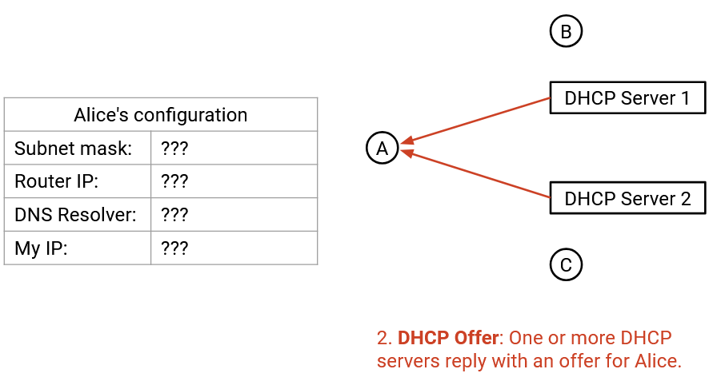 -
Client sẽ broadcast một Request message (thông điệp Yêu cầu), cho biết họ đã chấp nhận offer nào. Thông điệp này được broadcast vì client có thể nhận được nhiều offers. Bằng cách thông báo cho mọi người biết mình chấp nhận offer nào, client cho phép các offers bị từ chối được giải phóng cho các client trong tương lai.
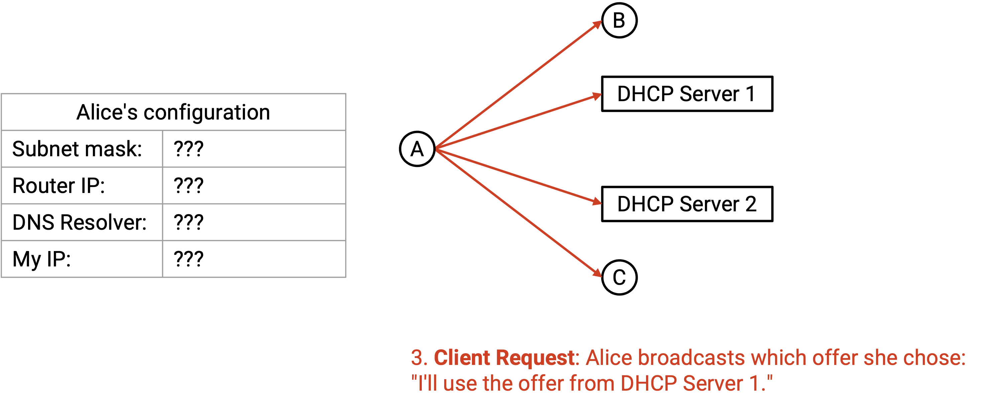 -
Server gửi một acknowledgement (thông điệp xác nhận) để xác nhận rằng yêu cầu đã được chấp thuận.
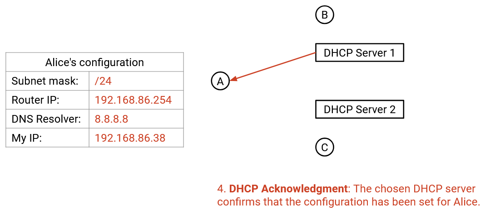
Các DHCP Server
Ở bước 2, ai có thể cung cấp cấu hình? Các DHCP servers được thêm vào mạng, và mục tiêu của chúng là cung cấp thông tin này cho các hosts mới. Trên các mạng nhỏ hơn như mạng gia đình của bạn, chính home router (router gia đình) thường đóng vai trò là DHCP server. Trong các mạng lớn hơn, có thể có một máy riêng biệt đóng vai trò là DHCP server.
Các DHCP servers cần phải ở trong cùng một mạng cục bộ với client, vì giao thức hoạt động bên trong mạng cục bộ. Trong các mạng lớn hơn, chúng ta có thể không muốn chạy mã DHCP server bên trong mọi router, vì vậy các routers cục bộ có thể chuyển tiếp các yêu cầu đến một DHCP server trung tâm từ xa, nơi thực sự chạy giao thức.
Các DHCP servers lắng nghe trên một cổng cố định, cổng UDP 67, để nhận các yêu cầu từ các máy mới. Các servers được cấu hình với tất cả các thông tin cần thiết: Chúng biết về gateway và các DNS servers, và chúng có một nhóm các IP addresses có thể sử dụng mà chúng có thể phân bổ cho người dùng mới.
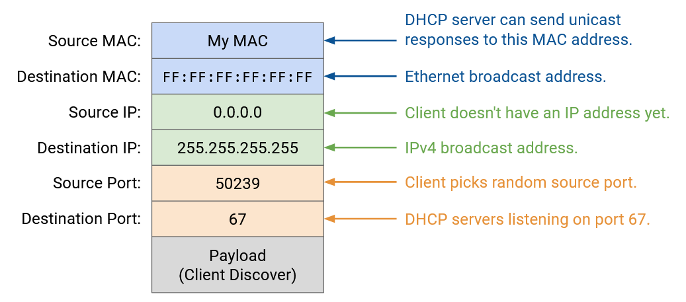Lưu ý rằng các IP addresses chỉ được lease (thuê) tạm thời cho các hosts. Việc lease chỉ có hiệu lực trong một khoảng thời gian giới hạn (ví dụ: cỡ giờ hoặc ngày). Nếu host muốn tiếp tục sử dụng địa chỉ, nó phải gia hạn lease. Nếu một IP address hiện đang được lease cho một host, DHCP server không thể cung cấp cùng một địa chỉ cho các client khác.
Triển khai DHCP
Lưu ý rằng DHCP là một giao thức ứng dụng Layer 7 (Lớp 7), và nó chạy trên UDP, bản thân UDP lại chạy trên IP.
Ở bước 1, làm thế nào client broadcast một thông điệp qua IP? Nó gửi một packet với IP đích là 255.255.255.255 (toàn bit một), đây là IPv4 broadcast address (địa chỉ quảng bá IPv4). Khi packet này được chuyển xuống Layer 2 (Lớp 2), thay vì dịch IP address này bằng ARP, IPv4 broadcast address được ánh xạ tới Ethernet broadcast address (địa chỉ quảng bá Ethernet) là FF:FF:FF:FF:FF:FF (toàn bit một). Sau đó, packet có thể được broadcast trên toàn mạng ở Layer 2.
Còn IP nguồn thì sao? Client không có IP nguồn khi bắt đầu giao thức, vì vậy nó đặt IP nguồn là 0.0.0.0.
Với IP nguồn được mã hóa cứng là 0.0.0.0 và IP đích là 255.255.255.255, client không cần biết bất cứ điều gì về mạng cục bộ để bắt đầu chạy giao thức này.
Nếu không có IP nguồn, làm thế nào các DHCP servers biết cách unicast các offers? Các DHCP servers có thể broadcast các offers, hoặc sử dụng MAC address của client để unicast các offers.
Tự động cấu hình trong IPv6
DHCP cũng tồn tại trong các mạng IPv6. Tuy nhiên, vì các địa chỉ IPv6 dài hơn, hóa ra chúng ta có thể tự cấp cho mình một địa chỉ IPv6 duy nhất được đảm bảo mà không cần ai khác quản lý một nhóm địa chỉ và cho thuê chúng. Giao thức này được gọi là Stateless Address Autoconfiguration (SLAAC) (Tự động cấu hình địa chỉ không trạng thái).
Thủ thuật ở đây là sử dụng MAC address, mà chúng ta biết là duy nhất cho mỗi máy. Như trước đây, chúng ta yêu cầu thông tin mạng cục bộ, bao gồm địa chỉ gateway, địa chỉ DNS, và đáng chú ý là prefix cho mạng cục bộ. Prefix này thường dài 64 bit. Sau đó, chúng ta sao chép các bit MAC address của chính mình vào các bit host của địa chỉ IPv6. Chúng ta có thể tự tin rằng không ai khác có địa chỉ IPv6 này: người dùng trong các mạng khác sẽ có một prefix khác, và không ai khác trong mạng (hoặc bất kỳ nơi nào khác) sẽ có cùng các bit MAC address.
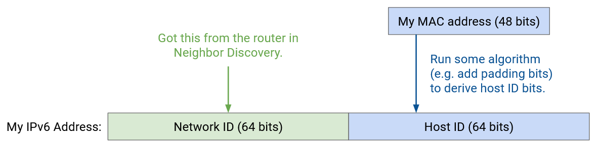Để có được thông tin mạng cục bộ, chúng ta có thể mở rộng Neighbor Discovery protocol (giao thức Khám phá Láng giềng) (phiên bản IPv6 của ARP). Router Solicitation message (thông điệp Yêu cầu Router) cho phép người dùng broadcast một yêu cầu thông tin mạng cục bộ, và Router Advertisement message (thông điệp Quảng bá Router) cho phép các routers trả lời bằng thông tin đó.
SLAAC có thêm các cơ chế để phát hiện các địa chỉ trùng lặp, phòng trường hợp cần thiết.
NAT: Network Address Translation (Chuyển đổi địa chỉ mạng)
Động cơ: Cạn kiệt địa chỉ IPv4
Hãy nhớ rằng chúng ta chỉ có $$2^{32}$$ địa chỉ IPv4 khác nhau, con số này không đủ để gán cho mọi host (máy chủ/máy trạm) trên Internet. Chúng ta đã thấy rằng IPv6 là một giải pháp mạnh mẽ cho vấn đề cạn kiệt địa chỉ IPv4, nhưng việc triển khai IPv6 diễn ra khá chậm.
Trong thời gian chờ đợi, để tiết kiệm địa chỉ, IANA đã phân bổ các dải địa chỉ IP riêng (private IP addresses) theo chuẩn RFC 1918, có thể được sử dụng bởi bất kỳ mạng nào không yêu cầu địa chỉ Internet công cộng: 192.168.0.0/16, 10.0.0.0/8 và 172.16.0.0/12. Thực tế, các địa chỉ này thường được dùng trong mạng gia đình, giúp thiết bị cá nhân của bạn không cần một địa chỉ IP công cộng duy nhất. Tuy nhiên, bạn vẫn cần truy cập Internet, vậy làm thế nào để sử dụng địa chỉ IP riêng?
NAT: Khái niệm
Trong NAT, mục tiêu là sử dụng một địa chỉ IP công cộng duy nhất để đại diện cho nhiều host trong mạng nội bộ. Mấu chốt là gateway router (bộ định tuyến cổng) sẽ chuyển đổi địa chỉ IP riêng thành địa chỉ công cộng trước khi gửi gói tin ra ngoài. Sau đó, router sẽ chuyển đổi địa chỉ công cộng trở lại thành địa chỉ riêng cho các gói tin phản hồi đi vào.
Alice, Bob và Chuck cùng làm việc tại tiệm lốp xe của Joe. Họ có các địa chỉ IP riêng A, B và C, vốn không thể sử dụng trực tiếp trên Internet vì không duy nhất. Thay vào đó, tất cả mọi người trong tiệm phải chia sẻ một địa chỉ IP công cộng duy nhất – đây là địa chỉ duy nhất và hợp lệ trên Internet mà họ có.

Alice muốn gửi một thông điệp đến máy chủ công cộng bên ngoài có địa chỉ IP công cộng S. Cô gửi một packet (gói tin) với thông tin: "From: A, To: S". Nếu gửi gói tin này trực tiếp, S sẽ không thể phản hồi vì A là địa chỉ IP riêng.

Thay vào đó, khi gói tin đến gateway router, nó sẽ ghi lại tiêu đề thành "From: R1, To: S". Router cũng ghi chú: Nếu nhận được phản hồi từ S, hãy gửi cho A.

Khi S nhận được gói tin, nó sẽ phản hồi đến địa chỉ công cộng R1: "From: S, To: R1". Khi R1 nhận được phản hồi, nó kiểm tra ghi chú và sửa tiêu đề thành "From: S, To: A", rồi gửi gói tin về cho A.

Nhờ vậy, Alice, Bob và Chuck đều có thể gửi gói tin ra ngoài. Khi router nhận gói tin, nó phải ghi nhớ ánh xạ giữa đích bên ngoài và nguồn bên trong ("B vừa gửi gói tin đến N, nên mọi phản hồi từ N phải gửi lại cho B").
Vấn đề phát sinh nếu Alice và Bob cùng muốn giao tiếp với S.

Khi phản hồi từ S đến, router sẽ không biết nên gửi cho A hay B.

Chúng ta có thể giải quyết bằng cách sử dụng logical ports (cổng logic) từ Layer 4. Kết nối của Alice: "From: A, Port 50000, To: S, Port 80". Router chuyển thành "From: R1, Port 50000, To: S, Port 80" và ghi chú: nếu nhận phản hồi từ S, Port 80, đến R1, Port 50000 thì gửi cho A.

Bob có thể tạo kết nối riêng: "From: B, Port 60000, To: S, Port 80". Router chuyển thành "From: R1, Port 60000, To: S, Port 80" và ghi chú: nếu nhận phản hồi từ S, Port 80, đến R1, Port 60000 thì gửi cho B.

Nói chung, router sẽ theo dõi kết nối bằng bộ 5 thông tin (5-tuple): địa chỉ IP nguồn, địa chỉ IP đích, giao thức, source port (cổng nguồn) và destination port (cổng đích). Khi nhận gói tin đi ra, router đổi IP nguồn riêng thành IP nguồn công cộng và lưu bộ 5-tuple. Khi nhận gói tin đi vào, router tra bảng để tìm kết nối tương ứng và gửi đến client phù hợp (với IP riêng của họ).

Thay đổi số cổng của Client
Vấn đề cuối cùng: nếu Alice và Bob cùng chọn cùng một số cổng (ví dụ Port 50000)?

Khi đó, router sẽ lưu hai kết nối: (A Port 50000 → S Port 80) và (B Port 50000 → S Port 80). Nếu nhận gói tin "From: S, Port 80, To: R1, Port 50000", sẽ không rõ gói tin thuộc kết nối của A hay B.

Giải pháp là cho phép router thay đổi cả số cổng. Khi Bob gửi "From: B, Port 50000, To: S, Port 80", router nhận thấy Port 50000 đã được dùng cho kết nối đến S Port 80, nên tạo một fake port (cổng giả) cho Bob, ví dụ 60000, và chuyển thành "From: R1, Port 60000, To: S, Port 80".
Router lưu: (B Port 50000, giả thành 60000, → S Port 80).

Khi nhận gói tin "From: S, Port 80, To: R1, Port 50000" → của Alice; còn "From: S, Port 80, To: R1, Port 60000" → của Bob.

Bob không hề biết router đã đổi số cổng. Khi router gửi lại gói tin cho Bob, nó đổi cổng giả về cổng gốc.
NAT: Triển khai
Khi home router (router gia đình) kết nối ISP lần đầu, nó có thể chạy DHCP để nhận địa chỉ IP công cộng. ISP cấp một địa chỉ IP duy nhất cho home router, và tất cả thiết bị trong mạng gia đình sẽ chia sẻ địa chỉ này.

Chế độ NAT vừa mô tả gọi là Port Address Translation (PAT) – cho phép tạo fake port. PAT yêu cầu router hiểu Layer 4 để phân tích gói tin, theo dõi kết nối và sửa tiêu đề.
PAT là chế độ NAT phức tạp và phổ biến nhất, nhưng cũng có chế độ NAT đơn giản hơn cho ánh xạ một-một. Ví dụ: 10.0.0.1 (riêng) ↔ 42.0.2.1 (công cộng).

NAT được dùng ở đâu?
NAT làm tăng độ phức tạp của packet forwarding (chuyển tiếp gói tin) vì router phải phân tích cả tiêu đề Layer 4, sửa tiêu đề Layer 3 và Layer 4, và duy trì bảng trạng thái kết nối. Điều này tiêu tốn CPU và bộ nhớ.
Vì vậy, NAT thường được triển khai ở rìa mạng (edge), ví dụ trên home router (router gia đình), để giới hạn số lượng luồng (flow) đi qua router. Chạy NAT trên router gia đình là hợp lý vì thường không có quá nhiều thiết bị trong nhà gửi kết nối ra ngoài. Ngược lại, chạy NAT trên các datacenter router (router trung tâm dữ liệu) hiệu năng cao sẽ là ý tưởng tồi.
Trong thực tế, NAT quy mô nhỏ được sử dụng trong hầu hết các mạng cá nhân (gia đình/văn phòng) cho IPv4, ngay cả ngày nay. Khi địa chỉ IPv4 cạn kiệt, các ISP (nhà cung cấp dịch vụ Internet) không thể cấp một địa chỉ công cộng cho mỗi khách hàng (tức mỗi router gia đình). Kết quả là, chính mạng của ISP cũng phải chạy một phiên bản NAT phức tạp hơn gọi là Carrier Grade NAT (CGNAT). Phiên bản này được triển khai sâu hơn trong mạng và yêu cầu router theo dõi nhiều kết nối hơn rất nhiều.
Lưu ý rằng chúng ta thường không dùng NAT cho IPv6, vì IPv6 có đủ địa chỉ để gán một địa chỉ công cộng duy nhất cho mọi máy tính trên thế giới.
Kết nối đến (Inbound Connections)
Cho đến giờ, chúng ta giả định rằng các kết nối luôn được khởi tạo từ phía client (máy khách) có địa chỉ IP riêng. Nói cách khác, gói tin đầu tiên luôn đi ra ngoài, từ client đến server. Điều này phù hợp với cách hầu hết các mạng gia đình hoạt động: khi bạn tải một trang web, bạn là bên khởi tạo kết nối. Thông thường, không ai từ bên ngoài cố gắng kết nối đến bạn.
Nhưng nếu bạn đang chạy một server và muốn người bên ngoài có thể khởi tạo kết nối đến server này thì sao? Người dùng bên ngoài không thể gửi gói tin trực tiếp đến địa chỉ IP riêng. Họ có thể gửi đến địa chỉ IP công cộng của router, nhưng nếu router nhận được gói tin như "From: outside user, To: R1, Port 28", router sẽ không biết phải chuyển tiếp đến client riêng nào. Đây là gói tin đầu tiên của một kết nối mới, nên bảng NAT của router chưa có thông tin về kết nối này.

Để cho phép kết nối đến, router chạy NAT cần có port mapping table (bảng ánh xạ cổng). Ví dụ, Alice (bên trong mạng, chỉ có IP riêng) thông báo cho router: "Tôi sẽ chạy một server mới và lắng nghe trên Port 28". Khi đó, nếu router thấy gói tin từ bên ngoài gửi đến R1, Port 28, nó sẽ biết cần chuyển tiếp gói tin này cho Alice.
Các mục trong bảng ánh xạ cổng có thể cần cấu hình thủ công (ví dụ: Alice cấu hình router bằng tay). Các giao thức động như UPnP (Universal Plug-n-Play) và NAT-PMP (NAT Port Mapping Protocol) cho phép cấu hình cổng mở một cách tự động. Các giao thức này đôi khi được dùng bởi ứng dụng như trò chơi trực tuyến, nơi cần kết nối đến từ bên ngoài.
Tác động bảo mật của NAT (Security Implications of NAT)
NAT phá vỡ End-to-end Principle (nguyên tắc đầu-cuối). Trước đây, với Layer 3, bất kỳ ai trên Internet cũng có thể kết nối đến bất kỳ ai khác. Tuy nhiên, vì NAT không cho phép kết nối đến theo mặc định, người dùng trong mạng gia đình (chỉ có IP riêng và chia sẻ IP công cộng) sẽ không thể được truy cập trực tiếp. Họ phải cấu hình router trước khi có thể nhận gói tin đến.
NAT có đặc điểm là chặn kết nối đến theo mặc định. Điều này có thể được xem như một tính năng bảo mật, dù thực chất chỉ là hệ quả phụ chứ không phải mục tiêu thiết kế. NAT khiến các kết nối đến bị chặn, điều này có thể hữu ích để ngăn kẻ tấn công kết nối vào các host bên trong mạng. Hành vi này khá giống với firewall (tường lửa), vốn cũng thường chặn kết nối đến theo mặc định. Tuy nhiên, đây chỉ là sự trùng hợp, nên NAT không thực sự thực thi một chính sách bảo mật có nguyên tắc, và không nên được coi là một biện pháp phòng thủ tuyệt đối.
NAT cũng có tác dụng phụ là giúp bảo vệ quyền riêng tư của client. Một lần nữa, đây không phải là tính năng bảo mật được thiết kế chủ đích. Vì router thay đổi địa chỉ IP của client, khi server nhận gói tin, nó không biết chính xác ai là người gửi ban đầu (có thể là Alice, Bob hoặc Chuck).
Ngược lại, nếu không dùng NAT, server có thể biết chính xác danh tính của người gửi. Ngoài ra, nếu không dùng NAT và dùng IPv6, server thậm chí có thể biết chính xác máy tính mà người gửi đang dùng, vì địa chỉ IPv6 đôi khi được tự động cấu hình dựa trên địa chỉ MAC (chép một phần địa chỉ MAC vào địa chỉ IP). Nếu dùng IPv6 và vẫn muốn bảo vệ quyền riêng tư của client, có thể dùng các giải pháp khác như IPv6 temporary/privacy addresses (địa chỉ tạm thời/riêng tư).
TLS: Luồng byte an toàn (Secure Bytestreams)
Luồng byte an toàn (Secure Bytestreams)
TCP (Transmission Control Protocol – Giao thức điều khiển truyền) tự thân nó không an toàn trước các kẻ tấn công trên mạng. Một ai đó trong mạng (ví dụ: một router độc hại, hoặc kẻ tấn công nghe lén gói tin trên đường truyền) có thể đọc hoặc thậm chí sửa đổi các gói tin TCP của bạn khi chúng đang được truyền.
Ngoài ra, với TCP, bạn có thể kết nối tới kẻ tấn công thay vì máy chủ thật. Giả sử bạn muốn kết nối tới trang web ngân hàng, và bạn thực hiện tra cứu DNS (Domain Name System – Hệ thống tên miền) cho www.bank.com. Kẻ tấn công (ví dụ: ai đó đã xâm nhập vào bộ phân giải DNS resolver hoặc một router) thay đổi phản hồi DNS để ánh xạ www.bank.com tới địa chỉ IP của kẻ tấn công, 6.6.6.6. Bây giờ, khi bạn thiết lập kết nối TCP tới trang web ngân hàng, bạn thực chất đang nói chuyện với kẻ tấn công. Bạn có thể sẽ gửi mật khẩu ngân hàng của mình cho hắn!
Để giải quyết các vấn đề bảo mật này, chúng ta thêm một giao thức mới, Transport Layer Security (TLS) (Bảo mật tầng vận chuyển), chạy trên TCP.
TLS có thể được xem như một giao thức tầng 4.5, nằm giữa TCP và các giao thức ứng dụng như HTTP. (Chúng ta dùng số “lạ” 4.5 vì các tầng 5 và 6 đã lỗi thời và không liên quan đến bảo mật.) TLS dựa trên trừu tượng hóa luồng byte (bytestream abstraction) của TCP, nên nó không quan tâm đến từng gói tin riêng lẻ hoặc việc mất/sắp xếp lại gói tin. TLS cung cấp cho ứng dụng cùng một trừu tượng hóa luồng byte như TCP, nhưng luồng byte này giờ đã an toàn trước các kẻ tấn công mạng. Đây là lý do tại sao HTTP và HTTPS về mặt ngữ nghĩa là các giao thức giống hệt nhau. Điểm khác biệt duy nhất là HTTPS chạy trên luồng byte an toàn của TLS-over-TCP, trong khi HTTP chạy trên TCP thuần túy không có TLS.

Để phân biệt giữa HTTPS và HTTP, chúng ta dùng Port 80 cho kết nối HTTP, và Port 443 cho kết nối HTTPS. Máy chủ có thể buộc người dùng sử dụng HTTPS bằng cách trả lời tất cả yêu cầu ở Port 80 bằng một lệnh chuyển hướng (redirect) sang Port 443.
Bắt tay TLS (TLS Handshake)
Ở mức khái quát, TLS sử dụng mật mã học (cryptography) để mã hóa các thông điệp được gửi qua luồng byte. TLS cũng sử dụng các giao thức mật mã khác (message authentication codes – mã xác thực thông điệp) để ngăn kẻ tấn công thay đổi thông điệp khi chúng được gửi qua mạng.
Để mã hóa lưu lượng, TLS phải bắt đầu bằng một quá trình bắt tay bổ sung (handshake) để trao đổi khóa và xác minh danh tính của máy chủ (ví dụ: ngân hàng thật, chứ không phải kẻ giả mạo ngân hàng).
Vì TLS được xây dựng trên TCP, nên quá trình bắt tay ba bước của TCP (TCP three-way handshake) diễn ra trước như bình thường. Điều này tạo ra một luồng byte (chưa an toàn), cho phép tất cả các thông điệp tiếp theo, bao gồm cả bắt tay TLS, được truyền mà không cần quan tâm đến từng gói tin riêng lẻ.
Quá trình bắt tay TLS diễn ra như sau:

-
Client và server trao đổi thông điệp hello. Các thông điệp hello chứa các số ngẫu nhiên, đảm bảo rằng mỗi lần bắt tay sẽ tạo ra các khóa bí mật khác nhau. (Sẽ rất nguy hiểm nếu chúng ta dùng cùng một khóa mỗi lần, và kẻ tấn công đánh cắp được khóa đó.) Các thông điệp hello cũng cho phép client và server thống nhất về các giao thức mật mã cụ thể sẽ sử dụng. Client hello liệt kê tất cả các thuật toán mật mã mà client hỗ trợ, và server hello chọn một thuật toán để sử dụng.
-
Server gửi một chứng chỉ xác thực (certificate of authenticity). Điều này cho phép client xác minh rằng nó đang giao tiếp với máy chủ thật, chứ không phải kẻ giả mạo. Cách client thực sự xác minh chứng chỉ này có một số chi tiết phức tạp, nhưng chúng ta sẽ không bàn sâu ở đây.
-
Client và server tạo ra một bí mật (secret) mà chỉ hai bên biết. Vì luồng byte ở thời điểm này vẫn chưa an toàn, họ cần một giao thức mật mã cho phép chia sẻ bí mật qua kênh không an toàn. Chúng ta sẽ không đi sâu vào chi tiết, nhưng nếu bạn quen với mã hóa khóa công khai RSA (ví dụ: từ môn CS 70 tại UC Berkeley), thì đây là một thuật toán mật mã có thể dùng. Client mã hóa bí mật bằng khóa công khai của server và gửi nó cho server. Chỉ server mới biết khóa riêng tương ứng và có thể giải mã thông điệp để biết bí mật.
-
Client và server tạo ra các khóa bí mật (secret keys) dựa trên bí mật đã chia sẻ và các giá trị ngẫu nhiên từ thông điệp hello. Việc sử dụng bí mật đảm bảo rằng kẻ tấn công không thể biết được các khóa bí mật. Việc sử dụng giá trị ngẫu nhiên đảm bảo rằng mỗi lần bắt tay sẽ tạo ra một khóa khác nhau. Quá trình tạo khóa này được thực hiện cục bộ và độc lập bởi cả client và server. Các khóa bí mật này không bao giờ được gửi qua mạng, nên kẻ tấn công không có cơ hội biết được chúng.
-
Client và server trao đổi một số thông điệp xác nhận (acknowledgements) để đảm bảo rằng họ đã tạo ra cùng một bí mật, và không ai đã can thiệp vào các thông điệp được gửi qua mạng cho đến thời điểm này (vì luồng byte vẫn chưa an toàn).
Tại thời điểm này, quá trình bắt tay đã hoàn tất, và tất cả các thông điệp sau đó sẽ được mã hóa bằng khóa bí mật (các mã xác thực thông điệp cũng được sử dụng để ngăn việc giả mạo). Chúng ta đã thiết lập một luồng byte an toàn trên kết nối TCP, và các ứng dụng có thể trao đổi dữ liệu trên luồng byte an toàn này.
Kết nối End-to-End
Động lực
Trong phần này, chúng ta sẽ đi qua từng bước về những gì xảy ra khi chúng ta bật máy tính, cắm nó vào mạng Ethernet, và gõ www.berkeley.edu vào trình duyệt web. Trong quá trình đó, chúng ta sẽ thấy cách tất cả các thành phần khác nhau của mạng làm việc cùng nhau để xử lý yêu cầu của người dùng.
Chúng ta sẽ giả định rằng chúng ta không cần phải khởi động Internet từ đầu. Ví dụ, các routers đã và đang chạy các giao thức định tuyến và đã điền vào forwarding tables của chúng một cách tương ứng.

Bước 1: DHCP
Chúng ta bật máy tính và cắm nó vào một mạng Ethernet. Chúng ta chưa có bất kỳ thông tin nào về mạng, vì vậy chúng ta broadcast một yêu cầu DHCP (Giao thức Cấu hình Máy chủ Động).
Chúng ta sẽ giả định router gia đình là DHCP server (máy chủ DHCP), điều này phổ biến trong các mạng gia đình. Router/server sẽ unicast một gói tin đề nghị (offer) trở lại cho chúng ta. Gói tin đề nghị này chứa thông tin về mạng: subnet mask (mặt nạ mạng con), địa chỉ IP của default gateway (cổng mặc định), và địa chỉ IP của DNS server (máy chủ DNS). Gói tin đề nghị cũng cấp cho chúng ta một địa chỉ IP mà chúng ta có thể sử dụng.
Để hoàn tất giao thức DHCP, chúng ta gửi một thông điệp yêu cầu (request) xác nhận rằng chúng ta muốn sử dụng cấu hình đã được đề nghị, và router/server phản hồi bằng một thông điệp xác nhận (acknowledgement).

Bước 2: Tìm Router ở Lớp 2
Từ DHCP, chúng ta đã biết được địa chỉ IP của router, và forwarding table của chúng ta bây giờ cho biết rằng tất cả các packets không thuộc local network sẽ được chuyển tiếp đến router này. Chúng ta sắp sửa gửi một số packets đến DNS server (để tra cứu địa chỉ IP của www.berkeley.edu), và đến chính server Berkeley, cả hai đều có thể không thuộc local network.
Tuy nhiên, trước khi chúng ta có thể chuyển tiếp các IP packets đến router, chúng ta cần tìm ra MAC address Layer 2 của router, để chúng ta có thể gửi packet đến router bên trong local network.
Đầu tiên, chúng ta có thể xác minh rằng địa chỉ IP của router, 192.168.1.1, thuộc về subnet cục bộ, 192.168.1.2/24. Điều này cho chúng ta biết rằng router nằm trong local network, và bằng cách gửi một packet Ethernet đến MAC address của router, chúng ta sẽ đến được router.
Để tìm MAC address của router, chúng ta broadcast một yêu cầu ARP, hỏi MAC address của 192.168.1.1 (địa chỉ IP của router). Router nghe thấy yêu cầu này và trả lời, "Tôi là 192.168.1.1, và MAC address của tôi là 01:ab:cd:ef:42:01."
Bây giờ chúng ta có thể lưu trữ ánh xạ IP-tới-MAC này, và chúng ta đã biết MAC address của router. Miễn là mục nhập này còn trong bộ đệm, chúng ta sẽ không phải thực hiện lại cùng một yêu cầu ARP. Tất cả các yêu cầu trong tương lai ra Internet bên ngoài đều có thể được chuyển tiếp đến MAC address của router.

Bước 3: Tra cứu DNS
Tiếp theo, chúng ta cần tra cứu địa chỉ IP của www.berkeley.edu. Tất cả điều này được thực hiện trong hệ điều hành, sau khi mã của trình duyệt gọi một hàm như getaddrinfo để kích hoạt việc tra cứu DNS (Hệ thống Tên miền).
Từ DHCP, chúng ta đã biết địa chỉ IP của DNS server, 8.8.8.8. Chúng ta cũng biết rằng chúng ta đang ở trong subnet 192.168.1.2/24. DNS server không nằm trong local network của chúng ta, vì vậy chúng ta cần chuyển tiếp DNS packet (gói tin DNS) đến router.
Bây giờ chúng ta có thể xây dựng DNS packet yêu cầu của mình, từ trên xuống dưới.
Layer 7 (Lớp 7): Trong phần Question, chúng ta thêm một DNS record (bản ghi DNS) yêu cầu A record (bản ghi A) với địa chỉ IP của www.berkeley.edu. Chúng ta thêm header DNS với ID, số lượng bản ghi, v.v.
Layer 4 (Lớp 4): DNS chạy trên UDP (Giao thức Gói dữ liệu Người dùng). Chúng ta chọn một source port (cổng nguồn) ngẫu nhiên bất kỳ, vì chúng ta là client. Chúng ta chọn Port 53 cho destination port (cổng đích), vì đây là nơi các resolvers và name servers lắng nghe các truy vấn DNS.
Layer 3: Source IP là IP của chính chúng ta, được gán bởi DHCP. Destination IP là 8.8.8.8, địa chỉ IP của DNS server, mà chúng ta đã biết từ DHCP.
Layer 2: Source MAC là MAC address của chúng ta, được ghi sẵn trong phần cứng. Destination MAC là MAC address của router (hop tiếp theo), mà chúng ta đã biết từ ARP.
Với packet được xây dựng hoàn chỉnh, chúng ta có thể gửi các bit đi trên dây (Lớp 1 - Layer 1).

Khi packet đến router, nếu mạng đang sử dụng NAT (Network Address Translation - Biên dịch Địa chỉ Mạng), router có thể viết lại các headers UDP/IP để dịch địa chỉ IP riêng của chúng ta thành địa chỉ IP công cộng. Tuy nhiên, với tư cách là end host, chúng ta không cần phải lo lắng về NAT. Router sẽ thực hiện tất cả việc biên dịch cho chúng ta, tạo cho chúng ta ảo giác rằng chúng ta có thể sử dụng địa chỉ IP của riêng mình (từ DHCP).
Khi packet của chúng ta đến recursive resolver (bộ phân giải đệ quy) tại 8.8.8.8, nếu resolver chưa có câu trả lời của chúng ta trong bộ đệm, nó có thể cần thực hiện một số tra cứu bổ sung và hỏi các authoritative name servers (máy chủ tên miền có thẩm quyền) để lấy các bản ghi. Cuối cùng, recursive resolver tìm thấy câu trả lời và gửi A record trở lại cho chúng ta. Bây giờ chúng ta đã có địa chỉ IP của www.berkeley.edu.

Bước 4: Kết nối đến Trang web
Bây giờ chúng ta đã có địa chỉ IP của www.berkeley.edu, chúng ta có thể gửi packets đến Berkeley. Chúng ta đang sử dụng trình duyệt web, vì vậy mục tiêu của chúng ta là thực hiện một yêu cầu HTTP (Giao thức Truyền tải Siêu văn bản) đến server này.
HTTP chạy trên TCP (Giao thức Điều khiển Truyền vận), vì vậy trước tiên chúng ta phải thực hiện một TCP handshake (bắt tay TCP) để mở một kết nối với server Berkeley. Trình duyệt sẽ gọi một hàm như connect trên một socket (giao diện lập trình mạng) cụ thể để mở kết nối này, và hệ điều hành (nơi TCP đang chạy) sẽ thực hiện handshake và chuyển packets đến và đi từ trình duyệt.
TCP handshake được thực hiện: Chúng ta gửi một gói SYN, Berkeley gửi một gói SYN-ACK, và chúng ta gửi một gói ACK. Bây giờ chúng ta có một bytestream (luồng byte) giữa máy tính của chúng ta và server Berkeley.

Bây giờ, chúng ta có thể xây dựng packet HTTP của mình, từ trên xuống dưới.
Layer 7: Phương thức HTTP là GET. Tài nguyên chúng ta muốn là / (trang chủ). Phiên bản là HTTP/1.1.
Layer 4: HTTP chạy trên TCP. Trình duyệt có thể chọn bất kỳ source port nào, vì nó là client. Nhìn chung, port này có thể được ứng dụng chỉ định thủ công, hoặc ứng dụng có thể chỉ định "Port 0," là cách viết tắt để yêu cầu hệ điều hành chọn một ephemeral port (cổng tạm thời) ngẫu nhiên hiện không được sử dụng. (Ngoài lề, nghĩ lại về NAT, việc cho phép các ứng dụng chỉ định ports thủ công là lý do tại sao hai người dùng có thể chọn cùng một source port.) Destination port là 80, số port cố định cho HTTP.
Layer 3: Source IP là IP của chính chúng ta, được gán bởi DHCP. Destination IP là 141.193.213.21, địa chỉ IP của www.berkeley.edu đã được trả về từ truy vấn DNS của chúng ta trước đó.
Layer 2: Điều này giống như DNS packet của chúng ta trước đó. Source MAC là của chúng ta (được ghi sẵn trong phần cứng), và destination MAC là của router (được phát hiện và lưu trong bộ đệm từ ARP).

HTTP response (phản hồi HTTP) trả về với status code (mã trạng thái) 200 OK, và nội dung của phản hồi có mã HTML (Ngôn ngữ Đánh dấu Siêu văn bản) của trang web. Trình duyệt gọi hàm read trên socket để lấy các byte của HTTP payload (phần dữ liệu), cùng với status code và phản hồi, và xử lý chúng một cách tương ứng.
Trong bytestream, HTTP có thể thêm một số dấu phân cách như ký tự xuống dòng để biểu thị sự kết thúc của một yêu cầu hoặc phản hồi. Ngoài ra, các header HTTP như Content-Length có thể chỉ định độ dài của payload. Điều này cũng cho phép trình duyệt cấp phát đủ bộ nhớ để nhận phản hồi.
HTTP response trả về có thể kích hoạt thêm các yêu cầu khác. Nếu HTML trong phản hồi có cú pháp như  , điều này báo cho trình duyệt thực hiện một yêu cầu HTTP khác để lấy tài nguyên /logo.png. Hoặc, người dùng có thể nhấp vào một liên kết trên trang web như www.berkeley.edu/about.html, điều này cũng sẽ kích hoạt một yêu cầu HTTP khác đến cùng một server.
, điều này báo cho trình duyệt thực hiện một yêu cầu HTTP khác để lấy tài nguyên /logo.png. Hoặc, người dùng có thể nhấp vào một liên kết trên trang web như www.berkeley.edu/about.html, điều này cũng sẽ kích hoạt một yêu cầu HTTP khác đến cùng một server.

Hãy nhớ lại rằng nhiều yêu cầu HTTP đến cùng một server có thể được pipelined (truyền theo đường ống) qua cùng một kết nối TCP để tăng hiệu quả, vì vậy chúng ta có thể giữ kết nối TCP mở và tiếp tục sử dụng nó cho các yêu cầu và phản hồi HTTP tiếp theo.
Cuối cùng, sau một vài lần pipelining, client hoặc server chọn đóng kết nối. Quá trình handshake ngắt kết nối thông thường xảy ra, trong đó mỗi bên gửi một gói FIN, và cả hai packets FIN đều được xác nhận (acked). Chúng ta đã hoàn tất!

Lưu ý rằng các yêu cầu/phản hồi HTTP không nhất thiết phải chứa trong một packet duy nhất. HTTP được xây dựng trên TCP bytestream, vì vậy một yêu cầu hoặc phản hồi HTTP duy nhất có thể bị chia thành nhiều packets TCP/IP, trong đó mỗi packet có cùng các headers ở Layers 1-3, và các headers Layer 4 khác nhau ở số thứ tự. Chỉ có một header duy nhất cho toàn bộ yêu cầu/phản hồi HTTP, ngay cả khi yêu cầu/phản hồi đó được chia trên nhiều packets. Với HTTP, không còn mối tương quan một-một từ một yêu cầu/phản hồi đến một packet.
Sockets
Nếu bạn là người dùng truy cập một trang web trong trình duyệt, bạn không cần phải viết bất kỳ mã nào để chạy ứng dụng (HTTP) qua Internet. Tuy nhiên, nếu bạn là một lập trình viên viết ứng dụng của riêng mình, bạn có thể cần phải viết một số mã để tương tác với mạng.
Khái niệm trừu tượng socket cung cấp cho các lập trình viên một cách thuận tiện để tương tác với mạng. Khái niệm trừu tượng socket hoàn toàn tồn tại trong phần mềm, và có năm hoạt động cơ bản mà các lập trình viên có thể thực hiện:
Chúng ta có thể create (tạo) một socket mới, tương ứng với một kết nối mới. Trong một ngôn ngữ hướng đối tượng như Java, đây có thể là một lệnh gọi hàm tạo (constructor call).
Chúng ta có thể gọi connect (kết nối), để khởi tạo một kết nối TCP đến một máy ở xa. Điều này hữu ích nếu chúng ta là client trong một kết nối client-server.
Chúng ta có thể gọi listen (lắng nghe) trên một port cụ thể. Điều này không bắt đầu một kết nối, nhưng cho phép những người khác khởi tạo một kết nối với chúng ta trên port đã chỉ định.
Khi kết nối đã mở, chúng ta có thể gọi write (ghi) để gửi một số byte trên kết nối. Chúng ta cũng có thể gọi read (đọc), nhận một đối số N, để đọc N byte từ kết nối.
Khái niệm trừu tượng socket này cung cấp cho các lập trình viên một cách để viết các ứng dụng mà không cần suy nghĩ về các khái niệm trừu tượng ở cấp thấp hơn như TCP, IP, hay Ethernet.
Từ góc độ hệ điều hành, mỗi socket được liên kết với một số port Layer 4. Tất cả các packets đến và đi từ một socket duy nhất đều có cùng một số port, và hệ điều hành có thể sử dụng số port để phân kênh và gửi packets đến đúng socket.
Các Lớp trong Hệ điều hành
Trong phần cứng, Layers 1 và 2 được triển khai trên Network Interface Card (NIC) (Card Giao diện Mạng) của máy tính bạn. Layers 3 và 4 được triển khai trong chồng giao thức mạng (networking stack) trong hệ điều hành. Các ứng dụng Layer 7 được triển khai trong phần mềm. Lợi ích của việc đặt Layers 3 và 4 trong HĐH là các ứng dụng không phải lo lắng về việc triển khai lại chúng mỗi lần.
Với sự phân công lao động này, ứng dụng chỉ cần nghĩ về dữ liệu. NIC chỉ cần nghĩ về các packets. Chồng giao thức mạng trong HĐH dịch giữa các kết nối và các packets.
Xem các Gói tin
Các công cụ như tshark và wireshark tồn tại nếu bạn muốn xem các packets được gửi qua mạng. Những công cụ này hữu ích khi gỡ lỗi phần mạng trong mã của bạn.
Trong trình duyệt, bạn cũng có thể sử dụng tab Network của bảng điều khiển inspect element để xem dữ liệu được gửi và nhận.
Nếu bạn thực sự xem các packets thô được gửi qua mạng, bạn sẽ thấy một số phức tạp trong thế giới thực mà chúng ta đã không đề cập trong phần hướng dẫn đầu cuối-đến-đầu cuối của mình. Ví dụ, các packets có thể được mã hóa và gửi qua TLS (Transport Layer Security - An ninh Tầng Giao vận). Ngoài ra, nếu chúng ta đang sử dụng HTTP/3.0, các packets có thể được gửi qua QUIC (biến thể UDP được tối ưu hóa cho HTTP) thay vì TCP.
Nhìn lại về Phân tầng
Bức tranh đầu cuối-đến-đầu cuối đầy đủ cho phép chúng ta thấy tại sao phân tầng là một nguyên tắc hữu ích để xây dựng mạng. Chúng ta đã có thể giải quyết các vấn đề cụ thể ở một lớp duy nhất, mà không cần suy nghĩ về tất cả các lớp cùng một lúc.
Thực tế, chúng ta hoàn toàn không thảo luận về Layer 1 trong lớp học này. Chúng ta đã không nói về kỹ thuật điện hay vật lý cần thiết để gửi tín hiệu qua một sợi dây. Tuy nhiên, chúng ta vẫn có thể xây dựng các lớp khác trên Layer 1, mà không cần biết chính xác Layer 1 hoạt động như thế nào.
Trong lớp học này, chúng ta đã thảo luận HTTP là giao thức Layer 7 chủ yếu, nhưng HTTP là một giao thức tương đối đơn giản. Có thể nhiều ứng dụng muốn xây dựng cùng một chức năng phức tạp trên HTTP, nhưng họ không muốn mỗi người phải tự viết mã cho chức năng đó một cách độc lập. Để hỗ trợ điều này, chúng ta thực sự có thể xây dựng thêm các giao thức trên HTTP, để các lập trình viên không phải lúc nào cũng bắt đầu từ đầu với HTTP.
Một ví dụ về một giao thức trên Layer 7 là một thư viện remote procedure call (RPC) (gọi thủ tục từ xa). Điều này cho phép một lập trình viên viết một số mã, trong đó một số hàm thực sự thực thi trên một máy tính khác ở nơi khác trong mạng. Sẽ rất phiền phức nếu mọi người phải tự viết RPC trên HTTP từ đầu, vì vậy thay vào đó, các thư viện như Apache Thrift và gRPC tồn tại để trừu tượng hóa thêm nhiều chi tiết hơn nữa khỏi lập trình viên.

Đây là một ví dụ về một số mã mạng mà một lập trình viên có thể viết. Nó lập trình một client để nói xin chào với một server ở xa.
Lưu ý rằng tất cả các giao thức mạng mà chúng ta đã thảo luận đều hoàn toàn bị ẩn đằng sau hai dòng lệnh gọi đến các thư viện mạng. Lập trình viên không cần phải suy nghĩ về HTTP, TCP, IP, Ethernet, ARP, DHCP, hoặc bất kỳ giao thức cấp thấp nào khác. Vẫn rất hữu ích khi biết về các giao lức này nếu chúng gặp sự cố, và việc hiểu các giao thức có thể giúp bạn tối ưu hóa mã của mình cho các giao thức cụ thể, nhưng cuối cùng, phân tầng là một công cụ trừu tượng hóa rất mạnh mẽ.
Datacenter Topology (Cấu trúc liên kết mạng của Trung tâm dữ liệu)
Datacenter là gì?
Cho đến nay, trong mô hình Internet của chúng ta, chúng ta đã thấy các end hosts (thiết bị đầu cuối) gửi các gói tin cho nhau. End host có thể là một client machine (máy khách) (ví dụ: máy tính cá nhân của bạn), hoặc một server (máy chủ) (ví dụ: YouTube). Nhưng, liệu YouTube có thực sự là một cỗ máy duy nhất trên Internet phục vụ video cho toàn thế giới không?

Thực tế, YouTube là cả một tòa nhà gồm các máy móc được kết nối với nhau, hoạt động cùng nhau để phục vụ video cho người dùng. Tất cả những cỗ máy này đều nằm trong cùng một local network (mạng cục bộ) và có thể giao tiếp với nhau để hoàn thành các yêu cầu (ví dụ: nếu video bạn yêu cầu được lưu trữ trên nhiều máy khác nhau).

Hãy nhớ lại rằng trong mô hình mạng-của-các-mạng của Internet, mỗi nhà khai thác đều có quyền tự do quản lý local network của mình theo cách họ muốn. Trong phần này, chúng ta sẽ tập trung vào các local networks dành riêng cho việc kết nối các servers bên trong một Datacenter (Trung tâm dữ liệu) (trái ngược với việc kết nối người dùng như máy tính cá nhân của bạn). Chúng ta sẽ nói về những thách thức riêng biệt của các local networks này, và các giải pháp chuyên biệt cho các vấn đề mạng (ví dụ: congestion control (kiểm soát tắc nghẽn) và routing (định tuyến)) được thiết kế đặc biệt để hoạt động tốt trong bối cảnh Datacenter.
Trong thực tế, một Datacenter được đặt tại một địa điểm vật lý, thường là trên các khu đất chuyên dụng. Ngoài cơ sở hạ tầng tính toán (ví dụ: servers), Datacenters còn cần cơ sở hạ tầng hỗ trợ như hệ thống làm mát và nguồn điện, mặc dù chúng ta sẽ chỉ tập trung vào local network kết nối các servers.
Datacenters phục vụ các ứng dụng (ví dụ: video YouTube, kết quả tìm kiếm Google, v.v.). Đây là cơ sở hạ tầng cho các end hosts mà bạn có thể muốn kết nối. Lưu ý rằng điều này khác với cơ sở hạ tầng Internet mà chúng ta đã thấy trước đây. Trước đó, chúng ta đã thấy carrier hotels (khách sạn viễn thông, nơi các mạng kết nối với nhau), những tòa nhà nơi rất nhiều mạng (thuộc sở hữu của các công ty khác nhau) kết nối với nhau bằng các routers (bộ định tuyến) hạng nặng. Đây là cơ sở hạ tầng cho các routers chuyển tiếp các gói tin của bạn đến nhiều đích khác nhau, nhưng các ứng dụng thường không được lưu trữ tại carrier hotels.
Một Datacenter thường thuộc sở hữu của một tổ chức duy nhất (ví dụ: Google, Amazon), và tổ chức đó có thể lưu trữ nhiều ứng dụng khác nhau (ví dụ: Gmail, YouTube, v.v.) trong một Datacenter duy nhất. Điều này có nghĩa là tổ chức đó có toàn quyền kiểm soát cơ sở hạ tầng mạng bên trong local network của Datacenter.
Trọng tâm của chúng ta là các Datacenters siêu quy mô hiện đại, được vận hành bởi các gã khổng lồ công nghệ như Google và Amazon. Quy mô lớn mang lại một số thách thức độc đáo, nhưng các khái niệm chúng ta sẽ tìm hiểu cũng hoạt động ở quy mô nhỏ hơn.

Bản đồ này cho thấy wide area network (WAN) (mạng diện rộng) của tất cả các mạng do một gã khổng lồ công nghệ như Google sở hữu.
Các peering locations (địa điểm ngang hàng) kết nối Google với phần còn lại của Internet. Chúng chủ yếu bao gồm các routers do Google vận hành kết nối với các autonomous systems (hệ thống tự trị) khác.

Ngoài các peering locations, Google cũng vận hành nhiều Datacenters. Các ứng dụng trong Datacenters có thể giao tiếp với phần còn lại của Internet thông qua các peering locations. Các Datacenters và peering locations đều được kết nối thông qua các routers và links (liên kết) do Google quản lý trong WAN của Google.

Datacenters và peering locations tối ưu hóa cho các mục tiêu hiệu suất khác nhau, vì vậy chúng thường được đặt ở những vị trí vật lý khác nhau.
Peering locations quan tâm đến việc ở gần các công ty và mạng lưới khác về mặt vật lý. Do đó, carrier hotels thường được đặt tại các thành phố để gần gũi hơn với khách hàng và các công ty khác.
Ngược lại, Datacenters ít quan tâm hơn đến việc ở gần các công ty khác, và thay vào đó ưu tiên các yêu cầu như không gian vật lý, điện năng và làm mát. Do đó, Datacenters thường được đặt ở những khu vực ít dân cư hơn, đôi khi gần một con sông (để làm mát) hoặc một trạm điện (Datacenters có thể cần lượng điện năng gấp hàng trăm lần so với peering locations).

Tại sao Datacenter lại khác biệt?
Điều gì làm cho local network của một Datacenter khác biệt so với các mạng đa dụng (mạng diện rộng) trên phần còn lại của Internet?
Mạng Datacenter được điều hành bởi một tổ chức duy nhất, điều này cho phép chúng ta kiểm soát nhiều hơn đối với mạng và các hosts (máy chủ/thiết bị). Không giống như trên Internet đa dụng, chúng ta có thể chạy phần cứng hoặc phần mềm tùy chỉnh của riêng mình, và chúng ta có thể thực thi rằng mọi máy đều tuân theo cùng một giao thức tùy chỉnh.
Datacenters thường đồng nhất, nơi mọi server và switch (bộ chuyển mạch) đều được xây dựng và vận hành hoàn toàn giống nhau. Không giống như trên Internet đa dụng, chúng ta không phải xem xét một số links là không dây, và một số khác là có dây. Trên Internet đa dụng, một số máy tính có thể mới hơn những máy khác, nhưng trong một Datacenter, mọi máy tính thường thuộc cùng một thế hệ, và toàn bộ Datacenter được nâng cấp cùng một lúc.
Mạng Datacenter tồn tại ở một địa điểm vật lý duy nhất, vì vậy chúng ta không cần phải nghĩ về các links đường dài như cáp ngầm dưới biển. Trong một địa điểm duy nhất đó, chúng ta phải hỗ trợ bandwidth (băng thông) cực kỳ cao.
Các Mẫu Lưu lượng trong Datacenter
Khi bạn gửi một yêu cầu đến một ứng dụng trong Datacenter, gói tin của bạn di chuyển qua các routers trên Internet đa dụng, cuối cùng đến được router do Google vận hành. Router đó chuyển tiếp gói tin của bạn đến một trong các edge routers (router biên) của Datacenter, sau đó edge router này sẽ chuyển tiếp gói tin của bạn đến một server riêng lẻ nào đó trong Datacenter.
Một server này có lẽ không có đủ tất cả thông tin để xử lý yêu cầu của bạn. Ví dụ, nếu bạn yêu cầu một bảng tin Facebook, các servers khác nhau có thể cần phải làm việc cùng nhau để kết hợp advertise, hình ảnh, bài đăng, v.v. Sẽ không thực tế nếu mọi server đều phải biết mọi thứ về Facebook để tự mình xử lý yêu cầu của bạn.
Để các servers khác nhau có thể phối hợp, server đầu tiên sẽ kích hoạt nhiều yêu cầu backend để thu thập tất cả thông tin cần thiết cho yêu cầu của bạn. Một yêu cầu duy nhất của người dùng có thể kích hoạt hàng trăm yêu cầu backend (trung bình là 521, theo một bài báo của Facebook năm 2013) trước khi phản hồi có thể được gửi lại cho người dùng. Nhìn chung, lưu lượng backend giữa các servers lớn hơn đáng kể, và lưu lượng bên ngoài với người dùng rất nhỏ khi so sánh.

Hầu hết các ứng dụng hiện đại đều bị chi phối bởi lưu lượng nội bộ giữa các máy. Ví dụ, nếu bạn chạy một chương trình phân tán như mapreduce, các servers khác nhau cần phải giao tiếp với nhau để cùng giải quyết truy vấn lớn của bạn. Một số ứng dụng thậm chí có thể không có lưu lượng mạng hướng tới người dùng nào cả. Ví dụ, Google có thể chạy các bản sao lưu định kỳ, đòi hỏi các servers phải giao tiếp với nhau, nhưng không tạo ra kết quả nào có thể thấy được cho người dùng cuối.
Các kết nối đi ra ngoài mạng (ví dụ: đến người dùng cuối hoặc các Datacenters khác) được mô tả là north-south traffic (lưu lượng bắc-nam). Ngược lại, các kết nối giữa các máy bên trong mạng được mô tả là east-west traffic (lưu lượng đông-tây). East-west traffic lớn hơn north-south traffic vài bậc độ lớn, và khối lượng của east-west traffic đang tăng lên trong những năm gần đây (ví dụ: với sự phát triển của học máy).

Racks (Giá đỡ)
Về cơ bản, một Datacenter bao gồm rất nhiều servers. Các servers được tổ chức trong các racks (giá đỡ) vật lý, mỗi rack có 40-48 đơn vị rack (khe cắm), và mỗi đơn vị rack có thể chứa 1-2 servers.

Chúng ta muốn tất cả các servers trong Datacenter có thể giao tiếp với nhau, vì vậy chúng ta cần xây dựng một mạng lưới để kết nối tất cả chúng lại. Mạng lưới này trông như thế nào? Làm thế nào để chúng ta lắp đặt các links và switches một cách hiệu quả để đáp ứng các yêu cầu của mình?
Đầu tiên, chúng ta có thể kết nối tất cả các servers trong cùng một rack. Mỗi rack có một switch duy nhất được gọi là top-of-rack (TOR) switch (switch đỉnh giá), và mọi server trong rack đều có một link (được gọi là access link (liên kết truy cập) hoặc uplink (đường lên)) kết nối đến switch đó. TOR là một router tương đối nhỏ, với một chip chuyển tiếp duy nhất, và các cổng vật lý kết nối với tất cả các servers trên rack. Mỗi uplink của server thường có dung lượng khoảng 100 Gbps.

Tiếp theo, chúng ta phải suy nghĩ về cách kết nối các racks với nhau. Lý tưởng nhất, chúng ta muốn mọi server có thể nói chuyện với mọi server khác ở line rate (tốc độ tối đa của đường truyền) của chúng (tức là sử dụng toàn bộ bandwidth của uplink).

Bisection Bandwidth (Băng thông chia đôi)
Trước khi nghĩ về cách kết nối các racks, hãy phát triển một thước đo về mức độ kết nối của một tập hợp các máy tính.

Một cách trực quan, mặc dù cả ba mạng đều được kết nối đầy đủ, mạng bên trái là kết nối tốt nhất, mạng ở giữa kém kết nối hơn, và mạng bên phải là kém kết nối nhất. Ví dụ, mạng bên trái và giữa có thể hỗ trợ các node 1-4 và 3-6 giao tiếp đồng thời ở line rate, trong khi mạng bên phải thì không.
Một cách để lập luận rằng mạng bên trái kết nối tốt hơn là nói: Chúng ta phải cắt nhiều links hơn để ngắt kết nối mạng. Điều này cho thấy có rất nhiều links dự phòng, cho phép chúng ta chạy nhiều kết nối bandwidth cao đồng thời. Tương tự, một cách để lập luận rằng mạng bên phải kém kết nối hơn là nói: Chúng ta chỉ cần cắt link 2-5 để ngắt kết nối mạng, điều này cho thấy sự tồn tại của một điểm nghẽn ngăn cản các kết nối bandwidth cao đồng thời.
Bisection bandwidth (băng thông chia đôi) là một cách để định lượng mức độ kết nối của một mạng. Để tính bisection bandwidth, chúng ta tính số lượng links cần loại bỏ để phân chia mạng thành hai nửa không kết nối có kích thước bằng nhau. Bisection bandwidth là tổng của bandwidths trên các links mà chúng ta đã cắt.

Trong cấu trúc ngoài cùng bên phải, chúng ta chỉ cần loại bỏ một link để phân chia mạng, vì vậy bisection bandwidth chỉ là bandwidth của link đó. Ngược lại, trong cấu trúc ngoài cùng bên trái, chúng ta cần loại bỏ 9 links để phân chia mạng, vì vậy bisection bandwidth là bandwidth kết hợp của tất cả 9 links đó.
Một cách định nghĩa tương đương của bisection bandwidth là: Chúng ta chia mạng thành hai nửa, và mỗi nút ở một nửa muốn đồng thời gửi dữ liệu đến một nút tương ứng ở nửa còn lại. Trong tất cả các cách phân chia các nút có thể, bandwidth tối thiểu mà các nút có thể gửi đi chung là bao nhiêu? Việc xem xét trường hợp xấu nhất (bandwidth tối thiểu) buộc chúng ta phải nghĩ về các điểm nghẽn.

Mạng được kết nối tốt nhất có bisection bandwidth đầy đủ. Điều này có nghĩa là không có điểm nghẽn, và dù bạn phân chia các nút vào các phân vùng như thế nào, tất cả các nút trong một phân vùng đều có thể giao tiếp đồng thời với tất cả các nút trong phân vùng kia ở tốc độ tối đa. Nếu có N nút, và tất cả N/2 nút trong phân vùng bên trái đang gửi dữ liệu ở tốc độ tối đa R, thì bisection bandwidth đầy đủ là N/2 nhân R.
Oversubscription (tỷ lệ quá tải băng thông) là một thước đo về mức độ chúng ta còn cách xa bisection bandwidth đầy đủ, hoặc tương đương, mức độ quá tải của phần nghẽn của mạng. Đó là tỷ lệ của bisection bandwidth so với bisection bandwidth đầy đủ (bandwidth nếu tất cả các hosts đều gửi ở tốc độ tối đa).

Trong ví dụ ngoài cùng bên phải, giả sử tất cả các links là 1 Gbps, thì bisection bandwidth là 2 Gbps (để tách bốn hosts bên trái với bốn hosts bên phải). Bisection bandwidth đầy đủ, đạt được khi tất cả bốn hosts bên trái đồng thời gửi dữ liệu, là 4 Gbps. Do đó, tỷ lệ 2/4 cho chúng ta biết rằng các hosts chỉ có thể gửi ở 50% tốc độ tối đa của chúng. Nói cách khác, mạng của chúng ta bị oversubscribed gấp 2 lần, bởi vì nếu tất cả các hosts đều gửi ở tốc độ tối đa, các links nghẽn sẽ bị quá tải gấp 2 lần (4 Gbps trên các links 2 Gbps).
Datacenter Topology (Cấu trúc liên kết mạng của Trung tâm dữ liệu)
Bây giờ chúng ta đã định nghĩa bisection bandwidth, một thước đo về khả năng kết nối phụ thuộc vào topology (cấu trúc liên kết mạng, hay topo mạng) của mạng. Trong một Datacenter, chúng ta có thể chọn topology của mình (ví dụ: chọn nơi lắp đặt cáp). Chúng ta nên xây dựng topology nào để tối đa hóa bisection bandwidth?
Một cách tiếp cận có thể là kết nối mọi rack với một cross-bar switch (switch chuyển mạch chéo) khổng lồ. Tất cả các racks ở phía bên trái có thể đồng thời gửi dữ liệu ở tốc độ tối đa vào switch, switch này sẽ chuyển tiếp tất cả dữ liệu đó đến phía bên phải ở tốc độ tối đa. Điều này sẽ cho phép chúng ta đạt được bisection bandwidth đầy đủ.

Một số vấn đề với cách tiếp cận này là gì? Switch sẽ cần một cổng vật lý cho mỗi rack (có thể lên đến 2500 cổng). Chúng ta đôi khi gọi số lượng cổng bên ngoài là radix (số lượng cổng) của switch, vì vậy switch này sẽ cần một radix lớn. Ngoài ra, switch này sẽ cần có dung lượng cực lớn (có thể là petabit mỗi giây) để hỗ trợ tất cả các racks. Không có gì ngạc nhiên khi switch này không thực tế để xây dựng (ngay cả khi chúng ta có thể, nó sẽ cực kỳ đắt đỏ).
Thông tin thú vị: Vào những năm 2000, Google đã thử yêu cầu các nhà cung cấp switch xây dựng một switch 10.000 cổng. Các nhà cung cấp đã từ chối, nói rằng không thể xây dựng thứ này, và ngay cả khi có thể, không ai yêu cầu nó ngoại trừ bạn (vì vậy không có lợi nhuận để xây dựng nó).
Một vấn đề khác là switch này là một điểm lỗi duy nhất, và toàn bộ mạng Datacenter sẽ ngừng hoạt động nếu switch này bị hỏng.
Một cách tiếp cận khác có thể là sắp xếp các switches theo tree topology (topo mạng hình cây). Điều này có thể giúp chúng ta giảm radix và bandwidth của mỗi link.

Một số vấn đề với cách tiếp cận này là gì? Bisection bandwidth thấp hơn. Một link duy nhất là điểm nghẽn giữa hai nửa của cây.
Để tăng bisection bandwidth, chúng ta có thể lắp đặt các links có bandwidth cao hơn ở các lớp cao hơn.

Trong trường hợp này, nếu bốn links dưới là 100 Gbps, và hai links trên là 300 Gbps, thì chúng ta đã loại bỏ được điểm nghẽn và khôi phục bisection bandwidth đầy đủ.
Topology này có thể được sử dụng, mặc dù chúng ta vẫn chưa giải quyết được vấn đề switch ở đỉnh rất đắt và khả năng mở rộng kém.
Clos Networks (Mạng Clos)
Cho đến nay, chúng ta đã thử xây dựng các mạng sử dụng các switches được chế tạo tùy chỉnh, có thể với bandwidth hoặc radix rất cao. Những switches này vẫn rất tốn kém để xây dựng. Liệu chúng ta có thể thiết kế một topology cho bisection bandwidth cao, sử dụng các thành phần hàng hóa giá rẻ không? Cụ thể, chúng ta muốn sử dụng một số lượng lớn các switches thương mại giá rẻ, trong đó tất cả các switches đều có cùng số cổng, mỗi switch có số lượng cổng thấp, và tất cả tốc độ link đều như nhau.

Một Clos network (mạng Clos) đạt được bandwidth cao với các bộ phận thương mại bằng cách tạo ra một số lượng lớn các đường đi giữa các nút trong mạng. Bởi vì có rất nhiều links và đường đi qua mạng, chúng ta có thể đạt được bisection bandwidth cao bằng cách cho mỗi nút gửi dữ liệu theo một đường đi khác nhau.

Không giống như các switches được chế tạo tùy chỉnh, nơi chúng ta mở rộng quy mô mạng bằng cách xây dựng một switch lớn hơn, chúng ta có thể mở rộng quy mô Clos networks bằng cách chỉ cần thêm nhiều switches giống nhau. Giải pháp này hiệu quả về chi phí và có khả năng mở rộng!
Clos networks cũng đã được sử dụng trong các ứng dụng khác, và được đặt theo tên của nhà phát minh ra chúng (Charles Clos, 1952).
Trong một Clos network cổ điển, chúng ta sẽ có tất cả các racks ở bên trái gửi dữ liệu đến các racks ở bên phải. Trong Datacenters, các racks có thể vừa gửi vừa nhận dữ liệu, vì vậy thay vì có một lớp người gửi và người nhận riêng biệt, chúng ta có thể có một lớp duy nhất với tất cả các racks (đóng vai trò là người gửi hoặc người nhận). Sau đó, dữ liệu di chuyển theo một trong nhiều đường đi sâu hơn vào mạng, và sau đó quay trở ra để đến người nhận. Kết quả này được gọi là folded Clos network (mạng Clos gập), bởi vì chúng ta đã "gập" các lớp người gửi và người nhận lại thành một.

Fat-Tree Clos Topology (Topo Clos Cây Béo)
Fat-tree topology (topo cây béo) có radix thấp trên mỗi switch, và đạt được bisection bandwidth đầy đủ. Tuy nhiên, switch ở đỉnh cây rất đắt, khả năng mở rộng kém, và vẫn là một điểm lỗi duy nhất.
Clos topology cho phép chúng ta sử dụng các switches thương mại để mở rộng quy mô mạng của mình. Nếu chúng ta kết hợp Clos topology với fat-tree topology, chúng ta có thể xây dựng một topology có khả năng mở rộng từ các switches thương mại!
Topology được trình bày ở đây đã được giới thiệu trong một bài báo SIGCOMM năm 2008 có tựa đề "A Scalable, Commodity Data Center Network Architecture" (Mohammad Al-Fares, Alexander Loukissas, Amin Vahdat).
Trong một k-ary fat tree (cây béo k-nhánh), chúng ta tạo ra k pods (cụm). Mỗi pod có k switches.
Trong một pod, k/2 switches nằm ở aggregation layer (lớp tổng hợp) trên, và k/2 switches còn lại nằm ở edge layer (lớp biên) dưới.
(Lưu ý: Topology này được định nghĩa cho k là số chẵn, để chúng ta có thể chia đều các switches giữa aggregation layer và edge layer).

Mỗi switch trong pod có k links. Một nửa số links (k/2) kết nối lên trên, và nửa còn lại (k/2) kết nối xuống dưới.
Hãy xem xét một switch trong aggregation layer trên. Một nửa (k/2) số links của nó kết nối lên core layer (lớp lõi) (lớp này kết nối các pods, sẽ được thảo luận thêm bên dưới). Nửa còn lại (k/2) số links của nó kết nối xuống k/2 switches trong edge layer.
Tương tự, hãy xem xét một switch trong edge layer dưới. Một nửa (k/2) số links của nó kết nối lên k/2 switches trong aggregation layer. Nửa còn lại (k/2) số links của nó kết nối xuống k/2 hosts trong pod này.

Tiếp theo, hãy xem core layer, lớp kết nối các pods lại với nhau. Mỗi core switch có k links, kết nối đến mỗi trong số k pods.
Có $$(k/2)^2$$core switches. Chúng ta đã suy ra con số này như thế nào? Có k pods, và mỗi pod có k/2 switches trong aggregation layer trên, tổng cộng là$$k^2/2$$switches trong aggregation layer. Mỗi switch ở lớp aggregation có k/2 links hướng lên trên, tổng cộng là$$k^2/2 \times k/2 = k^3/4$$links hướng lên trên. Điều này có nghĩa là core layer sẽ cần có tổng cộng$$k^3/4$$ links hướng xuống dưới, để khớp với số lượng links hướng lên từ aggregation layer.
Mỗi switch ở core layer có k links hướng xuống dưới, vì vậy chúng ta cần $$k^2/4$$switches ở core layer (mỗi switch có k links) để tạo ra$$k^3/4$$ links hướng về phía dưới. Điều này cho phép số lượng links lên từ aggregation layer khớp với số lượng links xuống từ core layer.
Chúng ta cũng có thể tính toán rằng có $$(k/2)^2$$hosts trên mỗi pod trong topology này. Chúng ta đã suy ra con số này như thế nào? Có k/2 switches ở edge layer của mỗi pod. Mỗi switch ở edge layer có k/2 links hướng xuống hosts, tổng cộng là$$k/2 \times k/2 = (k/2)^2$$hosts trên mỗi pod. Lưu ý rằng mỗi host chỉ được kết nối với một switch ở edge layer (một host không được kết nối với nhiều switches trong topology này). Vì có tổng cộng k pods, chúng ta cũng có thể suy ra rằng có tổng cộng$$(k/2)^2 \times k$$ hosts trong topology này.

k = 4, ví dụ nhỏ nhất, thật không may lại hơi khó hiểu vì một số con số tình cờ giống nhau (ví dụ: $$(k/2)^2 = k = 4$$). Để có một ví dụ rõ ràng hơn, chúng ta có thể xem xét k = 6.
Mỗi pod có k = 6 switches. k/2 = 3 switches nằm ở aggregation layer trên, và k/2 = 3 switches nằm ở edge layer dưới.
Một switch ở edge layer có k/2 = 3 links hướng xuống 3 hosts, và k/2 = 3 links hướng lên 3 switches aggregation trong cùng một pod.
Một switch ở aggregation layer có k/2 = 3 links hướng lên core layer (cụ thể là đến 3 switches khác nhau ở core layer), và k/2 = 3 links hướng xuống 3 switches edge layer trong cùng một pod.
Mỗi pod có k/2 = 3 edge switches, mỗi switch kết nối với k/2 = 3 hosts, vì vậy mỗi pod có tổng cộng $$(k/2)^2 = 9$$hosts. Topology có tổng cộng k pods, cho tổng số$$k \times (k/2)^2 = 54$$ hosts.
Tại core layer, chúng ta có $$(k/2)^2 = 9$$ core switches. Mỗi switch có k = 6 links, kết nối xuống mỗi trong số k = 6 pods.
Tổng cộng, core layer có $$(k/2)^2 \times k$$links hướng xuống (số lượng core switches, nhân với số lượng links trên mỗi switch). Aggregation layer có$$k \times (k/2) \times (k/2)$$ links hướng lên (số lượng pods, nhân với số lượng aggregation switches trên mỗi pod, nhân với số lượng links hướng lên trên mỗi aggregation switch). Hai biểu thức này khớp nhau (và cho kết quả là 54 với k = 6), cho phép core layer được kết nối đầy đủ với aggregation layer.

Topology này đạt được bisection bandwidth đầy đủ. Nếu bạn chia các pods thành hai nửa (ví dụ: nửa bên trái và nửa bên phải), thì mọi host ở nửa bên trái đều có một đường đi riêng đến một host tương ứng ở nửa bên phải. Điều này cho phép tất cả các hosts ghép cặp (một ở nửa bên trái, một ở nửa bên phải), và cho mỗi cặp giao tiếp dọc theo một đường đi riêng, không có điểm nghẽn.
Ngoài ra, hãy để ý rằng topology này có thể được xây dựng từ các switches thương mại. Mọi switch đều có radix là k links, bất kể switch đó ở lớp nào. Ngoài ra, mọi link đều có thể có cùng bandwidth (ví dụ: 1 Gbps), và khả năng mở rộng đến từ việc chúng ta đã tạo ra một đường đi riêng giữa bất kỳ cặp hosts nào.

Một cách khác để thấy bisection bandwidth đầy đủ là xóa các links cho đến khi mạng được phân chia thành hai nửa (các pods ở nửa bên trái, và các pods ở nửa bên phải).
Mỗi switch ở core layer có k links, một link đến mỗi pod. Điều này cũng có nghĩa là mỗi switch ở core layer có k/2 links đến phía bên trái, và k/2 links đến phía bên phải.
Để cô lập hoàn toàn một bên (ví dụ: cô lập hoàn toàn phía bên trái), thì đối với mỗi core switch, chúng ta sẽ phải cắt k/2 links đến phía bên trái. Có $$(k/2)^2$$core switches, và chúng ta phải cắt k/2 links trên mỗi switch, tổng cộng là$$(k/2)^3$$links bị cắt. Điều này có nghĩa là bisection bandwidth của chúng ta là$$(k/2)^3$$ links (giả sử mọi link đều có bandwidth giống hệt nhau).
Có $$(k/2)^2$$hosts trên mỗi pod, và k/2 pods ở phía bên trái, tổng cộng là$$(k/2)^3$$hosts ở phía bên trái. Tương tự, có$$(k/2)^3$$hosts ở phía bên phải. Nếu mọi host ở phía bên trái muốn giao tiếp với mọi host ở phía bên phải, thì sẽ cần đến bandwidth tương đương với$$(k/2)^3$$ links. Bisection bandwidth của chúng ta khớp với con số này, có nghĩa là bisection bandwidth đầy đủ đã đạt được.

Clos fat-tree topology này liên quan như thế nào đến ý tưởng về racks và top-of-rack switches từ trước đó?
Đối với các giá trị k đẹp cụ thể, chúng ta có thể sắp xếp các hosts và switches bên trong một pod vào các racks riêng biệt, và kết nối các racks với nhau.
Ví dụ, hãy xem xét k = 48, giá trị ví dụ được sử dụng trong bài báo gốc. Điều này có nghĩa là bên trong một pod, có k/2 = 24 aggregation layer switches, k/2 = 24 edge layer switches, và $$(k/2)^2$$ = 576 hosts trên mỗi pod.
Chúng ta có thể sắp xếp các switches và hosts sao cho tất cả 48 switches nằm trong một rack mà chúng ta đặt ở giữa. Sau đó, chúng ta có thể bao quanh rack switches đó bằng 12 racks, mỗi rack chứa 48 hosts. Điều này giúp chúng ta xếp tất cả các switches và hosts vào các racks có kích thước giống hệt nhau (48 máy trên mỗi rack). Đặt các switches vào rack ở giữa cũng giúp giảm lượng dây cáp vật lý cần thiết để xây dựng topology này.
Rack ở giữa có k = 48 switches. Mỗi switch có k = 48 ports (cổng), tổng cộng là $$48^2 = 2304$$ ports trong rack này.
Trong số $$k^2 = 2304$$ports này, một nửa trong số chúng ($$k^2/2 = 1152$$) kết nối các switches bên trong rack với nhau. Chúng ta đã suy ra$$k^2/2$$như thế nào? Có thể sẽ hữu ích khi xem một số sơ đồ khái niệm từ trước. Mỗi trong số k/2 aggregation layer switches có k/2 links hướng xuống, tổng cộng là$$(k/2)^2$$ports được sử dụng. Tương tự, mỗi trong số k/2 edge layer switches có k/2 links hướng lên, tổng cộng là$$(k/2)^2$$ports được sử dụng. Điều này cho tổng cộng$$2 \times (k/2)^2 = k^2/2$$ ports được sử dụng.
Lưu ý rằng các links giữa các switches aggregation và edge đang kết nối các switches trong cùng một rack. Do đó, cần hai ports cho mỗi link (một từ aggregation switch, và một từ edge switch), và đó là lý do tại sao chúng ta nhân đôi giá trị $$(k/2)^2$$ (hoặc tương đương, tính giá trị đó hai lần ở cả lớp aggregation và edge).
Trong số $$k^2 = 2304$$ports, một phần tư khác trong số chúng ($$k^2/4 = 576$$) kết nối các switches với các hosts bên trong cùng một pod. Chúng ta đã suy ra con số này như thế nào? Hãy nhớ rằng có$$(k/2)^2$$hosts trong một pod, và mỗi host được kết nối với đúng một switch. Do đó, chúng ta cần$$(k/2)^2 = k^2/4$$ ports trên các switches để kết nối với các hosts.
Cuối cùng, trong số $$k^2 = 2304$$ports, một phần tư còn lại ($$k^2/4 = 576$$) kết nối pod với core layer. Chúng ta đã suy ra con số này như thế nào? Hãy nhớ rằng có$$(k/2)^2$$core switches, và mỗi core switch có một link đến mỗi pod. Nói cách khác, một pod có một link duy nhất đến mỗi trong số$$(k/2)^2$$core switches. Do đó, chúng ta cần$$(k/2)^2 = k^2/4$$ ports trên các switches để kết nối với các core switches.
Tóm lại: Trong tổng số $$k^2$$ ports, một nửa trong số chúng được sử dụng để kết nối các switches aggregation/edge trong cùng một lớp (các kết nối hoàn toàn diễn ra bên trong rack ở giữa). Một phần tư khác được sử dụng để kết nối các edge switches với các hosts trong pod (kết nối giữa rack ở giữa và 12 racks xung quanh chứa hosts). Phần tư cuối cùng được sử dụng để kết nối các aggregation switches với core layer (kết nối giữa rack ở giữa và các racks core-layer khác).

Real-World Topologies (Các Topo trong thế giới thực)

Trong ví dụ này (2008), có nhiều đường đi khác nhau giữa bất kỳ hai end hosts nào.

Trong bài báo này (2015), nhiều topologies khác nhau đã được khám phá.
Nhiều biến thể cụ thể tồn tại (2009, 2015), nhưng tất cả chúng đều có chung mục tiêu là đạt được bandwidth cao giữa bất kỳ hai servers nào.
Kiểm soát tắc nghẽn trong Datacenter (Congestion Control in Datacenters)
Tại sao Datacenter lại khác biệt? (Why are Datacenters Different?)
Chúng ta đã thấy rằng mạng datacenter (trung tâm dữ liệu) có những ràng buộc bổ sung (ví dụ: nằm trong cùng một tòa nhà, thuộc sở hữu của một operator – nhà vận hành) so với các mạng đa dụng (general-purpose networks). Điều này có thể dẫn đến việc xuất hiện các protocol (giao thức) đặc thù, tận dụng các đặc điểm riêng của mạng. Trong phần này, chúng ta sẽ tìm hiểu các TCP congestion control algorithm (thuật toán kiểm soát tắc nghẽn TCP) có thể không hoạt động hiệu quả trên Internet nói chung, nhưng lại hiệu quả trong bối cảnh datacenter. Đây là một lĩnh vực nghiên cứu và phát triển đang rất sôi động.
Trước tiên, cần trả lời: Điều gì khiến kiểm soát tắc nghẽn trong datacenter khác biệt?
Nhớ rằng packet delay (độ trễ gói tin) bao gồm:
- Transmission delay (độ trễ truyền): thời gian để phát tín hiệu bit lên đường truyền, phụ thuộc vào bandwidth (băng thông).
- Propagation delay (độ trễ lan truyền): thời gian để bit di chuyển qua đường truyền.
- Queuing delay (độ trễ hàng đợi).
Trong datacenter, transmission delay thường rất nhỏ (vì có các liên kết tốc độ cao 10 Gbps). Propagation delay cũng nhỏ (vì tất cả server nằm trong cùng tòa nhà). Do đó, queuing delay thường là nguồn gây trễ chính. Ngược lại, trên Internet diện rộng (wide-area Internet), propagation delay có thể lớn hơn hàng bậc độ lớn (ví dụ: packet phải đi xuyên quốc gia) và thường là nguyên nhân chính gây trễ.
Nhớ rằng TCP congestion control cố tình làm đầy hàng đợi cho đến khi packet bị mất (phát hiện tắc nghẽn bằng cách kiểm tra mất gói). Các nhà thiết kế TCP ban đầu không tính đến bối cảnh datacenter, nơi queuing delay có thể ảnh hưởng lớn hơn nhiều đến hiệu năng.
Vấn đề hàng đợi lớn càng nghiêm trọng hơn trong datacenter vì, khác với Internet diện rộng, hầu hết kết nối trong datacenter thuộc một trong hai loại:
- Mice: kết nối ngắn, nhạy cảm với độ trễ. Ví dụ: truy vấn tìm kiếm web và trang kết quả chỉ chứa lượng dữ liệu rất nhỏ, nhưng cần trả kết quả cho người dùng thật nhanh.
- Elephants: kết nối lớn, nhạy cảm với thông lượng (throughput). Ví dụ: sao lưu dữ liệu từ server này sang server khác cần kết nối dài, truyền lượng dữ liệu lớn với throughput cao.
Nếu chạy TCP congestion control với cả hai loại kết nối này, các elephant sẽ tăng tốc độ cho đến khi hàng đợi đầy. Khi đó, các mice đến sau sẽ bị kẹt trong hàng đợi, gây trễ.
Để tối ưu hiệu năng cho các loại kết nối này, thuật toán kiểm soát tắc nghẽn trong datacenter phải tránh làm đầy hàng đợi. Nhiều giải pháp đặc thù cho datacenter đã được phát triển trong những năm gần đây.
Ví dụ: BBR được Google phát hành năm 2016. Thay vì phát hiện tắc nghẽn bằng cách kiểm tra mất gói (yêu cầu hàng đợi đầy), BBR phát hiện tắc nghẽn bằng cách kiểm tra packet delay.
DCTCP: Phản hồi từ Router (DCTCP: Feedback from Routers)
DCTCP (Datacenter TCP) được Microsoft phát hành năm 2010 và hiện được sử dụng rộng rãi (ví dụ: đã được triển khai trong Linux kernel).
Nhớ rằng IP header có một ECN bit (Explicit Congestion Notification), và router có thể bật bit này để báo hiệu đang tắc nghẽn. Khi packet đến đích, ACK cũng sẽ có ECN bit được bật, báo cho bên gửi giảm tốc độ.
Trong DCTCP, router sẽ bật ECN bit khi độ dài hàng đợi vượt quá một ngưỡng nhất định. Điều này cho phép bên gửi phát hiện và thích ứng với tắc nghẽn sớm hơn (khi hàng đợi đang đầy dần, trước khi đầy hoàn toàn).
Khi phát hiện tắc nghẽn, bên gửi giảm tốc độ tỷ lệ thuận với số lượng packet có ECN bit được đánh dấu. Điều này giúp điều chỉnh tốc độ nhẹ nhàng hơn. Thay vì quyết định nhị phân (có hoặc không tắc nghẽn), bên gửi có thể nhận biết mức độ tắc nghẽn và giảm tốc độ một chút để bù.
ECN bit không hiệu quả trên Internet diện rộng vì không phải tất cả router đều hỗ trợ. Tuy nhiên, trong datacenter, operator kiểm soát toàn bộ switch và có thể cấu hình chúng bật ECN một cách đồng bộ. Trên thực tế, triển khai DCTCP tại host và router chỉ cần thay đổi nhỏ.
Để đo hiệu năng của DCTCP, ta có thể đo Flow Completion Time (FCT) – thời gian từ khi byte đầu tiên được gửi đến khi byte cuối cùng được nhận. Chuẩn lý tưởng là thời gian hoàn thành nếu dùng một omniscient scheduler (bộ lập lịch toàn tri) có kiến thức toàn cục về toàn bộ mạng và tất cả kết nối, để lập lịch và phân bổ băng thông tối ưu.

Biểu đồ này cho thấy normalized FCT (FCT chuẩn hóa) – tỷ lệ giữa FCT thực tế và FCT lý tưởng. Nó cho biết chúng ta kém lý tưởng bao nhiêu. Có thể thấy TCP congestion control tiêu chuẩn kém hơn lý tưởng 3 lần, và kém tới 10 lần nếu tải mạng cao. Ngược lại, DCTCP hoạt động tốt hơn đáng kể, kết nối hoàn thành nhanh hơn nhiều với ít queuing delay hơn.
pFabric: Ưu tiên gói tin (Packet Priorities)
Chúng ta đã thấy vấn đề trong datacenter là mice có thể bị kẹt sau elephant trong hàng đợi. Vậy nếu cho mice cách “vượt hàng” để hoàn thành nhanh hơn thì sao?
Để ưu tiên mice, ta gán một priority number (số ưu tiên) cho mỗi packet. Số ưu tiên được tính dựa trên remaining flow size (kích thước luồng còn lại – số byte chưa được ACK). Số nhỏ hơn có ưu tiên cao hơn.
Với hệ thống này:
- Packet của mice sẽ có ưu tiên cao (flow size rất nhỏ).
- Elephant sẽ có ưu tiên thấp, nhưng vài byte cuối của kết nối elephant sẽ có ưu tiên cao hơn. Điều này giúp ưu tiên các kết nối gần hoàn tất (dù là elephant).
Để triển khai, nhớ rằng IP packet header có trường chỉ định ưu tiên. Trong pFabric, mỗi packet mang một số ưu tiên, và switch được chỉnh sửa để gửi packet có ưu tiên cao nhất. Nếu hàng đợi đầy, switch sẽ drop packet có ưu tiên thấp nhất.
Với hệ thống ưu tiên này, bên gửi có thể truyền và truyền lại packet ở full line rate (tốc độ tối đa của đường truyền) mà không cần điều chỉnh tốc độ vì tắc nghẽn. Chỉ khi mất gói nghiêm trọng (ví dụ: timeout) mới cần giảm tốc độ.
Nếu xem lại biểu đồ FCT, ta thấy pFabric còn tốt hơn DCTCP và gần với lý tưởng.

Tại sao pFabric hoạt động tốt? Elephant và mice cùng truyền, mọi người đều gửi ở full line rate, đảm bảo tận dụng tối đa băng thông. Không mất thời gian cho slow start. Ngoài ra, tránh được sụp đổ vì hầu hết packet của elephant có ưu tiên thấp. Hệ thống ưu tiên đảm bảo packet của mice vẫn đi qua hàng đợi với độ trễ thấp.
Triển khai hệ thống này đòi hỏi thay đổi đáng kể ở cả switch và end host, và cần toàn quyền kiểm soát cả hai. Switch phải hỗ trợ hệ thống ưu tiên, và bên gửi phải thay thế TCP implementation để gửi ở full line rate. Dù vậy, pFabric là ví dụ điển hình về sự hợp tác giữa mạng (switch) và end host để đạt hiệu năng cao.
Định tuyến trong Datacenter (Datacenter Routing)
Tại sao Datacenter lại khác biệt? (Why are Datacenters Different?)
Trong phần trước, chúng ta đã thiết kế các mạng Clos, tạo ra nhiều đường đi giữa các server. Các server có thể giao tiếp đồng thời với băng thông cao bằng cách sử dụng các đường đi khác nhau trong mạng.
Vậy sẽ có vấn đề gì nếu áp dụng các routing algorithm (thuật toán định tuyến) tiêu chuẩn vào các network topology (kiến trúc mạng) này?
Cho đến nay, các routing protocol (giao thức định tuyến) của chúng ta chọn một đường duy nhất giữa source (nguồn) và destination (đích). Nếu toàn bộ lưu lượng đều đi cùng một đường, chúng ta không tận dụng được tất cả các liên kết bổ sung trong mạng Clos. Lý tưởng nhất, chúng ta muốn chỉnh sửa giao thức định tuyến để một packet có thể sử dụng nhiều đường khác nhau giữa cùng một cặp điểm cuối.

Giả sử A và B có băng thông uplink 200 Gbps, và các liên kết giữa switch với switch có băng thông 100 Gbps. Nếu toàn bộ lưu lượng giữa A và B bị buộc đi theo đường màu xanh lá, chúng ta đang bỏ phí đường màu đỏ. Chúng ta có thể truyền dữ liệu ở tốc độ tối đa nếu cho phép packet đi theo các đường khác nhau.
Ngoài ra, nếu có nhiều kết nối đồng thời, chúng ta muốn các kết nối đó sử dụng các đường khác nhau để tối đa hóa băng thông.

Giả sử tất cả các liên kết đều có băng thông 100 Gbps. Trong ví dụ này, nhiều kết nối đang cạnh tranh băng thông. Nếu kết nối A-B và C-D đều chọn cùng một đường, các liên kết R1-R2 và R2-R4 sẽ bị quá tải (200 Gbps trên dung lượng 100 Gbps). Chúng ta có thể truyền dữ liệu ở tốc độ tối đa nếu A-B và C-D dùng các đường khác nhau.
Equal Cost Multi-Path (ECMP) Routing (Định tuyến đa đường có chi phí bằng nhau)
Trong equal cost multi-path routing, mục tiêu là tìm tất cả các đường ngắn nhất (có chi phí bằng nhau) và load-balance (cân bằng tải) packet qua các đường này.
Nếu một packet đến router, nhưng có nhiều liên kết đầu ra đều là đường ngắn nhất hợp lệ, router sẽ chọn liên kết nào? Router cần một function (hàm – có thể hình dung như một đoạn mã) nhận packet và xuất ra lựa chọn liên kết. Hàm này phải cân bằng tải đúng cách giữa các đường có chi phí bằng nhau.

Một chiến lược khả thi là round-robin. Nếu có hai liên kết đầu ra ngắn nhất, hàm có thể quy định: gửi tất cả packet lẻ qua Link 1 và packet chẵn qua Link 2.
Vấn đề của cách này là: đường có chi phí bằng nhau không nhất thiết có latency (độ trễ) bằng nhau. (Nhớ rằng chi phí được operator định nghĩa theo tiêu chí tùy ý.) Nếu gửi tất cả packet lẻ qua đường chậm và packet chẵn qua đường nhanh, TCP recipient (bên nhận TCP) có thể nhận tất cả packet chẵn trước packet lẻ. TCP quan tâm đến việc sắp xếp lại packet, nên bên nhận sẽ phải buffer (đệm) packet chẵn cho đến khi nhận đủ packet lẻ, gây giảm hiệu năng.
Một chiến lược thông minh hơn là xem xét một số trường trong packet header và dùng chúng để đưa ra lựa chọn liên kết một cách deterministic (xác định). Có thể xem xét những trường nào?
- Nếu dùng destination IP để chọn giữa các đường ngắn nhất: vấn đề là nếu nhiều nguồn gửi packet đến cùng một đích, tất cả packet có cùng destination IP sẽ bị ánh xạ vào cùng một liên kết ngắn nhất → không cân bằng tải.

- Nếu dùng source IP: tương tự, nếu một nguồn gửi packet đến nhiều đích, tất cả packet có cùng source IP sẽ bị ánh xạ vào cùng một liên kết ngắn nhất.

Giải pháp: dùng cả source IP và destination IP. Để cân bằng tải, ta có thể hash (băm) cặp địa chỉ này và ánh xạ kết quả băm tới một liên kết (tương tự như hash table). Cặp địa chỉ này chứa đủ entropy (độ ngẫu nhiên) để tránh vấn đề trước đó.

Vẫn còn một vấn đề: nếu có nhiều kết nối lớn giữa cùng một source và destination, ta không muốn tất cả chúng vào cùng một liên kết. Giải pháp: xem thêm source port và destination port trong TCP hoặc UDP header.
Nói chung, mọi vấn đề đã nêu (sắp xếp lại packet trong kết nối TCP, quá nhiều kết nối trên một liên kết) đều có thể giải quyết nếu đặt mỗi kết nối trên một liên kết riêng. Để định danh duy nhất một kết nối, cần 5-tuple gồm: (source IP, destination IP, protocol, source port, destination port). Cần protocol để phân biệt giữa kết nối TCP và UDP dùng cùng IP/port. Hai packet thuộc cùng một kết nối khi và chỉ khi chúng có cùng 5-tuple.

Bằng cách băm cả 5 giá trị, ta đảm bảo packet trong cùng một kết nối đi cùng một đường (tránh sắp xếp lại), đồng thời cân bằng tải kết nối qua các đường khác nhau. Cách này gọi là per-flow load balancing (cân bằng tải theo luồng). Các router thương mại hiện đại thường hỗ trợ đọc 5 giá trị này.
Per-flow load balancing đảm bảo mỗi liên kết được dùng bởi số lượng kết nối xấp xỉ nhau, dù không tính đến kích thước kết nối. Việc tính đến kích thước kết nối là khả thi về mặt kỹ thuật nhưng tốn kém (router phải xử lý nhiều hơn) và lợi ích không đáng kể (per-flow đã cân bằng khá tốt), nên không áp dụng trong thực tế.
Multi-Path Distance-Vector Protocols (Giao thức vectơ khoảng cách đa đường)
Để tối đa hóa băng thông, ta nên gửi packet qua các đường khác nhau, ngay cả khi chúng đến cùng một đích (ví dụ: nếu packet thuộc các kết nối khác nhau). Điều này nghĩa là phải chỉnh sửa routing protocol để router học tất cả các đường ngắn nhất, không chỉ một.
Trong distance-vector protocol tiêu chuẩn, nếu nhận được quảng bá về một đường mới có chi phí bằng chi phí tốt nhất hiện tại, ta sẽ bỏ qua đường mới. Nhưng để nhớ tất cả các đường có chi phí tối thiểu, ta nên chấp nhận cả đường bằng chi phí và lưu cả hai vào forwarding table. Khi đó, một đích có thể ánh xạ tới nhiều next hop miễn là chúng có cùng chi phí tối thiểu.

Ví dụ: R1 nhận quảng bá từ cả R4 và R3, đều cho biết có thể đến B trong 2 hop. Forwarding table lưu cả R4 và R3 là next hop khả thi, cùng chi phí tối thiểu là 3.

Khi chuyển tiếp packet, router sẽ băm 5-tuple để gửi khoảng một nửa kết nối qua R3 và nửa còn lại qua R2.
Multi-Path Link-State Protocols (Giao thức trạng thái liên kết đa đường)
Trong link-state protocol, ta flood quảng bá để mọi nút có bức tranh đầy đủ về mạng. Thông thường, mỗi nút tính một đường ngắn nhất đến mỗi đích để điền vào forwarding table. Để hỗ trợ nhiều đường, mỗi nút cần tính tất cả các đường ngắn nhất đến mỗi đích.
Giống như trong distance-vector đã chỉnh sửa, forwarding table giờ có thể chứa nhiều next hop cho một đích nhất định.
Địa chỉ hóa trong Datacenter (Datacenter Addressing)
Tại sao Datacenter lại khác biệt? (Why are Datacenters Different?)
Trong phần trước, chúng ta đã thấy rằng có thể chỉnh sửa các giao thức định tuyến distance-vector (vectơ khoảng cách) và link-state (trạng thái liên kết) để tính toán tất cả các đường đi trong mạng datacenter (trung tâm dữ liệu).
Tuy nhiên, các giao thức này có thể scale (mở rộng) kém trong môi trường datacenter.
- Trong giao thức distance-vector, chúng ta phải tạo thông báo cho mỗi đích (destination), nghĩa là phải quảng bá hơn 100.000 đích.
- Trong giao thức link-state, chúng ta phải flood (phát tràn) các thông báo dọc theo mọi liên kết, điều này mở rộng kém trong các mạng Clos có số lượng liên kết khổng lồ.
Ngoài ra, hãy nhớ rằng các topology (kiến trúc liên kết) của datacenter thường sử dụng các commodity switch (switch thương mại giá rẻ), vốn có tài nguyên bộ nhớ và CPU hạn chế (ví dụ: forwarding table – bảng chuyển tiếp – không thể quá lớn).
Trong các mạng đa dụng (general-purpose networks), chúng ta giải quyết các vấn đề mở rộng này bằng cách giới thiệu hierarchical IP addressing (địa chỉ IP phân cấp). Các tổ chức cấp cao hơn (ví dụ: cấp quốc gia) có thể phân bổ dải địa chỉ cho các tổ chức nhỏ hơn (ví dụ: trường đại học). Datacenter không có cấu trúc phân cấp địa lý hoặc tổ chức để áp dụng cách tổ chức địa chỉ này.
Tuy nhiên, trong datacenter, chúng ta có thể tận dụng việc operator (nhà vận hành) kiểm soát physical topology (topology vật lý) của mạng, và gán địa chỉ cho server dựa trên vị trí của chúng trong tòa nhà. Chúng ta cũng có thể tận dụng việc topology có cấu trúc đều đặn (ví dụ: thường sắp xếp server thành hàng, thay vì đặt ngẫu nhiên trong tòa nhà).
Địa chỉ hóa nhận thức topology (Topology-Aware Addressing)
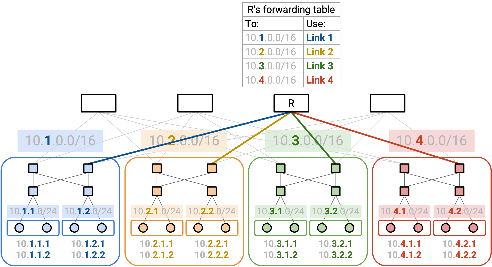Trong topology cụ thể này, các rack (tủ máy) được tổ chức vật lý thành các pod riêng biệt trong tòa nhà. Một cách tiếp cận tự nhiên là phân bổ một dải địa chỉ cho mỗi pod. Sau đó, mỗi pod có thể phân bổ các sub-range (dải con) cho từng rack trong pod. Cuối cùng, mỗi rack có thể phân bổ một địa chỉ IP riêng cho từng server.
Nhà vận hành biết số lượng server trong mỗi rack và số lượng rack trong mỗi pod, vì vậy chúng ta có thể dùng thông tin này để phân bổ dải địa chỉ với kích thước phù hợp. Ví dụ: một rack có thể nhận một dải /24, cung cấp cho rack đó 256 địa chỉ cho các server của mình.
Cách phân bổ này cho phép aggregate routes (gộp tuyến) và lưu ít mục hơn trong bảng chuyển tiếp. Ví dụ: xét một spine router (router xương sống) ở phía trên cùng của sơ đồ. Router này không cần ghi nhớ đường đi đến từng server. Thay vào đó, bảng chuyển tiếp chỉ cần bốn mục, mỗi mục cho một pod. Khi một packet đến, router kiểm tra 16 bit đầu tiên để chuyển tiếp packet đến pod thích hợp.
Route aggregation (gộp tuyến) cũng mang lại sự ổn định cao hơn. Nếu một host được thêm hoặc gỡ bỏ trong một rack cụ thể, spine router không cần biết. Miễn là chúng ta duy trì cùng sơ đồ địa chỉ, bảng chuyển tiếp hiện tại vẫn đúng mà không cần thay đổi. Do đó, các bản cập nhật định tuyến thường chỉ xảy ra khi liên kết hoặc switch gặp sự cố, chứ không phải khi host gặp sự cố.
Việc gán địa chỉ dựa trên topology của datacenter rất tốt cho khả năng mở rộng, nhưng cũng có một số hạn chế. Đặc biệt, nếu chúng ta di chuyển một server sang vị trí khác, chúng ta sẽ phải thay đổi địa chỉ của nó.
Virtualization and Encapsulation (Ảo hóa và Đóng gói)
Hạn chế của Datacenter vật lý
Các Datacenters (trung tâm dữ liệu) được tổ chức một cách cố định và có cấu trúc. Các servers (máy chủ) giống hệt nhau được tổ chức thành các racks (giá đỡ), và các racks được sắp xếp theo một topology (topo) cố định nào đó. Cách tiếp cận này có một số lợi ích. Ví dụ, nó cho chúng ta một cách tự nhiên để gán hierarchical addresses (địa chỉ phân cấp).
Tuy nhiên, khi chúng ta xem xét cách các ứng dụng được lưu trữ trên datacenters, việc tổ chức cố định của datacenters có một số nhược điểm. Giả sử Google giới thiệu một dịch vụ mới mà họ muốn lưu trữ trong một datacenter hiện có. Nếu chúng ta đặt ứng dụng đó trực tiếp lên một physical server (máy chủ vật lý), ai đó sẽ phải cài đặt vật lý một server mới, với IP address (địa chỉ IP) riêng, cho ứng dụng này. Nếu dịch vụ mở rộng, có thể cần phải cài đặt thêm nhiều servers hơn. Nếu server bị hỏng, chúng ta sẽ phải đợi ai đó sửa chữa nó. Vấn đề chính ở đây là việc thay đổi cơ sở hạ tầng vật lý rất khó khăn, nhưng chúng ta thường muốn thêm các hosts (máy chủ) mới, mở rộng quy mô các hosts hiện có, và di chuyển hosts một cách nhanh chóng và thường xuyên.
Việc đặt các ứng dụng trên các physical servers cũng gây ra các vấn đề về khả năng mở rộng. Giả sử dịch vụ mới của Google rất nhẹ, nhưng cần một server chuyên dụng (ví dụ: vì lý do bảo mật). Chúng ta sẽ phải gán toàn bộ một physical server cho dịch vụ nhẹ này, và hầu hết năng lực tính toán của server sẽ không được sử dụng.
Cách tiếp cận này cũng có các vấn đề về định tuyến. Giả sử chúng ta muốn di chuyển dịch vụ đến một phần khác của tòa nhà datacenter (ví dụ: vì một phần của tòa nhà đang được bảo trì). Đầu tiên, ai đó sẽ phải di chuyển vật lý server trong tòa nhà. Ngoài ra, trong mô hình hierarchical address của chúng ta, chúng ta sẽ cần gán cho dịch vụ này một IP address mới tương ứng với vị trí vật lý mới của nó. Lý tưởng nhất, ứng dụng sẽ muốn giữ nguyên địa chỉ, bất kể vị trí của nó trong datacenter.

Virtualization (Ảo hóa)
Chúng ta có thể sử dụng virtualization để giải quyết những vấn đề này và mang lại cho các ứng dụng sự linh hoạt hơn, trong khi vẫn duy trì cấu trúc vật lý cứng nhắc của datacenter. Virtualization cho phép chúng ta chạy một hoặc nhiều virtual servers (máy chủ ảo) bên trong một physical server.
Virtual server mang lại cho các ứng dụng ảo giác rằng chúng đang chạy trên một máy vật lý chuyên dụng. Tuy nhiên, trên thực tế, nhiều virtual servers có thể đang chạy trên cùng một máy. Khi ứng dụng cố gắng tương tác với phần cứng (ví dụ: đĩa, network card (card mạng)), nó thực sự đang tương tác với một hypervisor (trình quản lý máy ảo) trong phần mềm. Hypervisor cung cấp cho mỗi ứng dụng ảo cùng một giao diện mà phần cứng thực sự sẽ có. Bản thân hypervisor chạy trên phần cứng vật lý thực tế, và có thể chuyển tiếp các yêu cầu của ứng dụng (ví dụ: ghi đĩa, gửi gói tin mạng) đến cấp độ phần cứng.
Với virtualization, nếu chúng ta có một ứng dụng mới, chúng ta có thể yêu cầu một hypervisor khởi động một virtual machine (máy ảo) mới cho ứng dụng này. Hypervisor chạy trong phần mềm, vì vậy không cần phải cài đặt bất kỳ server mới nào trong datacenter vật lý. Tương tự, chúng ta có thể di chuyển hosts đến một máy vật lý khác, hoàn toàn bằng phần mềm.

Virtualization cho phép nhiều ứng dụng chia sẻ một physical server. Các ứng dụng có thể được tách biệt với nhau, và có thể được quản lý bởi những người khác nhau. Điều này cho phép chúng ta sử dụng các tài nguyên tính toán trong datacenter hiệu quả hơn. Điều này cũng cho phép chúng ta có nhiều hosts hơn trong datacenter. Ví dụ, một rack duy nhất với 40 servers có thể có nhiều hơn 40 end hosts (máy chủ đầu cuối).
Virtual Switches (Bộ chuyển mạch ảo)
Physical server có một network card và một IP address duy nhất, nhưng chúng ta cần mang lại cho mỗi virtual machine ảo giác rằng nó có network card và địa chỉ chuyên dụng của riêng mình. Ngoài ra, các switches (bộ chuyển mạch) giờ đây có thể có nhiều virtual machines kết nối với một port (cổng) vật lý duy nhất.
Để quản lý nhiều kết nối mạng trên cùng một máy vật lý, server cần một virtual switch. Virtual switch này chạy trong phần mềm trên server (nó không phải là một router vật lý), và thực hiện các hoạt động tương tự như một switch thực sự (ví dụ: chuyển tiếp gói tin). Mỗi virtual machine được kết nối với virtual switch, và virtual switch được kết nối với phần còn lại của mạng.

Lưu ý: Các switches thường chạy trên phần cứng chuyên dụng để tối đa hóa hiệu quả. Các virtual switches có thể chạy trong phần mềm trên một CPU (đơn vị xử lý trung tâm) đa dụng vì chúng chỉ cần hỗ trợ một vài virtual machines (dung lượng thấp hơn so với những gì các switches thường xử lý).
Underlay and Overlay Network (Mạng lớp nền và Mạng lớp phủ)
Với virtualization, chúng ta giờ đây có các virtual hosts (máy chủ ảo) chạy trên các physical servers. Không giống như physical servers, virtual hosts có thể được tạo, tắt và thay đổi nhanh chóng.
Các virtual machines không nhất thiết phải sử dụng cùng một sơ đồ địa chỉ như các physical servers. Các IP addresses của physical server được xác định bởi topo datacenter vật lý (ví dụ: pods, racks). Ngược lại, các IP addresses của virtual machine thường được xác định bởi một hệ thống phân cấp thực tế nào đó (ví dụ: quốc gia, tổ chức). Đặc biệt, các virtual hosts trên một physical server duy nhất không nhất thiết phải có cùng IP prefixes (tiền tố IP), vì vậy chúng ta không thể sử dụng các thủ thuật tổng hợp tương tự để mở rộng quy mô.
Nếu chúng ta cố gắng mở rộng một cách ngây thơ các sơ đồ định tuyến của mình để hỗ trợ các virtual machines, các forwarding tables (bảng chuyển tiếp) của chúng ta sẽ trở nên rất lớn, rất nhanh. Trước đây, chúng ta có thể tổng hợp bằng cách nói: "tất cả các servers trong pod màu xanh có cùng IP prefix, và tất cả chúng đều có next hop (chặng kế tiếp) là R2." Bây giờ, các servers trong pod màu xanh đó có thể chứa hàng trăm virtual hosts, tất cả đều có các IP addresses khác nhau (không có tiền tố chung). Chúng ta sẽ cần một mục chuyển tiếp riêng cho mỗi virtual host. Ngoài ra, nếu một virtual host di chuyển đến một máy vật lý khác (giữ nguyên IP address), giao thức định tuyến sẽ phải khám phá lại các đường đi đến virtual host này. Liệu chúng ta có thể tìm ra cách để tránh việc mở rộng datacenter để hỗ trợ mọi địa chỉ VM không?
Vấn đề chính ở đây là chúng ta hiện có hai hệ thống địa chỉ khác nhau, một cho virtual hosts, và một cho physical hosts. Cả hai sơ đồ địa chỉ đều hoạt động ở IP layer (lớp IP), nhưng trong IP layer, hiện có hai lớp con trừu tượng mà chúng ta cần phải suy nghĩ đến.
Underlay network (mạng lớp nền) xử lý việc định tuyến giữa các máy vật lý. Underlay network chứa cơ sở hạ tầng datacenter như top-of-rack switches (bộ chuyển mạch đỉnh giá) và spine switches (bộ chuyển mạch trục). Underlay network có khả năng mở rộng tốt vì chúng ta xác định các hierarchical addresses sử dụng topo datacenter vật lý.
Overlay network (mạng lớp phủ) tồn tại trên topo vật lý (underlay), và nó chỉ suy nghĩ về việc định tuyến giữa các virtual machines. Trên thực tế, mỗi virtual machine thường chỉ cần giao tiếp với một vài virtual machines khác trong mạng. Do đó, overlay network có khả năng mở rộng tốt vì một virtual machine không cần phải biết về mọi virtual machine khác.

Lý tưởng nhất, chúng ta muốn hai lớp này suy nghĩ về việc đánh địa chỉ một cách riêng biệt. Underlay network không cần phải biết về các địa chỉ virtual host (nếu không, nó sẽ mở rộng kém). Tương tự, overlay network không cần phải biết về mọi physical server trong datacenter (mỗi VM chỉ cần biết về một vài VMs khác).
Nếu chúng ta không cho underlay network biết về các địa chỉ virtual host, thì nếu một datacenter switch nhận được một packet (gói tin) với một IP ảo làm đích, nó sẽ tìm trong forwarding table của mình, không tìm thấy IP ảo nào, và loại bỏ packet này. Chúng ta cần một cách nào đó để kết nối khoảng cách giữa overlay (suy nghĩ theo hướng ảo) và underlay (suy nghĩ theo hướng vật lý).
Encapsulation (Đóng gói)
Để hợp nhất các lớp overlay và underlay, chúng ta có thể sử dụng các chiến lược tương tự với phân lớp và các headers (tiêu đề) mà chúng ta đã sử dụng khi thiết kế Internet!
Cho đến nay, chúng ta đã coi IP là một lớp duy nhất, và mỗi packet có một IP header duy nhất, hiểu hệ thống địa chỉ IP.
Bây giờ chúng ta có hai lớp con IP với hai hệ thống địa chỉ IP khác nhau, chúng ta có thể giới thiệu một header bổ sung vào packet. Ví dụ, chúng ta có thể có hai IP headers, trong đó một header hiểu overlay network, và header kia hiểu underlay network. Hoặc, chúng ta có thể sử dụng IP header ban đầu cho underlay network, và giới thiệu một loại header mới (khác với IP) cho overlay network.

Bây giờ, chiến lược của chúng ta để định tuyến các packets có thể kết hợp overlay và underlay networks. Giả sử VM A muốn gửi một packet đến VM B.

-
VM A tạo một packet với một IP header duy nhất, chứa địa chỉ IP ảo của B. (Hãy nhớ rằng, A đang suy nghĩ theo thuật ngữ của overlay, và không biết về các địa chỉ IP vật lý của underlay.) VM A chuyển tiếp packet này đến virtual switch (trên physical server của A).

-
Virtual switch đọc header để biết địa chỉ IP ảo của B. Sau đó, virtual switch tra cứu địa chỉ physical server tương ứng với địa chỉ IP ảo của B. (Chúng ta chưa mô tả cách thực hiện điều này.)
Virtual switch thêm một outer header (tiêu đề bên ngoài) bổ sung chứa địa chỉ physical server của B. Việc thêm header đôi khi được gọi là encapsulation.
Tại thời điểm này, packet có hai headers. Inner header (tiêu đề bên trong) (lớp cao hơn, overlay, được thêm bởi VM A) chứa địa chỉ IP ảo của B, và outer header (lớp thấp hơn, underlay, được thêm bởi virtual switch) chứa địa chỉ physical server của B.
Virtual switch chuyển tiếp packet này đến switch next hop, dựa trên địa chỉ physical server.

-
Packet được gửi qua underlay network. Mỗi switch trong datacenter chỉ nhìn vào outer header (lớp nền, địa chỉ physical server) để quyết định cách chuyển tiếp packet. (Hãy nhớ rằng, các datacenter switches suy nghĩ theo thuật ngữ của underlay, và không biết về địa chỉ IP ảo của overlay.)


-
Cuối cùng, packet đến virtual switch của physical server đích. Virtual switch nhìn vào outer header (underlay) và nhận thấy rằng địa chỉ physical server đích là chính nó.
Virtual switch loại bỏ outer header, để lộ inner header bên trong. Việc loại bỏ outer header đôi khi được gọi là decapsulation (giải đóng gói).

Cuối cùng, virtual switch đọc inner header (overlay). Điều này cho virtual switch biết packet nên được chuyển tiếp đến VM nào trên physical server.

Trong quá trình này, encapsulation cho phép chúng ta suy nghĩ về việc định tuyến ở hai lớp khác nhau. Underlay có thể định tuyến các packets bằng cách sử dụng địa chỉ physical server, mà không cần suy nghĩ về overlay. Tương tự, VM trong overlay có thể gửi và nhận các packets mà không cần suy nghĩ về cách chuyển tiếp các packets trong underlay. Các virtual switches đã kết nối hai lớp bằng cách dịch địa chỉ virtual machine thành địa chỉ physical server, và thêm và bớt header underlay bổ sung.


Forwarding Tables với Encapsulation
Chúng ta nên cài đặt những mục nào trong các forwarding tables để hỗ trợ định tuyến với encapsulation?
Các virtual machines nên cài đặt một default route (tuyến đường mặc định) để chuyển tiếp mọi packet đến virtual switch trên máy vật lý.
Các virtual switches cần triển khai thêm một số chức năng để kết nối hai lớp. Cụ thể, khi bạn thấy một địa chỉ ảo, bạn nên áp dụng encapsulation (thêm một lớp ngoài) với địa chỉ vật lý tương ứng. Forwarding table có các mục cho mọi VM đích mà bất kỳ VM nào trên server này có thể muốn nói chuyện. Chúng ta có thể hỗ trợ quy mô này vì chúng ta giả định các VMs sẽ không cần nói chuyện với mọi VM khác trong datacenter. Không giống như các thuật toán định tuyến tiêu chuẩn, chúng ta không cần định tuyến any-to-any (chúng ta không cần đường đi đến mọi VM khác).
Các virtual switches cũng cần một quy tắc bổ sung để decapsulating các packets. Nếu đích của packet ngoài (underlay) là chính switch đó, bạn nên decapsulate (loại bỏ outer header) và chuyển packet đến địa chỉ VM trong inner header. Quy tắc này mở rộng theo số lượng VMs trên server, thường đủ nhỏ để có thể quản lý được.
Việc thêm chức năng này có khó không? May mắn thay, các virtual switches được triển khai trong phần mềm, vì vậy việc thêm chức năng này chỉ cần viết mã lệnh (không cần thêm phần cứng). Tuy nhiên, trên thực tế, encapsulation phổ biến đến mức đôi khi nó vẫn được triển khai trong phần cứng.
Các switches trong datacenter hoạt động giống hệt như trước khi chúng ta giới thiệu virtualization. Các forwarding tables chỉ chứa địa chỉ physical server, và chúng ta biết rằng chúng có thể được mở rộng quy mô bằng các thủ thuật tổng hợp dựa trên topo vật lý.
Multi-Tenancy (Đa người thuê) và Private Networks (Mạng riêng)
Các Datacenters được quản lý bởi một nhà khai thác duy nhất, nhưng các tổ chức khác nhau có thể đang chạy các ứng dụng bên trong datacenter đó. Ví dụ, một datacenter do Google điều hành có thể có một số virtual servers do Gmail chạy, và những servers khác do Google Maps chạy. Cách tiếp cận lưu trữ nhiều dịch vụ trong một datacenter này được gọi là multi-tenancy.
Các Cloud providers (nhà cung cấp đám mây) cũng sử dụng các datacenters để cung cấp virtual machines cho khách hàng. Ví dụ, Amazon Web Services (AWS) và Google Cloud Platform (GCP) cho phép người dùng khởi động một virtual machine trong một datacenter, làm bất cứ điều gì họ muốn, và phá hủy virtual machine khi họ hoàn thành.
Một vấn đề với multi-tenancy là, chúng ta không phải lúc nào cũng muốn các tenants (người thuê) khác nhau có thể giao tiếp với nhau. Ví dụ, nếu một khách hàng yêu cầu một VM, họ có lẽ không nên có thể kết nối với mọi VM khác trong datacenter.
Một vấn đề khác là, các tenants trong một datacenter không phối hợp với nhau khi chọn địa chỉ. Ví dụ, giả sử datacenter của chúng ta có hai tenants, Pepsi và Coke. Mỗi tenant tạo ra private network của riêng mình, nơi họ gán các IP addresses nội bộ cho các virtual machines. Private network chỉ dành cho các hosts bên trong datacenter giao tiếp với nhau, và các hosts này sẽ không bao giờ được liên lạc từ Internet công cộng. Vì các mạng là riêng tư, hai tenants đều có thể sử dụng các địa chỉ trong cùng một dải địa chỉ riêng được phân bổ đặc biệt (RFC 1918 addresses - các dải địa chỉ dành riêng cho mạng nội bộ). Private network của Pepsi có thể có một VM với IP address 192.0.2.2, và private network của Coke có thể có một VM khác với IP address 192.0.2.2. (Trên thực tế, chúng ta sử dụng các dải địa chỉ riêng để tái sử dụng các IPv4 addresses (địa chỉ IPv4), vì chúng ta đang cạn kiệt chúng.)

Từ góc độ của mỗi tenant, đây không phải là vấn đề. 192.0.2.2 của Pepsi sẽ không bao giờ giao tiếp với 192.0.2.2 của Coke, và cả hai host đều không thể truy cập từ Internet toàn cầu. Tuy nhiên, đây là một vấn đề đối với datacenter. Nếu chúng ta sử dụng destination-based forwarding (chuyển tiếp dựa trên đích), và chúng ta thấy một packet có đích là 192.0.2.2, chúng ta không biết địa chỉ này đang đề cập đến VM nào.
Các IP addresses trùng lặp xảy ra trong thực tế vì hai lý do. Thứ nhất, các datacenters thường không có quyền kiểm soát các địa chỉ mà các tenants đang gán cho các VMs của họ. Thứ hai, trong IP, thông lệ tiêu chuẩn là sử dụng các dải cụ thể cho các private networks, điều này thường dẫn đến các địa chỉ trùng lặp.
Encapsulation cho Multi-Tenancy
Chúng ta có thể sử dụng lại ý tưởng encapsulation để giải quyết vấn đề này. Chúng ta có thể thêm một header mới chứa một virtual network ID (mã định danh mạng ảo) để xác định một tenant cụ thể (ví dụ: Pepsi có ID 1, Coke có ID 2). Header mới này không chứa thông tin để chuyển tiếp và định tuyến, nhưng nó cung cấp thêm ngữ cảnh. Bây giờ, nếu một physical server có các VMs cho nhiều tenants, nó có thể chuyển packet lên đúng mạng ảo.


Khi một virtual switch nhận được một packet và mở outer header (underlay), nó sẽ nhìn vào header mới của chúng ta để quyết định packet dành cho tenant nào. Sau đó, nó nhìn vào overlay header để chuyển tiếp packet đến một VM cụ thể thuộc về tenant chính xác.
Xếp chồng các Encapsulation
Chúng ta có thể sử dụng ý tưởng encapsulation nhiều lần, thêm nhiều headers mới để hỗ trợ cả virtualization và multi-tenancy.
Để bắt đầu, virtual machine tạo ra một packet TCP/IP tiêu chuẩn, với một đích IP ảo.
Trong bước encapsulation đầu tiên, chúng ta thêm một virtual network header, cho chúng ta biết tenant nào đã gửi packet này. Điều này giúp chúng ta phân biệt hai tenants sử dụng cùng một địa chỉ, và cũng ngăn chặn các packets được gửi đến một tenant khác.
Trong bước encapsulation thứ hai, chúng ta thêm một underlay network header, cho chúng ta biết địa chỉ physical server tương ứng với đích IP ảo.

Các lớp trừu tượng vẫn giữ nguyên khi chúng ta xếp chồng các encapsulations. Underlay network không cần biết rằng nhiều tenants đang ở trong cùng một datacenter. Underlay network chỉ nhìn vào header ngoài cùng nhất để tìm địa chỉ physical server, và chuyển tiếp packet tương ứng.
Bước decapsulation hoạt động theo thứ tự ngược lại. Virtual switch trên server đích nhận được một packet có hai headers bổ sung.
Trong bước decapsulation đầu tiên, chúng ta loại bỏ outer underlay header. Điều này không còn cần thiết vì packet đã đến physical server đích.
Trong bước decapsulation thứ hai, chúng ta sử dụng virtual network header để quyết định chúng ta nên xem xét tập hợp VMs nào. Physical server có thể có các VMs cho nhiều tenants, và điều này giúp thu hẹp xuống một tenant duy nhất.
Cuối cùng, chúng ta sử dụng IP header trong cùng nhất để gửi packet đến đúng VM trong đúng mạng ảo.

Lưu ý: Với encapsulation, chúng ta phải cẩn thận khi đọc 5-tuple (bộ 5 thông tin: IP nguồn, IP đích, cổng nguồn, cổng đích, và giao thức) để load-balancing (cân bằng tải) các packets trên nhiều đường đi. May mắn thay, phần cứng router hiện đại rất giỏi trong việc phân tích các packets để hiểu vị trí của các headers liên quan trong packet, ngay cả khi có thêm các headers được chèn vào.
Trên thực tế, có nhiều giao thức khác nhau tồn tại cho encapsulation. Chúng ta có thể sử dụng IP-in-IP để hỗ trợ hai IP headers (một cho overlay, một cho underlay).
MPLS là một header đơn giản để thêm một nhãn xác định một dịch vụ (ví dụ: một mạng ảo, một tenant). Điều này có thể được sử dụng để thêm encapsulation cho multi-tenancy.
Khi các datacenters trở nên phổ biến hơn, nhiều giao thức khác như GRE, VXLAN, và GENEVE đã được phát triển. Hầu hết chúng hoạt động trên IP, vì vậy các giao thức tùy chỉnh này là inner overlay header, và IP thông thường là outer underlay header.
Software-Defined Networking (Mạng định nghĩa bằng phần mềm)
Tại sao lại cần Software-Defined Networking?
Trước đây, chúng ta đã thấy cách các routing protocols (giao thức định tuyến) có thể được điều chỉnh để hoạt động trong bối cảnh datacenter (trung tâm dữ liệu) (ví dụ: equal-cost multi-path (đa đường chi phí bằng nhau)). Sẽ ra sao nếu chúng ta muốn tối ưu hóa các routing protocols của mình hơn nữa cho các ràng buộc và trường hợp sử dụng cụ thể của network (mạng) của chúng ta? Các routing protocols tiêu chuẩn có thể sẽ không còn hoạt động hiệu quả.
Trong phần này, chúng ta sẽ khám phá software-defined networking, một mô hình hoàn toàn mới để suy nghĩ về định tuyến và quản lý mạng. Trong bối cảnh định tuyến, SDN architecture (kiến trúc SDN) bao gồm việc có một trung tâm điều khiển tập trung để tính toán các tuyến đường và phân phối chúng đến từng routers (bộ định tuyến) riêng lẻ. Chúng ta sẽ xem SDN hoạt động như thế nào trong bối cảnh datacenter và wide-area network (mạng diện rộng), đồng thời thảo luận về các lợi ích và hạn chế của phương pháp tiếp cận mới này.
Lược sử của Software-Defined Networking
Mặc dù chúng ta sẽ xem xét SDN như một phương pháp tiếp cận mới cho các routing protocols chuyên biệt, mô hình SDN ban đầu được thiết kế để giải quyết các vấn đề nhức nhối ở management plane (mặt phẳng quản lý).
Hãy nhớ lại rằng management plane rất quan trọng cho hoạt động của mạng. Các routers không thể làm gì trừ khi có người cấu hình chúng (ví dụ: gán chi phí cho các links (liên kết)) và chỉ dẫn chúng phải làm gì (ví dụ: chạy routing protocol nào). Ngoài ra, chúng ta cần các routers báo cáo lỗi để giữ cho mạng luôn hoạt động. Rất nhiều công việc quản lý này trong lịch sử đã được thực hiện thủ công.
Mặc dù management plane rất quan trọng, nhưng lại có tương đối ít sự tập trung vào việc đổi mới nó. Tại control plane (mặt phẳng điều khiển), chúng ta đã thấy rất nhiều routing protocols khác nhau, nhưng cách chúng ta cấu hình và điều khiển các routers lại phát triển chậm hơn.
Trong suốt lịch sử của Internet, đã có một sự phát triển chậm rãi theo hướng sử dụng các kịch bản (scripts) để tương tác với mạng một cách có lập trình. Các kịch bản này đảm nhận những công việc mà người vận hành sẽ làm thủ công và thực hiện chúng bằng mã lệnh (không có nhiều trí thông minh). Ví dụ, các kịch bản cho phép tự động hóa quá trình thêm routers và links vào mạng. Một kịch bản để sửa chữa mạng có thể nói: nếu một router bị lỗi, hãy kiểm tra xem nó có thực sự bị lỗi không, khởi động lại nó, và nếu vẫn không khắc phục được, hãy báo cáo cho người vận hành.
Bất chấp những tiến bộ, các hệ thống quản lý này đã là nút thắt cổ chai cho hoạt động mạng trong một thời gian dài. Chúng ta vẫn có thể phải chờ đợi sự can thiệp của con người mỗi khi một router mới được thêm vào.
Năm 2005, một bài báo của Albert Greenberg và cộng sự đã mô tả vấn đề này bằng cách nói: "Các mạng dữ liệu ngày nay rất mong manh và khó quản lý một cách đáng ngạc nhiên. Chúng tôi cho rằng gốc rễ của những vấn đề này nằm ở sự phức tạp của control plane và management plane."
Để đối phó với những vấn đề này, các nhà nghiên cứu bắt đầu suy nghĩ về những cách khác nhau để vận hành một hệ thống mạng. Điều này đã dẫn đến những đề xuất cấp tiến hơn, tái định hình lại thiết kế cơ bản của routers.
Các khái niệm chúng ta sẽ thấy lần đầu tiên được xem xét vào năm 2003, mặc dù chúng không nhận được nhiều sự chú ý vào thời điểm đó. Sự thất vọng với việc quản lý mạng đã thúc đẩy sự phát triển của các mô hình quản lý mới. Đến năm 2008, đã có nhiều động lực hơn, dẫn đến giao diện switch (bộ chuyển mạch) OpenFlow (chúng ta sẽ sớm thấy).
Đến năm 2011, rõ ràng là ngành công nghiệp đang đi theo hướng mới này, và Open Networking Foundation (ONF) đã được thành lập bởi các nhà khai thác mạng lớn (Google, Yahoo, Verizon, Microsoft, Facebook) và các vendors (nhà cung cấp) (Cisco, Juniper, HP, Dell). Nicira, công ty khởi nghiệp tập trung vào SDN đã phát triển giao diện OpenFlow, là một công ty khởi nghiệp trị giá 40 triệu đô la vào năm 2012.
Routers được Tích hợp theo chiều dọc và Tiêu chuẩn hóa
Nếu chúng ta muốn tái định hình thiết kế của routers, điều đó sẽ được thực hiện trong thực tế như thế nào? Các công nghệ trên routers thay đổi theo thời gian ra sao?
Nếu mạng của bạn cần một router, bạn có thể sẽ mua một cái từ một vendor thiết bị lớn như Cisco hoặc Juniper. Để đảm bảo rằng các routers tương thích với nhau, tất cả các vendors thiết bị lớn đều xây dựng routers của họ theo một số tiêu chuẩn được xác định trước.
Mô hình kinh doanh này có thể gây khó khăn cho sự đổi mới và thử nghiệm các phương pháp tiếp cận mới. Giả sử bạn có một ý tưởng mới cho một routing protocol. Bạn sẽ cần phải được một standards body (tổ chức tiêu chuẩn) phê duyệt giao thức đó, việc này có thể mất nhiều năm. Sau đó, bạn sẽ phải chờ các vendors nâng cấp quy trình sản xuất của họ để tuân thủ tiêu chuẩn mới.
Tiêu chuẩn hóa cũng làm cho routers kém linh hoạt hơn đối với người dùng triển khai các giải pháp tùy chỉnh. Nếu bạn có một vấn đề cụ thể cho mạng của mình, nhưng không ai khác gặp vấn đề này, giải pháp của bạn có thể sẽ không được standards body chấp nhận. Các vendors muốn tạo ra những routers đáp ứng nhu cầu của mọi người, và họ sẽ không nhất thiết phải triển khai một giải pháp hoàn hảo cho bạn, nếu không ai khác muốn nó.
Mặt khác, tiêu chuẩn hóa cũng có nghĩa là nếu người khác có một vấn đề mà bạn không có, router có thể đi kèm với một giải pháp cho vấn đề của họ, ngay cả khi bạn không cần nó. Điều này có thể làm cho routers trở nên phức tạp một cách không cần thiết cho các mục đích của mạng cụ thể của bạn.
Tiêu chuẩn hóa cũng gây khó khăn cho việc thử nghiệm và nghiên cứu. Nếu bạn muốn thử một ý tưởng mới để xem nó có hoạt động hay không, bạn có thể không mua được routers có thể triển khai ý tưởng mới của mình. Các vendors không muốn xây dựng các sản phẩm thử nghiệm, dành cho một khách hàng cụ thể, mà có thể thậm chí không hoạt động.
Một trở ngại lớn khác cho sự đổi mới và thử nghiệm là các routers được vertically integrated (tích hợp theo chiều dọc). Router bạn mua đã có sẵn chức năng cho cả ba mặt phẳng được tích hợp trên các con chip. Không có tính mô-đun nào cho phép bạn thay thế chỉ riêng control plane.

Đổi mới Routers
Nếu chúng ta muốn đổi mới routers, chúng ta có thể đổi mới những gì ở mỗi mặt phẳng, và chúng ta sẽ làm việc với những loại tiêu chuẩn có sẵn nào?
Data plane (mặt phẳng dữ liệu) được tiêu chuẩn hóa bởi IEEE (nhóm kỹ thuật điện) và yêu cầu mọi người tuân thủ nghiêm ngặt các tiêu chuẩn. Nếu hai routers từ các vendors khác nhau được kết nối, chúng ta phải đảm bảo cả hai bên đều gửi các bit dọc theo dây vật lý theo cùng một định dạng nhất quán.
Sự đổi mới ở data plane thường được thúc đẩy bởi nhu cầu về các routers có băng thông cao hơn, và các tính năng mới không thường xuyên được giới thiệu. Sự phát triển này diễn ra khá chậm, trong khoảng 2-3 năm, bởi vì chúng ta phải giải quyết các vấn đề về phần cứng vật lý và thiết kế chip để tăng băng thông. Vì các tính năng cốt lõi của data plane tương đối ổn định, sự đổi mới router không thực sự tập trung vào data plane, và việc chu kỳ phát triển chậm cũng không sao.
Control plane được tiêu chuẩn hóa bởi IETF (nhóm mạng đứng sau các RFC). Các vendors đôi khi thêm các phần mở rộng của riêng họ, mặc dù các tính năng cốt lõi hầu hết đều được tiêu chuẩn hóa. Ví dụ, chúng ta giả định rằng mọi router (ngay cả khi chúng đến từ các vendors khác nhau) đều tuân theo cùng một routing protocol.
Sự đổi mới ở control plane (ví dụ: routing protocols mới) có thể mất vài năm để được áp dụng. Bạn có thể phải gửi một bản dự thảo đề xuất RFC, và cộng đồng có thể dành thời gian thảo luận về đề xuất trước khi đồng ý về các điều khoản của nó.
Management plane cũng được tiêu chuẩn hóa bởi IETF, mặc dù nó ít được tiêu chuẩn hóa hơn nhiều. Các nhà khai thác khác nhau có thể sử dụng phần mềm khác nhau để cấu hình routers của họ, và chúng ta không thực sự cần các vendors khác nhau phải đồng ý về một phần mềm được tiêu chuẩn hóa nào đó. Bởi vì mặt phẳng này chỉ được tiêu chuẩn hóa một cách lỏng lẻo, nhiều phương pháp tiếp cận khác nhau với các tính năng khác nhau tồn tại.
Tóm lại: Data plane được tiêu chuẩn hóa (nhưng chúng ta không thực sự có tính năng mới nào trong đầu), control plane được tiêu chuẩn hóa (nhưng chúng ta muốn thử các giải pháp mới), và management plane không thực sự được tiêu chuẩn hóa.
Ý tưởng cấp tiến: Tách rời Routers
Tiêu chuẩn hóa và tích hợp theo chiều dọc đã gây khó khăn cho việc đổi mới và thử nghiệm. Điều này đã dẫn đến ý tưởng cấp tiến là tách rời các routers bằng cách chia các mặt phẳng thành các lớp trừu tượng khác nhau. Thay vì mua một router duy nhất với cả ba mặt phẳng, giờ đây chúng ta có thể mua riêng chức năng của data plane và control plane. Điều này cho phép chúng ta thay đổi các lớp một cách độc lập với nhau.
Để kết nối ba lớp, chúng ta cần một API (Giao diện lập trình ứng dụng) giữa các lớp trừu tượng. Trong một router được ghép nối theo chiều dọc, chúng ta không quan tâm data plane và control plane nói chuyện với nhau như thế nào. Tuy nhiên, nếu chúng ta mua data plane riêng và muốn thiết kế control plane tùy chỉnh của riêng mình trên đó, chúng ta cần một giao diện để tương tác với data plane.

Một ý tưởng cấp tiến hơn nữa là ngừng suy nghĩ về ba mặt phẳng chỉ theo thuật ngữ của router, và thay vào đó thiết kế một kiến trúc hệ thống mới tự nhiên tách biệt data plane và control plane.

Ở dưới cùng, chúng ta có các commodity network devices (thiết bị mạng phổ thông). Bạn có thể coi chúng như việc chỉ mua riêng data plane. Các routers này nhận chỉ thị từ control program (chương trình điều khiển) thông qua network OS (hệ điều hành mạng), và chỉ đơn giản là chuyển tiếp các gói tin theo những chỉ thị đó. Các routers này hoàn toàn không cần phải suy nghĩ về routing protocols, vì vậy chúng có thể rẻ hơn.
Ở giữa, chúng ta có network OS. Bạn có thể coi đây là API kết nối các routers ở data plane và control program ở control plane. Network OS cung cấp một sự trừu tượng hóa của các routers (ví dụ: dưới dạng một đồ thị) có thể được truyền lên cho control program. Sau đó, control program có thể gửi các chỉ thị định tuyến đến network OS, mà không cần lo lắng về cách lập trình cho các routers cụ thể. Network OS có thể lấy những chỉ thị đó và lập trình chúng vào từng routers riêng lẻ.
Ở trên cùng, chúng ta có control program. Bạn có thể coi đây là việc mua hoặc tự triển khai control plane. Ở đây, người vận hành nhận được một sự trừu tượng hóa của mạng (ví dụ: đồ thị) từ network OS, và có thể sử dụng nó để viết routing protocol tùy chỉnh của riêng mình. Sau đó, các tuyến đường kết quả có thể được chuyển đến network OS, nơi sẽ lập trình chúng vào các routers.
Định dạng API OpenFlow
OpenFlow là một API để tương tác với data plane của một router. Người vận hành viết mã lệnh phức tạp của riêng họ, tách biệt khỏi router, để tính toán các tuyến đường trong mạng. Sau đó, những tuyến đường đó có thể được lập trình vào forwarding chip (chip chuyển tiếp).

Mô hình OpenFlow khác với các routers truyền thống, nơi control plane được triển khai trong router, và không có một API rõ ràng nào để lập trình các tuyến đường tùy chỉnh vào forwarding chip.
API OpenFlow định nghĩa một sự trừu tượng hóa là flow table (bảng luồng) để mô tả các tuyến đường và quy tắc chuyển tiếp. Mã lệnh của người vận hành có thể xuất ra bất kỳ quy tắc và tuyến đường nào mà nó muốn, và cài đặt chúng trên router, miễn là chúng ở định dạng flow table.
Thành phần cơ bản của API là một flow table, bạn có thể coi nó như một phiên bản tổng quát của một forwarding table (bảng chuyển tiếp). Mỗi flow table bao gồm các cặp khóa-giá trị, giống như một forwarding table. Khóa chỉ định điều kiện để match (đối sánh) với gói tin. Điều này có thể là một destination prefix (tiền tố đích), một đích chính xác, một 5-tuple (bộ 5 thông tin gồm IP nguồn, IP đích, cổng nguồn, cổng đích, và giao thức), hoặc các phép match tương đối đơn giản khác. Giá trị tương ứng chỉ định action (hành động) sẽ được thiết lập khi một gói tin khớp. Action có thể là gửi gói tin đến một chặng kế tiếp (giống như một forwarding table), nhưng cũng có thể chỉ định các action phức tạp hơn như thêm một header (tiêu đề) bổ sung.
Định dạng đầu ra là một chuỗi gồm một hoặc nhiều flow tables được đánh số, trong đó mỗi bảng có các mục match-action khác nhau. Những flow tables này sau đó có thể được lập trình vào forwarding chip.

Khi một gói tin đến một router, nó được kiểm tra với từng bảng theo thứ tự (ví dụ: Bảng 0, Bảng 1, Bảng 2, v.v.), và khi có một sự match, chúng ta ghi lại action tương ứng (mà chưa thực thi nó). Cuối cùng, một khi gói tin được kiểm tra với bảng cuối cùng, bất kỳ action nào chúng ta đã ghi lại sẽ được áp dụng cho gói tin.
Cũng có các action đặc biệt để bỏ qua đến các bảng sau, mà chúng ta có thể sử dụng trong các quy tắc như: Nếu cổng nguồn khớp với số này, hãy bỏ qua đến bảng 5 để thiết lập các action bổ sung.

Người vận hành có thể chạy bất kỳ mã lệnh nào họ muốn để tạo ra các flow tables, và các flow tables có thể tổng quát hơn một forwarding table đích/chặng-kế-tiếp. Tuy nhiên, các quy tắc (match/action pairs) mà chúng ta tạo ra vẫn bị giới hạn bởi phần cứng của forwarding chip chuyên dụng. Forwarding chip được tối ưu hóa cho tốc độ, và có lẽ không thể xử lý các quy tắc match phức tạp như "nếu phần tải tin (payload) của TCP là tiếng Anh, hãy đặt action này."
Kết quả là, các flow tables chúng ta thấy trong thực tế cuối cùng trông khá giống với các bảng chúng ta đã thấy. Các quy tắc match phổ biến bao gồm longest prefix matching (khớp tiền tố dài nhất) trên đích IP, 5-tuples để xác định các luồng, và khớp chính xác trên các encapsulation headers (tiêu đề đóng gói) (ví dụ: MPLS).
Nếu các quy tắc chuyển tiếp không khác biệt nhiều, tại sao lại sử dụng OpenFlow? Hãy nhớ rằng, lợi thế chính là nó cho phép người vận hành hoàn toàn tự do ở control plane. Chúng ta không còn bị giới hạn bởi các giao thức distance-vector (vector khoảng cách) hay link-state (trạng thái liên kết) nữa.

Lợi ích của một Control Plane linh hoạt
Kiến trúc mới của chúng ta mang lại cho người vận hành sự linh hoạt để triển khai routing protocol mới của họ tại control plane. Một số lợi ích của phương pháp này là gì?
Người vận hành có thể triển khai các routing protocols tùy chỉnh phù hợp nhất với nhu cầu cụ thể của họ. Người vận hành không còn bị ràng buộc bởi các standards bodies và vendors.
Sự linh hoạt cũng cho chúng ta cơ hội để đơn giản hóa. Ví dụ, nếu giao thức được tiêu chuẩn hóa bao gồm các tính năng chúng ta không cần, chúng ta không phải triển khai chúng trong giải pháp tùy chỉnh của mình. Các giao thức đơn giản hơn có thể có ít mã lệnh hơn và mã lệnh đơn giản hơn, điều này có thể cho phép phát triển và bảo trì giao thức đó dễ dàng hơn.
Cuối cùng, một control plane linh hoạt cho phép tính toán các tuyến đường một cách tập trung tại control program, thay vì phân tán trên nhiều routers. Sự tập trung hóa cũng đi kèm với một số lợi ích.
Sự tập trung hóa có thể dẫn đến các quyết định định tuyến thông minh hơn, mang lại hiệu suất xuất sắc. Trong một báo cáo năm 2013 từ Google, các kỹ sư đã triển khai một SDN architecture đã ghi nhận rằng "traffic engineering (kỹ thuật lưu lượng) tập trung giúp các links đạt gần 100% hiệu suất sử dụng, trong khi phân chia các luồng ứng dụng trên nhiều đường đi để cân bằng dung lượng với mức độ ưu tiên/yêu cầu của ứng dụng." Một bài báo năm 2013 của Microsoft mô tả việc sử dụng một bộ điều khiển OpenFlow để "đạt được hiệu suất sử dụng cao với WAN điều khiển bằng phần mềm."
Các quyết định định tuyến thông minh hơn có thể giúp tối ưu hóa các tiêu chí khác ngoài hiệu suất, mà một routing protocol tiêu chuẩn không thể dễ dàng tối ưu hóa. Ví dụ, một mạng của chính phủ Hoa Kỳ có thể triển khai một quy tắc khoanh vùng địa lý (geofencing) rằng, không gửi lưu lượng qua các links ở Canada. Hoặc, một mạng truyền hình quảng bá có thể muốn tối ưu hóa cho sự đa dạng của đường đi để tăng độ tin cậy. Chúng ta có thể thực thi rằng hai luồng di chuyển qua các đường đi không chia sẻ bất kỳ links nào, để nếu một link bị hỏng, chỉ một trong hai luồng bị ảnh hưởng. Hai đường đi có thể đóng vai trò dự phòng cho nhau.
Sự tập trung hóa cũng có thể giúp các routing protocols hội tụ dễ dàng hơn. Trong một giao thức phân tán, nếu mạng thay đổi, các routers phải phối hợp để hội tụ về một trạng thái định tuyến mới. Trong mô hình tập trung này, nếu một link bị lỗi, router đó có thể báo cho "sếp", và "sếp" có thể tính toán lại các tuyến đường và cài đặt các tuyến đường mới trên các routers.
Traffic Engineering
Một control plane linh hoạt cho phép chúng ta thực hiện traffic engineering, có nghĩa là chúng ta có thể định tuyến lưu lượng một cách thông minh và hiệu quả hơn so với một routing protocol phân tán tiêu chuẩn.

Giả sử có hai kết nối, S1-D ở tốc độ 10 Gbps và S2-D ở tốc độ 10 Gbps. Nếu chúng ta chỉ chạy least-cost routing (định tuyến chi phí thấp nhất) tiêu chuẩn, cả hai luồng sẽ gửi lưu lượng dọc theo đường đi phía dưới. Đường đi phía dưới sẽ bị tắc nghẽn (20 Gbps trên link 10 Gbps), trong khi bandwidth (băng thông) của đường đi phía trên không được sử dụng.
Với một cơ chế định tuyến thông minh hơn, chúng ta có thể gửi lưu lượng S1-D dọc theo đường đi phía trên, và lưu lượng S2-D dọc theo đường đi phía dưới. Bằng cách sử dụng traffic engineering, chúng ta đã buộc một số gói tin phải đi một con đường dài hơn, để tận dụng tốt hơn bandwidth trong mạng.

Để tính toán các tuyến đường này, chúng ta có thể sửa đổi least-cost routing, và thay vào đó thực thi rằng lưu lượng nên đi trên con đường ngắn nhất có đủ dung lượng. Chúng ta cũng có thể thực thi các ràng buộc khác thay vì dung lượng, chẳng hạn như latency (độ trễ). Thuật toán kết quả được gọi là constrained Shortest Path First (cSPF).
Bây giờ, giả sử S1-D cần 12 Gbps, và S2-D cần 8 Gbps. cSPF sẽ gửi các luồng đi theo các đường khác nhau để tối đa hóa bandwidth, nhưng S1-D đang gửi 12 Gbps qua một link 10 Gbps.
Để khắc phục điều này, traffic engineering của chúng ta có thể còn thông minh hơn nữa, và chia lưu lượng trong một luồng qua các đường đi khác nhau. S1-D có thể gửi 10 Gbps lưu lượng của mình dọc theo đường đi phía trên, và 2 Gbps còn lại dọc theo đường đi phía dưới.
Một lần nữa, traffic engineering của chúng ta đã cho phép chúng ta triển khai logic tùy chỉnh mang lại hiệu quả sử dụng dung lượng mạng tốt hơn.

Làm thế nào để chúng ta thực sự triển khai các đường đi được phân chia trong mạng, sử dụng API OpenFlow từ trước? Hãy nhớ rằng, các quyết định định tuyến của chúng ta vẫn nên tuân theo các quy tắc đơn giản mà các forwarding tables có thể hiểu được.
Một cách tiếp cận là sử dụng encapsulation (sự đóng gói). Tại bên gửi, chúng ta có thể thêm các quy tắc để thêm một header bổ sung, trong đó một số gói tin nhận nhãn 0, và phần còn lại nhận nhãn 1. Nhãn này cho chúng ta biết nên gửi lưu lượng theo đường nào.

Bây giờ, tại R1, chúng ta có thể thêm các quy tắc đơn giản để định tuyến các gói tin có nhãn 0 lên R2, và các gói tin có nhãn 1 xuống R3. Ý tưởng này có thể được áp dụng ngoài các quy tắc khác mà chúng ta đã có cho constrained least-cost routing (ví dụ: các flow tables có thể có các mục khác cho các đích khác hoặc các luồng khác).
Traffic Engineering tập trung và các quyết định tối ưu toàn cục
Một khác biệt lớn trong mô hình SDN của các routing protocols tùy chỉnh là sự tập trung hóa. Trong mô hình ban đầu, mỗi router đều chạy routing protocol của riêng mình. Bây giờ, chúng ta có thể có một máy tính duy nhất bên ngoài các routers tính toán tất cả các tuyến đường, và sau đó sử dụng API flow table để cài đặt những tuyến đường đó lên các routers.
Sự tập trung hóa cho phép chúng ta đưa ra các globally optimal decisions (quyết định tối ưu toàn cục). Trong một giao thức phân tán, mỗi router đang đưa ra quyết định tốt nhất cho chính nó, nhưng đó có thể không phải là quyết định tốt nhất cho các routers khác. Trong mô hình tập trung, "sếp" có thể sử dụng cái nhìn toàn cục về mạng để quyết định điều gì là tốt nhất cho mọi người, và yêu cầu các routers tuân theo quyết định đó.

Hãy xem xét mạng này với hai luồng, S1-D ở tốc độ 20 Gbps, và S2-D ở tốc độ 100 Gbps. Giả sử chúng ta chưa triển khai hỗ trợ cho việc chia một luồng ra nhiều đường đi.
Giả sử luồng 20 Gbps S1-D bắt đầu trước. Sử dụng constrained shortest path first, S1 có thể chọn sử dụng đường đi phía dưới. Từ góc độ của S1, đây là một quyết định tối ưu cục bộ (đường đi trên và dưới đều tốt như nhau).
Sau đó, luồng 100 Gbps S2-D bắt đầu. Bây giờ, sử dụng constrained shortest path first, S2-D không có bất kỳ đường đi đơn lẻ nào đáp ứng được yêu cầu của nó. Cả đường đi phía trên (20 Gbps) và đường đi phía dưới (80 Gbps) đều không đủ dung lượng.
Vấn đề chính ở đây là, mỗi router riêng lẻ đã tự đưa ra quyết định của mình một cách độc lập, không có sự phối hợp.
Bằng cách giới thiệu một bộ điều khiển tập trung, bộ điều khiển có thể nhìn vào cấu trúc tổng thể của mạng và nhu cầu của mỗi luồng, và gán các đường đi cho mỗi luồng một cách thông minh hơn. Quyết định kết quả là tối ưu toàn cục, và tăng hiệu quả mạng.

Traffic engineering tập trung có thể đưa ra các quyết định định tuyến thông minh hơn nữa, tùy thuộc vào những gì người vận hành muốn tối ưu hóa. Ví dụ, chúng ta có thể phân loại các luồng thành luồng ưu tiên cao hoặc ưu tiên thấp, và đưa ra các quyết định tối ưu hóa cả việc sử dụng mạng và nhu cầu của các ứng dụng khác nhau.
SDN trong Datacenter Overlay
Trong phần trước, chúng ta đã thấy rằng các virtual switches (bộ chuyển mạch ảo) có thể áp dụng encapsulation để kết nối mạng overlay (lớp phủ) và underlay (lớp nền). Với một virtual address (địa chỉ ảo), chúng ta có thể thêm một header với physical address (địa chỉ vật lý) tương ứng, cho phép gói tin được gửi đi trên mạng underlay. Nhưng, làm thế nào để chúng ta biết được sự ánh xạ giữa virtual addresses và physical addresses?
Chúng ta cũng đã thấy rằng encapsulation có thể được sử dụng để hỗ trợ nhiều tenants (người thuê) trong một datacenter duy nhất, mỗi tenant chạy mạng riêng của mình. Các switches có thể thêm các headers với một virtual network ID (mã định danh mạng ảo). Nhưng, làm thế nào để chúng ta biết nên sử dụng virtual network ID nào?
Một bộ điều khiển SDN tập trung có thể được sử dụng trong datacenter để giải quyết những vấn đề này. Mỗi tenant có thể vận hành bộ điều khiển của riêng mình. Khi một VM (Máy ảo) mới được tạo, SDN sẽ biết được virtual address và physical address của nó. Sau đó, SDN có thể cập nhật các forwarding tables trong các virtual switches khác, thêm các quy tắc encapsulation với ánh xạ địa chỉ ảo/vật lý mới.

Ví dụ, giả sử Coke VM 2 được tạo với virtual IP (IP ảo) là 192.0.2.1 và physical IP (IP vật lý) là 2.2.2.2. SDN biết rằng Coke VM 1 đang ở trên physical server (máy chủ vật lý) 1.1.1.1, vì vậy nó có thể đến virtual switch trên 1.1.1.1 và thêm một quy tắc encapsulation cho Coke VM 2 mới.
Flow table tại 1.1.1.1 có thể nói: Nếu bạn nhận được một gói tin có đích là 192.0.2.1, hãy thêm một header với virtual network ID của Coke là 42. Đồng thời, thêm một header với physical address tương ứng là 2.2.2.2. Sau đó, gửi gói tin đi trên mạng underlay.
Lợi ích của SDN trong Datacenter Overlay
Tại sao chúng ta lại sử dụng kiến trúc SDN tập trung để hỗ trợ ảo hóa và multi-tenancy (đa người thuê) trong datacenter, thay vì một routing protocol tiêu chuẩn hơn?
Kiến trúc SDN tập trung cho phép chúng ta tách biệt rõ ràng mạng overlay và underlay thành hai lớp có khả năng mở rộng. Trong một kiến trúc truyền thống, các routers trong mạng underlay sẽ phải xử lý các encapsulation headers tùy chỉnh (ví dụ: virtual network IDs). SDN cho phép mạng underlay vẫn đơn giản, mà không cần phải suy nghĩ về ảo hóa hay multi-tenancy.
Sự tập trung hóa cho chúng ta một cách đơn giản để triển khai control plane tại các end hosts (máy chủ đầu cuối), mà không cần bất kỳ routing protocols phức tạp nào. Bộ điều khiển biết về một máy chủ mới và cập nhật các máy chủ khác tương ứng. Nếu không có bộ điều khiển tập trung, chúng ta có thể cần một cơ chế phân tán phức tạp nào đó để tìm ra nên thêm encapsulation headers nào.
Kiến trúc SDN này cũng cho chúng ta thấy tại sao các mạng overlay có thể mở rộng tốt. Bộ điều khiển SDN cho một tenant chỉ cần biết về các VMs thuộc về tenant cụ thể đó. Ngược lại, nếu chúng ta sử dụng kiến trúc truyền thống, một VM Coke mới có thể phải được quảng bá đến tất cả các VMs khác, ngay cả các VMs của Pepsi.
SDN trong Datacenter Underlay
Datacenter underlay là một mạng vật lý, giống như bất kỳ mạng nào khác, mặc dù có một topo đặc biệt. Nhiều thách thức mạng thông thường, như đạt được hiệu suất sử dụng cao của các links, cũng áp dụng cho các mạng datacenter underlay. Điều đó có nghĩa là chúng ta cũng có thể áp dụng SDN cho mạng underlay.
SDN tại mạng underlay có thể giúp chúng ta định tuyến các gói tin qua datacenter một cách hiệu quả. Ví dụ, người vận hành có thể muốn gửi các mice flows (luồng chuột - các luồng dữ liệu nhỏ và ngắn) dọc theo các links có độ trễ nhỏ, và các elephant flows (luồng voi - các luồng dữ liệu lớn và kéo dài) dọc theo các links có bandwidth cao.

Trong Clos network (mạng Clos) underlay của chúng ta, per-flow load balancing (cân bằng tải trên từng luồng) (sử dụng hash 5-tuple (hàm băm bộ 5 thông tin) để chọn đường đi) vẫn có thể gửi nhiều elephant flows đi cùng một đường. Ngay cả khi hai elephant flows sử dụng các đường đi khác nhau, các đường đi đó có thể chia sẻ các links, và những links đó có thể bị tắc nghẽn. Một bộ điều khiển SDN có thể giải quyết vấn đề này bằng cách phối hợp các luồng và đặt chúng vào các đường đi không chồng chéo.

Bài báo năm 2022 này của Google mô tả việc loại bỏ các lớp trong Clos network (ít links hơn, datacenter rẻ hơn) bằng cách sử dụng SDN để định tuyến lưu lượng một cách thông minh hơn.
Các Hyperscale datacenters (trung tâm dữ liệu siêu quy mô) thường sử dụng SDN trong cả mạng overlay và underlay. Chúng thường được triển khai như các hệ thống tách rời. Có một SDN suy nghĩ về underlay, và một SDN riêng biệt suy nghĩ về overlay.
SDN trong Wide Area Networks
Ngoài các datacenter, SDN có thể hữu ích trong các Wide Area Networks (WAN) nói chung, đặc biệt khi việc sử dụng bandwidth hiệu quả là rất quan trọng. Ví dụ, trong ví dụ về traffic engineering từ trước, hãy tưởng tượng nếu các links 10 Gbps của chúng ta là undersea cables (cáp ngầm dưới biển). Không có cách nào rẻ tiền để thêm bandwidth bổ sung, vì vậy các tối ưu hóa phải tập trung vào việc sử dụng hiệu quả bandwidth mà chúng ta có.
Hạn chế của điều khiển tập trung
Sự tập trung hóa không phải là miễn phí và có một số hạn chế.
Một hạn chế là độ tin cậy. Trong một mạng truyền thống, nếu một router bị lỗi, routing protocol sẽ hội tụ xung quanh sự cố đó. Các routers khác có thể định tuyến lại lưu lượng dọc theo các đường đi khác. Ngược lại, nếu bộ điều khiển trung tâm bị lỗi, chúng ta không còn cách nào để cập nhật mạng nữa, và các routers không biết cách điều chỉnh theo những thay đổi.
Lưu ý: Chúng ta đã vẽ bộ điều khiển tập trung như một thực thể duy nhất, nhưng nó không cần phải chạy trên một máy chủ duy nhất. Việc tính toán ở control plane có thể diễn ra trên nhiều máy chủ, nơi các máy chủ đó phối hợp để hoạt động một cách tập trung về mặt logic. Điều này khác với mô hình ban đầu, nơi các routers phối hợp nhưng vẫn tự đưa ra các quyết định phân tán của riêng mình. Điều này giúp tránh có một single point of failure (điểm lỗi duy nhất) trong phần cứng, mặc dù bộ điều khiển với tư cách là một đơn vị logic vẫn có thể bị lỗi (ví dụ: lỗi trong mã lệnh).
Sự tập trung hóa cũng gây ra các vấn đề về scalability (khả năng mở rộng). Bộ điều khiển phải đưa ra quyết định cho tất cả mọi người, điều này có thể trở nên tốn kém đối với các mạng lớn. Ngược lại, trong một mạng truyền thống, mỗi router chỉ phải thực hiện các phép tính cho chính nó.
Sự tập trung hóa cũng có thể gây ra các loại phức tạp khác. Trong một mạng truyền thống, chúng ta có thể mua một router và kết nối nó, và nó gần như bắt đầu hoạt động ngay lập tức. Với một bộ điều khiển trung tâm, chúng ta có thêm những thách thức về cơ sở hạ tầng. Chúng ta nên đặt bộ điều khiển này ở đâu? Làm thế nào để kết nối nó với các routers riêng lẻ một cách đáng tin cậy?
Đây là một lĩnh vực nghiên cứu tích cực, bao gồm một dự án của Sylvia Ratnasamy và Rob Shakir (giảng viên khóa học Berkeley CS 168).
SDN trong Management Plane và Data Plane
Chúng ta đã thấy SDN như một cách mới để triển khai control plane. Nhưng, sự thất vọng ban đầu dẫn đến sự phát triển của SDN là ở management plane.
Hóa ra, nhiều mô hình thiết kế mà SDN đã sử dụng ở control plane cũng có thể áp dụng cho management plane. Ví dụ, chúng ta đã thấy rằng SDN dựa trên các APIs được định nghĩa rõ ràng, có thể lập trình được (ví dụ: OpenFlow).
TODO ran out of time in SP24.
Host Networking (Mạng tại máy chủ)
Host Networking là gì? (What is Host Networking?)
Truyền thống trước đây, bottleneck (nút thắt cổ chai) của mạng nằm bên trong network infrastructure (hạ tầng mạng), chứ không phải ở end host (máy chủ đầu cuối). Tuy nhiên, trong các datacenter (trung tâm dữ liệu) hiệu năng cao hiện đại, khi nhu cầu hiệu năng mạng tiếp tục tăng, các end host đang gặp khó khăn để đáp ứng.
Cụ thể, CPU chạy các network protocol (giao thức mạng) như TCP không còn đủ khả năng cung cấp hiệu năng cao mà datacenter cần. CPU đắt đỏ, và để đạt hiệu năng cao, CPU phải dành toàn bộ thời gian chạy các giao thức mạng, khiến ít tài nguyên hơn được phân bổ cho việc chạy ứng dụng thực tế.
Ngoài ra, các giao thức mà chúng ta đang sử dụng, như IP và TCP, không còn đáp ứng được yêu cầu hiệu năng cao hiện đại.
Để giải quyết hai vấn đề này, chúng ta chuyển sang host networking – bao gồm các tối ưu hóa tại end host (trái ngược với tối ưu hóa bên trong mạng).

Tối ưu hóa: Shared Memory trong User Space (Optimization: Shared Memory in User Space)
Nhớ rằng tại end host:
- Layer 1 và Layer 2 được triển khai bằng phần cứng tại Network Interface Card (NIC).
- Layer 3 và Layer 4 được triển khai bằng phần mềm trong Operating System (OS) (trên CPU).
- Layer 7 là chính ứng dụng.

Từ các môn học nền tảng (ví dụ: CS 61C tại UC Berkeley), chúng ta biết rằng máy tính hiện đại được thiết kế với virtual memory (bộ nhớ ảo), để mỗi ứng dụng có address space (không gian địa chỉ) riêng, tách biệt với ứng dụng khác. Cụ thể, mỗi ứng dụng Layer 7 có không gian địa chỉ riêng trong user space. Ngược lại, hệ điều hành chạy trong kernel space – vùng bộ nhớ đặc biệt mà ứng dụng trong user space không thể truy cập.
Mô hình quản lý bộ nhớ này có nghĩa là khi truyền packet xuống stack để gửi dữ liệu, chúng ta liên tục copy dữ liệu từ user space sang kernel space. Khi nhận dữ liệu, packet được truyền lên stack từ kernel space sang user space, cũng cần copy. Việc copy bit qua lại giữa kernel space và user space vừa tốn kém vừa không cần thiết.
Một vấn đề khác là lập trình trong kernel space rất khó. Nếu muốn chỉnh sửa TCP để tối ưu cho mục đích riêng, chúng ta phải can thiệp sâu vào hệ điều hành và lập trình ở mức rất thấp. Việc triển khai và kiểm thử trong kernel space khó khăn và chậm hơn so với user space.

Để giải quyết hai vấn đề này, chúng ta có thể di chuyển networking stack (ví dụ: các giao thức Layer 3 và Layer 4) ra khỏi kernel space và đưa vào user space. Khi đó, Layer 3, 4 và 7 có thể truy cập cùng một không gian địa chỉ, không cần copy qua lại. Ngoài ra, việc phát triển và đổi mới trong user space cũng dễ dàng hơn.

Việc sử dụng shared memory trong user space giúp loại bỏ một số công việc thừa như copy dữ liệu qua lại, nhưng vẫn chưa đủ để giúp host đáp ứng yêu cầu hiệu năng hiện đại.
Tối ưu hóa: Offloading sang NIC (Optimization: Offloading to NIC)
CPU không đủ nhanh để chạy các giao thức mạng (ví dụ: IP, TCP) ở tốc độ hiệu năng hiện đại. Ngoài ra, dùng CPU để chạy giao thức mạng sẽ làm giảm tài nguyên CPU dành cho ứng dụng.
Để giải quyết, chúng ta có thể offload (chuyển tải) networking stack ra khỏi CPU (phần mềm) và đưa vào NIC (phần cứng).
NIC là nơi tự nhiên để thực hiện offload. Mọi packet đều phải đi qua NIC, nên NIC có thể xử lý thêm và giảm tải cho CPU.

Network driver là phần mềm trong OS dùng để lập trình và quản lý NIC. Driver cung cấp API cho phép các chương trình cấp cao hơn trong OS tương tác với NIC. Có thể coi driver là cầu nối giữa phần cứng và phần mềm.
Lợi ích của offloading:
- Giải phóng tài nguyên CPU cho ứng dụng.
- Xử lý chuyên biệt bằng phần cứng có thể hiệu quả hơn CPU đa dụng (về tốc độ và tiêu thụ điện).
- Thực thi trong phần cứng không chỉ giảm latency mà còn giúp latency ổn định và dự đoán được.
Khi chạy ứng dụng trong phần mềm, CPU phải schedule (lập lịch) nhiều tiến trình, có thể gây trễ không đoán trước. Ví dụ: nếu có packet cần xử lý, CPU có thể phải hoàn thành tác vụ hiện tại trước khi xử lý packet đó.
Lược sử Offloading: Epoch 0 (Brief History of Offloading: Epoch 0)
Việc offload tác vụ từ OS (phần mềm) sang NIC (phần cứng) là một lĩnh vực nghiên cứu đang diễn ra. Có ba epoch (giai đoạn) phát triển, trong đó các tác vụ ngày càng phức tạp được offload sang NIC.
Epoch 0: Trước khi có offloading, hãy xem NIC làm gì trong networking stack tiêu chuẩn.
NIC có một central controller processor (bộ xử lý điều khiển trung tâm) quản lý hoạt động trên card.
-
Packet đến: Transceiver chuyển tín hiệu điện thành tín hiệu số (1 và 0) và đưa vào buffer. NIC đọc bit từ buffer, phân tích thành Ethernet frame, xử lý frame (ví dụ: kiểm tra checksum), và loại bỏ Layer 2 header. Cuối cùng, NIC tạo interrupt để báo CPU dừng việc đang làm và lấy packet Layer 3 để xử lý tiếp.
-
Packet đi: Packet từ network driver được đặt vào buffer. NIC đọc bit từ buffer, xử lý để tạo Ethernet frame, sau đó đưa frame tới transceiver để chuyển bit số thành tín hiệu điện.

Trong networking stack tiêu chuẩn, có thể coi NIC như một “tấm thảm chùi chân” – chỉ chuyển packet đến OS và gửi packet ra ngoài cho OS, nhưng xử lý rất tối thiểu trên các packet đó.
Lược sử Offloading: Epoch 1 (Brief History of Offloading: Epoch 1)

Những tác vụ đầu tiên mà chúng ta thử offload (chuyển tải) sang NIC (Network Interface Card – card giao tiếp mạng) là các tác vụ stateless (không trạng thái) đơn giản. Các tác vụ này có thể được thực hiện độc lập trên từng packet (gói tin), và NIC không cần ghi nhớ trạng thái giữa nhiều packet.
Một tác vụ stateless có thể offload là checksum computation (tính toán tổng kiểm tra), không chỉ ở Layer 2 mà còn ở Layer 3 và Layer 4. NIC có thể xác thực checksum (cho packet đến) và tính checksum (cho packet đi), để CPU không phải làm việc này.
Một tác vụ stateless khác có thể offload là segmentation (phân mảnh). Trong mô hình tiêu chuẩn, nếu ứng dụng có một tệp lớn để gửi, OS (Operating System – hệ điều hành) chịu trách nhiệm chia tệp thành các packet nhỏ. Ở phía nhận, OS chịu trách nhiệm ghép lại các packet này. Như một tối ưu hóa, chúng ta có thể để NIC xử lý việc chia nhỏ và ghép lại packet. Khi đó, OS không còn phải xử lý số lượng lớn packet nhỏ, mà chỉ xử lý một số packet lớn hơn, hiệu quả hơn (ví dụ: ít header hơn để xử lý).

Với segmentation, có sự đánh đổi giữa kết nối mượt mà và hiệu quả CPU:
- Nếu ứng dụng gửi packet lớn cho NIC → CPU ít việc hơn, nhưng NIC nhận các đợt dữ liệu lớn, kết nối trở nên bursty (bùng nổ).
- Nếu ứng dụng gửi packet nhỏ cho NIC → CPU nhiều việc hơn, nhưng NIC nhận luồng dữ liệu đều hơn, kết nối mượt hơn.
Một số thách thức khi aggregate (gộp) packet nhỏ:
- Nếu một packet trung gian bị mất → NIC có thể phải chuyển lên nhiều packet nhỏ và không thể gộp thành packet lớn.
- Nếu một số packet có flag (cờ) được bật (ví dụ: ECN cho tắc nghẽn) và số khác không → packet gộp cuối cùng có nên bật cờ hay không?
Tác vụ stateless thứ ba là multi-queue support (hỗ trợ đa hàng đợi). Trong mô hình tiêu chuẩn, NIC có một hàng đợi cho packet đi và một hàng đợi cho packet đến, tất cả ứng dụng dùng chung. Network driver (trình điều khiển mạng – phần mềm) chịu trách nhiệm load balancing (cân bằng tải) nếu nhiều ứng dụng hoặc nhiều CPU gửi/nhận dữ liệu.
Chúng ta có thể offload công việc cân bằng tải này sang NIC. NIC sẽ có nhiều transmit queue (hàng đợi gửi) và nhiều receive queue (hàng đợi nhận). Ví dụ: trong hệ thống đa xử lý, mỗi CPU có hàng đợi gửi/nhận riêng. NIC duy trì các hàng đợi song song, đảm bảo cách ly và cân bằng tải giữa các CPU. NIC cũng có thể ưu tiên một số hàng đợi hơn hàng đợi khác.
Dù NIC có nhiều hàng đợi, cuối cùng vẫn phải gửi tất cả packet qua một dây. Do đó, NIC cần một packet scheduler (bộ lập lịch gói tin) để quyết định gửi từ hàng đợi nào tiếp theo. Bộ lập lịch có thể lập trình để đạt hành vi cân bằng tải mong muốn (ví dụ: ưu tiên một hàng đợi hơn hàng khác).

Một thách thức với multi-queue là ánh xạ packet vào hàng đợi. Khi CPU có dữ liệu để gửi, nó dùng hàng đợi nào? Đặc biệt, cần đảm bảo tất cả packet trong cùng một flow (luồng) vào cùng một hàng đợi (không bị phân tán), để đảm bảo packet trong flow được gửi in-order (đúng thứ tự). Nhớ rằng trong TCP, gửi packet sai thứ tự vẫn hoạt động nhưng giảm hiệu năng (bên nhận phải buffer packet sai thứ tự).
Khi xử lý packet đến từ nhiều receive queue, NIC có thể hash packet để quyết định CPU nào xử lý packet đó. Sau đó, NIC interrupt CPU đó để xử lý. Hành vi dựa trên hash này tương tự ECMP (Equal-Cost Multi-Path Routing) và giúp đảm bảo tất cả packet trong cùng một flow được xử lý theo thứ tự bởi cùng một CPU.
Lược sử Offloading: Epoch 2 (Brief History of Offloading: Epoch 2)
Sau đó, chúng ta bắt đầu offload các tác vụ stateful (có trạng thái) phức tạp hơn sang NIC.
Sự phát triển của Epoch 2 được thúc đẩy bởi virtualization (ảo hóa) trong datacenter, nơi nhiều virtual machine (VM) chạy trên cùng một physical server. Ví dụ: trong ảo hóa, chúng ta cần một virtual switch để chuyển tiếp packet đến đúng VM. Virtual switch có thể chạy bằng phần mềm, nhưng cũng có thể triển khai bằng phần cứng.
Firewall (tường lửa) và bandwidth management (quản lý băng thông) là ví dụ khác của stateful offload. Trong phần mềm, ta có thể triển khai firewall để thực thi security policy (chính sách bảo mật) – ví dụ: drop tất cả packet đến từ IP độc hại. Ta cũng có thể áp dụng chính sách quản lý băng thông giữa người dùng – ví dụ: User A chỉ được gửi 100 packet/phút, vượt quá sẽ bị drop. Các chính sách này có thể được kiểm tra bởi phần cứng.
Để triển khai các tác vụ stateful này, ta có thể dùng match-action pair table (bảng cặp điều kiện-hành động), tương tự bảng OpenFlow (trong phần SDN). API này cho phép phần mềm lập trình các chính sách lên phần cứng, để phần cứng xử lý packet theo chính sách. Match có thể dựa trên 5-tuple hoặc các trường header khác. Action có thể là drop packet, forward packet tới next-hop cụ thể, hoặc sửa header.

Lược sử Offloading: Epoch 3 (Brief History of Offloading: Epoch 3)
Đây là kỷ nguyên hiện tại của offloading. Có nhiều nỗ lực offload toàn bộ protocol (giao thức) như TCP ra khỏi OS và đưa vào NIC. Epoch này được thúc đẩy bởi nhu cầu hiệu năng cao hơn nữa, đặc biệt với các ứng dụng AI/ML (Artificial Intelligence / Machine Learning) yêu cầu hiệu năng lớn.

Lý tưởng nhất, chúng ta muốn ứng dụng gửi dữ liệu trực tiếp cho phần cứng, và phần cứng thực hiện toàn bộ xử lý mạng ở Layer 4, 3, 2, 1. OS hoàn toàn không tham gia, và tất cả giao thức mạng được triển khai trực tiếp trong phần cứng.
Dù đã có thử nghiệm offload các giao thức mạng tiêu chuẩn như TCP vào NIC, nhưng chưa triển khai ở quy mô lớn. Thay vào đó, chúng ta thiết kế các giao thức mới như RDMA (Remote Direct Memory Access), được thiết kế đặc biệt để triển khai trực tiếp trong phần cứng.
RDMA: Remote Direct Memory Access (Truy cập bộ nhớ từ xa trực tiếp)
RDMA cung cấp một abstraction (mô hình trừu tượng) cho phép Server A truy cập trực tiếp bộ nhớ của Server B mà không cần sự tham gia của OS (Operating System – hệ điều hành) hoặc CPU của bất kỳ server nào. RDMA có thể được triển khai trực tiếp trong phần cứng, thay thế TCP/IP software networking stack (ngăn xếp mạng phần mềm TCP/IP) tiêu chuẩn.
Giả sử Server A muốn gửi một tệp 10 GB cho Server B. Trong networking stack tiêu chuẩn, CPU đọc tệp từ bộ nhớ, xử lý nó (ví dụ: TCP/IP), và chuyển các packet (gói tin) kết quả cho NIC (Network Interface Card – card giao tiếp mạng). Ở phía nhận, NIC chuyển packet cho CPU, CPU xử lý packet và ghi payload (dữ liệu tải) của tệp vào bộ nhớ. Lưu ý rằng CPU tham gia xử lý từng packet của tệp 10 GB.

Trong abstraction RDMA, NIC đọc tệp từ bộ nhớ và gửi đi, không cần CPU tham gia. Ở phía nhận, NIC xử lý các byte đến và ghi vào bộ nhớ, cũng không cần CPU tham gia. Lưu ý rằng CPU vẫn cần ở giai đoạn đầu để thiết lập quá trình truyền và ở giai đoạn cuối để hoàn tất. Nhưng phần lớn quá trình truyền tệp 10 GB được thực hiện mà không cần CPU.

Để sử dụng RDMA, lập trình viên không còn dùng socket abstraction nữa. Thay vào đó, mô hình trừu tượng chính được sử dụng là queue pair (cặp hàng đợi). Send work queue (hàng đợi công việc gửi) chứa tất cả các tác vụ đang chờ, nơi dữ liệu cần được truyền từ tôi tới một máy khác. Receive work queue (hàng đợi công việc nhận) chứa tất cả các tác vụ đang chờ, nơi tôi cần nhận dữ liệu từ máy khác. Một NIC có thể có nhiều queue pair, mỗi cặp cung cấp dịch vụ khác nhau cho lập trình viên. Ví dụ: một cặp có thể cung cấp dịch vụ truyền tin cậy, đúng thứ tự (reliable, in-order delivery), trong khi một cặp khác có thể cung cấp dịch vụ không tin cậy (unreliable delivery). Một queue pair được cấu hình để truyền tin cậy và đúng thứ tự là gần giống nhất với một kết nối TCP truyền thống.

Mỗi phần tử trong queue được gọi là Work Queue Element (WQE) (phần tử hàng đợi công việc). Một WQE cho phép ứng dụng mô tả công việc cần thực hiện. Ví dụ, WQE trong receive queue có thể nói: “Lấy 100 MB bắt đầu từ địa chỉ 0xffff1234 trên server từ xa, và ghi chúng vào địa chỉ 0xffff7890 trong bộ nhớ cục bộ của tôi.” Trong mã nguồn, WQE là một struct chứa các chỉ dẫn này, ví dụ: một pointer (con trỏ) tới nơi sẽ ghi dữ liệu nhận được.

Lưu ý rằng abstraction WQE cung cấp cho giao thức RDMA một cái nhìn ở mức cao hơn về ứng dụng. Trong TCP/IP stack, mạng chỉ thấy một bytestream (luồng byte), nhưng trong RDMA, WQE cho phép ứng dụng mô tả công việc chi tiết hơn (ví dụ: chỉ định điểm bắt đầu và kết thúc của một khối dữ liệu được truyền).
Khi một tác vụ hoàn tất, WQE được gỡ khỏi queue, và NIC tạo một Completion Queue Element (CQE) (phần tử hàng đợi hoàn tất) mới, mô tả điều gì đã xảy ra với tác vụ (ví dụ: thành công hoặc thất bại). CQE này được lưu trong Completion Queue và chờ cho đến khi ứng dụng sẵn sàng đọc CQE để biết kết quả của tác vụ.

Lưu ý rằng RDMA hoạt động asynchronous (bất đồng bộ). Ứng dụng có thể thêm tác vụ (WQE) vào queue pair bất cứ lúc nào, và NIC sẽ xử lý các tác vụ theo thứ tự. Tương tự, khi tác vụ hoàn tất, một CQE được đặt vào completion queue, và ứng dụng có thể đọc CQE bất cứ lúc nào. (So sánh với TCP/IP stack, nơi dữ liệu đến sẽ kích hoạt một interrupt cho CPU để xử lý dữ liệu đó.)
Ví dụ RDMA (RDMA Example)
RDMA (Remote Direct Memory Access – truy cập bộ nhớ từ xa trực tiếp) có thể được sử dụng cho nhiều loại thao tác khác nhau giữa các server. Mỗi thao tác có các thông số hiệu năng riêng (ví dụ: latency – độ trễ – khác nhau) và semantics (ngữ nghĩa) khác nhau (ví dụ: thông báo lỗi khác nhau). Ví dụ dưới đây minh họa một thao tác RDMA send, trong đó Server A đọc một tệp từ bộ nhớ của mình, truyền dữ liệu đó, và Server B ghi tệp này vào bộ nhớ của nó.
-
Mỗi server chỉ định một vùng bộ nhớ để NIC (Network Interface Card – card giao tiếp mạng) có thể truy cập cho các phiên truyền RDMA. Server A chỉ định vùng bộ nhớ chứa tệp là NIC-readable (NIC có thể đọc). Server B chỉ định một blank buffer (bộ đệm trống) nơi nó sẽ nhận tệp là NIC-readable.

-
Mỗi server thiết lập các queue (hàng đợi). Cả hai NIC hiện có send queue (hàng đợi gửi), receive queue (hàng đợi nhận) và completion queue (hàng đợi hoàn tất). Lưu ý: bước này có thể thực hiện out-of-band (ngoài băng), sử dụng một giao thức truyền thống như TCP để phối hợp giữa hai server.

-
Server A tạo một WQE (Work Queue Element – phần tử hàng đợi công việc) trong send queue. WQE này chứa pointer (con trỏ) tới tệp, chỉ định dữ liệu cần gửi. Ở phía bên kia, Server B tạo một WQE trong receive queue. WQE này chứa con trỏ tới blank buffer, chỉ định nơi dữ liệu nhận được sẽ được ghi vào.


-
Khi việc truyền đã được xếp hàng ở cả hai phía, quá trình truyền dữ liệu có thể diễn ra mà không cần phần mềm tham gia. NIC xử lý mọi thứ, bao gồm reliability (độ tin cậy), congestion control (kiểm soát tắc nghẽn), v.v.

-
Khi truyền xong, các WQE được gỡ khỏi queue. Cả hai NIC tạo một CQE (Completion Queue Element – phần tử hàng đợi hoàn tất), cho biết quá trình truyền đã hoàn tất và kèm theo các thông báo trạng thái liên quan (ví dụ: thông báo lỗi). CQE của Server A cho biết dữ liệu đã được gửi thành công, và CQE của Server B cho biết dữ liệu đã được nhận thành công.

-
Cuối cùng, ứng dụng đọc CQE để biết điều gì đã xảy ra với quá trình truyền.

Ưu, nhược điểm và ứng dụng của RDMA (RDMA Pros, Cons, Applications)
RDMA mang lại khả năng truyền dữ liệu hiệu năng cao (low latency – độ trễ thấp, high bandwidth – băng thông cao) và giải phóng CPU cho ứng dụng. Tuy nhiên, RDMA không miễn phí: nó yêu cầu phần cứng và phần mềm chuyên dụng, và thường phức tạp hơn networking stack (ngăn xếp mạng) truyền thống. Hãy nhớ rằng RDMA thay thế TCP/IP stack, nên nó phải triển khai toàn bộ chức năng của TCP/IP như reliability và congestion control, tất cả trực tiếp trong phần cứng.
RDMA cũng có một số hạn chế, và thường hoạt động tốt nhất trong datacenter khi hai server ở gần nhau về mặt vật lý. Nếu hai server ở xa, độ trễ chủ yếu đến từ việc truyền dữ liệu qua mạng, và lợi ích thời gian từ RDMA là không đáng kể. Ngược lại, nếu hai server ở gần, thời gian xử lý packet tại host có thể là nguyên nhân chính gây trễ, nên RDMA mang lại lợi ích đáng kể.
RDMA đã được áp dụng trong nhiều bối cảnh yêu cầu tính toán hiệu năng cao, độ trễ thấp, ví dụ: nghiên cứu khoa học, mô hình tài chính, dự báo thời tiết, machine learning (học máy) và truy vấn tìm kiếm. Trong cloud computing (điện toán đám mây), RDMA có thể dùng để di chuyển một VM (Virtual Machine – máy ảo) lớn từ server vật lý này sang server khác, giải phóng CPU cho khách hàng. Trong huấn luyện AI/ML, RDMA không chỉ giải phóng CPU và giảm độ trễ, mà còn mang lại độ trễ predictable (dự đoán được), điều này quan trọng khi nhiều server cần phối hợp để huấn luyện mô hình AI/ML.
Triển khai RDMA (Implementing RDMA)
Hãy nhớ rằng RDMA thay thế TCP/IP networking stack, nên RDMA chịu trách nhiệm cho reliability, congestion control, v.v. Có hai triết lý chính để triển khai:
- Cách 1: Triển khai các tính năng này trong chính mạng, ví dụ: đảm bảo reliability tại switch. Đây là ý tưởng đằng sau Nvidia's InfiniBand.
- Cách 2: Triển khai các tính năng này trong NIC, bên dưới queue-pair abstraction (mô hình trừu tượng cặp hàng đợi). Đây là hướng tiếp cận hiện đang được Google theo đuổi.
Trong cả hai trường hợp, ứng dụng và OS ở tầng phần mềm đều có ảo giác về việc truyền tin cậy, đúng thứ tự thông qua queue pair abstraction. Sự khác biệt nằm ở cách RDMA thực sự triển khai các đảm bảo dịch vụ đó.
Multicast
Động lực: Multicast (Motivation: Multicast)
Trong tất cả các chủ đề mà chúng ta đã tìm hiểu cho đến nay, chúng ta đều nói rằng mục tiêu của Internet là truyền dữ liệu giữa các host (máy chủ/máy trạm). Đặc biệt, chúng ta đã giả định mô hình truyền unicast (truyền đơn hướng), nghĩa là có một nguồn duy nhất gửi dữ liệu tới một đích duy nhất.
Nhiều giao thức mà chúng ta đã thấy (ví dụ: HTTP, DNS, TCP, TLS) dựa trên mô hình client-server (máy khách – máy chủ), vốn dựa trên mô hình truyền unicast. Trong mô hình client-server, có một client và một server trao đổi dữ liệu, điều này ngụ ý rằng chúng đang gửi dữ liệu unicast cho nhau.
Phần lớn lưu lượng trên Internet thực sự là unicast, nhưng vẫn có một số ngoại lệ. Đặc biệt, một số ứng dụng liên quan đến việc giao tiếp theo nhóm giữa các host. Ví dụ: một trò chơi nhiều người chơi (multi-player game), một ứng dụng truyền nội dung trực tiếp (live content delivery app, ví dụ: họp trực tuyến qua Zoom, phát trực tiếp một trận đấu thể thao), hoặc một tài liệu cộng tác (ví dụ: Google Docs). Cũng có những ứng dụng nhóm đặc thù hơn, như discovery (tìm kiếm thiết bị, ví dụ: gửi một thông điệp tới tất cả thiết bị Apple để tìm loa gần nhất), hoặc huấn luyện AI (chúng ta sẽ nghiên cứu phần này sau).
Mô hình client-server không phải là cách tự nhiên nhất để hình dung các tình huống này. Trong một trò chơi nhiều người chơi hoặc một ứng dụng hội nghị truyền hình, không tồn tại một client hoặc một server duy nhất. Vậy mạng nên hỗ trợ các ứng dụng này như thế nào để giúp lập trình viên dễ dàng phát triển chúng hơn?
Một câu trả lời khả dĩ là: Mạng không cần hỗ trợ gì cả. Giao tiếp nhóm có thể được triển khai bằng unicast. Ví dụ: khi bạn cập nhật một tài liệu cộng tác, bạn có thể gửi một gói tin unicast riêng tới từng thành viên khác trong nhóm để họ biết về bản cập nhật của bạn.

Tuy nhiên, cách tiếp cận chỉ dùng unicast này có thể kém hiệu quả. Xét ví dụ topology mạng, trong đó bạn ở Mỹ và tất cả các thành viên khác của nhóm ở châu Âu. Nếu bạn gửi các gói tin unicast riêng tới từng thành viên, bạn đang gửi nhiều bản sao trùng lặp của dữ liệu qua tuyến cáp quang biển đắt đỏ. Ngoài ra, điều này buộc bên gửi phải gửi nhiều gói tin unicast trùng lặp, dẫn đến khả năng mở rộng kém (ví dụ: tưởng tượng một server duy nhất phát trực tiếp một trận đấu thể thao cho hàng triệu người dùng).
Một cách tiếp cận tự nhiên hơn là chỉ gửi một gói tin qua tuyến cáp biển, sau đó để một thiết bị ở châu Âu (ví dụ: một router hoặc một host) phân phối bản sao gói tin đó tới các thành viên trong nhóm. Lý tưởng nhất, chúng ta muốn tránh gửi các bản sao trùng lặp của một gói tin trên cùng một liên kết. Nói cách khác, mỗi liên kết chỉ nên mang gói tin đó một lần (hoặc không mang, nếu không có thành viên nhóm nào ở phía đó).

Cách tiếp cận này đòi hỏi mạng phải có hỗ trợ bổ sung và cần phát triển một số giao thức mới.
Định nghĩa Multicast (Multicast Definitions)
Hãy nhớ rằng chúng ta đã thấy bốn mô hình truyền gói tin cho đến nay:
- Unicast: Gửi gói tin tới đúng một đích duy nhất.
- Anycast: Gửi gói tin tới một trong số các đích có thể. Chỉ cần một thành viên trong tập đích nhận được gói tin.
- Broadcast: Gửi gói tin tới tất cả các đích. Định nghĩa “tất cả” phụ thuộc vào ngữ cảnh, nhưng bạn có thể hình dung là tất cả host trong một mạng cục bộ.
- Multicast: Gửi gói tin tới tất cả các thành viên trong một nhóm. Host có thể tham gia/rời nhóm bất kỳ lúc nào. Lưu ý rằng bạn có thể gửi gói tin tới một nhóm ngay cả khi bạn không phải là thành viên của nhóm đó.

Mô hình multicast có thể được sử dụng để giải quyết các vấn đề giao tiếp nhóm đã nêu ở trên. Ví dụ: tất cả host quan tâm đến việc nhận phát trực tiếp một trận đấu thể thao có thể tham gia vào một multicast group. Sau đó, dịch vụ phát trực tiếp có thể gửi gói tin multicast tới toàn bộ nhóm.
Một ví dụ khác: nếu muốn dùng multicast cho mục đích discovery, chúng ta có thể để tất cả máy in trong tòa nhà tham gia vào một multicast group. Khi đó, người dùng có thể gửi gói tin multicast tới toàn nhóm để tìm các máy in mà họ có thể sử dụng.
IP Multicast và Overlay Multicast (IP vs. Overlay Multicast)
Một cuộc tranh luận lâu dài trong lịch sử multicast là câu hỏi về kiến trúc: Chúng ta nên triển khai multicast ở tầng nào?
-
Một lựa chọn là triển khai multicast ở Layer 3, đôi khi gọi là IP multicast. Trong cách tiếp cận này, chúng ta bổ sung hỗ trợ chuyên biệt cho các router để chúng hiểu cách gửi gói tin multicast. Cách này cho hiệu năng tốt hơn, nhưng khó triển khai hơn.
-
Lựa chọn khác là triển khai multicast ở Layer 7, đôi khi gọi là overlay multicast. Trong cách tiếp cận này, ứng dụng sẽ xử lý toàn bộ chức năng multicast. Cách này giữ nguyên Layer 3, nên các router chỉ cần hiểu unicast. Cách này cho hiệu năng kém hơn, nhưng dễ triển khai hơn.
Không có lựa chọn nào là tuyệt đối tốt hơn. Chúng ta sẽ nghiên cứu cả hai cách và phân tích các đánh đổi giữa chúng.

IP Multicast
Lược sử IP Multicast (Brief History of IP Multicast)
IP multicast đã được nghiên cứu và phát triển mạnh mẽ trong những năm 1990 và 2000. Động lực phát triển xuất phát từ kỳ vọng rằng ứng dụng “sát thủ” (killer application) của Internet sẽ là truyền hình hoặc phát thanh trực tiếp qua mạng. (Thông tin thú vị: Một trong những buổi hòa nhạc được phát trực tiếp sớm nhất là của Rolling Stones vào năm 1994.)
Nhìn lại, các giao thức IP multicast được phát triển trong thập niên 1990 và 2000 có mức độ thành công hỗn hợp về mặt triển khai thực tế. Các router hiện đại có hỗ trợ các giao thức IP multicast mà chúng ta sẽ tìm hiểu, nhưng các nhà vận hành mạng không phải lúc nào cũng kích hoạt chúng trên router. (Vô hiệu hóa giao thức trên router đồng nghĩa với việc router đó không hiểu hoặc không hỗ trợ giao thức này.)
Các giao thức IP multicast đôi khi được sử dụng trong phạm vi một miền (ví dụ: bên trong mạng datacenter). Tuy nhiên, IP multicast hiếm khi hoặc gần như không bao giờ được triển khai xuyên qua nhiều miền khác nhau. Điều này có nghĩa là người dùng không thể kỳ vọng sử dụng IP multicast ở quy mô toàn cầu, ví dụ: nếu một nhóm người dùng trên khắp thế giới cùng tham gia một multicast group, thì Internet hiện đại sẽ không tự động hỗ trợ gửi multicast tới nhóm đó.
Mặc dù các giao thức này không được triển khai toàn cầu, nhưng các kỹ thuật được sử dụng trong chúng có thể áp dụng để giải quyết các vấn đề mạng khác. Đặc biệt, các kỹ thuật này đang trở nên phù hợp trở lại để giải quyết các vấn đề liên quan đến huấn luyện AI (chúng ta sẽ nghiên cứu khi bàn về collectives).
Mô hình dịch vụ IP Multicast (IP Multicast Service Model)
Làm thế nào để định nghĩa một nhóm? Mỗi multicast group được định nghĩa bởi một địa chỉ IP. Các địa chỉ từ 224.0.0.0 đến 239.255.255.255 là địa chỉ multicast, và mọi người đều biết rằng các địa chỉ trong dải cố định này là địa chỉ multicast.

Để tham gia một nhóm, bạn sẽ thông báo địa chỉ multicast của nhóm mà bạn muốn tham gia. Ít nhất một router phải nhận được thông báo này (ví dụ: router gia đình của bạn), sau đó các router sẽ phối hợp với nhau để lan truyền thông tin này (ví dụ: thông qua một giao thức định tuyến). Cuối cùng, tất cả các router sẽ biết rằng bạn là thành viên của nhóm đó.

Tương tự, bạn có thể thông báo rằng mình rời nhóm, và bạn cũng sử dụng địa chỉ multicast để xác định nhóm mà bạn đang đề cập.

Để gửi một gói tin tới nhóm, tất cả những gì bạn cần làm là điền địa chỉ multicast của nhóm vào trường IP destination. Sau đó, các router sẽ sử dụng địa chỉ nhóm này để chuyển tiếp gói tin tới tất cả các thành viên của nhóm. Lưu ý rằng với tư cách là bên gửi, bạn không cần quan tâm ai thuộc nhóm, vì các router sẽ tự xác định điều đó.

Tóm lại, mô hình dịch vụ IP multicast định nghĩa ba thao tác cho end host (máy đầu cuối):
- Bạn có thể gửi gói tin tới một nhóm (ngay cả khi bạn không phải là thành viên của nhóm đó).
- Bạn có thể thông báo rằng mình tham gia một nhóm.
- Bạn có thể thông báo rằng mình rời một nhóm.
Trong cả ba thao tác, nhiệm vụ của bạn chỉ là gửi gói tin. Các router sẽ xử lý các gói tin này, phối hợp với nhau (ví dụ: chạy một giao thức định tuyến), và quyết định cách định tuyến gói multicast tương ứng.
Bây giờ, khi đã biết cách các host tương tác với IP multicast (gửi, tham gia và rời nhóm), chúng ta có thể nghĩ về cách các router phân phối gói multicast.
Trong mô hình unicast, một router nhận gói tin và chuyển tiếp nó qua một next-hop duy nhất. Trong mô hình IP multicast, khi một router nhận gói multicast (tức là đích là địa chỉ multicast group), router sẽ chuyển tiếp gói tin qua 0, 1 hoặc nhiều liên kết đầu ra, để gói tin đến được tất cả các thành viên nhóm.
Để triển khai multicast, router cần một số state (trạng thái) bổ sung để theo dõi thành viên nhóm, nhằm chỉ chuyển tiếp gói tin tới các next-hop dẫn tới thành viên nhóm. Nếu một next-hop không dẫn tới thành viên nào, không cần gửi gói tin qua đó. Khi người dùng tham gia hoặc rời nhóm, các next-hop của router cho nhóm đó có thể thay đổi.
Triển khai Multicast (Implementing Multicast)
Với mô hình dịch vụ đã được định nghĩa, chúng ta sẵn sàng triển khai IP multicast trên các router. Hãy nhớ mục tiêu cuối cùng: Người dùng tương tác với mạng bằng cách gửi gói tin, thông báo tham gia và rời nhóm. Các router phải lấy thông tin này và sử dụng nó để chuyển tiếp chính xác gói multicast tới tất cả thành viên của nhóm (được xác định bởi địa chỉ multicast).
Chúng ta có thể chia vấn đề này thành hai phần:
-
Làm thế nào để router biết các nhóm mà các host kết nối trực tiếp thuộc về? Chúng ta sẽ sử dụng một giao thức gọi là IGMP (Internet Group Management Protocol) để giải quyết.

-
Làm thế nào để router chuyển tiếp gói tin qua mạng để đến các thành viên nhóm đích? Chúng ta sẽ xem xét hai giao thức để giải quyết: DVMRP và CBT. Cả hai giao thức đều đạt cùng mục tiêu, vì vậy bạn có thể chọn một trong hai để triển khai (giống như bạn có thể chọn distance-vector hoặc link-state, nhưng không dùng cả hai).

IGMP: Các host kết nối trực tiếp (IGMP: Directly-Connected Hosts)
Trước khi giải quyết vấn đề lớn hơn là định tuyến multicast, hãy bắt đầu với một vấn đề nhỏ hơn. Giả sử một router được kết nối trực tiếp với nhiều host. Router cần một cách để biết mỗi host thuộc nhóm nào. Chúng ta sẽ sử dụng giao thức IGMP để thực hiện điều này.
Ở mức khái quát, router và các host trao đổi thông điệp để router biết được thành viên nhóm của tất cả host. Một số loại thông điệp có thể được trao đổi:
- Queries: Router định kỳ gửi Query tới các host. Các thông điệp này hỏi: “Bạn thuộc nhóm nào?”
- Reports: Để trả lời, host gửi Report về cho router. Report trả lời câu hỏi: “Đây là (các) nhóm mà tôi thuộc về.” Host cũng có thể gửi unsolicited Report (tức là không cần chờ Query).

Bằng cách định kỳ trao đổi Query và Report, router luôn được cập nhật thông tin thành viên nhóm mới nhất. Nếu router không nhận được Report về một thành viên trong thời gian dài, router sẽ giả định rằng thành viên đó đã hết hiệu lực và xóa bỏ.
IGMP giúp router biết về các host kết nối trực tiếp. Tuy nhiên, router vẫn không biết gì về các host ở nơi khác trong mạng, vì vậy chúng ta sẽ cần các thuật toán định tuyến cho phần đó.
So sánh với định tuyến distance-vector, bạn có thể coi IGMP như phiên bản multicast của static routing, nơi router chỉ biết về các host kết nối trực tiếp (nhưng không biết về các host ở nơi khác trong mạng).
DVMRP
Thuật toán ngây thơ: Flooding (Naive Algorithm: Flooding)
Hãy nhớ lại mục tiêu của multicast routing (định tuyến multicast): Chúng ta có một gói tin mà đích đến là một nhóm, và các router cần phối hợp để chuyển tiếp gói tin này tới tất cả các thành viên của nhóm.
Cách triển khai ngây thơ nhất là flooding (phát tràn). Khi một router nhận được gói tin, nó đơn giản chuyển tiếp gói tin đó ra tất cả các cổng (trừ cổng nhận vào).

Tại sao flooding hoạt động? Nó đảm bảo mọi host trên mạng đều nhận được gói tin, bao gồm tất cả các thành viên của nhóm đích.
Điểm tốt của flooding: Khái niệm đơn giản, không cần chạy bất kỳ giao thức định tuyến nào.
Vấn đề của flooding: Có hai vấn đề chính, chúng ta sẽ giải quyết từng vấn đề một:
- Flooding lãng phí băng thông khi gửi cùng một dữ liệu qua nhiều đường, trong khi dữ liệu đó chỉ cần được gửi qua một đường duy nhất.
- Flooding lãng phí băng thông khi gửi gói tin tới các nút không phải thành viên.
Ngoài ra, các vòng lặp có thể gây ra broadcast storm (bão quảng bá) khi cùng một gói tin được chuyển tiếp vô hạn trong vòng lặp, mặc dù điều này có thể được giải quyết bằng cách để router loại bỏ gói tin nếu đã thấy trước đó.
Reverse Path Broadcasting (RPB)
Bây giờ, hãy tập trung vào vấn đề đầu tiên. (Lưu ý: Điều này có nghĩa là hiện tại chúng ta vẫn sẽ gửi gói multicast tới tất cả mọi người, bao gồm cả các nút không phải thành viên. Chúng ta sẽ giải quyết vấn đề này sau.)
Flooding gửi gói tin tới tất cả mọi người, nhưng lãng phí băng thông khi gửi dữ liệu qua các liên kết dư thừa. Ví dụ: nếu có nhiều đường giữa R1 và R4, flooding sẽ khiến các bản sao gói tin đi qua mọi đường từ R1 tới R4. Sau đó, R4 sẽ loại bỏ tất cả các bản sao trùng lặp.

Lý tưởng nhất, chúng ta muốn gói tin chỉ đi qua một đường duy nhất từ R1 tới R4, và tương tự giữa mọi cặp router khác.
Điều này gợi nhớ đến cấu trúc dữ liệu nào? Tree (cây) chỉ có một đường duy nhất giữa mọi cặp nút!

Cụ thể, chúng ta muốn xây dựng một spanning tree (cây bao trùm), để mọi người chỉ nhận gói tin qua một đường duy nhất.
Chúng ta có thể xây dựng spanning tree từ đầu, nhưng có thể tận dụng công việc đã làm trước đó. Chúng ta đã thấy spanning tree ở đâu?
Khi chạy distance-vector routing cho gói unicast, chúng ta đã xây dựng một spanning tree hướng về đích. Điều này cho phép tất cả gói tin chảy “lên” trong đồ thị mạng, hướng tới một đích duy nhất (gốc của cây).

Nếu đảo ngược tất cả các mũi tên trong đồ thị này, chúng ta sẽ có một spanning tree phù hợp cho gói multicast. Gốc của cây bây giờ là sender (nguồn gửi), và các bản sao gói tin chảy “xuống” trong đồ thị mạng, rời khỏi nguồn và đi qua mạng để đến mọi đích.

Để tránh nhầm lẫn khi nghĩ về mũi tên đảo ngược, chúng ta sẽ dùng thuật ngữ quen thuộc hơn: Trong cây router, mỗi router có đúng một parent (nút cha) và 0 hoặc nhiều child (nút con). Router ở “đỉnh” cây là root (gốc), và các router ở “đáy” cây không có con được gọi là leaf (lá).
- Trong unicast routing, root là destination (đích). Mọi nút nhận gói tin từ con của mình và chuyển tiếp “lên” cho cha, hướng về đích.
- Trong multicast routing, root là source (nguồn). Mọi nút nhận gói tin từ cha và chuyển tiếp “xuống” cho các con, hướng tới tất cả các đích.
Quy tắc chuyển tiếp multicast: Nếu nhận gói tin từ cha, gửi nó tới tất cả các con. Nếu nhận gói tin từ ai khác (không phải cha), loại bỏ gói tin.
Quy tắc này giúp tránh việc gói tin đi qua nhiều đường. Dù có nhiều đường tới bạn, bạn chỉ nhận gói tin từ cha một lần và chuyển tiếp cho các con. Nếu nhận bản sao từ nút khác (không phải cha), bạn sẽ loại bỏ nó.
RPM: Xác định cha và con (RPM: Learning Your Parent and Children)
Làm thế nào để triển khai quy tắc này? Mỗi router cần biết cha của mình và tất cả các con.
Xác định cha: Dễ dàng. Cây này giống hệt cây từ distance-vector cho unicast. Trong unicast forwarding table (bảng chuyển tiếp unicast), next-hop tới root chính là cha của bạn. Bạn có thể tái sử dụng thông tin này.

Xác định con: Khó hơn một chút. Bảng chuyển tiếp chỉ cho biết cha (next-hop về phía root), nhưng không cho biết con (previous-hop, rời khỏi root).
Vì bạn không biết con của mình, nên các con phải tự thông báo cho bạn. Cụ thể, mọi nút gửi multicast routing advertisement (thông báo định tuyến multicast) tới cha của mình: “Tôi là con của bạn (trong cây gốc A).” (Mọi nút biết cha của mình từ bảng chuyển tiếp unicast.)

Sau đó, mỗi router nhận các thông báo này và lưu thông tin về các con của mình. Đây là thông tin mới, được thêm riêng cho multicast routing. Multicast forwarding table (bảng chuyển tiếp multicast) này tách biệt với bảng chuyển tiếp unicast.

Tóm tắt: Khi nhận gói tin, dùng bảng chuyển tiếp unicast (liệt kê cha) để kiểm tra xem gói tin có đến từ cha không. Nếu có, dùng bảng chuyển tiếp multicast (chứa danh sách con) để gửi cho các con.

Vai trò của từng bảng:
- Unicast forwarding table: Liệt kê cha, dùng để unicast gói tin, kiểm tra gói multicast có từ cha không, và gửi multicast routing advertisement cho cha.
- Multicast forwarding table: Liệt kê con, được xây dựng từ các advertisement nhận từ con, dùng để gửi gói multicast cho tất cả các con.
Lưu ý quan trọng: Trong distance-vector unicast routing, chúng ta xây dựng một spanning tree cho mỗi đích, nên bảng chuyển tiếp unicast có một next-hop cho mỗi đích (một cha cho mỗi cây). Khi đảo mũi tên, chúng ta có một spanning tree cho mỗi nguồn. Bảng chuyển tiếp multicast có danh sách con cho mỗi nguồn. Ví dụ: “Nếu nhận gói tin từ nguồn A, gửi cho các con R6, R7.”


Reverse Path Multicasting (RPM): Pruning (Cắt tỉa trong định tuyến multicast theo đường ngược)
Quy tắc Reverse Path Broadcasting (RPB) của chúng ta đảm bảo rằng các gói tin di chuyển dọc theo một spanning tree (cây bao trùm), bắt đầu từ source (nguồn – gốc cây) và đi “xuống” qua mạng tới tất cả các đích. Việc sử dụng cây đã giải quyết vấn đề đầu tiên (gói tin đi theo nhiều đường và lãng phí băng thông).
Tuy nhiên, chúng ta vẫn còn vấn đề thứ hai cần giải quyết. Cho đến nay, các gói tin của chúng ta vẫn đang được broadcast (phát quảng bá) tới tất cả mọi người, bao gồm cả các host không thuộc nhóm. Điều này gây lãng phí băng thông.
Để giải quyết, chúng ta sẽ prune (cắt tỉa) cây bằng cách loại bỏ các nhánh không có thành viên nhóm.


Quá trình cắt tỉa được lan truyền từ các child (nút con) lên parent (nút cha). Giả sử bạn là R5, và được kết nối trực tiếp với 3 host. Sử dụng IGMP (trao đổi thông tin với các host này), bạn biết rằng không host nào thuộc nhóm. Điều này có nghĩa là không có lý do gì để bạn tiếp tục là một phần của cây này.

Bạn có thể gửi một advertisement (thông báo) tới cha của mình: “Tôi là con của bạn, nhưng không có hậu duệ nào của tôi tham gia nhóm này, vì vậy đừng gửi gói dữ liệu cho tôi.” Cha của bạn sau đó có thể cập nhật multicast forwarding table (bảng chuyển tiếp multicast) để loại bạn khỏi danh sách con. Lưu ý rằng thông điệp pruning chỉ được gửi tới cha trực tiếp của bạn (không được chuyển tiếp xa hơn).


Việc cắt tỉa cũng có thể xảy ra ở các mức cao hơn của cây. Xét R3, một router có 2 con. Giả sử cả hai con đều gửi thông báo pruning, nói rằng chúng không tham gia nhóm này. Nếu không con nào của bạn tham gia nhóm, thì bạn cũng không cần tham gia. Do đó, bạn có thể loại mình khỏi cây bằng cách gửi thông báo pruning tới cha, để cha ngừng gửi dữ liệu cho bạn.

Lưu ý: Các router ở mức cao hơn có thể vừa có con là router, vừa có host kết nối trực tiếp. Trong trường hợp này, router chỉ có thể loại mình khỏi cây nếu tất cả các con gửi thông báo pruning và tất cả các host kết nối trực tiếp không thuộc nhóm.

Việc cắt tỉa làm cho bảng chuyển tiếp multicast phức tạp hơn một chút. Trước đây, mỗi mục ánh xạ một nguồn tới danh sách các con: “Nếu nhận gói tin từ nguồn A, chuyển tiếp tới các con R11, R12.” Tuy nhiên, danh sách con giờ đây còn phụ thuộc vào destination group (nhóm đích). Ví dụ: có thể R11 và R2 đều có hậu duệ thuộc nhóm G1, nhưng chỉ R11 có hậu duệ thuộc nhóm G2 (tức là R12 đã gửi thông báo prune cho bạn).
Để xử lý, bảng chuyển tiếp multicast phải có một mục cho mỗi (source, group). Ví dụ: “Nếu nhận gói tin từ nguồn A tới nhóm G1, chuyển tiếp tới các con R11, R12.”

Một mục khác: “Nếu nhận gói tin từ nguồn A tới nhóm G2, chuyển tiếp tới con R11.”

Một cách khác để hình dung: Trước đây, chúng ta có một cây cho mỗi nguồn, cho thấy nguồn đó gửi gói multicast tới tất cả mọi người. Giờ đây, chúng ta cắt bỏ các nhánh tùy theo nhóm đích. Do đó, chúng ta cần một cây cho mỗi (source, destination group).
Lưu ý cuối: Có thể hiện tại không con nào của bạn thuộc nhóm, nhưng sau đó một hậu duệ của bạn tham gia nhóm. Để xử lý, mỗi router sẽ định kỳ xóa toàn bộ thông tin pruning, để không ai bị cắt tỉa nữa. Điều này khiến mọi thứ quay lại hành vi RPB ban đầu, nơi bạn luôn chuyển tiếp cho tất cả các con.
Bằng cách này, nếu một hậu duệ của bạn tham gia nhóm, thì sau khi bộ đếm thời gian hết hạn, bạn sẽ không còn bị cắt tỉa và sẽ tham gia lại cây. Ngược lại, nếu vẫn không có hậu duệ nào thuộc nhóm, bạn chỉ cần gửi lại thông báo pruning cho cha để được loại khỏi cây.
Tóm tắt các quy tắc DVMRP (Summary of DVMRP Rules)
Quy tắc định tuyến (Routing Rules):
Với mỗi spanning tree của một nguồn, bạn cần biết cha và các con của mình.
- Xác định cha: Không cần hành động gì. Bảng chuyển tiếp unicast của bạn đã xác định cha.
- Xác định con: Mọi nút gửi advertisement tới cha. Khi nhận được advertisement, bạn biết ai là con của mình.
Quy tắc chuyển tiếp (Forwarding Rules):
- Khi nhận gói tin, dùng bảng chuyển tiếp unicast cho nguồn đó để kiểm tra xem gói tin có đến từ cha không.
- Nếu gói tin đến từ cha, dùng bảng chuyển tiếp multicast để gửi cho các con. Chỉ gửi cho các con không bị cắt tỉa đối với nhóm đích.
- Nếu gói tin không đến từ cha, loại bỏ gói tin.
Quy tắc cắt tỉa (Pruning Rules):
Với mỗi cặp (destination group, source):
- Nếu nhận thông báo pruning từ một con, loại con đó khỏi mục bảng chuyển tiếp multicast cho nhóm đích này.
- Nếu không hậu duệ nào (host kết nối trực tiếp hoặc con) thuộc nhóm, gửi thông báo pruning cho cha.
- Định kỳ xóa toàn bộ thông tin pruning (quay lại chuyển tiếp cho tất cả các con).
Ưu và nhược điểm của DVMRP (DVMRP Pros and Cons)
Nhược điểm:
- Thông tin pruning được xóa định kỳ. Khi điều này xảy ra, gói tin lại được broadcast tới tất cả mọi người cho đến khi quá trình pruning hội tụ lại (nhớ rằng không có pruning thì gói tin được gửi tới tất cả).
- Bảng chuyển tiếp mở rộng kém: cần một mục cho mỗi (source, destination group).
Ưu điểm:
- DVMRP là một phần mở rộng đơn giản, tinh gọn của giao thức định tuyến hiện có (distance-vector). Chúng ta có thể tái sử dụng bảng chuyển tiếp unicast để triển khai DVMRP. Ví dụ: không cần suy nghĩ nhiều về cách xác định cha vì đã có sẵn.
- Vì tái sử dụng cây phân phối từ giao thức distance-vector, các cây này cũng là least-cost tree (cây chi phí thấp nhất). Nói cách khác, chúng cung cấp đường tốt nhất từ nguồn tới tất cả thành viên nhóm. Đây là lý do tại sao ta nói IP multicast là tối ưu: DVMRP đạt hiệu năng tốt nhất xét theo chi phí trong topology mạng.
Hạn chế: Việc gắn kết multicast và unicast routing khiến việc chuyển đổi giao thức khó hơn. Ví dụ: nếu chuyển giao thức unicast từ distance-vector sang link-state, chúng ta cũng phải thiết kế lại giao thức multicast.
Core-Based Trees (CBT) – Cây dựa trên lõi
Định nghĩa CBT (CBT Definition)
Mục tiêu của multicast routing (định tuyến quảng bá nhóm) vẫn giống như trước: Chúng ta có một gói tin mà đích đến là một nhóm, và các router (bộ định tuyến) cần phối hợp để chuyển tiếp gói tin này tới tất cả các thành viên của nhóm.
Tuy nhiên, bây giờ chúng ta sẽ thử một cách tiếp cận khác, hoàn toàn khác với DVMRP (Distance Vector Multicast Routing Protocol).

Trong phương pháp Core-Based Tree (CBT), mỗi nhóm đích sẽ có một cây riêng. CBT cho một nhóm đích đơn giản là một cây kết nối tới mọi thành viên của nhóm đó.

Có thể gây nhầm lẫn khi nghĩ về cây CBT và cây DVMRP cùng lúc. Tạm thời, bạn có thể coi chúng là hai loại cây hoàn toàn khác nhau, không có điểm chung.
Xây dựng CBT (Building CBTs)
Để xây dựng một core-based tree, cây cần một gốc, gọi là core (lõi). Core là một router bất kỳ trong mạng, được chọn trước.
Bây giờ, chúng ta sẽ xây dựng một cây kết nối tới mọi thành viên của nhóm, với core là gốc.
Nếu một thành viên muốn tham gia nhóm, thành viên đó sẽ unicast (gửi đơn hướng) một thông điệp join (tham gia) tới core. Gói tin này sẽ đi qua nhiều router để tới core. Tất cả các router trên đường đi này cũng sẽ tham gia vào cây, để cây có đường từ core tới thành viên mới.


Cụ thể hơn, nếu bạn là một router và nhận được thông điệp join cho một nhóm cụ thể, bạn biết rằng mình hiện là một phần của cây nhóm đó. Incoming link (liên kết đầu vào) của thông điệp join là child (nhánh con) của bạn – liên kết hướng ra xa gốc. Outgoing link (liên kết đầu ra – bước nhảy tiếp theo tới gốc) là parent (nhánh cha) của bạn – liên kết hướng về gốc. Bạn có thể ghi lại thông tin về parent và các child của mình để nhớ vị trí của mình trong cây. Không có một thực thể trung tâm nào ghi nhớ toàn bộ cây; mỗi router trên cây tự chịu trách nhiệm ghi nhớ parent và child của mình.

Nếu một thành viên muốn rời nhóm, thành viên đó có thể unicast một thông điệp quit (rời nhóm) tới parent trực tiếp của mình trên cây. Nếu tất cả các child của bạn trên cây đã gửi thông điệp quit, điều đó có nghĩa là bạn cũng có thể rời cây, và gửi thông điệp quit tới parent trực tiếp của mình. Thông điệp quit chỉ được gửi tới parent trực tiếp và không được chuyển tiếp xa hơn.


Hãy nhớ rằng chúng ta xây dựng một cây cho mỗi nhóm. Điều này có nghĩa là các router phải ghi nhớ parent và child của mình cho từng cây mà chúng tham gia. Đồng thời, các thông điệp join và leave phải gắn với nhóm cụ thể, ví dụ: “Tôi muốn tham gia nhóm G2.”


Một số lưu ý về core (không phải là trực giác chính của giao thức):
- Vì core là một router, nó có địa chỉ IP unicast, và mọi người đều có thể gửi gói tin unicast tới core.
- Chúng ta xây dựng một cây cho mỗi nhóm. Các nhóm khác nhau có thể dùng các core khác nhau.
- Giả định rằng mọi người đều biết ánh xạ từ nhóm tới core, ví dụ: “Nhóm G1 dùng R2 làm core.” Ánh xạ này có thể được công bố qua một cơ chế như DNS (nhớ rằng DNS hữu ích để phân phối các cặp khóa–giá trị).
- Core không phải là thành viên nhóm. Trong mô hình này, chúng ta giả định rằng host có thể tham gia/rời nhóm, không phải router. Core là router, nên nó không tham gia nhóm multicast.
Một số lưu ý về thông điệp join và quit:
- Thông điệp join và quit về mặt kỹ thuật được gửi bởi first-hop router (router đầu tiên). Router này dùng IGMP (Internet Group Management Protocol) để phát hiện một host kết nối trực tiếp đã tham gia hoặc rời nhóm, và first-hop router sẽ gửi thông điệp join hoặc quit.
- Thực tế, một thông điệp JOIN-ACK được gửi để phản hồi join, và router ghi lại parent/child khi JOIN-ACK được gửi. Tương tự, một thông điệp QUIT-ACK được gửi để phản hồi quit. Trong phạm vi bài học này, chúng ta sẽ bỏ qua chi tiết này.
Sử dụng CBT (Using CBTs)
Sau khi đã xây dựng CBT cho một nhóm, làm thế nào để sử dụng nó để gửi thông điệp tới nhóm đó?
Trường hợp 1: Nếu bạn là thành viên nhóm, nghĩa là bạn đã nằm trên cây. Do đó, bạn chỉ cần broadcast (phát quảng bá) thông điệp tới tất cả mọi người trên cây.
Cụ thể hơn, bạn bắt đầu bằng cách chuyển tiếp gói tin tới parent của mình trên cây. Sau đó, mỗi router trên cây nhận gói tin và flood (lan truyền) gói tin tới tất cả các liên kết cây của nó (cả liên kết parent và child).

Trường hợp 2: Nếu bạn không phải là thành viên nhóm, bạn không nằm trên cây, nên chiến lược ở Trường hợp 1 sẽ không hiệu quả. Thay vào đó, bạn có thể unicast gói tin tới core. Sau đó, core sẽ broadcast thông điệp tới tất cả mọi người trên cây.
Cụ thể hơn, khi bạn unicast gói tin tới core, bạn cần encapsulate (đóng gói) gói tin. Outer header (tiêu đề ngoài) chứa thông tin unicast để tới core. Inner header (tiêu đề trong) chứa thông tin multicast.
Khi core nhận gói tin, nó gỡ bỏ outer header và thấy gói tin multicast bên trong. Core sau đó có thể broadcast gói tin này dọc theo cây. Giống như Trường hợp 1, mỗi router trên cây nhận gói tin và flood gói tin tới tất cả các liên kết cây của nó (cả parent và child).

Lợi ích: Khả năng mở rộng tốt hơn (Benefit: Better Scaling)
Hãy nhớ rằng DVMRP mở rộng kém vì các router phải duy trì một cây cho mỗi source (nguồn) và mỗi nhóm đích. Mỗi cây thể hiện đường đi ngắn nhất từ một nguồn tới tất cả thành viên của một nhóm đích.
Trong phương pháp CBT, CBT cho một nhóm đích đơn giản là một cây kết nối tới mọi thành viên của nhóm đó.
Lưu ý rằng CBT giống nhau cho tất cả các nguồn. Không giống DVMRP (một cây cho mỗi nguồn và mỗi nhóm đích), giờ đây chúng ta chỉ cần một cây cho mỗi nhóm đích.

Việc so sánh cây DVMRP và cây CBT giúp thấy rõ khả năng mở rộng của các giao thức, nhưng ngoài điều đó, các cây trong mỗi giao thức có ý nghĩa hoàn toàn khác nhau. Nếu bạn thấy khó hiểu, hãy coi chúng như hai khái niệm hoàn toàn tách biệt.
Hãy nhớ rằng một vấn đề khác về khả năng mở rộng của DVMRP là trạng thái pruning (cắt tỉa) được xóa định kỳ, và khi điều đó xảy ra, gói tin sẽ được broadcast tới tất cả mọi người trên mạng (bao gồm cả các thiết bị không thuộc nhóm). CBT cũng giải quyết vấn đề này, vì chẳng có lý do gì để sử dụng CBT khi gói tin phải được phát sóng đến tất cả các thiết bị. Tree cho biết vị trí của các thành viên trong nhóm, do đó đảm bảo rằng các thiết bị không thuộc nhóm sẽ không bao giờ nhận được gói tin.
Phân tích hiệu suất (Efficiency Analysis)
Hãy nhớ rằng DVMRP (Distance Vector Multicast Routing Protocol) xây dựng các cây least-cost (chi phí thấp nhất) từ sender (nguồn gửi) tới tất cả các thành viên của nhóm. Bằng cách chuyển tiếp các gói tin dọc theo các cây này, chúng ta đảm bảo rằng các gói tin sẽ được chuyển tiếp theo các đường đi có chi phí thấp nhất tới tất cả các thành viên nhóm.
Ngược lại, các cây CBT (Core-Based Tree) không liên quan đến sender, vì vậy không còn đảm bảo tính tối ưu. Các đường đi từ sender tới tất cả các thành viên nhóm không nhất thiết là các đường đi có chi phí thấp nhất.
CBT đánh đổi giữa khả năng mở rộng (scalability) và hiệu suất (efficiency). CBT có khả năng mở rộng tốt hơn vì cần xây dựng ít cây hơn (tức là các router lưu trữ ít trạng thái hơn), nhưng đổi lại, các gói tin có thể được chuyển tiếp theo các đường đi không tối ưu.
Hiệu suất của CBT phụ thuộc rất nhiều vào việc router nào được chọn làm core. Ví dụ, hãy xem xét cấu trúc mạng dưới đây với các lựa chọn core khác nhau.


Trong mọi lựa chọn core, luôn có ít nhất một cặp router được kết nối bằng một đường đi không tối ưu. Chúng ta không còn có một cây đường đi ngắn nhất được đảm bảo từ một nguồn tới tất cả các thành viên nhóm.
Ví dụ, nếu A dự định gửi nhiều gói tin tới nhóm, R2 có thể là một lựa chọn core tốt, vì nó tình cờ kết nối A với B và C theo các đường đi ngắn nhất. Tuy nhiên, nếu B muốn gửi gói tin tới nhóm, các gói tin sẽ phải đi theo một đường không tối ưu tới C.
Việc tìm core tối ưu là không khả thi, đặc biệt vì các thành viên có thể tham gia hoặc rời nhóm bất kỳ lúc nào. Trên thực tế, các nhà vận hành thường chọn core thủ công.
Các ưu và nhược điểm khác của CBT (Other CBT Pros and Cons)
CBT tạo ra một single point of failure (điểm lỗi đơn) tại gốc. Để bổ sung khả năng chịu lỗi (fault-tolerance), chúng ta cần cây có nhiều core. Điều này có thể thực hiện được, nhưng sẽ làm tăng độ phức tạp. Chúng ta sẽ không bàn sâu về cây đa-core, nhưng bạn có thể tham khảo bài báo liên kết bên dưới nếu quan tâm.
Hãy nhớ rằng DVMRP được xây dựng như một phần mở rộng của distance-vector, dẫn đến việc giao thức multicast (DVMRP) và giao thức unicast (distance-vector) bị ràng buộc chặt chẽ. Thay đổi một giao thức sẽ yêu cầu cập nhật cả giao thức còn lại. Ngược lại, CBT được tách rời (decoupled) khỏi giao thức định tuyến unicast. CBT có sử dụng bảng chuyển tiếp unicast (ví dụ: để chuyển tiếp thông điệp join tới gốc), nhưng không quan trọng các bảng này được tạo ra bằng cách nào (distance-vector, link-state, cấu hình cố định, v.v.). Do đó, CBT không phụ thuộc vào bất kỳ giao thức unicast cụ thể nào và có thể hoạt động với mọi giao thức unicast.
Tài liệu tham khảo thêm về CBT: https://people.eecs.berkeley.edu/~sylvia/cs268-2019/papers/cbt.pdf
DVMRP hay CBT tốt hơn? Như chúng ta đã thấy, có những sự đánh đổi giữa hai giao thức này.
-
Nếu bạn có một nguồn gửi dữ liệu tới một nhóm lớn, thì DVMRP có thể là giải pháp tốt hơn, vì nó đảm bảo tất cả dữ liệu này đi theo các đường tối ưu trong mạng. Khi lượng dữ liệu gửi lớn (tới nhiều thành viên nhóm), việc sử dụng đường tối ưu sẽ tiết kiệm đáng kể băng thông. Ngoài ra, nếu nhóm lớn (ví dụ: bao gồm hầu hết mọi người trong mạng), thì việc DVMRP thỉnh thoảng flooding (phát tràn) cũng không phải là vấn đề lớn.
-
Ngược lại, nếu bạn có một nhóm nhỏ với các thành viên phân tán trên một mạng lớn, thì CBT có thể là giải pháp tốt hơn. CBT sẽ tránh việc flooding gói tin tới các nút không phải thành viên, điều này sẽ lãng phí nhiều băng thông (vì hầu hết các nút không thuộc nhóm).
Trên thực tế, cả DVMRP và CBT đều đang được sử dụng ngày nay. DVMRP đôi khi được gọi là PIM-DM (Protocol Independent Multicast – Dense Mode), phản ánh việc DVMRP phù hợp cho các nhóm lớn. CBT đôi khi được gọi là PIM-SM (Protocol Independent Multicast – Sparse Mode), phản ánh việc CBT phù hợp cho các nhóm nhỏ hơn.
Thách thức của IP Multicast (IP Multicast Challenges)
Định tuyến liên miền (Inter-Domain Routing)
Các giao thức mà chúng ta đã mô tả trước đây (IGMP, DVMRP, CBT) có thể được sử dụng cho intra-domain multicast routing (định tuyến multicast trong nội miền). Tuy nhiên, chúng không thể dễ dàng mở rộng để hỗ trợ inter-domain multicast routing (định tuyến multicast liên miền).
Một vấn đề lớn ở đây là scalability (khả năng mở rộng). Ví dụ: nếu chúng ta sử dụng DVMRP ở quy mô toàn cầu, thì định kỳ, khi trạng thái pruning (cắt tỉa) bị xóa, các gói tin sẽ bị flood (phát tràn) ra toàn bộ Internet, điều này là không khả thi.
Ngoài ra, hãy nhớ rằng định tuyến liên miền còn có thách thức về AS autonomy (tính tự chủ của hệ thống tự trị) và privacy (quyền riêng tư). Ví dụ: nếu chúng ta sử dụng CBT ở quy mô toàn cầu, thì core router (bộ định tuyến lõi) có thể nằm trong một mạng khác, và điều này yêu cầu bạn phải tin tưởng người khác kiểm soát core router đó.
Định tuyến multicast liên miền là một vấn đề khó, và đã có nhiều nghiên cứu để phát triển giải pháp. Ví dụ: vấn đề chọn core trong CBT có thể được giải quyết bằng cách có nhiều core (mỗi mạng một core) và các core này giao tiếp với nhau. Tuy nhiên, trên thực tế, việc triển khai multicast liên miền rất ít được áp dụng.
Tính phí (Charging)
Mô hình dịch vụ IP multicast về cơ bản mâu thuẫn với mô hình kinh doanh mà các ISP hiện đại sử dụng. Ví dụ: xét đồ thị AS dưới đây, trong đó AS A và AS B là peers (ngang hàng):

Là peers, AS A và AS B nên trao đổi một lượng lưu lượng tương đương, nhưng multicast khiến việc định nghĩa “lưu lượng tương đương” trở nên khó khăn. Ví dụ: giả sử AS A gửi một gói multicast tới AS B. Có thể AS B có nhiều children (nút con) là thành viên của nhóm. Điều này có nghĩa là AS B nhận một gói, nhưng phải gửi ra nhiều gói. AS B đã sử dụng nhiều băng thông hơn AS A. Liệu AS A có cần trả thêm phí cho AS B vì điều này không? (Đây là một câu hỏi mở, chưa có câu trả lời rõ ràng.)
Ví dụ khác: xét đồ thị AS dưới đây, trong đó AS A là provider (nhà cung cấp) và AS B là customer (khách hàng):

AS B trả tiền cho AS A để sử dụng dịch vụ. Nếu AS B gửi một gói multicast, và AS A phải chuyển tiếp nhiều bản sao của gói đó tới nhiều đích khác nhau, thì AS A có nên tính phí cao hơn so với một gói unicast không? Nếu có, thì nên tính thêm bao nhiêu? (Cũng là một câu hỏi mở, chưa có câu trả lời rõ ràng.)
Việc thiết kế mô hình kinh doanh trở nên khó khăn hơn bởi vì mô hình IP multicast không theo dõi rõ ràng kích thước nhóm. Nếu muốn tính phí dựa trên kích thước nhóm đích, thì không có cách rõ ràng nào để xác định kích thước của một nhóm đích bất kỳ. Forwarding table (bảng chuyển tiếp) chỉ cho bạn biết về parent và children của bạn trên các cây phân phối khác nhau, nhưng không cho biết tổng số end host sẽ nhận gói tin này.
Kiểm soát tắc nghẽn (Congestion Control)
Xét một nguồn gửi gói multicast xuống delivery tree (cây phân phối) tới nhiều người nhận. Nguồn cần chọn một tốc độ gửi hợp lý để tránh quá tải mạng. Vậy tốc độ nào là phù hợp?

Lưu lượng sẽ đi qua nhiều đường khác nhau, và mỗi đường có thể có dung lượng khác nhau. Nguồn có thể gửi ở tốc độ 1 Mbps để tránh quá tải bất kỳ liên kết nào, nhưng điều này để lại dung lượng chưa sử dụng ở các đường khác. Ngược lại, nguồn có thể gửi ở tốc độ 100 Mbps để tối đa hóa hiệu năng, nhưng điều này sẽ làm một số liên kết bị quá tải. Không có câu trả lời rõ ràng cho tốc độ tối ưu.
Trên thực tế, một giải pháp khả thi là định nghĩa các nhóm khác nhau tùy theo hiệu năng. Ví dụ: chúng ta có thể định nghĩa bốn nhóm multicast khác nhau, mỗi nhóm nhận cùng một luồng video nhưng với chất lượng khác nhau. Khi đó, người nhận có thể thử tham gia các nhóm khác nhau để xem nhóm nào cho hiệu năng tốt nhất.
Độ tin cậy (Reliability)
Giống như IP unicast, IP multicast là best-effort (nỗ lực tối đa nhưng không đảm bảo), điều này làm tăng độ phức tạp. Ví dụ: bạn có thể gửi một gói tin, và nó có thể đến một số, nhưng không phải tất cả, thành viên nhóm.
Chúng ta có thể thử thêm ack (xác nhận) để giải quyết, nhưng điều này cũng có vấn đề. Nếu nhóm có hàng triệu thành viên, một nguồn gửi sẽ không thể xử lý hàng triệu ack cho mỗi gói tin.
Một cách tiếp cận khác là sử dụng negative acknowledgement (nack), trong đó một thành viên nhóm không gửi gì nếu nhận được gói, và gửi nack nếu không nhận được (ví dụ: khi bộ đếm thời gian hết hạn). Tuy nhiên, nếu nhóm có hàng triệu thành viên, nguồn gửi có thể bị quá tải.
Trong cách tiếp cận nack, cũng không rõ cách khôi phục sau lỗi. Nếu ai đó không nhận được gói, chúng ta có nên multicast lại gói đó cho toàn nhóm không? Điều này lãng phí băng thông vì một số thành viên đã nhận được và sẽ nhận bản sao trùng lặp.
Một cách khác là unicast gói tin chỉ tới những thành viên gửi nack. Nếu nhiều thành viên không nhận được gói, điều này cũng lãng phí vì phải unicast nhiều bản sao của cùng một gói. Ví dụ: nếu liên kết đầu tiên làm rơi gói, nghĩa là không thành viên nào nhận được gói.
Cách truyền lại nào tốt hơn? Không rõ ràng, và còn phụ thuộc vào số lượng thành viên nhận được gói.
Trên thực tế, một số ứng dụng IP multicast hiện đại không triển khai độ tin cậy. Hoặc, họ triển khai bằng cách mã hóa thêm redundancy (dữ liệu dự phòng) vào luồng dữ liệu (ví dụ: error-correcting codes – mã sửa lỗi) để các lỗi và mất mát có thể được khôi phục từ chính dữ liệu, không cần sự hỗ trợ của mạng.
Việc mã hóa dự phòng đồng nghĩa với việc cần nhiều bit hơn để mã hóa cùng một lượng dữ liệu. Ví dụ: nếu muốn gửi dữ liệu tương đương 5 gói, bạn có thể gửi 10 gói, và mã hóa sao cho bất kỳ 5 gói nào cũng có thể khôi phục dữ liệu gốc.
Bảo mật (Security)
Một hạn chế khác của IP multicast là thiếu access control (kiểm soát truy cập). Bất kỳ ai cũng có thể tham gia một nhóm, và bất kỳ ai cũng có thể gửi thông điệp tới bất kỳ nhóm nào. Nếu muốn áp dụng kiểm soát truy cập (ví dụ: chỉ người dùng trả phí mới được xem trận đấu), bạn phải xây dựng chức năng này riêng.
Việc thiếu kiểm soát truy cập dẫn đến các lỗ hổng bảo mật. Một kẻ tấn công có thể flood gói tin tới một nhóm multicast cụ thể, khiến tất cả thành viên nhóm bị quá tải. Lưu ý rằng điều này hiệu quả hơn so với unicast, nơi kẻ tấn công phải flood gói tin tới từng thành viên riêng lẻ.
Các biện pháp bảo mật bổ sung như encryption (mã hóa) cũng khó triển khai. Giả sử bạn mã hóa thông điệp multicast bằng cách cung cấp cho mỗi thành viên nhóm một shared secret key (khóa bí mật chung). Nếu ai đó rời nhóm, nhưng bạn vẫn dùng cùng khóa, người đó vẫn có thể đọc thông điệp. Một cách là chuyển sang dùng khóa mới, nhưng khi đó bạn cần một cách để phân phối khóa mới này một cách an toàn tới các thành viên còn lại.
IP Multicast trong thực tế (IP Multicast in Practice)
Vì tất cả những thách thức trên, IP multicast ngày nay chủ yếu được sử dụng trong phạm vi một miền duy nhất, chứ không phải trong đủ các tên miền khác nhau.
Một số ứng dụng vẫn có thể cần giao tiếp nhóm qua nhiều mạng (ví dụ: trò chơi đa người chơi, hội nghị truyền hình). Thay vì dựa vào IP multicasting, vốn không hỗ trợ giao tiếp giữa các mạng, nhiều ứng dụng đã triển khai các giải pháp tùy chỉnh riêng cho giao tiếp nhóm.
Ví dụ, nếu nhóm đủ nhỏ, ứng dụng có thể triển khai một máy chủ trung gian. Giao tiếp nhóm được truyền unicast đến máy chủ trung gian, sau đó máy chủ này truyền tin nhắn unicast đến các thành viên khác trong nhóm.
Hoặc, nếu nhóm đủ nhỏ, giải pháp unicast đơn giản (gửi các gói tin unicast riêng lẻ đến từng thành viên trong nhóm) có thể hoạt động tốt.
Nếu IP multicast không hoạt động giữa các miền và các giải pháp tùy chỉnh yêu cầu công sức thêm để triển khai và mở rộng quy mô, các ứng dụng hiện đại xử lý giao tiếp nhóm như thế nào? Một giải pháp là sử dụng overlay multicast, một giải pháp thay thế cho IP multicast thực hiện chức năng mạng ở Lớp 7 thay vì Lớp 3. Chúng ta sẽ tìm hiểu về overlay multicast trong phần tiếp theo.
Collective Operations (Các thao tác tập thể)
Động lực: AI Training (Huấn luyện trí tuệ nhân tạo)
Như bạn có thể đã đọc trên các bản tin, AI (Artificial Intelligence – Trí tuệ nhân tạo) là một lĩnh vực nghiên cứu rất sôi động. Các hệ thống AI hiện đại đòi hỏi phải huấn luyện mô hình trên một lượng dữ liệu khổng lồ.
Trong phạm vi ghi chú này, chúng ta sẽ hoàn toàn bỏ qua chi tiết về cách các mô hình này hoạt động. Tất cả những gì bạn cần biết là chúng ta bắt đầu với một mô hình chưa được huấn luyện: hãy hình dung nó như một ma trận lớn chứa đầy các số ngẫu nhiên. Sau đó, chúng ta huấn luyện mô hình này bằng một lượng dữ liệu huấn luyện khổng lồ: hãy hình dung quá trình này như việc thực hiện rất nhiều phép nhân ma trận (tức là các phép nhân và cộng) giữa dữ liệu huấn luyện và mô hình. Cuối cùng, đầu ra là một mô hình đã được huấn luyện: hãy hình dung nó như ma trận lớn ban đầu, nhưng giờ đây chứa đầy các con số hữu ích.

Trên thực tế, quá trình huấn luyện AI phức tạp hơn nhiều. Ví dụ, quá trình huấn luyện mang tính lặp (iterative): bạn sẽ chạy mô hình trên một tập dữ liệu huấn luyện, và xem kết quả đạt được. Sau đó, bạn tính toán một giá trị sai số (error term) dựa trên những lỗi đã mắc phải, và sử dụng nó để cập nhật mô hình. Chúng ta sẽ không quan tâm đến các chi tiết này. Ở đây, chúng ta chỉ coi quá trình huấn luyện như một “hộp đen” (black box) thực hiện rất nhiều phép nhân ma trận trên các bộ dữ liệu cực lớn.
Distributed Training (Huấn luyện phân tán)
Các tác vụ huấn luyện AI quá lớn để có thể chạy tuần tự trên một máy tính duy nhất. Nếu bạn thực hiện phép nhân ma trận bằng cách nhân từng số một, tác vụ huấn luyện sẽ không bao giờ hoàn thành. Thay vào đó, chúng ta cần parallelize (song song hóa) các tác vụ này để nhiều phép toán (ví dụ: phép nhân) được thực hiện đồng thời. Có nhiều cách tiếp cận distributed computing (tính toán phân tán), mỗi cách song song hóa công việc theo một chiều khác nhau:
- Chúng ta có thể chia nhỏ dữ liệu huấn luyện để mỗi node (nút) huấn luyện trên một tập con dữ liệu khác nhau.
- Chúng ta có thể chia nhỏ chính mô hình, để mỗi node huấn luyện một tập con của mô hình.
- Chúng ta có thể pipeline (xâu chuỗi) các phép toán, để mỗi node thực hiện một tập con các phép toán. Ví dụ: nếu thao tác mong muốn là “cộng 5” rồi “bình phương số đó”, chúng ta có thể chia ra sao cho node của bạn thực hiện phép cộng, sau đó chuyển kết quả cho tôi để node của tôi thực hiện phép bình phương. Khi đó, mỗi mẩu dữ liệu sẽ đi qua node của bạn trước, rồi đến node của tôi, để hoàn thành toàn bộ thao tác.
Một lần nữa, chúng ta sẽ hoàn toàn bỏ qua chi tiết về cách công việc được phân chia. Chúng ta chỉ biết rằng có một tác vụ lớn, và nó đã được chia thành các tác vụ con nhỏ hơn.
Điều quan trọng mà chúng ta quan tâm là cách các node này synchronize (đồng bộ) với nhau. Các node thường cần giao tiếp với nhau để đảm bảo trạng thái của chúng nhất quán. Ngoài ra, sau khi thực hiện một phép toán, có thể mỗi node sẽ giữ một phần của kết quả, và tất cả cần phối hợp để ghép các phần đó thành kết quả đầy đủ.
Kết hợp hình dung về mô hình huấn luyện với hình dung về tính toán phân tán, chúng ta có một cái nhìn tổng quan ở mức cao về huấn luyện phân tán:
-
Chia tác vụ thành các tác vụ con. Mỗi node thực hiện một tác vụ con.

-
Sau khi mọi node hoàn thành tác vụ con, tất cả trao đổi một lượng lớn trạng thái.

-
Chuyển sang tác vụ tiếp theo, và lặp lại bước 1–2 cho tác vụ tiếp theo.

Trọng tâm của chúng ta là quá trình trao đổi dữ liệu ở bước thứ hai, và cách làm cho quá trình trao đổi dữ liệu này hiệu quả hơn.
Một lần nữa, chúng ta không quan tâm chính xác dữ liệu nào được trao đổi. Tùy thuộc vào cách phân chia công việc và tùy thuộc vào mô hình AI cụ thể mà chúng ta xây dựng, bản chất của dữ liệu trao đổi có thể hơi khác nhau. Điều chúng ta tập trung là cách dữ liệu đó được trao đổi.
Hạ tầng huấn luyện phân tán (Distributed Training Infrastructure)
Khi chúng ta chia nhỏ một tác vụ huấn luyện cho nhiều node (nút), thì chính xác mỗi node là gì?
Mỗi node có thể là một máy tính chạy CPU tiêu chuẩn, nhưng trên thực tế, các node thường là GPU (Graphics Processing Unit – Bộ xử lý đồ họa) chuyên dụng. Đây là các chip xử lý được thiết kế đặc biệt để thực hiện các tác vụ AI (ví dụ: nhân ma trận) một cách rất hiệu quả. Thay vì GPU, các node cũng có thể là TPU (Tensor Processing Unit) – chip tối ưu hóa cho AI do Google phát triển.
Một tác vụ huấn luyện có thể chạy trên vài trăm node, hoặc thậm chí hàng chục nghìn node, tùy thuộc vào kích thước, bối cảnh tác vụ và sức mạnh của từng node.
Các GPU được kết nối với nhau trong một mạng có cấu trúc giống datacenter (trung tâm dữ liệu), mang lại các lợi ích của datacenter mà chúng ta đã thấy trước đây:
- Các node nằm gần nhau về mặt vật lý (ví dụ: trong cùng một tòa nhà).
- Các node được tổ chức theo một topology có cấu trúc (ví dụ: Clos network).
- Các node đồng nhất (được xây dựng giống nhau).
- Các liên kết có băng thông rất cao.
Nếu bạn nhìn vào bên trong một datacenter huấn luyện AI, bạn sẽ thấy các server (máy chủ) được tổ chức thành các rack (giá đỡ), giống như trong bất kỳ datacenter nào khác. Tuy nhiên, khác với các datacenter thông thường, mỗi server chứa một hoặc nhiều GPU để tính toán AI. Server cũng có thể có một CPU đa dụng thông thường cho các tác vụ phụ, mặc dù CPU này thường không mạnh và không đảm nhận phần lớn công việc tính toán. Tất cả GPU trên server sử dụng cùng một NIC (Network Interface Card – card giao tiếp mạng) để trao đổi dữ liệu với các server khác.

Vì mỗi server có nhiều GPU, chúng ta cần điều chỉnh một chút mô hình trừu tượng topology mạng. Giống như trước đây, các server được kết nối với nhau qua switch và các liên kết băng thông cao. Tuy nhiên, giờ đây chúng ta cũng phải xem xét khả năng hai node trên cùng một server giao tiếp với nhau. Giao tiếp trong cùng một server cực kỳ hiệu quả so với giao tiếp giữa các server, nên chúng ta có thể mô hình hóa liên kết nội bộ server như một liên kết có băng thông vô hạn và latency (độ trễ) bằng 0.
Mỗi GPU có thể có bộ nhớ riêng, và chúng ta có thể sử dụng các kỹ thuật như RDMA (Remote Direct Memory Access) để tăng tốc việc truyền dữ liệu giữa bộ nhớ của các GPU.
Có nhiều topology khác nhau để kết nối giữa các rack, nhưng trong phạm vi này, chúng ta sẽ sử dụng topology fat-tree Clos để kết nối các rack. Dù sử dụng topology nào, một số cặp GPU sẽ gần nhau hơn (ví dụ: GPU trong cùng một server có thể giao tiếp mà không cần qua mạng), một số cặp sẽ xa hơn (ví dụ: GPU trên các server khác nhau nhưng cùng rack, kết nối qua một switch), và một số cặp sẽ xa nhất (ví dụ: GPU trên các rack khác nhau, kết nối qua nhiều hop). Các cặp GPU gần nhau có thể giao tiếp với băng thông cao hơn và độ trễ thấp hơn so với các cặp xa nhau. Tóm lại, nếu chọn ngẫu nhiên một cặp node, sẽ có cặp được kết nối tốt hơn cặp khác.

Ngoài ra còn có các topology khác. TPU được tích hợp sẵn router trên chip, nên có thể kết nối trực tiếp TPU vào mạng mà không cần switch. Một topology phổ biến với TPU là kết nối chúng thành 3D torus (khối lập phương 3D có các cạnh nối vòng). Ví dụ: nếu bạn đi tới đỉnh của khối lập phương và tiếp tục theo liên kết hướng lên, bạn sẽ quay lại đáy khối; hoặc nếu bạn đi tới mặt trước và tiếp tục theo liên kết hướng ra trước, bạn sẽ quay lại mặt sau. Giống như topology Clos, một số cặp node sẽ gần nhau (ví dụ: neighbour trực tiếp), trong khi các cặp khác sẽ xa hơn (ví dụ: cách nhau nhiều hop).


Collective Communication: Định nghĩa
Bây giờ, khi chúng ta đã biết tác vụ (distributed computing – tính toán phân tán) và hạ tầng để chạy tác vụ đó (mạng datacenter-like của GPU/TPU), chúng ta có thể chính thức định nghĩa vấn đề cần giải quyết.
Định nghĩa trong sách giáo khoa của collective communication (giao tiếp tập thể) là: Một nhóm node trao đổi dữ liệu theo cách phối hợp như một phần của tính toán nhóm. Nói một cách không chính thức, ý tưởng là nhiều node cùng làm việc để đạt một mục tiêu chung, và các node phải trao đổi dữ liệu trong quá trình đó.
Các ý tưởng và thuật ngữ về collective communication đã được phát triển từ nhiều thập kỷ trước trong bối cảnh supercomputer (siêu máy tính). Chủ đề này một lần nữa trở thành lĩnh vực nghiên cứu sôi động nhờ những tiến bộ gần đây trong AI. Các triển khai hiện đại của Collectives Communication Libraries bao gồm NCCL (Nvidia), MSCCL (Microsoft), TCCL (Thunder Research Group), v.v. Mã nguồn của NCCL có sẵn trực tuyến nếu bạn quan tâm.
Điều gì khiến collective communication khác với những gì chúng ta đã thấy trước đây? Có 3 điểm khác biệt chính:
1. Giao tiếp có cấu trúc cao (Highly structured communication):
Trước đây, khi nghĩ về mạng, chúng ta thường trừu tượng hóa dữ liệu được trao đổi. Chúng ta không biết trước ai sẽ giao tiếp với ai, và xây dựng mạng sao cho bất kỳ cặp host nào cũng có thể giao tiếp bất cứ lúc nào.
Ngược lại, trong collective communication, có một mục tiêu rất cụ thể mà các node muốn đạt được, và chúng ta biết mục tiêu này từ trước. Điều này có nghĩa là, không giống Internet chung, chúng ta có một cấu trúc rất rõ ràng về dữ liệu nào sẽ được trao đổi qua mạng, và khi nào dữ liệu đó cần được trao đổi. Nói cách khác, chúng ta có một kịch bản trao đổi dữ liệu và tính toán được lập trình chặt chẽ mà tất cả các node sẽ cùng phối hợp thực hiện.
2. Hạ tầng mạng chuyên dụng (Dedicated network infrastructure):
Trước đây, chúng ta xây dựng mạng có thể hỗ trợ nhiều kết nối đồng thời. Ngay cả trong mạng datacenter, nhiều tenant (người thuê) có thể gửi dữ liệu qua mạng cùng lúc.
Ngược lại, các tác vụ huấn luyện AI thường rất lớn và thường chạy trên hạ tầng chuyên dụng. Tác vụ huấn luyện là tác vụ duy nhất chạy trên mạng, và không có dữ liệu nào khác được gửi qua mạng. Điều này có nghĩa là chúng ta có thể dự đoán chính xác lượng băng thông được sử dụng tại bất kỳ thời điểm nào.
3. Dữ liệu được biến đổi khi trao đổi (Data is transformed as it's exchanged):
Trước đây, khi nghĩ về việc gửi dữ liệu qua Internet (ví dụ: qua HTTP/TCP/IP stack), mô hình quen thuộc là máy chủ có một dữ liệu (ví dụ: một tệp) và muốn gửi một bản sao dữ liệu đó cho người dùng.
Ngược lại, khi chạy một thao tác collective, dữ liệu có thể được biến đổi khi truyền qua mạng. Điều này khác với những gì chúng ta đã thấy. Các phép toán thường khá đơn giản (ví dụ: tính tổng), nhưng điều đó có nghĩa là dữ liệu do bên gửi gửi đi không nhất thiết giống dữ liệu mà bên nhận nhận được.
Chúng ta có thể thiết kế một sơ đồ giao tiếp phối hợp từ đầu cho mỗi mô hình AI, nhưng điều này sẽ tốn công và lặp lại nhiều công việc. Thay vào đó, chúng ta sẽ định nghĩa một tập hợp các mẫu giao tiếp cơ bản gọi là collectives. Sau đó, chúng ta có thể sử dụng các collectives này như các khối xây dựng cơ bản để thiết kế các sơ đồ giao tiếp phối hợp cho các tác vụ cụ thể. Bạn có thể coi các thao tác collective cơ bản như API cho giao tiếp phân tán, ví dụ: các hàm thư viện có sẵn cho người dùng. Người dùng có thể gọi các hàm collective này theo nhiều cách khác nhau để đạt mục tiêu cụ thể.
Thực tế cho thấy, chúng ta chỉ cần một số lượng tương đối nhỏ các thao tác collective nguyên thủy, và hầu hết các tác vụ trong huấn luyện AI có thể được phân rã thành các thao tác này, rồi biểu diễn dưới dạng nhiều cách kết hợp khác nhau của chúng.
Trọng tâm của chúng ta sẽ là các thao tác collective này là gì và chúng được triển khai như thế nào trong mạng. Chúng ta sẽ không bàn về lý do tại sao huấn luyện AI lại dẫn đến những thao tác collective cụ thể này. Lý do chúng ta chọn những thao tác này làm khối xây dựng cơ bản liên quan nhiều hơn đến bản chất của tính toán AI, điều này nằm ngoài phạm vi của chúng ta.
Collective Operations: Setup (Thiết lập các thao tác tập thể)
Chúng ta sẽ định nghĩa 7 thao tác collective cơ bản. Chúng ta sẽ định nghĩa chức năng của các thao tác này bằng cách chỉ rõ đầu vào (dữ liệu mỗi node đang giữ trước khi thao tác diễn ra) và đầu ra tương ứng (dữ liệu mỗi node giữ sau khi thao tác hoàn tất). Ở đây, chúng ta không chỉ định cách thao tác được triển khai trong mạng (phần này sẽ được đề cập sau).
Đầu vào: Có $$p$$ node. Trong các ví dụ, chúng ta đặt $$p=4$$, nhưng các giá trị khác cũng được.
Mỗi node có một vector dữ liệu gồm $$p$$ phần tử. Trong các ví dụ này, bạn có thể hình dung dữ liệu như một mảng gồm 4 số nguyên. Trong thực tế, dữ liệu này có thể có số chiều cao hơn, ví dụ: 4 hàng của một ma trận, hoặc 4 phần dữ liệu huấn luyện có kích thước bằng nhau.
Đầu ra: Các phần tử được di chuyển giữa các node theo một cách xác định trước. Đầu ra chỉ rõ giá trị nào sẽ nằm ở ô nào sau khi thao tác hoàn tất.
Ngoài ra, đôi khi các phần tử có thể được aggregate (tổng hợp), ví dụ: cộng lại với nhau. Đầu ra cũng chỉ rõ phép tính nào (nếu có) được thực hiện trong thao tác này, và kết quả được đặt vào ô nào.

Trước khi thao tác collective diễn ra, cần có một số bước phối hợp bổ sung để mỗi node biết số thứ tự của mình và tổng số node (ví dụ: “Bạn là node 1, và có tổng cộng 4 node”). Việc phối hợp bổ sung này nằm ngoài phạm vi của chúng ta, nhưng bạn có thể hình dung rằng một scheduler hoặc controller tập trung sẽ phân phát thông tin này tới các node và thiết lập tác vụ.
Để thực thi một thao tác collective, mỗi node chạy chính xác cùng một đoạn mã, song song, tại cùng một thời điểm. Tất cả cùng gọi thao tác collective giống nhau để bắt đầu, và khi thao tác hoàn tất, đầu ra phải khớp với định nghĩa của thao tác. Lý tưởng nhất là các node có tài nguyên phần cứng giống nhau, để tất cả hoàn thành cùng lúc. Nếu một số node chậm hơn, thao tác sẽ ở trạng thái blocking (chặn), nghĩa là phải chờ tất cả hoàn thành trước khi chuyển sang tác vụ tiếp theo.
Tóm lại, các thao tác collective được điều phối bởi một controller thiết lập tác vụ. Thao tác này đồng bộ (mọi node bắt đầu cùng lúc), đồng nhất (lý tưởng là hoàn thành cùng lúc) và blocking (phải chờ tất cả hoàn thành trước khi tiếp tục).
Với phần thiết lập đã xong, chúng ta sẵn sàng xem định nghĩa của 7 thao tác collective. Các thao tác này có thể chia thành 2 nhóm:
- 4 thao tác về redistribution (phân phối lại dữ liệu mà không biến đổi nó)
- 3 thao tác về consolidation (tổng hợp nhiều mảnh dữ liệu thành một đầu ra duy nhất).
Operation: Broadcast
Mô tả: Lấy toàn bộ vector trong một root node (nút gốc) được chỉ định, và gửi một bản sao của toàn bộ vector đó tới mọi node.

Ghi chú:
- Sơ đồ minh họa Broadcast với Node 1 là root, nhưng có thể chọn node khác làm root. Người dùng phải chỉ định root node như một “tham số” của thao tác.
- Vector đầu vào ở các node không phải root không được dùng để tạo đầu ra (giống như tham số hàm không được sử dụng).
- Vị trí lưu vector đầu vào và đầu ra không nhất thiết phải giống nhau. Nếu dùng cùng địa chỉ bộ nhớ, một số thao tác (như Broadcast) sẽ ghi đè dữ liệu đầu vào. Có thể dùng địa chỉ bộ nhớ khác để lưu đầu ra.
Operation: Scatter
Mô tả: Lấy toàn bộ vector trong một root node được chỉ định. Gửi phần tử thứ $$i$$ của vector này tới node thứ $$i$$.

Ghi chú: Giống như Broadcast, có thể chỉ định bất kỳ node nào làm root. Vector đầu vào ở các node không phải root không được dùng để tạo đầu ra.
Operation: Gather
Mô tả: Tạo một vector mới, trong đó phần tử thứ $$i$$ được lấy từ phần tử thứ $$i$$ của node thứ $$i$$. Gửi vector này tới một root node được chỉ định.

Ghi chú: Trong thao tác này, không có dữ liệu nào được lưu vào bộ đệm nhận của các node không phải root.
Operation: AllGather
Mô tả: Tạo một vector mới, trong đó phần tử thứ $$i$$ được lấy từ phần tử thứ $$i$$ của node thứ $$i$$. Gửi một bản sao của vector này tới mọi node.
Mô tả thay thế: Node $$i$$ thực hiện Broadcast phần tử thứ $$i$$ của mình, để nó trở thành phần tử thứ $$i$$ trong vector đầu ra của mọi node.

Operation: Reduce
Mô tả: Tính tổng theo từng phần tử (element-wise sum) của tất cả các vector, và gửi vector tổng này tới một root node được chỉ định.

Ghi chú: Trong phần này, chúng ta dùng phép cộng làm phép reduction (giảm dữ liệu), nhưng có thể thay bằng phép khác (ví dụ: nhân). Các phép reduction thường associative (kết hợp) và commutative (giao hoán), nghĩa là có thể thực hiện theo bất kỳ thứ tự nào mà vẫn cho kết quả giống nhau.
Operation: AllReduce
Mô tả: Tính tổng theo từng phần tử của tất cả các vector, và gửi một bản sao của vector tổng này tới tất cả các node.

Operation: ReduceScatter
Mô tả: Tính tổng theo từng phần tử của tất cả các vector. Gửi phần tử thứ $$i$$ của vector tổng tới node thứ $$i$$.
Mô tả thay thế: Phần tử thứ $$i$$ của mỗi node được cộng lại, và kết quả (một số vô hướng) được gửi tới node $$i$$.

Duals (Các cặp thao tác đối ngẫu)
Một số cặp thao tác là dual của nhau, nghĩa là một thao tác là “đảo ngược” của thao tác kia. Khi xét dual, chúng ta bỏ qua các phép reduction, chỉ quan tâm ô nào được ghi dữ liệu trong đầu ra.
- Broadcast và Reduce là dual của nhau: Broadcast đọc từ 4 ô trong root node và ghi vào tất cả 16 ô của mọi node. Reduce làm ngược lại: đọc từ tất cả 16 ô và ghi vào 4 ô trong root node.

- Scatter và Gather là dual của nhau: Scatter đọc từ 4 ô trong root node và ghi vào ô thứ $$i$$ của node $$i$$ (tổng 4 ô). Gather làm ngược lại.

- AllGather và ReduceScatter là dual của nhau: AllGather đọc từ ô thứ $$i$$ của node $$i$$ và ghi vào tất cả 16 ô. ReduceScatter làm ngược lại.

- AllReduce không có dual, hoặc có thể coi nó là dual của chính nó.
Ý tưởng về dual hữu ích khi nghĩ về triển khai: với cùng topology và phương án định tuyến, một thao tác và dual của nó sẽ có hiệu năng giống nhau (ví dụ: cùng tổng băng thông sử dụng), vì tổng lượng dữ liệu gửi và nhận là như nhau.
Compositing Operations (Kết hợp thao tác)
Người dùng có thể kết hợp nhiều thao tác để tạo ra thao tác mong muốn.
Ví dụ: AllReduce could equivalently be expressed as a ReduceScatter, followed by an AllGather.

Triển khai Collective (Collective Implementations)
Động lực: Triển khai AllReduce (Motivation: Implementing AllReduce)
Bây giờ, khi chúng ta đã có định nghĩa của 7 collective (tập hợp thao tác truyền thông tin giữa nhiều nút), chúng ta có thể bắt đầu suy nghĩ về cách triển khai chúng trong một mạng. Để triển khai một collective, có hai câu hỏi cần trả lời:
- Chúng ta sử dụng topology (kiến trúc kết nối) nào để kết nối các nút?
- Dữ liệu nào cần được trao đổi giữa các nút để hoàn thành thao tác một cách hiệu quả?
Khi đã quyết định topology sẽ dùng và dữ liệu cần trao đổi, chúng ta có thể phân tích hiệu năng của thiết kế. Tổng lượng network bandwidth (băng thông mạng) đã sử dụng là bao nhiêu? Thời gian để hoàn thành thao tác là bao lâu? Có thể tập trung vào các chỉ số hiệu năng khác, nhưng trong phần này, chúng ta sẽ tập trung vào hai chỉ số này.
Để đo hiệu năng, chúng ta định nghĩa một số biến: Có tổng cộng $$p$$ nút. Mỗi vector có tổng cộng $$D$$ byte. Điều này có nghĩa là mỗi phần tử vector (mỗi ô trong hình minh họa) có kích thước $$D/p$$ byte.
Trong phần này, chúng ta đặt $$p=5$$ để một số ví dụ minh họa dễ hình dung hơn. Lưu ý rằng điều này cũng có nghĩa là mỗi vector bây giờ có 5 phần tử thay vì 4 phần tử. (Ghi chú: Hãy nhớ rằng vector đại diện cho dữ liệu bất kỳ, và chúng ta chia mỗi vector thành $$p$$ sub-vector (vector con) có kích thước bằng nhau, trong đó $$p$$ là tổng số nút. Việc tăng $$p$$ từ 4 lên 5 không nhất thiết nghĩa là có nhiều dữ liệu hơn, mà có thể chỉ là chia cùng một lượng dữ liệu thành 5 phần thay vì 4 phần.)
Trong phần này, chúng ta sẽ tập trung vào việc triển khai collective AllReduce, mặc dù các ý tưởng có thể áp dụng cho các collective khác. Nhắc lại rằng AllReduce tính tổng theo từng phần tử của các vector, sau đó gửi vector tổng này tới tất cả các nút.

Cách tiếp cận 1: Full Mesh (Approach 1: Full Mesh)
Topology đầu tiên chúng ta xem xét là full-mesh (lưới đầy đủ), trong đó mỗi nút có một liên kết trực tiếp tới mọi nút khác.

Với topology này, chúng ta có thể triển khai AllReduce theo các bước:
- Mỗi nút gửi toàn bộ vector của mình trực tiếp tới mọi nút khác.

- Sau đó, mỗi nút cộng tất cả các vector mà nó nhận được.

Băng thông sử dụng: Mỗi nút cần gửi toàn bộ vector ($$D$$ byte) của mình tới tất cả $$p-1$$ nút khác, nên mỗi nút gửi $$D(p-1)$$ byte. Có tổng cộng $$p$$ nút, nên tổng dữ liệu gửi là $$Dp(p-1) = O(D \cdot p^2)$$ byte.
Thời gian thực hiện: Phụ thuộc vào giới hạn tài nguyên của các nút và liên kết, nhưng giả sử không có giới hạn tài nguyên, tất cả việc gửi vector có thể diễn ra đồng thời, hoàn thành trong một bước thời gian (time step). Nói cách khác, Node 1 gửi dữ liệu tới tất cả các nút khác, sử dụng đồng thời tất cả các liên kết ra của nó. Cùng lúc đó, Node 2 cũng gửi dữ liệu tới tất cả các nút khác, sử dụng đồng thời tất cả các liên kết ra của nó. Giả sử không có giới hạn tài nguyên, cách tiếp cận này chỉ mất một time step để hoàn thành, trong đó mỗi nút cần gửi và nhận $$2 \cdot D \cdot (p-1)$$ byte mỗi time step (mỗi nút gửi $$D \cdot (p-1)$$ byte và nhận $$D \cdot (p-1)$$ byte, cộng lại thành hệ số 2).
Cách tiếp cận 2: Reduce tại một nút (Approach 2: Reduce at One Node)
Trong topology tiếp theo, chúng ta để một nút duy nhất thực hiện toàn bộ công việc tính toán:

Để chạy AllReduce:
- Tất cả các nút (trừ Node 1) gửi vector của mình tới Node 1.

- Node 1 tính tổng, và gửi vector tổng này trở lại cho tất cả các nút.

Băng thông sử dụng:
- Bước 1: Mỗi nút (trừ Node 1) cần gửi toàn bộ vector tới Node 1, tức là $$D$$ byte. Có $$p-1$$ nút gửi dữ liệu, nên tổng dữ liệu gửi trong bước này là $$D(p-1)$$ byte.
- Bước 2: Node 1 phải gửi vector tổng tới tất cả các nút khác. Vector tổng có kích thước $$D$$ byte, gửi tới $$p-1$$ nút, nên tổng dữ liệu gửi trong bước này cũng là $$D(p-1)$$ byte.
Tổng cộng, qua hai bước, chúng ta gửi $$2 \cdot D \cdot (p-1) = O(D \cdot p)$$ byte. Lưu ý rằng đây là cải thiện hệ số $$p$$ so với $$O(D \cdot p^2)$$ byte trong cách tiếp cận full-mesh.
Thời gian thực hiện: Giả sử không có giới hạn tài nguyên, tất cả các nút có thể gửi vector của mình tới Node 1 cùng lúc. Sau đó, chúng ta phải chờ Node 1 tính tổng. Khi tổng đã được tính, Node 1 có thể gửi vector tổng tới tất cả các nút khác cùng lúc. Tổng cộng, cách tiếp cận này mất 2 time step để hoàn thành, trong đó Node 1 phải gửi hoặc nhận $$D \cdot (p-1)$$ byte mỗi time step.
Chúng ta không đo chính xác độ dài của một time step ở đây, nhưng điểm so sánh chính là: với cách tiếp cận này, toàn bộ việc gửi ở bước 1 phải hoàn tất trước khi việc gửi ở bước 2 bắt đầu. Ngược lại, trong cách tiếp cận đầu tiên, toàn bộ dữ liệu có thể được gửi đồng thời.
Nhược điểm: Cách tiếp cận này tạo ra một single point of failure (điểm lỗi đơn) tại Node 1. Do đó, cách này không thường được sử dụng trong thực tế.
Cách tiếp cận 3: Tree-Based (Dựa trên cấu trúc cây)
Trong topology tiếp theo, chúng ta sẽ xây dựng một binary tree (cây nhị phân). Ở đây, “binary” nghĩa là mỗi nút có tối đa 2 child (nút con).

Để chạy AllReduce: Bắt đầu từ các leaf node (nút lá) ở đáy cây, mỗi nút gửi vector của mình tới parent (nút cha).

Khi nhận được tất cả vector từ các child, bạn sẽ cộng chúng với vector của mình.

Sau đó, bạn gửi vector tổng này lên parent.

Sau khi lặp lại bước này qua tất cả các tầng của cây, root (nút gốc) sẽ tính được tổng cuối cùng.

Tiếp theo, ở bước thứ hai, root gửi vector tổng này xuống cây, tới các child của nó. Khi nhận được vector tổng từ parent, bạn sẽ gửi một bản sao của vector tổng đó tới tất cả các child của mình.


Băng thông sử dụng:
- Bước 1: Mỗi nút nhận tối đa 2 vector từ các child (vì cây là nhị phân) và gửi 1 vector tới parent. Điều này cho giới hạn trên là $$3D$$ byte mỗi nút, tổng cộng $$3D \cdot p$$ byte trong Bước 1.
- Bước 2: Mỗi nút nhận 1 vector từ parent và gửi tối đa 2 vector tới các child. Giới hạn trên vẫn là $$3D$$ byte mỗi nút, tổng cộng $$3D \cdot p$$ byte trong Bước 2.
Tổng cộng, qua hai bước, chúng ta gửi $$6 \cdot D \cdot p = O(D \cdot p)$$ byte. Đây là cải thiện hệ số $$p$$ so với full-mesh, và bằng với cách tiếp cận reduce-at-one-node.
Thời gian thực hiện: Bạn phải chờ nhận vector từ các child trước khi có thể gửi vector tổng (tổng vector của bạn và vector của các child) lên parent. Tổng cộng, cách tiếp cận này mất $$O(\log p)$$ time step để gửi vector lên cây, và thêm $$O(\log p)$$ time step để gửi vector tổng xuống cây, tức tổng cộng $$O(\log p)$$ time step. Mỗi nút phải gửi hoặc nhận tối đa $$3D$$ byte mỗi time step (ít hơn so với các cách tiếp cận khác). So sánh chính xác về thời gian cần thay thế giá trị $$D$$ và giới hạn tài nguyên mạng, nhưng nhìn chung, cách này cần nhiều time step hơn, song mỗi time step có thể hoàn thành nhanh hơn vì lượng dữ liệu truyền nhỏ hơn.
Lưu ý rằng chúng ta đã tận dụng phép reduction (giảm dữ liệu) trong triển khai này. Mỗi nút cộng vector của mình với vector của các child, nên chỉ cần gửi một vector tổng duy nhất lên parent. Trong cách tiếp cận ngây thơ hơn, mỗi nút sẽ gửi cả 3 vector (vector của mình và của 2 child) lên parent, nhưng ở đây chúng ta đã tiết kiệm băng thông.
Nói chung, các collective dạng hợp nhất dữ liệu (Reduce, ReduceScatter, AllReduce) cho phép tối ưu triển khai. Trong Reduce và ReduceScatter, tổng lượng dữ liệu nhận thực tế nhỏ hơn lượng dữ liệu gửi, và chúng ta có thể tận dụng điều này. Ví dụ, nếu biết đầu ra là tổng của tất cả vector, và bạn nhận 2 vector, bạn có thể cộng chúng lại và gửi một vector tổng duy nhất, thay vì gửi riêng từng vector.
Cách tiếp cận 4: Ring-Based (Naive) (Dựa trên vòng – Ngây thơ)
Trong hai cách tiếp cận cuối, chúng ta sẽ xây dựng topology dạng ring (vòng). Lưu ý rằng liên kết vòng từ Node 1 tới Node 5 không có gì đặc biệt so với các liên kết khác (việc liên kết này dài hơn không mang ý nghĩa gì).

Để chạy AllReduce theo cách ngây thơ: Node 5 bắt đầu bằng cách gửi vector của mình sang trái.

Khi nhận vector từ neighbor (nút láng giềng) bên phải, bạn cộng nó với vector của mình.

Sau đó, bạn gửi vector tổng này sang neighbor bên trái.


Quá trình này sẽ tiếp tục quanh vòng.


Cuối cùng, Node 1 sẽ tính được vector tổng cuối cùng.


Sau đó, ở bước thứ hai, chúng ta gửi vector tổng này quanh vòng để mọi nút đều có bản sao. Node 5 bắt đầu bằng cách gửi vector tổng sang trái. Khi nhận vector tổng từ neighbor bên phải, bạn gửi một bản sao sang neighbor bên trái. Quá trình này tiếp tục quanh vòng cho đến khi mọi nút nhận được vector tổng.

Băng thông sử dụng:
- Bước 1: Mỗi nút nhận 1 vector từ neighbor bên phải và gửi 1 vector sang neighbor bên trái. Giới hạn trên là $$2D$$ byte mỗi nút, tổng cộng $$2D \cdot p$$ byte.
- Bước 2: Mỗi nút lại nhận 1 vector và gửi 1 vector. Giới hạn trên vẫn là $$2D$$ byte mỗi nút, tổng cộng $$2D \cdot p$$ byte.
Tổng cộng, qua hai bước, chúng ta gửi $$4 \cdot D \cdot p = O(D \cdot p)$$ byte.
Thời gian thực hiện: Bạn phải chờ nhận vector (từ bên trái) trước khi có thể gửi vector (sang bên phải). Tổng cộng, cách này mất $$p$$ time step để vòng lặp hoàn tất ở bước 1, và thêm $$p$$ time step để gửi vector tổng ở bước 2, tức tổng cộng $$2p = O(p)$$ time step. Mỗi nút phải gửi hoặc nhận tối đa $$2D$$ byte mỗi time step.
Giống như topology dạng cây, so sánh thời gian chính xác cần thay thế giá trị $$D$$ và giới hạn tài nguyên mạng. Nhìn chung, so với hai cách tiếp cận đầu tiên, cách này cần nhiều time step hơn, nhưng mỗi time step có thể hoàn thành nhanh hơn vì lượng dữ liệu truyền nhỏ hơn.
Lưu ý: Chúng ta chọn Node 5 làm điểm bắt đầu, nhưng các điểm bắt đầu khác cũng có thể hoạt động. Tương tự, chúng ta có thể di chuyển theo chiều trái–phải thay vì phải–trái.
Cách tiếp cận 5: Ring-Based (Optimized) (Dựa trên vòng – Tối ưu)
Các cách tiếp cận trước đây đều cho ra kết quả đúng, nhưng tạo ra bursty workload (tải công việc dồn cục). Trong cách ring-based ngây thơ, mỗi nút dành phần lớn thời gian ở trạng thái chờ, không làm gì. Tại một thời điểm, bạn đột ngột nhận toàn bộ vector, phải ngay lập tức cộng vector đó với vector của mình, rồi gửi kết quả sang trái. Mọi nút khác phải chờ bạn hoàn thành thao tác này.
Để tạo tải công việc ít dồn cục hơn và cân bằng hơn, chúng ta có thể stagger (xen kẽ) các bước của AllReduce dạng ring-based ngây thơ (naive ring-based AllReduce). Việc gửi toàn bộ vector sang trái cùng lúc sẽ khiến nó bị quá tải. Thay vào đó, bạn có thể gửi vector về bên trái theo từng lượt một, mỗi element một lần gửi.


Khi bạn nhận được một phần tử (từ bên trái), bạn có thể cộng phần tử đó với phần tử tương ứng của mình. Sau đó, bạn gửi kết quả tổng này (vẫn chỉ là một phần tử) sang bên trái.


Ngoài việc stagger (xen kẽ) việc gửi từng phần tử của vector, hãy chú ý rằng điểm bắt đầu cũng được sắp xếp xen kẽ. Thay vì điểm bắt đầu là Node 5 gửi tất cả các phần tử của nó, bây giờ chúng ta bắt đầu bằng cách để nút thứ $$i$$ gửi phần tử thứ $$i$$ của nó.


Bằng cách xen kẽ thao tác theo cả hai chiều này (mỗi nút gửi một phần tử tại một thời điểm, và mỗi nút bắt đầu ở một phần tử khác nhau), chúng ta có thể tạo ra một workload (tải công việc) cân bằng hơn. Ở mỗi time step, mỗi nút nhận đúng một phần tử từ bên phải, tính một phép cộng, và gửi đúng một phần tử sang bên trái.


Nếu chúng ta lặp lại quá trình này $$p$$ lần, thì mỗi phần tử sẽ đi hết một vòng quanh vòng tròn.

Tuy nhiên, không phải mọi nút đều biết tất cả các phần tử của vector tổng, vì vậy chúng ta phải chạy thêm một vòng nữa. Giống như trong cách tiếp cận naive (ngây thơ), ở vòng thứ hai này, khi bạn nhận được một phần tử của vector tổng, bạn chỉ cần gửi một bản sao sang bên phải.


Khi xem bản demo động này, hãy chú ý vào hai chiều mà chúng ta đang xen kẽ thao tác:
- Nếu bạn tập trung vào một cột, bạn sẽ thấy rằng chúng ta gửi từng phần tử một, và nhận từng phần tử một.
- Nếu bạn tập trung vào một hàng, bạn sẽ thấy rằng mỗi nút nhận tổng của tất cả các phần tử thứ $$i$$ cho đến thời điểm đó, cộng thêm phần tử thứ $$i$$ của mình, và gửi tổng mới sang trái. Vì thao tác này đi qua tất cả các nút, chúng ta biết rằng cuối cùng sẽ cộng được tất cả các phần tử thứ $$i$$ lại với nhau.
Tóm lại, optimized ring-based AllReduce thực hiện chính xác các thao tác giống như naive ring-based AllReduce. Điểm khác biệt duy nhất là chúng ta đã xen kẽ việc gửi và nhận vector, để giảm tính “dồn cục” (burstiness) của tải công việc tại mỗi nút.
Phân tích băng thông và thời gian của optimized ring-based AllReduce giống với naive ring-based AllReduce:
- Mỗi nút nhận/gửi $$2D$$ byte ở bước đầu tiên, và thêm $$2D$$ byte ở bước thứ hai, tổng cộng $$4 \cdot D \cdot p = O(D \cdot p)$$ byte.
- Chúng ta vẫn cần $$O(p)$$ time step để hoàn thành hai vòng quanh vòng tròn.
Tuy nhiên, băng thông trên mỗi time step đã được cải thiện trong cách tối ưu. Trong cách naive, mỗi nút phải nhận và gửi toàn bộ vector trong một time step, tổng cộng $$2D$$ byte truyền trong một time step. Trong cách tối ưu, mỗi nút chỉ phải nhận và gửi một phần tử tại mỗi time step, tổng cộng $$2D/p$$ byte truyền trong một time step.
Overlay và Underlay Topologies
Hãy nhớ rằng các thao tác collective này được định nghĩa sao cho user (ví dụ: chương trình huấn luyện AI) có thể chọn bất kỳ tập hợp $$p$$ host nào và yêu cầu chúng chạy một thao tác AllReduce. Khi user chọn $$p$$ host, rất có thể chúng không được kết nối sẵn theo topology vòng. Làm thế nào để triển khai AllReduce dạng vòng ngay cả khi các host không được kết nối vật lý theo topology vòng?
Câu trả lời là sử dụng overlay. Chúng ta có thể vẽ các liên kết ảo để kết nối các host thành topology vòng:

Khi Node D gửi vector tới Node B, ở góc nhìn overlay, Node D đang gửi vector qua một liên kết ảo duy nhất tới neighbor trực tiếp của nó. Ở góc nhìn underlay, vector này thực tế phải đi qua nhiều hop (bước nhảy) trước khi đến đích là Node B.
Như đã thấy khi thảo luận về overlay-based multicast, hiệu năng của overlay phụ thuộc vào mức độ khớp giữa topology overlay và mạng underlay. Trong bối cảnh huấn luyện AI, hiệu năng đặc biệt quan trọng vì chúng ta đang truyền một lượng dữ liệu khổng lồ.
Để minh họa tại sao topology overlay quan trọng, giả sử có 4 nút muốn chạy AllReduce. Làm thế nào để đánh số các nút nhằm đạt hiệu năng tốt nhất?
Trước hết, lưu ý rằng bất kỳ cách đánh số nào cũng sẽ cho ra kết quả AllReduce đúng. Nói cách khác, bất kỳ nút nào cũng có thể là Node 1, Node 2, v.v. (Điều này không đúng với tất cả các thao tác collective, nhưng đúng với AllReduce.)
Dưới đây là hai cách đánh số nút:

Cách đầu tiên dẫn đến average stretch (độ giãn trung bình) là 3.5. Đặc biệt, hãy chú ý rằng các liên kết ảo C–D và B–A phải đi qua nhiều liên kết trong mạng underlay.

Ngược lại, cách thứ hai dẫn đến average stretch là 2.5. Tập hợp các liên kết ảo này đặt các liên kết liền kề trong vòng gần nhau hơn.

Nói chung, để tối ưu hiệu năng của AllReduce dạng vòng, chúng ta muốn các nút liền kề (ví dụ: Node $$i$$ và Node $$i+1$$) gần nhau trong mạng.
Sơ đồ này minh họa một topology underlay bất kỳ, nhưng ý tưởng tương tự áp dụng cho các topology dạng datacenter-like (giống trung tâm dữ liệu) được sử dụng trong huấn luyện AI. Hãy nhớ rằng trong các topology này, một số nút có kết nối hiệu năng rất cao (ví dụ: hai GPU trên cùng một máy), trong khi các nút khác có kết nối kém hơn (ví dụ: hai GPU ở các rack khác nhau).
Các tác vụ huấn luyện AI có tính dự đoán, và topology cơ sở hạ tầng là cố định và có cấu trúc. Điều này có nghĩa là chúng ta có nhiều cơ hội để tối ưu hiệu năng của tác vụ huấn luyện. Ví dụ: chúng ta có thể gán các tác vụ cụ thể cho các nút cụ thể, sao cho các thao tác collective được thực hiện trên các nút gần nhau (ví dụ: tất cả các nút trong cùng một rack). Việc tìm cách tối ưu hóa các tác vụ huấn luyện AI là một lĩnh vực nghiên cứu đang rất sôi động.
Các lớp trừu tượng (Layers of Abstraction)
Tóm lại, bạn có thể hình dung các thao tác collective ở ba lớp trừu tượng:
-
Definitions (Định nghĩa): Ở lớp trừu tượng cao nhất, chúng ta định nghĩa thao tác bằng cách chỉ rõ đầu vào và đầu ra mong đợi. User chỉ cần hiểu các định nghĩa này để sử dụng collective, mà không cần biết cách triển khai.
-
Overlay: Giảm xuống một lớp trừu tượng, chúng ta xem xét dữ liệu được trao đổi trong the overlay topology. At this level, you can assume that the nodes are organized in a useful topology (e.g. tree or ring), and can send data along virtual links in that topology.
-
Underlay. At the lowest level of abstraction, we think about how the virtual links (overlay) correspond to actual physical links in the underlay. When Node 5 sends a vector to Node 4, that vector actually has to be forwarded across several physical routers and links.
Kết nối Không dây (Wireless Links)
Giới thiệu về Công nghệ Không dây (Wireless Technologies)
Các công nghệ truyền thông không dây thực tế đã xuất hiện trước cả Internet. Vào những năm 1880, thiết bị photophone (Bell và Tainter) đã thử nghiệm gửi dữ liệu không dây bằng cách sử dụng chùm ánh sáng. Vào những năm 1890, wireless telegraph (Marconi) đã thử nghiệm gửi dữ liệu bằng sóng vô tuyến (radio waves). Cũng trong những năm 1890, đã có các thí nghiệm với millimeter waves (sóng milimet) của Bose, và ngày nay, sóng milimet đang trở thành một lĩnh vực nghiên cứu sôi động trở lại.
Về mặt khái niệm, bạn có thể hình dung rằng truyền thông không dây bao gồm các hạt vô hình di chuyển dọc theo một liên kết tưởng tượng từ điểm A đến điểm B, nhưng thực tế thì không hoàn toàn chính xác như vậy. Thực tế, truyền thông không dây giống như những gợn sóng trên mặt hồ. Khi bạn truyền dữ liệu không dây, bạn tạo ra các gợn sóng lan tỏa ra ngoài và yếu dần theo khoảng cách. Nếu những người khác cũng đang truyền dữ liệu, các gợn sóng này có thể giao thoa cộng hưởng hoặc triệt tiêu lẫn nhau. Các gợn sóng cũng có thể phản xạ hoặc khúc xạ khi gặp các vật thể như thuyền trên hồ hoặc bờ hồ.

Trong phần này, chúng ta sẽ xem xét bốn điểm khác biệt chính giữa truyền thông có dây và không dây. Các khác biệt này chủ yếu ảnh hưởng đến Layer 1 (Physical) và Layer 2 (Link), với một vài ngoại lệ mà chúng ta sẽ tìm hiểu sau (đáng chú ý là việc phá vỡ End-to-end Principle (Nguyên tắc đầu-cuối) và triển khai cơ chế đảm bảo độ tin cậy ở Layer 2 để cải thiện hiệu năng).
Khác biệt 1: Kết nối không dây về bản chất là môi trường dùng chung. Kết nối có dây thì không.
Khác biệt 2: Tín hiệu không dây yếu dần khi khoảng cách tăng. Tín hiệu có dây thì không.
Khác biệt 3: Môi trường không dây có thể thay đổi nhanh chóng. Môi trường có dây thì không.
Khác biệt 4: Việc phát hiện va chạm gói tin (packet collisions) trong hệ thống không dây khó hơn nhiều.
Khác biệt: Không dây là môi trường dùng chung (Shared Medium)
Khác biệt 1: Kết nối không dây về bản chất là môi trường dùng chung. Kết nối có dây thì không.
Các kết nối có dây mặc định là kết nối riêng (point-to-point). Trực quan mà nói, một sợi dây kết nối hai thiết bị. Việc tạo ra một multi-point bus (bus đa điểm), nơi một sợi dây được kết nối với nhiều thiết bị, đòi hỏi thêm công đoạn. Tín hiệu bên ngoài khó có thể gây nhiễu cho tín hiệu trên dây (ví dụ: chúng ta có thể bọc lớp chắn quanh dây). Trên dây, chúng ta sử dụng tín hiệu điện để truyền dữ liệu (ví dụ: điện áp cao biểu thị 1, điện áp thấp biểu thị 0).
Kết nối không dây có đặc tính ngược lại. Mặc định, kết nối không dây là môi trường dùng chung. Trực quan mà nói, nếu bạn truyền một tín hiệu, tín hiệu đó sẽ lan tỏa ra mọi hướng. Việc tạo ra một kết nối riêng point-to-point giữa hai máy chủ đòi hỏi thêm công đoạn. Khó có thể che chắn tín hiệu khỏi nhiễu bên ngoài. Thay vì tín hiệu điện, chúng ta mã hóa các bit bằng sóng vô tuyến (radio waves) để truyền dữ liệu.
Mã hóa dữ liệu qua kết nối không dây (Encoding Data over Wireless Link)
Làm thế nào để chúng ta mã hóa dữ liệu vào sóng điện từ ở Layer 1? Chúng ta có thể lấy chuỗi 1 và 0 và vẽ nó thành dạng sóng, nhưng dạng sóng thu được thường có tần số thấp, và tín hiệu tần số thấp thì yếu và khó truyền.
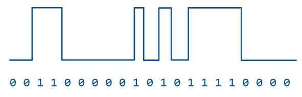Thay vào đó, chúng ta phải sử dụng modulation (điều chế) để truyền dữ liệu. Chúng ta bắt đầu với carrier signal (tín hiệu sóng mang), vốn là một sóng có tần số cố định (ví dụ: sóng sin). Sóng này không mang thông tin, nhưng có tần số cao nên dễ truyền hơn. Sau đó, chúng ta chồng tín hiệu dữ liệu (còn gọi là modulation signal – tín hiệu điều chế) lên trên sóng mang. Dạng sóng thu được vừa có tần số cao (dễ truyền), vừa chứa dữ liệu cần gửi. Lưu ý rằng phía thu sẽ cần tách dạng sóng đã điều chế để khôi phục lại chuỗi 1 và 0.
Có nhiều chiến lược điều chế tín hiệu dữ liệu lên sóng mang. Trong amplitude modulation (AM) (điều chế biên độ), chúng ta thay đổi độ cao của sóng mang dựa trên tín hiệu đầu vào. Để truyền bit 1, làm sóng sin cao; để truyền bit 0, làm sóng sin thấp. Trong frequency modulation (FM) (điều chế tần số), chúng ta thay đổi tần số (độ rộng) của sóng mang dựa trên tín hiệu đầu vào. Để truyền bit 1, làm sóng sin hẹp (tần số cao hơn); để truyền bit 0, làm sóng sin rộng (tần số thấp hơn). Ngoài ra còn có các chiến lược điều chế phức tạp hơn, như phase modulation (điều chế pha), hoặc kết hợp giữa điều chế biên độ và điều chế pha.
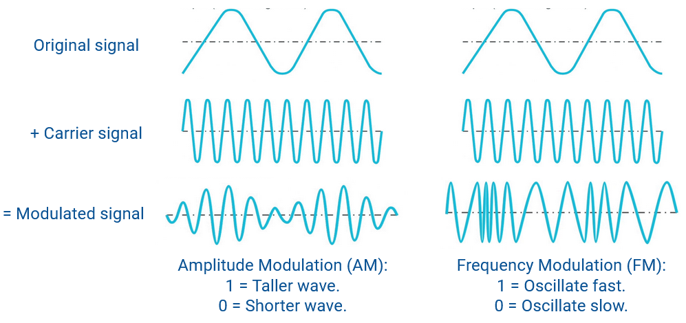Nhiễu và can nhiễu (Noise and Interference)
Vì kết nối không dây là môi trường dùng chung, chúng ta cần xử lý noise (nhiễu) và interference (can nhiễu), những yếu tố có thể làm hỏng tín hiệu nhận được. Nhiễu luôn tồn tại, ngay cả khi không có ai khác gần đó đang truyền dữ liệu. (Ví dụ: ngay cả khi không ai xung quanh bạn nói chuyện, vẫn có tiếng ồn môi trường từ thiên nhiên.) Nhiễu nền này được gọi là noise floor (mức nhiễu nền). Ngược lại, can nhiễu đề cập đến việc các bộ phát khác cố tình gửi tín hiệu gây nhiễu cho tín hiệu của chúng ta.
SINR (Signal to Interference and Noise Ratio) là một chỉ số dùng để đo chất lượng kết nối không dây tại phía thu. Đúng như tên gọi, SINR là công suất của tín hiệu chia cho tổng công suất của can nhiễu và nhiễu.
$$\text{SINR} = \frac{P_\text{signal}}{P_\text{interference} + P_\text{noise}}$$
SINR là một đại lượng không thứ nguyên, vì nó là tỷ số của hai giá trị. Nó cũng có thể được biểu diễn theo đơn vị decibel (dB), là cách đo tỷ số theo thang logarit. Ở mức 0 dB, tỷ số là 1, và khi SINR tăng thêm 10 dB, tỷ số thực tế lớn hơn gấp 10 lần (ví dụ: tín hiệu mạnh hơn gấp 10 lần, hoặc nhiễu/can nhiễu yếu hơn gấp 10 lần).
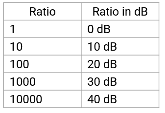$$\text{SINR}\text{dB} = 10 \cdot \log{10}\left(\frac{P_\text{signal}}{P_\text{interference} + P_\text{noise}}\right)$$
Phương trình này cho chúng ta biết rằng nếu có nhiều nhiễu hơn, chúng ta phải truyền tín hiệu với công suất lớn hơn. Ngoài ra, có thể áp dụng coding gain (lợi ích từ mã hóa – ví dụ: mã sửa lỗi), để ngay cả khi tín hiệu yếu và bị trộn lẫn với nhiễu và can nhiễu, chúng ta vẫn gửi tín hiệu với đủ dữ liệu dự phòng để phía thu có thể khôi phục lại tín hiệu.
Dung lượng Shannon (Shannon capacity) đưa ra giới hạn lý thuyết về lượng dữ liệu tối đa có thể truyền qua một kênh trong một đơn vị thời gian, với mức nhiễu (noise) và can nhiễu (interference) nhất định trên kênh đó. Công thức này áp dụng không chỉ cho các kết nối không dây (wireless links), mà còn cho các loại kết nối khác (ví dụ: kết nối có dây).
$$C = B \cdot \log_2(1 + \text{SINR})$$
Trong phương trình này, $$B$$ là bandwidth (băng thông) của kênh. $$\text{SINR}$$ là signal-to-interference-and-noise ratio (tỷ số tín hiệu trên nhiễu và can nhiễu). $$C$$ là giới hạn lý thuyết về lượng dữ liệu tối đa có thể truyền qua kênh trong một đơn vị thời gian, được đo bằng bits per second (bit trên giây). Lưu ý rằng trong phương trình này, băng thông được đo bằng hiệu giữa tần số cao nhất và tần số thấp nhất mà bộ thu có thể hiểu.
Phương trình này cho chúng ta biết rằng khi băng thông tăng, chúng ta có thể truyền nhiều dữ liệu hơn trong một đơn vị thời gian. Nó cũng cho thấy rằng khi SINR tăng (tín hiệu mạnh hơn hoặc ít nhiễu hơn), chúng ta có thể truyền nhiều dữ liệu hơn. Nếu chúng ta cần một kết nối với dung lượng mục tiêu cụ thể (ví dụ: 1 Mbps), chúng ta có thể thay các thông số vật lý của kết nối vào phương trình này để kiểm tra xem kết nối có đáp ứng được dung lượng mong muốn hay không.
Ví dụ, hãy xét hệ thống điện thoại cố định truyền thống (plain old telephone system). Hệ thống này có băng thông 3 kHz, nghĩa là điện thoại có thể xử lý các tần số từ 300 Hz đến 3300 Hz. Ngoài ra, hệ thống này có SINR xấp xỉ 20 dB, tương đương tỷ số 100 (0 dB = 1x, 10 dB = 10x, 20 dB = 100x, 30 dB = 1000x, v.v.). Thay các giá trị này vào phương trình, ta có:
$$C = 4000 \cdot \log_2(1 + 100) \approx 20000$$
Điều này cho thấy hệ thống điện thoại có thể truyền khoảng 20 kbps (kilobits per second – kilobit trên giây).
Khác biệt: Attenuation (Suy hao tín hiệu)
Tín hiệu không dây (wireless signals) yếu đi đáng kể khi khoảng cách tăng. Ngược lại, tín hiệu có dây (wired signals) cũng yếu đi theo khoảng cách, nhưng mức độ nhỏ hơn nhiều. Trong các hệ thống không dây, thiết kế phải tính đến hiện tượng suy hao tín hiệu, trong khi ở hệ thống có dây, suy hao thường không phải là yếu tố thiết kế chính.
Điều này tạo ra một sự đánh đổi cơ bản khi thiết kế hệ thống không dây: chúng ta muốn tối đa hóa hiệu năng bằng cách làm cho kết nối chính xác, nhanh và có tầm xa; nhưng đồng thời muốn giảm thiểu việc sử dụng tài nguyên bằng cách tiết kiệm năng lượng (ví dụ: pin laptop) và sử dụng ít phổ tần (frequency spectrum) hơn (việc cấp phép phổ tần có thể tốn kém). Tuy nhiên, để có tín hiệu tốt hơn, cần nhiều công suất hơn hoặc băng thông tần số lớn hơn.
Free Space Model (Mô hình không gian tự do)
Một cách đơn giản để mô hình hóa suy hao tín hiệu là free-space model (mô hình không gian tự do, còn gọi là line-of-sight model – mô hình đường thẳng tầm nhìn), trong đó giả định rằng bộ phát (transmitter) và bộ thu (receiver) tồn tại trong một môi trường hoàn toàn trống rỗng. Tín hiệu lan tỏa ra mọi hướng, không có vật cản (ngay cả bề mặt Trái Đất).
Trong mô hình này, công suất tín hiệu tỉ lệ nghịch với bình phương khoảng cách giữa bộ phát và bộ thu, theo inverse-square law (định luật nghịch đảo bình phương):
$$P_r \propto \frac{P_t}{d^2}$$
Trong phương trình này, $$P_r$$ là công suất tại bộ thu, $$P_t$$ là công suất tại bộ phát, và $$d$$ là khoảng cách giữa bộ phát và bộ thu. Nếu khoảng cách tăng gấp đôi, tín hiệu tại bộ thu sẽ yếu đi còn $$1/4$$. Nếu khoảng cách tăng gấp 10 lần, tín hiệu tại bộ thu sẽ yếu đi còn $$1/100$$.

Trực quan mà nói, định luật nghịch đảo bình phương áp dụng ở đây vì tín hiệu lan tỏa ra mọi hướng. Tại một thời điểm, tín hiệu đã lan ra thành một hình cầu bao quanh bộ phát, và hình cầu này lớn dần khi tín hiệu lan xa hơn. Diện tích bề mặt của hình cầu bán kính $$r$$ là $$4\pi r^2$$, vì vậy khi tín hiệu lan ra, nó được phân bố trên một diện tích tăng theo bình phương khoảng cách. Ví dụ, khi khoảng cách tăng gấp đôi, diện tích bề mặt hình cầu tăng gấp 4 lần, do đó tín hiệu yếu đi còn $$1/4$$.
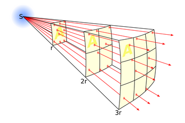Ngoài khoảng cách, chúng ta cũng cần xem xét loại antenna (ăng-ten) được sử dụng ở bộ phát và bộ thu. Điều này dẫn đến Friis equation (phương trình Friis) để đo cường độ tín hiệu theo khoảng cách:
$$\begin{align*} P_r &= P_t \cdot G_t \cdot G_r \cdot \left(\frac{\lambda^2}{4\pi}\right) \left(\frac{1}{4\pi d^2}\right) \ &= P_t \cdot G_t \cdot G_r \cdot \left(\frac{\lambda}{4\pi d}\right)^2 \ \end{align*}$$
Trong phương trình này, $$P_r$$ là công suất tại bộ thu, $$P_t$$ là công suất tại bộ phát. $$G_t$$ là gain (độ lợi) của bộ phát, $$G_r$$ là độ lợi của bộ thu. $$\lambda$$ là wavelength (bước sóng), được dùng để biểu diễn diện tích hiệu dụng của ăng-ten. $$d$$ là khoảng cách giữa các ăng-ten.
Ý nghĩa của phương trình: để tính công suất tín hiệu tại bộ thu, bắt đầu từ công suất tại bộ phát $$P_t$$, nhân với độ lợi của hai ăng-ten $$G_t$$ và $$G_r$$. Độ lợi cao hơn nghĩa là ăng-ten tốt hơn trong việc phát hoặc thu tín hiệu.
Như đã thấy, khoảng cách ảnh hưởng đến cường độ tín hiệu theo định luật nghịch đảo bình phương, giải thích cho thành phần $$\frac{1}{4\pi d^2}$$.
Thành phần $$\frac{\lambda^2}{4\pi}$$ liên quan đến aperture (diện tích hiệu dụng) của ăng-ten thu. Trực quan, nếu bạn chiếu ánh sáng vào một tờ giấy, ánh sáng sẽ chiếu vào tờ giấy đó; nếu tờ giấy lớn hơn, nhiều ánh sáng hơn sẽ chiếu vào. Diện tích hiệu dụng của ăng-ten có thể tính bằng $$\frac{\lambda^2}{4\pi}$$. Lưu ý rằng $$(4\pi)^2$$ trong phương trình xuất phát từ hai yếu tố $$4\pi$$: một từ định luật nghịch đảo bình phương và một từ công thức diện tích hiệu dụng.
Chúng ta cũng có thể viết lại phương trình Friis bằng cách chia cả hai vế cho $$P_t$$:
$$\frac{P_r}{P_t} = G_t \cdot G_r \cdot \left(\frac{\lambda}{4\pi d}\right)^2$$
Phương trình này cho thấy tỷ lệ công suất tín hiệu tại bộ thu so với bộ phát (ví dụ: bằng một nửa, hoặc $$1/100$$ so với công suất tại bộ phát) phụ thuộc vào độ lợi của ăng-ten, nghịch đảo bình phương khoảng cách, và diện tích hiệu dụng của ăng-ten.
Một cách khác để viết phương trình Friis là lấy logarit hai vế, cho phép biểu diễn công suất và độ lợi theo đơn vị decibel (dB):
$$P_r^\text{dB} = P_t^\text{dB} + G_t^\text{dB} + G_r^\text{dB} + 20 \log_{10} \left(\frac{\lambda}{4\pi d}\right)$$
Mô hình không gian trống là một mô hình lý thuyết hữu ích để đo lường cường độ tín hiệu lý tưởng tại bộ thu, tuy nhiên trên thực tế, các chướng ngại vật vật lý (ví dụ: bề mặt Trái Đất) ngăn cản chúng ta đạt được giá trị lý tưởng này.
Link Budget (Ngân sách liên kết)
Nếu tín hiệu yếu dần theo khoảng cách, làm thế nào để biết một liên kết có thực sự hoạt động hay không? Nói cách khác, làm thế nào để biết bộ thu (receiver) có thể phát hiện được một tín hiệu đủ rõ ràng để giải mã hay không?
Để đo lường khả năng hoạt động của một liên kết, chúng ta có thể tính link budget (ngân sách liên kết), bao gồm tất cả các gains (độ lợi) và losses (suy hao) trên đường truyền.
$$P_r^\text{dB} = P_t^\text{dB} + \sum \text{gains} - \sum \text{losses}$$
Trong phương trình này, $$P_r$$ là công suất tín hiệu tại bộ thu, và $$P_t$$ là công suất tín hiệu tại bộ phát (sender). Tất cả các độ lợi (ví dụ: độ lợi ăng-ten cao hơn) sẽ cộng vào ngân sách liên kết, và tất cả các suy hao (ví dụ: path loss – suy hao đường truyền do khoảng cách xa) sẽ trừ khỏi ngân sách liên kết.
Cộng tất cả độ lợi và trừ tất cả suy hao sẽ cho chúng ta biết cường độ tín hiệu tại bộ thu. Chúng ta có thể so sánh giá trị này với receiver sensitivity (độ nhạy của bộ thu) – tức là mức tín hiệu tối thiểu mà bộ thu cần để trích xuất thông tin hữu ích. So sánh này cho ra link budget. Nếu ngân sách tổng thể dương, liên kết khả thi và có thể hoạt động tốt. Nếu ngân sách âm, liên kết không khả thi.
Lưu ý rằng link budget được tính theo đơn vị decibel (dB), là thang đo logarit. Điều này cho phép chúng ta sử dụng phép cộng và trừ thay vì nhân và chia. Ví dụ: độ lợi công suất gấp 1000 lần được biểu diễn bằng cách cộng 30 dB, và suy hao xuống còn 1% công suất được biểu diễn bằng cách trừ 20 dB.

Ví dụ: Công suất tín hiệu tại bộ phát là 10 dB. Tín hiệu đi qua một đoạn cáp, một lightning arrestor (thiết bị chống sét – bạn không cần biết chi tiết), và một đoạn cáp khác, lần lượt mất 0,44 dB, 0,1 dB và 2,21 dB. Sau đó, tín hiệu được phát qua ăng-ten, tăng thêm 25 dB. Tín hiệu truyền qua 10 km không gian, mất 120 dB. Tín hiệu được thu bởi ăng-ten, tăng thêm 25 dB. Sau đó, tín hiệu đi qua thêm các đoạn cáp, mất 0,44 dB, 0,1 dB và 2,21 dB, trước khi đến bộ thu. Cộng tất cả độ lợi và trừ tất cả suy hao, ta tính được công suất tín hiệu tại bộ thu là -65,5 dB.
So sánh với độ nhạy bộ thu là -80 dB: bộ thu có thể nhận bất kỳ tín hiệu nào mạnh hơn -80 dB. Vì -65,5 dB > -80 dB, link budget là dương, và liên kết sẽ hoạt động.
Link margin (biên độ liên kết) là hiệu giữa công suất tín hiệu tại bộ thu và độ nhạy của bộ thu. Nếu nhận được tín hiệu 30 dB và độ nhạy cho phép phát hiện tín hiệu trên 10 dB, thì link margin là 20 dB. Trong ví dụ trên, link margin là 14,5 dB.
Link margin cho biết chất lượng của liên kết. Nếu link margin âm, liên kết sẽ không hoạt động và tín hiệu sẽ không được nhận. Link margin càng cao càng tốt, vì tín hiệu sẽ ổn định và ít bị ảnh hưởng bởi nhiễu hoặc các vấn đề khác.
Khác biệt: Environments Change (Môi trường thay đổi)
Môi trường không dây (wireless environment) có thể thay đổi nhanh chóng. Các thiết bị có thể di chuyển. Môi trường có thể thay đổi (ví dụ: một vật cản xuất hiện giữa các thiết bị). Các kết nối khác có thể bắt đầu gây nhiễu cho liên lạc của chúng ta.
Trong free-space model (mô hình không gian tự do) đã đề cập trước đó, khoảng cách $$d$$ giữa các thiết bị được coi là hằng số. Nhưng nếu thiết bị di chuyển thì sao? Chúng ta cũng giả định không có vật cản và không có tín hiệu gây nhiễu. Vậy mô hình sẽ thay đổi thế nào khi có các yếu tố này?
Trong free-space model, giả sử ăng-ten không đổi (cùng độ lợi, cùng diện tích hiệu dụng), chúng ta có đồ thị mượt mà, trong đó cường độ tín hiệu giảm dần khi khoảng cách tăng. Khi tính đến môi trường thay đổi, đồ thị khoảng cách – cường độ tín hiệu trở nên dao động mạnh hơn.
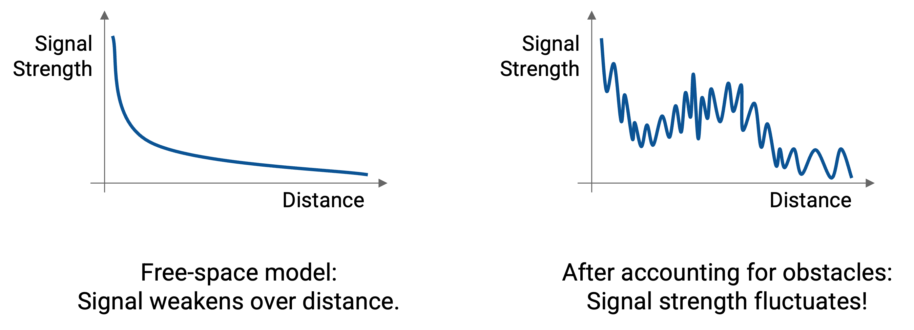Đồ thị này thực chất là tổng của ba đồ thị nhỏ hơn, mỗi đồ thị thể hiện một đặc tính môi trường ảnh hưởng đến cường độ tín hiệu theo khoảng cách. Một số đặc tính thay đổi chậm khi khoảng cách tăng, trong khi một số thay đổi nhanh và thất thường.
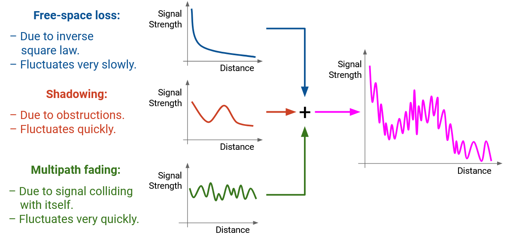- Free-space path loss – suy hao đường truyền trong không gian tự do: tín hiệu giảm chậm và đều theo khoảng cách, tuân theo inverse-square law (định luật nghịch đảo bình phương).
- Shadowing – hiện tượng bóng che: xảy ra khi vật cản vật lý nằm giữa bộ phát và bộ thu chặn tín hiệu. Tín hiệu phải khúc xạ hoặc phản xạ để đi vòng qua vật cản, khiến tín hiệu đến bộ thu yếu hơn. Khi di chuyển, tín hiệu có thể yếu đi hoặc mạnh lên tùy vị trí vật cản.
- Multipath fading – hiện tượng suy giảm đa đường: xảy ra khi sóng phản xạ và khúc xạ trên các vật cản, tạo ra các bản sao tín hiệu đến bộ thu với độ trễ khác nhau. Nếu các tín hiệu này lệch pha, chúng có thể gây giao thoa và làm suy yếu tín hiệu.
Multipath fading có thể gây ra biến đổi rất nhỏ nhưng rõ rệt trong cường độ tín hiệu – chỉ cần thay đổi khoảng cách một chút cũng có thể làm tín hiệu mạnh hơn hoặc yếu đi.
Khi xét cả ba yếu tố này cùng lúc, đồ thị tổng thể sẽ thể hiện sự biến thiên phức tạp của tín hiệu theo khoảng cách. Nếu thiết bị đứng yên, tín hiệu sẽ ở một điểm cố định trên đồ thị; nếu di chuyển, tín hiệu sẽ thay đổi theo đường cong này. Khi môi trường thay đổi (vật cản xuất hiện hoặc biến mất), bản thân đồ thị cũng thay đổi.
Approximating Path Loss (Xấp xỉ suy hao đường truyền)
Việc xấp xỉ path loss (suy hao đường truyền) từ free-space loss, shadowing và multipath fading là rất khó, đặc biệt khi có vật cản khiến tín hiệu đi theo nhiều đường khác nhau và gây giao thoa lệch pha tại bộ thu.
Một mô hình đơn giản hơn để xấp xỉ suy hao là two-ray model (mô hình hai tia). Trong mô hình này, tín hiệu truyền theo hai đường: một đường thẳng line-of-sight (tầm nhìn thẳng) từ bộ phát đến bộ thu, và một đường phản xạ từ mặt đất (ground-bounce) đến bộ thu. Đây vẫn là một tín hiệu phát ra từ bộ phát, nhưng một phần sóng đến trực tiếp, phần khác phản xạ từ mặt đất.
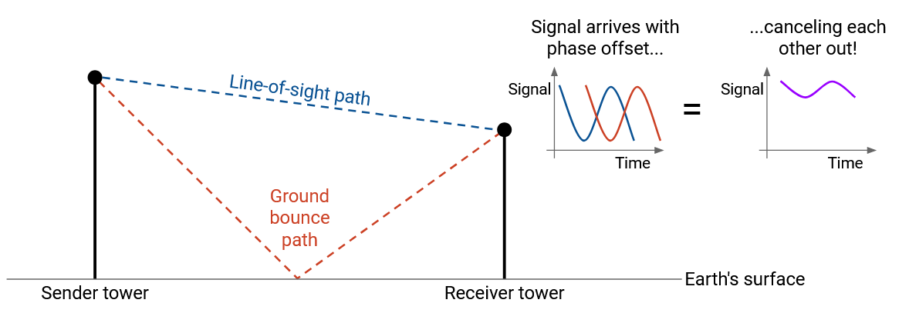Nếu khoảng cách đủ xa, hai sóng từ hai đường sẽ lệch pha 180°, gây giao thoa triệt tiêu (destructive interference) và làm tín hiệu tại bộ thu yếu đi đáng kể. Khi đó, cường độ tín hiệu không còn tỉ lệ với $$1/d^2$$ mà tỉ lệ với $$1/d^4$$ – tức là suy giảm nhanh hơn nhiều khi khoảng cách tăng.
Trong free-space model, không tính đến vật cản (kể cả bề mặt Trái Đất), nên tín hiệu tỉ lệ với $$1/d^2$$. Trong two-ray model, tính đến bề mặt Trái Đất khiến tín hiệu tỉ lệ với $$1/d^4$$.
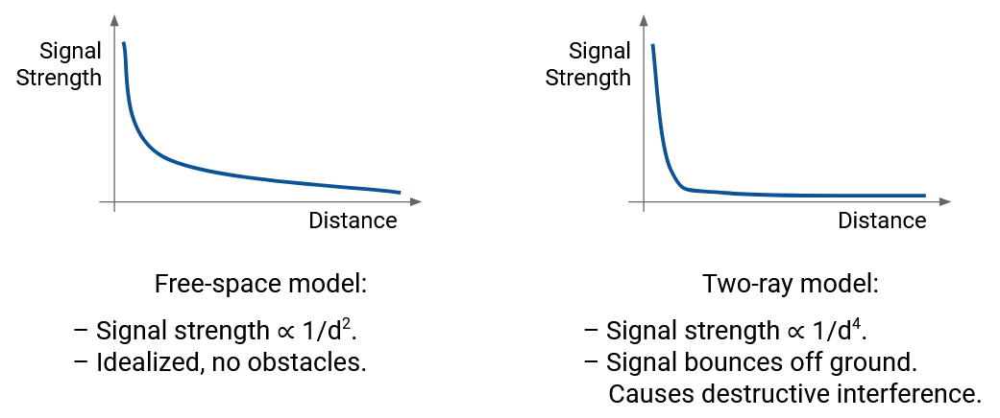Nếu tồn tại các vật cản khác ngoài bề mặt Trái Đất, two-ray model (mô hình hai tia) sẽ không tính đến chúng. Trong các môi trường phức tạp hơn, chúng ta có thể xây dựng general ray tracing models (mô hình dò tia tổng quát), mô phỏng việc tín hiệu bị phản xạ (reflected), tán xạ (scattered) và nhiễu xạ (diffracted). Các mô hình này yêu cầu thông tin chi tiết về môi trường (ví dụ: vị trí các vật cản) và có thể được xây dựng bằng mô phỏng máy tính. Trong các mô hình này, các phiên bản tín hiệu bị phản xạ thường chiếm ưu thế so với tín hiệu truyền thẳng không bị cản (unobstructed line-of-sight).

Từ các mô hình này, chúng ta có thể rút ra một mô hình suy hao đường truyền (path loss model) đơn giản hơn, liên hệ giữa khoảng cách và cường độ tín hiệu:
$$P_r = P_t K d^\gamma$$
Trong phương trình này, như trước, $$P_r$$ và $$P_t$$ lần lượt là công suất tín hiệu tại bộ thu (receiver signal power) và công suất tín hiệu tại bộ phát (transmitter signal power), $$d$$ là khoảng cách.
$$K$$ và $$\gamma$$ là các hằng số được xác định thực nghiệm, dựa trên môi trường và mô hình. Ví dụ, nếu có nhiều vật cản đặt ở vị trí bất lợi, $$K$$ có thể rất nhỏ, khiến tín hiệu tại bộ thu yếu.
Trong thực tế, $$\gamma$$ nằm trong khoảng từ 2 đến 8. Trong trường hợp tốt nhất, cường độ tín hiệu tỉ lệ với $$1/d^2$$, tương tự free-space model (mô hình không gian tự do). Trong trường hợp xấu nhất, cường độ tín hiệu tỉ lệ với $$1/d^8$$, và tín hiệu yếu đi nhanh hơn nhiều khi khoảng cách tăng.
Khác biệt: Detecting Collisions (Phát hiện va chạm)
Trong kết nối có dây (wired), việc phát hiện va chạm (collision) thường dễ dàng. Trên một kết nối point-to-point (điểm-điểm), va chạm có thể không xảy ra. Chúng ta thường có thể phát hiện va chạm chỉ bằng cách cảm nhận tín hiệu trên dây. Có thể tồn tại vấn đề về propagation delay (độ trễ lan truyền), nhưng về cơ bản, chỉ có một tín hiệu trên dây cần được cảm nhận.
Ngược lại, trong kết nối không dây (wireless), việc phát hiện va chạm khó hơn nhiều, vì va chạm còn phụ thuộc vào yếu tố không gian. Sóng có thể va chạm ở một vị trí nhưng không va chạm ở vị trí khác.
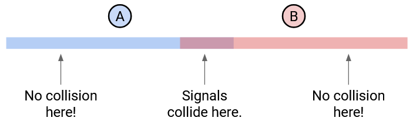Thiết kế cơ chế phát hiện và tránh va chạm (collision detection và collision avoidance) trong hệ thống không dây phức tạp hơn, nhưng vẫn cần thiết để nhiều thiết bị có thể truyền trên cùng một môi trường dùng chung (shared medium). Có nhiều phương pháp multiple access (truy nhập đa điểm), bao gồm phân bổ tần số cố định (fixed frequency allocation) hoặc điều phối thời gian truyền. Phương pháp nào hiệu quả nhất phụ thuộc vào môi trường. Ví dụ, ở nơi hẻo lánh, có thể chấp nhận để va chạm xảy ra và xử lý sau. Trong phần này, chúng ta tập trung vào phương pháp CSMA (Carrier Sense Multiple Access) – cảm nhận sóng mang và không truyền nếu phát hiện có thiết bị khác đang truyền.
Để đơn giản, trong phần này, chúng ta bỏ qua vật cản, nghĩa là tín hiệu lan tỏa ra mọi hướng. Giả sử tín hiệu lan truyền đến một khoảng cách nhất định với cường độ tối đa, và không thể phát hiện được ngoài khoảng cách đó. Ngoài ra, trong các ví dụ minh họa, giả sử tất cả thiết bị được bố trí trên một đường thẳng, nên chỉ cần xét tín hiệu lan sang trái và phải. Trong thực tế, tín hiệu lan tỏa trong không gian ba chiều.
Vấn đề với CSMA
Để kiểm tra xem có thiết bị khác đang truyền hay không, bộ thu phát (radio) sẽ cố gắng phát hiện năng lượng vượt quá một ngưỡng nhất định. Nếu phát hiện, kết luận rằng có thiết bị khác đang truyền.
Chiến lược này hoạt động tốt nếu hai cặp thiết bị ở xa nhau.
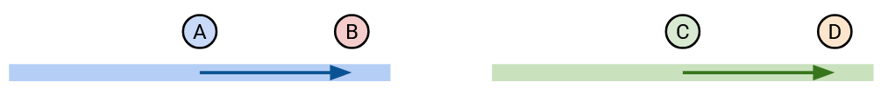Ví dụ: A và B muốn liên lạc, C và D cũng muốn liên lạc. A không phát hiện tín hiệu nào và bắt đầu truyền cho B. Lưu ý rằng tín hiệu của A lan tỏa ra mọi hướng, không chỉ về phía B. Sau đó, C cũng không phát hiện tín hiệu (vì nằm ngoài phạm vi của A), nên bắt đầu truyền cho D.
Chiến lược này cũng hoạt động tốt nếu hai cặp thiết bị ở trong phạm vi của nhau.
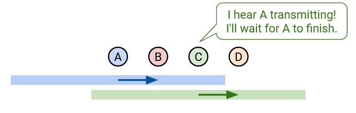Ví dụ: A và B muốn liên lạc, C và D cũng muốn liên lạc. A không phát hiện tín hiệu và bắt đầu truyền cho B. Sau đó, C phát hiện tín hiệu (vì A đang truyền và C nằm trong phạm vi), nên C sẽ chờ đến khi A kết thúc mới truyền cho D.
Tuy nhiên, đôi khi chiến lược này gây ra vấn đề.

Giả sử A và C đều muốn truyền cho B. A không phát hiện tín hiệu và bắt đầu truyền cho B. Sau đó, C cũng không phát hiện tín hiệu (vì nằm ngoài phạm vi của A), nên cũng bắt đầu truyền cho B. Kết quả là xảy ra va chạm tại B.
Trường hợp này gọi là hidden terminal problem (vấn đề nút ẩn). Hai bộ phát (A và C) nằm ngoài phạm vi của nhau, nên không thể phát hiện rằng đang có truyền dữ liệu.
Dưới đây là một trường hợp khác mà CSMA (Carrier Sense Multiple Access) gặp vấn đề:
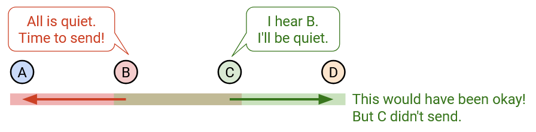Trong trường hợp này, giả sử B muốn truyền dữ liệu cho A, và C muốn truyền dữ liệu cho D. Đầu tiên, B không phát hiện tín hiệu nào và bắt đầu truyền cho A. Hãy nhớ rằng tín hiệu của B lan tỏa ra mọi hướng, bao gồm cả đến C. Lúc này, C muốn truyền cho D nhưng phát hiện tín hiệu của B nên giữ im lặng.
Nếu quan sát kỹ, B và C thực ra có thể truyền đồng thời. Đúng là sẽ có va chạm (collision) ở vùng giữa B và C, nhưng các bộ thu (receiver) là A và D sẽ không phát hiện bất kỳ va chạm nào.
Trường hợp này được gọi là exposed terminal problem (vấn đề nút lộ). Trong tình huống này, hai phiên truyền hoàn toàn có thể diễn ra đồng thời, nhưng một phiên bị ngăn lại vì C phát hiện nhầm là có va chạm.
MACA for Collision Avoidance (MACA để tránh va chạm)
Thay vì sử dụng CSMA, MACA (Multiple Access with Collision Avoidance) là một phương pháp truy nhập đa điểm (multiple access) giúp giải quyết hidden terminal problem (vấn đề nút ẩn).
Vấn đề chính của CSMA là bộ phát (sender) phát hiện va chạm ở phía phát, trong khi vấn đề thực sự là va chạm xảy ra ở phía thu (receiver). Để giải quyết, MACA cho phép bộ thu thông báo xem nó có phát hiện va chạm hay không.
Giả sử A muốn gửi dữ liệu cho B. Một phiên truyền dữ liệu thành công gồm 3 bước:

- A gửi một gói RTS (Request To Send) kèm độ dài dữ liệu. Đây là cách A nói: “Tôi muốn gửi k bit cho B.”
- B gửi lại một gói CTS (Clear To Send) kèm độ dài dữ liệu. Điều này báo cho A rằng có thể gửi dữ liệu an toàn và xác nhận rằng không có va chạm ở phía thu. Gói CTS cũng cảnh báo tất cả các thiết bị trong phạm vi của B: “Tôi là B, tôi sắp nhận k bit, vui lòng không truyền trong thời gian này.”
- A truyền dữ liệu và B nhận dữ liệu. Cảnh báo CTS đảm bảo tất cả các thiết bị khác trong phạm vi của bộ thu giữ im lặng trong thời gian này.
Giao thức này giải quyết được hidden terminal problem. Hãy nhớ rằng, trong vấn đề nút ẩn, A và C đều cảm nhận kênh trống và bắt đầu truyền, gây va chạm tại B. Với giao thức này, nếu A gửi RTS, B sẽ gửi CTS, cảnh báo tất cả các thiết bị trong phạm vi của B (bao gồm C) giữ im lặng.
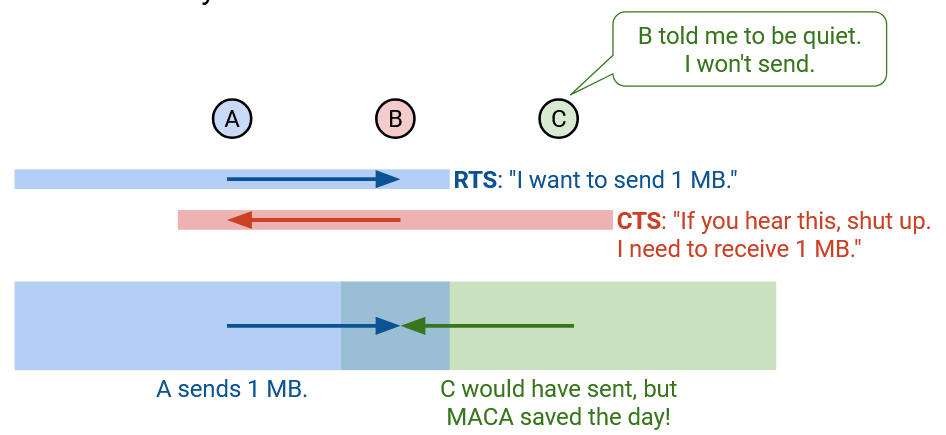Nếu bạn nghe thấy một gói RTS, điều đó có nghĩa là bạn nằm trong phạm vi của bộ phát. Bộ phát sắp lắng nghe CTS. Do đó, bạn cần giữ im lặng và chờ một time slot (khoảng thời gian) đủ lâu để không làm nhiễu CTS tại bộ phát bằng dữ liệu của bạn. Nói cách khác, bạn cần giữ im lặng để bộ phát nhận được CTS.
Sau khi RTS được gửi, nếu bạn nghe thấy CTS, điều đó có nghĩa là bạn cũng nằm trong phạm vi của bộ thu, vì vậy bạn cũng phải giữ im lặng trong suốt quá trình truyền dữ liệu. Nếu bạn không nghe thấy CTS, điều đó có nghĩa là bạn nằm ngoài phạm vi của bộ thu và có thể tự do truyền dữ liệu.
Với một số giả định nhất định, giao thức này cũng giải quyết được exposed terminal problem. Hãy nhớ rằng, trong vấn đề nút lộ, B đang gửi cho A và C đang gửi cho D. Với CSMA, C phát hiện tín hiệu của B và giữ im lặng, mặc dù thực tế có thể truyền an toàn. Với giao thức này, nếu B gửi RTS, C sẽ trì hoãn một time slot (để tránh làm nhiễu CTS tại B). Sau đó, vì C không nghe thấy CTS, điều này có nghĩa là C nằm ngoài phạm vi của bộ thu (A), nên C có thể bắt đầu truyền cho D một cách an toàn.
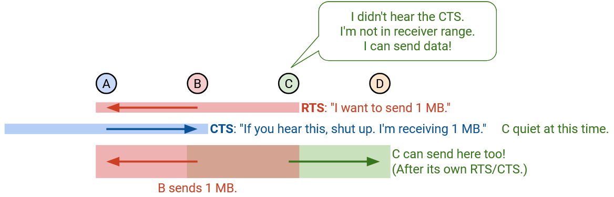Giả định để điều này hoạt động là C phải nghe được CTS từ D. Hãy nhớ rằng, ngay cả khi C là bộ phát, nó phải nhận được CTS trước khi bắt đầu truyền. Tuy nhiên, C thực tế cũng đang nghe dữ liệu từ B, nên có thể không nghe được CTS để bắt đầu truyền. Vấn đề chính ở đây là: Trong CSMA, bộ phát chỉ truyền. Nhưng trong MACA, bộ phát phải nhận được CTS trước khi truyền, và CTS này có thể bị nhiễu trong trường hợp exposed terminal.
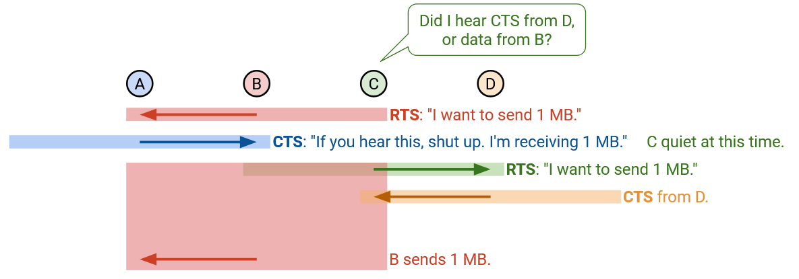Nếu chúng ta gửi RTS nhưng không nghe thấy CTS tương ứng, điều đó có nghĩa là chúng ta không được phép truyền. Có thể đang có va chạm ở phía thu, ví dụ: bộ thu đang nhận dữ liệu hoặc nhận hai yêu cầu cùng lúc. Nếu điều này xảy ra, chúng ta áp dụng binary exponential backoff (cơ chế lùi thời gian theo cấp số nhân nhị phân, tương tự CSMA/CD) và chờ lâu gấp đôi trước khi gửi lại RTS.
Trong MACA, mỗi thiết bị duy trì một giá trị CW (Contention Window), cho biết sau một va chạm cần chờ bao lâu trước khi gửi lại yêu cầu. Nếu phát hiện va chạm (không nhận được CTS), thiết bị chọn ngẫu nhiên một số trong khoảng từ 0 đến CW và chờ thời gian tương ứng trước khi gửi lại. Giá trị tối thiểu là 2 time slots và tối đa là 64 time slots, trong đó một time slot là thời gian cần để truyền một gói RTS. Khi RTS/CTS thành công, CW được đặt lại về giá trị tối thiểu là 2. Khi RTS thất bại (không có CTS), CW được nhân đôi, nhưng không vượt quá giá trị tối đa 64.
Tính năng MACAW: ACK (Để đảm bảo độ tin cậy)
MACAW (Multiple Access Collision Avoidance for Wireless) mang đến một số cải tiến so với giao thức MACA.
Cải tiến đầu tiên là bổ sung acknowledgement (gói xác nhận – ACK) để đảm bảo độ tin cậy. Như trước đây, bộ phát (sender) gửi một gói RTS (Request To Send), bộ thu (receiver) gửi một gói CTS (Clear To Send), và bộ phát truyền dữ liệu. Giờ đây, chúng ta thêm một bước nữa ở cuối, trong đó bộ thu gửi một gói ACK.
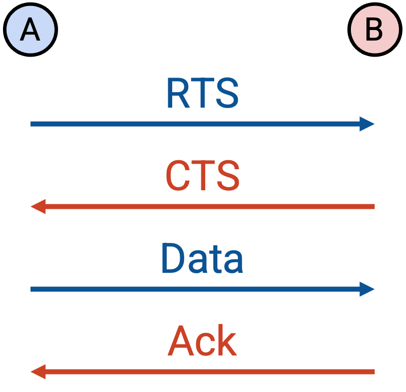Nếu dữ liệu bị mất, sẽ không có ACK, và bộ phát sẽ phải thử lại, bắt đầu lại với một RTS mới. Nếu dữ liệu được gửi chính xác nhưng ACK bị mất, bộ phát sẽ thử lại với một RTS mới, nhưng bộ thu có thể trả lời ngay bằng ACK thay vì CTS.
Tại sao chúng ta thêm ACK? Hãy nhớ rằng End-to-end Principle (Nguyên tắc đầu-cuối) cho rằng độ tin cậy phải được triển khai tại các máy đầu cuối để đảm bảo tính đúng đắn. Tuy nhiên, trong trường hợp này, chúng ta triển khai độ tin cậy ngay trong mạng, trên một liên kết đơn lẻ, chỉ nhằm cải thiện hiệu năng. Nếu không triển khai độ tin cậy ở tầng liên kết, TCP vẫn đảm bảo tính đúng đắn, nhưng một gói tin bị mất sẽ khiến TCP giảm tốc độ đáng kể (nhớ rằng cửa sổ tắc nghẽn – congestion window – sẽ bị giảm một nửa). Ngược lại, bằng cách triển khai độ tin cậy ở tầng liên kết, chúng ta có thể khôi phục sau mất gói hiệu quả hơn.
Tính năng MACAW: Better Backoff (Để đảm bảo công bằng)
Giao thức MACA thiếu công bằng khi hai nút va chạm cùng muốn gửi dữ liệu. Cụ thể, “người thắng” thường tiếp tục thắng, còn “người thua” tiếp tục thua.
Ví dụ về sự thiếu công bằng: Giả sử A và B đều có giá trị CW (Contention Window) là 2, và cả hai đồng thời cố gắng đặt chỗ kênh truyền. Giả sử A thắng, B thua. Khi đó, CW của A vẫn là 2, còn CW của B tăng gấp đôi thành 4. Điều này có nghĩa là A có khả năng đặt chỗ kênh sớm hơn và nhiều khả năng lại thắng. Khi B thử lại, A đã chiếm kênh, và CW của B lại tăng gấp đôi thành 8. Mẫu này tiếp diễn: A liên tục chiếm kênh nhanh chóng, còn B liên tục thất bại và phải chờ lâu hơn trước khi thử lại (và lại thất bại).

Để giải quyết vấn đề này, thay vì mỗi thiết bị có CW riêng, tất cả sẽ dùng chung một CW. Phần tiêu đề gói tin (packet header) giờ đây có một trường chứa giá trị CW, và nếu bạn nhận được một gói tin, bạn sẽ đặt CW của mình bằng giá trị trong gói đó. Vì tất cả cùng có CW như nhau, cơ chế thử lại sẽ không thiên vị thiết bị nào. Mỗi thiết bị chọn ngẫu nhiên một giá trị từ 0 đến CW và chờ tương ứng. (Lưu ý: Chúng ta đang đơn giản hóa một chút, điều này đúng nếu tất cả thiết bị đều trong phạm vi của nhau.)
MACAW cũng thay đổi quy tắc cập nhật CW để “mềm” hơn. Như trước, giá trị tối thiểu là 2 và tối đa là 64. Khi RTS thất bại (không nhận được CTS), CW được nhân với 1,5 (thay vì gấp đôi), và vẫn giới hạn không vượt quá 64. Khi truyền thành công một chuỗi RTS/CTS/DATA/ACK, CW giảm đi 1 (thay vì đặt lại về 2). Lưu ý rằng khi RTS/CTS thành công nhưng ACK thất bại, CW không thay đổi. Cách tiếp cận này đôi khi được gọi là Multiplicative Increase, Linear Decrease (MILD).
Tính năng MACAW: DS (Để xử lý Exposed Terminals)
Hãy nhớ lại ví dụ exposed terminal (nút lộ) trước đó, khi B muốn liên lạc với A. B gửi RTS, A gửi CTS, và B bắt đầu truyền dữ liệu. Lúc này, C không nghe thấy CTS, nghĩa là C nằm ngoài phạm vi của bộ thu và có thể truyền dữ liệu an toàn. Tuy nhiên, để truyền, C phải nghe được CTS. Điều này có thể không xảy ra, vì C cũng đang nghe dữ liệu từ B, và có thể xảy ra va chạm giữa dữ liệu của B và CTS từ D.
MACAW kết luận rằng trong trường hợp exposed terminal, các cặp B–A và C–D thực tế không thể truyền dữ liệu đồng thời. Nói cách khác, cả MACAW lẫn CSMA đều không giải quyết được vấn đề nút lộ.
Điều này có nghĩa là nếu chúng ta nằm trong phạm vi của bộ phát khác, chúng ta không thể truyền dữ liệu (ngay cả khi không nằm trong phạm vi của bộ thu kia). Nguyên nhân là vì chúng ta sẽ nghe dữ liệu từ bộ phát kia, và do đó không thể nghe được CTS cần thiết để bắt đầu truyền.
Để giải quyết vấn đề này, MACAW thêm một gói DS (Data Sending) trước khi truyền dữ liệu. Đây là cách bộ phát cảnh báo mọi thiết bị: “Tôi sắp gửi k bit dữ liệu, vui lòng giữ im lặng trong thời gian này.”
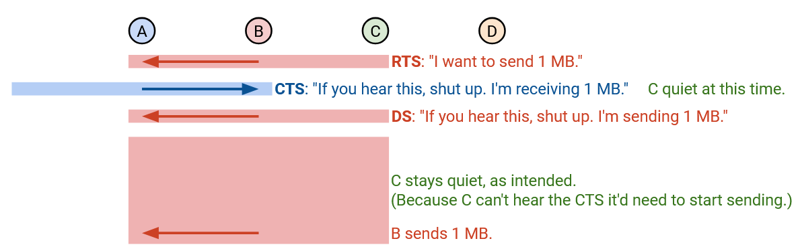Giao thức giờ đây có 5 bước:
- Bộ phát gửi RTS, yêu cầu truyền k bit dữ liệu.
- Bộ thu gửi CTS, thông báo cho mọi thiết bị trong phạm vi: Giữ im lặng, tôi đang nhận k bit dữ liệu.
- Bộ phát gửi DS, thông báo cho mọi thiết bị trong phạm vi: Giữ im lặng, tôi đang gửi k bit dữ liệu. (Các thiết bị khác không thể gửi dữ liệu, vì dữ liệu của tôi sẽ làm nhiễu CTS mà bạn cần nhận cho phiên truyền của mình.)
- Bộ phát truyền dữ liệu.
- Bộ thu gửi ACK.
Lưu ý rằng RTS và DS không trùng lặp chức năng. RTS là yêu cầu có thể bị từ chối (ví dụ: không nhận được CTS). DS xác nhận rằng yêu cầu đã được chấp thuận và buộc mọi thiết bị trong phạm vi của bộ phát phải giữ im lặng.
Tính năng MACAW: DS (Đồng bộ hóa – For Synchronization)
DS có một mục đích quan trọng thứ hai. Hãy xem lại ví dụ exposed terminal (nút lộ) trước đó, nhớ rằng MACAW chấp nhận “thất bại” và buộc hai phiên truyền phải diễn ra tách biệt.
Giả sử không có gói DS. Khi đó, như trước, B gửi một gói RTS (Request To Send), A gửi một gói CTS (Clear To Send), và B bắt đầu truyền dữ liệu. C nghe thấy RTS và trì hoãn một time slot (khoảng thời gian) để tránh làm gián đoạn B. Tuy nhiên, C không nghe thấy CTS. Lúc này, C sẽ gửi một RTS vô ích và sẽ không bao giờ nghe được CTS (vì CTS bị “chìm” trong dữ liệu từ B). C sẽ tiếp tục thử lại và gửi các yêu cầu RTS vô ích, nhưng không hề biết khi nào B sẽ ngừng truyền dữ liệu.
Ngược lại, B biết chính xác khi nào nó sẽ ngừng truyền dữ liệu. Điều này mang lại cho B lợi thế lớn trong vòng tranh chấp (contention) tiếp theo. Khi B truyền xong, nó có thể ngay lập tức gửi yêu cầu mới và nhiều khả năng sẽ thắng, tiếp tục giữ quyền truyền dữ liệu. Trong khi đó, C không biết khi nào B sẽ ngừng, nên phải đoán ngẫu nhiên thời điểm gửi yêu cầu mới. Khả năng cao là C sẽ đoán sai và gửi yêu cầu khi B vẫn đang truyền, dẫn đến thất bại và yêu cầu không được chấp nhận (va chạm).

Sự thiếu đồng bộ này dẫn đến mất công bằng. Nếu tôi thắng, tôi có khả năng sẽ thắng tiếp, vì tôi biết chính xác khi nào vòng tranh chấp tiếp theo diễn ra (ngay khi tôi truyền xong). Nếu bạn thua, bạn có khả năng sẽ tiếp tục thua, vì bạn không biết khi nào vòng tranh chấp tiếp theo diễn ra (bạn không biết khi nào tôi truyền xong). Thời gian tranh chấp thường rất ngắn, vì phần lớn thời gian được dùng để truyền dữ liệu. Tôi biết chính xác thời điểm đó, còn bạn thì không, nên tôi sẽ liên tục thắng.
Gói DS giải quyết vấn đề này, vì nó cho phép bộ phát thông báo cho mọi người khi nào vòng tranh chấp tiếp theo sẽ diễn ra. Giờ đây, B sử dụng gói DS để thông báo cho mọi người: “Tôi bắt đầu gửi k bit dữ liệu.” Nhờ đó, C không chỉ biết rằng mình không nên gửi các yêu cầu RTS vô ích, mà còn biết khi nào B sẽ truyền xong. Điều này giúp C có cơ hội công bằng hơn để thắng trong vòng tranh chấp tiếp theo.
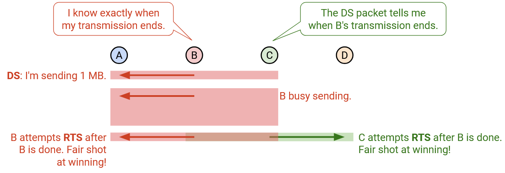Tính năng MACAW: RRTS (Đồng bộ hóa – For Synchronization)
Có một trường hợp khác mà đồng bộ hóa là yếu tố then chốt để đảm bảo công bằng. Giả sử A muốn gửi dữ liệu cho B, và D muốn gửi dữ liệu cho C.
A truyền cho B (A gửi RTS, B gửi CTS, A gửi DS và truyền dữ liệu). C nghe thấy CTS và phải giữ im lặng trong khi dữ liệu được truyền. Lúc này, D hoàn toàn “mù thông tin” và thất thế. D sẽ gửi RTS, nhưng sẽ không nghe thấy CTS vì C đang giữ im lặng. D sẽ tiếp tục thử lại vào những thời điểm ngẫu nhiên và liên tục thất bại, vì không biết khi nào A sẽ ngừng truyền dữ liệu.
Ngược lại, A biết chính xác khi nào nó sẽ ngừng truyền dữ liệu. Giống như trước, điều này mang lại cho A lợi thế lớn trong vòng tranh chấp tiếp theo. A có thể ngay lập tức gửi yêu cầu mới và giành quyền truyền. Trong khi đó, D không biết khi nào nên gửi lại yêu cầu. Cách duy nhất để D thắng là cực kỳ may mắn, gửi yêu cầu ngay sau khi A truyền xong nhưng trước khi A gửi lại yêu cầu.
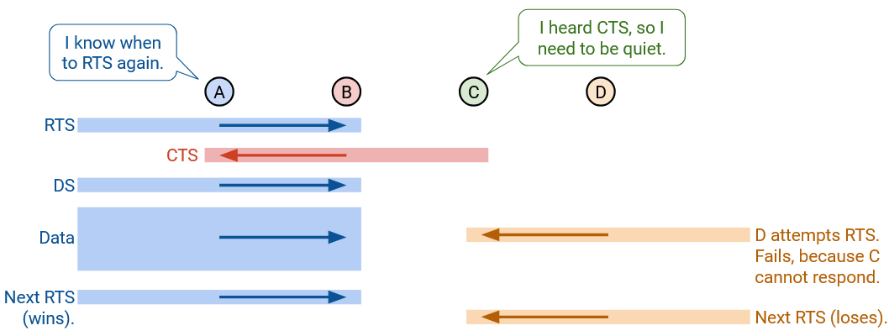Lưu ý rằng gói DS không giúp ích trong trường hợp này, vì hai bộ phát A và D nằm ngoài phạm vi của nhau. A sẽ gửi gói DS và thông báo khi nó đang truyền dữ liệu, nhưng D sẽ không nghe thấy, nên vẫn thất thế.
Để giải quyết vấn đề này, chúng ta sẽ để bộ thu tranh chấp thay cho bộ phát. D không biết khi nào nên gửi lại yêu cầu, nhưng C thì biết, vậy hãy để C gửi yêu cầu thay.
Khi D gửi RTS, C biết rằng D muốn liên lạc, nhưng C phải giữ im lặng cho đến vòng tranh chấp tiếp theo. Lưu ý rằng C biết khi nào vòng tranh chấp tiếp theo diễn ra, vì nó sẽ nghe thấy gói ACK từ B. Khi vòng tranh chấp tiếp theo bắt đầu, C gửi một gói mới gọi là RRTS (Request-for-RTS). Gói này ngay lập tức báo cho D rằng vòng tranh chấp đã bắt đầu, cho phép D gửi RTS ngay lập tức. Điều này giúp D có cơ hội công bằng hơn để thắng vòng tranh chấp.
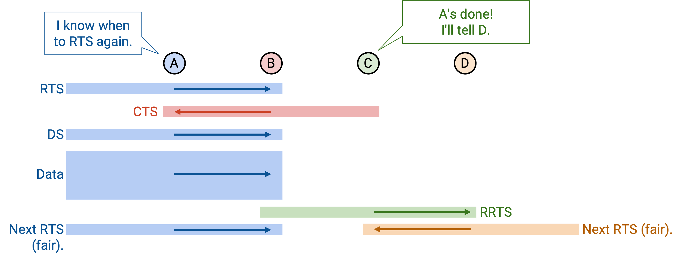Nếu bạn nghe thấy một gói RRTS, điều đó có nghĩa là có ai đó trong phạm vi của bạn đang cố gắng gửi yêu cầu, vì vậy bạn nên giữ im lặng trong 2 time slots để họ thực hiện trao đổi RTS/CTS.
Trong ví dụ, nếu C gửi RRTS, B sẽ nghe thấy và giữ im lặng trong 2 time slots, cho phép D gửi RTS và C gửi CTS. CTS sẽ yêu cầu B giữ im lặng, và cho phép phiên truyền D–C diễn ra.
Nói chung, bạn nên gửi RRTS nếu bạn nghe thấy RTS nhưng không được phép phản hồi, vì có ai đó đã yêu cầu bạn giữ im lặng.
DS và RRTS giúp đồng bộ hóa và đảm bảo các vòng tranh chấp công bằng hơn, nhưng chúng không giải quyết được mọi vấn đề. Xét trường hợp A gửi cho B và C gửi cho D. Giả sử C bắt đầu gửi cho D. Lúc này, nếu A gửi RTS, B sẽ không nghe thấy vì RTS bị “chìm” trong dữ liệu từ C. Cách duy nhất để RTS của A đến được B là trong khoảng trống rất ngắn giữa các lần truyền của C. Trong tình huống này, A chắc chắn sẽ thua, vì nó không biết khi nào C sẽ ngừng truyền, trong khi C biết chính xác thời điểm đó. Lưu ý rằng RRTS cũng không giúp được ở đây, vì RRTS chỉ được gửi nếu bạn nghe thấy RTS, nhưng B thậm chí không nghe thấy RTS. B sẽ không bao giờ biết rằng A muốn liên lạc, nên sẽ không gửi RRTS thay mặt A. Bài báo gốc về MACAW để lại vấn đề này chưa được giải quyết.
Mạng Di động (Cellular)
Tại sao nên nghiên cứu về Mạng Di động?
Kết nối di động không dây là tiêu chuẩn hiện đại. Điện thoại của bạn có thể kết nối Internet trong khi bạn đang ở trên một chiếc xe hơi đang di chuyển.
Các mạng Internet truyền thống không thể hỗ trợ điều này. Bạn có thể di chuyển từ phòng ngủ đến nhà bếp và vẫn có quyền truy cập Internet. Trong trường hợp đó, bạn đang ở trong phạm vi phủ sóng của Router (Bộ định tuyến) không dây tại nhà, thiết bị này sau đó được kết nối qua dây dẫn đến phần còn lại của Internet. Tuy nhiên, Internet truyền thống không cung cấp các kết nối liền mạch trên các khoảng cách xa (ví dụ: khi di chuyển bằng ô tô).
Có nhiều cách để triển khai kết nối di động không dây, nhưng mạng di động là công nghệ truy cập chiếm ưu thế hiện nay. Hơn một nửa lưu lượng web ngày nay bắt nguồn từ một thiết bị di động!
Mạng di động chỉ là một trong nhiều công nghệ có thể cung cấp kết nối di động không dây. Các công nghệ khác như vệ tinh hoặc quang học không gian tự do cũng tồn tại, mặc dù mạng di động vẫn là phương pháp chủ đạo ngày nay.
Trong tương lai, các ứng dụng hiệu suất cao yêu cầu công nghệ di động không dây, như ô tô tự lái hoặc thực tế ảo, có thể dẫn đến nhiều sự đổi mới hơn. Các mạng di động hiện tại có thể trở nên đắt đỏ một cách cấm đoán khi chúng ta cố gắng mở rộng quy mô để hỗ trợ các ứng dụng trong tương lai. Ngoài ra, các nhà khai thác mạng di động như AT&T và Verizon không có tiếng là đổi mới nhanh chóng. Sự đồng thuận chung là đây là một lĩnh vực chín muồi cho sự đột phá trong tương lai gần và là một lĩnh vực nghiên cứu tích cực.
Lược sử Mạng Di động
Công nghệ di động bắt nguồn từ hệ thống điện thoại cũ. Các mạng di động lần đầu tiên được phát triển để cho phép người dùng thực hiện các cuộc gọi điện thoại không dây, thay vì trên một đường dây điện thoại cố định có dây. Chiếc điện thoại di động đầu tiên được bán vào năm 1983 với giá $4,000 (cao hơn rất nhiều ngày nay, sau khi tính lạm phát).
Do công nghệ di động bắt nguồn từ mạng điện thoại (chứ không phải Internet), nhiều lựa chọn thiết kế khác với Internet truyền thống. Trong nhiều năm, công nghệ di động (ví dụ: điện thoại di động tiền-smartphone cho các cuộc gọi thoại) và Internet đã phát triển song song, mỗi bên có một bộ lựa chọn kiến trúc khác nhau.
Ví dụ, mạng di động sử dụng cơ chế resource reservations (dành riêng tài nguyên), trong khi Internet hiện đại sử dụng packet switching (chuyển mạch gói). Các mạng di động thường tư duy theo từng người dùng cá nhân, trong khi Internet chủ yếu tư duy theo từng luồng hoặc gói tin cá nhân. Mô hình kinh doanh của các mạng di động (ví dụ: tính phí người dùng theo phút) khác với Internet, vốn thường không theo dõi việc sử dụng nhiều như vậy.
Trong những năm gần đây, các mạng di động đã trở nên tương thích hơn với Internet truyền thống. Ngày nay, bạn có thể coi mạng di động như một mạng cục bộ Lớp 2 chuyên dụng có thể tương tác với phần còn lại của Internet TCP/IP truyền thống.
Các Tiêu chuẩn Di động
Trong Internet truyền thống, chúng ta đã thấy rằng các cơ quan tiêu chuẩn hóa giúp chúng ta chuẩn hóa các giao thức như TCP và IP. Mạng di động cũng có nhiều cơ quan tiêu chuẩn hóa hợp tác để tạo ra một tiêu chuẩn.
Ở một số khía cạnh, các cơ quan tiêu chuẩn hóa mạng di động có sự phức tạp chính trị trong đời thực nhiều hơn các cơ quan tiêu chuẩn hóa Internet. Để đạt được khả năng tương tác, tất cả các nhà sản xuất điện thoại di động và tất cả các nhà khai thác mạng (ví dụ: Verizon xây dựng các trạm phát sóng di động) cần phải đồng ý về các giao thức, xuống tận lớp vật lý.
Cơ quan tiêu chuẩn hóa chính trong thế giới di động là 3GPP (Dự án Đối tác Thế hệ thứ 3). Các nhà cung cấp thiết bị lớn và các công ty viễn thông đều tham gia vào tổ chức này. 3GPP đề xuất các tiêu chuẩn, sau đó được chuyển đến ITU (Liên minh Viễn thông Quốc tế). ITU là một phần của Liên Hợp Quốc và mỗi quốc gia có một phiếu bầu, vì vậy cũng có một số yếu tố chính trị liên quan đến các tiêu chuẩn. (Thông tin thú vị: Mỗi quốc gia có một phiếu bầu, vì vậy Mỹ có thể bị Liên minh châu Âu bỏ phiếu áp đảo.)
Thông thường, một thế hệ công nghệ mới được giới thiệu sau mỗi 10 năm. Bây giờ bạn đã biết các con số trong 2G, 3G, 4G và 5G đại diện cho điều gì (các thế hệ công nghệ di động). Mạng 5G được định nghĩa vào khoảng năm 2020, và các nhà khai thác vẫn đang triển khai công nghệ này. Việc lập kế hoạch cho tiêu chuẩn 6G sẽ bắt đầu trong vài năm tới (cuối những năm 2020).
Mỗi thế hệ cố gắng cải tiến so với thế hệ trước trên nhiều phương diện, bao gồm tốc độ dữ liệu lý thuyết cao nhất, tốc độ dữ liệu trung bình mà người dùng trải nghiệm, tính di động (kết nối trong khi người dùng đang di chuyển ở tốc độ cao), mật độ kết nối (số lượng thiết bị trong một khu vực cụ thể), v.v. Mỗi thế hệ thường hoạt động tốt hơn khoảng 10 lần so với thế hệ trước trên tất cả các phương diện này.
Ngoài những cải tiến về hiệu suất, thiết kế kiến trúc cũng đã phát triển qua các thế hệ, để chuyển từ thiết kế mạng điện thoại sang thiết kế Internet. Điện thoại 1G hoàn toàn là analog, được thiết kế cho các cuộc gọi thoại. 2G/3G vẫn chủ yếu là chuyển mạch kênh, tập trung vào lưu lượng thoại (một chút tin nhắn, hầu như không có lưu lượng Internet). Từ 4G trở đi, chúng ta đã chuyển sang kiến trúc packet-switched, và thoại giờ đây chỉ là một trong nhiều ứng dụng chạy trên mạng.
Các thông số kỹ thuật di động dài hàng nghìn trang và bao gồm hàng trăm tài liệu, và gần như không ai thực sự đọc hết chúng. Một đặc điểm bất tiện của các tiêu chuẩn này là mọi thứ đều được đổi tên khi chúng ta chuyển từ thế hệ này sang thế hệ tiếp theo. Ví dụ, các trạm phát sóng di động đã được gọi là "base station", "nodeB", "evolved NodeB (eNodeB)", và "next-gen Node B (gNB)", tất cả đều có nghĩa giống nhau. Trong lớp học này, chúng ta sẽ tự đặt ra thuật ngữ riêng để làm cho các tên gọi trở nên trực quan hơn. Nếu bạn xem qua một cuốn sách giáo khoa hoặc một thông số kỹ thuật, bạn có thể thấy các tên gọi khác nhau, nhưng các ý tưởng chúng ta sẽ thấy nhìn chung nên nhất quán về mặt khái niệm với sách giáo khoa và thông số kỹ thuật.
Thách thức chính: Tính di động (Mobility)
Thách thức chính khiến mạng di động trở nên khó khăn là mobility (tính di động). Hãy nhớ rằng, hãy nghĩ về mobility như việc điện thoại của bạn đang phát video khi bạn đang di chuyển trên đường cao tốc (tuy nhiên đừng xem video khi đang lái xe). Có bốn thách thức cơ bản mà chúng ta sẽ nghiên cứu:
- Discovery (Khám phá): Khi tôi đang di chuyển, làm cách nào để biết nên kết nối với trạm phát sóng di động nào?
- Authentication (Xác thực): Trạm phát sóng của AT&T có thể chỉ muốn cung cấp kết nối cho khách hàng của mình, chứ không phải các khách hàng khác. Làm thế nào trạm phát sóng di động đạt được điều này?
- Seamless communication (Giao tiếp liền mạch): Nếu tôi di chuyển ra khỏi phạm vi của một trạm phát sóng và vào phạm vi của một trạm phát sóng khác, kết nối của tôi phải liền mạch, không bị gián đoạn.
- Accountability (Giải trình trách nhiệm): Nếu khách hàng chỉ trả tiền cho 6GB dữ liệu, mạng nên ngừng cung cấp kết nối cho khách hàng (hoặc cung cấp kết nối kém hơn) sau khi khách hàng đã vượt quá giới hạn của họ. Yêu cầu này xuất phát từ mạng di động cũ (trả tiền theo phút gọi thoại), và vẫn tồn tại vì tài nguyên trong mạng di động rất khan hiếm.
Các thành phần hạ tầng: Trạm phát sóng vô tuyến (Radio Towers)
Các thành phần của một mạng di động là gì? Đầu tiên, có trạm phát sóng vô tuyến.
Trạm phát sóng vô tuyến có một ăng-ten. Bên trong trạm là một bộ thu phát vô tuyến, có chức năng chuyển đổi các bit kỹ thuật số thành tín hiệu analog được gửi qua giao diện không gian.
Cũng bên trong trạm là một bộ điều khiển vô tuyến, quyết định cách phân bổ tài nguyên vô tuyến.
Bạn có thể coi bộ điều khiển như một CPU đang chạy một bộ lập lịch. Bộ điều khiển phân bổ các đoạn tần số và thời gian khác nhau cho các khách hàng khác nhau, tùy thuộc vào nhu cầu và mô hình kinh doanh (ví dụ: khách hàng đang trả bao nhiêu tiền). Đây thực sự là một bài toán lập lịch khá khó, mặc dù chúng ta sẽ không thảo luận thêm ở đây.
Đây là một mô hình đơn giản hóa về việc bộ điều khiển vô tuyến phân bổ tài nguyên. Mỗi hình chữ nhật có màu cho chúng ta thấy rằng một người dùng (được ký hiệu bằng màu) có thể sử dụng tần số cụ thể đó, tại thời điểm cụ thể đó.
Mỗi mặt cắt dọc đại diện cho một khe thời gian, và cho bạn thấy các tần số đã được phân bổ cho người dùng trong mặt cắt đó như thế nào. Ví dụ, trong khe thời gian đầu tiên, người dùng màu xanh lam nhận được 3 khe tần số, người dùng màu cam nhận được 5 khe tần số và người dùng màu xám nhận được 4 khe tần số.
Mỗi mặt cắt ngang đại diện cho một tần số, và cho bạn thấy tần số cụ thể đó được phân bổ cho người dùng theo thời gian như thế nào. Ví dụ, hàng trên cùng cho thấy một tần số được phân bổ cho màu xám, sau đó là màu xanh lá cây, sau đó là màu xanh lam, sau đó là màu đỏ, và cứ thế tiếp tục.
Lưu ý rằng mô hình này đang chia sẻ tài nguyên bằng cách sử dụng reservations (cơ chế đặt trước), không phải nỗ lực tối đa. Một người dùng chỉ có thể gửi trong một tần số và thời gian đã được bộ điều khiển phân bổ cho họ.
Các bộ điều khiển vô tuyến trước đây thường được lắp đặt trong trạm phát sóng hoặc gần trạm, tuy nhiên ngày nay, đã có những nỗ lực để chuyển các bộ điều khiển lên đám mây để bảo trì và quản lý dễ dàng hơn.
Mỗi nhà khai thác vận hành nhiều trạm phát sóng di động, được bố trí khắp cả nước, để người dùng có thể kết nối với một trạm dù họ ở bất cứ đâu. Kết quả là một Radio Access Network (RAN) (Mạng Truy cập Vô tuyến).
Thông thường, mỗi trạm phát sóng nhận được một bộ tần số riêng mà nó có thể sử dụng, và các tần số được gán sao cho các trạm lân cận nhận được các dải tần số khác nhau. Điều này đảm bảo rằng các trạm lân cận không sử dụng cùng tần số và gây nhiễu cho nhau. Trong hình này, mỗi màu tương ứng với một bộ tần số. Có thể hai trạm cùng sử dụng bộ tần số màu xanh lam, nhưng chúng không nằm cạnh nhau nên sẽ không gây nhiễu. Bất kỳ trạm lân cận nào cũng đang sử dụng các tần số không chồng chéo. Lưu ý rằng các tần số thường được phân bổ theo nhu cầu, do đó một trạm phát sóng di động ở trung tâm thành phố San Francisco sẽ nhận được nhiều tần số hơn một trạm ở giữa một nơi hẻo lánh.
Các thành phần hạ tầng: Lõi Mạng Di động (Cellular Core)
Một người dùng di động giờ đây có thể gửi dữ liệu đến một trạm phát sóng di động. Trạm phát sóng di động giờ cần gửi dữ liệu đó đến phần còn lại của Internet.
Mỗi trạm phát sóng di động có một kết nối có dây đến cellular core (lõi mạng di động). Bạn có thể coi cellular core là hạ tầng backend của mạng di động (không phải phần hướng tới người dùng).
Cellular core chứa một số thành phần mặt phẳng dữ liệu. Bạn có thể coi chúng như các router và switch thông thường chuyển tiếp các gói tin giữa người dùng (thông qua các trạm phát sóng) và phần còn lại của mạng. Chúng ta sẽ tập trung vào hai loại router đặc biệt trong cellular core.
Radio gateway (Cổng vô tuyến) là ranh giới giữa RAN (các trạm phát sóng di động) và cellular core. Một trạm phát sóng di động chuyển tiếp dữ liệu của mình đến một trong những radio gateway này. Ở đầu kia của lõi, packet gateway (cổng gói tin) là ranh giới giữa mạng di động và phần còn lại của Internet. Dữ liệu từ người dùng cuối cùng sẽ đến packet gateway và được gửi ra Internet dưới dạng một gói TCP/IP tiêu chuẩn.
Cellular core cũng chứa một số thành phần mặt phẳng điều khiển. Chúng ta không có những thành phần này trong Internet truyền thống. Lưu lượng của người dùng không đến các thành phần này. Chúng ta sẽ tập trung vào hai thành phần mặt phẳng điều khiển.
Database (Cơ sở dữ liệu) lưu trữ thông tin về khách hàng, chẳng hạn như: Khách hàng sở hữu những thiết bị nào? Khách hàng có gói dữ liệu nào? Thiết bị của khách hàng hiện đang ở đâu (ví dụ: đang kết nối với trạm nào)?
Mobility manager (Trình quản lý di động) là một bộ điều khiển (hãy nghĩ nó giống như một CPU) quản lý chức năng mạng. Trình quản lý giúp chúng ta xác thực một người dùng (ví dụ: kiểm tra xem họ có thực sự là khách hàng của Verizon hay không). Trình quản lý cũng giúp chúng ta cập nhật các cấu hình khi người dùng di chuyển.
Để tóm tắt về hạ tầng: Các thiết bị người dùng gửi dữ liệu đến các trạm phát sóng di động trong RAN. Trạm phát sóng di động chuyển tiếp dữ liệu đến radio gateway (đi vào lõi). Dữ liệu cuối cùng đến packet gateway và được chuyển tiếp đến Internet (ra khỏi lõi). Cũng trong lõi là các thành phần điều khiển (mobility manager, database) để lưu trữ và quản lý thông tin về khách hàng.
Các Bước Hoạt động ở Mức Cao của Mạng Di động
Bước 0: Registration (Đăng ký). Người dùng đăng ký dịch vụ di động. Ví dụ, bạn bước vào một cửa hàng của Verizon, mua một data plan (gói dữ liệu) và ký hợp đồng. Nhà khai thác lúc này sẽ lưu trữ thông tin về bạn và gói dịch vụ của bạn trong database.
 **Bước 1: Discovery.** Người dùng bật điện thoại của họ ở một nơi bất kỳ. Điện thoại của họ phải khám phá xem có những trạm phát sóng nào ở gần, và cũng phải chọn một trạm để sử dụng.
**Bước 1: Discovery.** Người dùng bật điện thoại của họ ở một nơi bất kỳ. Điện thoại của họ phải khám phá xem có những trạm phát sóng nào ở gần, và cũng phải chọn một trạm để sử dụng.

Bước 2: Attachment (Gắn kết). Sau khi chọn một trạm phát sóng, thiết bị của người dùng thông báo cho trạm rằng nó muốn kết nối. Trạm phát sóng phải hỏi mobility manager xem kết nối có được phép không (ví dụ: kiểm tra xem người dùng đã vượt quá hạn ngạch của họ chưa).

Nếu việc xác thực thành công, mobility manager sẽ cấu hình trạm phát sóng và các router để thiết lập một đường dẫn từ người dùng đến Internet (thông qua trạm phát sóng và các router).

Bước 3: Data exchange (Trao đổi dữ liệu). Người dùng bây giờ có thể gửi và nhận dữ liệu dọc theo đường dẫn đã được cấu hình.

Bước 4: Handover (Chuyển giao). Khi người dùng di chuyển, họ có thể đi xa khỏi trạm phát sóng ban đầu của mình và đến gần một trạm mới hơn (trong cùng RAN của nhà khai thác). Trạm cũ, trạm mới và thiết bị của người dùng đều phối hợp với nhau để quyết định xem người dùng có nên chuyển trạm hay không.

Nếu tất cả đều đồng ý rằng người dùng nên chuyển trạm, họ sẽ thông báo cho mobility manager, và mobility manager sẽ cấu hình lại trạm phát sóng và các router để thiết lập một đường dẫn mới từ người dùng đến Internet (lúc này sử dụng trạm mới, và có thể cả các router khác). Quá trình chuyển giao này phải liền mạch, nghĩa là người dùng có thể gửi và nhận dữ liệu trong suốt quá trình và không bị gián đoạn. Để đạt được một cuộc handover liền mạch như vậy đòi hỏi mạng phải liên tục giám sát thiết bị người dùng.

Các bước 3 và 4 có thể lặp lại khi người dùng di chuyển và router tốt nhất để sử dụng liên tục thay đổi.

Một tính năng cuối cùng chúng ta cần triển khai là roaming (chuyển vùng). Nếu người dùng đến một quốc gia khác như Đức, nhà khai thác của họ (ví dụ: Verizon, có trụ sở tại Mỹ) có thể không có vùng phủ sóng ở Đức. Nhưng, Verizon có thể ký hợp đồng với Deutsche Telecom (một nhà khai thác ở Đức), để cho phép khách hàng của Verizon sử dụng cơ sở hạ tầng của Deutsche Telecom. Điều này có nghĩa là Deutsche Telecom có thể cần hỗ trợ không chỉ người dùng của mình, mà cả người dùng từ các mạng khác như Verizon.

Các bước kết nối trong một mạng khách (khi đang roaming) nói chung khá tương tự, ngoại trừ việc các mobility manager trong mạng khách và mạng chủ cũng phải phối hợp với nhau (ví dụ: Deutsche Telecom kiểm tra với Verizon để xem người dùng có trả tiền cho dịch vụ roaming hay không).
Bước 0: Registration
Khi bạn đăng ký một data plan, bạn sẽ nhận được một IMSI (International Mobile Subscriber Identity) (Nhận dạng Thuê bao Di động Quốc tế), đây là một mã định danh duy nhất được liên kết với thuê bao của bạn. Số này được lưu trữ an toàn trong phần cứng của một SIM card (thẻ SIM).
Lưu ý: Đây là lý do tại sao các nhà khai thác như Verizon cung cấp cho bạn một SIM card để lắp vào điện thoại. Nếu bạn đổi điện thoại nhưng vẫn giữ nguyên gói cước, bạn chỉ cần chuyển SIM card sang điện thoại mới, và bây giờ điện thoại mới của bạn được liên kết với cùng một số IMSI. Hoặc, nếu bạn đổi gói cước nhưng sử dụng cùng một điện thoại, bạn lắp một SIM card mới vào điện thoại, và bây giờ điện thoại đó được liên kết với một số IMSI mới.
3 chữ số đầu tiên của IMSI là Mobile Country Code (Mã Quốc gia Di động), xác định một quốc gia. 2-3 chữ số tiếp theo là Mobile Network Code (Mã Mạng Di động), đại diện cho nhà cung cấp dịch vụ của bạn (ví dụ: Verizon, AT&T). Các chữ số còn lại là Mobile Subscriber Identification Number (Số Nhận dạng Thuê bao Di động), xác định một người dùng cụ thể trong nhà cung cấp dịch vụ đó. Tổng thể IMSI không thể vượt quá 15 chữ số.

Lưu ý rằng IMSI không giống như một IP address (địa chỉ IP). Nếu bạn trả tiền cho một data plan kéo dài một năm, bạn sẽ giữ nguyên IMSI trong cả năm. Nhưng, mỗi lần bạn attachment và kết nối với mạng, bạn có thể nhận được một IP address khác nhau.
Có hai mã định danh khác được sử dụng trong các mạng di động. Chúng khác biệt với IMSI, và chúng ta sẽ không đề cập chi tiết về chúng. IMEI (International Mobile Equipment Identity) (Nhận dạng Thiết bị Di động Quốc tế) định danh duy nhất một thiết bị vật lý. IMEI mã hóa nhà sản xuất và kiểu máy của thiết bị ("đây là một chiếc iPhone 13"), và không thay đổi ngay cả khi bạn thay đổi data plan. Hoặc, nếu bạn có hai điện thoại được bao phủ bởi cùng một data plan, bạn sẽ có hai số IMEI, nhưng chỉ có một IMSI duy nhất.
Mã định danh còn lại là số điện thoại của bạn. Một lần nữa, điều này khác biệt với IMSI hoặc IMEI, và các chữ số đại diện cho những thứ khác nhau (ví dụ: mã vùng của bạn). Mạng điện thoại sẽ cần liên kết số điện thoại của bạn với một IMSI cụ thể để xác định gói cước điện thoại của bạn.
Sau khi bạn đăng ký và nhận được IMSI, nhà khai thác (ví dụ: Verizon) sẽ lưu trữ IMSI của bạn và thông tin về gói cước của bạn trong database.

Trong quá trình registration, thiết bị của người dùng (SIM card) và nhà khai thác (database) cũng đồng ý về một khóa bí mật chia sẻ. Điều này sẽ hữu ích khi chúng ta thực hiện attachment.
Bước 1: Discovery
Làm thế nào thiết bị người dùng khám phá ra những trạm phát sóng nào đang trong tầm phủ sóng và thuộc sở hữu của nhà khai thác của người dùng?
Mỗi trạm phát sóng sẽ truyền các beacons (tín hiệu báo hiệu) định kỳ, thông báo cho mọi người trong phạm vi rằng trạm đó tồn tại. Thông điệp beacon cũng bao gồm nhà khai thác mạng (ví dụ: xin chào, tôi là một trạm của Verizon), trong đó nhà khai thác được xác định bằng Mobile Network Code gồm 2-3 chữ số. Hãy nhớ rằng, IMSI của thiết bị (trên SIM card) cũng có một Mobile Network Code, vì vậy thiết bị có thể kiểm tra: SIM card của tôi nói rằng tôi ở trong mạng 220, và beacon của trạm này nói rằng nó ở trong mạng 220, vì vậy tôi có thể sử dụng trạm này.
Beacon được truyền trên một tần số cụ thể gọi là control channel (kênh điều khiển), để beacon không gây nhiễu với việc truyền dữ liệu. Mỗi dải tần số có một control channel liên quan riêng. Nhớ lại rằng các trạm lân cận có các dải tần số không chồng chéo, điều này cũng có nghĩa là chúng có các control channel khác nhau (tránh nhiễu).
Thiết bị của người dùng có thể nghe thấy nhiều beacons. Người dùng đo cường độ tín hiệu đến các trạm khác nhau và chọn trạm (thuộc nhà khai thác của mình) có tín hiệu tốt nhất.

Có một vấn đề chúng ta phải giải quyết. Làm thế nào thiết bị của người dùng biết nên nghe control channel nào? Thiết bị cần phải dò đúng control channel để nhận được các beacons. Chúng ta có một bootstrapping problem (vấn đề mồi).
Có một vài giải pháp cho vấn đề này. Thiết bị có thể chỉ cần quét và thử một loạt tần số (chậm, nhưng đôi khi là lựa chọn duy nhất). Nhà khai thác có thể cung cấp cho thiết bị một danh sách các control channel được cấu hình sẵn trong quá trình registration. Thiết bị cũng có thể lưu vào bộ đệm các kênh đã sử dụng trước đó.
Lưu ý rằng việc quét các trạm tiếp theo sau khi discovery là không cần thiết. Trong quá trình handover, trạm cũ sẽ cho người dùng biết chính xác tần số dữ liệu nào để sử dụng trên trạm mới. Đây là lý do tại sao handover (cỡ 0.01--0.1 giây) nhanh hơn nhiều so với việc quét trong quá trình discovery (cỡ 10--100 giây).
Bước 2: Attachment
- Khi một người dùng đã khám phá ra một trạm, nó sẽ gửi một attach request (yêu cầu gắn kết) đến trạm đó. Người dùng bao gồm IMSI của mình (ID thuê bao) trong yêu cầu.
- Trạm sau đó phải gửi yêu cầu đến mobility manager, nơi thực sự xử lý yêu cầu.
- Trình quản lý tra cứu IMSI trong database để biết chi tiết về gói dịch vụ của người dùng. Trình quản lý cũng thực hiện xác thực (chi tiết mã hóa bị bỏ qua) bằng cách sử dụng khóa bí mật được biết bởi thiết bị và trình quản lý (trong database của nó).
Nếu xác thực thành công, chúng ta biết người dùng chính là người mà họ tự nhận. Nếu việc tra cứu database cũng cho thấy người dùng đủ điều kiện sử dụng dịch vụ, thì trình quản lý sẽ chấp thuận attach request.

- Sau khi attach request được chấp thuận, mobility manager bây giờ phải cấu hình data plane để cung cấp kết nối cho người dùng. Đầu tiên, trình quản lý gán một IP address cho thiết bị. Sau đó, trình quản lý cấu hình trạm, cho bộ điều khiển vô tuyến của trạm biết cần phân bổ bao nhiêu tài nguyên cho người dùng này. Trình quản lý cũng cấu hình trạm và các router để tạo ra một đường dẫn giữa thiết bị và Internet. Cuối cùng, trình quản lý khởi tạo các bộ đếm và bộ định hình để theo dõi việc sử dụng Internet của thiết bị.
Sau khi thiết lập kết nối cho người dùng, trình quản lý kết thúc bằng cách ghi lại thông tin vị trí của người dùng trong database. Cụ thể, database ánh xạ IMSI của người dùng tới IP address của nó và đường dẫn mà nó đang sử dụng (trạm nào, cổng nào).

Lưu ý rằng toàn bộ quá trình attachment xảy ra trên các control channel. Chúng ta chưa gán bất kỳ tần số nào cho người dùng, vì vậy người dùng phải sử dụng các control channel chuyên dụng để giao tiếp.

Bước 3: Data Exchange
Tại thời điểm này, mạng được cấu hình để thiết bị có thể sử dụng IP address của mình để gửi và nhận tin nhắn.

Làm thế nào mạng di động (tower, radio gateway, packet gateway) biết cách chuyển tiếp các gói tin? Người dùng liên tục di chuyển, vì vậy nếu chúng ta chạy một thuật toán định tuyến truyền thống như vector khoảng cách, các tuyến đường sẽ không bao giờ hội tụ.
Thay vào đó, trình quản lý sẽ tạo ra một đường dẫn giữa thiết bị và Internet bằng cách sử dụng tunnels (đường hầm). Hãy nhớ rằng, đường đi của gói tin là từ thiết bị, đến trạm, đến radio gateway, đến packet gateway.
Về mặt khái niệm, để triển khai tunnel, chúng ta sẽ nói với trạm: Nếu bạn nhận được một gói tin từ người dùng, hãy gửi nó theo đường này (vào tunnel màu xanh). Ở phía bên kia của liên kết có dây, các gói tin sẽ thoát khỏi tunnel màu xanh và đến radio gateway. Sau đó, chúng ta sẽ nói với radio gateway: Nếu bạn nhận được một gói tin thoát ra khỏi tunnel, hãy gửi nó theo đường này (vào tunnel màu xanh lá). Các gói tin sau đó đi qua tunnel màu xanh lá và đến packet gateway, nơi có thể chuyển tiếp gói tin vào Internet.

Các gói tin đến cũng đi qua các tunnels. Chúng ta nói với packet gateway: Nếu bạn nhận được một gói tin dành cho Người dùng A, hãy gửi nó vào tunnel màu xanh lá (hướng tới radio gateway). Chúng ta cũng nói với radio gateway: Nếu bạn nhận được một gói tin thoát ra khỏi tunnel màu xanh lá, hãy gửi nó vào tunnel màu xanh lam (hướng tới trạm).
Lưu ý rằng không có thành phần mạng nào đang chạy một giao thức định tuyến để tìm đường đi. Thay vào đó, trình quản lý đang chỉ cho các router cách chuyển tiếp các gói tin. Mỗi người dùng sẽ cần bộ tunnels của riêng mình, vì vậy mạng đang lưu trữ per-user state (trạng thái theo từng người dùng) (ví dụ: một mục trong bảng cho mỗi người dùng được kết nối).
Làm thế nào chúng ta thực sự triển khai các quy tắc này? Ví dụ, làm thế nào radio gateway biết khi nào một gói tin đến đang ra khỏi tunnel màu xanh? Chúng ta có thể sử dụng encapsulation (đóng gói). Khi đi vào một tunnel, chúng ta có thể thêm một tiêu đề mới, cho biết gói tin đang đi qua tunnel đó (ví dụ: "gói tin này đang đi qua tunnel màu xanh"). Ở đầu kia, khi gói tin thoát khỏi tunnel, cổng sẽ nhìn vào tiêu đề phụ và biết gói tin đến từ tunnel nào. Cổng sau đó có thể sử dụng thông tin này để quyết định nơi chuyển tiếp gói tin tiếp theo.

Lưu ý rằng với tunnels và encapsulation, các router không bao giờ chuyển tiếp dựa trên IP của người dùng. Người dùng luôn di chuyển, vì vậy chúng ta không thể sử dụng IP của họ để xác định vị trí của họ. Thay vào đó, chúng ta phải sử dụng các tunnels được cấu hình sẵn này để quyết định nơi chuyển tiếp gói tin.
Bước 4: Handover
Điều gì xảy ra nếu người dùng di chuyển từ một trạm này sang một trạm khác? Hãy xem xét một giao thức (đơn giản hóa một chút). Chúng ta sẽ gọi các trạm là cũ và mới, và di chuyển từ trạm cũ sang trạm mới.

- Thiết bị của bạn liên tục đo cường độ tín hiệu của nó tới trạm cũ và báo cáo cường độ đó cho trạm cũ. Tại một thời điểm nào đó, trạm cũ sẽ nói: Cường độ tín hiệu của bạn quá thấp. Đây là một số trạm lân cận (thuộc cùng một nhà khai thác) và các tần số control channel tương ứng của chúng. Bạn có thể đo cường độ tín hiệu của mình tới các trạm lân cận này không?
- Thiết bị của bạn đo cường độ tín hiệu đến các trạm lân cận và báo cáo các giá trị đó cho trạm cũ. Trạm cũ sẽ chọn trạm mới tốt nhất, dựa trên bất kỳ chính sách nào mà nhà khai thác muốn.
- Trạm cũ nói với trạm mới: Người dùng đang đến chỗ bạn. Điều này khiến trạm mới phân bổ một số tài nguyên tần số cho người dùng.
- Trạm mới cho trạm cũ biết những tài nguyên tần số nào đã được phân bổ.
- Trạm cũ nói với người dùng: Hãy kết nối với trạm mới, sử dụng các tần số này.
- Trạm mới báo cáo cho mobility manager: Tôi là trạm mới cho người dùng. Trình quản lý cập nhật database của mình với vị trí mới của người dùng. Trình quản lý cũng cập nhật các tunnels để tạo ra một đường dẫn mới giữa người dùng và Internet (thông qua một trạm mới, và cũng có thể thông qua các radio gateway và packet gateway mới).
- Cuối cùng, trạm mới thông báo cho trạm cũ rằng handover đã hoàn tất.
Tại sao quá trình handover lại phức tạp đến vậy? Hãy nhớ rằng, chúng ta muốn cung cấp cho người dùng giao tiếp liền mạch, không bị gián đoạn khi họ di chuyển giữa các trạm. Điều này đòi hỏi sự hợp tác giữa người dùng, các trạm cũ và mới, mobility manager, và các cổng.
Giao tiếp liền mạch rất khó vì quá trình handover không phải là nguyên tử. Người dùng vẫn đang gửi và nhận dữ liệu trong khi handover đang diễn ra. Ví dụ, các máy chủ bên ngoài trả lời người dùng có thể đã gửi một loạt các gói tin đến trạm cũ. Trong quá trình chuyển giao, trạm cũ tiếp tục đệm bất kỳ dữ liệu nào nó nhận được cho người dùng đó. Sau khi chuyển giao, trạm cũ có thể gửi dữ liệu đã đệm đó đến trạm mới, nơi sẽ chuyển tiếp dữ liệu đó đến người dùng. Lưu ý rằng các mạng TCP/IP truyền thống không cần phải đệm dữ liệu như thế này. Loại đệm này là một tính năng mới được thêm vào cho các cuộc handover liền mạch khi người dùng di chuyển.
Lưu ý rằng các quyết định trong quá trình handover này luôn được thực hiện bởi nhà khai thác. Thiết bị không được chọn trạm tiếp theo để sử dụng. Lợi ích của thiết kế này là nó cho phép nhà khai thác kiểm soát nhiều hơn. Ví dụ, nếu một trạm bị quá tải, nhà khai thác có thể cân bằng tải và gửi người dùng đến một trạm khác. Hoặc, nếu một số người dùng được ưu tiên hơn những người khác, nhà khai thác có thể gửi những người dùng ít được ưu tiên hơn đến các trạm kém hơn. Nhược điểm của thiết kế này là nó hơi chậm hơn và đòi hỏi nhiều lượt đi-về và phức tạp hơn.
Lưu ý rằng IP address của người dùng không thay đổi trong quá trình chuyển giao. Chúng ta chỉ cập nhật các tunnels để các gói tin dành cho IP address của người dùng đi qua một đường dẫn khác.
Handover rất phức tạp và đòi hỏi phải cập nhật per-user state trong mạng. Nếu số lượng người dùng tăng lên, hoặc người dùng di chuyển rất nhanh, giao thức này sẽ gặp phải những thách thức về khả năng mở rộng. Tuy nhiên, mạng di động hiện đại hoạt động khá tốt ở quy mô lớn, bởi vì rất nhiều công sức đã được đổ vào việc tối ưu hóa các giao thức này. Đó là lý do tại sao các tài liệu đặc tả tiêu chuẩn thường dài hàng ngàn trang!
Roaming
Nhớ lại rằng một người dùng có thể roaming và kết nối với một mạng khác nếu họ đang đến thăm một quốc gia khác (hoặc bất kỳ nơi nào mà nhà khai thác của họ không có vùng phủ sóng).
Quá trình kết nối (discovery, attachment, handover) trong một mạng khách nói chung khá tương tự như kết nối trong mạng chủ. Sự khác biệt chính là, mobility manager trong mạng khách phải giao tiếp trở lại với mobility manager trong mạng chủ.
Ví dụ, mạng khách cần yêu cầu mạng chủ giúp xác thực người dùng (kiểm tra xem người dùng đã trả tiền cho dịch vụ roaming chưa). Ngoài ra, mạng khách cần gửi dữ liệu theo dõi trở lại mạng chủ, để mạng chủ biết vị trí của người dùng.
Làm thế nào mạng khách biết mạng chủ ở đâu? Hãy nhớ rằng, trong quá trình attachment, thiết bị trình diện IMSI của nó, và IMSI chứa một Mobile Network Code xác định nhà khai thác của người dùng.
Có hai cách tiếp cận khác nhau để thiết lập các tunnels giữa người dùng và Internet.
Trong phương pháp home routing (định tuyến tại nhà), lưu lượng được tạo tunnel thông qua packet gateway của mạng chủ. Điều này có nghĩa là tất cả các gói tin phải đi từ mạng khách trở về mạng chủ, trước khi được chuyển tiếp đến mạng Internet rộng lớn hơn. Điều này có lợi vì nó cho phép packet gateway của mạng chủ có thể theo dõi người dùng. Một nhược điểm là, nếu bạn là người dùng có trụ sở tại Hoa Kỳ, bạn roaming ở Đức, và bạn muốn truy cập một trang web ở Đức, gói tin của bạn phải đi từ Đức, trở về cổng ở Hoa Kỳ, và sau đó quay trở lại Đức.

Trong phương pháp local breakout (tách nhánh cục bộ), lưu lượng được tạo tunnel thông qua packet gateway của mạng khách. Điều này có thể rút ngắn tuyến đường giữa người dùng và Internet, vì các gói tin không phải đi hết quãng đường trở về mạng chủ trước. Tuy nhiên, điều này có thể làm cho việc tính toán mức sử dụng của người dùng trở nên phức tạp hơn, vì mạng roaming bây giờ phải thực hiện việc tính toán và gửi dữ liệu trở lại mạng chủ.

Các Hoạt động Bổ sung
Chúng ta đã xem xét một số hoạt động chính trong các mạng di động, nhưng cũng có các hoạt động khác tồn tại.
Lawful intercept (Can thiệp hợp pháp) là một yêu cầu pháp lý đối với tất cả các nhà khai thác di động. Điều này cho phép một chính phủ có lệnh khám xét có thể nghe lén kết nối của bạn và nghe các gói tin bạn đang gửi.
Stolen phone registries (Sổ đăng ký điện thoại bị đánh cắp) cho phép người dùng báo cáo điện thoại của họ bị đánh cắp. Sau đó, nếu kẻ trộm cố gắng kết nối điện thoại bị đánh cắp của bạn vào mạng, nhà khai thác (mobility manager và database) sẽ nhận thấy rằng điện thoại đã bị đánh cắp và có thể cố gắng truy tìm điện thoại. Ở đây, nhà khai thác sử dụng IMEI (số ID được mã hóa cứng vào điện thoại của bạn) để xác định chiếc điện thoại cụ thể (bất kể IMSI, ID thuê bao). Các thiết bị cần phải báo cáo IMEI của chúng khi kết nối, cho phép nhà khai thác kiểm tra xem điện thoại có bị đánh cắp hay không.
Những hoạt động bổ sung này là khả thi vì nhà khai thác có quyền kiểm soát tập trung, theo dõi tất cả người dùng và vị trí của họ.
Suy ngẫm về Thiết kế Mạng Di động
Như chúng ta đã lưu ý trước đó, các mạng di động có những mục tiêu và lựa chọn thiết kế cơ bản khác biệt so với Internet truyền thống. Ví dụ, chúng ta đã thấy rằng xác thực và tính toán cước là những mục tiêu trung tâm của mạng di động, mặc dù đây không phải là mục tiêu trong Internet truyền thống. Chúng ta cũng thấy rằng việc phân bổ dựa trên reservations, và mạng duy trì per-user state đang thay đổi một cách linh động.
Việc sử dụng các mạng dựa trên reservation có trạng thái đã làm tăng sự phức tạp của mạng lưới của chúng ta. Các thành phần khác nhau phải liên tục cấu hình lại các tunnels khi người dùng di chuyển.
Hãy nghĩ về một số thiết kế thay thế khả thi. Nhớ lại rằng handover phức tạp vì chúng ta muốn người dùng giữ nguyên IP address khi họ di chuyển. Điều gì sẽ xảy ra nếu thay vào đó chúng ta thay đổi IP address của người dùng trong mỗi lần handover? Bây giờ, các IP address thực sự phản ánh vị trí của người dùng, và chúng ta có thể sử dụng lại các giao thức định tuyến truyền thống. Tuy nhiên, các giao thức ở tầng cao hơn như TCP và HTTP sẽ bị hỏng. Hãy nhớ rằng, TCP dựa vào việc hai người dùng kết nối giữ nguyên cùng một IP address.
Việc sử dụng cùng một IP address làm tăng sự phức tạp, nhưng việc thay đổi IP address làm hỏng TCP. Một giải pháp khả thi là sử dụng một transport-level protocol (giao thức tầng vận chuyển) khác cho phép thay đổi IP address, như QUIC (được phát triển tại Google). Khi đó, mặc dù các IP address đang thay đổi, chúng ta có thể sử dụng trường flow label (nhãn luồng) trong tiêu đề IPv6 để gắn nhãn cho tất cả các gói tin trong một luồng.
Bảng chú giải thuật ngữ
Bảng chú giải này được chuyển thể từ các khóa học CS 168 trước đây.
| Thuật ngữ | Định nghĩa |
|---|---|
| ACK | Một |
| ARP |
|
| Autonomous System | Một |
| AXE | Một giải pháp thay thế được đề xuất cho |
| Bad things that can happen to packets | Những điều tồi tệ có thể xảy ra với |
| Bandwidth-Delay Product | Đây là đại lượng ( |
| Bellman Ford Equation | Phương trình nói rằng khoảng cách ngắn nhất của bạn đến một đích là giá trị nhỏ nhất của chi phí đến một nút láng giềng cộng với khoảng cách từ láng giềng đó đến |
| Best Effort |
|
| Border Router | Các |
| Checksum |
|
| CIDR | Viết tắt của |
| Circuit Switching |
|
| Classful Addressing |
|
| Control Plane |
|
| Convergence |
|
| Core/Backbone Router |
|
| Cost Table |
|
| Count-to-Infinity Problem |
|
| Cumulative ACK |
|
| Data Plane |
|
| Datacenters |
|
| David Clark | Người hùng thầm lặng của Internet. Ông là kiến trúc sư trưởng và là tác giả của |
| Dead End |
|
| Destination-Based Routing |
|
| DHCP |
|
| Distance Vector Routing |
|
| DNS |
|
| Dotted-quad notation |
|
| Duplicate ACKs |
|
| Edge Router |
|
| End to End Principle |
|
| Enterprises | Doanh nghiệp và trường đại học. |
| Fate Sharing |
|
| First-hop router |
|
| Flooding |
|
| Flow |
|
| Forwarding |
|
| Forwarding Entry |
|
| Forwarding Table |
|
| Fragmentation |
|
| Full-information ACK |
|
| Hard State |
|
| Host bits |
|
| Host/End System |
|
| Individual ACK |
|
| Internet |
|
| IP Address |
|
| IPv4 |
|
| ISP (Internet Service Provider)/ISP Network |
|
| LAN |
|
| Layering |
|
| Layers | Application (Hỗ trợ mạng cho các ứng dụng). 4: Transport (Phân phối đầu cuối-đến-đầu cuối đáng tin cậy/không đáng tin cậy). 3: Network (Phân phối toàn cục theo kiểu nỗ lực tối đa). 2: Datalink (Phân phối cục bộ theo kiểu nỗ lực tối đa). 1: Physical (Các bit được truyền qua một môi trường nào đó). |
| Learning Switches |
|
| Linecard |
|
| Link |
|
| Link-State Routing |
|
| Loop |
|
| LPM |
|
| MAC Address | Được sử dụng cho định tuyến L2, |
| Maximum Transmission Unit (MTU) |
|
| Modularity |
|
| Multihoming |
|
| NACK |
|
| Network |
|
| Network Address |
|
| Network bits |
|
| Network mask |
|
| Network Name |
|
| Network Stack |
|
| Packet |
|
| Packet Switching |
|
| Path Vector Routing |
|
| Payload |
|
| Peer Table |
|
| Poison Reverse |
|
| Port (Logical) |
|
| Port (Router) |
|
| Prefix Aggregation |
|
| Prefix Tree |
|
| Reliability (see Robustness) |
|
| Reliable Delivery |
|
| Reliable Transport |
|
| Resource Accountability |
|
| Robustness (see Reliability) |
|
| Route Aggregation |
|
| Route Poisoning |
|
| Routing |
|
| Routing Table |
|
| Slash notation |
|
| Sliding window |
|
| Socket |
|
| Soft State |
|
| Spanning Tree Protocol |
|
| Split Horizon |
|
| Statistical Multiplexing |
|
| Subnet |
|
| Time to Live (TTL) |
|
| Valid Routing State |
|
| WAN |
|